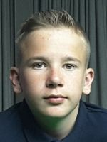

Nederland
Nederland China
ChinaEreliga
| Week 1 | Thuisploeg | Uitploeg | ||
|---|---|---|---|---|
| ma 28-08-23 | VRIJ | 0 - 9 | De Kreeft A | |
| do 31-08-23 | Zuma C | 6 - 12 | De Maxx A | |
| di 29-08-23 | Biljart Lounge A | 11 - 7 | Biljart Lounge B | |
| di 29-08-23 | Buckingham A | 5 - 13 | Buckingham B | |
| wo 30-08-23 | Happy Snooker A | 15 - 3 | Happy Snooker B | |
| di 29-08-23 | Re-Spot A | 3 - 15 | Re-Spot B | |
| di 29-08-23 | Riley Inn A | 9 - 0 | Riley Inn B (ff) | |
| do 19-10-23 | Zuma A | 15 - 3 | Zuma B |
| Week 2 | Thuisploeg | Uitploeg | ||
|---|---|---|---|---|
| ma 04-09-23 | Buckingham B | 9 - 0 | VRIJ | |
| di 05-09-23 | Biljart Lounge B | 9 - 9 | Buckingham A | |
| wo 06-09-23 | De Kreeft A | 6 - 12 | Happy Snooker A | |
| di 05-09-23 | Happy Snooker B | 1 - 17 | Biljart Lounge A | |
| di 05-09-23 | Re-Spot B | 11 - 7 | Riley Inn A | |
| di 05-09-23 | Riley Inn B (ff) | 0 - 9 | Zuma A | |
| di 24-10-23 | Zuma B | 14 - 4 | Zuma C | |
| do 07-09-23 | De Maxx A | 13 - 5 | Re-Spot A |
| Week 3 | Thuisploeg | Uitploeg | ||
|---|---|---|---|---|
| ma 11-09-23 | VRIJ | 0 - 9 | Happy Snooker A | |
| ma 11-09-23 | Buckingham B | 9 - 9 | Biljart Lounge B | |
| di 12-09-23 | Biljart Lounge A | 16 - 2 | Buckingham A | |
| di 12-09-23 | Happy Snooker B | 10 - 8 | De Kreeft A | |
| di 12-09-23 | Re-Spot A | 2 - 16 | Riley Inn A | |
| di 12-09-23 | Riley Inn B (ff) | 0 - 9 | Re-Spot B | |
| wo 25-10-23 | Zuma A | 18 - 0 | Zuma C | |
| do 14-09-23 | De Maxx A | 9 - 9 | Zuma B |
| Week 4 | Thuisploeg | Uitploeg | ||
|---|---|---|---|---|
| ma 18-09-23 | Buckingham A | 9 - 0 | VRIJ | |
| ma 18-09-23 | Zuma C | 3 - 15 | Biljart Lounge A | |
| wo 20-09-23 | Biljart Lounge B | 13 - 5 | De Maxx A | |
| zo 24-09-23 | De Kreeft A | 6 - 12 | Buckingham B | |
| di 19-09-23 | Happy Snooker A | 10 - 8 | Re-Spot A | |
| di 19-09-23 | Re-Spot B | 12 - 6 | Happy Snooker B | |
| di 19-09-23 | Riley Inn A | 7 - 11 | Zuma A | |
| di 19-09-23 | Zuma B | 9 - 0 | Riley Inn B (ff) |
| Week 5 | Thuisploeg | Uitploeg | ||
|---|---|---|---|---|
| ma 25-09-23 | VRIJ | 0 - 9 | Zuma C | |
| ma 25-09-23 | Buckingham B | 12 - 6 | Re-Spot B | |
| di 26-09-23 | Biljart Lounge A | 14 - 4 | Riley Inn A | |
| di 26-09-23 | Happy Snooker B | 9 - 9 | Zuma B | |
| di 26-09-23 | Re-Spot A | 6 - 12 | Buckingham A | |
| di 26-09-23 | Riley Inn B (ff) | 0 - 9 | Biljart Lounge B | |
| ma 25-09-23 | Zuma A | 15 - 3 | Happy Snooker A | |
| do 28-09-23 | De Maxx A | 3 - 15 | De Kreeft A |
| Week 6 | Thuisploeg | Uitploeg | ||
|---|---|---|---|---|
| ma 02-10-23 | Riley Inn A | 9 - 0 | VRIJ | |
| ma 02-10-23 | Zuma C | 6 - 12 | Re-Spot A | |
| di 03-10-23 | Biljart Lounge B | 11 - 7 | Happy Snooker B | |
| di 03-10-23 | Buckingham A | 6 - 12 | Zuma A | |
| di 03-10-23 | De Kreeft A | 9 - 0 | Riley Inn B (ff) | |
| di 03-10-23 | Happy Snooker A | 8 - 10 | Biljart Lounge A | |
| di 03-10-23 | Re-Spot B | 15 - 3 | De Maxx A | |
| di 03-10-23 | Zuma B | 8 - 10 | Buckingham B |
| Week 7 | Thuisploeg | Uitploeg | ||
|---|---|---|---|---|
| ma 09-10-23 | Biljart Lounge A | 9 - 0 | VRIJ | |
| ma 09-10-23 | Buckingham B | 11 - 7 | Happy Snooker B | |
| ma 09-10-23 | Zuma C | 5 - 13 | Buckingham A | |
| di 10-10-23 | De Kreeft A | 5 - 13 | Re-Spot B | |
| di 10-10-23 | Happy Snooker A | 11 - 7 | Riley Inn A | |
| di 10-10-23 | Re-Spot A | 2 - 16 | Zuma A | |
| di 10-10-23 | Riley Inn B (ff) | 0 - 9 | De Maxx A | |
| di 10-10-23 | Zuma B | 10 - 8 | Biljart Lounge B |
| Week 8 | Thuisploeg | Uitploeg | ||
|---|---|---|---|---|
| ma 16-10-23 | VRIJ | 0 - 9 | Re-Spot A | |
| di 17-10-23 | Biljart Lounge B | 11 - 7 | De Kreeft A | |
| di 17-10-23 | Buckingham A | 8 - 10 | Happy Snooker A | |
| di 17-10-23 | Happy Snooker B | 9 - 0 | Riley Inn B (ff) | |
| di 17-10-23 | Re-Spot B | 10 - 8 | Zuma B | |
| di 17-10-23 | Riley Inn A | 15 - 3 | Zuma C | |
| di 17-10-23 | Zuma A | 10 - 8 | Biljart Lounge A | |
| do 19-10-23 | De Maxx A | 9 - 9 | Buckingham B |
| Week 9 | Thuisploeg | Uitploeg | ||
|---|---|---|---|---|
| ma 30-10-23 | VRIJ | 0 - 9 | Happy Snooker B | |
| di 24-10-23 | Zuma C | 8 - 10 | Biljart Lounge B | |
| di 31-10-23 | Biljart Lounge A | 11 - 7 | Buckingham B | |
| di 31-10-23 | Buckingham A | 11 - 7 | De Kreeft A | |
| di 31-10-23 | Happy Snooker A | 11 - 7 | Re-Spot B | |
| di 31-10-23 | Re-Spot A | 9 - 0 | Riley Inn B (ff) | |
| di 31-10-23 | Riley Inn A | 10 - 8 | Zuma B | |
| di 31-10-23 | Zuma A | 17 - 1 | De Maxx A |
| Week 10 | Thuisploeg | Uitploeg | ||
|---|---|---|---|---|
| ma 06-11-23 | Buckingham B | 10 - 8 | Riley Inn A | |
| ma 06-11-23 | Zuma B | 9 - 0 | VRIJ | |
| di 07-11-23 | Biljart Lounge B | 11 - 7 | Re-Spot A | |
| wo 01-11-23 | De Kreeft A | 5 - 13 | Zuma A | |
| ma 30-10-23 | Happy Snooker B | 17 - 1 | Zuma C | |
| di 24-10-23 | Re-Spot B | 8 - 10 | Biljart Lounge A | |
| di 07-11-23 | Riley Inn B (ff) | 0 - 9 | Buckingham A | |
| do 09-11-23 | De Maxx A | 3 - 15 | Happy Snooker A |
| Week 11 | Thuisploeg | Uitploeg | ||
|---|---|---|---|---|
| ma 13-11-23 | Zuma A | 9 - 0 | VRIJ | |
| ma 23-10-23 | Biljart Lounge A | 14 - 4 | Re-Spot A | |
| di 14-11-23 | Buckingham A | 4 - 14 | Riley Inn A | |
| wo 15-11-23 | De Kreeft A | 11 - 7 | Zuma B | |
| di 14-11-23 | Happy Snooker A | 18 - 0 | Zuma C | |
| wo 15-11-23 | Re-Spot B | 14 - 4 | Biljart Lounge B | |
| di 14-11-23 | Riley Inn B (ff) | 0 - 9 | Buckingham B | |
| do 16-11-23 | De Maxx A | 6 - 12 | Happy Snooker B |
| Week 12 | Thuisploeg | Uitploeg | ||
|---|---|---|---|---|
| ma 20-11-23 | VRIJ | 0 - 9 | Biljart Lounge B | |
| ma 20-11-23 | Zuma C | 9 - 0 | Riley Inn B (ff) | |
| di 21-11-23 | Biljart Lounge A | 15 - 3 | Zuma B | |
| di 21-11-23 | Buckingham A | 15 - 3 | De Maxx A | |
| di 21-11-23 | Happy Snooker A | 16 - 2 | Buckingham B | |
| di 21-11-23 | Re-Spot A | 10 - 8 | De Kreeft A | |
| di 21-11-23 | Riley Inn A | 12 - 6 | Happy Snooker B | |
| di 21-11-23 | Zuma A | 14 - 4 | Re-Spot B |
| Week 13 | Thuisploeg | Uitploeg | ||
|---|---|---|---|---|
| ma 27-11-23 | Buckingham B | 14 - 4 | Re-Spot A | |
| ma 27-11-23 | De Maxx A | 9 - 0 | VRIJ | |
| di 28-11-23 | Biljart Lounge B | 4 - 14 | Happy Snooker A | |
| do 30-11-23 | De Kreeft A | 7 - 11 | Riley Inn A | |
| di 28-11-23 | Happy Snooker B | 2 - 16 | Zuma A | |
| di 28-11-23 | Re-Spot B | 16 - 2 | Zuma C | |
| di 28-11-23 | Riley Inn B (ff) | 0 - 9 | Biljart Lounge A | |
| di 28-11-23 | Zuma B | 9 - 9 | Buckingham A |
| Week 14 | Thuisploeg | Uitploeg | ||
|---|---|---|---|---|
| ma 04-12-23 | VRIJ | 0 - 9 | Re-Spot B | |
| ma 04-12-23 | Zuma C | 3 - 15 | Buckingham B | |
| di 05-12-23 | Biljart Lounge A | 13 - 5 | De Kreeft A | |
| di 05-12-23 | Buckingham A | 12 - 6 | Happy Snooker B | |
| di 05-12-23 | Happy Snooker A | 9 - 0 | Riley Inn B (ff) | |
| di 05-12-23 | Re-Spot A | 7 - 11 | Zuma B | |
| di 05-12-23 | Riley Inn A | 11 - 7 | De Maxx A | |
| di 05-12-23 | Zuma A | 16 - 2 | Biljart Lounge B |
| Week 15 | Thuisploeg | Uitploeg | ||
|---|---|---|---|---|
| ma 11-12-23 | Buckingham B | 6 - 12 | Zuma A | |
| ma 11-12-23 | Riley Inn B (ff) | 0 - 9 | VRIJ | |
| di 12-12-23 | Biljart Lounge B | 8 - 10 | Riley Inn A | |
| wo 13-12-23 | De Kreeft A | 17 - 1 | Zuma C | |
| di 12-12-23 | Happy Snooker B | 10 - 8 | Re-Spot A | |
| di 12-12-23 | Re-Spot B | 13 - 5 | Buckingham A | |
| di 12-12-23 | Zuma B | 7 - 11 | Happy Snooker A | |
| do 14-12-23 | De Maxx A | 4 - 14 | Biljart Lounge A |
| Week 16 | Thuisploeg | Uitploeg | ||
|---|---|---|---|---|
| ma 08-01-24 | Buckingham B | 12 - 6 | Buckingham A | |
| ma 08-01-24 | De Kreeft A | 9 - 0 | VRIJ | |
| di 09-01-24 | Biljart Lounge B | 6 - 12 | Biljart Lounge A | |
| di 09-01-24 | Happy Snooker B | 4 - 14 | Happy Snooker A | |
| di 09-01-24 | Re-Spot B | 15 - 3 | Re-Spot A | |
| di 09-01-24 | Riley Inn B (ff) | 0 - 9 | Riley Inn A | |
| di 09-01-24 | Zuma B | 6 - 12 | Zuma A | |
| do 11-01-24 | De Maxx A | 9 - 9 | Zuma C |
| Week 17 | Thuisploeg | Uitploeg | ||
|---|---|---|---|---|
| ma 15-01-24 | VRIJ | 0 - 9 | Buckingham B | |
| ma 15-01-24 | Zuma C | 7 - 11 | Zuma B | |
| do 21-12-23 | Biljart Lounge A | 13 - 5 | Happy Snooker B | |
| di 16-01-24 | Buckingham A | 7 - 11 | Biljart Lounge B | |
| di 16-01-24 | Happy Snooker A | 11 - 7 | De Kreeft A | |
| do 08-02-24 | Re-Spot A | 7 - 11 | De Maxx A | |
| di 16-01-24 | Riley Inn A | 8 - 10 | Re-Spot B | |
| di 16-01-24 | Zuma A | 9 - 0 | Riley Inn B (ff) |
| Week 18 | Thuisploeg | Uitploeg | ||
|---|---|---|---|---|
| ma 22-01-24 | Happy Snooker A | 9 - 0 | VRIJ | |
| wo 24-01-24 | Zuma C | 1 - 17 | Zuma A | |
| di 23-01-24 | Biljart Lounge B | 10 - 8 | Buckingham B | |
| di 23-01-24 | Buckingham A | 6 - 12 | Biljart Lounge A | |
| wo 24-01-24 | De Kreeft A | 12 - 6 | Happy Snooker B | |
| di 23-01-24 | Re-Spot B | 9 - 0 | Riley Inn B (ff) | |
| di 23-01-24 | Riley Inn A | 17 - 1 | Re-Spot A | |
| di 23-01-24 | Zuma B | 11 - 7 | De Maxx A |
| Week 19 | Thuisploeg | Uitploeg | ||
|---|---|---|---|---|
| ma 29-01-24 | VRIJ | 0 - 9 | Buckingham A | |
| ma 29-01-24 | Buckingham B | 12 - 6 | De Kreeft A | |
| do 04-01-24 | Biljart Lounge A | 17 - 1 | Zuma C | |
| wo 31-01-24 | Happy Snooker B | 6 - 12 | Re-Spot B | |
| di 30-01-24 | Re-Spot A | 1 - 17 | Happy Snooker A | |
| di 30-01-24 | Riley Inn B (ff) | 0 - 9 | Zuma B | |
| di 30-01-24 | Zuma A | 11 - 7 | Riley Inn A | |
| do 01-02-24 | De Maxx A | 7 - 11 | Biljart Lounge B |
| Week 20 | Thuisploeg | Uitploeg | ||
|---|---|---|---|---|
| ma 05-02-24 | Zuma C | 9 - 0 | VRIJ | |
| di 06-02-24 | Biljart Lounge B | 9 - 0 | Riley Inn B (ff) | |
| do 08-02-24 | Buckingham A | 15 - 3 | Re-Spot A | |
| vr 09-02-24 | De Kreeft A | 13 - 5 | De Maxx A | |
| di 06-02-24 | Happy Snooker A | 9 - 9 | Zuma A | |
| do 01-02-24 | Re-Spot B | 11 - 7 | Buckingham B | |
| di 06-02-24 | Riley Inn A | 9 - 9 | Biljart Lounge A | |
| di 06-02-24 | Zuma B | 3 - 15 | Happy Snooker B |
| Week 21 | Thuisploeg | Uitploeg | ||
|---|---|---|---|---|
| ma 12-02-24 | VRIJ | 0 - 9 | Riley Inn A | |
| ma 12-02-24 | Buckingham B | 13 - 5 | Zuma B | |
| di 13-02-24 | Biljart Lounge A | 10 - 8 | Happy Snooker A | |
| di 13-02-24 | Happy Snooker B | 9 - 9 | Biljart Lounge B | |
| wo 14-02-24 | Re-Spot A | 15 - 3 | Zuma C | |
| di 13-02-24 | Riley Inn B (ff) | 0 - 9 | De Kreeft A | |
| do 22-02-24 | Zuma A | 15 - 3 | Buckingham A | |
| do 15-02-24 | De Maxx A | 9 - 9 | Re-Spot B |
| Week 22 | Thuisploeg | Uitploeg | ||
|---|---|---|---|---|
| ma 19-02-24 | VRIJ | 0 - 9 | Biljart Lounge A | |
| di 20-02-24 | Biljart Lounge B | 12 - 6 | Zuma B | |
| di 20-02-24 | Buckingham A | 17 - 1 | Zuma C | |
| di 20-02-24 | Happy Snooker B | 2 - 16 | Buckingham B | |
| di 20-02-24 | Re-Spot B | 12 - 6 | De Kreeft A | |
| di 20-02-24 | Riley Inn A | 6 - 12 | Happy Snooker A | |
| di 20-02-24 | Zuma A | 15 - 3 | Re-Spot A | |
| do 22-02-24 | De Maxx A | 9 - 0 | Riley Inn B (ff) |
| Week 23 | Thuisploeg | Uitploeg | ||
|---|---|---|---|---|
| ma 26-02-24 | Buckingham B | 12 - 6 | De Maxx A | |
| ma 26-02-24 | Re-Spot A | 9 - 0 | VRIJ | |
| ma 26-02-24 | Zuma C | 3 - 15 | Riley Inn A | |
| di 27-02-24 | Biljart Lounge A | 8 - 10 | Zuma A | |
| wo 28-02-24 | De Kreeft A | 9 - 9 | Biljart Lounge B | |
| wo 28-02-24 | Happy Snooker A | 10 - 8 | Buckingham A | |
| di 27-02-24 | Riley Inn B (ff) | 0 - 9 | Happy Snooker B | |
| di 27-02-24 | Zuma B | 8 - 10 | Re-Spot B |
| Week 24 | Thuisploeg | Uitploeg | ||
|---|---|---|---|---|
| ma 11-03-24 | Buckingham B | 2 - 16 | Biljart Lounge A | |
| ma 11-03-24 | Happy Snooker B | 9 - 0 | VRIJ | |
| wo 06-03-24 | Biljart Lounge B | 18 - 0 | Zuma C | |
| wo 13-03-24 | De Kreeft A | 5 - 13 | Buckingham A | |
| di 12-03-24 | Re-Spot B | 6 - 12 | Happy Snooker A | |
| di 12-03-24 | Riley Inn B (ff) | 0 - 9 | Re-Spot A | |
| di 12-03-24 | Zuma B | 9 - 9 | Riley Inn A | |
| do 14-03-24 | De Maxx A | 2 - 16 | Zuma A |
| Week 25 | Thuisploeg | Uitploeg | ||
|---|---|---|---|---|
| ma 18-03-24 | VRIJ | 0 - 9 | Zuma B | |
| wo 06-03-24 | Zuma C | 5 - 13 | Happy Snooker B | |
| di 19-03-24 | Biljart Lounge A | 14 - 4 | Re-Spot B | |
| di 19-03-24 | Buckingham A | 9 - 0 | Riley Inn B (ff) | |
| di 19-03-24 | Happy Snooker A | 12 - 6 | De Maxx A | |
| di 19-03-24 | Re-Spot A | 7 - 11 | Biljart Lounge B | |
| di 19-03-24 | Riley Inn A | 9 - 9 | Buckingham B | |
| di 19-03-24 | Zuma A | 13 - 5 | De Kreeft A |
| Week 26 | Thuisploeg | Uitploeg | ||
|---|---|---|---|---|
| ma 25-03-24 | VRIJ | 0 - 9 | Zuma A | |
| ma 25-03-24 | Buckingham B | 9 - 0 | Riley Inn B (ff) | |
| ma 25-03-24 | Zuma C | 1 - 17 | Happy Snooker A | |
| di 26-03-24 | Biljart Lounge B | 13 - 5 | Re-Spot B | |
| di 26-03-24 | Happy Snooker B | 3 - 15 | De Maxx A | |
| di 26-03-24 | Re-Spot A | 2 - 16 | Biljart Lounge A | |
| di 26-03-24 | Riley Inn A | 12 - 6 | Buckingham A | |
| di 26-03-24 | Zuma B | 6 - 12 | De Kreeft A |
| Week 27 | Thuisploeg | Uitploeg | ||
|---|---|---|---|---|
| ma 01-04-24 | Biljart Lounge B | 9 - 0 | VRIJ | |
| ma 01-04-24 | Buckingham B | 10 - 8 | Happy Snooker A | |
| do 04-04-24 | De Kreeft A | 8 - 10 | Re-Spot A | |
| di 02-04-24 | Happy Snooker B | 6 - 12 | Riley Inn A | |
| di 02-04-24 | Re-Spot B | 5 - 13 | Zuma A | |
| di 02-04-24 | Riley Inn B (ff) | 0 - 9 | Zuma C | |
| do 14-03-24 | Zuma B | 9 - 9 | Biljart Lounge A | |
| do 04-04-24 | De Maxx A | 12 - 6 | Buckingham A |
| Week 28 | Thuisploeg | Uitploeg | ||
|---|---|---|---|---|
| ma 08-04-24 | VRIJ | 0 - 9 | De Maxx A | |
| di 09-04-24 | Zuma C | 1 - 17 | Re-Spot B | |
| di 09-04-24 | Biljart Lounge A | 9 - 0 | Riley Inn B (ff) | |
| di 09-04-24 | Buckingham A | 9 - 9 | Zuma B | |
| di 09-04-24 | Happy Snooker A | 13 - 5 | Biljart Lounge B | |
| di 09-04-24 | Re-Spot A | 2 - 16 | Buckingham B | |
| di 09-04-24 | Riley Inn A | 15 - 3 | De Kreeft A | |
| di 09-04-24 | Zuma A | 14 - 4 | Happy Snooker B |
| Week 29 | Thuisploeg | Uitploeg | ||
|---|---|---|---|---|
| ma 15-04-24 | Buckingham B | 14 - 4 | Zuma C | |
| ma 15-04-24 | Re-Spot B | 9 - 0 | VRIJ | |
| di 16-04-24 | Biljart Lounge B | 4 - 14 | Zuma A | |
| do 18-04-24 | De Kreeft A | 4 - 14 | Biljart Lounge A | |
| wo 17-04-24 | Happy Snooker B | 8 - 10 | Buckingham A | |
| di 16-04-24 | Riley Inn B (ff) | 0 - 9 | Happy Snooker A | |
| di 16-04-24 | Zuma B | 15 - 3 | Re-Spot A | |
| vr 19-04-24 | De Maxx A | 9 - 9 | Riley Inn A |
| Week 30 | Thuisploeg | Uitploeg | ||
|---|---|---|---|---|
| ma 22-04-24 | VRIJ | 9 - 0 | Riley Inn B (ff) | |
| ma 22-04-24 | Zuma C | 4 - 14 | De Kreeft A | |
| di 23-04-24 | Biljart Lounge A | 17 - 1 | De Maxx A | |
| di 23-04-24 | Buckingham A | 8 - 10 | Re-Spot B | |
| di 23-04-24 | Happy Snooker A | 11 - 7 | Zuma B | |
| di 23-04-24 | Re-Spot A | 9 - 9 | Happy Snooker B | |
| di 23-04-24 | Riley Inn A | 3 - 15 | Biljart Lounge B | |
| di 23-04-24 | Zuma A | 10 - 8 | Buckingham B |
| 6 \ 12 | Uit: De Maxx A | × | ||
| Thuis: Zuma C | Schrijvers Peter | Bloemen Lennert |  Brepoels Erwin | |
| Annaloro Giuseppe | 16 - 59 18 - 57 | 20 - 50 17 - 48 | 50 - 40 17 - 72 | 1 |
 Veltman Mario | 27 - 60 57 - 36 | 47 - 28 53 - 31 | 52 - 28 45 - 33 | 5 |
 Jacobs Joachim | 12 - 53 (br 36) 46 - 50 | 41 - 52 20 - 66 | 9 - 60 40 - 64 | 0 |
| 5 | 4 | 3 | ||
| 11 \ 7 | Uit: Biljart Lounge B | × | ||
| Thuis: Biljart Lounge A |  Lenaerts Georges | Dorissen Robby |  Charot Pascal | |
| Vanoppen Kobe | (br 48) 77 - 14 53 - 40 | (br 62) 63 - 74 (br 59) (br 65) 70 - 22 | (br 33) 80 - 70 53 - 24 | 5 |
| Kempenaers Gert | 48 - 2 67 - 40 | (br 45) 64 - 31 56 - 59 | 46 - 55 17 - 56 | 3 |
 Vandevoort Kevin | 51 - 29 50 - 20 | (br 35) 67 - 28 53 - 64 | 27 - 48 62 - 65 (br 31) | 3 |
| 0 | 3 | 4 | ||
| 5 \ 13 | Uit: Buckingham B | × | ||
| Thuis: Buckingham A |  Kaerts Bjorn |  Rochanat Treepetch | T'Syen Chris | |
 De Wit Matthias | 63 - 64 (br 34) 29 - 79 | 58 - 59 (br 35) 8 - 64 (br 34) | 11 - 64 (br 40) 28 - 57 | 0 |
| Wuyts Joeri | 25 - 51 16 - 64 | (br 46) 65 - 29 44 - 58 | 32 - 51 46 - 58 | 1 |
 Hulsmans Ruddy | 62 - 21 42 - 59 | (br 31) 69 - 35 68 - 52 | 43 - 11 34 - 72 (br 36) | 4 |
| 5 | 3 | 5 | ||
| 15 \ 3 | Uit: Happy Snooker B | × | ||
| Thuis: Happy Snooker A | Byloos Olivier |  Mangelschots Rudi |  Smeulders Erik | |
|  Hoes Yorrit | 73 - 23 58 - 30 | 70 - 6 22 - 51 | 8 - 72 (br 30) (br 35) 72 - 27 | 4 |
| Moermans Johny | (br 30) 77 - 23 50 - 39 | (br 40) 74 - 26 53 - 24 | (br 37) 85 - 20 63 - 54 | 6 |
 Pauly Davy | (br 37) 58 - 52 66 - 39 | (br 37) 66 - 40 44 - 21 | 30 - 46 55 - 43 | 5 |
| 0 | 1 | 2 | ||
| 3 \ 15 | Uit: Re-Spot B | × | ||
| Thuis: Re-Spot A |  Monard Andries | Hulsbosch Michael |  Jansen Nick | |
 Cornitensis Rik | 15 - 67 (br 33) 53 - 61 | 24 - 51 5 - 43 | 58 - 49 65 - 77 | 1 |
 Duchateau Patrick | 5 - 67 45 - 62 | 7 - 54 28 - 66 | 26 - 61 68 - 49 | 1 |
 Driesen Frank | 63 - 75 65 - 64 | 43 - 59 41 - 49 | 40 - 63 0 - 88 (br 63) | 1 |
| 5 | 6 | 4 | ||
| 15 \ 3 | Uit: Zuma B | × | ||
| Thuis: Zuma A | Gielen Rudi |  Hoebers Bert |  Achten Bjorn | |
 Skalski Tomasz | (br 30) 69 - 19 64 - 39 | (br 57) 64 - 28 55 - 36 | 61 - 29 (br 31) 70 - 28 | 6 |
 D'hondt Johan | 15 - 62 (br 37) (br 40) 100 - 15 | (br 34) 64 - 4 (br 61) 85 - 26 | 30 - 70 (br 42) 17 - 54 | 3 |
 Heusdens Jurian | 55 - 16 (br 32) 58 - 28 | (br 30) 51 - 24 54 - 24 | (br 68) 93 - 5 65 - 50 | 6 |
| 1 | 0 | 2 | ||
| 9 \ 9 | Uit: Buckingham A | × | ||
| Thuis: Biljart Lounge B | De Wit Matthias | Wuyts Joeri |  Hooyberghs Toon | |
| Lenaerts Georges | 38 - 66 47 - 35 | 43 - 65 30 - 46 | 22 - 64 24 - 55 | 1 |
| Dorissen Robby | 0 - 75 (br 44) 55 - 31 | 49 - 32 61 - 18 | 65 - 51 36 - 49 | 4 |
| Charot Pascal | 44 - 58 50 - 37 | 50 - 32 54 - 12 | 34 - 55 55 - 33 | 4 |
| 3 | 2 | 4 | ||
| 6 \ 12 | Uit: Happy Snooker A | × | ||
| Thuis: De Kreeft A | Pauly Davy | Hoes Yorrit | Moermans Johny | |
| Dethier Pierre | 54 - 22 14 - 50 | 21 - 58 71 - 39 | 16 - 61 28 - 97 | 2 |
 Chaumont Pascal | 22 - 42 17 - 60 | 15 - 65 1 - 93 (br 40) | 59 - 19 20 - 64 (br 36) | 1 |
 Ruyters Theo | 30 - 54 54 - 56 | (br 43) 92 - 20 (br 41) 84 - 26 | (br 48) 82 - 28 (br 33) 36 - 75 | 3 |
| 5 | 3 | 4 | ||
| 1 \ 17 | Uit: Biljart Lounge A | × | ||
| Thuis: Happy Snooker B | Kempenaers Gert | Vanoppen Kobe | Vandevoort Kevin | |
| Smeulders Erik | 20 - 50 34 - 56 (br 43) | 23 - 55 (br 32) 70 - 38 | 8 - 73 46 - 50 | 1 |
| Byloos Olivier | 42 - 51 21 - 55 | 34 - 65 (br 33) 45 - 68 (br 32) | 31 - 80 7 - 67 (br 30) | 0 |
| Mangelschots Rudi | 61 - 65 13 - 72 | 25 - 70 12 - 80 (br 67) | 40 - 50 22 - 62 | 0 |
| 6 | 5 | 6 | ||
| 11 \ 7 | Uit: Riley Inn A | × | ||
| Thuis: Re-Spot B |  Thehu Jesse | Marien Christoph |  Smeulders Ivo | |
| Monard Andries | 29 - 70 (br 31) 6 - 101 (br 87) | 42 - 70 29 - 65 | 62 - 41 79 - 48 | 2 |
 Sokolowski Sybren | (br 31) 68 - 8 63 - 57 (br 42) | 42 - 80 (br 62) (br 30) 75 - 43 | (br 60) 67 - 1 60 - 46 | 5 |
| Jansen Nick | 57 - 41 67 - 41 | (br 37) 76 - 15 45 - 52 | 11 - 78 (br 36) 73 - 18 | 4 |
| 2 | 4 | 1 | ||
| 14 \ 4 | Uit: Zuma C | × | ||
| Thuis: Zuma B | Annaloro Giuseppe | Jacobs Joachim | Veltman Mario | |
 Buteneers Mark | (br 30) 70 - 27 62 - 35 | 59 - 26 (br 35) 77 - 34 | 46 - 73 63 - 46 | 5 |
| Achten Bjorn | 51 - 23 67 - 27 | 35 - 58 62 - 51 | 56 - 38 54 - 15 | 5 |
| Hoebers Bert | 53 - 14 62 - 46 | 30 - 46 39 - 52 | (br 39) 57 - 9 68 - 14 | 4 |
| 0 | 3 | 1 | ||
| 13 \ 5 | Uit: Re-Spot A | × | ||
| Thuis: De Maxx A | Cornitensis Rik | Duchateau Patrick | Driesen Frank | |
| Schrijvers Peter | 70 - 30 71 - 7 | 38 - 58 22 - 44 | 63 - 20 (br 30) 60 - 17 | 4 |
| Brepoels Erwin | 72 - 65 48 - 9 | 60 - 56 53 - 50 | 28 - 35 41 - 65 | 4 |
 Luining Nicky | 21 - 53 (br 37) 58 - 42 | 61 - 32 52 - 47 | 69 - 52 56 - 50 | 5 |
| 1 | 2 | 2 | ||
| 9 \ 9 | Uit: Biljart Lounge B | × | ||
| Thuis: Buckingham B | Dorissen Robby | Charot Pascal | Lenaerts Georges | |
| T'Syen Chris | 55 - 23 42 - 17 | 14 - 68 (br 38) 58 - 24 | (br 43) 53 - 3 39 - 69 | 4 |
| Kaerts Bjorn | 43 - 60 27 - 51 | 57 - 5 32 - 60 | 66 - 51 54 - 61 | 2 |
| Rochanat Treepetch | 26 - 61 3 - 46 | (br 44) 70 - 2 63 - 10 | (br 32) 59 - 39 35 - 58 (br 40) | 3 |
| 4 | 2 | 3 | ||
| 16 \ 2 | Uit: Buckingham A | × | ||
| Thuis: Biljart Lounge A | Hooyberghs Toon | Hulsmans Ruddy | De Wit Matthias | |
| Vandevoort Kevin | 53 - 43 (br 40) 72 - 47 | 54 - 43 (br 32) 65 - 58 | 57 - 65 64 - 56 (br 37) | 5 |
| Kempenaers Gert | 49 - 4 (br 31) 61 - 41 | (br 38) 67 - 15 54 - 19 | (br 38) 60 - 12 54 - 28 | 6 |
| Vanoppen Kobe | 70 - 68 2 - 60 | 58 - 20 (br 44) 67 - 23 | 77 - 15 (br 36) 60 - 35 | 5 |
| 1 | 0 | 1 | ||
| 10 \ 8 | Uit: De Kreeft A | × | ||
| Thuis: Happy Snooker B | Dethier Pierre |  Reekmans Rudy | Ruyters Theo | |
| Smeulders Erik | 46 - 38 59 - 32 | 50 - 0 50 - 0 | 29 - 67 43 - 73 | 4 |
| Byloos Olivier | 22 - 55 5 - 64 (br 46) | 50 - 0 50 - 0 | 53 - 41 51 - 66 | 3 |
| Mangelschots Rudi | 28 - 62 57 - 23 | 50 - 0 50 - 0 | 1 - 66 (br 30) 47 - 59 | 3 |
| 3 | 0 | 5 | ||
| 2 \ 16 | Uit: Riley Inn A | × | ||
| Thuis: Re-Spot A | Thehu Jesse | Smeulders Ivo | Marien Christoph | |
| Cornitensis Rik | 40 - 64 22 - 64 | 13 - 60 14 - 64 | 34 - 58 18 - 55 | 0 |
| Duchateau Patrick | 16 - 61 11 - 66 (br 60) | 26 - 55 6 - 53 | 21 - 61 11 - 79 (br 39) | 0 |
| Driesen Frank | 38 - 48 41 - 68 (br 39) | 54 - 29 29 - 54 | 50 - 35 20 - 44 | 2 |
| 6 | 5 | 5 | ||
| 18 \ 0 | Uit: Zuma C | × | ||
| Thuis: Zuma A | Jacobs Joachim | Annaloro Giuseppe | Veltman Mario | |
| Heusdens Jurian | (br 30) 81 - 17 (br 53) 113 - 0 | (br 33) 85 - 0 49 - 21 | (br 33) 54 - 9 51 - 38 | 6 |
| D'hondt Johan | (br 34) 71 - 6 61 - 11 | (br 36) 81 - 0 (br 30) 70 - 34 | (br 43) 75 - 1 (br 82) 82 - 1 | 6 |
| Skalski Tomasz | (br 46) 74 - 17 54 - 32 | (br 30) 66 - 11 (br 34) 61 - 14 | 48 - 23 47 - 39 | 6 |
| 0 | 0 | 0 | ||
| 9 \ 9 | Uit: Zuma B | × | ||
| Thuis: De Maxx A | Buteneers Mark | Gielen Rudi | Achten Bjorn | |
| Schrijvers Peter | 69 - 28 73 - 32 | (br 30) 62 - 12 57 - 8 | 67 - 41 41 - 69 | 5 |
| Brepoels Erwin | 62 - 42 42 - 64 | 36 - 55 61 - 41 | 58 - 46 21 - 58 | 3 |
 Van Oppen Raf | 48 - 44 18 - 69 (br 38) | 14 - 54 (br 31) 50 - 62 | 2 - 61 1 - 61 | 1 |
| 2 | 3 | 4 | ||
| 3 \ 15 | Uit: Biljart Lounge A | × | ||
| Thuis: Zuma C | Kempenaers Gert | Vandevoort Kevin | Vanoppen Kobe | |
| Jacobs Joachim | 17 - 65 (br 35) 52 - 32 | 41 - 52 9 - 80 | 9 - 80 (br 63) 63 - 35 | 2 |
| Annaloro Giuseppe | 18 - 49 29 - 53 | 12 - 72 (br 31) 0 - 99 (br 99) | 10 - 65 28 - 53 | 0 |
| Veltman Mario | 5 - 63 64 - 15 | 10 - 85 (br 32) 29 - 50 | 24 - 95 (br 71) 26 - 56 (br 50) | 1 |
| 4 | 6 | 5 | ||
| 13 \ 5 | Uit: De Maxx A | × | ||
| Thuis: Biljart Lounge B | Schrijvers Peter | Van Oppen Raf | Brepoels Erwin | |
| Dorissen Robby | 58 - 31 64 - 43 | (br 40) 88 - 0 36 - 53 | (br 31) 67 - 19 85 - 23 | 5 |
| Charot Pascal | 48 - 62 60 - 24 | 0 - 55 68 - 38 | 59 - 19 56 - 14 | 4 |
| Lenaerts Georges | 34 - 59 46 - 38 | 44 - 45 54 - 44 | 57 - 35 52 - 33 | 4 |
| 2 | 3 | 0 | ||
| 6 \ 12 | Uit: Buckingham B | × | ||
| Thuis: De Kreeft A | T'Syen Chris | Rochanat Treepetch | Kaerts Bjorn | |
| Dethier Pierre | 39 - 61 27 - 66 | 52 - 43 57 - 55 | 2 - 48 34 - 64 | 2 |
| Chaumont Pascal | 14 - 45 15 - 62 | 36 - 78 21 - 67 | 60 - 69 (br 30) 24 - 58 (br 47) | 0 |
| Ruyters Theo | 62 - 31 70 - 85 (br 31) | 38 - 58 62 - 44 | (br 30) 62 - 14 55 - 33 | 4 |
| 5 | 3 | 4 | ||
| 10 \ 8 | Uit: Re-Spot A | × | ||
| Thuis: Happy Snooker A | Cornitensis Rik | Duchateau Patrick | Driesen Frank | |
| Pauly Davy | 70 - 30 59 - 71 | 43 - 60 69 - 15 | 51 - 14 29 - 52 | 3 |
| Hoes Yorrit | 59 - 83 36 - 58 | 36 - 63 66 - 57 | 41 - 57 64 - 35 | 2 |
| Moermans Johny | 69 - 31 33 - 57 | 72 - 40 (br 54) 72 - 35 | 71 - 8 (br 40+39) 94 - 8 | 5 |
| 4 | 2 | 2 | ||
| 12 \ 6 | Uit: Happy Snooker B | × | ||
| Thuis: Re-Spot B | Byloos Olivier | Smeulders Erik | Mangelschots Rudi | |
| Jansen Nick | 62 - 41 73 - 37 | 49 - 28 55 - 29 | 57 - 17 51 - 63 | 5 |
| Hulsbosch Michael | 73 - 27 48 - 70 | (br 37) 56 - 10 68 - 36 (br 30) | 33 - 49 (br 33) 65 - 19 | 4 |
| Monard Andries | 26 - 60 71 - 27 | 46 - 50 45 - 10 | 69 - 48 50 - 61 | 3 |
| 2 | 1 | 3 | ||
| 7 \ 11 | Uit: Zuma A | × | ||
| Thuis: Riley Inn A | D'hondt Johan | Skalski Tomasz | Heusdens Jurian | |
| Marien Christoph | 61 - 22 16 - 59 (br 59) | 9 - 50 (br 31) (br 42) 77 - 42 | (br 52) 74 - 22 16 - 55 | 3 |
| Smeulders Ivo | 14 - 61 16 - 72 (br 59) | 2 - 53 7 - 78 (br 74) | 7 - 64 (br 40) 41 - 55 | 0 |
| Thehu Jesse | 71 - 52 (br 30) 45 - 65 | 74 - 39 53 - 71 (br 62) | 62 - 36 (br 52+30) 82 - 5 | 4 |
| 4 | 4 | 3 | ||
| 12 \ 6 | Uit: Re-Spot B | × | ||
| Thuis: Buckingham B | Monard Andries | Hulsbosch Michael | Jansen Nick | |
| T'Syen Chris | 60 - 23 (br 38) 86 - 22 | 60 - 30 37 - 74 (br 30) | (br 47) 69 - 44 67 - 40 | 5 |
| Kaerts Bjorn | 62 - 58 (br 36) (br 43) 86 - 13 | (br 34) 52 - 60 53 - 35 | 66 - 35 33 - 70 (br 32) | 4 |
| Rochanat Treepetch | 17 - 60 (br 30) 71 - 32 | (br 57) 71 - 50 69 - 19 | 44 - 67 22 - 66 | 3 |
| 1 | 2 | 3 | ||
| 14 \ 4 | Uit: Riley Inn A | × | ||
| Thuis: Biljart Lounge A |  Van Hove - Speltincx Kevin | Smeulders Ivo | Marien Christoph | |
| Vanoppen Kobe | (br 48) 73 - 1 58 - 13 | 63 - 44 54 - 15 | 28 - 58 81 - 60 | 5 |
| Kempenaers Gert | 52 - 41 (br 30) 69 - 49 | 57 - 29 20 - 43 | 54 - 64 59 - 32 | 4 |
| Vandevoort Kevin | (br 32) 63 - 27 (br 65) 65 - 0 | (br 35) 73 - 43 79 - 39 | 59 - 15 1 - 79 (br 45) | 5 |
| 0 | 1 | 3 | ||
| 9 \ 9 | Uit: Zuma B | × | ||
| Thuis: Happy Snooker B | Buteneers Mark | Hoebers Bert | Achten Bjorn | |
| Smeulders Erik | 43 - 26 29 - 57 | 61 - 48 58 - 46 | 60 - 18 37 - 46 | 4 |
| Byloos Olivier | 38 - 61 61 - 44 | 22 - 56 46 - 20 | 28 - 51 (br 30) 26 - 68 | 2 |
| Mangelschots Rudi | 49 - 48 19 - 46 | 47 - 61 50 - 15 | 19 - 61 55 - 44 | 3 |
| 3 | 2 | 4 | ||
| 6 \ 12 | Uit: Buckingham A | × | ||
| Thuis: Re-Spot A | Hooyberghs Toon | De Wit Matthias | Wuyts Joeri | |
| Cornitensis Rik | 21 - 73 (br 36) 46 - 54 | 36 - 58 34 - 43 | 16 - 39 53 - 66 | 0 |
| Duchateau Patrick | 61 - 30 5 - 74 | (br 30) 65 - 47 17 - 58 | 45 - 3 39 - 66 | 3 |
| Driesen Frank | 62 - 48 54 - 77 | 13 - 54 41 - 47 | (br 34) 65 - 29 57 - 28 | 3 |
| 4 | 5 | 3 | ||
| 15 \ 3 | Uit: Happy Snooker A | × | ||
| Thuis: Zuma A | Moermans Johny | Pauly Davy | Hoes Yorrit | |
| Skalski Tomasz | (br 40) 91 - 14 69 - 23 | (br 33) 70 - 6 58 - 13 | 68 - 19 61 - 32 | 6 |
| Heusdens Jurian | 11 - 67 74 - 2 | (br 32) 74 - 2 39 - 60 | 59 - 21 68 - 30 | 4 |
| D'hondt Johan | 57 - 41 25 - 52 | 63 - 43 65 - 57 | (br 38) 73 - 21 59 - 30 | 5 |
| 2 | 1 | 0 | ||
| 3 \ 15 | Uit: De Kreeft A | × | ||
| Thuis: De Maxx A | Dethier Pierre | Ruyters Theo | Chaumont Pascal | |
| Schrijvers Peter | 41 - 63 (br 30) 63 - 44 | 24 - 67 16 - 64 | 90 - 30 36 - 66 | 2 |
| Brepoels Erwin | 41 - 55 30 - 62 | 18 - 90 (br 39) 21 - 46 | 59 - 20 17 - 54 | 1 |
| Bloemen Lennert | (br 32) 45 - 77 28 - 66 | (br 30) 34 - 76 (br 44) 47 - 66 (br 44) | 39 - 47 17 - 56 | 0 |
| 5 | 6 | 4 | ||
| 6 \ 12 | Uit: Re-Spot A | × | ||
| Thuis: Zuma C | Cornitensis Rik | Duchateau Patrick | Driesen Frank | |
| Jacobs Joachim | 4 - 45 57 - 65 | 39 - 32 46 - 53 | 2 - 52 60 - 50 | 2 |
| Annaloro Giuseppe | 21 - 50 41 - 78 | 46 - 53 63 - 37 | 12 - 51 14 - 57 | 1 |
 Ginefra Aurelio | 18 - 46 62 - 38 | 8 - 69 53 - 34 | 47 - 35 17 - 49 | 3 |
| 5 | 3 | 4 | ||
| 11 \ 7 | Uit: Happy Snooker B | × | ||
| Thuis: Biljart Lounge B | Mangelschots Rudi | Smeulders Erik | Byloos Olivier | |
| Dorissen Robby | 53 - 66 78 - 19 | 19 - 78 48 - 15 | (br 34) 68 - 8 55 - 50 | 4 |
| Lenaerts Georges | 56 - 31 19 - 67 | (br 38) 71 - 34 55 - 36 | 45 - 27 56 - 66 | 4 |
| Charot Pascal | 15 - 59 (br 33) 74 - 5 | 42 - 55 51 - 45 | 51 - 37 32 - 40 | 3 |
| 3 | 2 | 2 | ||
| 6 \ 12 | Uit: Zuma A | × | ||
| Thuis: Buckingham A | Skalski Tomasz | D'hondt Johan | Heusdens Jurian | |
| Hooyberghs Toon | 9 - 64 (br 47) (br 45) 61 - 34 | 37 - 59 28 - 53 | (br 30) 59 - 43 (br 30) 70 - 14 | 3 |
| De Wit Matthias | 0 - 92 (br 78) 46 - 55 | 33 - 70 8 - 65 | (br 32) 38 - 61 (br 30) 67 - 18 | 1 |
| Hulsmans Ruddy | 45 - 58 (br 30) 24 - 74 | 75 - 45 31 - 64 (br 32) | 2 - 47 (br 30) 61 - 43 | 2 |
| 5 | 5 | 2 | ||
| 8 \ 10 | Uit: Biljart Lounge A | × | ||
| Thuis: Happy Snooker A | Kempenaers Gert | Vandevoort Kevin | Vanoppen Kobe | |
| Pauly Davy | 57 - 46 (br 57) 64 - 29 | 28 - 57 67 - 50 | (br 51) 76 - 29 19 - 61 | 4 |
| Hoes Yorrit | 43 - 60 25 - 64 | (br 41) 70 - 40 65 - 23 | 9 - 76 (br 33) 38 - 49 | 2 |
| Moermans Johny | 23 - 60 (br 37) 83 - 36 | (br 56) 75 - 7 8 - 98 (br 44+43) | 36 - 90 (br 42) 16 - 80 (br 80) | 2 |
| 3 | 2 | 5 | ||
| 15 \ 3 | Uit: De Maxx A | × | ||
| Thuis: Re-Spot B | Van Oppen Raf |  Senders Wiljan | Brepoels Erwin | |
| Monard Andries | 62 - 15 47 - 23 | 65 - 13 54 - 38 | (br 31) 46 - 10 61 - 30 | 6 |
| Jansen Nick | 54 - 6 73 - 13 | 39 - 63 59 - 47 | 43 - 33 (br 39) 82 - 1 | 5 |
| Hulsbosch Michael | 58 - 48 58 - 13 | 52 - 56 81 - 33 | 63 - 29 36 - 67 | 4 |
| 0 | 2 | 1 | ||
| 8 \ 10 | Uit: Buckingham B | × | ||
| Thuis: Zuma B | T'Syen Chris | Rochanat Treepetch | Kaerts Bjorn | |
| Buteneers Mark | 54 - 16 21 - 69 | 58 - 29 48 - 47 | 8 - 51 62 - 13 | 4 |
| Achten Bjorn | 62 - 58 (br 33) 53 - 20 | 35 - 54 (br 39) 62 - 5 | 42 - 62 69 - 38 | 4 |
| Gielen Rudi | 21 - 63 24 - 45 | 14 - 54 30 - 57 | 48 - 74 30 - 55 | 0 |
| 3 | 3 | 4 | ||
| 11 \ 7 | Uit: Happy Snooker B | × | ||
| Thuis: Buckingham B | Mangelschots Rudi | Smeulders Erik | Byloos Olivier | |
| T'Syen Chris | 57 - 48 55 - 20 | 51 - 33 59 - 10 | (br 60) 61 - 31 58 - 63 | 5 |
| Kaerts Bjorn | 54 - 72 0 - 82 (br 45) | 50 - 14 19 - 52 (br 32) | 67 - 34 86 - 0 | 3 |
| Rochanat Treepetch | 2 - 55 52 - 34 | 63 - 14 (br 38) 67 - 27 | 45 - 56 29 - 73 | 3 |
| 3 | 1 | 3 | ||
| 5 \ 13 | Uit: Buckingham A | × | ||
| Thuis: Zuma C | Hulsmans Ruddy | De Wit Matthias | Hooyberghs Toon | |
| Jacobs Joachim | 10 - 66 23 - 55 | 27 - 78 33 - 48 | 47 - 67 25 - 89 (br 38) | 0 |
 Pellens Stijn | (br 33) 81 - 16 14 - 54 | 58 - 49 48 - 11 | 51 - 41 58 - 30 | 5 |
| Annaloro Giuseppe | 3 - 77 (br 52) 8 - 67 | 26 - 43 24 - 55 | 7 - 65 (br 42) 35 - 45 | 0 |
| 5 | 4 | 4 | ||
| 5 \ 13 | Uit: Re-Spot B | × | ||
| Thuis: De Kreeft A | Monard Andries | Jansen Nick | Hulsbosch Michael | |
| Reekmans Rudy | 32 - 51 57 - 42 | 2 - 69 13 - 67 | 16 - 54 22 - 69 | 1 |
| Dethier Pierre | 58 - 71 (br 37) 48 - 31 | 41 - 61 26 - 59 | 26 - 51 35 - 58 | 1 |
| Ruyters Theo | (br 38) 66 - 28 44 - 59 | (br 46) 59 - 21 30 - 60 (br 40) | 60 - 67 59 - 39 | 3 |
| 3 | 5 | 5 | ||
| 11 \ 7 | Uit: Riley Inn A | × | ||
| Thuis: Happy Snooker A | Thehu Jesse | Marien Christoph | Smeulders Ivo | |
| Pauly Davy | 36 - 58 (br 33) (br 41) 70 - 30 | (br 35) 96 - 39 57 - 22 | 71 - 33 20 - 60 | 4 |
| Moermans Johny | 55 - 56 (br 30) 64 - 14 | 36 - 77 59 - 47 | (br 32) 76 - 6 43 - 55 | 3 |
| Hoes Yorrit | 17 - 67 (br 32) 51 - 42 | 50 - 71 (br 31) (br 30) 57 - 15 | (br 35) 68 - 1 49 - 33 | 4 |
| 3 | 2 | 2 | ||
| 2 \ 16 | Uit: Zuma A | × | ||
| Thuis: Re-Spot A | Skalski Tomasz | Heusdens Jurian | D'hondt Johan | |
| Cornitensis Rik | 50 - 62 (br 41) 31 - 70 (br 33) | 56 - 5 22 - 62 | 42 - 49 43 - 71 | 1 |
| Duchateau Patrick | 16 - 60 21 - 61 | 20 - 56 (br 36) 4 - 71 (br 51) | 19 - 72 38 - 67 | 0 |
| Driesen Frank | 29 - 57 30 - 56 | 62 - 28 42 - 54 | 56 - 103 26 - 60 (br 52) | 1 |
| 6 | 4 | 6 | ||
| 10 \ 8 | Uit: Biljart Lounge B | × | ||
| Thuis: Zuma B | Charot Pascal | Dorissen Robby | Lenaerts Georges | |
| Buteneers Mark | 59 - 25 26 - 56 | 30 - 70 (br 33) 49 - 27 | (br 31) 43 - 60 41 - 54 | 2 |
| Achten Bjorn | 59 - 27 55 - 37 | (br 42) 59 - 56 22 - 67 (br 32) | 57 - 37 55 - 22 | 5 |
| Hoebers Bert | 53 - 52 (br 37) 65 - 53 | 25 - 52 55 - 58 | 55 - 33 50 - 63 (br 30) | 3 |
| 1 | 4 | 3 | ||
| 11 \ 7 | Uit: De Kreeft A | × | ||
| Thuis: Biljart Lounge B | Chaumont Pascal | Ruyters Theo | Dethier Pierre | |
| Charot Pascal | 62 - 27 62 - 35 | 62 - 76 (br 32) 1 - 85 (br 40) | 61 - 42 47 - 64 | 3 |
| Dorissen Robby | (br 47) 67 - 12 64 - 41 | 62 - 76 (br 40) 67 - 42 | 61 - 9 58 - 46 | 5 |
| Lenaerts Georges | 61 - 23 54 - 43 | (br 36) 44 - 92 (br 57+35) 12 - 57 (br 40) | 35 - 48 50 - 41 | 3 |
| 0 | 5 | 2 | ||
| 8 \ 10 | Uit: Happy Snooker A | × | ||
| Thuis: Buckingham A | Hoes Yorrit | Pauly Davy | Moermans Johny | |
| De Wit Matthias | 28 - 55 (br 45) 60 - 18 | (br 34) 59 - 29 16 - 64 (br 37) | 8 - 87 (br 36+43) 64 - 0 | 3 |
| Hulsmans Ruddy | 21 - 73 (br 39) 61 - 52 | 49 - 65 53 - 36 | 31 - 67 71 - 15 | 3 |
| Hooyberghs Toon | (br 38) 65 - 37 46 - 47 | 44 - 50 (br 33) 60 - 82 | 15 - 58 (br 35) (br 38) 78 - 56 (br 33) | 2 |
| 3 | 4 | 3 | ||
| 10 \ 8 | Uit: Zuma B | × | ||
| Thuis: Re-Spot B | Buteneers Mark | Achten Bjorn | Hoebers Bert | |
| Monard Andries | 67 - 22 (br 32) 78 - 28 | 18 - 78 (br 64) 44 - 67 | 21 - 61 59 - 39 | 3 |
| Hulsbosch Michael | 54 - 41 (br 41) 38 - 46 | (br 32) 52 - 81 (br 35) 1 - 69 (br 62) | (br 39) 58 - 11 55 - 23 | 3 |
| Jansen Nick | 44 - 56 48 - 28 | (br 41) 78 - 14 (br 40) 62 - 22 | 57 - 27 42 - 71 (br 33) | 4 |
| 2 | 4 | 2 | ||
| 15 \ 3 | Uit: Zuma C | × | ||
| Thuis: Riley Inn A | Annaloro Giuseppe | Jacobs Joachim | Veltman Mario | |
| Smeulders Ivo | 54 - 15 46 - 17 | 49 - 11 79 - 31 | 36 - 54 (br 54) 60 - 8 | 5 |
| Thehu Jesse | 88 - 26 (br 61) 72 - 12 | 70 - 59 (br 49) 73 - 16 | (br 62) 74 - 7 46 - 63 (br 45) | 5 |
| Marien Christoph | 69 - 52 51 - 38 | 65 - 31 (br 33) 64 - 17 | 57 - 61 49 - 26 | 5 |
| 0 | 0 | 3 | ||
| 10 \ 8 | Uit: Biljart Lounge A | × | ||
| Thuis: Zuma A | Kempenaers Gert | Vandevoort Kevin | Vanoppen Kobe | |
| Heusdens Jurian | 69 - 27 70 - 30 | 45 - 35 15 - 54 | (br 35) 67 - 0 (br 37) 64 - 37 | 5 |
| D'hondt Johan | 65 - 34 (br 51) 67 - 33 | 33 - 64 49 - 53 | 25 - 60 (br 39) 56 - 78 (br 34) | 2 |
| Skalski Tomasz | (br 72) 73 - 2 32 - 63 | 73 - 32 45 - 66 (br 30) | 16 - 78 (br 77) (br 58) 76 - 56 (br 38) | 3 |
| 1 | 4 | 3 | ||
| 9 \ 9 | Uit: Buckingham B | × | ||
| Thuis: De Maxx A | T'Syen Chris |  Douwen Eddy | Rochanat Treepetch | |
| Schrijvers Peter | (br 35) 54 - 56 24 - 56 | 61 - 25 46 - 38 | 65 - 19 3 - 56 | 3 |
| Brepoels Erwin | 15 - 60 (br 52) 67 - 32 | 31 - 49 58 - 20 | 56 - 31 69 - 57 | 4 |
| Bloemen Lennert | 9 - 67 (br 31) 14 - 53 (br 34) | 54 - 19 61 - 51 | 24 - 109 (br 60) 39 - 60 | 2 |
| 5 | 1 | 3 | ||
| 8 \ 10 | Uit: Biljart Lounge B | × | ||
| Thuis: Zuma C | Charot Pascal | Ilsbroekx Wim | Lenaerts Georges | |
| Annaloro Giuseppe | 21 - 53 57 - 31 | 40 - 9 6 - 57 (br 32) | 6 - 72 48 - 57 | 2 |
| Jacobs Joachim | 26 - 68 39 - 57 | 53 - 54 62 - 33 | 39 - 4 18 - 54 | 2 |
| Veltman Mario | 0 - 55 58 - 47 | (br 30) 57 - 25 57 - 48 | 14 - 62 (br 32) 56 - 36 | 4 |
| 4 | 2 | 4 | ||
| 11 \ 7 | Uit: Buckingham B | × | ||
| Thuis: Biljart Lounge A | Kaerts Bjorn | Rochanat Treepetch | T'Syen Chris | |
| Vanoppen Kobe | (br 66) 71 - 10 57 - 36 | 38 - 71 71 - 43 | 26 - 45 83 - 26 | 4 |
| Kempenaers Gert | 64 - 14 18 - 66 | 57 - 41 (br 31) 56 - 80 | 72 - 46 (br 46) 40 - 63 | 3 |
| Vandevoort Kevin | 60 - 56 47 - 58 | 55 - 42 62 - 28 | 59 - 49 (br 38) 52 - 58 (br 37) | 4 |
| 2 | 2 | 3 | ||
| 11 \ 7 | Uit: De Kreeft A | × | ||
| Thuis: Buckingham A | Dethier Pierre |  Leduc Erwin | Chaumont Pascal | |
| Wuyts Joeri | 36 - 65 65 - 9 | 54 - 38 68 - 7 | 54 - 23 60 - 44 | 5 |
| Hulsmans Ruddy | 25 - 60 22 - 58 | 71 - 38 58 - 25 | 49 - 15 57 - 40 | 4 |
| De Wit Matthias | 58 - 65 56 - 35 | 25 - 42 68 - 37 | 7 - 49 40 - 56 | 2 |
| 4 | 1 | 2 | ||
| 11 \ 7 | Uit: Re-Spot B | × | ||
| Thuis: Happy Snooker A | Hulsbosch Michael | Jansen Nick | Monard Andries | |
| Moermans Johny | 57 - 30 53 - 52 | 20 - 68 46 - 76 (br 51) | 62 - 39 59 - 49 | 4 |
| Pauly Davy | (br 41) 77 - 14 9 - 87 (br 54) | 78 - 32 36 - 52 | 25 - 62 58 - 45 | 3 |
| Hoes Yorrit | 57 - 25 58 - 17 | 56 - 27 36 - 58 | 52 - 58 (br 32) 69 - 33 | 4 |
| 1 | 4 | 2 | ||
| 10 \ 8 | Uit: Zuma B | × | ||
| Thuis: Riley Inn A | Gielen Rudi | Hoebers Bert | Achten Bjorn | |
| Smeulders Ivo | 34 - 65 60 - 24 | 49 - 43 50 - 31 | 43 - 59 7 - 65 (br 40) | 3 |
| Marien Christoph | (br 63) 86 - 26 57 - 47 | 33 - 63 63 - 43 | (br 38) 69 - 21 46 - 67 | 4 |
| Van Hove - Speltincx Kevin | 45 - 59 (br 39) (br 59) 85 - 18 | 48 - 12 (br 34) 59 - 29 | 7 - 43 (br 45) 49 - 73 (br 64) | 3 |
| 2 | 1 | 5 | ||
| 17 \ 1 | Uit: De Maxx A | × | ||
| Thuis: Zuma A | Schrijvers Peter | Brepoels Erwin | Bloemen Lennert | |
| D'hondt Johan | (br 54) 77 - 16 (br 30) 55 - 62 | 70 - 41 56 - 42 | 69 - 21 (br 32) 76 - 7 | 5 |
| Skalski Tomasz | 61 - 18 52 - 22 | 74 - 56 (br 31) 75 - 35 | 68 - 19 (br 58) 66 - 25 | 6 |
| Heusdens Jurian | (br 31) 86 - 29 (br 55) 58 - 17 | 49 - 36 54 - 44 | 59 - 51 68 - 13 | 6 |
| 1 | 0 | 0 | ||
| 10 \ 8 | Uit: Riley Inn A | × | ||
| Thuis: Buckingham B | Thehu Jesse | Smeulders Ivo | Marien Christoph | |
| T'Syen Chris | (br 39) 62 - 12 (br 47) 86 - 26 | 50 - 68 (br 51) (br 56) 67 - 13 | 43 - 63 42 - 57 | 3 |
| Kaerts Bjorn | 53 - 60 32 - 74 | 61 - 3 61 - 30 | (br 52) 70 - 21 43 - 25 | 4 |
| Rochanat Treepetch | 0 - 113 (br 87) 44 - 73 (br 43) | 52 - 44 68 - 43 | (br 30) 70 - 19 7 - 104 (br 61+35) | 3 |
| 4 | 1 | 3 | ||
| 11 \ 7 | Uit: Re-Spot A | × | ||
| Thuis: Biljart Lounge B | Cornitensis Rik | Duchateau Patrick | Driesen Frank | |
| Charot Pascal | 46 - 41 64 - 41 | 68 - 24 57 - 64 | 56 - 29 (br 30) 83 - 14 | 5 |
| Lenaerts Georges | 39 - 30 33 - 61 | 56 - 18 47 - 15 | 40 - 64 20 - 52 (br 31) | 3 |
 Van Den Broeck Kevin | 32 - 55 34 - 56 | 21 - 59 72 - 58 | 52 - 36 69 - 44 | 3 |
| 3 | 2 | 2 | ||
| 5 \ 13 | Uit: Zuma A | × | ||
| Thuis: De Kreeft A | D'hondt Johan | Skalski Tomasz | Heusdens Jurian | |
| Dethier Pierre | 16 - 63 (br 52) 27 - 59 | 4 - 82 (br 30) 38 - 69 (br 44) | 65 - 71 45 - 35 | 1 |
| Reekmans Rudy | 31 - 48 25 - 67 | 19 - 80 (br 43) 8 - 53 | 23 - 63 (br 45) 48 - 28 | 1 |
| Ruyters Theo | 53 - 41 (br 44) 46 - 73 (br 66) | 21 - 59 (br 32) 62 - 46 | (br 35) 75 - 0 17 - 62 (br 37) | 3 |
| 5 | 5 | 3 | ||
| 17 \ 1 | Uit: Zuma C | × | ||
| Thuis: Happy Snooker B | Annaloro Giuseppe | Veltman Mario | Jacobs Joachim | |
| Smeulders Erik | 45 - 3 55 - 28 | 53 - 32 58 - 8 | 59 - 49 53 - 35 | 6 |
| Byloos Olivier | 52 - 28 46 - 34 | 63 - 18 52 - 22 | 50 - 44 58 - 14 | 6 |
| Mangelschots Rudi | 53 - 50 51 - 27 | 71 - 46 60 - 31 | 48 - 68 (br 44) 68 - 39 | 5 |
| 0 | 0 | 1 | ||
| 8 \ 10 | Uit: Biljart Lounge A | × | ||
| Thuis: Re-Spot B | Kempenaers Gert | Vanoppen Kobe | Vandevoort Kevin | |
| Jansen Nick | 65 - 57 36 - 72 | 31 - 61 10 - 59 | 20 - 77 (br 62) 65 - 35 | 2 |
| Hulsbosch Michael | 25 - 61 (br 42) 73 - 24 | 61 - 48 24 - 98 (br 78) | 62 - 47 (br 30) (br 46) 60 - 29 | 4 |
| Monard Andries | (br 31) 49 - 65 55 - 25 | 13 - 77 56 - 57 | 75 - 64 26 - 53 | 2 |
| 3 | 5 | 2 | ||
| 3 \ 15 | Uit: Happy Snooker A | × | ||
| Thuis: De Maxx A | Hoes Yorrit | Pauly Davy | Moermans Johny | |
| Schrijvers Peter | 13 - 97 (br 83) 52 - 76 (br 49) | 26 - 56 22 - 73 (br 34) | (br 31) 63 - 23 51 - 67 | 1 |
| Brepoels Erwin | 1 - 95 (br 60) 46 - 72 (br 35) | 42 - 77 (br 35+35) 13 - 56 | 18 - 71 71 - 24 | 1 |
| Senders Wiljan | (br 44) 67 - 52 15 - 55 | 22 - 76 (br 46) 6 - 76 (br 54) | 42 - 59 18 - 52 (br 31) | 1 |
| 5 | 6 | 4 | ||
| 14 \ 4 | Uit: Re-Spot A | × | ||
| Thuis: Biljart Lounge A | Cornitensis Rik | Duchateau Patrick | Driesen Frank | |
| Vanoppen Kobe | 59 - 35 (br 53) 67 - 0 | 66 - 17 (br 41) 65 - 8 | 60 - 36 59 - 31 | 6 |
| Kempenaers Gert | 69 - 30 59 - 23 | 43 - 62 38 - 47 | 55 - 24 (br 44) 57 - 12 | 4 |
| Vandevoort Kevin | 44 - 14 54 - 19 | 80 - 24 46 - 72 | 64 - 24 34 - 57 | 4 |
| 0 | 3 | 1 | ||
| 4 \ 14 | Uit: Riley Inn A | × | ||
| Thuis: Buckingham A | Thehu Jesse | Smeulders Ivo | Marien Christoph | |
| Hooyberghs Toon | 14 - 76 8 - 95 (br 85) | 54 - 61 37 - 47 | (br 31) 52 - 62 56 - 25 | 1 |
| Hulsmans Ruddy | 37 - 53 2 - 63 | 23 - 61 (br 34) 68 - 29 | 35 - 51 28 - 68 (br 30) | 1 |
| Wuyts Joeri | 36 - 75 2 - 72 (br 40) | 52 - 63 (br 32) 68 - 6 | 74 - 43 61 - 69 | 2 |
| 6 | 4 | 4 | ||
| 11 \ 7 | Uit: Zuma B | × | ||
| Thuis: De Kreeft A | Buteneers Mark | Hoebers Bert | Achten Bjorn | |
| Dethier Pierre | 0 - 63 (br 57) 72 - 31 | 44 - 54 50 - 24 | 34 - 50 53 - 25 | 3 |
| Reekmans Rudy | 1 - 66 (br 34) 58 - 22 | (br 33) 76 - 31 30 - 54 | 68 - 47 47 - 48 | 3 |
| Ruyters Theo | 30 - 70 (br 47) (br 76) 76 - 0 | (br 34) 62 - 10 52 - 8 | 56 - 43 (br 93) 93 - 5 | 5 |
| 3 | 2 | 2 | ||
| 18 \ 0 | Uit: Zuma C | × | ||
| Thuis: Happy Snooker A | Annaloro Giuseppe | Jacobs Joachim | Veltman Mario | |
| Pauly Davy | 48 - 25 (br 77) 91 - 0 | 66 - 31 58 - 28 | (br 50) 74 - 1 91 - 30 | 6 |
| Hoes Yorrit | 72 - 10 70 - 1 | 54 - 25 60 - 20 | 66 - 52 67 - 60 | 6 |
| Moermans Johny | 59 - 49 61 - 8 | 61 - 53 51 - 18 | 50 - 44 61 - 32 | 6 |
| 0 | 0 | 0 | ||
| 14 \ 4 | Uit: Biljart Lounge B | × | ||
| Thuis: Re-Spot B | Charot Pascal | De Staelen Hendrik | Lenaerts Georges | |
| Monard Andries | 48 - 18 58 - 30 | 61 - 16 40 - 79 | 20 - 55 56 - 61 | 3 |
| Hulsbosch Michael | 59 - 3 51 - 13 | 46 - 4 57 - 23 | (br 30) 55 - 12 38 - 54 | 5 |
| Jansen Nick | 57 - 18 60 - 53 | 51 - 39 67 - 43 | (br 34) 65 - 37 60 - 31 | 6 |
| 0 | 1 | 3 | ||
| 6 \ 12 | Uit: Happy Snooker B | × | ||
| Thuis: De Maxx A | Mangelschots Rudi | Smeulders Erik | Byloos Olivier | |
| Schrijvers Peter | 54 - 34 (br 31) 84 - 1 | 67 - 20 51 - 11 | 66 - 34 51 - 65 | 5 |
| Brepoels Erwin | 49 - 64 40 - 56 | 33 - 69 66 - 58 (br 39) | 35 - 48 48 - 56 (br 37) | 1 |
| Kenens Carlo | 19 - 47 35 - 54 | 46 - 68 30 - 59 | 15 - 71 23 - 62 | 0 |
| 4 | 3 | 5 | ||
| 15 \ 3 | Uit: Zuma B | × | ||
| Thuis: Biljart Lounge A | Achten Bjorn | Hoebers Bert | Gielen Rudi | |
| Vandevoort Kevin | 66 - 41 42 - 35 | 60 - 3 67 - 46 | 66 - 33 (br 50+30) 89 - 37 | 6 |
| Kempenaers Gert | 59 - 58 (br 62) 67 - 2 | 43 - 29 (br 31) 54 - 22 | 71 - 43 60 - 41 | 6 |
| Vanoppen Kobe | 37 - 47 (br 37) 40 - 24 | 57 - 45 21 - 71 | 50 - 55 66 - 17 | 3 |
| 1 | 1 | 1 | ||
| 15 \ 3 | Uit: De Maxx A | × | ||
| Thuis: Buckingham A | Senders Wiljan | Brepoels Erwin | Schrijvers Peter | |
| Hooyberghs Toon | 56 - 8 (br 30) 60 - 10 | (br 73) 73 - 8 55 - 50 | 70 - 37 (br 60) 65 - 8 | 6 |
| De Wit Matthias | 58 - 34 (br 38) 55 - 13 | 40 - 61 63 - 57 | 18 - 62 41 - 65 | 3 |
| Hulsmans Ruddy | (br 30) 60 - 27 (br 33) 68 - 23 | 55 - 43 60 - 51 (br 36) | 53 - 18 61 - 51 | 6 |
| 0 | 1 | 2 | ||
| 16 \ 2 | Uit: Buckingham B | × | ||
| Thuis: Happy Snooker A | Kaerts Bjorn | Rochanat Treepetch | T'Syen Chris | |
| Pauly Davy | (br 31) 62 - 29 (br 32) 67 - 24 | 60 - 21 53 - 41 | (br 32) 70 - 43 (br 47) 84 - 13 | 6 |
| Moermans Johny | 72 - 19 63 - 21 | 51 - 45 64 - 34 | 44 - 67 72 - 13 | 5 |
| Hoes Yorrit | 62 - 37 (br 30) 67 - 26 | 68 - 50 72 - 10 | 3 - 61 59 - 38 | 5 |
| 0 | 0 | 2 | ||
| 10 \ 8 | Uit: De Kreeft A | × | ||
| Thuis: Re-Spot A | Dethier Pierre | Ruyters Theo | Chaumont Pascal | |
| Cornitensis Rik | 45 - 21 62 - 53 | 42 - 60 54 - 9 | 61 - 11 60 - 14 | 5 |
| Duchateau Patrick | 47 - 43 38 - 59 | 8 - 83 (br 41+37) 14 - 101 (br 35) | 56 - 35 57 - 2 | 3 |
| Driesen Frank | 14 - 59 87 - 49 | 38 - 62 (br 41) 36 - 88 (br 40) | 56 - 31 36 - 58 | 2 |
| 2 | 5 | 1 | ||
| 12 \ 6 | Uit: Happy Snooker B | × | ||
| Thuis: Riley Inn A | Mangelschots Rudi | Smeulders Erik | Byloos Olivier | |
| Smeulders Ivo | 61 - 37 80 - 50 | 55 - 23 32 - 52 | 47 - 59 63 - 21 | 4 |
| Thehu Jesse | (br 81) 81 - 0 64 - 4 | 29 - 87 (br 31) 53 - 61 | 67 - 28 55 - 49 | 4 |
| Marien Christoph | 30 - 67 63 - 45 | (br 40) 81 - 16 34 - 56 | 63 - 40 53 - 15 | 4 |
| 1 | 4 | 1 | ||
| 14 \ 4 | Uit: Re-Spot B | × | ||
| Thuis: Zuma A | Monard Andries | Hulsbosch Michael | Jansen Nick | |
| Skalski Tomasz | (br 52) 71 - 25 (br 34) 71 - 50 | 65 - 27 (br 35) 60 - 16 | 27 - 64 50 - 29 | 5 |
| Heusdens Jurian | (br 60) 66 - 2 46 - 53 | 14 - 56 (br 45) 57 - 16 | 74 - 39 39 - 61 (br 31) | 3 |
| D'hondt Johan | (br 31+33) 104 - 6 62 - 42 | 57 - 17 63 - 38 | 55 - 14 48 - 4 | 6 |
| 1 | 1 | 2 | ||
| 14 \ 4 | Uit: Re-Spot A | × | ||
| Thuis: Buckingham B | Cornitensis Rik | Duchateau Patrick | Driesen Frank | |
| T'Syen Chris | 64 - 48 61 - 13 | 64 - 6 55 - 8 | 60 - 8 60 - 48 | 6 |
| Kaerts Bjorn | 69 - 47 (br 34) 58 - 4 | (br 32) 52 - 42 (br 30) (br 35) 73 - 43 | 56 - 40 21 - 49 | 5 |
| Rochanat Treepetch | 66 - 24 46 - 62 | 34 - 62 33 - 53 | (br 53) 72 - 20 53 - 16 | 3 |
| 1 | 2 | 1 | ||
| 4 \ 14 | Uit: Happy Snooker A | × | ||
| Thuis: Biljart Lounge B | Hoes Yorrit | Pauly Davy | Moermans Johny | |
| De Staelen Hendrik | 17 - 51 71 - 99 (br 41) | 8 - 67 (br 58) 33 - 56 | 24 - 60 61 - 10 | 1 |
| Charot Pascal | 1 - 73 (br 36) 6 - 68 (br 31) | 46 - 38 57 - 47 | 17 - 74 66 - 23 | 3 |
| Lenaerts Georges | 15 - 66 17 - 110 (br 60) | 1 - 67 (br 51) 11 - 64 (br 38) | 40 - 62 15 - 65 | 0 |
| 6 | 4 | 4 | ||
| 7 \ 11 | Uit: Riley Inn A | × | ||
| Thuis: De Kreeft A | Marien Christoph | Thehu Jesse | Smeulders Ivo | |
| Dethier Pierre | 72 - 23 7 - 71 (br 32) | 39 - 53 22 - 67 | 58 - 16 72 - 83 | 2 |
| Reekmans Rudy | 17 - 62 18 - 74 (br 30) | 27 - 48 21 - 55 | 35 - 62 32 - 57 | 0 |
| Ruyters Theo | (br 30) 57 - 41 64 - 81 (br 49) | (br 40) 69 - 49 (br 49) 49 - 45 (br 32) | 67 - 3 75 - 14 | 5 |
| 4 | 4 | 3 | ||
| 2 \ 16 | Uit: Zuma A | × | ||
| Thuis: Happy Snooker B | Skalski Tomasz | D'hondt Johan | Heusdens Jurian | |
| Smeulders Erik | 37 - 69 30 - 62 | 28 - 64 10 - 62 (br 33) | 27 - 55 7 - 64 | 0 |
| Byloos Olivier | 19 - 53 30 - 80 | 65 - 73 21 - 56 | 12 - 69 (br 32) 14 - 66 (br 42) | 0 |
| Mangelschots Rudi | 30 - 60 30 - 61 (br 41) | (br 30) 67 - 60 69 - 45 | 44 - 56 0 - 107 (br 107) | 2 |
| 6 | 4 | 6 | ||
| 16 \ 2 | Uit: Zuma C | × | ||
| Thuis: Re-Spot B | Annaloro Giuseppe | Jacobs Joachim | Veltman Mario | |
| Hulsbosch Michael | 54 - 17 57 - 19 | (br 38) 83 - 11 53 - 2 | (br 31) 53 - 39 73 - 11 | 6 |
| Jansen Nick | 53 - 19 58 - 27 | 20 - 61 (br 32) 70 - 9 | 56 - 6 60 - 36 | 5 |
| Monard Andries | 43 - 14 56 - 34 | 39 - 49 58 - 31 | (br 37) 76 - 24 41 - 5 | 5 |
| 0 | 2 | 0 | ||
| 9 \ 9 | Uit: Buckingham A | × | ||
| Thuis: Zuma B | Hooyberghs Toon | De Wit Matthias | Hulsmans Ruddy | |
| Buteneers Mark | 41 - 49 54 - 9 | (br 40) 58 - 6 34 - 63 (br 32) | 20 - 66 (br 41) 55 - 29 | 3 |
| Achten Bjorn | 48 - 56 15 - 69 | 44 - 11 58 - 24 | 29 - 66 16 - 55 (br 33) | 2 |
| Hoebers Bert | (br 38) 53 - 69 (br 49) 66 - 5 | 35 - 56 57 - 44 | 57 - 36 56 - 17 | 4 |
| 4 | 2 | 3 | ||
| 3 \ 15 | Uit: Buckingham B | × | ||
| Thuis: Zuma C | T'Syen Chris | Rochanat Treepetch | Kaerts Bjorn | |
| Jacobs Joachim | 12 - 56 24 - 61 | 40 - 72 39 - 62 | 35 - 19 21 - 77 (br 42) | 1 |
| Veltman Mario | 11 - 66 (br 42) 58 - 65 | 29 - 64 50 - 47 | 10 - 60 29 - 60 | 1 |
| Annaloro Giuseppe | 22 - 76 14 - 72 (br 60) | 39 - 51 47 - 23 | 7 - 58 49 - 60 | 1 |
| 6 | 4 | 5 | ||
| 13 \ 5 | Uit: De Kreeft A | × | ||
| Thuis: Biljart Lounge A | Dethier Pierre | Ruyters Theo | Chaumont Pascal | |
| Vandevoort Kevin | 63 - 4 (br 37) 74 - 2 | 41 - 75 (br 60) 45 - 57 | (br 32) 56 - 55 (br 33) 56 - 45 (br 30) | 4 |
| Vanoppen Kobe | 46 - 23 (br 55) 66 - 13 | 35 - 65 78 - 39 | (br 36) 77 - 7 86 - 12 | 5 |
| Kempenaers Gert | (br 31) 61 - 11 30 - 60 | (br 31) 64 - 57 19 - 73 (br 32+37) | 57 - 32 59 - 17 | 4 |
| 1 | 4 | 0 | ||
| 12 \ 6 | Uit: Happy Snooker B | × | ||
| Thuis: Buckingham A | Mangelschots Rudi | Smeulders Erik | Byloos Olivier | |
| Hooyberghs Toon | (br 54) 79 - 4 66 - 37 | (br 36) 62 - 22 5 - 49 | 24 - 60 (br 30) 73 - 51 | 4 |
| De Wit Matthias | 55 - 38 42 - 62 | 56 - 49 59 - 50 | 37 - 68 (br 46) 58 - 24 | 4 |
| Hulsmans Ruddy | 50 - 57 (br 33) 66 - 44 | 57 - 40 (br 43) 50 - 4 | 29 - 42 64 - 57 | 4 |
| 2 | 1 | 3 | ||
| 7 \ 11 | Uit: Zuma B | × | ||
| Thuis: Re-Spot A | Buteneers Mark | Hoebers Bert | Achten Bjorn | |
| Cornitensis Rik | 52 - 27 39 - 71 | 14 - 60 42 - 67 | 67 - 40 8 - 6 | 3 |
| Duchateau Patrick | 34 - 63 (br 41) 44 - 57 | 59 - 47 55 - 22 | 35 - 67 74 - 61 | 3 |
| Driesen Frank | 13 - 62 (br 32) 40 - 75 | 22 - 54 (br 71) 77 - 9 | 60 - 63 58 - 68 | 1 |
| 5 | 3 | 3 | ||
| 11 \ 7 | Uit: De Maxx A | × | ||
| Thuis: Riley Inn A | Schrijvers Peter | Brepoels Erwin | Senders Wiljan | |
| Smeulders Ivo | 47 - 50 86 - 48 | (br 31) 68 - 21 (br 31) 62 - 9 | 64 - 71 46 - 16 | 4 |
| Thehu Jesse | 47 - 55 26 - 61 | 65 - 51 55 - 42 | 27 - 67 (br 37) 55 - 53 | 3 |
| Marien Christoph | 36 - 48 (br 38) 70 - 25 | 56 - 58 (br 45) 73 - 32 | (br 33) 64 - 52 (br 38) 58 - 6 | 4 |
| 4 | 1 | 2 | ||
| 16 \ 2 | Uit: Biljart Lounge B | × | ||
| Thuis: Zuma A | Dorissen Robby | Charot Pascal | Lenaerts Georges | |
| D'hondt Johan | 65 - 53 50 - 31 | 63 - 22 (br 44) 73 - 7 | 62 - 22 57 - 27 | 6 |
| Skalski Tomasz | 54 - 49 66 - 38 | 70 - 38 (br 38) 77 - 31 | (br 82) 82 - 6 59 - 26 | 6 |
| Heusdens Jurian | 42 - 62 51 - 11 | (br 66) 79 - 8 34 - 55 | (br 50) 62 - 7 (br 40) 60 - 23 | 4 |
| 1 | 1 | 0 | ||
| 6 \ 12 | Uit: Zuma A | × | ||
| Thuis: Buckingham B | Heusdens Jurian | Skalski Tomasz | D'hondt Johan | |
| T'Syen Chris | (br 32) 62 - 25 36 - 72 | 4 - 52 (br 39) 57 - 26 | 16 - 68 13 - 64 (br 52) | 2 |
| Kaerts Bjorn | 1 - 72 (br 32) 70 - 17 | 68 - 70 (br 58) 55 - 48 | (br 39) 65 - 57 (br 32) 26 - 58 | 3 |
| Rochanat Treepetch | 13 - 40 51 - 26 | 32 - 71 51 - 56 | 21 - 66 (br 54) 43 - 75 (br 48) | 1 |
| 3 | 4 | 5 | ||
| 8 \ 10 | Uit: Riley Inn A | × | ||
| Thuis: Biljart Lounge B | Thehu Jesse | Smeulders Ivo | Marien Christoph | |
| Dorissen Robby | 17 - 68 (br 31+32) 22 - 51 | 49 - 2 63 - 31 | 61 - 29 8 - 58 | 3 |
| Lenaerts Georges | 26 - 55 (br 34) 20 - 61 | 33 - 46 53 - 33 | 61 - 28 26 - 58 | 2 |
| Charot Pascal | 7 - 62 (br 30) 14 - 55 | 64 - 6 65 - 34 | 58 - 1 52 - 68 (br 32) | 3 |
| 6 | 1 | 3 | ||
| 17 \ 1 | Uit: Zuma C | × | ||
| Thuis: De Kreeft A | Annaloro Giuseppe | Veltman Mario | Jacobs Joachim | |
| Dethier Pierre | 33 - 64 67 - 10 | 68 - 17 (br 39) 73 - 67 (br 41) | 58 - 46 62 - 50 | 5 |
| Reekmans Rudy | 52 - 10 38 - 25 | (br 54) 93 - 4 54 - 2 | 57 - 46 53 - 21 | 6 |
| Ruyters Theo | (br 37) 75 - 15 (br 47) 65 - 26 | (br 41) 59 - 39 (br 42) 75 - 25 | (br 44) 79 - 24 70 - 21 | 6 |
| 1 | 0 | 0 | ||
| 10 \ 8 | Uit: Re-Spot A | × | ||
| Thuis: Happy Snooker B | Cornitensis Rik | Duchateau Patrick | Driesen Frank | |
| Smeulders Erik | 32 - 46 (br 43) 86 - 42 | 10 - 58 51 - 10 | 40 - 52 41 - 62 | 2 |
| Byloos Olivier | 40 - 53 52 - 47 | 66 - 43 11 - 54 | (br 38) 55 - 37 60 - 67 (br 30) | 3 |
| Mangelschots Rudi | 51 - 20 38 - 2 | 60 - 50 45 - 65 | 47 - 29 42 - 39 | 5 |
| 2 | 3 | 3 | ||
| 13 \ 5 | Uit: Buckingham A | × | ||
| Thuis: Re-Spot B | De Wit Matthias | Hulsmans Ruddy | Hooyberghs Toon | |
| Hulsbosch Michael | 50 - 42 86 - 21 | 45 - 53 65 - 40 | (br 41) 64 - 17 54 - 18 | 5 |
| Jansen Nick | 60 - 49 34 - 51 | 85 - 32 49 - 40 | 41 - 59 54 - 66 | 3 |
| Monard Andries | 59 - 44 47 - 24 | 51 - 27 (br 34) 68 - 1 | 61 - 18 41 - 61 (br 32) | 5 |
| 1 | 1 | 3 | ||
| 7 \ 11 | Uit: Happy Snooker A | × | ||
| Thuis: Zuma B | Moermans Johny | Hoes Yorrit | Pauly Davy | |
| Buteneers Mark | 80 - 28 57 - 39 | 15 - 80 (br 33+43) 65 - 18 | 67 - 21 10 - 65 | 4 |
| Achten Bjorn | 64 - 32 22 - 54 | 24 - 59 42 - 70 | (br 31) 64 - 31 48 - 7 | 3 |
| Gielen Rudi | 30 - 60 40 - 64 | 15 - 58 28 - 73 | 34 - 56 20 - 54 | 0 |
| 3 | 5 | 3 | ||
| 4 \ 14 | Uit: Biljart Lounge A | × | ||
| Thuis: De Maxx A | Kempenaers Gert | Vanoppen Kobe | Vandevoort Kevin | |
| Schrijvers Peter | 61 - 43 37 - 46 | 48 - 60 (br 31) 6 - 120 (br 105) | 8 - 61 (br 61) (br 50) 75 - 38 | 2 |
| Brepoels Erwin | 10 - 62 2 - 67 (br 31) | 35 - 56 0 - 87 (br 65) | 39 - 73 (br 30) 14 - 56 | 0 |
| Senders Wiljan | 58 - 55 (br 32) 1 - 101 (br 100) | 47 - 61 56 - 47 | 11 - 56 (br 34) 16 - 56 (br 36) | 2 |
| 4 | 5 | 5 | ||
| 12 \ 6 | Uit: Buckingham A | × | ||
| Thuis: Buckingham B | Hooyberghs Toon | De Wit Matthias | Hulsmans Ruddy | |
| T'Syen Chris | 65 - 46 54 - 48 | 20 - 67 (br 31) 62 - 49 | 20 - 56 (br 32) 76 - 33 | 4 |
| Kaerts Bjorn | 60 - 22 65 - 22 | 62 - 26 21 - 53 | 73 - 30 (br 39) 66 - 35 | 5 |
| Rochanat Treepetch | 29 - 56 61 - 27 | 55 - 16 15 - 55 | 20 - 51 60 - 52 | 3 |
| 1 | 3 | 2 | ||
| 6 \ 12 | Uit: Biljart Lounge A | × | ||
| Thuis: Biljart Lounge B | Kempenaers Gert | Vanoppen Kobe | Vandevoort Kevin | |
| Dorissen Robby | 77 - 50 31 - 54 | 15 - 60 79 - 8 | 47 - 56 (br 33) 65 - 40 (br 38) | 3 |
| Lacroix Jonas | 36 - 68 9 - 62 (br 37) | 23 - 54 (br 36) (br 36) 69 - 44 | 47 - 53 7 - 90 (br 30) | 1 |
| Charot Pascal | 62 - 42 50 - 47 | 5 - 83 (br 47) 21 - 82 (br 55) | 24 - 68 (br 33) 8 - 76 (br 41) | 2 |
| 3 | 4 | 5 | ||
| 4 \ 14 | Uit: Happy Snooker A | × | ||
| Thuis: Happy Snooker B | Hoes Yorrit | Pauly Davy | Moermans Johny | |
| Smeulders Erik | 20 - 53 70 - 29 | 43 - 69 55 - 32 | 57 - 55 (br 37) 6 - 84 (br 35) | 3 |
| Byloos Olivier | 50 - 61 43 - 51 | 43 - 54 3 - 52 | 1 - 77 (br 60) 30 - 64 (br 37) | 0 |
| Mangelschots Rudi | 47 - 49 57 - 17 | 27 - 53 21 - 69 | 18 - 60 (br 30) 52 - 59 | 1 |
| 4 | 5 | 5 | ||
| 15 \ 3 | Uit: Re-Spot A | × | ||
| Thuis: Re-Spot B | Duchateau Patrick | Driesen Frank | Cornitensis Rik | |
| Monard Andries | 48 - 56 41 - 8 | (br 32) 64 - 34 30 - 51 | 46 - 8 59 - 11 | 4 |
| Jansen Nick | (br 32) 58 - 12 (br 36) 55 - 48 | 37 - 76 51 - 20 | 81 - 28 78 - 70 | 5 |
| Hulsbosch Michael | 63 - 21 (br 35) 62 - 21 | 61 - 28 48 - 33 | 44 - 4 58 - 33 | 6 |
| 1 | 2 | 0 | ||
| 6 \ 12 | Uit: Zuma A | × | ||
| Thuis: Zuma B | Skalski Tomasz | D'hondt Johan | Heusdens Jurian | |
| Buteneers Mark | 5 - 56 1 - 75 (br 39+36) | 44 - 66 3 - 55 (br 33) | 67 - 41 17 - 65 | 1 |
| Hoebers Bert | 13 - 94 (br 37+57) (br 69) 73 - 0 | (br 38) 62 - 21 71 - 40 | 7 - 63 16 - 67 (br 33) | 3 |
| Achten Bjorn | 26 - 73 (br 42) 1 - 66 | 74 - 53 76 - 36 | 11 - 80 (br 39) 20 - 67 (br 60) | 2 |
| 5 | 2 | 5 | ||
| 9 \ 9 | Uit: Zuma C | × | ||
| Thuis: De Maxx A | Veltman Mario | Annaloro Giuseppe | Jacobs Joachim | |
| Brepoels Erwin | 22 - 58 67 - 30 | 73 - 47 65 - 4 | 41 - 52 59 - 67 | 3 |
| Schrijvers Peter | 40 - 58 68 - 31 | 65 - 39 45 - 63 | 50 - 46 57 - 39 | 4 |
| Bloemen Lennert | 61 - 35 13 - 48 | 48 - 39 36 - 56 | 36 - 56 33 - 50 | 2 |
| 3 | 2 | 4 | ||
| 7 \ 11 | Uit: Zuma B | × | ||
| Thuis: Zuma C | Achten Bjorn | Hoebers Bert | Gielen Rudi | |
| Jacobs Joachim | 8 - 61 19 - 65 | 46 - 84 (br 33) 39 - 68 | (br 30) 67 - 10 63 - 50 | 2 |
| Annaloro Giuseppe | 51 - 48 17 - 51 | 47 - 62 29 - 74 | 26 - 64 29 - 75 | 1 |
| Veltman Mario | 56 - 36 67 - 41 | 55 - 48 63 - 49 | 25 - 59 5 - 57 | 4 |
| 3 | 4 | 4 | ||
| 13 \ 5 | Uit: Happy Snooker B | × | ||
| Thuis: Biljart Lounge A | Smeulders Erik | Mangelschots Rudi | Byloos Olivier | |
| Vandevoort Kevin | (br 56) 75 - 2 54 - 9 | (br 30) 46 - 75 60 - 23 | (br 32) 68 - 40 (br 48) 68 - 18 | 5 |
| Kempenaers Gert | 29 - 60 (br 31) (br 46) 72 - 34 | 53 - 71 63 - 46 | (br 35) 82 - 16 50 - 17 | 4 |
| Vanoppen Kobe | 50 - 40 31 - 55 | (br 65) 79 - 1 23 - 60 | (br 37) 63 - 7 (br 31) 55 - 22 | 4 |
| 2 | 3 | 0 | ||
| 7 \ 11 | Uit: Biljart Lounge B | × | ||
| Thuis: Buckingham A | Dorissen Robby | Charot Pascal | Lenaerts Georges | |
| De Wit Matthias | 32 - 56 13 - 71 | 51 - 36 40 - 49 | 46 - 53 38 - 55 | 1 |
| Hulsmans Ruddy | 9 - 60 (br 32) 14 - 54 | 32 - 62 54 - 36 | 54 - 44 (br 46) 59 - 13 | 3 |
| Hooyberghs Toon | 35 - 60 58 - 28 | 44 - 56 62 - 45 | 24 - 54 (br 36) 63 - 35 | 3 |
| 5 | 3 | 3 | ||
| 11 \ 7 | Uit: De Kreeft A | × | ||
| Thuis: Happy Snooker A | Reekmans Rudy | Ruyters Theo | Chaumont Pascal | |
| Moermans Johny | 36 - 45 (br 33) 65 - 22 | 57 - 39 19 - 73 | 54 - 6 62 - 10 | 4 |
| Hoes Yorrit | (br 66) 88 - 14 21 - 65 (br 30) | 19 - 57 67 - 51 (br 33) | 82 - 9 59 - 20 | 4 |
| Pauly Davy | 27 - 60 58 - 50 | 37 - 69 (br 33) 49 - 17 | 32 - 68 56 - 24 | 3 |
| 3 | 3 | 1 | ||
| 7 \ 11 | Uit: De Maxx A | × | ||
| Thuis: Re-Spot A | Schrijvers Peter | Bloemen Lennert | Brepoels Erwin | |
| Cornitensis Rik | 18 - 58 64 - 37 | 62 - 38 32 - 76 | 77 - 35 58 - 37 | 4 |
| Duchateau Patrick | 31 - 70 (br 36) 30 - 68 | 47 - 51 42 - 33 | 50 - 43 9 - 72 (br 37) | 2 |
| Driesen Frank | 43 - 62 16 - 66 | 27 - 52 38 - 13 | 19 - 72 33 - 62 | 1 |
| 5 | 3 | 3 | ||
| 8 \ 10 | Uit: Re-Spot B | × | ||
| Thuis: Riley Inn A | Monard Andries | Hulsbosch Michael | Jansen Nick | |
| Smeulders Ivo | 56 - 48 67 - 21 | 36 - 58 24 - 57 | 18 - 76 6 - 57 (br 37) | 2 |
| Thehu Jesse | (br 75) 75 - 9 15 - 56 (br 40) | 15 - 66 62 - 7 | 22 - 49 18 - 49 | 2 |
| Marien Christoph | 33 - 57 (br 50) 83 - 22 | (br 33) 79 - 21 (br 40) 73 - 50 | 28 - 53 68 - 34 | 4 |
| 2 | 3 | 5 | ||
| 1 \ 17 | Uit: Zuma A | × | ||
| Thuis: Zuma C | Heusdens Jurian | Skalski Tomasz | D'hondt Johan | |
| Annaloro Giuseppe | 1 - 74 (br 38) 2 - 70 (br 30) | 10 - 66 0 - 60 (br 60) | 24 - 74 (br 31+38) 8 - 55 (br 34) | 0 |
| Veltman Mario | 1 - 73 11 - 76 (br 71) | 8 - 59 12 - 61 | 0 - 76 (br 45) 7 - 65 | 0 |
| Jacobs Joachim | 56 - 26 9 - 82 | 29 - 91 0 - 50 | 15 - 64 30 - 62 | 1 |
| 5 | 6 | 6 | ||
| 10 \ 8 | Uit: Buckingham B | × | ||
| Thuis: Biljart Lounge B | Kaerts Bjorn | Rochanat Treepetch | T'Syen Chris | |
| Charot Pascal | 60 - 10 17 - 53 | 68 - 40 61 - 16 | 61 - 28 16 - 48 | 4 |
| Dorissen Robby | 53 - 62 68 - 37 | 46 - 8 48 - 15 | 55 - 61 18 - 101 (br 33+48) | 3 |
| Lenaerts Georges | 55 - 62 38 - 50 | 56 - 32 48 - 29 | 58 - 37 47 - 56 | 3 |
| 4 | 0 | 4 | ||
| 6 \ 12 | Uit: Biljart Lounge A | × | ||
| Thuis: Buckingham A | Kempenaers Gert | Vanoppen Kobe | Vandevoort Kevin | |
| Hooyberghs Toon | 48 - 21 25 - 69 (br 39) | 40 - 53 47 - 6 | 17 - 63 (br 31) 35 - 63 (br 34) | 2 |
| De Wit Matthias | 55 - 18 48 - 60 | 30 - 20 0 - 131 (br 131) | 15 - 59 (br 46) 21 - 65 (br 31+34) | 2 |
| Hulsmans Ruddy | 17 - 77 24 - 88 (br 33) | 33 - 65 65 - 62 | 44 - 69 (br 52) 58 - 17 | 2 |
| 4 | 3 | 5 | ||
| 12 \ 6 | Uit: Happy Snooker B | × | ||
| Thuis: De Kreeft A | Mangelschots Rudi | Byloos Olivier | Smeulders Erik | |
| Dethier Pierre | 23 - 56 (br 34) 78 - 8 | 56 - 18 29 - 58 (br 30) | 56 - 37 55 - 7 | 4 |
| Reekmans Rudy | 1 - 54 58 - 24 | 49 - 11 52 - 57 | 46 - 37 47 - 27 | 4 |
| Ruyters Theo | 53 - 30 (br 36) 67 - 17 | 53 - 56 49 - 55 | (br 99) 100 - 7 (br 45) 76 - 25 | 4 |
| 2 | 4 | 0 | ||
| 17 \ 1 | Uit: Re-Spot A | × | ||
| Thuis: Riley Inn A | Cornitensis Rik | Duchateau Patrick | Driesen Frank | |
| Smeulders Ivo | (br 40) 74 - 23 66 - 20 | 57 - 48 55 - 44 | 53 - 2 49 - 14 | 6 |
| Thehu Jesse | 63 - 42 (br 87) 95 - 22 | 59 - 38 49 - 54 | 48 - 32 48 - 34 | 5 |
| Marien Christoph | 58 - 43 (br 35) 62 - 49 | 81 - 6 59 - 2 | 58 - 17 60 - 46 | 6 |
| 0 | 1 | 0 | ||
| 11 \ 7 | Uit: De Maxx A | × | ||
| Thuis: Zuma B | Schrijvers Peter | Bloemen Lennert | Brepoels Erwin | |
| Buteneers Mark | 14 - 69 (br 31) 41 - 51 | 61 - 38 54 - 30 | 53 - 30 33 - 57 | 3 |
| Achten Bjorn | 50 - 56 (br 34) 44 - 56 | (br 31) 52 - 12 (br 35) 65 - 44 | 51 - 19 (br 39) 57 - 29 | 4 |
| Gielen Rudi | 31 - 65 (br 36) 57 - 22 | 81 - 37 69 - 44 | 54 - 51 44 - 53 | 4 |
| 5 | 0 | 2 | ||
| 12 \ 6 | Uit: De Kreeft A | × | ||
| Thuis: Buckingham B | Dethier Pierre | Ruyters Theo | Chaumont Pascal | |
| T'Syen Chris | (br 50) 79 - 16 (br 31) 74 - 13 | (br 40) 73 - 30 24 - 74 (br 35) | 51 - 32 58 - 36 | 5 |
| Kaerts Bjorn | 60 - 94 62 - 38 | 3 - 79 (br 50) 39 - 64 | 69 - 26 53 - 31 | 3 |
| Rochanat Treepetch | 47 - 32 (br 34) 68 - 51 | 38 - 54 67 - 42 | 24 - 42 (br 31) 64 - 4 | 4 |
| 1 | 4 | 1 | ||
| 17 \ 1 | Uit: Zuma C | × | ||
| Thuis: Biljart Lounge A | Annaloro Giuseppe | Jacobs Joachim | Veltman Mario | |
| Vandevoort Kevin | 59 - 32 (br 32) 71 - 17 | 70 - 12 59 - 5 | 60 - 10 (br 70) 71 - 15 | 6 |
| Kempenaers Gert | 48 - 15 (br 38) 65 - 29 | 71 - 56 48 - 56 | (br 30) 88 - 6 59 - 34 | 5 |
| Vanoppen Kobe | (br 41) 76 - 24 66 - 23 | 63 - 18 68 - 35 | 58 - 30 69 - 26 | 6 |
| 0 | 1 | 0 | ||
| 6 \ 12 | Uit: Re-Spot B | × | ||
| Thuis: Happy Snooker B | Sokolowski Sybren | Jansen Nick | Hulsbosch Michael | |
| Smeulders Erik | 57 - 37 48 - 40 | 26 - 59 (br 30) 45 - 57 | 39 - 66 (br 32) 26 - 75 | 2 |
| Byloos Olivier | 37 - 50 16 - 89 (br 57) | 29 - 59 65 - 29 | 58 - 51 52 - 48 | 3 |
| Mangelschots Rudi | 25 - 70 (br 61) 40 - 83 (br 51) | 16 - 51 26 - 54 | 20 - 70 87 - 11 | 1 |
| 4 | 5 | 3 | ||
| 1 \ 17 | Uit: Happy Snooker A | × | ||
| Thuis: Re-Spot A | Moermans Johny | Pauly Davy | Hoes Yorrit | |
| Cornitensis Rik | 39 - 76 41 - 74 (br 43) | 20 - 53 (br 46) 33 - 78 | 41 - 50 17 - 64 (br 38) | 0 |
| Duchateau Patrick | 43 - 57 23 - 77 (br 43) | 29 - 56 28 - 60 | 10 - 64 52 - 65 | 0 |
| Driesen Frank | 24 - 63 52 - 58 | (br 37) 53 - 20 43 - 48 | 25 - 65 (br 31) 27 - 73 (br 41) | 1 |
| 6 | 5 | 6 | ||
| 11 \ 7 | Uit: Riley Inn A | × | ||
| Thuis: Zuma A | Thehu Jesse | Marien Christoph | Smeulders Ivo | |
| Heusdens Jurian | 0 - 77 (br 77) 30 - 82 | 69 - 34 54 - 48 | 66 - 44 (br 34) 58 - 10 | 4 |
| D'hondt Johan | 67 - 41 20 - 61 (br 31) | (br 49) 67 - 33 36 - 62 | 59 - 51 (br 40) 78 - 40 | 4 |
| Skalski Tomasz | 54 - 34 10 - 58 (br 46) | 46 - 58 26 - 50 | (br 40) 81 - 2 48 - 40 | 3 |
| 4 | 3 | 0 | ||
| 7 \ 11 | Uit: Biljart Lounge B | × | ||
| Thuis: De Maxx A | Lenaerts Georges |  Van Oostveldt Jelle | Dorissen Robby | |
| Schrijvers Peter | 69 - 50 51 - 68 | (br 38+33) 87 - 0 61 - 37 | 32 - 67 (br 51) 65 - 21 | 4 |
| Bloemen Lennert | 10 - 62 12 - 52 | 10 - 56 60 - 44 | 30 - 49 28 - 88 | 1 |
| Brepoels Erwin | 25 - 58 (br 45) 45 - 66 (br 61) | 65 - 29 (br 34) 75 - 25 | 60 - 70 (br 31) 14 - 54 | 2 |
| 5 | 1 | 5 | ||
| 15 \ 3 | Uit: Re-Spot A | × | ||
| Thuis: Buckingham A | Cornitensis Rik | Duchateau Patrick | Driesen Frank | |
| De Wit Matthias | 71 - 10 55 - 35 | 65 - 63 (br 32) 54 - 44 | 63 - 9 13 - 60 | 5 |
| Hulsmans Ruddy | 49 - 17 57 - 36 | (br 30) 72 - 22 61 - 54 | 60 - 25 (br 30) 64 - 27 | 6 |
| Hooyberghs Toon | 50 - 25 55 - 23 | 40 - 54 58 - 29 | 71 - 13 60 - 69 | 4 |
| 0 | 1 | 2 | ||
| 13 \ 5 | Uit: De Maxx A | × | ||
| Thuis: De Kreeft A | Van Oppen Raf | Bloemen Lennert | Brepoels Erwin | |
| Dethier Pierre | 50 - 40 (br 30) 67 - 21 | 38 - 48 (br 41) 60 - 20 | 60 - 40 (br 32) 60 - 38 | 5 |
| Reekmans Rudy | (br 30) 67 - 34 32 - 59 | 65 - 41 38 - 59 (br 31) | 53 - 15 73 - 21 | 4 |
| Ruyters Theo | 33 - 51 59 - 50 | 62 - 2 (br 37) 47 - 30 | 31 - 60 (br 39) (br 30) 57 - 38 | 4 |
| 2 | 2 | 1 | ||
| 9 \ 9 | Uit: Zuma A | × | ||
| Thuis: Happy Snooker A | Heusdens Jurian | D'hondt Johan | Skalski Tomasz | |
| Moermans Johny | 64 - 13 (br 30) 64 - 18 | 40 - 78 49 - 5 | 8 - 121 (br 120) (br 32) 83 - 37 | 4 |
| Hoes Yorrit | 8 - 70 (br 44) 73 - 1 | 78 - 23 67 - 47 | 53 - 22 53 - 70 | 4 |
| Pauly Davy | 44 - 64 0 - 72 (br 35) | 1 - 72 59 - 6 | 48 - 59 (br 31) 58 - 70 (br 45) | 1 |
| 3 | 2 | 4 | ||
| 11 \ 7 | Uit: Buckingham B | × | ||
| Thuis: Re-Spot B | T'Syen Chris | Rochanat Treepetch | Kaerts Bjorn | |
| Monard Andries | (br 30) 62 - 35 15 - 72 (br 68) | 33 - 59 (br 31) 68 - 59 (br 30) | 34 - 55 (br 35) 56 - 51 | 3 |
| Hulsbosch Michael | 48 - 66 (br 38) (br 35) 58 - 73 | 60 - 18 (br 33) 55 - 21 | 84 - 1 (br 38) 78 - 46 | 4 |
| Jansen Nick | 62 - 64 (br 45) 65 - 46 | 35 - 46 64 - 28 | 71 - 44 49 - 40 | 4 |
| 4 | 2 | 1 | ||
| 9 \ 9 | Uit: Biljart Lounge A | × | ||
| Thuis: Riley Inn A | Kempenaers Gert | Vanoppen Kobe | Vandevoort Kevin | |
| Smeulders Ivo | 19 - 56 43 - 21 | 0 - 69 (br 68) 66 - 41 | 24 - 72 (br 33) 50 - 26 | 3 |
| Thehu Jesse | 31 - 62 (br 52) 79 - 37 | 15 - 66 (br 59) 67 - 44 | (br 34) 63 - 39 54 - 65 | 3 |
| Marien Christoph | 76 - 28 54 - 48 | 53 - 68 (br 35) (br 30) 38 - 65 (br 37) | 37 - 51 78 - 19 | 3 |
| 2 | 4 | 3 | ||
| 3 \ 15 | Uit: Happy Snooker B | × | ||
| Thuis: Zuma B | Smeulders Erik | Mangelschots Rudi | Byloos Olivier | |
| Buteneers Mark | 26 - 64 56 - 57 | 56 - 27 63 - 56 | 8 - 42 48 - 57 | 2 |
| Achten Bjorn | 40 - 52 56 - 23 | 54 - 60 21 - 47 | 19 - 64 46 - 66 | 1 |
| Hoebers Bert | 30 - 46 40 - 45 | 43 - 66 51 - 67 | 15 - 57 26 - 42 | 0 |
| 5 | 4 | 6 | ||
| 13 \ 5 | Uit: Zuma B | × | ||
| Thuis: Buckingham B | Buteneers Mark | Gielen Rudi | Achten Bjorn | |
| T'Syen Chris | 43 - 69 (br 36) 69 - 10 | 65 - 27 (br 48) 66 - 27 | 37 - 61 69 - 9 | 4 |
| Kaerts Bjorn | 55 - 47 (br 39) 69 - 34 | 70 - 52 47 - 17 | 55 - 35 45 - 65 (br 36) | 5 |
| Rochanat Treepetch | 54 - 35 32 - 54 | 38 - 60 65 - 59 | 60 - 55 61 - 35 | 4 |
| 2 | 1 | 2 | ||
| 10 \ 8 | Uit: Happy Snooker A | × | ||
| Thuis: Biljart Lounge A | Moermans Johny | Hoes Yorrit | Pauly Davy | |
| Vandevoort Kevin | 39 - 61 66 - 38 (br 37) | 41 - 35 66 - 33 | 52 - 24 25 - 70 (br 61) | 4 |
| Kempenaers Gert | 19 - 63 (br 55) (br 31) 59 - 27 | 47 - 65 70 - 39 | 45 - 48 61 - 27 | 3 |
| Vanoppen Kobe | 64 - 53 29 - 60 | 12 - 57 (br 33) (br 35) 77 - 12 | (br 33) 42 - 64 (br 38) (br 34) 69 - 54 (br 37) | 3 |
| 3 | 2 | 3 | ||
| 9 \ 9 | Uit: Biljart Lounge B | × | ||
| Thuis: Happy Snooker B | Dorissen Robby | Charot Pascal | Lenaerts Georges | |
| Smeulders Erik | 18 - 67 (br 30) 86 - 65 | 63 - 53 (br 40) 36 - 74 | 24 - 66 60 - 30 | 3 |
| Byloos Olivier | 37 - 57 (br 41) 42 - 58 | 42 - 57 37 - 62 (br 33) | (br 38) 75 - 41 63 - 47 | 2 |
| Mangelschots Rudi | 26 - 58 70 - 50 | 52 - 32 67 - 56 | 60 - 48 45 - 65 | 4 |
| 4 | 3 | 2 | ||
| 15 \ 3 | Uit: Zuma C | × | ||
| Thuis: Re-Spot A | Veltman Mario | Jacobs Joachim | Annaloro Giuseppe | |
| Cornitensis Rik | (br 33) 67 - 19 58 - 39 | 53 - 67 55 - 28 | 48 - 34 41 - 51 | 4 |
| Duchateau Patrick | 58 - 45 78 - 23 | 59 - 10 64 - 34 | 56 - 48 54 - 27 | 6 |
| Driesen Frank | 55 - 25 46 - 65 | 66 - 16 69 - 56 | (br 32) 59 - 48 45 - 34 | 5 |
| 1 | 1 | 1 | ||
| 15 \ 3 | Uit: Buckingham A | × | ||
| Thuis: Zuma A | Hooyberghs Toon | De Wit Matthias | Hulsmans Ruddy | |
| Heusdens Jurian | 55 - 42 49 - 14 | 62 - 36 53 - 39 | (br 36) 66 - 16 68 - 44 | 6 |
| Skalski Tomasz | 60 - 30 (br 81) 92 - 5 | (br 36) 58 - 21 (br 64) 65 - 1 | 60 - 55 52 - 44 | 6 |
| D'hondt Johan | 54 - 31 37 - 62 | 43 - 27 54 - 70 | (br 54) 62 - 15 23 - 61 (br 42) | 3 |
| 1 | 1 | 1 | ||
| 9 \ 9 | Uit: Re-Spot B | × | ||
| Thuis: De Maxx A | Monard Andries | Hulsbosch Michael | Jansen Nick | |
| Schrijvers Peter | 35 - 67 64 - 65 | 59 - 21 (br 35) 62 - 8 | 53 - 26 69 - 44 | 4 |
| Severens Noel | (br 32) 69 - 41 44 - 30 | 19 - 56 33 - 47 | 63 - 71 66 - 31 | 3 |
| Bloemen Lennert | 54 - 42 33 - 75 | 50 - 22 22 - 62 | 13 - 51 28 - 63 | 2 |
| 3 | 3 | 3 | ||
| 12 \ 6 | Uit: Zuma B | × | ||
| Thuis: Biljart Lounge B | Buteneers Mark | Hoebers Bert | Achten Bjorn | |
| Dorissen Robby | 56 - 10 9 - 62 | 56 - 33 48 - 22 | 60 - 34 (br 52) 65 - 23 | 5 |
| Charot Pascal | 25 - 58 61 - 28 | 56 - 44 68 - 36 | 46 - 51 66 - 0 | 4 |
| Lenaerts Georges | 3 - 68 (br 47) 85 - 11 | 66 - 33 72 - 28 | 17 - 64 7 - 47 | 3 |
| 3 | 0 | 3 | ||
| 17 \ 1 | Uit: Zuma C | × | ||
| Thuis: Buckingham A | Annaloro Giuseppe | Jacobs Joachim | Veltman Mario | |
| De Wit Matthias | 52 - 11 64 - 32 | 71 - 42 69 - 36 | (br 31) 62 - 15 (br 56) 70 - 0 | 6 |
| Hulsmans Ruddy | 62 - 10 (br 36) 59 - 19 | 57 - 40 49 - 51 | 83 - 40 (br 31) 61 - 9 | 5 |
| Hooyberghs Toon | (br 36) 66 - 3 77 - 33 | 71 - 34 58 - 12 | 52 - 37 (br 33) 67 - 5 | 6 |
| 0 | 1 | 0 | ||
| 2 \ 16 | Uit: Buckingham B | × | ||
| Thuis: Happy Snooker B | T'Syen Chris | Rochanat Treepetch | Douwen Eddy | |
| Byloos Olivier | 26 - 70 (br 31) 25 - 51 | 53 - 35 45 - 34 | 33 - 55 15 - 45 | 2 |
| Fransens Roger | 36 - 68 2 - 77 (br 34) | 37 - 53 18 - 59 | 34 - 73 30 - 72 | 0 |
| Mangelschots Rudi | 55 - 60 18 - 57 | 20 - 60 36 - 69 | 37 - 54 42 - 46 | 0 |
| 6 | 4 | 6 | ||
| 12 \ 6 | Uit: De Kreeft A | × | ||
| Thuis: Re-Spot B | Reekmans Rudy | Chaumont Pascal | Dethier Pierre | |
| Jansen Nick | (br 32) 63 - 19 55 - 49 | (br 42) 52 - 25 (br 30) 61 - 36 | (br 34) 69 - 1 43 - 76 | 5 |
| Hulsbosch Michael | 31 - 49 60 - 35 | 24 - 56 45 - 53 | (br 41) 65 - 25 85 - 40 | 3 |
| Monard Andries | (br 31) 53 - 19 24 - 46 | 51 - 25 (br 30) 58 - 43 | 62 - 46 48 - 54 | 4 |
| 2 | 2 | 2 | ||
| 6 \ 12 | Uit: Happy Snooker A | × | ||
| Thuis: Riley Inn A | Pauly Davy | Hoes Yorrit | Moermans Johny | |
| Marien Christoph | 8 - 58 (br 38) 55 - 34 | 53 - 70 70 - 45 | 0 - 91 (br 91) 31 - 59 (br 44) | 2 |
| Thehu Jesse | 54 - 55 15 - 76 | 66 - 28 65 - 8 | 18 - 60 (br 44) (br 63) 76 - 13 | 3 |
| Smeulders Ivo | 28 - 70 41 - 63 | 18 - 64 (br 56) 16 - 56 | 53 - 43 38 - 70 (br 33) | 1 |
| 5 | 3 | 4 | ||
| 15 \ 3 | Uit: Re-Spot A | × | ||
| Thuis: Zuma A | Cornitensis Rik | Duchateau Patrick | Driesen Frank | |
| D'hondt Johan | 41 - 48 46 - 30 | 65 - 29 51 - 31 | 52 - 28 44 - 39 | 5 |
| Skalski Tomasz | 56 - 49 59 - 13 | 52 - 44 (br 37) 77 - 8 | (br 33) 68 - 48 59 - 14 | 6 |
| Heusdens Jurian | 58 - 36 59 - 19 | 31 - 55 57 - 65 | 61 - 23 53 - 27 | 4 |
| 1 | 2 | 0 | ||
| 12 \ 6 | Uit: De Maxx A | × | ||
| Thuis: Buckingham B | Schrijvers Peter | Senders Wiljan | Brepoels Erwin | |
| T'Syen Chris | 61 - 23 37 - 64 | 63 - 53 71 - 24 | 41 - 47 60 - 40 | 4 |
| Kaerts Bjorn | 55 - 6 34 - 57 | 32 - 65 44 - 9 | 75 - 53 (br 43) 73 - 37 | 4 |
| Douwen Eddy | 31 - 64 54 - 43 | 60 - 45 16 - 70 | 57 - 30 39 - 32 | 4 |
| 3 | 2 | 1 | ||
| 3 \ 15 | Uit: Riley Inn A | × | ||
| Thuis: Zuma C | Thehu Jesse | Smeulders Ivo | Marien Christoph | |
| Veltman Mario | 51 - 52 17 - 66 | 57 - 46 2 - 51 | 17 - 74 (br 46) 35 - 65 | 1 |
| Jacobs Joachim | 9 - 65 14 - 54 | 42 - 61 (br 52) 78 - 6 | 37 - 46 22 - 60 (br 30) | 1 |
| Annaloro Giuseppe | 12 - 58 32 - 62 (br 43) | 22 - 49 19 - 48 | 56 - 26 35 - 65 | 1 |
| 6 | 4 | 5 | ||
| 8 \ 10 | Uit: Zuma A | × | ||
| Thuis: Biljart Lounge A | Skalski Tomasz | D'hondt Johan | Heusdens Jurian | |
| Vanoppen Kobe | (br 32) 52 - 59 (br 36) 36 - 56 | 30 - 83 (br 31+34) 67 - 33 | 61 - 20 63 - 11 | 3 |
| Kempenaers Gert | 22 - 60 (br 40) 53 - 29 | 41 - 66 6 - 89 (br 77) | 59 - 36 (br 49) 78 - 22 | 3 |
| Vandevoort Kevin | 30 - 67 30 - 42 | 48 - 34 12 - 62 | 58 - 49 22 - 54 | 2 |
| 5 | 4 | 1 | ||
| 9 \ 9 | Uit: Biljart Lounge B | × | ||
| Thuis: De Kreeft A | Dorissen Robby | Vanoirbeek Tom | Lenaerts Georges | |
| Dethier Pierre | 25 - 62 (br 32) 60 - 52 | 64 - 38 55 - 24 | 62 - 37 (br 38) 56 - 14 | 5 |
| Reekmans Rudy | 16 - 59 22 - 51 | 21 - 62 (br 36) 50 - 57 | 31 - 82 38 - 59 | 0 |
| Ruyters Theo | 47 - 62 65 - 26 | 71 - 13 (br 34) 65 - 18 | 41 - 73 (br 46) 106 - 9 | 4 |
| 4 | 2 | 3 | ||
| 10 \ 8 | Uit: Buckingham A | × | ||
| Thuis: Happy Snooker A | Hooyberghs Toon | Hulsmans Ruddy | De Wit Matthias | |
| Moermans Johny | (br 44) 64 - 53 (br 36) 57 - 33 | (br 30) 64 - 49 72 - 51 (br 35) | (br 30+38) 70 - 5 15 - 60 | 5 |
| Hoes Yorrit | 47 - 28 66 - 55 | 54 - 12 38 - 63 (br 57) | (br 42) 62 - 40 (br 36) 56 - 69 | 4 |
| Pauly Davy | 16 - 66 (br 45) 53 - 42 | (br 40) 41 - 57 25 - 65 (br 40) | 35 - 63 5 - 68 | 1 |
| 1 | 3 | 4 | ||
| 8 \ 10 | Uit: Re-Spot B | × | ||
| Thuis: Zuma B | Monard Andries | Hulsbosch Michael | Jansen Nick | |
| Buteneers Mark | 64 - 41 50 - 33 | 62 - 29 81 - 40 | (br 30) 56 - 19 47 - 43 | 6 |
| Achten Bjorn | 26 - 62 18 - 63 | 21 - 64 35 - 46 (br 33) | 16 - 105 (br 39) 45 - 64 | 0 |
| Gielen Rudi | 49 - 46 52 - 16 | 17 - 54 38 - 52 | 26 - 57 (br 37) 31 - 81 (br 32) | 2 |
| 2 | 4 | 4 | ||
| 2 \ 16 | Uit: Biljart Lounge A | × | ||
| Thuis: Buckingham B | Kempenaers Gert | Vanoppen Kobe | Vandevoort Kevin | |
| T'Syen Chris | 32 - 61 (br 30) 51 - 76 | 16 - 57 1 - 59 (br 58) | (br 34) 53 - 62 (br 32) 35 - 55 | 0 |
| Kaerts Bjorn | 3 - 70 (br 31) 60 - 14 | 61 - 62 41 - 54 | 24 - 100 (br 37+42) 10 - 79 (br 63) | 1 |
| Rochanat Treepetch | 36 - 78 (br 30) (br 66) 72 - 1 | 24 - 54 2 - 58 (br 38) | (br 50) 65 - 67 22 - 59 (br 31) | 1 |
| 4 | 6 | 6 | ||
| 18 \ 0 | Uit: Zuma C | × | ||
| Thuis: Biljart Lounge B | Annaloro Giuseppe | Jacobs Joachim | Veltman Mario | |
| Dorissen Robby | 54 - 40 59 - 25 | 46 - 11 (br 53) 72 - 11 | (br 39) 63 - 26 72 - 19 | 6 |
| Charot Pascal | 67 - 55 58 - 16 | 58 - 7 65 - 55 | 67 - 30 55 - 25 | 6 |
| Lenaerts Georges | 59 - 35 64 - 50 | 57 - 36 64 - 25 | 43 - 38 (br 30+31) 61 - 10 | 6 |
| 0 | 0 | 0 | ||
| 5 \ 13 | Uit: Buckingham A | × | ||
| Thuis: De Kreeft A | Hooyberghs Toon | De Wit Matthias | Hulsmans Ruddy | |
| Dethier Pierre | 7 - 76 28 - 64 | 48 - 54 32 - 64 | 38 - 50 (br 41) 50 - 60 | 0 |
| Chaumont Pascal | (br 31) 55 - 65 (br 33) 5 - 84 (br 41) | 58 - 7 20 - 70 | 8 - 71 (br 37) 29 - 42 | 1 |
| Ruyters Theo | 56 - 81 31 - 58 | 67 - 56 (br 36) (br 34) 61 - 10 | (br 38) 93 - 24 (br 37) 67 - 35 | 4 |
| 6 | 3 | 4 | ||
| 6 \ 12 | Uit: Happy Snooker A | × | ||
| Thuis: Re-Spot B | Moermans Johny | Hoes Yorrit | Pauly Davy | |
| Monard Andries | 8 - 71 34 - 61 | 1 - 78 22 - 69 (br 40) | 38 - 57 19 - 71 (br 35) | 0 |
| Hulsbosch Michael | 58 - 23 73 - 19 | 62 - 33 27 - 60 | (br 31) 53 - 17 55 - 8 | 5 |
| Jansen Nick | 44 - 67 32 - 56 | 27 - 55 61 - 28 | 66 - 70 14 - 62 | 1 |
| 4 | 4 | 4 | ||
| 9 \ 9 | Uit: Riley Inn A | × | ||
| Thuis: Zuma B | Thehu Jesse | Marien Christoph | Smeulders Ivo | |
| Achten Bjorn | 63 - 37 (br 35) 39 - 50 | 45 - 38 30 - 67 | 46 - 1 (br 35) 67 - 34 | 4 |
| Buteneers Mark | 44 - 56 57 - 41 | 23 - 71 (br 31) 49 - 63 | 56 - 6 64 - 27 | 3 |
| Hoebers Bert | 4 - 87 (br 55+32) 51 - 56 | (br 31) 60 - 20 17 - 51 | 65 - 53 13 - 49 | 2 |
| 4 | 4 | 1 | ||
| 2 \ 16 | Uit: Zuma A | × | ||
| Thuis: De Maxx A | Skalski Tomasz | Heusdens Jurian | D'hondt Johan | |
| Schrijvers Peter | 25 - 55 0 - 92 (br 74) | 4 - 111 (br 95) 37 - 80 (br 56) | 19 - 57 (br 41) 12 - 50 | 0 |
| Senders Wiljan | 6 - 66 60 - 83 | (br 52) 63 - 14 70 - 55 | 21 - 94 (br 74) 37 - 57 | 2 |
| Brepoels Erwin | 27 - 60 56 - 63 | 6 - 60 (br 38) 47 - 66 | 1 - 70 (br 33) 20 - 70 (br 40) | 0 |
| 6 | 4 | 6 | ||
| 5 \ 13 | Uit: Happy Snooker B | × | ||
| Thuis: Zuma C | Smeulders Erik | Mangelschots Rudi | Byloos Olivier | |
| Jacobs Joachim | 29 - 60 22 - 64 (br 34) | 53 - 46 15 - 47 (br 31) | 32 - 71 65 - 24 | 2 |
| Annaloro Giuseppe | 20 - 68 41 - 24 | 10 - 77 20 - 60 | 30 - 53 34 - 56 | 1 |
| Veltman Mario | 28 - 55 47 - 55 | 70 - 1 2 - 50 | 80 - 57 44 - 61 | 2 |
| 5 | 4 | 4 | ||
| 14 \ 4 | Uit: Re-Spot B | × | ||
| Thuis: Biljart Lounge A | Monard Andries | Jansen Nick | Hulsbosch Michael | |
| Vanoppen Kobe | 54 - 29 55 - 15 | (br 38) 63 - 40 49 - 55 | 52 - 56 11 - 60 | 3 |
| Kempenaers Gert | 57 - 26 64 - 21 | 60 - 34 60 - 27 | 66 - 17 53 - 37 | 6 |
| Vandevoort Kevin | 35 - 60 70 - 30 | (br 30+45) 88 - 26 58 - 21 | 72 - 15 (br 41+32) 90 - 18 | 5 |
| 1 | 1 | 2 | ||
| 12 \ 6 | Uit: De Maxx A | × | ||
| Thuis: Happy Snooker A | Brepoels Erwin | Senders Wiljan | Schrijvers Peter | |
| Moermans Johny | (br 35) 59 - 17 66 - 54 | 54 - 40 58 - 20 | 26 - 75 38 - 78 (br 32) | 4 |
| Hoes Yorrit | (br 67) 72 - 8 66 - 31 | (br 37) 44 - 60 58 - 45 | 41 - 95 (br 30) 57 - 31 | 4 |
| Pauly Davy | 58 - 76 11 - 55 | 49 - 36 (br 32) 59 - 45 | 51 - 36 55 - 18 | 4 |
| 2 | 1 | 3 | ||
| 7 \ 11 | Uit: Biljart Lounge B | × | ||
| Thuis: Re-Spot A | Lenaerts Georges | Charot Pascal | Dorissen Robby | |
| Cornitensis Rik | 57 - 49 63 - 50 | 47 - 22 53 - 6 | 67 - 72 20 - 58 | 4 |
| Duchateau Patrick | 16 - 79 (br 46) 54 - 37 | 1 - 58 3 - 46 | 35 - 66 (br 31) 35 - 60 | 1 |
| Driesen Frank | 44 - 57 56 - 3 | 53 - 61 55 - 38 | 32 - 61 16 - 69 (br 47) | 2 |
| 2 | 3 | 6 | ||
| 9 \ 9 | Uit: Buckingham B | × | ||
| Thuis: Riley Inn A | Rochanat Treepetch | T'Syen Chris | Kaerts Bjorn | |
| Smeulders Ivo | 21 - 61 40 - 57 | 39 - 64 53 - 39 | 34 - 58 43 - 58 | 1 |
| Marien Christoph | 56 - 26 34 - 69 (br 38) | 28 - 70 (br 30) (br 32+31) 75 - 20 | (br 39) 64 - 41 46 - 9 | 4 |
 Wawrzak Janny | 61 - 27 65 - 40 | 30 - 64 (br 31) 6 - 63 | 61 - 47 49 - 3 | 4 |
| 3 | 4 | 2 | ||
| 13 \ 5 | Uit: De Kreeft A | × | ||
| Thuis: Zuma A | Dethier Pierre | Ruyters Theo | Reekmans Rudy | |
| Skalski Tomasz | 32 - 55 67 - 49 | 19 - 52 (br 39) 63 - 20 | (br 35) 64 - 14 51 - 17 | 4 |
| D'hondt Johan | 62 - 14 81 - 41 | 68 - 51 (br 46) 15 - 72 (br 56) | 54 - 36 53 - 6 | 5 |
| Heusdens Jurian | (br 48) 74 - 20 (br 30) 66 - 8 | 41 - 61 39 - 59 | (br 30) 55 - 19 (br 34) 87 - 14 | 4 |
| 1 | 4 | 0 | ||
| 1 \ 17 | Uit: Happy Snooker A | × | ||
| Thuis: Zuma C | Moermans Johny | Pauly Davy | Hoes Yorrit | |
| Veltman Mario | 22 - 56 18 - 75 (br 38) | 42 - 77 (br 30) 7 - 74 (br 36) | 36 - 76 50 - 57 | 0 |
| Jacobs Joachim | 53 - 67 3 - 56 (br 31) | 26 - 62 36 - 50 (br 31) | 34 - 86 (br 39) 62 - 59 | 1 |
| Annaloro Giuseppe | 22 - 67 34 - 53 | 45 - 71 38 - 61 | 3 - 101 (br 34) 35 - 69 | 0 |
| 6 | 6 | 5 | ||
| 13 \ 5 | Uit: Re-Spot B | × | ||
| Thuis: Biljart Lounge B | Monard Andries | Jansen Nick | Hulsbosch Michael | |
| Lenaerts Georges | 57 - 54 31 - 63 | 21 - 51 68 - 20 | 45 - 26 45 - 57 | 3 |
| Dorissen Robby | (br 36) 66 - 22 (br 31) 60 - 62 | (br 32) 71 - 67 61 - 42 | 59 - 41 55 - 36 | 5 |
| Charot Pascal | 53 - 47 72 - 22 | 66 - 43 28 - 69 (br 37) | 53 - 24 46 - 23 | 5 |
| 2 | 2 | 1 | ||
| 3 \ 15 | Uit: De Maxx A | × | ||
| Thuis: Happy Snooker B | Schrijvers Peter | Senders Wiljan | Brepoels Erwin | |
| Byloos Olivier | 21 - 79 (br 30) 21 - 58 | 40 - 54 5 - 51 | 34 - 51 0 - 70 | 0 |
| Fransens Roger | 7 - 43 28 - 74 | 14 - 67 27 - 70 | 66 - 73 61 - 35 | 1 |
| Mangelschots Rudi | 64 - 28 42 - 63 (br 32) | 41 - 54 55 - 27 | 50 - 51 51 - 60 | 2 |
| 5 | 5 | 5 | ||
| 2 \ 16 | Uit: Biljart Lounge A | × | ||
| Thuis: Re-Spot A | Kempenaers Gert | Vandevoort Kevin | Vanoppen Kobe | |
| Cornitensis Rik | 22 - 60 (br 30) 54 - 61 | 50 - 57 26 - 53 (br 43) | 3 - 51 9 - 88 | 0 |
| Duchateau Patrick | 68 - 37 25 - 63 | 0 - 56 22 - 66 (br 39) | 30 - 55 40 - 59 | 1 |
| Driesen Frank | 22 - 53 59 - 21 | 7 - 77 (br 43) 28 - 61 (br 33) | 18 - 54 (br 30) 21 - 65 (br 49) | 1 |
| 4 | 6 | 6 | ||
| 12 \ 6 | Uit: Buckingham A | × | ||
| Thuis: Riley Inn A | Hooyberghs Toon | De Wit Matthias | Hulsmans Ruddy | |
| Smeulders Ivo | 48 - 37 27 - 53 | 30 - 55 26 - 40 | 25 - 60 50 - 70 | 1 |
| Marien Christoph | (br 40) 58 - 44 70 - 49 | 64 - 42 (br 57) 75 - 17 | (br 31+44) 88 - 1 18 - 57 | 5 |
| Thehu Jesse | 68 - 9 (br 36) 80 - 23 | (br 40) 68 - 26 (br 84) 88 - 16 | (br 62) 66 - 20 69 - 50 | 6 |
| 1 | 2 | 3 | ||
| 6 \ 12 | Uit: De Kreeft A | × | ||
| Thuis: Zuma B | Dethier Pierre | Ruyters Theo | Chaumont Pascal | |
| Achten Bjorn | (br 36) 73 - 45 37 - 59 | (br 44) 72 - 54 (br 35) 10 - 85 (br 85) | 40 - 20 64 - 27 | 4 |
| Buteneers Mark | 45 - 75 (br 36) 65 - 50 | 19 - 61 (br 31) (br 35) 36 - 61 (br 46) | 46 - 61 (br 39) 61 - 31 | 2 |
| Gielen Rudi | 12 - 58 16 - 65 | 33 - 51 4 - 76 (br 36) | 31 - 50 31 - 40 | 0 |
| 4 | 5 | 3 | ||
| 10 \ 8 | Uit: Happy Snooker A | × | ||
| Thuis: Buckingham B | Moermans Johny | Pauly Davy | Hoes Yorrit | |
| T'Syen Chris | 68 - 57 66 - 15 | 55 - 35 8 - 67 (br 50) | 28 - 85 (br 58) 44 - 42 | 4 |
| Kaerts Bjorn | 62 - 60 37 - 64 | (br 30) 36 - 68 45 - 55 | 42 - 64 59 - 50 | 2 |
| Rochanat Treepetch | (br 34) 71 - 8 65 - 39 | 63 - 56 64 - 55 | 19 - 83 (br 76) 59 - 63 (br 35) | 4 |
| 1 | 3 | 4 | ||
| 8 \ 10 | Uit: Re-Spot A | × | ||
| Thuis: De Kreeft A | Cornitensis Rik | Duchateau Patrick | Driesen Frank | |
| Dethier Pierre | 49 - 41 34 - 59 | 28 - 55 56 - 28 | 23 - 59 62 - 48 | 3 |
| Reekmans Rudy | 36 - 49 23 - 59 | 55 - 62 14 - 51 | 13 - 81 12 - 60 | 0 |
| Ruyters Theo | (br 46) 59 - 12 (br 50) 96 - 7 | 36 - 54 (br 30) 72 - 11 | 57 - 33 (br 58) 80 - 8 | 5 |
| 3 | 4 | 3 | ||
| 6 \ 12 | Uit: Riley Inn A | × | ||
| Thuis: Happy Snooker B | Smeulders Ivo | Marien Christoph | Thehu Jesse | |
| Smeulders Erik | 40 - 53 65 - 35 | 6 - 67 22 - 57 | (br 31) 44 - 70 46 - 13 | 2 |
| Byloos Olivier | 49 - 18 50 - 26 | 74 - 56 38 - 67 | 17 - 71 49 - 71 | 3 |
| Mangelschots Rudi | 80 - 20 (br 38) 57 - 60 | 19 - 59 18 - 59 (br 37) | 20 - 60 30 - 70 (br 47) | 1 |
| 2 | 5 | 5 | ||
| 5 \ 13 | Uit: Zuma A | × | ||
| Thuis: Re-Spot B | Skalski Tomasz | D'hondt Johan | Heusdens Jurian | |
| Jansen Nick | 35 - 57 49 - 40 | 47 - 68 67 - 40 | 22 - 83 (br 47) (br 30) 63 - 16 | 3 |
| Hulsbosch Michael | 33 - 53 0 - 89 (br 89) | 47 - 61 31 - 50 | 38 - 46 (br 32) 19 - 59 | 0 |
| Monard Andries | 20 - 57 66 - 51 | 11 - 98 (br 41) 54 - 83 | 52 - 65 (br 35) (br 43) 75 - 24 | 2 |
| 4 | 5 | 4 | ||
| 9 \ 9 | Uit: Biljart Lounge A | × | ||
| Thuis: Zuma B | Kempenaers Gert | Vanoppen Kobe | Vandevoort Kevin | |
| Hoebers Bert | 8 - 72 (br 50) (br 32) 67 - 10 | 2 - 41 33 - 80 | 48 - 67 3 - 63 | 1 |
| Achten Bjorn | 51 - 17 54 - 22 | (br 34) 56 - 30 46 - 18 | 50 - 69 6 - 81 (br 34) | 4 |
| Buteneers Mark | 61 - 47 58 - 34 | 55 - 21 25 - 78 (br 34) | 51 - 25 22 - 98 (br 30+34+34) | 4 |
| 1 | 3 | 5 | ||
| 12 \ 6 | Uit: Buckingham A | × | ||
| Thuis: De Maxx A | Hooyberghs Toon | De Wit Matthias | Hulsmans Ruddy | |
| Schrijvers Peter | 57 - 43 56 - 53 | 50 - 0 50 - 0 | 34 - 58 45 - 58 | 4 |
| Bloemen Lennert | 59 - 52 68 - 11 | 50 - 0 50 - 0 | 17 - 46 30 - 63 | 4 |
| Brepoels Erwin | 63 - 18 25 - 65 | 50 - 0 50 - 0 | 54 - 70 46 - 33 | 4 |
| 1 | 0 | 5 | ||
| 1 \ 17 | Uit: Re-Spot B | × | ||
| Thuis: Zuma C | Monard Andries | Hulsbosch Michael | Jansen Nick | |
| Veltman Mario | 26 - 53 27 - 69 | 32 - 54 27 - 46 | 32 - 59 30 - 67 | 0 |
| Annaloro Giuseppe | 30 - 57 32 - 58 | 35 - 63 27 - 73 (br 46) | 21 - 55 4 - 69 | 0 |
| Jacobs Joachim | 36 - 82 (br 36) 42 - 67 | 10 - 62 (br 30) 67 - 43 | 32 - 72 23 - 64 | 1 |
| 6 | 5 | 6 | ||
| 9 \ 9 | Uit: Zuma B | × | ||
| Thuis: Buckingham A | Buteneers Mark | Achten Bjorn | Hoebers Bert | |
| Hooyberghs Toon | 15 - 64 58 - 3 | 25 - 65 (br 51) 43 - 56 | 49 - 60 30 - 54 (br 33) | 1 |
| Hulsmans Ruddy | 63 - 7 53 - 41 | 61 - 62 68 - 34 | 5 - 75 (br 39) 58 - 2 | 4 |
| De Wit Matthias | 43 - 70 (br 32) 51 - 49 | 57 - 11 37 - 66 | (br 31) 59 - 35 46 - 32 | 4 |
| 2 | 4 | 3 | ||
| 13 \ 5 | Uit: Biljart Lounge B | × | ||
| Thuis: Happy Snooker A | Dorissen Robby | Charot Pascal | Lenaerts Georges | |
| Hoes Yorrit | 9 - 63 (br 49) 72 - 19 | 49 - 67 (br 33) 74 - 33 | 52 - 24 53 - 1 | 4 |
| Moermans Johny | 38 - 57 (br 30) 39 - 1 | 56 - 64 66 - 20 | (br 67) 77 - 16 (br 43) 70 - 35 | 4 |
| Pauly Davy | (br 30) 60 - 22 (br 39) 62 - 11 | (br 40) 72 - 6 19 - 72 (br 56) | 58 - 26 63 - 32 | 5 |
| 2 | 3 | 0 | ||
| 2 \ 16 | Uit: Buckingham B | × | ||
| Thuis: Re-Spot A | T'Syen Chris | Rochanat Treepetch | Kaerts Bjorn | |
| Cornitensis Rik | 28 - 64 8 - 81 (br 31+46) | 10 - 50 3 - 55 (br 39) | 28 - 63 (br 38) 11 - 58 | 0 |
| Duchateau Patrick | 62 - 54 29 - 52 | 34 - 44 42 - 66 | 3 - 67 (br 58) 23 - 58 | 1 |
| Driesen Frank | 60 - 56 22 - 56 | 28 - 50 20 - 51 | 12 - 57 (br 36) 35 - 57 | 1 |
| 4 | 6 | 6 | ||
| 15 \ 3 | Uit: De Kreeft A | × | ||
| Thuis: Riley Inn A | Dethier Pierre | Leduc Erwin | Chaumont Pascal | |
| Smeulders Ivo | 25 - 59 11 - 45 | 65 - 24 52 - 78 | 62 - 28 50 - 10 | 3 |
| Marien Christoph | 49 - 21 68 - 52 | 61 - 33 (br 38) 69 - 19 | 63 - 20 (br 30+35) 101 - 17 | 6 |
| Thehu Jesse | 60 - 50 (br 46) 70 - 24 | (br 68) 73 - 0 55 - 32 | (br 35) 51 - 19 65 - 20 | 6 |
| 2 | 1 | 0 | ||
| 14 \ 4 | Uit: Happy Snooker B | × | ||
| Thuis: Zuma A | Mangelschots Rudi | Smeulders Erik | Byloos Olivier | |
| Skalski Tomasz | 66 - 33 53 - 54 | 44 - 52 68 - 18 | (br 48) 73 - 14 (br 30+35) 70 - 1 | 4 |
| D'hondt Johan | (br 80) 81 - 10 (br 56) 74 - 36 | 60 - 11 57 - 41 | (br 42) 68 - 39 26 - 61 | 5 |
| Heusdens Jurian | 80 - 48 (br 32) 60 - 3 | 47 - 60 59 - 9 | (br 30) 66 - 26 52 - 38 | 5 |
| 1 | 2 | 1 | ||
| 14 \ 4 | Uit: Zuma C | × | ||
| Thuis: Buckingham B | Annaloro Giuseppe | Veltman Mario | Jacobs Joachim | |
| T'Syen Chris | (br 34) 71 - 19 39 - 41 | 60 - 8 (br 52) 66 - 44 | 58 - 26 63 - 30 | 5 |
| Kaerts Bjorn | 62 - 16 51 - 6 | (br 39) 75 - 9 39 - 74 | 47 - 61 (br 38) 57 - 5 | 4 |
| Rochanat Treepetch | 57 - 19 (br 39) 79 - 14 | 61 - 20 69 - 34 | 56 - 21 30 - 59 | 5 |
| 1 | 1 | 2 | ||
| 4 \ 14 | Uit: Zuma A | × | ||
| Thuis: Biljart Lounge B | Skalski Tomasz | D'hondt Johan | Heusdens Jurian | |
| Dorissen Robby | 17 - 45 (br 30) 48 - 17 | 36 - 48 66 - 79 | 31 - 88 (br 30+33) 1 - 77 (br 58) | 1 |
| Vanoirbeek Tom | 1 - 72 (br 47) 8 - 48 | 62 - 55 33 - 54 | 25 - 71 (br 30) 8 - 74 (br 36+36) | 1 |
| Lenaerts Georges | 44 - 36 36 - 38 | 33 - 70 (br 33) 25 - 58 (br 43) | 66 - 9 43 - 51 | 2 |
| 4 | 5 | 5 | ||
| 4 \ 14 | Uit: Biljart Lounge A | × | ||
| Thuis: De Kreeft A | Kempenaers Gert | Vanoppen Kobe | Vandevoort Kevin | |
| Dethier Pierre | 65 - 45 23 - 79 | 51 - 21 61 - 50 | (br 30) 33 - 65 58 - 78 (br 33) | 3 |
| Reekmans Rudy | 38 - 48 32 - 59 | 7 - 45 25 - 56 (br 34) | 50 - 20 35 - 65 | 1 |
| Ruyters Theo | 40 - 61 56 - 65 | (br 38) 45 - 64 (br 40) 20 - 71 (br 39) | 24 - 65 (br 39) 19 - 37 | 0 |
| 5 | 4 | 5 | ||
| 8 \ 10 | Uit: Buckingham A | × | ||
| Thuis: Happy Snooker B | De Wit Matthias | Hooyberghs Toon | Hulsmans Ruddy | |
| Smeulders Erik | 28 - 60 13 - 56 (br 46) | 1 - 47 (br 40) 72 - 15 | 21 - 58 55 - 19 | 2 |
| Byloos Olivier | 81 - 6 49 - 11 | 37 - 51 17 - 71 (br 36) | 55 - 46 20 - 65 (br 48) | 3 |
| Mangelschots Rudi | 53 - 15 1 - 63 | 52 - 36 28 - 63 (br 43) | 16 - 59 48 - 43 | 3 |
| 3 | 4 | 3 | ||
| 15 \ 3 | Uit: Re-Spot A | × | ||
| Thuis: Zuma B | Duchateau Patrick | Thys Jo | Driesen Frank | |
| Achten Bjorn | 56 - 27 (br 31) 49 - 40 | 56 - 29 61 - 53 | 35 - 51 60 - 47 | 5 |
| Buteneers Mark | (br 36) 62 - 35 58 - 8 | 53 - 38 64 - 18 | 64 - 40 (br 32) 56 - 22 | 6 |
| Hoebers Bert | (br 32) 66 - 37 37 - 35 | 71 - 46 56 - 19 | 40 - 54 31 - 41 | 4 |
| 0 | 0 | 3 | ||
| 9 \ 9 | Uit: Riley Inn A | × | ||
| Thuis: De Maxx A | Smeulders Ivo |  Olaerts Gert |  Mewissen Andre | |
| Schrijvers Peter | 16 - 58 (br 48) 41 - 55 | 59 - 7 63 - 25 | (br 40) 76 - 25 65 - 45 | 4 |
| Brepoels Erwin | 33 - 56 53 - 61 | 68 - 43 45 - 58 | 26 - 57 51 - 48 | 2 |
| Bloemen Lennert | 38 - 48 44 - 57 | 21 - 47 45 - 9 | 69 - 29 61 - 28 | 3 |
| 6 | 2 | 1 | ||
| 4 \ 14 | Uit: De Kreeft A | × | ||
| Thuis: Zuma C | Chaumont Pascal | Leduc Erwin | Dethier Pierre | |
| Veltman Mario | 53 - 40 45 - 52 | 9 - 63 49 - 48 | 35 - 56 58 - 40 | 3 |
| Jacobs Joachim | 26 - 53 42 - 58 | 60 - 42 54 - 55 | 36 - 54 31 - 60 | 1 |
| Annaloro Giuseppe | 24 - 79 27 - 50 | 29 - 55 27 - 62 | 30 - 54 19 - 69 | 0 |
| 5 | 4 | 5 | ||
| 17 \ 1 | Uit: De Maxx A | × | ||
| Thuis: Biljart Lounge A |  Davids Patric | Brepoels Erwin | Senders Wiljan | |
| Vandevoort Kevin | 62 - 32 70 - 27 | 71 - 20 (br 62) 99 - 45 | 57 - 49 (br 39) 65 - 16 | 6 |
| Kempenaers Gert | (br 37) 73 - 29 49 - 24 | (br 34) 62 - 2 (br 30) 60 - 29 | 74 - 24 (br 39) 60 - 44 | 6 |
| Vanoppen Kobe | 53 - 17 61 - 7 | (br 76) 85 - 10 (br 88) 88 - 0 | 37 - 63 (br 30) 52 - 18 | 5 |
| 0 | 0 | 1 | ||
| 8 \ 10 | Uit: Re-Spot B | × | ||
| Thuis: Buckingham A | Monard Andries | Hulsbosch Michael | Jansen Nick | |
| De Wit Matthias | 10 - 61 46 - 45 | (br 45) 53 - 71 55 - 39 | 55 - 30 7 - 66 | 3 |
| Hulsmans Ruddy | 39 - 61 58 - 45 | 35 - 59 28 - 56 | 61 - 38 8 - 62 (br 41) | 2 |
| Hooyberghs Toon | 15 - 58 (br 57) 71 - 38 | 37 - 57 61 - 29 | 39 - 53 (br 31) 61 - 17 | 3 |
| 3 | 4 | 3 | ||
| 11 \ 7 | Uit: Zuma B | × | ||
| Thuis: Happy Snooker A | Buteneers Mark | Achten Bjorn | Hoebers Bert | |
| Hoes Yorrit | (br 32) 87 - 42 (br 31) 69 - 48 | (br 39) 56 - 29 64 - 42 | 66 - 51 (br 35) 58 - 24 | 6 |
| Pauly Davy | (br 37) 55 - 75 (br 32) 17 - 67 (br 30) | (br 39) 59 - 8 37 - 52 | 59 - 43 (br 69) 92 - 6 | 3 |
| Moermans Johny | 31 - 67 49 - 66 | (br 33) 44 - 57 9 - 72 (br 36) | 49 - 19 66 - 28 | 2 |
| 4 | 3 | 0 | ||
| 9 \ 9 | Uit: Happy Snooker B | × | ||
| Thuis: Re-Spot A | Mangelschots Rudi | Smeulders Erik | Byloos Olivier | |
| Cornitensis Rik | 18 - 75 (br 39) 70 - 9 | 63 - 38 35 - 60 | 76 - 48 69 - 50 | 4 |
| Duchateau Patrick | 52 - 25 53 - 45 | 55 - 15 48 - 50 | 4 - 48 56 - 47 | 4 |
| Driesen Frank | 26 - 55 35 - 58 | 38 - 50 53 - 40 | 11 - 63 35 - 43 | 1 |
| 3 | 3 | 3 | ||
| 3 \ 15 | Uit: Biljart Lounge B | × | ||
| Thuis: Riley Inn A | Dorissen Robby | Charot Pascal | Lenaerts Georges | |
| Smeulders Ivo | 57 - 33 2 - 57 | 36 - 58 66 - 25 | 28 - 67 29 - 96 | 2 |
| Thehu Jesse | 9 - 69 (br 40) 33 - 41 | 55 - 62 39 - 46 | 35 - 62 (br 39) 65 - 13 | 1 |
| Olaerts Gert | 11 - 64 3 - 79 (br 38+39) | 46 - 57 4 - 67 | 0 - 85 (br 61) 32 - 52 | 0 |
| 5 | 5 | 5 | ||
| 10 \ 8 | Uit: Buckingham B | × | ||
| Thuis: Zuma A | Rochanat Treepetch | Kaerts Bjorn | T'Syen Chris | |
 Vermeulen Inge | 6 - 61 6 - 60 | 18 - 50 11 - 50 | 13 - 78 (br 36) 9 - 61 | 0 |
| Heusdens Jurian | 54 - 38 59 - 12 | 26 - 52 (br 34+30) 110 - 7 | 30 - 57 (br 35) 53 - 51 | 4 |
| D'hondt Johan | (br 30) 65 - 32 54 - 50 | (br 38) 90 - 30 66 - 56 | 55 - 27 (br 43) 87 - 9 | 6 |
| 2 | 3 | 3 | ||
| GW | W | G | V | PTN | ||
|---|---|---|---|---|---|---|
| 1. | Zuma A | 30 | 27 | 3 | 0 | 390 |
| 2. | Biljart Lounge A | 30 | 24 | 4 | 2 | 371 |
| 3. | Happy Snooker A | 30 | 23 | 3 | 4 | 344 |
| 4. | Re-Spot B | 30 | 19 | 3 | 8 | 306 |
| 5. | Buckingham B | 30 | 18 | 5 | 7 | 305 |
| 6. | Riley Inn A | 30 | 15 | 6 | 9 | 299 |
| 7. | Biljart Lounge B | 30 | 15 | 6 | 9 | 277 |
| 8. | Buckingham A | 30 | 11 | 5 | 14 | 261 |
| 9. | De Kreeft A | 30 | 9 | 3 | 18 | 247 |
| 10. | Zuma B | 30 | 8 | 8 | 14 | 247 |
| 11. | Happy Snooker B | 30 | 8 | 5 | 17 | 222 |
| 12. | De Maxx A | 30 | 7 | 7 | 16 | 213 |
| 13. | Re-Spot A | 30 | 6 | 3 | 21 | 180 |
| 14. | Zuma C | 30 | 2 | 3 | 25 | 118 |
| 15. | Riley Inn B | 30 | 0 | 2 | 28 | 0 |
update 2024-05-20 06:00
1ste afdeling
| Week 1 | Thuisploeg | Uitploeg | ||
|---|---|---|---|---|
| ma 28-08-23 | Biljart Lounge C | 9 - 0 | VRIJ | |
| ma 28-08-23 | Buckingham C | 10 - 8 | Buckingham E | |
| di 29-08-23 | De Kreeft C | 7 - 11 | De Kreeft B | |
| di 29-08-23 | Re-Spot C | 13 - 5 | Re-Spot D | |
| di 29-08-23 | Snooker Sports A | 9 - 9 | Zuma D | |
| do 31-08-23 | Buckingham D | 10 - 8 | NRG B | |
| do 31-08-23 | De Maxx B | 11 - 7 | De Maxx C | |
| do 31-08-23 | Happy Snooker C | 5 - 13 | Happy Snooker D | |
| do 31-08-23 | NRG C | 10 - 8 | NRG A |
| Week 2 | Thuisploeg | Uitploeg | ||
|---|---|---|---|---|
| ma 04-09-23 | De Kreeft C | 11 - 7 | Happy Snooker C | |
| ma 04-09-23 | De Maxx C | 9 - 0 | VRIJ | |
| di 05-09-23 | Happy Snooker D | 12 - 6 | De Maxx B | |
| di 05-09-23 | Buckingham E | 10 - 8 | Biljart Lounge C | |
| di 05-09-23 | Snooker Sports A | 5 - 13 | Re-Spot C | |
| wo 06-09-23 | Buckingham D | 9 - 9 | Buckingham C | |
| wo 06-09-23 | NRG B | 7 - 11 | NRG C | |
| wo 06-09-23 | Re-Spot D | 7 - 11 | NRG A | |
| vr 15-12-23 | Zuma D | 15 - 3 | De Kreeft B |
| Week 3 | Thuisploeg | Uitploeg | ||
|---|---|---|---|---|
| ma 11-09-23 | VRIJ | 0 - 9 | Zuma D | |
| ma 11-09-23 | Biljart Lounge C | 9 - 9 | Happy Snooker D | |
| di 12-09-23 | Buckingham E | 6 - 12 | Buckingham D | |
| di 12-09-23 | De Kreeft B | 12 - 6 | Snooker Sports A | |
| wo 13-09-23 | Re-Spot C | 10 - 8 | NRG C | |
| do 14-09-23 | De Maxx B | 11 - 7 | De Kreeft C | |
| wo 13-09-23 | Happy Snooker C | 9 - 9 | De Maxx C | |
| wo 13-09-23 | NRG B | 10 - 8 | NRG A | |
| wo 13-09-23 | Re-Spot D | 9 - 9 | Buckingham C |
| Week 4 | Thuisploeg | Uitploeg | ||
|---|---|---|---|---|
| ma 18-09-23 | VRIJ | 0 - 9 | Happy Snooker C | |
| ma 18-09-23 | Buckingham C | 10 - 8 | NRG B | |
| di 19-09-23 | Happy Snooker D | 13 - 5 | Buckingham E | |
| wo 20-09-23 | NRG A | 13 - 5 | De Kreeft C | |
| di 19-09-23 | Snooker Sports A | 5 - 13 | Biljart Lounge C | |
| wo 20-09-23 | Buckingham D | 14 - 4 | De Kreeft B | |
| do 21-09-23 | De Maxx C | 9 - 9 | NRG C | |
| wo 20-09-23 | Re-Spot D | 13 - 5 | De Maxx B | |
| ma 30-10-23 | Zuma D | 7 - 11 | Re-Spot C |
| Week 5 | Thuisploeg | Uitploeg | ||
|---|---|---|---|---|
| di 26-09-23 | Biljart Lounge C | 9 - 9 | Happy Snooker C | |
| ma 25-09-23 | De Kreeft C | 10 - 8 | Re-Spot D | |
| ma 25-09-23 | De Maxx B | 9 - 0 | VRIJ | |
| di 26-09-23 | Happy Snooker D | 15 - 3 | Snooker Sports A | |
| wo 27-09-23 | Buckingham E | 6 - 12 | Zuma D | |
| di 26-09-23 | De Kreeft B | 6 - 12 | NRG A | |
| wo 27-09-23 | Re-Spot C | 11 - 7 | NRG B | |
| do 28-09-23 | De Maxx C | 7 - 11 | Buckingham C | |
| do 28-09-23 | NRG C | 8 - 10 | Buckingham D |
| Week 6 | Thuisploeg | Uitploeg | ||
|---|---|---|---|---|
| ma 02-10-23 | VRIJ | 0 - 9 | Buckingham E | |
| ma 02-10-23 | Buckingham C | 10 - 8 | Biljart Lounge C | |
| wo 04-10-23 | NRG A | 10 - 8 | Happy Snooker C | |
| di 03-10-23 | Snooker Sports A | 8 - 10 | NRG C | |
| do 05-10-23 | Buckingham D | 10 - 8 | Re-Spot C | |
| wo 04-10-23 | De Maxx B | 8 - 10 | De Kreeft B | |
| do 05-10-23 | De Maxx C | 9 - 9 | De Kreeft C | |
| wo 04-10-23 | NRG B | 10 - 8 | Happy Snooker D | |
| wo 04-10-23 | Re-Spot D | 10 - 8 | Zuma D |
| Week 7 | Thuisploeg | Uitploeg | ||
|---|---|---|---|---|
| ma 09-10-23 | VRIJ | 0 - 9 | NRG B | |
| ma 09-10-23 | Biljart Lounge C | 8 - 10 | De Kreeft B | |
| di 10-10-23 | Happy Snooker D | 11 - 7 | Buckingham D | |
| di 10-10-23 | Buckingham E | 9 - 9 | Re-Spot D | |
| ma 09-10-23 | Re-Spot C | 7 - 11 | NRG A | |
| do 12-10-23 | De Maxx C | 12 - 6 | Snooker Sports A | |
| do 12-10-23 | Happy Snooker C | 12 - 6 | De Maxx B | |
| do 12-10-23 | Zuma D | 11 - 7 | Buckingham C | |
| do 12-10-23 | NRG C | 6 - 12 | De Kreeft C |
| Week 8 | Thuisploeg | Uitploeg | ||
|---|---|---|---|---|
| ma 16-10-23 | Buckingham D | 9 - 0 | VRIJ | |
| ma 16-10-23 | Buckingham C | 11 - 7 | Happy Snooker C | |
| ma 16-10-23 | De Kreeft C | 5 - 13 | Re-Spot C | |
| di 17-10-23 | De Kreeft B | 7 - 11 | Happy Snooker D | |
| di 17-10-23 | NRG A | 12 - 6 | De Maxx C | |
| wo 18-10-23 | Snooker Sports A | 11 - 7 | Buckingham E | |
| wo 18-10-23 | De Maxx B | 5 - 13 | Zuma D | |
| wo 18-10-23 | NRG B | 11 - 7 | Biljart Lounge C | |
| wo 18-10-23 | Re-Spot D | 11 - 7 | NRG C |
| Week 9 | Thuisploeg | Uitploeg | ||
|---|---|---|---|---|
| ma 23-10-23 | VRIJ | 0 - 9 | NRG A | |
| di 24-10-23 | De Kreeft C | 13 - 5 | Buckingham E | |
| wo 25-10-23 | Re-Spot C | 7 - 11 | Buckingham C | |
| wo 25-10-23 | Buckingham D | 12 - 6 | Biljart Lounge C | |
| wo 25-10-23 | De Maxx B | 7 - 11 | Snooker Sports A | |
| wo 25-10-23 | Happy Snooker C | 10 - 8 | Zuma D | |
| wo 25-10-23 | NRG B | 10 - 8 | De Kreeft B | |
| wo 25-10-23 | Re-Spot D | 10 - 8 | De Maxx C | |
| do 26-10-23 | NRG C | 8 - 10 | Happy Snooker D |
| Week 10 | Thuisploeg | Uitploeg | ||
|---|---|---|---|---|
| ma 30-10-23 | Biljart Lounge C | 12 - 6 | De Maxx B | |
| ma 30-10-23 | Buckingham C | 11 - 7 | De Kreeft C | |
| di 31-10-23 | Happy Snooker D | 12 - 6 | NRG A | |
| ma 30-10-23 | Re-Spot C | 9 - 0 | VRIJ | |
| di 31-10-23 | De Kreeft B | 9 - 9 | Re-Spot D | |
| di 31-10-23 | Snooker Sports A | 9 - 9 | Buckingham D | |
| do 02-11-23 | De Maxx C | 11 - 7 | Buckingham E | |
| wo 01-11-23 | NRG B | 8 - 10 | Zuma D | |
| do 02-11-23 | NRG C | 14 - 4 | Happy Snooker C |
| Week 11 | Thuisploeg | Uitploeg | ||
|---|---|---|---|---|
| ma 06-11-23 | VRIJ | 0 - 9 | Buckingham C | |
| wo 08-11-23 | De Kreeft C | 5 - 13 | Happy Snooker D | |
| di 07-11-23 | Buckingham E | 10 - 8 | NRG C | |
| di 07-11-23 | NRG A | 10 - 8 | Biljart Lounge C | |
| wo 08-11-23 | Snooker Sports A | 7 - 11 | NRG B | |
| wo 08-11-23 | Buckingham D | 15 - 3 | Re-Spot D | |
| do 09-11-23 | De Maxx B | 6 - 12 | Re-Spot C | |
| wo 08-11-23 | Happy Snooker C | 9 - 9 | De Kreeft B | |
| wo 08-11-23 | Zuma D | 9 - 9 | De Maxx C |
| Week 12 | Thuisploeg | Uitploeg | ||
|---|---|---|---|---|
| ma 13-11-23 | VRIJ | 0 - 9 | Snooker Sports A | |
| ma 13-11-23 | Buckingham C | 10 - 8 | De Kreeft B | |
| di 14-11-23 | Happy Snooker D | 7 - 11 | Re-Spot C | |
| di 14-11-23 | NRG A | 11 - 7 | Buckingham E | |
| ma 13-11-23 | De Maxx C | 8 - 10 | Buckingham D | |
| wo 15-11-23 | NRG B | 10 - 8 | De Maxx B | |
| wo 15-11-23 | Re-Spot D | 10 - 8 | Happy Snooker C | |
| do 16-11-23 | Zuma D | 14 - 4 | De Kreeft C | |
| do 16-11-23 | NRG C | 10 - 8 | Biljart Lounge C |
| Week 13 | Thuisploeg | Uitploeg | ||
|---|---|---|---|---|
| ma 20-11-23 | Biljart Lounge C | 12 - 6 | De Maxx C | |
| di 21-11-23 | Buckingham C | 9 - 9 | Snooker Sports A | |
| ma 20-11-23 | De Kreeft C | 6 - 12 | NRG B | |
| di 21-11-23 | Happy Snooker D | 8 - 10 | Zuma D | |
| ma 20-11-23 | Re-Spot D | 9 - 0 | VRIJ | |
| di 21-11-23 | De Kreeft B | 6 - 12 | NRG C | |
| wo 22-11-23 | Re-Spot C | 14 - 4 | Buckingham E | |
| do 23-11-23 | De Maxx B | 9 - 9 | NRG A | |
| wo 22-11-23 | Happy Snooker C | 6 - 12 | Buckingham D |
| Week 14 | Thuisploeg | Uitploeg | ||
|---|---|---|---|---|
| ma 27-11-23 | VRIJ | 0 - 9 | Happy Snooker D | |
| ma 27-11-23 | De Kreeft C | 10 - 8 | Biljart Lounge C | |
| di 28-11-23 | Buckingham E | 13 - 5 | De Kreeft B | |
| di 28-11-23 | Snooker Sports A | 6 - 12 | Happy Snooker C | |
| vr 01-12-23 | Buckingham D | 7 - 11 | NRG A | |
| wo 29-11-23 | De Maxx B | 10 - 8 | Buckingham C | |
| wo 29-11-23 | De Maxx C | 8 - 10 | Re-Spot C | |
| wo 29-11-23 | NRG B | 7 - 11 | Re-Spot D | |
| do 30-11-23 | Zuma D | 9 - 9 | NRG C |
| Week 15 | Thuisploeg | Uitploeg | ||
|---|---|---|---|---|
| ma 04-12-23 | Buckingham C | 9 - 9 | Happy Snooker D | |
| ma 04-12-23 | De Kreeft B | 9 - 0 | VRIJ | |
| di 05-12-23 | NRG A | 10 - 8 | Zuma D | |
| di 05-12-23 | Re-Spot C | 12 - 6 | Biljart Lounge C | |
| wo 06-12-23 | Buckingham D | 16 - 2 | De Kreeft C | |
| do 07-12-23 | De Maxx C | 12 - 6 | NRG B | |
| wo 06-12-23 | Happy Snooker C | 15 - 3 | Buckingham E | |
| wo 06-12-23 | Re-Spot D | 9 - 9 | Snooker Sports A | |
| do 07-12-23 | NRG C | 14 - 4 | De Maxx B |
| Week 16 | Thuisploeg | Uitploeg | ||
|---|---|---|---|---|
| ma 11-12-23 | De Kreeft C | 9 - 0 | VRIJ | |
| di 12-12-23 | Happy Snooker D | 9 - 9 | Re-Spot D | |
| di 12-12-23 | Buckingham E | 8 - 10 | NRG B | |
| di 12-12-23 | Snooker Sports A | 7 - 11 | NRG A | |
| wo 13-12-23 | Buckingham D | 9 - 9 | De Maxx B | |
| do 14-12-23 | De Maxx C | 7 - 11 | De Kreeft B | |
| do 14-12-23 | Happy Snooker C | 8 - 10 | Re-Spot C | |
| wo 13-12-23 | Zuma D | 7 - 11 | Biljart Lounge C | |
| vr 15-12-23 | NRG C | 9 - 9 | Buckingham C |
| Week 17 | Thuisploeg | Uitploeg | ||
|---|---|---|---|---|
| ma 18-12-23 | VRIJ | 0 - 9 | NRG C | |
| di 19-12-23 | Biljart Lounge C | 11 - 7 | Re-Spot D | |
| ma 18-12-23 | De Kreeft C | 7 - 11 | Snooker Sports A | |
| di 19-12-23 | Happy Snooker D | 6 - 12 | De Maxx C | |
| di 19-12-23 | De Kreeft B | 10 - 8 | Re-Spot C | |
| di 19-12-23 | NRG A | 7 - 11 | Buckingham C | |
| do 21-12-23 | De Maxx B | 11 - 7 | Buckingham E | |
| wo 20-12-23 | Happy Snooker C | 14 - 4 | NRG B | |
| wo 20-12-23 | Zuma D | 11 - 7 | Buckingham D |
| Week 18 | Thuisploeg | Uitploeg | ||
|---|---|---|---|---|
| ma 08-01-24 | VRIJ | 0 - 9 | Biljart Lounge C | |
| di 09-01-24 | Happy Snooker D | 11 - 7 | Happy Snooker C | |
| di 09-01-24 | Buckingham E | 7 - 11 | Buckingham C | |
| wo 10-01-24 | De Kreeft B | 6 - 12 | De Kreeft C | |
| di 09-01-24 | NRG A | 9 - 9 | NRG C | |
| do 11-01-24 | De Maxx C | 11 - 7 | De Maxx B | |
| wo 10-01-24 | NRG B | 10 - 8 | Buckingham D | |
| wo 10-01-24 | Re-Spot D | 7 - 11 | Re-Spot C | |
| wo 10-01-24 | Zuma D | 17 - 1 | Snooker Sports A |
| Week 19 | Thuisploeg | Uitploeg | ||
|---|---|---|---|---|
| ma 15-01-24 | VRIJ | 0 - 9 | De Maxx C | |
| ma 15-01-24 | Biljart Lounge C | 12 - 6 | Buckingham E | |
| ma 15-01-24 | Buckingham C | 7 - 11 | Buckingham D | |
| do 18-01-24 | De Kreeft B | 3 - 15 | Zuma D | |
| wo 17-01-24 | NRG A | 16 - 2 | Re-Spot D | |
| di 16-01-24 | Re-Spot C | 11 - 7 | Snooker Sports A | |
| do 08-02-24 | De Maxx B | 6 - 12 | Happy Snooker D | |
| do 08-02-24 | Happy Snooker C | 10 - 8 | De Kreeft C | |
| do 18-01-24 | NRG C | 8 - 10 | NRG B |
| Week 20 | Thuisploeg | Uitploeg | ||
|---|---|---|---|---|
| ma 22-01-24 | Buckingham C | 12 - 6 | Re-Spot D | |
| ma 22-01-24 | De Kreeft C | 9 - 9 | De Maxx B | |
| di 23-01-24 | Happy Snooker D | 12 - 6 | Biljart Lounge C | |
| ma 22-01-24 | Zuma D | 9 - 0 | VRIJ | |
| di 23-01-24 | NRG A | 12 - 6 | NRG B | |
| di 23-01-24 | Snooker Sports A | 9 - 9 | De Kreeft B | |
| wo 24-01-24 | Buckingham D | 11 - 7 | Buckingham E | |
| do 25-01-24 | De Maxx C | 8 - 10 | Happy Snooker C | |
| do 25-01-24 | NRG C | 9 - 9 | Re-Spot C |
| Week 21 | Thuisploeg | Uitploeg | ||
|---|---|---|---|---|
| ma 29-01-24 | Biljart Lounge C | 14 - 4 | Snooker Sports A | |
| ma 29-01-24 | De Kreeft C | 8 - 10 | NRG A | |
| ma 29-01-24 | Happy Snooker C | 9 - 0 | VRIJ | |
| di 30-01-24 | Buckingham E | 7 - 11 | Happy Snooker D | |
| di 30-01-24 | De Kreeft B | 9 - 9 | Buckingham D | |
| di 30-01-24 | Re-Spot C | 11 - 7 | Zuma D | |
| wo 31-01-24 | De Maxx B | 8 - 10 | Re-Spot D | |
| wo 31-01-24 | NRG B | 7 - 11 | Buckingham C | |
| do 01-02-24 | NRG C | 11 - 7 | De Maxx C |
| Week 22 | Thuisploeg | Uitploeg | ||
|---|---|---|---|---|
| ma 05-02-24 | VRIJ | 0 - 9 | De Maxx B | |
| ma 05-02-24 | Buckingham C | 8 - 10 | De Maxx C | |
| wo 07-02-24 | NRG A | 9 - 9 | De Kreeft B | |
| di 06-02-24 | Snooker Sports A | 7 - 11 | Happy Snooker D | |
| wo 07-02-24 | Buckingham D | 6 - 12 | NRG C | |
| wo 07-02-24 | Happy Snooker C | 10 - 8 | Biljart Lounge C | |
| do 08-02-24 | NRG B | 8 - 10 | Re-Spot C | |
| wo 07-02-24 | Re-Spot D | 9 - 9 | De Kreeft C | |
| wo 07-02-24 | Zuma D | 12 - 6 | Buckingham E |
| Week 23 | Thuisploeg | Uitploeg | ||
|---|---|---|---|---|
| ma 12-02-24 | Biljart Lounge C | 9 - 9 | Buckingham C | |
| ma 12-02-24 | Buckingham E | 9 - 0 | VRIJ | |
| ma 12-02-24 | De Kreeft C | 6 - 12 | De Maxx C | |
| di 13-02-24 | Happy Snooker D | 11 - 7 | NRG B | |
| di 13-02-24 | De Kreeft B | 11 - 7 | De Maxx B | |
| wo 14-02-24 | Re-Spot C | 14 - 4 | Buckingham D | |
| wo 14-02-24 | Happy Snooker C | 11 - 7 | NRG A | |
| ma 29-01-24 | Zuma D | 9 - 9 | Re-Spot D | |
| do 15-02-24 | NRG C | 10 - 8 | Snooker Sports A |
| Week 24 | Thuisploeg | Uitploeg | ||
|---|---|---|---|---|
| ma 19-02-24 | Buckingham C | 11 - 7 | Zuma D | |
| ma 19-02-24 | De Kreeft C | 7 - 11 | NRG C | |
| ma 19-02-24 | NRG B | 9 - 0 | VRIJ | |
| di 20-02-24 | De Kreeft B | 6 - 12 | Biljart Lounge C | |
| di 20-02-24 | NRG A | 12 - 6 | Re-Spot C | |
| wo 21-02-24 | Snooker Sports A | 12 - 6 | De Maxx C | |
| wo 21-02-24 | Buckingham D | 6 - 12 | Happy Snooker D | |
| do 22-02-24 | De Maxx B | 9 - 9 | Happy Snooker C | |
| wo 21-02-24 | Re-Spot D | 13 - 5 | Buckingham E |
| Week 25 | Thuisploeg | Uitploeg | ||
|---|---|---|---|---|
| ma 26-02-24 | VRIJ | 0 - 9 | Buckingham D | |
| di 27-02-24 | Biljart Lounge C | 6 - 12 | NRG B | |
| di 27-02-24 | Happy Snooker D | 10 - 8 | De Kreeft B | |
| wo 28-02-24 | Buckingham E | 7 - 11 | Snooker Sports A | |
| wo 28-02-24 | Re-Spot C | 10 - 8 | De Kreeft C | |
| do 29-02-24 | De Maxx C | 8 - 10 | NRG A | |
| wo 28-02-24 | Happy Snooker C | 9 - 9 | Buckingham C | |
| wo 28-02-24 | Zuma D | 9 - 9 | De Maxx B | |
| vr 01-03-24 | NRG C | 7 - 11 | Re-Spot D |
| Week 26 | Thuisploeg | Uitploeg | ||
|---|---|---|---|---|
| ma 04-03-24 | Biljart Lounge C | 14 - 4 | Buckingham D | |
| ma 04-03-24 | Buckingham C | 15 - 3 | Re-Spot C | |
| di 05-03-24 | Happy Snooker D | 10 - 8 | NRG C | |
| ma 04-03-24 | NRG A | 9 - 0 | VRIJ | |
| di 05-03-24 | Buckingham E | 8 - 10 | De Kreeft C | |
| di 05-03-24 | De Kreeft B | 8 - 10 | NRG B | |
| di 05-03-24 | Snooker Sports A | 8 - 10 | De Maxx B | |
| do 07-03-24 | De Maxx C | 10 - 8 | Re-Spot D | |
| do 07-03-24 | Zuma D | 8 - 10 | Happy Snooker C |
| Week 27 | Thuisploeg | Uitploeg | ||
|---|---|---|---|---|
| ma 11-03-24 | VRIJ | 0 - 9 | Re-Spot C | |
| ma 11-03-24 | De Kreeft C | 7 - 11 | Buckingham C | |
| di 12-03-24 | Buckingham E | 11 - 7 | De Maxx C | |
| di 12-03-24 | NRG A | 9 - 9 | Happy Snooker D | |
| wo 13-03-24 | Buckingham D | 10 - 8 | Snooker Sports A | |
| do 14-03-24 | De Maxx B | 8 - 10 | Biljart Lounge C | |
| wo 13-03-24 | Happy Snooker C | 7 - 11 | NRG C | |
| do 14-03-24 | Re-Spot D | 15 - 3 | De Kreeft B | |
| wo 13-03-24 | Zuma D | 11 - 7 | NRG B |
| Week 28 | Thuisploeg | Uitploeg | ||
|---|---|---|---|---|
| ma 18-03-24 | Biljart Lounge C | 2 - 16 | NRG A | |
| ma 18-03-24 | Buckingham C | 9 - 0 | VRIJ | |
| di 19-03-24 | Happy Snooker D | 12 - 6 | De Kreeft C | |
| di 19-03-24 | De Kreeft B | 9 - 9 | Happy Snooker C | |
| wo 20-03-24 | Re-Spot C | 9 - 9 | De Maxx B | |
| do 21-03-24 | De Maxx C | 7 - 11 | Zuma D | |
| wo 20-03-24 | NRG B | 9 - 9 | Snooker Sports A | |
| wo 20-03-24 | Re-Spot D | 10 - 8 | Buckingham D | |
| do 21-03-24 | NRG C | 17 - 1 | Buckingham E |
| Week 29 | Thuisploeg | Uitploeg | ||
|---|---|---|---|---|
| ma 25-03-24 | Biljart Lounge C | 11 - 7 | NRG C | |
| di 26-03-24 | De Kreeft C | 7 - 11 | Zuma D | |
| ma 25-03-24 | Snooker Sports A | 9 - 0 | VRIJ | |
| di 26-03-24 | Buckingham E | 3 - 15 | NRG A | |
| di 26-03-24 | De Kreeft B | 12 - 6 | Buckingham C | |
| wo 27-03-24 | Re-Spot C | 10 - 8 | Happy Snooker D | |
| wo 27-03-24 | Buckingham D | 13 - 5 | De Maxx C | |
| do 28-03-24 | De Maxx B | 7 - 11 | NRG B | |
| wo 27-03-24 | Happy Snooker C | 8 - 10 | Re-Spot D |
| Week 30 | Thuisploeg | Uitploeg | ||
|---|---|---|---|---|
| ma 01-04-24 | VRIJ | 0 - 9 | Re-Spot D | |
| di 02-04-24 | Buckingham E | 7 - 11 | Re-Spot C | |
| di 02-04-24 | NRG A | 11 - 7 | De Maxx B | |
| do 04-04-24 | Snooker Sports A | 11 - 7 | Buckingham C | |
| wo 03-04-24 | Buckingham D | 7 - 11 | Happy Snooker C | |
| do 04-04-24 | De Maxx C | 7 - 11 | Biljart Lounge C | |
| do 04-04-24 | NRG B | 7 - 11 | De Kreeft C | |
| do 04-04-24 | Zuma D | 9 - 9 | Happy Snooker D | |
| do 04-04-24 | NRG C | 10 - 8 | De Kreeft B |
| Week 31 | Thuisploeg | Uitploeg | ||
|---|---|---|---|---|
| ma 08-04-24 | Biljart Lounge C | 6 - 12 | De Kreeft C | |
| ma 08-04-24 | Buckingham C | 10 - 8 | De Maxx B | |
| ma 08-04-24 | Happy Snooker D | 9 - 0 | VRIJ | |
| ma 15-04-24 | De Kreeft B | 12 - 6 | Buckingham E | |
| di 09-04-24 | NRG A | 7 - 11 | Buckingham D | |
| wo 10-04-24 | Re-Spot C | 12 - 6 | De Maxx C | |
| wo 10-04-24 | Happy Snooker C | 10 - 8 | Snooker Sports A | |
| wo 10-04-24 | Re-Spot D | 11 - 7 | NRG B | |
| do 11-04-24 | NRG C | 9 - 9 | Zuma D |
| Week 32 | Thuisploeg | Uitploeg | ||
|---|---|---|---|---|
| ma 15-04-24 | VRIJ | 0 - 9 | De Kreeft B | |
| di 16-04-24 | Biljart Lounge C | 12 - 6 | Re-Spot C | |
| ma 15-04-24 | De Kreeft C | 11 - 7 | Buckingham D | |
| di 16-04-24 | Happy Snooker D | 10 - 8 | Buckingham C | |
| di 16-04-24 | Buckingham E | 12 - 6 | Happy Snooker C | |
| wo 17-04-24 | Snooker Sports A | 10 - 8 | Re-Spot D | |
| do 18-04-24 | De Maxx B | 8 - 10 | NRG C | |
| wo 17-04-24 | NRG B | 6 - 12 | De Maxx C | |
| do 18-04-24 | Zuma D | 7 - 11 | NRG A |
| Week 33 | Thuisploeg | Uitploeg | ||
|---|---|---|---|---|
| ma 22-04-24 | VRIJ | 0 - 9 | De Kreeft C | |
| ma 22-04-24 | Biljart Lounge C | 8 - 10 | Zuma D | |
| ma 22-04-24 | Buckingham C | 9 - 9 | NRG C | |
| di 23-04-24 | De Kreeft B | 7 - 11 | De Maxx C | |
| do 25-04-24 | NRG A | 12 - 6 | Snooker Sports A | |
| di 23-04-24 | Re-Spot C | 9 - 9 | Happy Snooker C | |
| do 25-04-24 | De Maxx B | 7 - 11 | Buckingham D | |
| wo 24-04-24 | NRG B | 12 - 6 | Buckingham E | |
| wo 24-04-24 | Re-Spot D | 3 - 15 | Happy Snooker D |
| Week 34 | Thuisploeg | Uitploeg | ||
|---|---|---|---|---|
| ma 29-04-24 | Buckingham C | 8 - 10 | NRG A | |
| ma 29-04-24 | NRG C | 9 - 0 | VRIJ | |
| wo 01-05-24 | Buckingham E | 7 - 11 | De Maxx B | |
| wo 31-05-23 | Re-Spot C | 9 - 9 | De Kreeft B | |
| di 30-04-24 | Snooker Sports A | 12 - 6 | De Kreeft C | |
| wo 01-05-24 | Buckingham D | 12 - 6 | Zuma D | |
| wo 01-05-24 | De Maxx C | 7 - 11 | Happy Snooker D | |
| do 02-05-24 | NRG B | 9 - 9 | Happy Snooker C | |
| di 30-04-24 | Re-Spot D | 12 - 6 | Biljart Lounge C |
| 10 \ 8 | Uit: Buckingham E | × | ||
| Thuis: Buckingham C |  Boets Stefaan |  Hermans Niels |  Hooyberghs Kris | |
 Goossens Jan | 68 - 48 68 - 39 | (br 64) 79 - 9 64 - 22 | 52 - 29 58 - 28 | 6 |
| Verachtert Didier | 32 - 50 28 - 53 | 50 - 19 62 - 50 | 12 - 41 55 - 41 | 3 |
 Loos Davy | 67 - 47 29 - 68 | 51 - 58 42 - 54 | 24 - 53 50 - 57 | 1 |
| 3 | 2 | 3 | ||
| 7 \ 11 | Uit: De Kreeft B | × | ||
| Thuis: De Kreeft C |  Thompson Rik |  Wagemans Stefan |  Stoffels Robby | |
| Pemmerl Xavier | 54 - 66 29 - 58 | 16 - 48 53 - 22 | (br 41) 68 - 9 23 - 48 | 2 |
 Wilhelmy Frederic | 22 - 42 31 - 65 | 58 - 30 61 - 10 | 51 - 38 50 - 65 | 3 |
 Birtles Cymon | 11 - 61 65 - 39 | 42 - 49 64 - 27 | 35 - 60 26 - 56 | 2 |
| 5 | 2 | 4 | ||
| 13 \ 5 | Uit: Re-Spot D | × | ||
| Thuis: Re-Spot C | Melotte Koen |  Bartholome David |  Daniels Wim | |
 Wouters Mike | 47 - 28 68 - 52 | 56 - 38 55 - 48 | 20 - 47 51 - 27 | 5 |
 Thys Kenneth | 59 - 17 49 - 29 | 64 - 57 42 - 45 | 44 - 66 (br 35) 52 - 43 | 4 |
 Poilvache Bjorn | (br 37) 75 - 67 (br 38) 37 - 47 | 46 - 2 73 - 68 | 52 - 29 23 - 57 | 4 |
| 1 | 1 | 3 | ||
| 9 \ 9 | Uit: Zuma D | × | ||
| Thuis: Snooker Sports A |  Maes Eric |  Tsouloulis Charalampos |  Dewingaerden Wesley | |
 Jurrissen Jeremias | 44 - 55 49 - 41 | 52 - 17 79 - 22 | 35 - 52 70 - 46 | 4 |
 Clauw Dimitri | 48 - 45 54 - 55 | 34 - 59 54 - 65 | 63 - 38 (br 30) 79 - 14 | 3 |
 Thijs Raf | 10 - 55 42 - 33 | 34 - 52 61 - 10 | 45 - 51 24 - 58 | 2 |
| 3 | 3 | 3 | ||
| 10 \ 8 | Uit: NRG B | × | ||
| Thuis: Buckingham D | Exelmans Marnix |  Van Camp Jean-Pierre |  Derden Derk | |
 Snyers Tom | 20 - 60 (br 46) 64 - 23 | 59 - 20 (br 88) 119 - 5 | 63 - 30 40 - 47 | 4 |
 Wullems Marc | 49 - 40 (br 32) 69 - 14 | 16 - 53 44 - 57 | 19 - 57 38 - 54 | 2 |
 Oeyen Don | 46 - 37 59 - 52 | 52 - 36 59 - 39 | 10 - 48 46 - 60 | 4 |
| 1 | 2 | 5 | ||
| 11 \ 7 | Uit: De Maxx C | × | ||
| Thuis: De Maxx B | Severens Noel | Kenens Carlo | Luining Nicky | |
| Vanbaelen Eddy | 27 - 51 48 - 41 | 17 - 54 (br 35) 43 - 35 | 50 - 35 39 - 30 | 4 |
 Janssen Maarten | 30 - 52 56 - 31 | 41 - 55 49 - 16 | 35 - 58 53 - 31 | 3 |
 Gijsen Jimmy | 8 - 53 40 - 29 | 43 - 81 48 - 43 | 58 - 6 63 - 18 | 4 |
| 3 | 3 | 1 | ||
| 5 \ 13 | Uit: Happy Snooker D | × | ||
| Thuis: Happy Snooker C |  Slechten Jean-Paul | Hermans Christoph |  Nelissen Peter | |
 Debay Kevin | 10 - 51 32 - 53 | 49 - 42 35 - 46 | 15 - 57 18 - 60 (br 34) | 1 |
| Pape Christophe | 27 - 59 29 - 70 | 55 - 22 46 - 9 | 49 - 59 20 - 45 | 2 |
| Russell Jonathan | 8 - 65 36 - 62 | 51 - 17 52 - 50 | 28 - 57 18 - 59 | 2 |
| 6 | 1 | 6 | ||
| 10 \ 8 | Uit: NRG A | × | ||
| Thuis: NRG C |  De L'arbre Marc |  Marien Guy |  Daniels Willy | |
 Vitali Marco | 52 - 22 56 - 29 | 59 - 15 50 - 57 | 58 - 6 9 - 50 | 4 |
| Lecocq Yoshi | 55 - 41 25 - 56 | 64 - 7 46 - 66 | 55 - 31 32 - 63 | 3 |
 Beckers Steff | 6 - 72 46 - 38 | 51 - 39 48 - 56 | 64 - 30 29 - 61 | 3 |
| 2 | 3 | 3 | ||
| 11 \ 7 | Uit: Happy Snooker C | × | ||
| Thuis: De Kreeft C | Debay Kevin | Pape Christophe |  Cornelis Jarne | |
| Pemmerl Xavier | 45 - 26 27 - 43 | 56 - 28 51 - 37 | 76 - 47 19 - 66 (br 36) | 4 |
| Wilhelmy Frederic | 48 - 37 63 - 34 | (br 38) 67 - 25 81 - 60 | 66 - 37 43 - 70 | 5 |
| Birtles Cymon | 46 - 7 41 - 56 | 26 - 68 (br 36) 56 - 36 | 28 - 63 27 - 50 | 2 |
| 2 | 1 | 4 | ||
| 12 \ 6 | Uit: De Maxx B | × | ||
| Thuis: Happy Snooker D | Janssen Maarten | Van Oppen Raf | Gijsen Jimmy | |
| Slechten Jean-Paul | 61 - 26 58 - 29 | 63 - 35 30 - 55 | 47 - 52 60 - 42 | 4 |
| Nelissen Peter | 47 - 46 56 - 72 | 48 - 7 18 - 56 | 58 - 0 63 - 43 | 4 |
 Hannes Tom | 54 - 43 54 - 42 | 36 - 59 56 - 61 | 59 - 33 65 - 37 | 4 |
| 1 | 4 | 1 | ||
| 10 \ 8 | Uit: Biljart Lounge C | × | ||
| Thuis: Buckingham E | De Staelen Hendrik | Van Oostveldt Jelle | Ilsbroekx Wim | |
| Boets Stefaan | 36 - 54 42 - 49 | 54 - 12 41 - 32 | 44 - 35 68 - 10 | 4 |
| Hermans Niels | 21 - 52 33 - 47 | 57 - 37 (br 44) 65 - 20 | 11 - 62 61 - 52 | 3 |
| Hooyberghs Kris | 39 - 60 50 - 75 | 63 - 43 62 - 20 | 24 - 69 49 - 45 | 3 |
| 6 | 0 | 2 | ||
| 5 \ 13 | Uit: Re-Spot C | × | ||
| Thuis: Snooker Sports A | Wouters Mike | Poilvache Bjorn | Thys Kenneth | |
 Haerden Bart | 54 - 47 36 - 65 | 57 - 58 40 - 69 | 44 - 59 25 - 51 | 1 |
| Jurrissen Jeremias | 14 - 67 (br 47) 36 - 67 (br 36) | 56 - 65 13 - 53 | 23 - 63 71 - 45 | 1 |
| Clauw Dimitri | 62 - 40 55 - 66 | 36 - 66 58 - 41 | (br 38) 58 - 19 18 - 56 | 3 |
| 4 | 5 | 4 | ||
| 9 \ 9 | Uit: Buckingham C | × | ||
| Thuis: Buckingham D | Van Acoleyen Kris | Verachtert Didier | Goossens Jan | |
 Lommelen Pascal | 40 - 29 60 - 40 | 34 - 35 43 - 52 | 38 - 56 24 - 61 | 2 |
 Vansteenkiste Peter | 32 - 56 46 - 27 | 45 - 55 47 - 59 | 25 - 56 57 - 20 | 2 |
| Snyers Tom | 56 - 46 56 - 27 | 51 - 47 55 - 40 | 21 - 49 60 - 40 | 5 |
| 1 | 4 | 4 | ||
| 7 \ 11 | Uit: NRG C | × | ||
| Thuis: NRG B | Vitali Marco | Beckers Steff | Lecocq Yoshi | |
| Exelmans Marnix | 46 - 59 58 - 18 | 46 - 36 6 - 64 (br 30) | 34 - 65 58 - 50 | 3 |
| Derden Derk | 65 - 6 47 - 67 (br 32) | 64 - 25 52 - 65 (br 31) | 56 - 49 15 - 58 | 3 |
| Van Camp Jean-Pierre | 18 - 67 67 - 41 | 24 - 66 (br 36) 49 - 55 | 35 - 62 (br 39) 17 - 42 | 1 |
| 3 | 4 | 4 | ||
| 7 \ 11 | Uit: NRG A | × | ||
| Thuis: Re-Spot D | Daniels Willy | De L'arbre Marc | Marien Guy | |
| Melotte Koen | 31 - 51 40 - 47 | 52 - 26 44 - 56 | 36 - 48 46 - 45 | 2 |
| Bartholome David | 64 - 50 56 - 60 | 68 - 44 5 - 69 (br 41) | 34 - 59 15 - 49 | 2 |
 Sokolowski Edwin | 55 - 33 13 - 49 | 44 - 56 49 - 33 | 39 - 38 39 - 61 | 3 |
| 4 | 3 | 4 | ||
| 15 \ 3 | Uit: De Kreeft B | × | ||
| Thuis: Zuma D |  Scheunders Yvo | Wagemans Stefan | Thompson Rik | |
| Maes Eric | 50 - 31 65 - 17 | 50 - 40 61 - 46 | 58 - 30 (br 31) 58 - 18 | 6 |
| Tsouloulis Charalampos | 47 - 41 52 - 45 | 57 - 42 18 - 53 | 58 - 24 8 - 50 | 4 |
| Dewingaerden Wesley | (br 37) 65 - 36 71 - 32 | 53 - 24 61 - 38 | 57 - 68 54 - 34 | 5 |
| 0 | 1 | 2 | ||
| 9 \ 9 | Uit: Happy Snooker D | × | ||
| Thuis: Biljart Lounge C | Slechten Jean-Paul | Nelissen Peter | Hannes Tom | |
| Lacroix Jonas | 17 - 44 67 - 41 | 59 - 17 67 - 49 | 56 - 2 34 - 83 (br 48+35) | 4 |
 Leclercq Georges | 33 - 69 33 - 51 | 36 - 52 9 - 62 | 65 - 28 55 - 67 | 1 |
| Ilsbroekx Wim | 32 - 65 28 - 67 | (br 30) 69 - 52 54 - 24 | 62 - 27 63 - 42 | 4 |
| 5 | 2 | 2 | ||
| 6 \ 12 | Uit: Buckingham D | × | ||
| Thuis: Buckingham E | Lommelen Pascal | Snyers Tom | Vansteenkiste Peter | |
| Boets Stefaan | 7 - 62 22 - 69 | 43 - 35 14 - 42 | 33 - 56 29 - 68 | 1 |
| Hermans Niels | 56 - 27 59 - 39 | 47 - 28 47 - 30 | 13 - 50 (br 42) 67 - 51 | 5 |
 Voordeckers Davy | 44 - 63 44 - 66 | 19 - 59 2 - 51 | 62 - 64 26 - 53 | 0 |
| 4 | 3 | 5 | ||
| 12 \ 6 | Uit: Snooker Sports A | × | ||
| Thuis: De Kreeft B | Haerden Bart | Jurrissen Jeremias | Clauw Dimitri | |
| Stoffels Robby | 32 - 59 60 - 28 | 58 - 36 (br 34) 62 - 48 | 33 - 64 49 - 47 | 4 |
| Thompson Rik | 60 - 34 77 - 59 | 52 - 15 57 - 44 | 31 - 39 58 - 2 | 5 |
| Wagemans Stefan | 63 - 28 51 - 39 | 39 - 55 37 - 61 | 41 - 61 51 - 20 | 3 |
| 1 | 2 | 3 | ||
| 10 \ 8 | Uit: NRG C | × | ||
| Thuis: Re-Spot C | Vitali Marco | Lecocq Yoshi | Beckers Steff | |
| Thys Kenneth | 44 - 65 38 - 51 | 43 - 52 46 - 58 | 50 - 19 46 - 59 | 1 |
| Poilvache Bjorn | 67 - 25 51 - 25 | 66 - 58 50 - 26 | 37 - 58 70 - 41 | 5 |
| Wouters Mike | 69 - 29 62 - 38 | 38 - 46 53 - 27 | 50 - 58 (br 33) 57 - 21 | 4 |
| 2 | 3 | 3 | ||
| 11 \ 7 | Uit: De Kreeft C | × | ||
| Thuis: De Maxx B | Wilhelmy Frederic |  Pemmerl Kevin | Pemmerl Xavier | |
| Vanbaelen Eddy | 21 - 64 47 - 37 | 50 - 58 53 - 37 | 51 - 44 58 - 10 | 4 |
| Gijsen Jimmy | 52 - 43 (br 30) 65 - 25 | 65 - 68 (br 30) 43 - 60 | 11 - 61 47 - 55 | 2 |
| Janssen Maarten | 59 - 31 58 - 45 | 58 - 34 39 - 32 | 41 - 33 25 - 52 (br 30) | 5 |
| 1 | 3 | 3 | ||
| 9 \ 9 | Uit: De Maxx C | × | ||
| Thuis: Happy Snooker C | Severens Noel | Luining Nicky | Kenens Carlo | |
| Cornelis Jarne | 47 - 18 23 - 62 | 29 - 71 28 - 54 | 49 - 37 (br 30) 84 - 35 | 3 |
| Debay Kevin | 59 - 54 56 - 46 | 60 - 53 44 - 65 | 46 - 57 43 - 58 | 3 |
| Pape Christophe | 47 - 16 59 - 47 | 27 - 48 37 - 58 | 47 - 36 33 - 57 | 3 |
| 1 | 5 | 3 | ||
| 10 \ 8 | Uit: NRG A | × | ||
| Thuis: NRG B |  Wouters Tom |  Geukens Marnik | Marien Guy | |
| Exelmans Marnix | 59 - 14 (br 41) 68 - 29 | 62 - 54 26 - 56 | 60 - 20 41 - 59 | 4 |
| Derden Derk | 60 - 19 57 - 61 | 62 - 12 45 - 71 (br 36) | 47 - 33 43 - 36 | 4 |
| Van Camp Jean-Pierre | 14 - 55 21 - 54 | 30 - 57 59 - 29 | 26 - 59 46 - 19 | 2 |
| 3 | 3 | 2 | ||
| 9 \ 9 | Uit: Buckingham C | × | ||
| Thuis: Re-Spot D | Verachtert Didier | Van Acoleyen Kris | Goossens Jan | |
| Daniels Wim | 52 - 17 51 - 50 | 54 - 10 14 - 52 | 54 - 49 22 - 63 (br 34) | 4 |
| Bartholome David | 48 - 47 69 - 27 | 39 - 50 23 - 57 | 29 - 70 9 - 78 (br 56) | 2 |
| Melotte Koen | 60 - 22 31 - 59 | 58 - 33 38 - 49 | 21 - 56 72 - 26 | 3 |
| 1 | 4 | 4 | ||
| 10 \ 8 | Uit: NRG B | × | ||
| Thuis: Buckingham C | Derden Derk | Exelmans Marnix | Van Camp Jean-Pierre | |
| Verachtert Didier | 31 - 40 29 - 61 | 15 - 51 63 - 40 | 41 - 50 32 - 55 | 1 |
| Goossens Jan | 37 - 46 65 - 52 | (br 34) 58 - 10 27 - 59 | 63 - 51 (br 33) 66 - 23 | 4 |
| Loos Davy | (br 32) 60 - 33 58 - 34 | 52 - 44 8 - 47 | 45 - 38 59 - 46 | 5 |
| 3 | 3 | 2 | ||
| 13 \ 5 | Uit: Buckingham E | × | ||
| Thuis: Happy Snooker D | Boets Stefaan | Voordeckers Davy | Hooyberghs Kris | |
| Nelissen Peter | 57 - 38 61 - 24 | 54 - 22 57 - 28 | 55 - 24 64 - 22 | 6 |
| Slechten Jean-Paul | 73 - 28 24 - 49 | 58 - 15 55 - 20 | (br 36) 71 - 41 39 - 58 | 4 |
| Hannes Tom | 52 - 53 46 - 39 | 12 - 45 51 - 50 | 59 - 34 37 - 46 | 3 |
| 2 | 1 | 2 | ||
| 13 \ 5 | Uit: De Kreeft C | × | ||
| Thuis: NRG A | Wilhelmy Frederic | Birtles Cymon | Pemmerl Xavier | |
| Wouters Tom | 55 - 31 31 - 62 | 59 - 20 74 - 58 | 43 - 54 59 - 53 | 4 |
| De L'arbre Marc | 62 - 32 65 - 25 | 48 - 57 67 - 0 | 47 - 39 50 - 42 | 5 |
| Daniels Willy | 59 - 49 (br 32) 48 - 60 | 64 - 35 59 - 30 | 50 - 20 47 - 60 | 4 |
| 2 | 1 | 2 | ||
| 5 \ 13 | Uit: Biljart Lounge C | × | ||
| Thuis: Snooker Sports A | Leclercq Georges | Lacroix Jonas | De Staelen Hendrik | |
| Clauw Dimitri | 63 - 29 60 - 30 | 33 - 71 33 - 62 | 17 - 50 40 - 50 | 2 |
| Jurrissen Jeremias | 45 - 53 65 - 32 | 52 - 60 11 - 40 | 31 - 55 35 - 69 | 1 |
| Thijs Raf | 49 - 14 44 - 49 | 18 - 54 28 - 53 | 40 - 56 65 - 44 | 2 |
| 2 | 6 | 5 | ||
| 14 \ 4 | Uit: De Kreeft B | × | ||
| Thuis: Buckingham D | Stoffels Robby | Thompson Rik | Wagemans Stefan | |
| Snyers Tom | 59 - 34 40 - 60 | (br 34) 60 - 25 (br 67) 80 - 20 | (br 48) 64 - 24 (br 31) 66 - 45 | 5 |
| Vansteenkiste Peter | 63 - 46 27 - 48 | 56 - 16 40 - 74 | 55 - 18 58 - 65 | 3 |
| Oeyen Don | 47 - 28 60 - 45 | 62 - 21 54 - 14 | 65 - 9 53 - 48 | 6 |
| 2 | 1 | 1 | ||
| 9 \ 9 | Uit: NRG C | × | ||
| Thuis: De Maxx C | Lecocq Yoshi | Vitali Marco | Beckers Steff | |
| Kenens Carlo | 51 - 40 33 - 48 | 24 - 44 22 - 56 | 43 - 35 64 - 57 | 3 |
| Luining Nicky | 55 - 18 56 - 40 | 21 - 54 71 - 57 | (br 30) 69 - 22 53 - 33 | 5 |
| Severens Noel | 42 - 45 36 - 54 | 44 - 62 45 - 22 | 57 - 64 42 - 59 | 1 |
| 3 | 4 | 2 | ||
| 13 \ 5 | Uit: De Maxx B | × | ||
| Thuis: Re-Spot D | Gijsen Jimmy |  Tilmans Geert | Janssen Maarten | |
| Bartholome David | 49 - 36 50 - 41 | 23 - 44 70 - 39 | 34 - 69 50 - 41 | 4 |
| Daniels Wim | (br 36) 69 - 33 25 - 69 | 48 - 42 25 - 46 | 55 - 38 39 - 65 | 3 |
| Melotte Koen | (br 35) 47 - 6 40 - 33 | 51 - 38 (br 36) 69 - 0 | 54 - 44 54 - 4 | 6 |
| 1 | 2 | 2 | ||
| 7 \ 11 | Uit: Re-Spot C | × | ||
| Thuis: Zuma D | Poilvache Bjorn | Thys Kenneth | Wouters Mike | |
 Baygunes Ufuk | 27 - 50 58 - 25 | 22 - 57 41 - 48 | (br 31) 68 - 9 (br 41) 96 - 30 | 3 |
| Tsouloulis Charalampos | 33 - 66 54 - 20 | 9 - 61 53 - 25 | 19 - 57 28 - 56 | 2 |
| Dewingaerden Wesley | 36 - 45 78 - 12 | 53 - 50 44 - 57 | 47 - 55 53 - 60 | 2 |
| 3 | 4 | 4 | ||
| 9 \ 9 | Uit: Happy Snooker C | × | ||
| Thuis: Biljart Lounge C | Pape Christophe | Cornelis Jarne | Debay Kevin | |
| De Staelen Hendrik | (br 31) 67 - 59 58 - 65 | 60 - 23 25 - 70 | 57 - 27 53 - 28 | 4 |
| Leclercq Georges | 33 - 59 79 - 33 | 39 - 73 63 - 22 | 44 - 39 39 - 40 | 3 |
| Ilsbroekx Wim | 48 - 66 28 - 66 | 53 - 35 58 - 30 | 15 - 53 27 - 63 | 2 |
| 4 | 2 | 3 | ||
| 10 \ 8 | Uit: Re-Spot D | × | ||
| Thuis: De Kreeft C | Daniels Wim | Bartholome David | Melotte Koen | |
| Pemmerl Kevin | 11 - 50 (br 33) 78 - 38 | 55 - 32 61 - 43 | (br 36) 64 - 35 61 - 62 | 4 |
| Pemmerl Xavier | 30 - 54 45 - 59 | 59 - 30 58 - 34 | 20 - 60 (br 34) 19 - 57 | 2 |
| Wilhelmy Frederic | 59 - 38 (br 30) 42 - 54 | 48 - 36 22 - 42 | 57 - 25 59 - 11 | 4 |
| 4 | 1 | 3 | ||
| 15 \ 3 | Uit: Snooker Sports A | × | ||
| Thuis: Happy Snooker D | Clauw Dimitri | Haerden Bart | Jurrissen Jeremias | |
| Slechten Jean-Paul | 70 - 19 53 - 44 | 73 - 48 58 - 29 | 63 - 29 58 - 18 | 6 |
| Nelissen Peter | 75 - 39 12 - 64 | 75 - 36 59 - 48 | 54 - 40 63 - 43 | 5 |
| Hannes Tom | 49 - 24 51 - 57 | 51 - 29 56 - 29 | 34 - 58 60 - 51 | 4 |
| 2 | 0 | 1 | ||
| 6 \ 12 | Uit: Zuma D | × | ||
| Thuis: Buckingham E | Maes Eric | Baygunes Ufuk | Dewingaerden Wesley | |
| Hermans Niels | 54 - 39 40 - 65 | (br 37) 53 - 46 (br 30) 31 - 59 | 20 - 52 67 - 46 | 3 |
| Hooyberghs Kris | 61 - 40 48 - 20 | 16 - 56 47 - 72 | 20 - 51 57 - 19 | 3 |
| Voordeckers Davy | 30 - 55 4 - 59 | 19 - 46 52 - 58 | 43 - 51 37 - 51 | 0 |
| 3 | 5 | 4 | ||
| 6 \ 12 | Uit: NRG A | × | ||
| Thuis: De Kreeft B | Marien Guy | Daniels Willy | Geukens Marnik | |
| Thompson Rik | 49 - 60 56 - 55 | (br 35) 78 - 19 17 - 45 | 51 - 23 48 - 55 | 3 |
| Stoffels Robby | 7 - 45 48 - 45 | 20 - 76 28 - 51 | 26 - 61 49 - 50 | 1 |
| Wagemans Stefan | 46 - 50 17 - 60 | 42 - 52 57 - 42 | 46 - 30 36 - 55 | 2 |
| 4 | 4 | 4 | ||
| 11 \ 7 | Uit: NRG B | × | ||
| Thuis: Re-Spot C | Derden Derk | Van Camp Jean-Pierre | Exelmans Marnix | |
| Wouters Mike | 44 - 46 29 - 54 | 65 - 38 41 - 40 | 58 - 26 62 - 55 | 4 |
| Thys Kenneth | 65 - 40 25 - 51 | (br 32) 67 - 23 65 - 58 | 28 - 61 37 - 46 | 3 |
| Poilvache Bjorn | 47 - 26 24 - 64 | 63 - 30 61 - 35 | 81 - 12 35 - 43 | 4 |
| 4 | 0 | 3 | ||
| 7 \ 11 | Uit: Buckingham C | × | ||
| Thuis: De Maxx C | Goossens Jan |  Hamblok Martijn | Verachtert Didier | |
| Severens Noel | 38 - 60 36 - 45 | 10 - 49 19 - 68 (br 32) | 49 - 13 45 - 18 | 2 |
| Luining Nicky | 32 - 59 23 - 66 | 50 - 70 (br 48) 60 - 33 | 45 - 21 69 - 23 | 3 |
| Kenens Carlo | 34 - 65 39 - 60 | 58 - 46 (br 30) 60 - 70 | 31 - 65 52 - 36 | 2 |
| 6 | 4 | 1 | ||
| 8 \ 10 | Uit: Buckingham D | × | ||
| Thuis: NRG C | Lommelen Pascal | Vansteenkiste Peter |  Verherstraeten Matthijs | |
| Vitali Marco | 34 - 47 25 - 75 | 50 - 22 55 - 41 | 51 - 27 38 - 68 | 3 |
| Vleugels Andy | 61 - 54 50 - 17 | 16 - 57 9 - 59 (br 30) | 33 - 53 27 - 65 | 2 |
| Lecocq Yoshi | (br 36) 58 - 23 48 - 16 | (br 41) 52 - 63 (br 37) 73 - 37 | 26 - 59 39 - 62 (br 45) | 3 |
| 2 | 3 | 5 | ||
| 10 \ 8 | Uit: Biljart Lounge C | × | ||
| Thuis: Buckingham C | Ilsbroekx Wim | Lacroix Jonas | De Staelen Hendrik | |
| Goossens Jan | 47 - 46 48 - 39 | (br 31) 84 - 13 59 - 42 | 36 - 63 51 - 11 | 5 |
| Van Acoleyen Kris | 50 - 26 71 - 39 | 20 - 52 30 - 63 | 28 - 61 30 - 59 | 2 |
| Loos Davy | 53 - 22 46 - 34 | 20 - 56 7 - 60 | 31 - 65 63 - 39 | 3 |
| 0 | 4 | 4 | ||
| 10 \ 8 | Uit: Happy Snooker C | × | ||
| Thuis: NRG A | Cornelis Jarne | Pape Christophe | Debay Kevin | |
| De L'arbre Marc | 29 - 69 57 - 50 | 71 - 47 73 - 22 | 61 - 54 69 - 44 | 5 |
| Marien Guy | 51 - 60 45 - 47 | 44 - 59 61 - 36 | (br 30) 65 - 39 72 - 32 | 3 |
| Daniels Willy | (br 31) 66 - 42 51 - 60 | 41 - 45 36 - 56 | 55 - 35 36 - 62 | 2 |
| 4 | 3 | 1 | ||
| 8 \ 10 | Uit: NRG C | × | ||
| Thuis: Snooker Sports A | Lecocq Yoshi | Beckers Steff | Vitali Marco | |
| Thijs Raf | 58 - 34 47 - 58 | 61 - 39 49 - 61 | 62 - 59 61 - 43 | 4 |
| Haerden Bart | 64 - 53 35 - 56 | 17 - 57 39 - 57 | 34 - 60 42 - 54 (br 32) | 1 |
| Jurrissen Jeremias | 57 - 56 51 - 46 | 41 - 25 21 - 56 | 53 - 55 29 - 72 | 3 |
| 2 | 4 | 4 | ||
| 10 \ 8 | Uit: Re-Spot C | × | ||
| Thuis: Buckingham D | Wouters Mike | Thys Kenneth | Poilvache Bjorn | |
| Wullems Marc | 4 - 51 76 - 7 | 16 - 49 39 - 50 | 60 - 34 53 - 46 | 3 |
| Vansteenkiste Peter | 66 - 34 49 - 19 | 34 - 66 51 - 48 | 50 - 74 39 - 70 | 3 |
| Snyers Tom | (br 64) 96 - 4 (br 41) 67 - 14 | 54 - 64 (br 31) (br 31) 60 - 40 (br 30) | (br 33) 69 - 30 (br 32) 35 - 65 (br 37) | 4 |
| 1 | 4 | 3 | ||
| 8 \ 10 | Uit: De Kreeft B | × | ||
| Thuis: De Maxx B | Van der Meeren Mathias | Wagemans Stefan | Thompson Rik | |
| Gijsen Jimmy | 26 - 64 40 - 47 | 55 - 62 60 - 35 | 9 - 41 47 - 10 | 2 |
| Janssen Maarten | 25 - 41 49 - 47 | 56 - 48 47 - 53 | 17 - 58 46 - 31 | 3 |
| Tilmans Geert | 36 - 69 57 - 43 | 36 - 44 30 - 82 (br 34) | 56 - 38 53 - 47 | 3 |
| 4 | 4 | 2 | ||
| 9 \ 9 | Uit: De Kreeft C | × | ||
| Thuis: De Maxx C | Birtles Cymon | Wilhelmy Frederic | Pemmerl Xavier | |
| Kenens Carlo | 25 - 55 57 - 16 | 43 - 70 38 - 58 | 57 - 36 45 - 27 | 3 |
| Severens Noel | 56 - 49 65 - 41 | 69 - 64 15 - 48 | 53 - 24 19 - 39 | 4 |
| Luining Nicky | 49 - 51 23 - 53 | 34 - 57 44 - 4 | 45 - 21 40 - 61 | 2 |
| 3 | 4 | 2 | ||
| 10 \ 8 | Uit: Happy Snooker D | × | ||
| Thuis: NRG B | Nelissen Peter | Hermans Christoph | Slechten Jean-Paul | |
| Derden Derk | 18 - 56 63 - 30 | 36 - 23 56 - 38 | 26 - 54 (br 32) 55 - 46 | 4 |
| Van Camp Jean-Pierre | 35 - 56 17 - 67 (br 38) | (br 56) 65 - 8 51 - 46 | 52 - 59 25 - 59 | 2 |
| Exelmans Marnix | (br 36) 79 - 52 (br 37) 56 - 37 | 53 - 51 59 - 37 | 27 - 55 44 - 55 | 4 |
| 3 | 0 | 5 | ||
| 10 \ 8 | Uit: Zuma D | × | ||
| Thuis: Re-Spot D | Maes Eric | Dewingaerden Wesley | Baygunes Ufuk | |
| Sokolowski Edwin | 51 - 45 44 - 70 | 50 - 38 44 - 24 | (br 75) 82 - 3 (br 31) 32 - 0 | 5 |
| Melotte Koen | 28 - 54 15 - 59 | 58 - 51 21 - 54 | 26 - 63 60 - 24 | 2 |
| Bartholome David | 18 - 55 51 - 49 | 58 - 29 51 - 59 | 17 - 53 49 - 20 | 3 |
| 4 | 2 | 2 | ||
| 8 \ 10 | Uit: De Kreeft B | × | ||
| Thuis: Biljart Lounge C | Thompson Rik | Stoffels Robby | Wagemans Stefan | |
| Leclercq Georges | 42 - 19 33 - 67 | 54 - 40 43 - 47 | 56 - 14 46 - 36 | 4 |
| Lacroix Jonas | 49 - 24 52 - 65 | 55 - 37 50 - 38 | 27 - 44 12 - 51 | 3 |
| Ilsbroekx Wim | 24 - 69 88 - 49 | 18 - 44 44 - 51 | 49 - 56 27 - 39 | 1 |
| 3 | 3 | 4 | ||
| 11 \ 7 | Uit: Buckingham D | × | ||
| Thuis: Happy Snooker D | Lommelen Pascal | Vansteenkiste Peter | Snyers Tom | |
| Slechten Jean-Paul | 59 - 13 47 - 13 | 30 - 58 61 - 28 | 9 - 44 40 - 46 | 3 |
| Nelissen Peter | 32 - 36 53 - 21 | 58 - 33 69 - 77 | 34 - 61 58 - 27 | 3 |
| Hannes Tom | (br 30) 55 - 3 62 - 20 | 55 - 54 55 - 48 | 57 - 58 44 - 15 | 5 |
| 1 | 2 | 4 | ||
| 9 \ 9 | Uit: Re-Spot D | × | ||
| Thuis: Buckingham E | Daniels Wim | Melotte Koen | Bartholome David | |
| Boets Stefaan | 32 - 62 35 - 59 (br 37) | 39 - 63 18 - 60 | 63 - 61 48 - 33 | 2 |
| Hermans Niels | 41 - 50 (br 57) 90 - 7 | 58 - 38 68 - 46 | 35 - 51 46 - 24 | 4 |
| Hooyberghs Kris | 56 - 38 49 - 30 | 52 - 62 31 - 54 | 20 - 63 62 - 5 | 3 |
| 3 | 4 | 2 | ||
| 7 \ 11 | Uit: NRG A | × | ||
| Thuis: Re-Spot C | Wouters Tom | Geukens Marnik | Marien Guy | |
| Wouters Mike | 23 - 44 36 - 60 | 55 - 24 42 - 57 | 60 - 57 (br 31) 39 - 59 | 2 |
| Thys Kenneth | 20 - 52 50 - 57 | 51 - 38 29 - 60 | 54 - 57 50 - 39 | 2 |
| Poilvache Bjorn | 27 - 64 48 - 39 | 62 - 53 54 - 42 | 30 - 77 51 - 66 | 3 |
| 5 | 2 | 4 | ||
| 12 \ 6 | Uit: Snooker Sports A | × | ||
| Thuis: De Maxx C | Berix Danny | Clauw Dimitri | Jurrissen Jeremias | |
| Kenens Carlo | 60 - 28 50 - 42 | 56 - 31 60 - 41 | 45 - 18 43 - 49 | 5 |
| Luining Nicky | 53 - 40 32 - 44 | 45 - 68 12 - 64 | 43 - 6 58 - 9 | 3 |
| Severens Noel | 12 - 55 66 - 18 | 56 - 29 56 - 45 | 36 - 55 55 - 10 | 4 |
| 2 | 2 | 2 | ||
| 12 \ 6 | Uit: De Maxx B | × | ||
| Thuis: Happy Snooker C | Janssen Maarten | Van Oppen Raf | Gijsen Jimmy | |
| Debay Kevin | 48 - 23 51 - 35 | 27 - 61 30 - 58 | 59 - 57 48 - 30 | 4 |
| Cornelis Jarne | 39 - 7 71 - 21 | 50 - 18 (br 30) 81 - 4 | 59 - 16 61 - 42 | 6 |
| Pape Christophe | 58 - 50 38 - 74 | 65 - 37 38 - 47 | 43 - 69 27 - 63 | 2 |
| 1 | 3 | 2 | ||
| 11 \ 7 | Uit: Buckingham C | × | ||
| Thuis: Zuma D | Goossens Jan | Hamblok Martijn | Verachtert Didier | |
| Maes Eric | 53 - 51 23 - 56 | (br 30) 57 - 32 17 - 49 | 55 - 29 43 - 44 | 3 |
| Tsouloulis Charalampos | 39 - 59 64 - 22 | 34 - 65 46 - 63 (br 37) | 60 - 19 50 - 37 | 3 |
| Baygunes Ufuk | 48 - 25 60 - 49 | 49 - 23 17 - 48 | 59 - 25 64 - 24 | 5 |
| 2 | 4 | 1 | ||
| 6 \ 12 | Uit: De Kreeft C | × | ||
| Thuis: NRG C | Wilhelmy Frederic | Pemmerl Kevin | Pemmerl Xavier | |
| Beckers Steff | 31 - 51 43 - 52 | 54 - 10 46 - 33 | 46 - 34 24 - 68 (br 49) | 3 |
| Vleugels Andy | 34 - 68 36 - 55 | 54 - 38 42 - 76 | 36 - 68 63 - 11 | 2 |
| Lecocq Yoshi | 51 - 59 23 - 62 | 25 - 57 57 - 36 | 54 - 56 16 - 64 (br 37) | 1 |
| 6 | 2 | 4 | ||
| 11 \ 7 | Uit: Happy Snooker C | × | ||
| Thuis: Buckingham C | Cornelis Jarne | Pape Christophe | Debay Kevin | |
| Verachtert Didier | 21 - 49 16 - 51 (br 38) | 54 - 19 13 - 53 | 51 - 10 20 - 59 | 2 |
| Van Acoleyen Kris | 21 - 73 (br 45) 7 - 69 | 71 - 51 75 - 32 | 64 - 10 (br 31) 67 - 13 | 4 |
| Loos Davy | (br 40) 68 - 57 (br 35) 65 - 43 | 49 - 73 59 - 21 | (br 33) 50 - 9 63 - 21 | 5 |
| 4 | 2 | 1 | ||
| 5 \ 13 | Uit: Re-Spot C | × | ||
| Thuis: De Kreeft C | Sokolowski Edwin | Wouters Mike | Poilvache Bjorn | |
| Pemmerl Kevin | 15 - 55 48 - 55 | 43 - 48 35 - 53 | 63 - 24 10 - 61 | 1 |
| Pemmerl Xavier | 24 - 64 35 - 58 | 57 - 26 54 - 33 | 16 - 50 49 - 53 | 2 |
| Wilhelmy Frederic | 28 - 46 20 - 51 | 10 - 46 (br 35) 74 - 30 | 41 - 48 60 - 2 | 2 |
| 6 | 3 | 4 | ||
| 7 \ 11 | Uit: Happy Snooker D | × | ||
| Thuis: De Kreeft B | Slechten Jean-Paul | Hermans Christoph | Nelissen Peter | |
| Thompson Rik | 38 - 49 45 - 62 | (br 31) 65 - 44 52 - 47 | 39 - 73 31 - 62 | 2 |
| Wagemans Stefan | 28 - 47 22 - 49 | 53 - 26 23 - 78 | 15 - 66 (br 48) 52 - 36 | 2 |
| Stoffels Robby | 40 - 51 62 - 40 | 64 - 60 49 - 23 | 41 - 59 16 - 60 | 3 |
| 5 | 1 | 5 | ||
| 12 \ 6 | Uit: De Maxx C | × | ||
| Thuis: NRG A | Severens Noel | Kenens Carlo | Luining Nicky | |
| De L'arbre Marc | 38 - 61 56 - 38 | (br 43) 70 - 18 75 - 20 | 68 - 56 40 - 67 | 4 |
| Wouters Tom | 57 - 14 (br 30) 73 - 70 | 42 - 55 76 - 1 | 40 - 60 (br 33) 12 - 53 | 3 |
| Geukens Marnik | 56 - 39 20 - 64 | 77 - 2 51 - 34 | 49 - 37 50 - 44 | 5 |
| 2 | 1 | 3 | ||
| 11 \ 7 | Uit: Buckingham E | × | ||
| Thuis: Snooker Sports A | Boets Stefaan | Voordeckers Davy | Hermans Niels | |
| Thijs Raf | 34 - 42 69 - 37 | 62 - 61 43 - 50 | 62 - 33 44 - 32 | 4 |
| Clauw Dimitri | 54 - 10 39 - 59 | 6 - 50 55 - 5 | 33 - 58 64 - 42 | 3 |
| Haerden Bart | 16 - 54 59 - 25 | 57 - 17 58 - 63 | 59 - 56 82 - 57 | 4 |
| 3 | 3 | 1 | ||
| 5 \ 13 | Uit: Zuma D | × | ||
| Thuis: De Maxx B | Maes Eric | Baygunes Ufuk | Dewingaerden Wesley | |
| Vanbaelen Eddy | 16 - 56 62 - 37 | 17 - 50 10 - 62 | 58 - 15 24 - 55 | 2 |
| Gijsen Jimmy | 24 - 54 23 - 53 | 55 - 62 43 - 65 | 49 - 41 37 - 71 | 1 |
| Janssen Maarten | 16 - 52 54 - 61 | 22 - 52 (br 40) 60 - 39 | 56 - 41 35 - 50 | 2 |
| 5 | 5 | 3 | ||
| 11 \ 7 | Uit: Biljart Lounge C | × | ||
| Thuis: NRG B | Leclercq Georges | Ilsbroekx Wim | Lacroix Jonas | |
| Exelmans Marnix | 34 - 73 (br 38) 66 - 43 | 64 - 11 64 - 36 | 47 - 86 34 - 58 | 3 |
| Derden Derk | 63 - 39 53 - 22 | 42 - 56 61 - 36 | 16 - 53 32 - 54 | 3 |
| Van Camp Jean-Pierre | 62 - 38 54 - 48 | 59 - 23 59 - 50 | 47 - 10 13 - 56 | 5 |
| 1 | 1 | 5 | ||
| 11 \ 7 | Uit: NRG C | × | ||
| Thuis: Re-Spot D | Beckers Steff | Vitali Marco | Lecocq Yoshi | |
| Melotte Koen | 54 - 33 14 - 49 | (br 35) 60 - 29 50 - 14 | 48 - 33 40 - 56 | 4 |
| Daniels Wim | 43 - 60 42 - 32 | 49 - 61 53 - 44 | 56 - 24 47 - 46 | 4 |
| Bartholome David | 47 - 34 37 - 69 | 25 - 58 36 - 51 | 43 - 32 64 - 8 | 3 |
| 3 | 3 | 1 | ||
| 13 \ 5 | Uit: Buckingham E | × | ||
| Thuis: De Kreeft C | Boets Stefaan | Voordeckers Davy | Hooyberghs Kris | |
| Pemmerl Xavier | 57 - 20 21 - 55 | 59 - 47 8 - 58 | 41 - 47 56 - 31 | 3 |
| Wilhelmy Frederic | 57 - 48 48 - 20 | 62 - 54 52 - 19 | (br 34) 90 - 31 54 - 30 | 6 |
| Birtles Cymon | 48 - 33 54 - 29 | 45 - 41 48 - 24 | 35 - 53 37 - 56 | 4 |
| 1 | 1 | 3 | ||
| 7 \ 11 | Uit: Buckingham C | × | ||
| Thuis: Re-Spot C | Goossens Jan | Van Acoleyen Kris | Loos Davy | |
| Wouters Mike | 26 - 56 22 - 71 | 55 - 45 21 - 62 | 33 - 54 63 - 45 | 2 |
| Thys Kenneth | 33 - 58 24 - 43 | 61 - 35 54 - 48 | 37 - 45 32 - 64 | 2 |
| Poilvache Bjorn | 53 - 47 21 - 63 (br 30) | 26 - 66 15 - 59 | 69 - 43 (br 39) 65 - 7 | 3 |
| 5 | 3 | 3 | ||
| 12 \ 6 | Uit: Biljart Lounge C | × | ||
| Thuis: Buckingham D | Ilsbroekx Wim | De Staelen Hendrik | Lacroix Jonas | |
| Snyers Tom | (br 46) 50 - 0 (br 40) 50 - 0 | 53 - 21 40 - 60 (br 32) | (br 33) 60 - 40 68 - 0 | 5 |
| Lommelen Pascal | 50 - 0 50 - 0 | 53 - 54 (br 31) 0 - 85 | 55 - 26 51 - 62 | 3 |
| Vansteenkiste Peter | 50 - 0 50 - 0 | 74 - 46 42 - 68 (br 45) | 56 - 22 55 - 65 | 4 |
| 0 | 4 | 2 | ||
| 7 \ 11 | Uit: Snooker Sports A | × | ||
| Thuis: De Maxx B | Jurrissen Jeremias | Berix Danny | Clauw Dimitri | |
| Janssen Maarten | 46 - 53 (br 30) 74 - 20 | 2 - 55 58 - 17 | 32 - 63 51 - 60 | 2 |
| Gijsen Jimmy | 47 - 58 26 - 55 | 66 - 54 61 - 58 | 25 - 56 13 - 54 | 2 |
| Van Oppen Raf | 40 - 60 48 - 27 | 28 - 48 55 - 37 | 37 - 65 56 - 53 | 3 |
| 4 | 2 | 5 | ||
| 10 \ 8 | Uit: Zuma D | × | ||
| Thuis: Happy Snooker C | Maes Eric | Dewingaerden Wesley | Tsouloulis Charalampos | |
| Cornelis Jarne | 58 - 46 44 - 33 | 61 - 31 30 - 59 | 79 - 54 68 - 14 | 5 |
| Pape Christophe | 55 - 16 17 - 59 | 36 - 65 38 - 73 | 18 - 59 66 - 15 | 2 |
| Debay Kevin | 43 - 37 62 - 54 | 34 - 64 44 - 22 | 34 - 60 (br 42) 38 - 53 (br 33) | 3 |
| 1 | 4 | 3 | ||
| 10 \ 8 | Uit: De Kreeft B | × | ||
| Thuis: NRG B | Thompson Rik | Stoffels Robby | Wagemans Stefan | |
| Derden Derk | 87 - 7 47 - 27 | (br 32) 59 - 27 65 - 39 | 36 - 55 23 - 58 | 4 |
| Van Camp Jean-Pierre | 66 - 53 28 - 56 | 51 - 15 35 - 45 | 6 - 90 65 - 45 | 3 |
| Exelmans Marnix | 51 - 53 52 - 68 | 67 - 53 60 - 49 | 54 - 48 31 - 48 | 3 |
| 3 | 1 | 4 | ||
| 10 \ 8 | Uit: De Maxx C | × | ||
| Thuis: Re-Spot D | Kenens Carlo | Severens Noel | Luining Nicky | |
| Daniels Wim | 62 - 38 66 - 34 | 28 - 54 59 - 39 | 37 - 62 26 - 60 | 3 |
| Sokolowski Edwin | 50 - 33 57 - 11 | 59 - 30 16 - 56 | 66 - 35 32 - 59 | 4 |
| Bartholome David | 55 - 7 30 - 51 | 67 - 64 42 - 55 | 68 - 47 33 - 62 | 3 |
| 1 | 3 | 4 | ||
| 8 \ 10 | Uit: Happy Snooker D | × | ||
| Thuis: NRG C | Slechten Jean-Paul | Hannes Tom | Nelissen Peter | |
| Lecocq Yoshi | 66 - 26 32 - 77 | (br 30) 66 - 33 48 - 55 | 3 - 59 4 - 59 | 2 |
| Beckers Steff | 55 - 28 58 - 39 | 25 - 50 63 - 52 | 16 - 61 48 - 56 | 3 |
| Vitali Marco | (br 43) 60 - 72 48 - 22 | 63 - 43 (br 30) 63 - 6 | 43 - 63 37 - 59 | 3 |
| 2 | 2 | 6 | ||
| 12 \ 6 | Uit: De Maxx B | × | ||
| Thuis: Biljart Lounge C | Janssen Maarten | Van Oppen Raf | Gijsen Jimmy | |
| De Staelen Hendrik | 58 - 30 53 - 40 (br 31) | (br 30) 56 - 27 55 - 36 | 53 - 17 38 - 46 | 5 |
| Leclercq Georges | 34 - 61 20 - 56 | 55 - 24 71 - 36 | 26 - 59 20 - 49 | 2 |
| Vanoirbeek Tom | (br 44) 63 - 11 47 - 61 | (br 40) 64 - 9 67 - 23 | (br 30) 65 - 8 62 - 38 | 5 |
| 3 | 0 | 3 | ||
| 11 \ 7 | Uit: De Kreeft C | × | ||
| Thuis: Buckingham C | Pemmerl Xavier | Pemmerl Kevin | Wilhelmy Frederic | |
 Meynen Ronny | 50 - 53 48 - 53 | 62 - 31 51 - 28 | 47 - 59 58 - 32 | 3 |
| Van Acoleyen Kris | 54 - 31 63 - 31 | 48 - 12 63 - 30 | 48 - 57 38 - 68 | 4 |
| Loos Davy | 4 - 46 51 - 19 | 10 - 59 59 - 24 | 45 - 21 53 - 41 | 4 |
| 3 | 1 | 3 | ||
| 12 \ 6 | Uit: NRG A | × | ||
| Thuis: Happy Snooker D | Wouters Tom | Marien Guy | De L'arbre Marc | |
| Slechten Jean-Paul | 58 - 18 (br 30) 85 - 21 | 13 - 52 61 - 14 | 52 - 39 (br 30) 47 - 14 | 5 |
| Nelissen Peter | 51 - 26 61 - 25 | 59 - 55 27 - 56 | 58 - 45 43 - 30 | 5 |
| Hannes Tom | 31 - 45 3 - 51 | 25 - 52 35 - 45 | 51 - 7 47 - 37 | 2 |
| 2 | 4 | 0 | ||
| 9 \ 9 | Uit: Re-Spot D | × | ||
| Thuis: De Kreeft B | Daniels Wim | Bartholome David | Sokolowski Edwin | |
| Thompson Rik | 51 - 50 46 - 34 | 26 - 57 50 - 38 | 18 - 60 26 - 48 | 3 |
| Stoffels Robby | 20 - 49 43 - 40 | 66 - 28 46 - 57 | 50 - 65 57 - 22 | 3 |
| Wagemans Stefan | 26 - 57 (br 38) 37 - 61 | 49 - 11 14 - 54 | 62 - 37 55 - 18 | 3 |
| 3 | 3 | 3 | ||
| 9 \ 9 | Uit: Buckingham D | × | ||
| Thuis: Snooker Sports A | Verherstraeten Matthijs | Vansteenkiste Peter | Oeyen Don | |
| Haerden Bart | 10 - 71 (br 51) 45 - 70 | 61 - 39 40 - 53 | 58 - 15 49 - 56 | 2 |
| Thijs Raf | 58 - 31 53 - 58 | 57 - 41 44 - 33 | 76 - 30 66 - 48 | 5 |
| Clauw Dimitri | 65 - 60 17 - 65 (br 30) | 73 - 42 71 - 72 (br 32) | 46 - 51 37 - 55 | 2 |
| 4 | 2 | 3 | ||
| 11 \ 7 | Uit: Buckingham E | × | ||
| Thuis: De Maxx C | Hooyberghs Kris | Voordeckers Davy | Hermans Niels | |
| Senders Wiljan | 62 - 40 28 - 64 | (br 31) 63 - 22 49 - 35 | 46 - 60 58 - 36 | 4 |
| Luining Nicky | 58 - 26 41 - 33 | 53 - 39 49 - 58 | 65 - 42 67 - 42 | 5 |
| Kenens Carlo | 50 - 63 16 - 68 (br 35) | 56 - 49 54 - 62 | 49 - 37 28 - 56 | 2 |
| 3 | 2 | 2 | ||
| 8 \ 10 | Uit: Zuma D | × | ||
| Thuis: NRG B | Baygunes Ufuk | Tsouloulis Charalampos | Dewingaerden Wesley | |
| Derden Derk | 24 - 56 45 - 62 (br 43) | (br 30) 67 - 44 4 - 83 (br 43) | 63 - 54 (br 34) 78 - 1 | 3 |
| Exelmans Marnix | 43 - 50 17 - 55 | 22 - 47 60 - 25 | 60 - 49 51 - 42 | 3 |
| Van Camp Jean-Pierre | 43 - 58 69 - 62 | 51 - 13 64 - 70 | 9 - 72 (br 39) 42 - 57 | 2 |
| 5 | 3 | 2 | ||
| 14 \ 4 | Uit: Happy Snooker C | × | ||
| Thuis: NRG C | Russell Jonathan |  Michalski Jurgen | Debay Kevin | |
| Vitali Marco | 54 - 23 70 - 32 | (br 32) 59 - 9 43 - 68 | 62 - 78 (br 44) 51 - 8 | 4 |
| Beckers Steff | 52 - 13 66 - 30 | 49 - 15 60 - 40 | 58 - 27 49 - 56 | 5 |
| Lecocq Yoshi | 58 - 51 70 - 47 | 58 - 38 58 - 47 | 62 - 48 41 - 50 | 5 |
| 0 | 1 | 3 | ||
| 5 \ 13 | Uit: Happy Snooker D | × | ||
| Thuis: De Kreeft C | Slechten Jean-Paul | Hannes Tom | Nelissen Peter | |
| Pemmerl Xavier | 18 - 30 64 - 40 | 60 - 39 44 - 58 | 61 - 63 12 - 55 | 2 |
| Pemmerl Kevin | 29 - 52 39 - 32 | 29 - 67 63 - 48 | 11 - 62 46 - 59 (br 30) | 2 |
| Chaumont Pascal | 65 - 43 (br 31) 44 - 54 | 20 - 78 40 - 48 | 25 - 56 29 - 63 | 1 |
| 3 | 4 | 6 | ||
| 10 \ 8 | Uit: NRG C | × | ||
| Thuis: Buckingham E | Lecocq Yoshi | Vitali Marco | Beckers Steff | |
| Boets Stefaan | 62 - 48 54 - 57 | 67 - 34 (br 33) 65 - 35 | 54 - 19 86 - 22 | 5 |
| Hooyberghs Kris | 74 - 64 24 - 65 | 76 - 4 9 - 73 | 64 - 15 15 - 61 | 3 |
| Hermans Niels | 39 - 55 62 - 40 | 44 - 48 22 - 55 | 62 - 48 36 - 61 | 2 |
| 3 | 3 | 2 | ||
| 10 \ 8 | Uit: Biljart Lounge C | × | ||
| Thuis: NRG A | Leclercq Georges | Lacroix Jonas | De Staelen Hendrik | |
| Wouters Tom | 71 - 43 58 - 7 | 50 - 57 46 - 61 | 52 - 44 66 - 65 | 4 |
| Marien Guy | 61 - 24 26 - 56 | 21 - 56 57 - 8 | 62 - 50 (br 31) 55 - 68 | 3 |
| Daniels Willy | 58 - 41 16 - 48 | 56 - 30 47 - 27 | 23 - 63 34 - 55 | 3 |
| 2 | 3 | 3 | ||
| 7 \ 11 | Uit: NRG B | × | ||
| Thuis: Snooker Sports A | Derden Derk | Van Camp Jean-Pierre | Exelmans Marnix | |
| Thijs Raf | 40 - 49 23 - 58 | 36 - 63 26 - 47 | 69 - 36 22 - 68 | 1 |
| Jurrissen Jeremias | 46 - 21 58 - 31 | 52 - 59 52 - 21 | 14 - 43 52 - 58 | 3 |
| Clauw Dimitri | 48 - 35 60 - 48 | 41 - 53 32 - 42 | 45 - 46 63 - 57 | 3 |
| 2 | 5 | 4 | ||
| 15 \ 3 | Uit: Re-Spot D | × | ||
| Thuis: Buckingham D | Daniels Wim | Bartholome David | Melotte Koen | |
| Lommelen Pascal | 26 - 60 (br 38) 74 - 48 (br 32) | 40 - 39 66 - 44 | 46 - 55 44 - 55 | 3 |
| Oeyen Don | 56 - 25 58 - 16 | 60 - 36 57 - 42 | 63 - 54 53 - 26 | 6 |
| Snyers Tom | (br 39) 66 - 52 (br 35) 61 - 20 | (br 43) 88 - 4 (br 42) 66 - 55 | (br 32) 88 - 30 (br 38) 76 - 30 | 6 |
| 1 | 0 | 2 | ||
| 6 \ 12 | Uit: Re-Spot C | × | ||
| Thuis: De Maxx B | Wouters Mike | Thys Kenneth | Poilvache Bjorn | |
| Janssen Maarten | 63 - 22 32 - 58 | 32 - 58 19 - 56 | 22 - 56 27 - 40 | 1 |
| Gijsen Jimmy | 23 - 59 (br 31) 50 - 60 | 63 - 29 39 - 67 | 30 - 53 58 - 40 | 2 |
| Van Oppen Raf | 51 - 56 48 - 56 | 77 - 19 32 - 53 | 54 - 41 67 - 45 | 3 |
| 5 | 4 | 3 | ||
| 9 \ 9 | Uit: De Kreeft B | × | ||
| Thuis: Happy Snooker C | Wagemans Stefan | Stoffels Robby | Thompson Rik | |
| Debay Kevin | 75 - 34 20 - 52 | 36 - 53 61 - 62 | 52 - 32 47 - 46 | 3 |
| Cornelis Jarne | 52 - 29 (br 32) 69 - 5 | 74 - 29 37 - 56 | 17 - 61 32 - 48 | 3 |
| Pape Christophe | 36 - 33 50 - 0 | 69 - 55 45 - 61 | 39 - 70 30 - 59 | 3 |
| 1 | 4 | 4 | ||
| 9 \ 9 | Uit: De Maxx C | × | ||
| Thuis: Zuma D | Severens Noel | Kenens Carlo | Luining Nicky | |
| Tsouloulis Charalampos | 18 - 74 47 - 18 | 38 - 47 50 - 42 | 46 - 56 38 - 59 | 2 |
| Dewingaerden Wesley | 61 - 34 54 - 32 | 14 - 51 (br 31) 54 - 62 | 70 - 23 50 - 11 | 4 |
 Put Martijn | 53 - 10 35 - 28 | 38 - 28 30 - 38 | 47 - 57 50 - 59 | 3 |
| 1 | 4 | 4 | ||
| 10 \ 8 | Uit: De Kreeft B | × | ||
| Thuis: Buckingham C | Thompson Rik |  Lycops Dirk | Wagemans Stefan | |
| Verachtert Didier | 15 - 57 30 - 60 | 10 - 67 (br 32) 10 - 67 (br 32) | 39 - 52 (br 32) 39 - 51 | 0 |
| Van Acoleyen Kris | 51 - 6 (br 37) 78 - 26 | 52 - 54 61 - 38 | 63 - 51 68 - 47 (br 35) | 5 |
| Goossens Jan | 54 - 40 34 - 9 | (br 47) 66 - 60 (br 40) 49 - 63 | 59 - 26 49 - 27 | 5 |
| 2 | 4 | 2 | ||
| 7 \ 11 | Uit: Re-Spot C | × | ||
| Thuis: Happy Snooker D | Wouters Mike | Poilvache Bjorn | Thys Kenneth | |
| Slechten Jean-Paul | 67 - 63 75 - 53 | 65 - 9 8 - 51 | 18 - 60 (br 30) 15 - 45 | 3 |
| Nelissen Peter | 63 - 33 56 - 65 (br 30) | 67 - 25 47 - 4 | 20 - 62 (br 37) 37 - 57 | 3 |
| Hannes Tom | 51 - 60 1 - 60 (br 33) | 15 - 56 43 - 46 | (br 32) 71 - 36 5 - 46 | 1 |
| 3 | 3 | 5 | ||
| 11 \ 7 | Uit: Buckingham E | × | ||
| Thuis: NRG A | Hooyberghs Kris | Voordeckers Davy | Boets Stefaan | |
| Wouters Tom | (br 33) 86 - 48 57 - 43 | 48 - 59 (br 37) 88 - 17 | 21 - 63 (br 32) 64 - 12 | 4 |
| Marien Guy | (br 34) 66 - 36 15 - 46 (br 32) | 51 - 22 (br 30) 74 - 14 | (br 53) 64 - 16 37 - 66 (br 34) | 4 |
| Geukens Marnik | 19 - 62 53 - 51 | (br 37) 54 - 22 51 - 3 | (br 31) 48 - 58 35 - 46 | 3 |
| 2 | 1 | 4 | ||
| 8 \ 10 | Uit: Buckingham D | × | ||
| Thuis: De Maxx C | Snyers Tom | Vansteenkiste Peter | Wullems Marc | |
| Senders Wiljan | 5 - 64 46 - 66 (br 54) | 57 - 21 (br 32) 66 - 9 | 59 - 29 50 - 25 | 4 |
| Luining Nicky | 26 - 57 50 - 69 | 50 - 27 67 - 60 | 56 - 36 17 - 61 | 3 |
| Severens Noel | 14 - 65 6 - 62 (br 40) | 9 - 41 23 - 58 | 58 - 46 43 - 50 | 1 |
| 6 | 2 | 2 | ||
| 10 \ 8 | Uit: De Maxx B | × | ||
| Thuis: NRG B |  Gysen Yvo | Janssen Maarten | Gijsen Jimmy | |
| Derden Derk | 56 - 21 46 - 43 | 58 - 54 29 - 66 | 63 - 36 27 - 74 (br 42) | 4 |
| Exelmans Marnix | 55 - 19 45 - 51 | 46 - 47 7 - 61 (br 33) | 57 - 51 54 - 34 | 3 |
| Van Camp Jean-Pierre | 34 - 58 19 - 64 | 58 - 22 53 - 23 | 50 - 18 22 - 58 | 3 |
| 3 | 3 | 2 | ||
| 10 \ 8 | Uit: Happy Snooker C | × | ||
| Thuis: Re-Spot D | Pape Christophe | Debay Kevin | Cornelis Jarne | |
| Daniels Wim | 10 - 42 9 - 57 | 15 - 54 59 - 51 | 37 - 62 84 - 71 | 2 |
| Melotte Koen | 48 - 62 48 - 24 | 57 - 28 13 - 57 | 41 - 52 58 - 38 | 3 |
| Bartholome David | 58 - 37 73 - 39 | 48 - 40 60 - 6 | 16 - 52 56 - 46 | 5 |
| 3 | 2 | 3 | ||
| 14 \ 4 | Uit: De Kreeft C | × | ||
| Thuis: Zuma D | Pemmerl Xavier | Wilhelmy Frederic | Birtles Cymon | |
| Baygunes Ufuk | 69 - 42 54 - 19 | 50 - 35 55 - 47 | 54 - 13 69 - 29 | 6 |
| Tsouloulis Charalampos | 34 - 58 51 - 9 | 47 - 59 38 - 74 | 58 - 35 55 - 34 | 3 |
| Dewingaerden Wesley | 54 - 62 47 - 37 | 67 - 61 (br 48) 64 - 33 | 65 - 19 71 - 43 | 5 |
| 2 | 2 | 0 | ||
| 10 \ 8 | Uit: Biljart Lounge C | × | ||
| Thuis: NRG C | Leclercq Georges | Ilsbroekx Wim | Lacroix Jonas | |
| Vitali Marco | 44 - 64 67 - 30 | 52 - 63 (br 35) 58 - 70 | 61 - 51 62 - 85 (br 30) | 2 |
| Beckers Steff | 48 - 36 49 - 18 | 57 - 21 46 - 11 | 47 - 50 59 - 5 | 5 |
| Lecocq Yoshi | 67 - 61 (br 36) 54 - 63 | 60 - 55 23 - 73 | (br 43) 69 - 52 50 - 51 | 3 |
| 2 | 3 | 3 | ||
| 12 \ 6 | Uit: De Maxx C | × | ||
| Thuis: Biljart Lounge C | Luining Nicky | Severens Noel | Kenens Carlo | |
| Ilsbroekx Wim | 19 - 34 57 - 45 | 50 - 35 40 - 49 | 50 - 38 50 - 43 | 4 |
| De Staelen Hendrik | 58 - 47 57 - 50 | 57 - 66 54 - 76 | 50 - 41 48 - 39 | 4 |
| Lacroix Jonas | 58 - 27 16 - 52 | 56 - 24 49 - 46 | 15 - 60 (br 33) 55 - 42 | 4 |
| 2 | 3 | 1 | ||
| 9 \ 9 | Uit: Snooker Sports A | × | ||
| Thuis: Buckingham C | Clauw Dimitri | Thijs Raf | Haerden Bart | |
| Loos Davy | 69 - 20 27 - 47 | 26 - 56 26 - 58 | 69 - 46 47 - 50 | 2 |
| Van Acoleyen Kris | 62 - 35 49 - 30 | 39 - 67 58 - 60 (br 30) | 36 - 73 (br 30) 34 - 54 | 2 |
| Goossens Jan | 63 - 51 (br 30) 55 - 23 | 58 - 7 40 - 61 | (br 33) 68 - 30 52 - 23 | 5 |
| 1 | 5 | 3 | ||
| 6 \ 12 | Uit: NRG B | × | ||
| Thuis: De Kreeft C | Derden Derk | Van Camp Jean-Pierre | Exelmans Marnix | |
| Pemmerl Kevin | 26 - 64 (br 36) 57 - 46 | 13 - 58 44 - 52 | 35 - 62 11 - 42 | 1 |
 Vandebosch Tristan | 42 - 57 58 - 21 | 46 - 55 51 - 13 | 48 - 39 53 - 66 | 3 |
| Wilhelmy Frederic | 49 - 61 (br 38) 53 - 32 | 32 - 45 57 - 13 | 49 - 61 37 - 51 | 2 |
| 3 | 4 | 5 | ||
| 8 \ 10 | Uit: Zuma D | × | ||
| Thuis: Happy Snooker D | Baygunes Ufuk | Maes Eric | Tsouloulis Charalampos | |
| Slechten Jean-Paul | 18 - 58 36 - 64 | 40 - 54 (br 34) 50 - 49 | 52 - 27 51 - 38 | 3 |
| Nelissen Peter | 6 - 63 24 - 60 | 44 - 52 53 - 16 | 63 - 38 (br 32) 57 - 14 | 3 |
| Hannes Tom | 49 - 20 6 - 70 (br 43) | 22 - 91 (br 53) 63 - 24 | 40 - 53 20 - 45 | 2 |
| 5 | 3 | 2 | ||
| 6 \ 12 | Uit: NRG C | × | ||
| Thuis: De Kreeft B | Beckers Steff | Vitali Marco | Lecocq Yoshi | |
| Thompson Rik | 55 - 39 50 - 14 | 39 - 51 39 - 64 | 42 - 53 28 - 51 | 2 |
| Stoffels Robby | (br 32) 61 - 5 4 - 50 | 56 - 10 30 - 48 | 56 - 22 32 - 63 | 3 |
| Wagemans Stefan | 9 - 60 40 - 57 | 36 - 63 53 - 62 | 47 - 36 18 - 68 (br 40) | 1 |
| 3 | 5 | 4 | ||
| 14 \ 4 | Uit: Buckingham E | × | ||
| Thuis: Re-Spot C |  Simons Bob | Hooyberghs Kris | Hermans Niels | |
| Poilvache Bjorn | 33 - 43 44 - 23 | 48 - 60 61 - 23 | 60 - 47 61 - 42 (br 31) | 4 |
| Thys Kenneth | 50 - 28 (br 30) 57 - 17 | 34 - 58 8 - 55 | 53 - 52 59 - 54 | 4 |
| Wouters Mike | 67 - 45 67 - 54 | 56 - 25 47 - 41 | 55 - 49 60 - 35 | 6 |
| 1 | 3 | 0 | ||
| 9 \ 9 | Uit: NRG A | × | ||
| Thuis: De Maxx B | Geukens Marnik | Daniels Willy | De L'arbre Marc | |
| Janssen Maarten | 61 - 32 34 - 22 | 58 - 60 16 - 45 | 10 - 57 21 - 56 (br 37) | 2 |
| Gijsen Jimmy | 35 - 65 54 - 64 | 58 - 45 54 - 40 | 51 - 42 31 - 66 (br 46) | 3 |
| Van Oppen Raf | 66 - 38 16 - 55 | 55 - 33 51 - 38 | 15 - 56 (br 44) 67 - 23 | 4 |
| 3 | 2 | 4 | ||
| 6 \ 12 | Uit: Buckingham D | × | ||
| Thuis: Happy Snooker C | Oeyen Don | Snyers Tom | Vansteenkiste Peter | |
| Cornelis Jarne | 58 - 6 62 - 20 | 38 - 61 18 - 54 (br 36) | 69 - 45 44 - 57 | 3 |
| Pape Christophe | 13 - 53 43 - 52 | 2 - 58 17 - 57 (br 33) | 8 - 63 (br 45) 56 - 39 | 1 |
| Debay Kevin | 51 - 17 58 - 47 | 24 - 55 29 - 61 | 13 - 51 17 - 56 | 2 |
| 2 | 6 | 4 | ||
| 10 \ 8 | Uit: Biljart Lounge C | × | ||
| Thuis: De Kreeft C | Leclercq Georges | Ilsbroekx Wim | Lacroix Jonas | |
| Pemmerl Kevin | 60 - 54 41 - 48 | 24 - 57 69 - 35 | 54 - 62 57 - 43 | 3 |
| Wilhelmy Frederic | 63 - 70 50 - 32 | 57 - 34 60 - 23 | 32 - 41 41 - 66 | 3 |
| Birtles Cymon | 45 - 61 (br 31) 62 - 27 | 52 - 19 65 - 21 | 47 - 70 (br 30) 48 - 40 | 4 |
| 3 | 1 | 4 | ||
| 13 \ 5 | Uit: De Kreeft B | × | ||
| Thuis: Buckingham E | Thompson Rik | Stoffels Robby | Wagemans Stefan | |
| Hermans Niels | 53 - 20 52 - 18 | 37 - 45 (br 40) 67 - 24 | 66 - 17 63 - 44 | 5 |
| Hooyberghs Kris | 49 - 21 43 - 56 | 51 - 58 53 - 46 | (br 33) 70 - 14 52 - 36 | 4 |
| Voordeckers Davy | 61 - 36 67 - 56 | 52 - 50 76 - 63 | 46 - 55 35 - 49 | 4 |
| 1 | 2 | 2 | ||
| 6 \ 12 | Uit: Happy Snooker C | × | ||
| Thuis: Snooker Sports A | Cornelis Jarne | Pape Christophe | Debay Kevin | |
| Thijs Raf | 58 - 52 (br 35) 26 - 67 | 16 - 51 43 - 44 | 37 - 64 (br 36) 47 - 37 | 2 |
| Clauw Dimitri | 65 - 52 18 - 55 | 43 - 57 (br 32) 66 - 35 | 50 - 44 26 - 39 | 3 |
| Jurrissen Jeremias | 40 - 48 15 - 63 | 29 - 62 56 - 40 | 41 - 47 18 - 61 | 1 |
| 4 | 4 | 4 | ||
| 7 \ 11 | Uit: NRG A | × | ||
| Thuis: Buckingham D | Wouters Tom | Daniels Willy | De L'arbre Marc | |
| Wullems Marc | 52 - 55 39 - 59 | 62 - 39 39 - 69 | 15 - 52 40 - 56 | 1 |
| Lommelen Pascal | 8 - 78 52 - 41 | 12 - 46 42 - 48 | 20 - 52 58 - 56 | 2 |
| Snyers Tom | 60 - 40 40 - 50 | 57 - 20 67 - 30 | (br 32) 55 - 28 40 - 60 | 4 |
| 4 | 3 | 4 | ||
| 10 \ 8 | Uit: Buckingham C | × | ||
| Thuis: De Maxx B | Verachtert Didier | Van Acoleyen Kris | Goossens Jan | |
| Vanbaelen Eddy | 53 - 47 42 - 50 | 63 - 31 47 - 36 | 20 - 73 (br 36) 61 - 48 | 4 |
| Janssen Maarten | 62 - 58 48 - 14 | 36 - 43 19 - 51 | 29 - 54 (br 32) 53 - 25 | 3 |
| Gijsen Jimmy | (br 36) 59 - 15 57 - 36 | 13 - 43 9 - 52 | (br 37) 61 - 27 38 - 65 | 3 |
| 1 | 4 | 3 | ||
| 8 \ 10 | Uit: Re-Spot C | × | ||
| Thuis: De Maxx C | Wouters Mike | Thys Kenneth | Poilvache Bjorn | |
| Luining Nicky | 66 - 34 47 - 69 | 35 - 63 68 - 28 | 67 - 16 67 - 34 | 4 |
| Kenens Carlo | 60 - 20 (br 32) 51 - 68 | 45 - 61 40 - 50 | 8 - 63 13 - 56 | 1 |
| Severens Noel | 36 - 50 14 - 60 | 6 - 56 (br 39) 48 - 45 | 61 - 60 57 - 25 | 3 |
| 4 | 4 | 2 | ||
| 7 \ 11 | Uit: Re-Spot D | × | ||
| Thuis: NRG B | Daniels Wim | Bartholome David | Melotte Koen | |
| Vleugels Andy | (br 37) 60 - 41 28 - 47 | 27 - 62 53 - 24 | 42 - 56 34 - 65 | 2 |
| Exelmans Marnix | 22 - 55 59 - 15 | 52 - 33 3 - 51 | 20 - 54 40 - 31 | 3 |
| Derden Derk | 51 - 52 36 - 63 | 60 - 33 42 - 49 | (br 31) 67 - 31 49 - 50 | 2 |
| 4 | 3 | 4 | ||
| 9 \ 9 | Uit: NRG C | × | ||
| Thuis: Zuma D | Beckers Steff | Vitali Marco | Lecocq Yoshi | |
| Dewingaerden Wesley | 34 - 68 52 - 14 | 52 - 41 52 - 56 | 54 - 28 51 - 39 | 4 |
| Tsouloulis Charalampos | 62 - 48 43 - 29 | 61 - 54 40 - 70 | 54 - 61 43 - 12 | 4 |
| Maes Eric | 73 - 29 40 - 59 | 49 - 52 32 - 49 | 25 - 61 52 - 58 | 1 |
| 2 | 4 | 3 | ||
| 9 \ 9 | Uit: Happy Snooker D | × | ||
| Thuis: Buckingham C | Slechten Jean-Paul | Hannes Tom | Nelissen Peter | |
| Loos Davy | 18 - 56 63 - 58 | 63 - 32 48 - 20 | 18 - 79 (br 36) 32 - 54 | 3 |
| Van Acoleyen Kris | 57 - 48 6 - 90 (br 64) | 54 - 42 4 - 46 | 20 - 63 32 - 62 | 2 |
| Goossens Jan | 50 - 16 62 - 59 | 49 - 56 35 - 49 | 56 - 34 38 - 2 | 4 |
| 2 | 3 | 4 | ||
| 10 \ 8 | Uit: Zuma D | × | ||
| Thuis: NRG A | Maes Eric | Dewingaerden Wesley | Tsouloulis Charalampos | |
| Wouters Tom | 68 - 56 66 - 44 | 69 - 18 75 - 30 | 56 - 15 28 - 62 | 5 |
| Marien Guy | 55 - 66 62 - 37 | 46 - 44 25 - 60 | 73 - 38 57 - 61 | 3 |
| Geukens Marnik | 53 - 63 36 - 44 | 35 - 44 67 - 29 | 47 - 60 66 - 7 | 2 |
| 3 | 2 | 3 | ||
| 12 \ 6 | Uit: Biljart Lounge C | × | ||
| Thuis: Re-Spot C | Leclercq Georges | De Staelen Hendrik | Lacroix Jonas | |
| Poilvache Bjorn | 39 - 54 54 - 28 | 65 - 5 50 - 11 | 49 - 12 67 - 42 | 5 |
| Thys Kenneth | 49 - 20 59 - 38 | 30 - 63 16 - 52 | 44 - 41 72 - 16 | 4 |
| Wouters Mike | 36 - 47 69 - 33 | 56 - 36 44 - 61 | 21 - 56 58 - 53 | 3 |
| 2 | 3 | 1 | ||
| 16 \ 2 | Uit: De Kreeft C | × | ||
| Thuis: Buckingham D | Pemmerl Kevin | Wilhelmy Frederic | Pemmerl Xavier | |
| Snyers Tom | 60 - 23 (br 50) 73 - 18 | 55 - 22 70 - 31 | (br 65) 65 - 7 (br 36) 80 - 4 | 6 |
| Vansteenkiste Peter | 56 - 29 62 - 55 | 58 - 70 60 - 40 | 21 - 65 62 - 37 | 4 |
| Oeyen Don | 50 - 37 44 - 15 | 43 - 34 69 - 9 | 68 - 25 69 - 39 | 6 |
| 0 | 1 | 1 | ||
| 12 \ 6 | Uit: NRG B | × | ||
| Thuis: De Maxx C | Derden Derk | Exelmans Marnix | Vleugels Andy | |
| Severens Noel | 9 - 62 47 - 63 | 55 - 42 30 - 60 | 58 - 17 70 - 37 | 3 |
| Luining Nicky | 24 - 59 56 - 19 | 48 - 37 50 - 15 | 62 - 37 60 - 48 | 5 |
| Kenens Carlo | 47 - 57 42 - 43 | 44 - 40 65 - 42 | 71 - 36 61 - 41 | 4 |
| 5 | 1 | 0 | ||
| 15 \ 3 | Uit: Buckingham E | × | ||
| Thuis: Happy Snooker C | Boets Stefaan | Hooyberghs Kris | Hermans Niels | |
| Debay Kevin | 47 - 40 36 - 52 | 58 - 15 51 - 63 | 59 - 39 58 - 22 | 4 |
| Pape Christophe | 28 - 41 57 - 6 | 67 - 34 47 - 12 | 60 - 38 (br 30) 65 - 40 | 5 |
| Cornelis Jarne | 63 - 15 (br 47) 66 - 6 | 64 - 56 (br 34) 56 - 4 | 51 - 31 51 - 22 | 6 |
| 2 | 1 | 0 | ||
| 9 \ 9 | Uit: Snooker Sports A | × | ||
| Thuis: Re-Spot D | Haerden Bart | Clauw Dimitri | Jurrissen Jeremias | |
| Daniels Wim | 39 - 58 49 - 14 | 23 - 57 57 - 43 | 22 - 62 63 - 24 | 3 |
| Melotte Koen | 39 - 58 (br 40) 65 - 6 | 34 - 70 29 - 53 | 42 - 35 55 - 66 | 2 |
| Bartholome David | 60 - 31 65 - 28 | 57 - 38 53 - 40 | 15 - 62 37 - 55 | 4 |
| 2 | 3 | 4 | ||
| 14 \ 4 | Uit: De Maxx B | × | ||
| Thuis: NRG C | Janssen Maarten | Van Oppen Raf | Gijsen Jimmy | |
| Lecocq Yoshi | 55 - 42 59 - 52 | 31 - 61 56 - 46 | 61 - 22 58 - 45 | 5 |
| Beckers Steff | 61 - 35 25 - 73 (br 41) | (br 35) 70 - 30 26 - 50 | 54 - 41 16 - 59 | 3 |
| Vitali Marco | (br 40) 62 - 38 70 - 39 | 55 - 34 65 - 43 | 58 - 29 55 - 2 | 6 |
| 1 | 2 | 1 | ||
| 9 \ 9 | Uit: Re-Spot D | × | ||
| Thuis: Happy Snooker D | Daniels Wim | Bartholome David | Melotte Koen | |
| Slechten Jean-Paul | 60 - 29 40 - 53 | 48 - 58 66 - 34 | 42 - 49 0 - 46 (br 30) | 2 |
| Nelissen Peter | 58 - 19 40 - 64 | 54 - 52 70 - 26 | 57 - 74 37 - 63 (br 31) | 3 |
| Hannes Tom | 44 - 34 52 - 17 | 72 - 79 66 - 59 | 58 - 19 22 - 56 | 4 |
| 2 | 2 | 5 | ||
| 8 \ 10 | Uit: NRG B | × | ||
| Thuis: Buckingham E | Derden Derk | Vleugels Andy | Exelmans Marnix | |
| Simons Bob | 34 - 65 56 - 44 | 46 - 25 76 - 28 | 20 - 62 38 - 66 | 3 |
| Boets Stefaan | 0 - 66 (br 36) 43 - 53 | 70 - 45 65 - 33 | 42 - 38 (br 36) 56 - 32 | 4 |
| Hermans Niels | 29 - 58 31 - 70 | 52 - 60 59 - 17 | 26 - 62 34 - 57 | 1 |
| 5 | 1 | 4 | ||
| 7 \ 11 | Uit: NRG A | × | ||
| Thuis: Snooker Sports A | De L'arbre Marc | Daniels Willy | Geukens Marnik | |
| Clauw Dimitri | (br 52) 53 - 58 59 - 58 | 73 - 45 34 - 38 | (br 36) 68 - 19 25 - 62 | 3 |
| Berix Danny | 16 - 74 43 - 44 | 42 - 60 31 - 70 | 55 - 14 56 - 44 | 2 |
| Haerden Bart | 2 - 70 28 - 62 | 56 - 36 59 - 48 | 27 - 53 (br 33) 36 - 47 | 2 |
| 5 | 3 | 3 | ||
| 9 \ 9 | Uit: De Maxx B | × | ||
| Thuis: Buckingham D | Janssen Maarten | Van Oppen Raf | Gijsen Jimmy | |
| Wullems Marc | 17 - 58 61 - 35 | 57 - 65 33 - 62 | 57 - 38 57 - 47 | 3 |
| Oeyen Don | 38 - 48 13 - 50 | 9 - 44 (br 31) 59 - 26 | 34 - 62 42 - 52 | 1 |
| Snyers Tom | 58 - 48 66 - 2 | (br 32) 60 - 40 40 - 60 | 57 - 15 60 - 33 | 5 |
| 3 | 4 | 2 | ||
| 7 \ 11 | Uit: De Kreeft B | × | ||
| Thuis: De Maxx C | Thompson Rik | Wagemans Stefan | Lycops Dirk | |
| Severens Noel | 27 - 43 55 - 36 | 31 - 52 61 - 33 | 25 - 67 21 - 58 | 2 |
| Luining Nicky | 34 - 47 64 - 71 | 37 - 58 (br 33) 49 - 63 | (br 33) 61 - 21 46 - 47 | 1 |
| Kenens Carlo | 12 - 56 52 - 11 | 61 - 50 60 - 19 | 58 - 50 22 - 84 (br 32) | 4 |
| 4 | 3 | 4 | ||
| 8 \ 10 | Uit: Re-Spot C | × | ||
| Thuis: Happy Snooker C | Thys Kenneth | Poilvache Bjorn | Wouters Mike | |
| Cornelis Jarne | (br 30) 48 - 37 62 - 42 | 7 - 47 17 - 54 | (br 33) 74 - 30 63 - 53 | 4 |
| Pape Christophe | 51 - 42 65 - 26 | 64 - 27 29 - 56 | 39 - 55 61 - 72 | 3 |
| Debay Kevin | 33 - 70 28 - 59 | 40 - 61 65 - 33 | 24 - 61 6 - 45 | 1 |
| 2 | 4 | 4 | ||
| 7 \ 11 | Uit: Biljart Lounge C | × | ||
| Thuis: Zuma D | Vanoirbeek Tom | Ilsbroekx Wim | De Staelen Hendrik | |
| Maes Eric | 53 - 55 29 - 50 | 56 - 39 61 - 29 | 36 - 59 24 - 72 (br 31) | 2 |
| Tsouloulis Charalampos | 43 - 45 45 - 59 | 51 - 26 54 - 56 | 63 - 55 37 - 68 (br 35) | 2 |
| Dewingaerden Wesley | 29 - 51 42 - 56 | 57 - 41 54 - 37 | 60 - 32 56 - 67 | 3 |
| 6 | 1 | 4 | ||
| 9 \ 9 | Uit: Buckingham C | × | ||
| Thuis: NRG C | Verachtert Didier | Goossens Jan | Loos Davy | |
| Lecocq Yoshi | 51 - 49 61 - 23 | 51 - 54 (br 31) 57 - 55 | 61 - 58 73 - 30 | 5 |
 Eens Melissa | 37 - 47 48 - 34 | 57 - 48 (br 31) 32 - 43 | 27 - 66 32 - 61 | 2 |
| Beckers Steff | 45 - 50 53 - 29 | 18 - 65 (br 31) 68 - 24 | 48 - 62 7 - 74 (br 30) | 2 |
| 2 | 3 | 4 | ||
| 11 \ 7 | Uit: Re-Spot D | × | ||
| Thuis: Biljart Lounge C | Daniels Wim | Bartholome David | Sokolowski Edwin | |
| De Staelen Hendrik | 60 - 29 34 - 43 | 37 - 68 43 - 22 | 53 - 27 67 - 2 | 4 |
| Leclercq Georges | 19 - 74 (br 38) 71 - 68 | 57 - 9 59 - 28 | 61 - 38 (br 36) 44 - 54 | 4 |
| Lacroix Jonas | 56 - 52 54 - 21 | 24 - 54 50 - 66 | 57 - 35 15 - 56 | 3 |
| 2 | 3 | 2 | ||
| 7 \ 11 | Uit: Snooker Sports A | × | ||
| Thuis: De Kreeft C | Clauw Dimitri | Thijs Raf | Haerden Bart | |
| Pemmerl Xavier | 36 - 63 25 - 50 | 35 - 51 46 - 30 | 21 - 71 61 - 30 | 2 |
| Pemmerl Kevin | 14 - 55 8 - 46 | 52 - 42 42 - 76 | 42 - 50 25 - 51 | 1 |
| Wilhelmy Frederic | 53 - 31 60 - 64 (br 30) | 59 - 42 52 - 11 | 44 - 38 32 - 68 | 4 |
| 5 | 2 | 4 | ||
| 6 \ 12 | Uit: De Maxx C | × | ||
| Thuis: Happy Snooker D | Severens Noel | Luining Nicky | Senders Wiljan | |
| Hannes Tom | 37 - 45 42 - 58 (br 32) | 40 - 45 (br 32) 59 - 41 | (br 34) 52 - 15 18 - 77 | 2 |
| Nelissen Peter | 45 - 55 45 - 34 | 52 - 33 14 - 45 | 27 - 55 53 - 7 | 3 |
| Slechten Jean-Paul | 50 - 16 33 - 56 | 22 - 53 49 - 58 | 37 - 51 43 - 59 | 1 |
| 4 | 4 | 4 | ||
| 10 \ 8 | Uit: Re-Spot C | × | ||
| Thuis: De Kreeft B | Wouters Mike | Thys Kenneth | Poilvache Bjorn | |
| Wagemans Stefan | 41 - 65 39 - 50 | 59 - 52 55 - 44 | 39 - 59 9 - 60 | 2 |
| Thompson Rik | 12 - 49 50 - 32 | (br 33) 63 - 48 49 - 39 | 60 - 40 36 - 39 | 4 |
| Lycops Dirk | (br 34) 69 - 33 (br 32) 72 - 0 | 26 - 64 (br 36) 69 - 25 | 41 - 49 (br 58) 69 - 9 | 4 |
| 3 | 1 | 4 | ||
| 7 \ 11 | Uit: Buckingham C | × | ||
| Thuis: NRG A | Van Acoleyen Kris | Goossens Jan | Loos Davy | |
| De L'arbre Marc | 60 - 19 50 - 82 (br 54) | 59 - 60 (br 33) 78 - 34 | 76 - 0 12 - 57 | 3 |
| Marien Guy | 48 - 33 22 - 58 (br 32) | 47 - 52 9 - 49 | 43 - 38 42 - 54 | 2 |
| Daniels Willy | 19 - 68 27 - 44 | 47 - 73 39 - 63 | 72 - 52 41 - 31 | 2 |
| 4 | 5 | 2 | ||
| 11 \ 7 | Uit: Buckingham E | × | ||
| Thuis: De Maxx B | Boets Stefaan | Voordeckers Davy | Hooyberghs Kris | |
| Vanbaelen Eddy | 39 - 43 3 - 56 | 67 - 24 46 - 35 | 32 - 31 51 - 22 | 4 |
| Janssen Maarten | 57 - 32 51 - 9 | 74 - 5 56 - 31 | 51 - 36 39 - 59 | 5 |
| Van Oppen Raf | 45 - 50 (br 32) 59 - 66 | 35 - 67 60 - 35 | 56 - 48 23 - 62 | 2 |
| 4 | 1 | 2 | ||
| 14 \ 4 | Uit: NRG B | × | ||
| Thuis: Happy Snooker C | Derden Derk | Exelmans Marnix | Vleugels Andy | |
| Cornelis Jarne | 56 - 29 71 - 6 | (br 50) 75 - 6 59 - 31 | 57 - 56 58 - 53 | 6 |
| Debay Kevin | 48 - 46 45 - 1 | 35 - 62 12 - 54 | 61 - 33 65 - 9 | 4 |
| Pape Christophe | 39 - 51 52 - 13 | 54 - 15 56 - 46 | 47 - 33 42 - 47 | 4 |
| 1 | 2 | 1 | ||
| 11 \ 7 | Uit: Buckingham D | × | ||
| Thuis: Zuma D | Lommelen Pascal | Snyers Tom | Verherstraeten Matthijs | |
| Maes Eric | 54 - 32 44 - 28 | 49 - 32 46 - 20 | 57 - 58 (br 33) 41 - 20 | 5 |
| Tsouloulis Charalampos | 21 - 60 56 - 31 | 62 - 48 47 - 67 | 43 - 9 28 - 60 (br 32) | 3 |
| Baygunes Ufuk | 68 - 18 66 - 29 | 21 - 66 63 - 19 | 32 - 60 42 - 65 | 3 |
| 1 | 2 | 4 | ||
| 11 \ 7 | Uit: Happy Snooker C | × | ||
| Thuis: Happy Snooker D | Cornelis Jarne | Pape Christophe | Debay Kevin | |
| Slechten Jean-Paul | 59 - 50 32 - 60 (br 34) | 54 - 17 33 - 58 | 67 - 28 49 - 56 | 3 |
| Nelissen Peter | 44 - 56 47 - 4 | 64 - 20 58 - 26 | 67 - 31 54 - 59 | 4 |
| Hannes Tom | 36 - 65 67 - 21 | 32 - 64 68 - 37 | 52 - 44 71 - 1 | 4 |
| 3 | 2 | 2 | ||
| 7 \ 11 | Uit: Buckingham C | × | ||
| Thuis: Buckingham E | Goossens Jan | Van Acoleyen Kris | Loos Davy | |
| Boets Stefaan | 57 - 16 29 - 43 | 17 - 50 0 - 50 | 19 - 51 57 - 31 | 2 |
| Simons Bob | 32 - 48 47 - 60 | 52 - 37 41 - 54 | 17 - 62 57 - 43 | 2 |
| Hermans Niels | 37 - 54 51 - 28 | 55 - 28 47 - 20 | 30 - 62 (br 30) (br 38) 62 - 64 | 3 |
| 4 | 3 | 4 | ||
| 6 \ 12 | Uit: De Kreeft C | × | ||
| Thuis: De Kreeft B | Wilhelmy Frederic | Birtles Cymon | Pemmerl Xavier | |
| Lycops Dirk | 46 - 72 20 - 52 | 59 - 39 7 - 73 | (br 49) 54 - 21 (br 34) 68 - 34 | 3 |
| Thompson Rik | 66 - 30 (br 39) 87 - 13 | 35 - 66 20 - 56 | 26 - 60 48 - 54 | 2 |
| Wagemans Stefan | 20 - 50 2 - 70 | 53 - 33 23 - 61 | 24 - 53 10 - 61 | 1 |
| 4 | 4 | 4 | ||
| 9 \ 9 | Uit: NRG C | × | ||
| Thuis: NRG A | Beckers Steff | Lecocq Yoshi | Vitali Marco | |
| De L'arbre Marc | 63 - 26 59 - 30 | 27 - 61 53 - 54 | 60 - 1 72 - 39 | 4 |
| Marien Guy | 65 - 30 57 - 37 | 18 - 49 (br 33) 49 - 39 | 7 - 67 (br 67) (br 32) 65 - 22 | 4 |
| Daniels Willy | 34 - 68 43 - 56 | 74 - 49 46 - 73 (br 40) | 35 - 59 31 - 51 | 1 |
| 2 | 4 | 3 | ||
| 11 \ 7 | Uit: De Maxx B | × | ||
| Thuis: De Maxx C | Janssen Maarten | Van Oppen Raf | Gijsen Jimmy | |
| Severens Noel | 51 - 46 36 - 46 | 55 - 50 13 - 46 | 45 - 28 29 - 52 (br 34) | 3 |
| Luining Nicky | 54 - 47 32 - 66 | 51 - 34 22 - 55 (br 34) | 63 - 14 56 - 19 | 4 |
| Kenens Carlo | 76 - 18 66 - 54 | 11 - 51 38 - 64 | 74 - 43 55 - 44 | 4 |
| 2 | 4 | 1 | ||
| 10 \ 8 | Uit: Buckingham D | × | ||
| Thuis: NRG B | Oeyen Don | Vansteenkiste Peter | Wullems Marc | |
| Derden Derk | 14 - 43 36 - 49 | 57 - 44 58 - 23 | 50 - 52 63 - 39 | 3 |
| Exelmans Marnix | 60 - 30 55 - 47 | 29 - 58 (br 32) 29 - 61 | 29 - 50 60 - 32 | 3 |
| Van Camp Jean-Pierre | 57 - 36 57 - 43 | 64 - 32 41 - 42 | 64 - 70 42 - 17 | 4 |
| 2 | 3 | 3 | ||
| 7 \ 11 | Uit: Re-Spot C | × | ||
| Thuis: Re-Spot D | Wouters Mike | Poilvache Bjorn | Thys Kenneth | |
| Daniels Wim | 69 - 55 49 - 46 | 22 - 53 34 - 65 | 56 - 44 19 - 66 (br 33) | 3 |
| Melotte Koen | 32 - 43 39 - 49 | 58 - 36 14 - 64 | 34 - 57 23 - 77 | 1 |
| Bartholome David | (br 33) 67 - 20 48 - 57 | 49 - 44 8 - 53 | 42 - 35 41 - 71 (br 30) | 3 |
| 3 | 4 | 4 | ||
| 17 \ 1 | Uit: Snooker Sports A | × | ||
| Thuis: Zuma D | Haerden Bart | Jurrissen Jeremias | Clauw Dimitri | |
| Maes Eric | (br 38) 56 - 16 47 - 40 | 56 - 19 57 - 27 | 62 - 29 74 - 21 | 6 |
| Tsouloulis Charalampos | (br 30) 85 - 29 61 - 31 | 73 - 38 72 - 41 | 75 - 65 65 - 45 | 6 |
| Dewingaerden Wesley | 49 - 41 55 - 32 | 40 - 51 51 - 44 | 60 - 27 60 - 33 | 5 |
| 0 | 1 | 0 | ||
| 12 \ 6 | Uit: Buckingham E | × | ||
| Thuis: Biljart Lounge C | Boets Stefaan | Hermans Niels | Hooyberghs Kris | |
| Leclercq Georges | 53 - 12 42 - 55 | 35 - 47 54 - 19 | 70 - 42 48 - 20 | 4 |
| Lacroix Jonas | 36 - 52 47 - 56 | 60 - 24 69 - 24 | 53 - 86 (br 38) 55 - 42 | 3 |
| Ilsbroekx Wim | 56 - 22 60 - 10 | 59 - 38 55 - 29 | 56 - 25 32 - 67 | 5 |
| 3 | 1 | 2 | ||
| 7 \ 11 | Uit: Buckingham D | × | ||
| Thuis: Buckingham C | Vansteenkiste Peter | Snyers Tom | Verherstraeten Matthijs | |
| Goossens Jan | 60 - 40 61 - 35 | 40 - 60 40 - 60 (br 31) | 63 - 50 54 - 25 | 4 |
| Van Acoleyen Kris | 33 - 57 11 - 59 | 20 - 67 (br 47) 20 - 50 | 6 - 55 (br 50) 17 - 73 | 0 |
| Loos Davy | 24 - 75 (br 41) 54 - 48 | 52 - 33 40 - 60 | 37 - 48 (br 44) 70 - 21 | 3 |
| 3 | 5 | 3 | ||
| 3 \ 15 | Uit: Zuma D | × | ||
| Thuis: De Kreeft B | Maes Eric | Tsouloulis Charalampos | Dewingaerden Wesley | |
| Thompson Rik | 63 - 41 19 - 66 | 49 - 70 20 - 57 | 56 - 54 (br 44) 28 - 67 | 2 |
| Wagemans Stefan | 45 - 54 24 - 45 | 25 - 47 16 - 52 | 39 - 65 23 - 55 (br 33) | 0 |
| Stoffels Robby | 21 - 59 35 - 49 | 35 - 60 39 - 65 | 62 - 51 44 - 62 | 1 |
| 5 | 6 | 4 | ||
| 16 \ 2 | Uit: Re-Spot D | × | ||
| Thuis: NRG A | Melotte Koen | Bartholome David | Daniels Wim | |
| Marien Guy | 56 - 24 59 - 42 | 27 - 51 66 - 53 | 64 - 42 51 - 22 | 5 |
| Daniels Willy | 48 - 42 50 - 23 | 64 - 26 64 - 33 | 53 - 12 40 - 62 | 5 |
| Geukens Marnik | 56 - 46 54 - 48 | (br 30) 59 - 22 62 - 30 | 54 - 39 70 - 25 | 6 |
| 0 | 1 | 1 | ||
| 11 \ 7 | Uit: Snooker Sports A | × | ||
| Thuis: Re-Spot C | Clauw Dimitri | Thijs Raf | Jurrissen Jeremias | |
| Thys Kenneth | 14 - 56 59 - 47 | 27 - 59 56 - 48 | 71 - 32 66 - 52 | 4 |
| Wouters Mike | 57 - 62 (br 31) 35 - 33 | 52 - 14 39 - 64 | 30 - 64 35 - 48 | 2 |
| Poilvache Bjorn | 76 - 50 62 - 17 | 51 - 24 57 - 47 | 64 - 2 48 - 57 | 5 |
| 2 | 2 | 3 | ||
| 6 \ 12 | Uit: Happy Snooker D | × | ||
| Thuis: De Maxx B | Nelissen Peter | Hannes Tom | Slechten Jean-Paul | |
| Vanbaelen Eddy | 37 - 56 18 - 48 | 11 - 47 17 - 68 | 28 - 45 (br 30) 37 - 65 | 0 |
| Janssen Maarten | 40 - 28 60 - 45 | 52 - 43 21 - 44 | 38 - 42 67 - 46 | 4 |
| Gijsen Jimmy | 43 - 50 0 - 56 | 54 - 26 27 - 59 | 57 - 36 35 - 58 | 2 |
| 4 | 4 | 4 | ||
| 10 \ 8 | Uit: De Kreeft C | × | ||
| Thuis: Happy Snooker C | Pemmerl Xavier | Birtles Cymon | Wilhelmy Frederic | |
| Cornelis Jarne | 56 - 28 64 - 27 | (br 38) 62 - 46 54 - 25 | 45 - 56 52 - 62 | 4 |
| Debay Kevin | 45 - 74 (br 35) 43 - 56 | 31 - 46 62 - 32 | 47 - 64 67 - 30 | 2 |
| Pape Christophe | 48 - 34 30 - 68 | 59 - 38 26 - 50 | 53 - 40 60 - 36 | 4 |
| 3 | 2 | 3 | ||
| 8 \ 10 | Uit: NRG B | × | ||
| Thuis: NRG C | Derden Derk | Van Camp Jean-Pierre | Exelmans Marnix | |
| Lecocq Yoshi | 48 - 59 72 - 13 | 47 - 58 (br 32) 61 - 52 | 55 - 79 (br 40) 45 - 37 | 3 |
| Beckers Steff | 30 - 46 60 - 52 | 60 - 27 29 - 48 | 22 - 69 53 - 25 | 3 |
| Vitali Marco | 29 - 65 (br 31) 15 - 71 | 29 - 62 36 - 52 | 59 - 54 58 - 6 | 2 |
| 4 | 4 | 2 | ||
| 12 \ 6 | Uit: Re-Spot D | × | ||
| Thuis: Buckingham C | Bartholome David | Daniels Wim | Melotte Koen | |
| Verachtert Didier | 35 - 64 (br 30) 76 - 16 | 40 - 50 59 - 65 | 6 - 62 46 - 59 | 1 |
| Loos Davy | 58 - 53 51 - 6 | 53 - 45 59 - 53 | 39 - 62 59 - 39 | 5 |
| Hamblok Martijn | (br 31) 64 - 36 43 - 3 | (br 35) 82 - 8 55 - 32 | 59 - 40 66 - 54 | 6 |
| 1 | 2 | 3 | ||
| 9 \ 9 | Uit: De Maxx B | × | ||
| Thuis: De Kreeft C | Janssen Maarten | Van Oppen Raf | Gijsen Jimmy | |
| Pemmerl Xavier | 49 - 71 52 - 21 | 62 - 21 9 - 67 | 41 - 18 17 - 41 | 3 |
| Wilhelmy Frederic | (br 35) 57 - 41 18 - 50 | 51 - 26 32 - 57 | (br 35) 63 - 19 44 - 26 | 4 |
| Birtles Cymon | 36 - 66 (br 36) 40 - 60 | 35 - 50 53 - 19 | 54 - 25 48 - 54 | 2 |
| 4 | 3 | 2 | ||
| 12 \ 6 | Uit: Biljart Lounge C | × | ||
| Thuis: Happy Snooker D | Leclercq Georges | Lacroix Jonas | De Staelen Hendrik | |
| Hannes Tom | 23 - 66 (br 51) 42 - 65 | 11 - 52 38 - 57 | 47 - 9 53 - 51 | 2 |
| Nelissen Peter | 65 - 31 62 - 44 | 64 - 37 59 - 41 | 53 - 29 57 - 19 | 6 |
| Slechten Jean-Paul | 63 - 36 63 - 29 | 50 - 40 19 - 64 | 72 - 10 47 - 61 | 4 |
| 2 | 3 | 1 | ||
| 12 \ 6 | Uit: NRG B | × | ||
| Thuis: NRG A | Derden Derk | Exelmans Marnix | Van Camp Jean-Pierre | |
| De L'arbre Marc | 70 - 21 30 - 53 | 37 - 60 65 - 34 | (br 43) 67 - 31 63 - 44 | 4 |
| Marien Guy | 51 - 53 23 - 51 | (br 33) 74 - 38 61 - 33 | 31 - 44 57 - 45 | 3 |
| Wouters Tom | (br 45) 63 - 10 56 - 49 | 44 - 51 66 - 30 | 58 - 50 51 - 17 | 5 |
| 3 | 2 | 1 | ||
| 9 \ 9 | Uit: De Kreeft B | × | ||
| Thuis: Snooker Sports A | Thompson Rik | Wagemans Stefan | Lycops Dirk | |
| Clauw Dimitri | 12 - 62 36 - 57 | 48 - 28 36 - 58 | 54 - 28 22 - 73 | 2 |
| Jurrissen Jeremias | 9 - 49 65 - 24 | 52 - 34 47 - 61 | 24 - 58 49 - 27 | 3 |
| Haerden Bart | 59 - 25 49 - 29 | 24 - 54 51 - 34 | 54 - 23 32 - 75 | 4 |
| 3 | 3 | 3 | ||
| 11 \ 7 | Uit: Buckingham E | × | ||
| Thuis: Buckingham D | Boets Stefaan | Simons Bob | Voordeckers Davy | |
| Snyers Tom | (br 32) 62 - 40 60 - 40 | 34 - 59 64 - 27 | 60 - 40 (br 45) 60 - 40 | 5 |
| Lommelen Pascal | 47 - 40 25 - 46 | 40 - 52 53 - 32 | 48 - 18 40 - 53 | 3 |
| Oeyen Don | 16 - 46 49 - 54 | 29 - 42 53 - 42 | 52 - 10 47 - 10 | 3 |
| 3 | 3 | 1 | ||
| 8 \ 10 | Uit: Happy Snooker C | × | ||
| Thuis: De Maxx C | Lenaerts Kevin | Debay Kevin | Cornelis Jarne | |
| Severens Noel | 80 - 15 57 - 13 | 46 - 60 49 - 35 | 56 - 69 38 - 52 | 3 |
| Luining Nicky | 29 - 71 (br 39) 59 - 15 | 74 - 18 36 - 76 | 9 - 61 (br 31) 60 - 26 | 3 |
| Kenens Carlo | 55 - 64 59 - 66 | 60 - 59 12 - 54 | 51 - 38 3 - 68 (br 57) | 2 |
| 3 | 3 | 4 | ||
| 9 \ 9 | Uit: Re-Spot C | × | ||
| Thuis: NRG C | Poilvache Bjorn | Wouters Mike | Thys Kenneth | |
| Lecocq Yoshi | 9 - 75 41 - 53 | 29 - 54 46 - 38 | 20 - 49 (br 31) 20 - 62 | 1 |
| Beckers Steff | 1 - 81 58 - 25 | 40 - 63 65 - 26 | 51 - 47 47 - 33 | 4 |
| Vitali Marco | 72 - 25 58 - 35 | 65 - 29 44 - 74 | 10 - 55 52 - 42 | 4 |
| 3 | 3 | 3 | ||
| 14 \ 4 | Uit: Snooker Sports A | × | ||
| Thuis: Biljart Lounge C | Clauw Dimitri | Haerden Bart | Berix Danny | |
| Lacroix Jonas | 58 - 50 47 - 35 | (br 37) 64 - 3 66 - 31 | 68 - 21 56 - 35 | 6 |
| Leclercq Georges | (br 32) 58 - 30 57 - 72 | 37 - 53 58 - 32 | 53 - 30 60 - 38 | 4 |
| Ilsbroekx Wim | 32 - 69 32 - 55 | 66 - 42 49 - 41 | 48 - 20 71 - 27 | 4 |
| 3 | 1 | 0 | ||
| 8 \ 10 | Uit: NRG A | × | ||
| Thuis: De Kreeft C | Geukens Marnik | Wouters Tom | Daniels Willy | |
| Pemmerl Xavier | 63 - 39 35 - 62 | 63 - 36 33 - 69 (br 47) | 62 - 23 17 - 70 (br 32) | 3 |
| Wilhelmy Frederic | 18 - 64 42 - 22 | 42 - 57 65 - 40 | (br 46) 60 - 10 56 - 32 | 4 |
| Pemmerl Kevin | 73 - 8 28 - 44 | 32 - 52 18 - 48 | 40 - 62 35 - 68 | 1 |
| 3 | 4 | 3 | ||
| 7 \ 11 | Uit: Happy Snooker D | × | ||
| Thuis: Buckingham E | Slechten Jean-Paul | Hermans Christoph | Nelissen Peter | |
| Boets Stefaan | 49 - 62 48 - 39 | 67 - 28 37 - 66 | 26 - 70 (br 44) 29 - 66 | 2 |
| Hermans Niels | 56 - 44 56 - 76 | 31 - 57 48 - 57 | 40 - 38 62 - 55 | 3 |
| Hooyberghs Kris | 64 - 54 49 - 60 | 59 - 25 31 - 46 | 23 - 51 40 - 61 | 2 |
| 3 | 4 | 4 | ||
| 9 \ 9 | Uit: Buckingham D | × | ||
| Thuis: De Kreeft B | Verherstraeten Matthijs | Snyers Tom | Simons Bob | |
| Thompson Rik | 29 - 61 20 - 48 | 55 - 44 58 - 40 (br 30) | 40 - 62 36 - 62 | 2 |
| Lycops Dirk | (br 39) 67 - 46 (br 47) 79 - 41 (br 31) | 34 - 52 (br 34) 66 - 72 (br 38) | (br 34) 62 - 15 76 - 10 | 4 |
| Wagemans Stefan | 23 - 47 33 - 62 | 46 - 34 4 - 56 (br 32) | 46 - 14 61 - 8 | 3 |
| 4 | 3 | 2 | ||
| 11 \ 7 | Uit: Zuma D | × | ||
| Thuis: Re-Spot C | Maes Eric | Tsouloulis Charalampos | Dewingaerden Wesley | |
| Thys Kenneth | 49 - 22 47 - 62 | 42 - 52 16 - 55 | (br 39) 83 - 26 59 - 16 | 3 |
| Poilvache Bjorn | 50 - 41 26 - 51 | 42 - 40 52 - 40 | 52 - 40 48 - 41 | 5 |
| Wouters Mike | 47 - 65 36 - 50 | 61 - 40 49 - 63 | 46 - 34 62 - 8 | 3 |
| 4 | 3 | 0 | ||
| 8 \ 10 | Uit: Re-Spot D | × | ||
| Thuis: De Maxx B | Melotte Koen | Bartholome David | Daniels Wim | |
| Janssen Maarten | 83 - 38 62 - 39 | 32 - 37 57 - 36 | 50 - 57 (br 32) 42 - 59 | 3 |
| Van Oppen Raf | 75 - 39 68 - 16 | 61 - 27 57 - 43 | 49 - 22 21 - 57 | 5 |
| Gijsen Jimmy | 0 - 50 0 - 50 | 0 - 50 0 - 50 | 0 - 50 0 - 50 | 0 |
| 2 | 3 | 5 | ||
| 7 \ 11 | Uit: Buckingham C | × | ||
| Thuis: NRG B | Van Acoleyen Kris | Goossens Jan | Verachtert Didier | |
| Derden Derk | 57 - 58 38 - 58 | 62 - 35 46 - 35 | 18 - 44 60 - 50 | 3 |
| Van Camp Jean-Pierre | 6 - 63 51 - 64 | 13 - 50 (br 38) 65 - 29 | 28 - 64 19 - 46 | 1 |
| Exelmans Marnix | 32 - 58 3 - 65 | 47 - 45 29 - 45 | 49 - 38 52 - 39 | 3 |
| 6 | 2 | 3 | ||
| 11 \ 7 | Uit: De Maxx C | × | ||
| Thuis: NRG C | Severens Noel | Senders Wiljan | Luining Nicky | |
| Lecocq Yoshi | 45 - 24 53 - 38 | 36 - 65 48 - 28 | (br 30) 64 - 53 53 - 22 | 5 |
| Vitali Marco | 41 - 12 32 - 14 | 4 - 60 69 - 47 | 54 - 65 (br 47) 58 - 57 | 4 |
 Ritzen Eddy | 55 - 61 3 - 60 | 56 - 27 14 - 64 | 53 - 44 18 - 71 | 2 |
| 2 | 3 | 2 | ||
| 8 \ 10 | Uit: De Maxx C | × | ||
| Thuis: Buckingham C | Severens Noel | Luining Nicky | Senders Wiljan | |
| Goossens Jan | 9 - 47 37 - 45 | 44 - 52 69 - 44 | 62 - 26 (br 36) 65 - 22 | 3 |
| Verachtert Didier | 17 - 48 56 - 46 | 9 - 42 16 - 53 | 44 - 66 70 - 52 | 2 |
| Loos Davy | 58 - 45 55 - 41 | 56 - 42 15 - 64 | 1 - 67 29 - 61 | 3 |
| 3 | 4 | 3 | ||
| 9 \ 9 | Uit: De Kreeft B | × | ||
| Thuis: NRG A | Lycops Dirk | Wagemans Stefan | Thompson Rik | |
| De L'arbre Marc | 45 - 73 (br 31) (br 33) 57 - 55 | 64 - 11 13 - 65 | 60 - 53 54 - 34 | 4 |
| Marien Guy | 39 - 49 39 - 64 | 32 - 71 69 - 35 | 56 - 27 60 - 33 | 3 |
| Geukens Marnik | 34 - 55 29 - 56 | (br 34) 58 - 61 43 - 61 (br 30) | 63 - 20 60 - 41 | 2 |
| 5 | 4 | 0 | ||
| 7 \ 11 | Uit: Happy Snooker D | × | ||
| Thuis: Snooker Sports A | Slechten Jean-Paul | Hermans Christoph | Nelissen Peter | |
| Clauw Dimitri | 51 - 76 44 - 66 | (br 30) 58 - 46 56 - 24 | 57 - 44 55 - 62 | 3 |
| Jurrissen Jeremias | 55 - 54 (br 30) 28 - 63 | 54 - 64 53 - 55 | 43 - 61 37 - 44 | 1 |
| Haerden Bart | 60 - 22 36 - 70 | 26 - 69 60 - 32 | (br 30) 65 - 9 49 - 68 | 3 |
| 4 | 3 | 4 | ||
| 6 \ 12 | Uit: NRG C | × | ||
| Thuis: Buckingham D | Vitali Marco | Lecocq Yoshi | Beckers Steff | |
| Wullems Marc | 45 - 64 20 - 71 (br 36) | 31 - 37 29 - 60 | 56 - 25 60 - 29 | 2 |
| Oeyen Don | 21 - 59 24 - 44 | 49 - 32 61 - 29 | 29 - 81 (br 35) 44 - 60 | 2 |
| Snyers Tom | (br 42) 50 - 60 60 - 35 | 40 - 60 20 - 45 | 60 - 40 38 - 46 | 2 |
| 5 | 4 | 3 | ||
| 10 \ 8 | Uit: Biljart Lounge C | × | ||
| Thuis: Happy Snooker C | Leclercq Georges | De Staelen Hendrik | Lacroix Jonas | |
| Debay Kevin | 38 - 59 53 - 15 | 23 - 46 11 - 41 | 56 - 47 29 - 67 | 2 |
| Cornelis Jarne | 34 - 51 (br 32) 73 - 27 | 59 - 22 23 - 50 | 59 - 54 54 - 0 | 4 |
| Pape Christophe | 96 - 38 56 - 20 | 54 - 65 33 - 63 | 55 - 40 51 - 41 | 4 |
| 2 | 5 | 1 | ||
| 8 \ 10 | Uit: Re-Spot C | × | ||
| Thuis: NRG B | Thys Kenneth | Wouters Mike | Poilvache Bjorn | |
| Derden Derk | 44 - 56 38 - 70 | 43 - 76 (br 38) 62 - 45 | 21 - 51 22 - 59 | 1 |
| Exelmans Marnix | 23 - 59 39 - 61 (br 30) | 20 - 67 (br 40) 29 - 51 | 33 - 55 55 - 53 | 1 |
| Van Camp Jean-Pierre | 54 - 37 60 - 27 | 71 - 40 53 - 23 | 70 - 9 73 - 33 | 6 |
| 4 | 3 | 3 | ||
| 9 \ 9 | Uit: De Kreeft C | × | ||
| Thuis: Re-Spot D | Pemmerl Xavier | Birtles Cymon | Wilhelmy Frederic | |
| Daniels Wim | 41 - 68 (br 34) 20 - 53 | 23 - 32 47 - 23 | 48 - 31 23 - 66 | 2 |
| Bartholome David | 29 - 54 18 - 68 | 45 - 68 41 - 72 | 49 - 34 55 - 54 | 2 |
| Melotte Koen | 69 - 38 61 - 48 | 64 - 29 65 - 43 | 10 - 58 52 - 32 | 5 |
| 4 | 3 | 2 | ||
| 12 \ 6 | Uit: Buckingham E | × | ||
| Thuis: Zuma D | Simons Bob | Hermans Niels | Boets Stefaan | |
| Maes Eric | 60 - 14 52 - 36 | 54 - 57 60 - 45 | 58 - 47 55 - 24 | 5 |
| Dewingaerden Wesley | 16 - 50 42 - 11 | 18 - 54 61 - 1 | 31 - 57 (br 30) 63 - 17 | 3 |
| Baygunes Ufuk | 55 - 66 69 - 11 | (br 42+34) 84 - 3 55 - 21 | 29 - 48 (br 37) 63 - 21 | 4 |
| 2 | 2 | 2 | ||
| 9 \ 9 | Uit: Buckingham C | × | ||
| Thuis: Biljart Lounge C | Verachtert Didier | Van Acoleyen Kris | Loos Davy | |
| Leclercq Georges | 61 - 38 50 - 43 | 76 - 25 40 - 61 | 48 - 65 46 - 51 | 3 |
| Lacroix Jonas | (br 33) 70 - 33 34 - 59 | 16 - 49 59 - 52 | 45 - 48 13 - 60 | 2 |
| Ilsbroekx Wim | 60 - 34 47 - 14 | 37 - 64 (br 32) 48 - 31 | 60 - 30 39 - 60 | 4 |
| 1 | 3 | 5 | ||
| 6 \ 12 | Uit: De Maxx C | × | ||
| Thuis: De Kreeft C | Luining Nicky | Kenens Carlo | Senders Wiljan | |
 Overath Didier | 57 - 29 48 - 62 | 25 - 55 25 - 45 | 24 - 54 43 - 62 | 1 |
| Wilhelmy Frederic | (br 41) 59 - 14 13 - 56 | 47 - 63 (br 31) (br 45) 62 - 16 | 49 - 52 42 - 53 | 2 |
| Pemmerl Kevin | 8 - 65 (br 35) 43 - 50 | 50 - 21 47 - 41 | (br 31) 71 - 48 24 - 52 | 3 |
| 4 | 3 | 5 | ||
| 11 \ 7 | Uit: NRG B | × | ||
| Thuis: Happy Snooker D | Exelmans Marnix | Derden Derk | Van Camp Jean-Pierre | |
| Slechten Jean-Paul | 52 - 12 56 - 36 | 46 - 47 44 - 50 | 56 - 65 41 - 48 | 2 |
| Nelissen Peter | 64 - 38 (br 30) 62 - 6 | 50 - 18 43 - 13 | 71 - 25 58 - 20 | 6 |
| Hannes Tom | 63 - 21 45 - 36 | 61 - 40 40 - 60 | 40 - 55 48 - 51 | 3 |
| 0 | 3 | 4 | ||
| 11 \ 7 | Uit: De Maxx B | × | ||
| Thuis: De Kreeft B | Van Oppen Raf | Tilmans Geert | Gijsen Jimmy | |
| Wagemans Stefan | (br 36) 64 - 15 41 - 43 | 54 - 42 (br 33) 51 - 28 | 64 - 24 68 - 56 | 5 |
| Thompson Rik | 47 - 51 18 - 54 | 52 - 59 60 - 23 | 8 - 66 17 - 66 | 1 |
| Lycops Dirk | 19 - 52 (br 35) 57 - 21 | 59 - 14 71 - 6 | 49 - 31 (br 105) 115 - 1 | 5 |
| 4 | 1 | 2 | ||
| 14 \ 4 | Uit: Buckingham D | × | ||
| Thuis: Re-Spot C | Verherstraeten Matthijs | Vansteenkiste Peter | Oeyen Don | |
| Wouters Mike | 67 - 29 44 - 17 | 32 - 55 49 - 70 | 49 - 47 50 - 48 | 4 |
| Thys Kenneth | 61 - 37 (br 31) 54 - 15 | 17 - 62 52 - 49 | 66 - 43 70 - 4 | 5 |
| Poilvache Bjorn | 60 - 34 55 - 30 | 64 - 41 69 - 43 | 57 - 33 38 - 62 | 5 |
| 0 | 3 | 1 | ||
| 11 \ 7 | Uit: NRG A | × | ||
| Thuis: Happy Snooker C | Daniels Willy | Geukens Marnik | De L'arbre Marc | |
| Cornelis Jarne | (br 31) 60 - 18 (br 44) 67 - 28 | 55 - 17 56 - 20 | 41 - 65 (br 40) 68 - 33 | 5 |
| Pape Christophe | 17 - 59 50 - 58 | 35 - 66 52 - 11 | 10 - 58 20 - 64 | 1 |
| Debay Kevin | 71 - 15 66 - 39 | 11 - 59 78 - 25 | 51 - 41 52 - 25 | 5 |
| 2 | 2 | 3 | ||
| 9 \ 9 | Uit: Re-Spot D | × | ||
| Thuis: Zuma D | Daniels Wim | Bartholome David | Melotte Koen | |
| Maes Eric | 58 - 22 27 - 68 (br 33) | 15 - 58 63 - 67 | 55 - 34 54 - 25 | 3 |
| Tsouloulis Charalampos | 48 - 63 22 - 54 | 53 - 46 57 - 50 | 46 - 57 62 - 6 | 3 |
| Baygunes Ufuk | (br 76) 84 - 13 50 - 62 | 35 - 54 39 - 59 | 61 - 52 48 - 31 | 3 |
| 4 | 4 | 1 | ||
| 10 \ 8 | Uit: Snooker Sports A | × | ||
| Thuis: NRG C | Clauw Dimitri | Thijs Raf | Jurrissen Jeremias | |
| Beckers Steff | 21 - 50 20 - 76 | 20 - 32 58 - 56 | 24 - 62 27 - 71 | 1 |
| Lecocq Yoshi | 56 - 18 43 - 70 | 53 - 49 55 - 46 | 61 - 15 55 - 56 | 4 |
| Vitali Marco | 63 - 24 (br 38) 54 - 21 | 59 - 33 53 - 66 | 59 - 57 58 - 53 | 5 |
| 3 | 2 | 3 | ||
| 11 \ 7 | Uit: Zuma D | × | ||
| Thuis: Buckingham C | Dewingaerden Wesley | Baygunes Ufuk | Tsouloulis Charalampos | |
| Loos Davy | 55 - 12 50 - 58 | 19 - 61 34 - 65 | 10 - 54 (br 31) 85 - 22 | 2 |
| Goossens Jan | 58 - 16 65 - 39 | 46 - 38 40 - 61 | 60 - 34 50 - 41 | 5 |
| Hamblok Martijn | 55 - 24 63 - 15 | 52 - 24 50 - 9 | 28 - 46 31 - 46 | 4 |
| 1 | 3 | 3 | ||
| 7 \ 11 | Uit: NRG C | × | ||
| Thuis: De Kreeft C | Beckers Steff | Vitali Marco | Lecocq Yoshi | |
| Pemmerl Xavier | 66 - 46 60 - 18 | 46 - 69 (br 32) (br 45) 66 - 29 | 32 - 48 17 - 53 | 3 |
| Birtles Cymon | 26 - 48 29 - 60 | 43 - 46 63 - 7 | 31 - 58 46 - 69 | 1 |
| Wilhelmy Frederic | 59 - 28 (br 32) 56 - 15 | 23 - 56 (br 36) 72 - 2 | 7 - 69 20 - 65 | 3 |
| 2 | 3 | 6 | ||
| 6 \ 12 | Uit: Biljart Lounge C | × | ||
| Thuis: De Kreeft B | Ilsbroekx Wim | Lacroix Jonas | De Staelen Hendrik | |
| Thompson Rik | 28 - 59 62 - 33 | 9 - 71 5 - 78 (br 52) | 12 - 51 62 - 42 | 2 |
| Lycops Dirk | (br 70) 87 - 14 37 - 70 | (br 41) 65 - 9 3 - 75 | (br 51+37) 88 - 2 (br 44) 63 - 40 | 4 |
| Wagemans Stefan | 12 - 48 51 - 61 | 34 - 56 34 - 77 (br 31) | 36 - 58 36 - 70 (br 49) | 0 |
| 4 | 5 | 3 | ||
| 12 \ 6 | Uit: Re-Spot C | × | ||
| Thuis: NRG A | Poilvache Bjorn | Wouters Mike | Thys Kenneth | |
| De L'arbre Marc | 55 - 19 61 - 26 | (br 47) 63 - 10 54 - 27 | 69 - 49 56 - 46 | 6 |
| Marien Guy | 34 - 59 43 - 53 | 55 - 33 59 - 29 | 40 - 53 70 - 32 | 3 |
| Wouters Tom | 52 - 37 77 - 25 | 37 - 41 60 - 67 | 33 - 58 57 - 13 | 3 |
| 2 | 2 | 2 | ||
| 12 \ 6 | Uit: De Maxx C | × | ||
| Thuis: Snooker Sports A | Kenens Carlo | Severens Noel | Luining Nicky | |
| Haerden Bart | 53 - 16 42 - 19 | 50 - 10 28 - 74 | 62 - 30 79 - 46 | 5 |
| Clauw Dimitri | (br 53) 76 - 28 50 - 41 | 31 - 66 56 - 28 | 41 - 70 51 - 56 | 3 |
| Jurrissen Jeremias | 63 - 34 32 - 57 | 56 - 35 19 - 60 | 66 - 39 54 - 38 | 4 |
| 1 | 3 | 2 | ||
| 6 \ 12 | Uit: Happy Snooker D | × | ||
| Thuis: Buckingham D | Slechten Jean-Paul | Hannes Tom | Nelissen Peter | |
| Lommelen Pascal | 42 - 47 12 - 43 | 30 - 38 61 - 43 | 14 - 49 29 - 51 | 1 |
| Wullems Marc | 10 - 64 28 - 54 | 20 - 58 58 - 38 | 20 - 59 27 - 67 | 1 |
| Snyers Tom | (br 32) 40 - 60 (br 37) 40 - 60 | 60 - 40 60 - 40 | 51 - 38 50 - 42 | 4 |
| 6 | 2 | 4 | ||
| 9 \ 9 | Uit: Happy Snooker C | × | ||
| Thuis: De Maxx B | Smeets Risto | Cornelis Jarne | Debay Kevin | |
| Vanbaelen Eddy | 2 - 52 49 - 36 | 62 - 29 27 - 59 (br 33) | 51 - 31 21 - 57 | 3 |
| Janssen Maarten | 54 - 41 46 - 59 | 49 - 54 44 - 52 | 53 - 40 57 - 55 | 3 |
| Gijsen Jimmy | 56 - 19 58 - 14 | 51 - 55 27 - 48 | 69 - 45 (br 32) 45 - 66 | 3 |
| 2 | 5 | 2 | ||
| 13 \ 5 | Uit: Buckingham E | × | ||
| Thuis: Re-Spot D | Simons Bob | Voordeckers Davy | Boets Stefaan | |
| Daniels Wim | 14 - 57 (br 34) (br 32) 60 - 36 | 55 - 10 48 - 19 | 68 - 41 31 - 55 | 4 |
| Bartholome David | 44 - 29 37 - 18 | 41 - 11 45 - 36 | 58 - 35 7 - 62 | 5 |
| Melotte Koen | (br 42) 54 - 9 (br 31) 61 - 11 | 45 - 31 27 - 45 | 32 - 46 (br 46) 57 - 9 | 4 |
| 1 | 1 | 3 | ||
| 6 \ 12 | Uit: NRG B | × | ||
| Thuis: Biljart Lounge C | Derden Derk | Van Camp Jean-Pierre | Exelmans Marnix | |
| De Staelen Hendrik | 50 - 13 55 - 44 | 30 - 40 22 - 48 | 51 - 57 51 - 46 | 3 |
| Leclercq Georges | 15 - 49 36 - 55 | 24 - 54 65 - 39 | 50 - 38 35 - 61 | 2 |
| Ilsbroekx Wim | 36 - 57 36 - 42 | 17 - 52 31 - 51 | 29 - 56 66 - 36 | 1 |
| 4 | 5 | 3 | ||
| 10 \ 8 | Uit: De Kreeft B | × | ||
| Thuis: Happy Snooker D | Thompson Rik | Wagemans Stefan | Lycops Dirk | |
| Slechten Jean-Paul | 59 - 31 54 - 27 | 49 - 41 (br 30) 49 - 13 | 13 - 56 30 - 64 (br 33) | 4 |
| Nelissen Peter | 54 - 38 55 - 45 | 47 - 7 41 - 14 | 12 - 64 10 - 63 | 4 |
| Hannes Tom | 47 - 58 (br 33) 57 - 12 | 59 - 38 9 - 54 | 36 - 61 (br 32) 58 - 59 | 2 |
| 1 | 1 | 6 | ||
| 7 \ 11 | Uit: Snooker Sports A | × | ||
| Thuis: Buckingham E | Jurrissen Jeremias | Haerden Bart | Clauw Dimitri | |
| Boets Stefaan | 2 - 59 (br 41) 48 - 37 | 54 - 14 54 - 45 | 40 - 60 54 - 47 | 4 |
| Hooyberghs Kris | 44 - 43 51 - 61 | 46 - 47 58 - 50 | 41 - 61 62 - 41 | 3 |
| Voordeckers Davy | 8 - 60 31 - 53 | 28 - 57 25 - 59 | 17 - 51 54 - 58 | 0 |
| 4 | 3 | 4 | ||
| 10 \ 8 | Uit: De Kreeft C | × | ||
| Thuis: Re-Spot C | Pemmerl Xavier | Birtles Cymon | Wilhelmy Frederic | |
| Poilvache Bjorn | 19 - 55 27 - 60 | 48 - 26 48 - 62 | 45 - 21 59 - 36 | 3 |
| Wouters Mike | 57 - 64 (br 32) 35 - 51 | 56 - 47 66 - 46 | 34 - 52 48 - 28 | 3 |
| Thys Kenneth | 53 - 63 44 - 51 | 49 - 7 (br 35) 60 - 18 | 63 - 26 54 - 24 | 4 |
| 6 | 1 | 1 | ||
| 8 \ 10 | Uit: NRG A | × | ||
| Thuis: De Maxx C | Wouters Tom | Daniels Willy | Geukens Marnik | |
| Luining Nicky | 39 - 64 44 - 60 | 17 - 59 31 - 51 | 59 - 47 55 - 29 | 2 |
| Kenens Carlo | 6 - 60 23 - 52 | 44 - 11 57 - 29 | 7 - 62 (br 39) 34 - 53 | 2 |
| Severens Noel | 51 - 45 56 - 21 | 34 - 45 63 - 44 | 28 - 63 65 - 41 | 4 |
| 4 | 3 | 3 | ||
| 9 \ 9 | Uit: Buckingham C | × | ||
| Thuis: Happy Snooker C | Verachtert Didier | Van Acoleyen Kris | Goossens Jan | |
| Cornelis Jarne | 57 - 8 50 - 41 | (br 37) 61 - 51 (br 32) 72 - 18 | (br 31) 77 - 8 4 - 49 | 5 |
| Debay Kevin | 56 - 30 57 - 68 (br 32) | 33 - 40 (br 34) 80 - 38 | 39 - 57 22 - 57 | 2 |
| Pape Christophe | 36 - 48 (br 36) 67 - 8 | 36 - 60 36 - 64 | 50 - 54 52 - 48 | 2 |
| 2 | 3 | 4 | ||
| 9 \ 9 | Uit: De Maxx B | × | ||
| Thuis: Zuma D | Gijsen Jimmy | Vanbaelen Eddy | Janssen Maarten | |
| Maes Eric | 40 - 46 7 - 49 (br 32) | 53 - 14 50 - 21 | 49 - 43 60 - 16 | 4 |
| Dewingaerden Wesley | 30 - 60 52 - 53 | 52 - 24 21 - 49 | 33 - 56 54 - 42 | 2 |
| Baygunes Ufuk | 5 - 79 (br 35) 39 - 67 | 52 - 36 47 - 11 | 44 - 61 57 - 39 | 3 |
| 6 | 1 | 2 | ||
| 7 \ 11 | Uit: Re-Spot D | × | ||
| Thuis: NRG C | Daniels Wim | Bartholome David | Melotte Koen | |
| Beckers Steff | 46 - 58 17 - 51 | 52 - 42 66 - 24 | 41 - 55 22 - 53 | 2 |
| Vitali Marco | 30 - 63 52 - 51 | 32 - 49 45 - 39 | 34 - 59 45 - 60 | 2 |
| Lecocq Yoshi | 46 - 55 38 - 53 | 64 - 8 57 - 29 | 54 - 47 47 - 55 | 3 |
| 5 | 1 | 5 | ||
| 14 \ 4 | Uit: Buckingham D | × | ||
| Thuis: Biljart Lounge C | Vansteenkiste Peter | Lommelen Pascal | Wullems Marc | |
| Lacroix Jonas | 74 - 36 73 - 37 | 67 - 45 67 - 49 | 63 - 37 67 - 54 | 6 |
| Leclercq Georges | 41 - 51 (br 30) 60 - 27 | 58 - 21 68 - 8 | 52 - 46 49 - 43 | 5 |
| Ilsbroekx Wim | 61 - 24 33 - 59 | 12 - 52 7 - 59 | 69 - 49 71 - 33 | 3 |
| 2 | 2 | 0 | ||
| 15 \ 3 | Uit: Re-Spot C | × | ||
| Thuis: Buckingham C | Wouters Mike | Thys Kenneth | Poilvache Bjorn | |
| Goossens Jan | 66 - 24 68 - 65 | 76 - 52 (br 38) 59 - 46 | 59 - 22 73 - 17 | 6 |
| Van Acoleyen Kris | 50 - 22 50 - 33 | 57 - 17 57 - 15 | 52 - 42 61 - 49 | 6 |
| Loos Davy | 59 - 0 60 - 51 | 24 - 50 44 - 65 | 55 - 30 56 - 58 (br 32) | 3 |
| 0 | 2 | 1 | ||
| 10 \ 8 | Uit: NRG C | × | ||
| Thuis: Happy Snooker D | Lecocq Yoshi | Beckers Steff | Vitali Marco | |
| Slechten Jean-Paul | 59 - 26 31 - 53 | 43 - 53 40 - 61 | 42 - 54 61 - 45 | 2 |
| Nelissen Peter | 51 - 32 57 - 2 | 59 - 38 38 - 22 | 34 - 46 56 - 34 | 5 |
| Hannes Tom | 40 - 56 52 - 55 | 70 - 2 54 - 23 | 32 - 70 (br 32) 67 - 39 | 3 |
| 3 | 2 | 3 | ||
| 8 \ 10 | Uit: De Kreeft C | × | ||
| Thuis: Buckingham E | Pemmerl Xavier | Wilhelmy Frederic | Pemmerl Kevin | |
| Boets Stefaan | 29 - 59 (br 40) 28 - 69 | 35 - 64 59 - 54 | (br 31) 71 - 32 62 - 44 | 3 |
| Hermans Niels | 38 - 64 60 - 58 | 32 - 56 0 - 48 | 30 - 59 (br 32) 30 - 52 | 1 |
| Hooyberghs Kris | 63 - 7 37 - 52 | (br 34) 75 - 22 33 - 41 | 67 - 8 67 - 42 | 4 |
| 4 | 4 | 2 | ||
| 8 \ 10 | Uit: NRG B | × | ||
| Thuis: De Kreeft B | Derden Derk | Exelmans Marnix | Van Camp Jean-Pierre | |
| Lycops Dirk | (br 44) 61 - 63 (br 30) 28 - 57 | (br 37) 69 - 28 (br 44) 81 - 27 | 43 - 56 68 - 34 | 3 |
| Thompson Rik | 64 - 65 (br 32) 66 - 43 | 43 - 45 56 - 51 | 25 - 55 47 - 60 | 2 |
| Wagemans Stefan | 47 - 28 32 - 53 | 30 - 62 61 - 14 | 18 - 53 62 - 26 | 3 |
| 4 | 2 | 4 | ||
| 8 \ 10 | Uit: De Maxx B | × | ||
| Thuis: Snooker Sports A | Janssen Maarten | Van Oppen Raf | Gijsen Jimmy | |
| Thijs Raf | 29 - 52 43 - 52 | 62 - 39 10 - 57 | 56 - 42 64 - 53 (br 32) | 3 |
| Jurrissen Jeremias | 7 - 64 60 - 29 | 18 - 65 27 - 47 | 21 - 72 50 - 68 | 1 |
| Clauw Dimitri | 40 - 29 64 - 27 | 34 - 70 61 - 23 | 56 - 47 42 - 73 | 4 |
| 3 | 4 | 3 | ||
| 10 \ 8 | Uit: Re-Spot D | × | ||
| Thuis: De Maxx C | Daniels Wim | Melotte Koen | Bartholome David | |
| Severens Noel | 16 - 51 (br 31) 63 - 47 | 28 - 57 45 - 21 | 20 - 49 48 - 38 | 3 |
| Kenens Carlo | 33 - 39 17 - 63 | 46 - 52 58 - 50 | 47 - 52 64 - 30 | 2 |
| Luining Nicky | 51 - 40 48 - 16 | (br 37) 62 - 23 25 - 61 | 55 - 20 69 - 33 | 5 |
| 3 | 3 | 2 | ||
| 8 \ 10 | Uit: Happy Snooker C | × | ||
| Thuis: Zuma D | Cornelis Jarne | Pape Christophe | Debay Kevin | |
| Maes Eric | (br 30) 48 - 22 17 - 70 | 41 - 50 59 - 27 | 62 - 36 50 - 23 | 4 |
| Tsouloulis Charalampos | 29 - 61 48 - 51 | 42 - 67 75 - 25 | 14 - 62 42 - 53 | 1 |
| Dewingaerden Wesley | 14 - 65 (br 51) 76 - 13 | 76 - 48 48 - 46 | 44 - 58 43 - 55 | 3 |
| 4 | 2 | 4 | ||
| 7 \ 11 | Uit: Buckingham C | × | ||
| Thuis: De Kreeft C | Goossens Jan | Verachtert Didier | Loos Davy | |
| Pemmerl Xavier | 56 - 45 45 - 69 | 27 - 64 (br 35) 55 - 33 | (br 32) 54 - 25 52 - 25 | 4 |
| Pemmerl Kevin | 41 - 56 43 - 62 | 22 - 59 34 - 55 | 44 - 14 31 - 66 | 1 |
| Wilhelmy Frederic | 53 - 59 (br 35) 18 - 64 | 62 - 42 70 - 41 | 1 - 56 53 - 62 | 2 |
| 5 | 3 | 3 | ||
| 11 \ 7 | Uit: De Maxx C | × | ||
| Thuis: Buckingham E | Severens Noel | Luining Nicky | Kenens Carlo | |
| Boets Stefaan | 53 - 67 55 - 29 | 52 - 51 46 - 62 | 66 - 34 62 - 36 | 4 |
| Hermans Niels | 59 - 27 41 - 64 | 31 - 68 (br 34) 83 - 39 | 50 - 43 56 - 41 | 4 |
| Hooyberghs Kris | 36 - 47 48 - 36 | 18 - 59 22 - 59 | (br 43) 61 - 10 47 - 17 | 3 |
| 3 | 4 | 0 | ||
| 9 \ 9 | Uit: Happy Snooker D | × | ||
| Thuis: NRG A | Nelissen Peter | Hermans Christoph | Slechten Jean-Paul | |
| De L'arbre Marc | 61 - 70 10 - 65 (br 43) | 44 - 46 60 - 49 | 32 - 40 62 - 46 | 2 |
| Daniels Willy | 51 - 61 (br 42) 56 - 9 | 39 - 63 59 - 55 | (br 39) 72 - 23 25 - 65 (br 49) | 3 |
| Marien Guy | 7 - 75 (br 34) 59 - 41 | 55 - 33 (br 33) 50 - 10 | 56 - 38 53 - 65 | 4 |
| 4 | 2 | 3 | ||
| 10 \ 8 | Uit: Snooker Sports A | × | ||
| Thuis: Buckingham D | Jurrissen Jeremias | Haerden Bart | Clauw Dimitri | |
| Verherstraeten Matthijs | 21 - 63 66 - 52 | 47 - 45 56 - 51 (br 38) | 8 - 50 56 - 34 | 4 |
| Oeyen Don | 33 - 46 66 - 26 | 64 - 40 53 - 60 | 56 - 5 53 - 58 | 3 |
| Vansteenkiste Peter | 60 - 34 54 - 56 | 47 - 48 5 - 60 | 53 - 30 (br 44) 63 - 45 | 3 |
| 3 | 3 | 2 | ||
| 8 \ 10 | Uit: Biljart Lounge C | × | ||
| Thuis: De Maxx B | Leclercq Georges | De Staelen Hendrik | Ilsbroekx Wim | |
| Vanbaelen Eddy | 46 - 64 42 - 52 | 22 - 47 40 - 51 | 61 - 23 48 - 58 | 1 |
| Janssen Maarten | 52 - 30 58 - 30 | 41 - 51 50 - 25 | 34 - 63 54 - 59 | 3 |
| Gijsen Jimmy | 51 - 28 60 - 28 | 46 - 53 (br 30) 74 - 36 | 35 - 22 50 - 62 | 4 |
| 2 | 4 | 4 | ||
| 7 \ 11 | Uit: NRG C | × | ||
| Thuis: Happy Snooker C | Beckers Steff | Vitali Marco | Lecocq Yoshi | |
| Cornelis Jarne | 16 - 52 50 - 48 | 44 - 64 69 - 16 | 45 - 24 44 - 59 | 3 |
| Lenaerts Kevin | 38 - 43 49 - 14 | 54 - 61 39 - 46 | 33 - 65 26 - 56 | 1 |
| Debay Kevin | 25 - 50 48 - 58 | 70 - 35 58 - 41 | 55 - 67 57 - 33 | 3 |
| 4 | 3 | 4 | ||
| 15 \ 3 | Uit: De Kreeft B | × | ||
| Thuis: Re-Spot D | Thompson Rik |  Brabants Leo | Wagemans Stefan | |
| Melotte Koen | 48 - 19 62 - 33 | 45 - 30 49 - 44 | 50 - 39 54 - 32 | 6 |
| Bartholome David | 43 - 18 26 - 71 (br 31) | 16 - 46 43 - 29 | 44 - 20 37 - 11 | 4 |
 Weygers Erwin | 56 - 20 57 - 5 | 48 - 40 60 - 30 | 27 - 39 44 - 19 | 5 |
| 1 | 1 | 1 | ||
| 11 \ 7 | Uit: NRG B | × | ||
| Thuis: Zuma D | Derden Derk | Van Camp Jean-Pierre | Exelmans Marnix | |
| Maes Eric | 63 - 40 27 - 63 | 38 - 57 61 - 38 | 51 - 38 74 - 24 | 4 |
| Tsouloulis Charalampos | 66 - 25 25 - 73 | 65 - 39 35 - 76 | 40 - 31 (br 33) 72 - 28 | 4 |
| Baygunes Ufuk | 67 - 33 27 - 52 | 71 - 42 31 - 43 | 34 - 65 56 - 33 | 3 |
| 3 | 3 | 1 | ||
| 2 \ 16 | Uit: NRG A | × | ||
| Thuis: Biljart Lounge C | De L'arbre Marc | Daniels Willy | Wouters Tom | |
| Lacroix Jonas | 32 - 60 32 - 55 | 27 - 47 14 - 61 | 0 - 56 38 - 59 | 0 |
| De Staelen Hendrik | 46 - 71 18 - 45 | 67 - 21 11 - 44 | 28 - 56 52 - 76 (br 32) | 1 |
| Ilsbroekx Wim | 61 - 34 31 - 57 | 34 - 65 57 - 66 | 16 - 48 3 - 75 (br 31) | 1 |
| 5 | 5 | 6 | ||
| 12 \ 6 | Uit: De Kreeft C | × | ||
| Thuis: Happy Snooker D | Pemmerl Xavier | Birtles Cymon | Wilhelmy Frederic | |
| Slechten Jean-Paul | 48 - 61 28 - 57 | 52 - 51 51 - 59 | (br 33) 78 - 10 50 - 17 | 3 |
| Nelissen Peter | 58 - 35 40 - 49 | 67 - 30 53 - 38 | 58 - 43 24 - 49 | 4 |
| Hannes Tom | 7 - 57 42 - 25 | 51 - 38 57 - 9 | 49 - 36 57 - 29 | 5 |
| 4 | 1 | 1 | ||
| 9 \ 9 | Uit: Happy Snooker C | × | ||
| Thuis: De Kreeft B | Debay Kevin | Pape Christophe | Cornelis Jarne | |
| Lycops Dirk | 57 - 68 52 - 38 | 78 - 0 29 - 63 | (br 38) 56 - 72 63 - 33 | 3 |
| Thompson Rik | 57 - 47 61 - 18 | 42 - 45 65 - 27 | 67 - 42 25 - 53 | 4 |
| Wagemans Stefan | 50 - 61 38 - 61 (br 33) | 34 - 68 75 - 49 | 16 - 56 (br 51) 68 - 58 | 2 |
| 3 | 3 | 3 | ||
| 9 \ 9 | Uit: De Maxx B | × | ||
| Thuis: Re-Spot C | Gijsen Jimmy | Vanbaelen Eddy | Janssen Maarten | |
| Wouters Mike | 39 - 64 31 - 54 | 48 - 73 44 - 51 | 17 - 53 52 - 50 | 1 |
| Poilvache Bjorn | 49 - 19 36 - 62 | 47 - 46 46 - 10 | (br 53) 66 - 36 46 - 58 | 4 |
| Thys Kenneth | (br 44) 68 - 15 60 - 30 | 38 - 29 24 - 48 | 23 - 48 63 - 57 | 4 |
| 3 | 3 | 3 | ||
| 7 \ 11 | Uit: Zuma D | × | ||
| Thuis: De Maxx C | Baygunes Ufuk | Dewingaerden Wesley | Tsouloulis Charalampos | |
| Kenens Carlo | 10 - 52 56 - 24 | 51 - 50 51 - 44 | 5 - 64 (br 38) 57 - 22 | 4 |
| Luining Nicky | 46 - 52 6 - 59 | 50 - 25 27 - 54 | 46 - 41 56 - 47 | 3 |
| Severens Noel | 15 - 47 32 - 54 | 17 - 58 (br 50) 41 - 49 | 29 - 56 7 - 52 | 0 |
| 5 | 3 | 3 | ||
| 9 \ 9 | Uit: Snooker Sports A | × | ||
| Thuis: NRG B | Haerden Bart | Clauw Dimitri | Jurrissen Jeremias | |
| Van Camp Jean-Pierre | 55 - 67 65 - 48 | 39 - 61 24 - 62 | 39 - 68 (br 49) 67 - 68 | 1 |
| Exelmans Marnix | 50 - 34 61 - 50 | 50 - 52 68 - 27 | 51 - 39 43 - 33 | 5 |
| Derden Derk | 21 - 57 58 - 35 | 11 - 64 23 - 69 | 56 - 44 49 - 10 | 3 |
| 2 | 5 | 2 | ||
| 10 \ 8 | Uit: Buckingham D | × | ||
| Thuis: Re-Spot D | Lommelen Pascal | Oeyen Don | Wullems Marc | |
| Melotte Koen | 59 - 34 43 - 52 | 28 - 54 53 - 42 | 15 - 47 47 - 42 | 3 |
| Daniels Wim | (br 39) 57 - 3 28 - 38 | 24 - 60 65 - 22 | 49 - 37 56 - 55 | 4 |
| Bartholome David | 6 - 50 44 - 61 | 24 - 63 49 - 21 | 53 - 34 45 - 9 | 3 |
| 4 | 3 | 1 | ||
| 17 \ 1 | Uit: Buckingham E | × | ||
| Thuis: NRG C | Boets Stefaan | Voordeckers Davy | Simons Bob | |
| Beckers Steff | 46 - 11 (br 35) 62 - 34 | 56 - 28 47 - 4 | 47 - 33 (br 36) 68 - 8 | 6 |
| Lecocq Yoshi | 41 - 21 (br 46) 60 - 15 | 48 - 9 46 - 4 | (br 32) 60 - 19 12 - 53 (br 34) | 5 |
| Vitali Marco | (br 33) 58 - 16 60 - 15 | 63 - 16 69 - 51 | 58 - 10 72 - 9 | 6 |
| 0 | 0 | 1 | ||
| 11 \ 7 | Uit: NRG C | × | ||
| Thuis: Biljart Lounge C | Lecocq Yoshi | Vitali Marco | Beckers Steff | |
| De Staelen Hendrik | 50 - 27 72 - 28 | 17 - 71 59 - 41 | 52 - 25 41 - 60 | 4 |
| Leclercq Georges | 43 - 59 62 - 37 | 15 - 55 (br 42) 69 - 45 | 49 - 31 29 - 58 | 3 |
| Lacroix Jonas | 19 - 47 51 - 7 | 62 - 9 65 - 45 | 59 - 46 27 - 52 | 4 |
| 2 | 2 | 3 | ||
| 7 \ 11 | Uit: Zuma D | × | ||
| Thuis: De Kreeft C | Maes Eric | Tsouloulis Charalampos | Dewingaerden Wesley | |
| Pemmerl Xavier | 39 - 66 25 - 50 | 37 - 67 (br 44) 45 - 64 | 17 - 48 48 - 51 | 0 |
| Wilhelmy Frederic | (br 42) 62 - 36 45 - 54 | 35 - 43 47 - 61 | 47 - 8 52 - 39 | 3 |
| Birtles Cymon | 55 - 15 53 - 46 | 59 - 48 56 - 59 | 64 - 44 23 - 72 | 4 |
| 3 | 5 | 3 | ||
| 3 \ 15 | Uit: NRG A | × | ||
| Thuis: Buckingham E | Wouters Tom | Daniels Willy | Geukens Marnik | |
| Simons Bob | 22 - 52 21 - 81 | 43 - 19 54 - 57 | 61 - 66 27 - 67 (br 32) | 1 |
| Hermans Niels | 46 - 62 38 - 57 | 27 - 53 40 - 70 | 36 - 55 53 - 37 | 1 |
| Boets Stefaan | 4 - 67 15 - 113 | 19 - 63 26 - 87 (br 43) | 54 - 60 58 - 43 | 1 |
| 6 | 5 | 4 | ||
| 12 \ 6 | Uit: Buckingham C | × | ||
| Thuis: De Kreeft B | Verachtert Didier | Goossens Jan | Loos Davy | |
| Lycops Dirk | 62 - 26 (br 78) 78 - 0 | 39 - 56 (br 31) 59 - 57 | 68 - 48 (br 41) 66 - 15 | 5 |
| Thompson Rik | 68 - 32 50 - 39 | 46 - 65 76 - 20 | 56 - 31 46 - 61 | 4 |
| Wagemans Stefan | 59 - 41 57 - 29 | 4 - 69 (br 38) 52 - 32 | 30 - 51 41 - 56 | 3 |
| 0 | 3 | 3 | ||
| 10 \ 8 | Uit: Happy Snooker D | × | ||
| Thuis: Re-Spot C | Slechten Jean-Paul | Hermans Christoph | Nelissen Peter | |
| Poilvache Bjorn | 47 - 11 29 - 55 | 53 - 34 58 - 28 | 63 - 22 55 - 23 | 5 |
| Thys Kenneth | 56 - 59 63 - 19 | 68 - 42 41 - 28 | 35 - 62 57 - 54 | 4 |
| Wouters Mike | 27 - 55 8 - 50 | 17 - 34 36 - 65 | 36 - 47 (br 36) 54 - 34 | 1 |
| 4 | 2 | 2 | ||
| 13 \ 5 | Uit: De Maxx C | × | ||
| Thuis: Buckingham D | Severens Noel | Kenens Carlo | Luining Nicky | |
| Vansteenkiste Peter | 67 - 59 41 - 12 | 58 - 28 45 - 19 | 60 - 20 42 - 53 | 5 |
| Snyers Tom | 67 - 45 55 - 22 | 55 - 27 (br 36) 76 - 14 | (br 36) 60 - 50 19 - 77 (br 63) | 5 |
| Oeyen Don | 16 - 43 38 - 47 | 60 - 45 (br 44) 61 - 17 | (br 35) 57 - 8 10 - 69 | 3 |
| 2 | 0 | 3 | ||
| 7 \ 11 | Uit: NRG B | × | ||
| Thuis: De Maxx B | Derden Derk | Exelmans Marnix | Van Camp Jean-Pierre | |
| Gijsen Jimmy | 41 - 49 40 - 50 | 30 - 47 54 - 39 | (br 33) 64 - 36 10 - 46 | 2 |
| Janssen Maarten | 64 - 35 27 - 49 | 36 - 50 10 - 60 | 59 - 36 62 - 46 | 3 |
| Van Oppen Raf | 17 - 58 (br 40) 68 - 37 | 7 - 60 65 - 26 | 46 - 58 60 - 68 (br 31) | 2 |
| 4 | 4 | 3 | ||
| 8 \ 10 | Uit: Re-Spot D | × | ||
| Thuis: Happy Snooker C | Daniels Wim | Melotte Koen | Bartholome David | |
| Pape Christophe | 47 - 58 45 - 62 | 49 - 42 52 - 6 | 30 - 59 42 - 48 | 2 |
| Debay Kevin | 13 - 52 62 - 53 | 32 - 41 59 - 53 | 57 - 61 64 - 21 | 3 |
| Cornelis Jarne | 56 - 39 48 - 33 | 44 - 47 45 - 55 | 47 - 69 67 - 2 | 3 |
| 3 | 3 | 4 | ||
| 7 \ 11 | Uit: Re-Spot C | × | ||
| Thuis: Buckingham E | Thys Kenneth |  Perrone Vito | Poilvache Bjorn | |
| Boets Stefaan | 59 - 31 21 - 52 (br 33) | 60 - 20 59 - 31 | 54 - 46 55 - 41 | 5 |
| Simons Bob | 47 - 21 19 - 56 | 26 - 54 19 - 57 (br 34) | 39 - 53 8 - 61 (br 32) | 1 |
| Voordeckers Davy | 24 - 56 31 - 50 | 44 - 63 24 - 49 | 60 - 46 19 - 51 | 1 |
| 4 | 4 | 3 | ||
| 11 \ 7 | Uit: De Maxx B | × | ||
| Thuis: NRG A | Gijsen Jimmy | Janssen Maarten | Vanbaelen Eddy | |
| De L'arbre Marc | 67 - 24 56 - 6 | 45 - 44 60 - 55 | 54 - 22 49 - 54 | 5 |
| Wouters Tom | 51 - 25 12 - 53 | 61 - 30 26 - 45 | 25 - 67 41 - 57 | 2 |
| Marien Guy | 48 - 34 48 - 4 | 42 - 49 63 - 36 | 36 - 46 58 - 21 | 4 |
| 1 | 2 | 4 | ||
| 11 \ 7 | Uit: Buckingham C | × | ||
| Thuis: Snooker Sports A | Goossens Jan | Verachtert Didier | Loos Davy | |
| Thijs Raf | 58 - 33 56 - 43 | 25 - 49 (br 30) 53 - 67 | 37 - 40 62 - 18 | 3 |
| Jurrissen Jeremias | 10 - 48 40 - 52 | (br 35) 71 - 42 48 - 22 | 32 - 27 52 - 59 | 3 |
| Clauw Dimitri | 67 - 39 56 - 63 | 46 - 33 62 - 22 | 56 - 44 (br 44) 71 - 25 | 5 |
| 3 | 2 | 2 | ||
| 7 \ 11 | Uit: Happy Snooker C | × | ||
| Thuis: Buckingham D | Debay Kevin | Lenaerts Kevin | Cornelis Jarne | |
| Wullems Marc | 29 - 65 40 - 48 | 51 - 37 41 - 51 | 7 - 81 (br 50+31) 55 - 8 | 2 |
| Verherstraeten Matthijs | 47 - 56 (br 30) 59 - 46 | 62 - 31 53 - 55 | 48 - 60 41 - 58 | 2 |
| Oeyen Don | 44 - 51 53 - 20 | 51 - 24 58 - 16 | 39 - 63 13 - 71 | 3 |
| 4 | 2 | 5 | ||
| 7 \ 11 | Uit: Biljart Lounge C | × | ||
| Thuis: De Maxx C | Leclercq Georges | Lacroix Jonas | Ilsbroekx Wim | |
| Kenens Carlo | 33 - 45 62 - 31 | 10 - 56 6 - 67 | 33 - 58 7 - 57 | 1 |
| Senders Wiljan | 51 - 23 58 - 20 | 54 - 25 19 - 52 | 46 - 61 (br 31) 31 - 61 | 3 |
| Luining Nicky | 62 - 5 61 - 20 | 16 - 53 (br 30) 30 - 61 | 29 - 50 52 - 40 | 3 |
| 1 | 5 | 5 | ||
| 7 \ 11 | Uit: De Kreeft C | × | ||
| Thuis: NRG B | Pemmerl Kevin | Pemmerl Xavier | Wilhelmy Frederic | |
| Derden Derk | 47 - 59 31 - 59 | 60 - 61 42 - 52 | 48 - 28 42 - 58 | 1 |
| Van Camp Jean-Pierre | 56 - 44 55 - 72 | (br 38) 55 - 30 25 - 63 | (br 30) 57 - 18 59 - 44 | 4 |
| Eens Melissa | 56 - 45 61 - 47 | 38 - 56 18 - 39 | 39 - 49 24 - 57 | 2 |
| 3 | 5 | 3 | ||
| 9 \ 9 | Uit: Happy Snooker D | × | ||
| Thuis: Zuma D | Slechten Jean-Paul | Hannes Tom | Nelissen Peter | |
| Maes Eric | 43 - 53 56 - 29 | 46 - 29 39 - 58 | 60 - 53 (br 35) 36 - 64 (br 33) | 3 |
| Tsouloulis Charalampos | 12 - 62 55 - 62 | 31 - 73 70 - 13 | 21 - 48 56 - 26 | 2 |
| Dewingaerden Wesley | 62 - 55 51 - 56 | 18 - 57 64 - 32 | 53 - 41 58 - 39 | 4 |
| 4 | 3 | 2 | ||
| 10 \ 8 | Uit: De Kreeft B | × | ||
| Thuis: NRG C | Vandebosch Tristan | Wagemans Stefan | Thompson Rik | |
| Vitali Marco | 29 - 68 (br 38) 37 - 64 (br 41) | (br 38) 75 - 9 42 - 50 | 69 - 9 33 - 56 | 2 |
| Beckers Steff | 56 - 34 54 - 61 | 67 - 34 56 - 44 | 49 - 58 52 - 39 | 4 |
| Geukens Marnik | 57 - 16 55 - 48 | 46 - 5 (br 40) 61 - 17 | 15 - 48 44 - 53 | 4 |
| 3 | 1 | 4 | ||
| 6 \ 12 | Uit: De Kreeft C | × | ||
| Thuis: Biljart Lounge C | Pemmerl Xavier | Wilhelmy Frederic | Pemmerl Kevin | |
| De Staelen Hendrik | (br 46) 64 - 3 11 - 62 | 32 - 55 58 - 6 | 72 - 25 53 - 58 | 3 |
| Leclercq Georges | 49 - 75 46 - 48 | 47 - 67 22 - 43 | 13 - 44 38 - 50 | 0 |
| Ilsbroekx Wim | 37 - 67 38 - 51 | 36 - 50 57 - 11 | 81 - 29 65 - 40 | 3 |
| 5 | 4 | 3 | ||
| 10 \ 8 | Uit: De Maxx B | × | ||
| Thuis: Buckingham C | Janssen Maarten | Tilmans Geert | Gijsen Jimmy | |
| Verachtert Didier | 45 - 57 37 - 45 | 45 - 42 59 - 52 | 32 - 22 30 - 48 | 3 |
| Vermeyen Roel | 71 - 16 34 - 44 | 39 - 46 20 - 53 | 16 - 65 (br 35) 55 - 46 | 2 |
| Goossens Jan | 43 - 63 48 - 44 | 54 - 49 65 - 41 | 49 - 11 62 - 43 | 5 |
| 4 | 2 | 2 | ||
| 12 \ 6 | Uit: Buckingham E | × | ||
| Thuis: De Kreeft B | Simons Bob | Hermans Niels | Boets Stefaan | |
| Lycops Dirk | 44 - 63 (br 32) (br 43) 71 - 16 | 64 - 37 47 - 10 | 49 - 45 64 - 0 | 5 |
| Thompson Rik | 58 - 44 51 - 19 | 18 - 50 44 - 55 | 65 - 50 46 - 50 | 3 |
| Wagemans Stefan | 68 - 33 64 - 29 | 67 - 6 16 - 48 | 44 - 48 67 - 37 | 4 |
| 1 | 3 | 2 | ||
| 7 \ 11 | Uit: Buckingham D | × | ||
| Thuis: NRG A | Verherstraeten Matthijs | Oeyen Don | Vansteenkiste Peter | |
| Daniels Willy | 65 - 32 61 - 34 | 48 - 68 60 - 34 | 49 - 54 33 - 80 | 3 |
| Marien Guy | 56 - 58 (br 35) 27 - 58 | 59 - 38 54 - 40 | 31 - 62 62 - 31 | 3 |
| Geukens Marnik | 23 - 52 24 - 80 (br 58) | 27 - 69 55 - 58 | 50 - 46 8 - 67 | 1 |
| 4 | 3 | 4 | ||
| 12 \ 6 | Uit: De Maxx C | × | ||
| Thuis: Re-Spot C | Severens Noel | Kenens Carlo | Luining Nicky | |
| Thys Kenneth | 64 - 13 74 - 34 (br 30) | 60 - 33 12 - 52 | 44 - 62 20 - 51 | 3 |
| Wouters Mike | 63 - 52 49 - 14 | 54 - 42 47 - 40 | 35 - 46 41 - 27 | 5 |
| Poilvache Bjorn | 50 - 48 25 - 56 | 61 - 23 61 - 18 | 21 - 54 57 - 27 | 4 |
| 1 | 1 | 4 | ||
| 10 \ 8 | Uit: Snooker Sports A | × | ||
| Thuis: Happy Snooker C | Clauw Dimitri | Haerden Bart | Thijs Raf | |
| Cornelis Jarne | 73 - 71 61 - 29 | 69 - 19 7 - 61 | 47 - 5 61 - 8 | 5 |
| Debay Kevin | 34 - 50 67 - 43 | 42 - 55 68 - 23 | 54 - 21 22 - 51 | 3 |
| Pape Christophe | 24 - 69 (br 42) 49 - 8 | 34 - 67 50 - 43 | 15 - 61 50 - 64 | 2 |
| 2 | 3 | 3 | ||
| 11 \ 7 | Uit: NRG B | × | ||
| Thuis: Re-Spot D | Derden Derk | Exelmans Marnix | Van Camp Jean-Pierre | |
| Bartholome David | 62 - 30 37 - 45 | 45 - 38 31 - 59 | 43 - 57 37 - 53 | 2 |
| Daniels Wim | 24 - 60 42 - 33 | (br 33) 57 - 47 30 - 64 | 68 - 39 52 - 25 | 4 |
| Melotte Koen | 60 - 31 51 - 23 | 70 - 54 58 - 56 | 43 - 34 21 - 61 | 5 |
| 2 | 2 | 3 | ||
| 9 \ 9 | Uit: Zuma D | × | ||
| Thuis: NRG C | Maes Eric | Baygunes Ufuk | Dewingaerden Wesley | |
| Eens Melissa | 51 - 46 46 - 39 | 20 - 55 (br 30) 29 - 47 | 18 - 55 53 - 50 | 3 |
| Beckers Steff | 20 - 77 48 - 37 | 40 - 69 (br 30) 44 - 61 | 65 - 9 25 - 59 | 2 |
| Vitali Marco | 41 - 11 17 - 77 (br 32) | 50 - 28 13 - 71 | 57 - 49 61 - 29 | 4 |
| 2 | 5 | 2 | ||
| 12 \ 6 | Uit: Re-Spot C | × | ||
| Thuis: Biljart Lounge C | Thys Kenneth | Wouters Mike | Poilvache Bjorn | |
| De Staelen Hendrik | 51 - 56 (br 33) 33 - 46 | 77 - 16 44 - 17 | 69 - 45 26 - 56 (br 30) | 3 |
| Lacroix Jonas | 78 - 43 62 - 24 | 77 - 39 63 - 18 | 17 - 43 48 - 28 | 5 |
| Ilsbroekx Wim | 12 - 60 49 - 43 | 50 - 12 57 - 41 | 61 - 37 16 - 54 | 4 |
| 3 | 0 | 3 | ||
| 11 \ 7 | Uit: Buckingham D | × | ||
| Thuis: De Kreeft C | Lommelen Pascal | Wullems Marc | Vansteenkiste Peter | |
| Pemmerl Xavier | 72 - 28 49 - 44 | 18 - 43 52 - 48 | 59 - 46 69 - 26 | 5 |
| Birtles Cymon | 37 - 53 32 - 56 | 62 - 15 65 - 28 | 12 - 60 52 - 53 | 2 |
| Wilhelmy Frederic | 45 - 54 31 - 59 | 50 - 18 58 - 33 | 57 - 29 64 - 34 | 4 |
| 4 | 1 | 2 | ||
| 10 \ 8 | Uit: Buckingham C | × | ||
| Thuis: Happy Snooker D | Goossens Jan | Hamblok Martijn | Loos Davy | |
| Slechten Jean-Paul | 43 - 12 27 - 60 | 46 - 14 8 - 56 (br 42) | 57 - 9 56 - 42 | 4 |
| Nelissen Peter | 60 - 37 45 - 63 | 54 - 16 40 - 60 | 36 - 20 50 - 19 | 4 |
| Hannes Tom | 51 - 48 45 - 76 | 60 - 72 37 - 51 | 47 - 20 56 - 57 | 2 |
| 3 | 4 | 1 | ||
| 12 \ 6 | Uit: Happy Snooker C | × | ||
| Thuis: Buckingham E | Debay Kevin | Cornelis Jarne | Pape Christophe | |
| Boets Stefaan | (br 35) 53 - 20 69 - 27 | 51 - 59 25 - 77 (br 35) | 74 - 51 28 - 74 | 3 |
| Hermans Niels | 71 - 47 43 - 57 | 52 - 38 59 - 56 | 55 - 33 57 - 20 | 5 |
| Hooyberghs Kris | 59 - 37 49 - 45 | 11 - 56 55 - 31 | 52 - 61 62 - 54 | 4 |
| 1 | 3 | 2 | ||
| 10 \ 8 | Uit: Re-Spot D | × | ||
| Thuis: Snooker Sports A | Melotte Koen | Daniels Wim | Bartholome David | |
| Clauw Dimitri | (br 44) 60 - 9 50 - 29 | 63 - 28 42 - 60 | 54 - 21 50 - 40 | 5 |
| Jurrissen Jeremias | 54 - 19 66 - 25 | 22 - 48 54 - 38 | 31 - 39 32 - 44 | 3 |
| Haerden Bart | 34 - 58 53 - 64 | 32 - 59 61 - 24 | 54 - 42 26 - 56 | 2 |
| 2 | 3 | 3 | ||
| 8 \ 10 | Uit: NRG C | × | ||
| Thuis: De Maxx B | Lecocq Yoshi | Beckers Steff | Vitali Marco | |
| Gijsen Jimmy | 23 - 53 77 - 19 | 60 - 24 13 - 43 | 64 - 36 23 - 51 | 3 |
| Janssen Maarten | 47 - 52 8 - 65 | 54 - 44 39 - 52 | 59 - 30 57 - 45 | 3 |
| Van Oppen Raf | 31 - 72 (br 39) 55 - 44 | 37 - 59 38 - 67 | 32 - 56 55 - 38 | 2 |
| 4 | 4 | 2 | ||
| 6 \ 12 | Uit: De Maxx C | × | ||
| Thuis: NRG B | Severens Noel | Luining Nicky | Senders Wiljan | |
| Exelmans Marnix | 2 - 94 30 - 52 | 31 - 45 62 - 70 | 60 - 57 (br 31) 47 - 39 | 2 |
| Vleugels Andy | 51 - 38 32 - 63 | 34 - 62 13 - 75 | 41 - 55 6 - 48 | 1 |
| Van Camp Jean-Pierre | 43 - 75 (br 33) 51 - 71 | 62 - 41 58 - 45 | 33 - 46 65 - 39 | 3 |
| 5 | 4 | 3 | ||
| 7 \ 11 | Uit: NRG A | × | ||
| Thuis: Zuma D | Geukens Marnik | Daniels Willy | De L'arbre Marc | |
| Maes Eric | 52 - 11 52 - 43 | 39 - 66 39 - 31 | (br 30) 51 - 7 59 - 43 | 5 |
| Baygunes Ufuk | 34 - 58 (br 33) 71 - 11 | 54 - 74 52 - 3 | 28 - 62 13 - 58 (br 33) | 2 |
| Dewingaerden Wesley | 19 - 57 37 - 55 | 46 - 71 57 - 64 | 60 - 81 22 - 56 | 0 |
| 3 | 4 | 4 | ||
| 8 \ 10 | Uit: Zuma D | × | ||
| Thuis: Biljart Lounge C | Maes Eric | Dewingaerden Wesley | Tsouloulis Charalampos | |
| De Staelen Hendrik | 58 - 37 33 - 43 | 40 - 61 53 - 17 | 38 - 61 23 - 55 | 2 |
| Leclercq Georges | 57 - 31 23 - 41 | 57 - 25 41 - 59 | 48 - 69 (br 33) 30 - 70 | 2 |
| Ilsbroekx Wim | 63 - 55 51 - 44 | 69 - 41 34 - 63 | 30 - 68 64 - 37 | 4 |
| 2 | 3 | 5 | ||
| 9 \ 9 | Uit: NRG C | × | ||
| Thuis: Buckingham C | Beckers Steff | Vitali Marco | Lecocq Yoshi | |
| Goossens Jan | 66 - 60 68 - 16 | 68 - 14 48 - 49 | 54 - 25 53 - 37 | 5 |
| Van Acoleyen Kris | 54 - 53 57 - 15 | 35 - 63 59 - 68 | 50 - 51 66 - 7 | 3 |
| Loos Davy | 42 - 58 34 - 59 | 44 - 45 38 - 48 | 18 - 57 67 - 64 | 1 |
| 2 | 5 | 2 | ||
| 7 \ 11 | Uit: De Maxx C | × | ||
| Thuis: De Kreeft B | Severens Noel | Kenens Carlo | Luining Nicky | |
| Lycops Dirk | 51 - 28 49 - 34 | 72 - 33 79 - 32 | 76 - 17 22 - 56 | 5 |
| Thompson Rik | 10 - 47 55 - 34 | 29 - 53 38 - 53 | 45 - 55 61 - 62 | 1 |
| Wagemans Stefan | 26 - 48 21 - 51 | 67 - 54 44 - 71 | 57 - 66 (br 32) 20 - 50 | 1 |
| 3 | 3 | 5 | ||
| 12 \ 6 | Uit: Snooker Sports A | × | ||
| Thuis: NRG A | Clauw Dimitri | Thijs Raf | Jurrissen Jeremias | |
| Wouters Tom | 60 - 45 12 - 77 (br 64) | 14 - 53 46 - 61 | 56 - 44 49 - 11 | 3 |
| Marien Guy | 59 - 22 63 - 7 | 76 - 7 56 - 31 | 70 - 41 68 - 18 | 6 |
| Geukens Marnik | 29 - 57 56 - 58 | 58 - 40 53 - 24 | 59 - 25 47 - 65 (br 32) | 3 |
| 3 | 2 | 1 | ||
| 9 \ 9 | Uit: Happy Snooker C | × | ||
| Thuis: Re-Spot C | Cornelis Jarne | Debay Kevin | Pape Christophe | |
| Thys Kenneth | 59 - 41 (br 32) (br 34) 61 - 42 | 27 - 50 58 - 52 | 38 - 64 37 - 69 | 3 |
| Poilvache Bjorn | 9 - 62 25 - 49 | 55 - 45 61 - 12 | 46 - 30 63 - 26 | 4 |
| Wouters Mike | 60 - 46 35 - 69 | 26 - 61 44 - 17 | 33 - 47 51 - 52 | 2 |
| 3 | 2 | 4 | ||
| 7 \ 11 | Uit: Buckingham D | × | ||
| Thuis: De Maxx B | Lommelen Pascal | Verherstraeten Matthijs | Vansteenkiste Peter | |
| Vanbaelen Eddy | 44 - 33 78 - 35 | 36 - 50 52 - 59 | 42 - 56 31 - 55 | 2 |
| Gijsen Jimmy | 65 - 35 43 - 56 | 37 - 58 48 - 41 | 27 - 58 69 - 38 | 3 |
| Janssen Maarten | 31 - 43 30 - 51 | 62 - 10 14 - 38 | 53 - 63 60 - 52 | 2 |
| 3 | 4 | 4 | ||
| 12 \ 6 | Uit: Buckingham E | × | ||
| Thuis: NRG B | Voordeckers Davy | Hermans Niels | Boets Stefaan | |
| Derden Derk | 55 - 16 50 - 42 | 51 - 37 52 - 41 | 6 - 63 35 - 50 | 4 |
| Exelmans Marnix | 35 - 51 40 - 45 | 61 - 5 63 - 40 | 69 - 28 45 - 47 | 3 |
| Van Camp Jean-Pierre | 52 - 12 76 - 30 | 56 - 48 (br 35) 48 - 53 | 65 - 10 57 - 24 | 5 |
| 2 | 1 | 3 | ||
| 3 \ 15 | Uit: Happy Snooker D | × | ||
| Thuis: Re-Spot D | Nelissen Peter | Hannes Tom | Slechten Jean-Paul | |
| Melotte Koen | 29 - 63 24 - 51 | 40 - 54 50 - 51 | 51 - 53 17 - 44 | 0 |
| Daniels Wim | (br 30) 63 - 44 30 - 50 | 26 - 55 63 - 36 | 19 - 60 55 - 54 | 3 |
| Bartholome David | 37 - 58 38 - 65 | 39 - 46 24 - 52 (br 31) | 29 - 65 26 - 77 | 0 |
| 5 | 5 | 5 | ||
| 8 \ 10 | Uit: NRG A | × | ||
| Thuis: Buckingham C | De L'arbre Marc | Daniels Willy | Geukens Marnik | |
| Loos Davy | 48 - 15 24 - 53 | (br 38) 52 - 17 33 - 47 | 38 - 63 54 - 26 | 3 |
| Van Acoleyen Kris | 22 - 68 (br 38) 17 - 54 | 43 - 56 42 - 63 (br 31) | 25 - 57 55 - 36 | 1 |
| Goossens Jan | (br 46) 69 - 1 10 - 85 (br 32) | (br 37) 76 - 14 66 - 42 | 60 - 23 21 - 60 | 4 |
| 4 | 3 | 3 | ||
| 7 \ 11 | Uit: De Maxx B | × | ||
| Thuis: Buckingham E | Janssen Maarten | Van Oppen Raf | Gijsen Jimmy | |
| Boets Stefaan | 42 - 22 37 - 39 | 45 - 52 52 - 31 | 51 - 32 43 - 57 | 3 |
| Hermans Niels | 38 - 59 58 - 12 | 19 - 53 58 - 23 | 34 - 57 69 - 65 | 3 |
| Voordeckers Davy | 27 - 57 31 - 47 | 24 - 51 36 - 57 | 60 - 43 35 - 60 | 1 |
| 4 | 4 | 3 | ||
| 9 \ 9 | Uit: De Kreeft B | × | ||
| Thuis: Re-Spot C | Thompson Rik | Leduc Erwin | Wagemans Stefan | |
| Poilvache Bjorn | 54 - 44 (br 31) 44 - 47 | 55 - 56 60 - 50 | 40 - 61 41 - 50 | 2 |
| Thys Kenneth | 50 - 17 15 - 64 | 61 - 28 49 - 61 | 54 - 23 68 - 30 | 4 |
| Wouters Mike | 48 - 56 60 - 43 | 62 - 10 47 - 58 | 45 - 61 70 - 17 | 3 |
| 3 | 3 | 3 | ||
| 12 \ 6 | Uit: De Kreeft C | × | ||
| Thuis: Snooker Sports A | Pemmerl Xavier | Pemmerl Kevin | Wilhelmy Frederic | |
| Thijs Raf | (br 36) 56 - 9 64 - 38 | 46 - 22 18 - 69 (br 30) | 63 - 8 56 - 52 (br 34) | 5 |
| Clauw Dimitri | (br 33) 54 - 11 57 - 61 | 49 - 35 (br 47) 70 - 7 | 30 - 52 53 - 22 | 4 |
| Haerden Bart | 57 - 59 23 - 63 | 60 - 28 58 - 47 | 33 - 50 60 - 46 | 3 |
| 3 | 1 | 2 | ||
| 12 \ 6 | Uit: Zuma D | × | ||
| Thuis: Buckingham D | Maes Eric | Baygunes Ufuk | Dewingaerden Wesley | |
| Snyers Tom | 10 - 80 10 - 70 | 10 - 70 (br 30) 80 - 20 | (br 55) 66 - 15 (br 34) 60 - 40 | 3 |
| Verherstraeten Matthijs | 57 - 37 8 - 56 | (br 32) 60 - 34 (br 47) 63 - 25 | (br 34) 66 - 32 (br 40) 74 - 8 | 5 |
| Oeyen Don | 52 - 12 54 - 45 | 61 - 38 32 - 69 | 45 - 17 44 - 60 | 4 |
| 3 | 2 | 1 | ||
| 7 \ 11 | Uit: Happy Snooker D | × | ||
| Thuis: De Maxx C | Slechten Jean-Paul | Hannes Tom | Nelissen Peter | |
| Severens Noel | 64 - 40 42 - 57 | 47 - 38 48 - 60 | 42 - 55 25 - 61 | 2 |
| Bloemen Lennert | 23 - 62 47 - 50 | 38 - 59 52 - 28 | 40 - 56 22 - 55 | 1 |
| Luining Nicky | (br 34) 40 - 60 69 - 60 | 31 - 57 43 - 31 | 56 - 32 61 - 14 | 4 |
| 4 | 3 | 4 | ||
| 9 \ 9 | Uit: Happy Snooker C | × | ||
| Thuis: NRG B | Lenaerts Kevin | Pape Christophe | Cornelis Jarne | |
| Exelmans Marnix | 58 - 31 49 - 60 | 40 - 56 31 - 48 | 45 - 34 58 - 53 | 3 |
| Derden Derk | 53 - 44 57 - 29 | 51 - 54 38 - 65 | 55 - 71 (br 33) 60 - 38 | 3 |
| Van Camp Jean-Pierre | 43 - 20 57 - 14 | (br 31) 73 - 52 49 - 53 | 36 - 60 43 - 63 | 3 |
| 1 | 5 | 3 | ||
| 12 \ 6 | Uit: Biljart Lounge C | × | ||
| Thuis: Re-Spot D | Leclercq Georges | Ilsbroekx Wim | Van Oostveldt Jelle | |
| Daniels Wim | 48 - 21 61 - 35 | 59 - 52 56 - 28 | 50 - 33 57 - 30 | 6 |
| Melotte Koen | 48 - 19 48 - 54 | 25 - 52 48 - 20 | 36 - 24 (br 31) 70 - 40 | 4 |
| Bartholome David | 58 - 69 71 - 26 | 10 - 56 34 - 59 | 21 - 55 55 - 45 | 2 |
| 2 | 3 | 1 | ||
| GW | W | G | V | PTN | ||
|---|---|---|---|---|---|---|
| 1. | Happy Snooker D | 34 | 22 | 7 | 5 | 358 |
| 2. | NRG A | 34 | 22 | 6 | 6 | 354 |
| 3. | Re-Spot C | 34 | 21 | 6 | 7 | 339 |
| 4. | Zuma D | 34 | 15 | 9 | 10 | 337 |
| 5. | NRG C | 34 | 15 | 9 | 10 | 329 |
| 6. | Buckingham D | 34 | 17 | 6 | 11 | 325 |
| 7. | Buckingham C | 34 | 16 | 10 | 8 | 325 |
| 8. | Biljart Lounge C | 34 | 13 | 5 | 16 | 309 |
| 9. | Happy Snooker C | 34 | 12 | 10 | 12 | 306 |
| 10. | Re-Spot D | 34 | 14 | 9 | 11 | 302 |
| 11. | NRG B | 34 | 14 | 4 | 16 | 295 |
| 12. | De Maxx C | 34 | 10 | 6 | 18 | 292 |
| 13. | De Kreeft B | 34 | 9 | 9 | 16 | 276 |
| 14. | De Kreeft C | 34 | 10 | 5 | 19 | 275 |
| 15. | Snooker Sports A | 34 | 8 | 8 | 18 | 271 |
| 16. | De Maxx B | 34 | 6 | 8 | 20 | 270 |
| 17. | Buckingham E | 34 | 5 | 3 | 26 | 239 |
update 2024-05-20 06:00
2de afdeling
| Week 1 | Thuisploeg | Uitploeg | ||
|---|---|---|---|---|
| ma 28-08-23 | Buckingham F | 9 - 0 | VRIJ | |
| ma 28-08-23 | De Kreeft E | 12 - 6 | De Kreeft D | |
| ma 28-08-23 | Re-Spot F | 10 - 8 | Re-Spot G | |
| di 29-08-23 | De Kreeft F | 5 - 13 | De Kreeft G | |
| di 29-08-23 | Riley Inn E | 6 - 12 | Riley Inn D | |
| wo 27-09-23 | Zuma F | 8 - 10 | Zuma E | |
| wo 30-08-23 | Happy Snooker F | 10 - 8 | Happy Snooker E | |
| do 31-08-23 | NRG D | 11 - 7 | Snooker Sports B | |
| wo 30-08-23 | Riley Inn C | 14 - 4 | Re-Spot E |
| Week 2 | Thuisploeg | Uitploeg | ||
|---|---|---|---|---|
| ma 04-09-23 | VRIJ | 0 - 9 | Riley Inn E | |
| ma 04-09-23 | De Kreeft D | 9 - 9 | De Kreeft F | |
| ma 04-09-23 | Happy Snooker E | 10 - 8 | Buckingham F | |
| wo 06-09-23 | Zuma E | 8 - 10 | Snooker Sports B | |
| wo 06-09-23 | De Kreeft G | 11 - 7 | De Kreeft E | |
| wo 06-09-23 | Re-Spot G | 7 - 11 | Happy Snooker F | |
| wo 06-09-23 | Riley Inn D | 8 - 10 | Riley Inn C | |
| ma 04-12-23 | Zuma F | 9 - 9 | NRG D | |
| wo 06-09-23 | Re-Spot E | 5 - 13 | Re-Spot F |
| Week 3 | Thuisploeg | Uitploeg | ||
|---|---|---|---|---|
| vr 15-09-23 | De Kreeft E | 8 - 10 | De Kreeft F | |
| ma 11-09-23 | Happy Snooker E | 8 - 10 | NRG D | |
| ma 11-09-23 | Re-Spot F | 8 - 10 | Zuma F | |
| ma 11-09-23 | Zuma E | 9 - 0 | VRIJ | |
| di 12-09-23 | De Kreeft G | 15 - 3 | De Kreeft D | |
| di 12-09-23 | Riley Inn E | 8 - 10 | Riley Inn C | |
| wo 13-09-23 | Snooker Sports B | 11 - 7 | Happy Snooker F | |
| wo 13-09-23 | Buckingham F | 4 - 14 | Riley Inn D | |
| wo 13-09-23 | Re-Spot E | 7 - 11 | Re-Spot G |
| Week 4 | Thuisploeg | Uitploeg | ||
|---|---|---|---|---|
| ma 18-09-23 | VRIJ | 0 - 9 | Snooker Sports B | |
| ma 18-09-23 | De Kreeft D | 13 - 5 | Riley Inn E | |
| ma 18-09-23 | Re-Spot F | 11 - 7 | Happy Snooker E | |
| wo 20-09-23 | De Kreeft F | 10 - 8 | Re-Spot E | |
| wo 20-09-23 | Re-Spot G | 6 - 12 | De Kreeft E | |
| wo 20-09-23 | Riley Inn D | 11 - 7 | Zuma E | |
| za 25-11-23 | Zuma F | 7 - 11 | Buckingham F | |
| vr 22-09-23 | Happy Snooker F | 9 - 9 | Riley Inn C | |
| wo 20-09-23 | NRG D | 11 - 7 | De Kreeft G |
| Week 5 | Thuisploeg | Uitploeg | ||
|---|---|---|---|---|
| ma 25-09-23 | De Kreeft E | 10 - 8 | Zuma F | |
| ma 25-09-23 | Riley Inn C | 9 - 0 | VRIJ | |
| ma 25-09-23 | Zuma E | 9 - 9 | Happy Snooker E | |
| wo 27-09-23 | De Kreeft G | 12 - 6 | Happy Snooker F | |
| wo 27-09-23 | Riley Inn E | 9 - 9 | De Kreeft F | |
| wo 27-09-23 | Snooker Sports B | 9 - 9 | Re-Spot F | |
| wo 27-09-23 | Buckingham F | 8 - 10 | Re-Spot G | |
| wo 27-09-23 | NRG D | 9 - 9 | Riley Inn D | |
| wo 27-09-23 | Re-Spot E | 12 - 6 | De Kreeft D |
| Week 6 | Thuisploeg | Uitploeg | ||
|---|---|---|---|---|
| ma 02-10-23 | VRIJ | 0 - 9 | De Kreeft E | |
| ma 02-10-23 | De Kreeft D | 10 - 8 | Snooker Sports B | |
| ma 02-10-23 | Happy Snooker E | 5 - 13 | Zuma F | |
| ma 02-10-23 | Re-Spot F | 9 - 9 | Riley Inn C | |
| di 03-10-23 | De Kreeft F | 10 - 8 | Zuma E | |
| di 03-10-23 | Re-Spot G | 5 - 13 | NRG D | |
| wo 04-10-23 | Riley Inn D | 5 - 13 | De Kreeft G | |
| wo 04-10-23 | Happy Snooker F | 12 - 6 | Riley Inn E | |
| wo 04-10-23 | Re-Spot E | 11 - 7 | Buckingham F |
| Week 7 | Thuisploeg | Uitploeg | ||
|---|---|---|---|---|
| ma 09-10-23 | VRIJ | 0 - 9 | Re-Spot E | |
| ma 09-10-23 | De Kreeft D | 6 - 12 | Happy Snooker E | |
| wo 11-10-23 | De Kreeft F | 11 - 7 | Riley Inn D | |
| di 10-10-23 | Riley Inn E | 5 - 13 | Re-Spot F | |
| do 12-10-23 | Snooker Sports B | 7 - 11 | De Kreeft E | |
| di 10-10-23 | Zuma F | 8 - 10 | De Kreeft G | |
| wo 11-10-23 | Buckingham F | 4 - 14 | Zuma E | |
| wo 11-10-23 | NRG D | 14 - 4 | Happy Snooker F | |
| wo 11-10-23 | Riley Inn C | 6 - 12 | Re-Spot G |
| Week 8 | Thuisploeg | Uitploeg | ||
|---|---|---|---|---|
| ma 16-10-23 | De Kreeft E | 7 - 11 | Riley Inn C | |
| ma 16-10-23 | Happy Snooker E | 9 - 0 | VRIJ | |
| ma 16-10-23 | Zuma E | 6 - 12 | NRG D | |
| di 17-10-23 | De Kreeft G | 7 - 11 | Re-Spot F | |
| di 17-10-23 | Re-Spot G | 11 - 7 | De Kreeft D | |
| wo 18-10-23 | Riley Inn D | 15 - 3 | Happy Snooker F | |
| di 17-10-23 | Zuma F | 12 - 6 | De Kreeft F | |
| wo 18-10-23 | Buckingham F | 13 - 5 | Riley Inn E | |
| wo 18-10-23 | Re-Spot E | 8 - 10 | Snooker Sports B |
| Week 9 | Thuisploeg | Uitploeg | ||
|---|---|---|---|---|
| ma 23-10-23 | De Kreeft E | 12 - 6 | Riley Inn D | |
| ma 23-10-23 | NRG D | 9 - 0 | VRIJ | |
| ma 23-10-23 | Re-Spot F | 13 - 5 | Buckingham F | |
| di 24-10-23 | De Kreeft F | 11 - 7 | Happy Snooker F | |
| di 24-10-23 | De Kreeft G | 9 - 9 | Happy Snooker E | |
| wo 25-10-23 | Re-Spot G | 8 - 10 | Zuma E | |
| wo 25-10-23 | Snooker Sports B | 13 - 5 | Riley Inn E | |
| wo 25-10-23 | Re-Spot E | 5 - 13 | Zuma F | |
| wo 25-10-23 | Riley Inn C | 11 - 7 | De Kreeft D |
| Week 10 | Thuisploeg | Uitploeg | ||
|---|---|---|---|---|
| ma 30-10-23 | De Kreeft D | 10 - 8 | Zuma E | |
| ma 30-10-23 | Happy Snooker E | 10 - 8 | Re-Spot G | |
| ma 30-10-23 | Re-Spot F | 8 - 10 | NRG D | |
| ma 30-10-23 | Riley Inn D | 9 - 0 | VRIJ | |
| di 31-10-23 | De Kreeft G | 11 - 7 | Re-Spot E | |
| di 31-10-23 | Riley Inn E | 2 - 16 | Zuma F | |
| wo 01-11-23 | Buckingham F | 10 - 8 | Snooker Sports B | |
| wo 01-11-23 | Happy Snooker F | 7 - 11 | De Kreeft E | |
| wo 01-11-23 | Riley Inn C | 17 - 1 | De Kreeft F |
| Week 11 | Thuisploeg | Uitploeg | ||
|---|---|---|---|---|
| ma 06-11-23 | VRIJ | 0 - 9 | Re-Spot F | |
| ma 06-11-23 | De Kreeft D | 12 - 6 | Buckingham F | |
| di 07-11-23 | Happy Snooker E | 13 - 5 | Riley Inn E | |
| ma 06-11-23 | Zuma E | 9 - 9 | Happy Snooker F | |
| wo 08-11-23 | De Kreeft G | 11 - 7 | Snooker Sports B | |
| di 07-11-23 | Re-Spot G | 8 - 10 | De Kreeft F | |
| do 09-11-23 | Riley Inn D | 10 - 8 | Re-Spot E | |
| di 07-11-23 | Zuma F | 12 - 6 | Riley Inn C | |
| wo 08-11-23 | NRG D | 10 - 8 | De Kreeft E |
| Week 12 | Thuisploeg | Uitploeg | ||
|---|---|---|---|---|
| ma 13-11-23 | VRIJ | 0 - 9 | De Kreeft D | |
| ma 13-11-23 | Happy Snooker E | 8 - 10 | Riley Inn D | |
| ma 13-11-23 | Zuma E | 4 - 14 | Re-Spot F | |
| di 14-11-23 | De Kreeft F | 4 - 14 | NRG D | |
| wo 15-11-23 | Re-Spot G | 8 - 10 | Zuma F | |
| wo 15-11-23 | Riley Inn E | 4 - 14 | De Kreeft G | |
| di 14-11-23 | Snooker Sports B | 10 - 8 | Riley Inn C | |
| wo 15-11-23 | Buckingham F | 6 - 12 | Happy Snooker F | |
| wo 15-11-23 | Re-Spot E | 10 - 8 | De Kreeft E |
| Week 13 | Thuisploeg | Uitploeg | ||
|---|---|---|---|---|
| ma 20-11-23 | De Kreeft G | 9 - 0 | VRIJ | |
| ma 20-11-23 | De Kreeft E | 13 - 5 | Zuma E | |
| ma 20-11-23 | Re-Spot F | 12 - 6 | Riley Inn D | |
| di 21-11-23 | Riley Inn E | 2 - 16 | Re-Spot G | |
| di 21-11-23 | Snooker Sports B | 5 - 13 | Zuma F | |
| wo 22-11-23 | Buckingham F | 10 - 8 | De Kreeft F | |
| wo 22-11-23 | Happy Snooker F | 10 - 8 | De Kreeft D | |
| wo 22-11-23 | NRG D | 14 - 4 | Riley Inn C | |
| wo 22-11-23 | Re-Spot E | 6 - 12 | Happy Snooker E |
| Week 14 | Thuisploeg | Uitploeg | ||
|---|---|---|---|---|
| ma 27-11-23 | De Kreeft D | 8 - 10 | NRG D | |
| ma 27-11-23 | De Kreeft F | 9 - 0 | VRIJ | |
| ma 27-11-23 | Happy Snooker E | 12 - 6 | Snooker Sports B | |
| ma 27-11-23 | Re-Spot F | 7 - 11 | De Kreeft E | |
| ma 27-11-23 | Zuma E | 5 - 13 | De Kreeft G | |
| wo 29-11-23 | Re-Spot G | 8 - 10 | Riley Inn D | |
| di 28-11-23 | Riley Inn E | 8 - 10 | Re-Spot E | |
| di 28-11-23 | Zuma F | 15 - 3 | Happy Snooker F | |
| wo 29-11-23 | Riley Inn C | 12 - 6 | Buckingham F |
| Week 15 | Thuisploeg | Uitploeg | ||
|---|---|---|---|---|
| di 05-12-23 | De Kreeft D | 10 - 8 | Riley Inn D | |
| ma 04-12-23 | Happy Snooker E | 8 - 10 | De Kreeft F | |
| ma 04-12-23 | Zuma F | 9 - 0 | VRIJ | |
| di 05-12-23 | De Kreeft G | 12 - 6 | Riley Inn C | |
| di 05-12-23 | Riley Inn E | 5 - 13 | De Kreeft E | |
| di 05-12-23 | Snooker Sports B | 6 - 12 | Re-Spot G | |
| do 07-12-23 | Happy Snooker F | 9 - 9 | Re-Spot F | |
| do 07-12-23 | NRG D | 11 - 7 | Buckingham F | |
| wo 06-12-23 | Re-Spot E | 8 - 10 | Zuma E |
| Week 16 | Thuisploeg | Uitploeg | ||
|---|---|---|---|---|
| ma 11-12-23 | VRIJ | 0 - 9 | Happy Snooker F | |
| ma 11-12-23 | De Kreeft E | 13 - 5 | Buckingham F | |
| ma 11-12-23 | Re-Spot F | 9 - 9 | De Kreeft D | |
| ma 11-12-23 | Zuma E | 12 - 6 | Riley Inn E | |
| wo 20-12-23 | De Kreeft F | 8 - 10 | Snooker Sports B | |
| di 12-12-23 | Re-Spot G | 13 - 5 | De Kreeft G | |
| di 12-12-23 | Riley Inn D | 12 - 6 | Zuma F | |
| wo 13-12-23 | NRG D | 11 - 7 | Re-Spot E | |
| wo 13-12-23 | Riley Inn C | 9 - 9 | Happy Snooker E |
| Week 17 | Thuisploeg | Uitploeg | ||
|---|---|---|---|---|
| ma 18-12-23 | VRIJ | 0 - 9 | Re-Spot G | |
| ma 18-12-23 | De Kreeft E | 12 - 6 | Happy Snooker E | |
| di 19-12-23 | De Kreeft F | 7 - 11 | Re-Spot F | |
| di 19-12-23 | Snooker Sports B | 6 - 12 | Riley Inn D | |
| di 19-12-23 | Zuma F | 4 - 14 | De Kreeft D | |
| wo 20-12-23 | Buckingham F | 10 - 8 | De Kreeft G | |
| wo 20-12-23 | Happy Snooker F | 10 - 8 | Re-Spot E | |
| wo 20-12-23 | NRG D | 14 - 4 | Riley Inn E | |
| wo 20-12-23 | Riley Inn C | 10 - 8 | Zuma E |
| Week 18 | Thuisploeg | Uitploeg | ||
|---|---|---|---|---|
| ma 08-01-24 | VRIJ | 0 - 9 | Buckingham F | |
| ma 08-01-24 | De Kreeft D | 9 - 9 | De Kreeft E | |
| ma 08-01-24 | Happy Snooker E | 7 - 11 | Happy Snooker F | |
| ma 08-01-24 | Zuma E | 6 - 12 | Zuma F | |
| wo 10-01-24 | De Kreeft G | 13 - 5 | De Kreeft F | |
| wo 10-01-24 | Re-Spot G | 4 - 14 | Re-Spot F | |
| wo 10-01-24 | Riley Inn D | 14 - 4 | Riley Inn E | |
| di 09-01-24 | Snooker Sports B | 11 - 7 | NRG D | |
| wo 10-01-24 | Re-Spot E | 8 - 10 | Riley Inn C |
| Week 19 | Thuisploeg | Uitploeg | ||
|---|---|---|---|---|
| ma 15-01-24 | De Kreeft E | 11 - 7 | De Kreeft G | |
| ma 15-01-24 | Re-Spot F | 11 - 7 | Re-Spot E | |
| ma 15-01-24 | Riley Inn E | 9 - 0 | VRIJ | |
| wo 17-01-24 | De Kreeft F | 4 - 14 | De Kreeft D | |
| ma 15-01-24 | Snooker Sports B | 8 - 10 | Zuma E | |
| za 03-02-24 | Buckingham F | 10 - 8 | Happy Snooker E | |
| wo 17-01-24 | Happy Snooker F | 9 - 9 | Re-Spot G | |
| wo 17-01-24 | NRG D | 11 - 7 | Zuma F | |
| wo 17-01-24 | Riley Inn C | 7 - 11 | Riley Inn D |
| Week 20 | Thuisploeg | Uitploeg | ||
|---|---|---|---|---|
| ma 22-01-24 | VRIJ | 0 - 9 | Zuma E | |
| ma 22-01-24 | De Kreeft D | 7 - 11 | De Kreeft G | |
| do 25-01-24 | De Kreeft F | 6 - 12 | De Kreeft E | |
| wo 24-01-24 | Re-Spot G | 13 - 5 | Re-Spot E | |
| wo 24-01-24 | Riley Inn D | 11 - 7 | Buckingham F | |
| di 23-01-24 | Zuma F | 9 - 9 | Re-Spot F | |
| wo 24-01-24 | Happy Snooker F | 10 - 8 | Snooker Sports B | |
| wo 24-01-24 | NRG D | 11 - 7 | Happy Snooker E | |
| wo 24-01-24 | Riley Inn C | 13 - 5 | Riley Inn E |
| Week 21 | Thuisploeg | Uitploeg | ||
|---|---|---|---|---|
| ma 29-01-24 | De Kreeft E | 9 - 9 | Re-Spot G | |
| ma 29-01-24 | Happy Snooker E | 7 - 11 | Re-Spot F | |
| ma 29-01-24 | Snooker Sports B | 9 - 0 | VRIJ | |
| wo 31-01-24 | Zuma E | 10 - 8 | Riley Inn D | |
| di 30-01-24 | De Kreeft G | 8 - 10 | NRG D | |
| wo 31-01-24 | Riley Inn E | 3 - 15 | De Kreeft D | |
| wo 31-01-24 | Buckingham F | 7 - 11 | Zuma F | |
| wo 31-01-24 | Re-Spot E | 13 - 5 | De Kreeft F | |
| wo 31-01-24 | Riley Inn C | 8 - 10 | Happy Snooker F |
| Week 22 | Thuisploeg | Uitploeg | ||
|---|---|---|---|---|
| ma 05-02-24 | VRIJ | 0 - 9 | Riley Inn C | |
| ma 05-02-24 | De Kreeft D | 7 - 11 | Re-Spot E | |
| di 06-02-24 | Happy Snooker E | 10 - 8 | Zuma E | |
| ma 05-02-24 | Re-Spot F | 11 - 7 | Snooker Sports B | |
| wo 07-02-24 | De Kreeft F | 14 - 4 | Riley Inn E | |
| di 06-02-24 | Re-Spot G | 8 - 10 | Buckingham F | |
| wo 07-02-24 | Riley Inn D | 11 - 7 | NRG D | |
| di 06-02-24 | Zuma F | 8 - 10 | De Kreeft E | |
| wo 07-02-24 | Happy Snooker F | 9 - 9 | De Kreeft G |
| Week 23 | Thuisploeg | Uitploeg | ||
|---|---|---|---|---|
| ma 12-02-24 | De Kreeft E | 9 - 0 | VRIJ | |
| ma 12-02-24 | Zuma E | 12 - 6 | De Kreeft F | |
| di 13-02-24 | De Kreeft G | 11 - 7 | Riley Inn D | |
| wo 14-02-24 | Riley Inn E | 3 - 15 | Happy Snooker F | |
| di 13-02-24 | Snooker Sports B | 7 - 11 | De Kreeft D | |
| di 13-02-24 | Zuma F | 13 - 5 | Happy Snooker E | |
| wo 14-02-24 | Buckingham F | 6 - 12 | Re-Spot E | |
| wo 14-02-24 | NRG D | 9 - 9 | Re-Spot G | |
| wo 14-02-24 | Riley Inn C | 9 - 9 | Re-Spot F |
| Week 24 | Thuisploeg | Uitploeg | ||
|---|---|---|---|---|
| ma 19-02-24 | De Kreeft E | 16 - 2 | Snooker Sports B | |
| ma 19-02-24 | Happy Snooker E | 11 - 7 | De Kreeft D | |
| ma 19-02-24 | Re-Spot F | 14 - 4 | Riley Inn E | |
| ma 19-02-24 | Re-Spot E | 9 - 0 | VRIJ | |
| ma 19-02-24 | Zuma E | 11 - 7 | Buckingham F | |
| wo 21-02-24 | De Kreeft G | 8 - 10 | Zuma F | |
| wo 21-02-24 | Re-Spot G | 8 - 10 | Riley Inn C | |
| wo 21-02-24 | Riley Inn D | 10 - 8 | De Kreeft F | |
| wo 21-02-24 | Happy Snooker F | 13 - 5 | NRG D |
| Week 25 | Thuisploeg | Uitploeg | ||
|---|---|---|---|---|
| ma 26-02-24 | VRIJ | 0 - 9 | Happy Snooker E | |
| ma 26-02-24 | De Kreeft D | 7 - 11 | Re-Spot G | |
| ma 26-02-24 | Re-Spot F | 4 - 14 | De Kreeft G | |
| di 27-02-24 | De Kreeft F | 8 - 10 | Zuma F | |
| di 27-02-24 | Riley Inn E | 7 - 11 | Buckingham F | |
| di 27-02-24 | Snooker Sports B | 7 - 11 | Re-Spot E | |
| wo 28-02-24 | Happy Snooker F | 7 - 11 | Riley Inn D | |
| wo 28-02-24 | NRG D | 13 - 5 | Zuma E | |
| wo 28-02-24 | Riley Inn C | 6 - 12 | De Kreeft E |
| Week 26 | Thuisploeg | Uitploeg | ||
|---|---|---|---|---|
| ma 04-03-24 | VRIJ | 0 - 9 | NRG D | |
| ma 04-03-24 | De Kreeft D | 9 - 9 | Riley Inn C | |
| ma 04-03-24 | Happy Snooker E | 3 - 15 | De Kreeft G | |
| ma 04-03-24 | Zuma E | 9 - 9 | Re-Spot G | |
| wo 06-03-24 | Riley Inn D | 6 - 12 | De Kreeft E | |
| wo 06-03-24 | Riley Inn E | 5 - 13 | Snooker Sports B | |
| di 05-03-24 | Zuma F | 13 - 5 | Re-Spot E | |
| wo 06-03-24 | Buckingham F | 6 - 12 | Re-Spot F | |
| wo 06-03-24 | Happy Snooker F | 13 - 5 | De Kreeft F |
| Week 27 | Thuisploeg | Uitploeg | ||
|---|---|---|---|---|
| ma 11-03-24 | VRIJ | 0 - 9 | Riley Inn D | |
| do 14-03-24 | De Kreeft E | 9 - 9 | Happy Snooker F | |
| ma 11-03-24 | Zuma E | 9 - 9 | De Kreeft D | |
| wo 13-03-24 | De Kreeft F | 13 - 5 | Riley Inn C | |
| wo 13-03-24 | Re-Spot G | 9 - 9 | Happy Snooker E | |
| di 12-03-24 | Snooker Sports B | 13 - 5 | Buckingham F | |
| di 12-03-24 | Zuma F | 15 - 3 | Riley Inn E | |
| do 14-03-24 | NRG D | 9 - 9 | Re-Spot F | |
| wo 13-03-24 | Re-Spot E | 10 - 8 | De Kreeft G |
| Week 28 | Thuisploeg | Uitploeg | ||
|---|---|---|---|---|
| ma 18-03-24 | De Kreeft E | 10 - 8 | NRG D | |
| ma 18-03-24 | Re-Spot F | 9 - 0 | VRIJ | |
| wo 20-03-24 | De Kreeft F | 7 - 11 | Re-Spot G | |
| di 19-03-24 | Riley Inn E | 3 - 15 | Happy Snooker E | |
| di 19-03-24 | Snooker Sports B | 5 - 13 | De Kreeft G | |
| wo 20-03-24 | Buckingham F | 12 - 6 | De Kreeft D | |
| wo 20-03-24 | Happy Snooker F | 10 - 8 | Zuma E | |
| wo 20-03-24 | Re-Spot E | 8 - 10 | Riley Inn D | |
| wo 20-03-24 | Riley Inn C | 8 - 10 | Zuma F |
| Week 29 | Thuisploeg | Uitploeg | ||
|---|---|---|---|---|
| za 30-03-24 | De Kreeft E | 8 - 10 | Re-Spot E | |
| ma 25-03-24 | De Kreeft D | 9 - 0 | VRIJ | |
| ma 25-03-24 | Re-Spot F | 8 - 10 | Zuma E | |
| di 26-03-24 | De Kreeft G | 15 - 3 | Riley Inn E | |
| wo 27-03-24 | Riley Inn D | 7 - 11 | Happy Snooker E | |
| di 26-03-24 | Zuma F | 10 - 8 | Re-Spot G | |
| wo 27-03-24 | Happy Snooker F | 9 - 9 | Buckingham F | |
| do 28-03-24 | NRG D | 11 - 7 | De Kreeft F | |
| wo 27-03-24 | Riley Inn C | 11 - 7 | Snooker Sports B |
| Week 30 | Thuisploeg | Uitploeg | ||
|---|---|---|---|---|
| ma 01-04-24 | VRIJ | 0 - 9 | De Kreeft G | |
| di 02-04-24 | De Kreeft D | 10 - 8 | Happy Snooker F | |
| di 02-04-24 | Happy Snooker E | 7 - 11 | Re-Spot E | |
| ma 01-04-24 | Zuma E | 12 - 6 | De Kreeft E | |
| wo 03-04-24 | De Kreeft F | 12 - 6 | Buckingham F | |
| wo 03-04-24 | Re-Spot G | 11 - 7 | Riley Inn E | |
| di 02-04-24 | Riley Inn D | 12 - 6 | Re-Spot F | |
| di 02-04-24 | Zuma F | 9 - 9 | Snooker Sports B | |
| wo 03-04-24 | Riley Inn C | 10 - 8 | NRG D |
| Week 31 | Thuisploeg | Uitploeg | ||
|---|---|---|---|---|
| ma 08-04-24 | VRIJ | 0 - 9 | De Kreeft F | |
| di 09-04-24 | De Kreeft E | 9 - 9 | Re-Spot F | |
| di 09-04-24 | De Kreeft G | 14 - 4 | Zuma E | |
| wo 10-04-24 | Riley Inn D | 14 - 4 | Re-Spot G | |
| wo 10-04-24 | Snooker Sports B | 8 - 10 | Happy Snooker E | |
| wo 10-04-24 | Buckingham F | 11 - 7 | Riley Inn C | |
| wo 10-04-24 | Happy Snooker F | 6 - 12 | Zuma F | |
| wo 10-04-24 | NRG D | 13 - 5 | De Kreeft D | |
| wo 10-04-24 | Re-Spot E | 15 - 3 | Riley Inn E |
| Week 32 | Thuisploeg | Uitploeg | ||
|---|---|---|---|---|
| ma 15-04-24 | VRIJ | 0 - 9 | Zuma F | |
| ma 15-04-24 | De Kreeft E | 13 - 5 | Riley Inn E | |
| ma 15-04-24 | Re-Spot F | 12 - 6 | Happy Snooker F | |
| ma 15-04-24 | Zuma E | 13 - 5 | Re-Spot E | |
| wo 17-04-24 | De Kreeft F | 6 - 12 | Happy Snooker E | |
| wo 17-04-24 | Re-Spot G | 11 - 7 | Snooker Sports B | |
| wo 17-04-24 | Riley Inn D | 9 - 9 | De Kreeft D | |
| wo 17-04-24 | Buckingham F | 11 - 7 | NRG D | |
| wo 17-04-24 | Riley Inn C | 8 - 10 | De Kreeft G |
| Week 33 | Thuisploeg | Uitploeg | ||
|---|---|---|---|---|
| di 23-04-24 | De Kreeft D | 4 - 14 | Re-Spot F | |
| ma 22-04-24 | Happy Snooker E | 9 - 9 | Riley Inn C | |
| ma 22-04-24 | Happy Snooker F | 9 - 0 | VRIJ | |
| di 23-04-24 | De Kreeft G | 8 - 10 | Re-Spot G | |
| za 27-04-24 | Riley Inn E | 2 - 16 | Zuma E | |
| di 23-04-24 | Snooker Sports B | 8 - 10 | De Kreeft F | |
| di 23-04-24 | Zuma F | 13 - 5 | Riley Inn D | |
| wo 24-04-24 | Buckingham F | 10 - 8 | De Kreeft E | |
| wo 24-04-24 | Re-Spot E | 7 - 11 | NRG D |
| Week 34 | Thuisploeg | Uitploeg | ||
|---|---|---|---|---|
| ma 29-04-24 | De Kreeft D | 9 - 9 | Zuma F | |
| ma 29-04-24 | Happy Snooker E | 9 - 9 | De Kreeft E | |
| ma 29-04-24 | Re-Spot F | 11 - 7 | De Kreeft F | |
| ma 29-04-24 | Re-Spot G | 9 - 0 | VRIJ | |
| ma 29-04-24 | Zuma E | 9 - 9 | Riley Inn C | |
| di 30-04-24 | De Kreeft G | 11 - 7 | Buckingham F | |
| do 02-05-24 | Riley Inn D | 11 - 7 | Snooker Sports B | |
| di 30-04-24 | Riley Inn E | 0 - 18 | NRG D | |
| wo 01-05-24 | Re-Spot E | 4 - 14 | Happy Snooker F |
| 12 \ 6 | Uit: De Kreeft D | × | ||
| Thuis: De Kreeft E |  Dingelstadt Vincent |  Willemsen Johnny |  Meunier Marc | |
 Van Der Hauwaert Danek | 26 - 68 25 - 44 | 47 - 45 17 - 49 | 63 - 37 41 - 60 | 2 |
| Van der Meeren Mathias | (br 45+32) 79 - 28 57 - 40 | (br 38) 64 - 13 51 - 43 | 60 - 34 52 - 51 | 6 |
 Kouklous Dimitrios | 49 - 36 34 - 67 | 48 - 32 47 - 41 | 67 - 43 (br 32) 37 - 47 | 4 |
| 3 | 1 | 2 | ||
| 10 \ 8 | Uit: Re-Spot G | × | ||
| Thuis: Re-Spot F | Stijnen Johan |  Gacoms Pedro |  Paessens Peter | |
| Sijbers Joeri | 30 - 63 47 - 43 | 53 - 31 21 - 61 | 25 - 48 27 - 62 | 2 |
 Lenaers Nico | 50 - 63 39 - 71 | 53 - 59 51 - 30 | 58 - 30 48 - 52 | 2 |
| Achten Wesley | 59 - 22 54 - 53 | 52 - 17 52 - 15 | 54 - 41 54 - 0 | 6 |
| 3 | 2 | 3 | ||
| 5 \ 13 | Uit: De Kreeft G | × | ||
| Thuis: De Kreeft F |  Vanspauwen Yannick | Vandebosch Tristan |  Roox Martijn | |
 Slegers Marc | 30 - 57 29 - 59 | 11 - 64 3 - 55 | 14 - 96 55 - 44 | 1 |
| Warnier Serge | 42 - 64 27 - 54 | 52 - 82 17 - 56 | 50 - 22 38 - 54 | 1 |
 Jans Nico | 50 - 31 53 - 43 | 45 - 49 34 - 65 | 23 - 45 55 - 14 | 3 |
| 4 | 6 | 3 | ||
| 6 \ 12 | Uit: Riley Inn D | × | ||
| Thuis: Riley Inn E | Vario Giovanni |  Michailidis Efstatios |  Peters Rudi | |
 Zargar Salim | 33 - 61 19 - 56 | 57 - 34 56 - 41 | 12 - 50 (br 35) 45 - 39 | 3 |
 Cams Peter | 28 - 62 28 - 57 | 31 - 63 45 - 52 | 4 - 70 14 - 64 | 0 |
 Devos Eddy | 61 - 34 53 - 24 | 49 - 39 49 - 53 | 18 - 57 5 - 78 | 3 |
| 4 | 3 | 5 | ||
| 8 \ 10 | Uit: Zuma E | × | ||
| Thuis: Zuma F | Saenen Yannick |  Mok Andy | Bombois Kris | |
| Bertens Peter | 48 - 55 32 - 59 | 13 - 60 (br 30) 37 - 55 | 49 - 61 54 - 21 | 1 |
| Pellens Stijn | 40 - 13 (br 39+34) 80 - 1 | 40 - 42 56 - 55 | 54 - 21 73 - 8 | 5 |
 T Syen Luc | 75 - 44 11 - 53 | 54 - 44 23 - 43 | 59 - 64 15 - 49 | 2 |
| 3 | 4 | 3 | ||
| 10 \ 8 | Uit: Happy Snooker E | × | ||
| Thuis: Happy Snooker F | Reniers Kris |  Jans Danny | Vanspauwen Eddy | |
 De Bruyn Jan | 30 - 59 20 - 59 | 21 - 55 13 - 46 | 48 - 12 47 - 25 | 2 |
 Thoelen Carlo | 64 - 44 64 - 47 | (br 32) 59 - 27 51 - 29 | (br 48) 67 - 1 66 - 9 | 6 |
 Ignoul Frank | 26 - 64 38 - 67 | 36 - 83 7 - 52 (br 31) | 52 - 43 48 - 33 | 2 |
| 4 | 4 | 0 | ||
| 11 \ 7 | Uit: Snooker Sports B | × | ||
| Thuis: NRG D | Van den Heuvel Rene |  Bringmans Stefan |  Geron Robert | |
 Wijns Ronny | 61 - 37 64 - 47 | 9 - 66 (br 37) 56 - 25 | 25 - 59 55 - 27 | 4 |
 Brems Danny | 56 - 17 54 - 11 | 6 - 90 (br 38) 67 - 2 | 42 - 38 (br 31) 61 - 42 | 5 |
 Marting Michel | 65 - 24 54 - 42 | 8 - 79 (br 37) 18 - 50 | 28 - 64 49 - 60 | 2 |
| 0 | 4 | 3 | ||
| 14 \ 4 | Uit: Re-Spot E | × | ||
| Thuis: Riley Inn C |  Schalleij Wim | Mertens Stef |  Cornelissen Roby | |
 Peters Alain | 50 - 52 49 - 36 | 40 - 31 58 - 21 | 57 - 27 51 - 61 | 4 |
 Vuurstaek Rudi | 45 - 9 82 - 46 | 50 - 25 59 - 21 | 66 - 35 59 - 5 | 6 |
 Frans Laurent | 67 - 17 30 - 53 | 27 - 60 48 - 30 | 58 - 23 44 - 33 | 4 |
| 2 | 1 | 1 | ||
| 9 \ 9 | Uit: De Kreeft F | × | ||
| Thuis: De Kreeft D | Warnier Serge | Jans Nico | Slegers Marc | |
| Dingelstadt Vincent | 42 - 31 (br 45) 70 - 20 | 43 - 51 69 - 41 | 71 - 21 53 - 47 | 5 |
| Meunier Marc | 36 - 45 28 - 53 | 34 - 66 14 - 46 | 59 - 33 24 - 55 | 1 |
| Willemsen Johnny | 64 - 51 56 - 50 | 52 - 66 41 - 62 | 83 - 32 46 - 55 | 3 |
| 2 | 5 | 2 | ||
| 10 \ 8 | Uit: Buckingham F | × | ||
| Thuis: Happy Snooker E | Conjaerts Danny |  Berkmans Peter |  Theuwissen Peter | |
 Simons Peter | 58 - 68 37 - 56 | 49 - 43 17 - 56 | 18 - 47 7 - 66 | 1 |
| Vanspauwen Eddy | 40 - 13 46 - 7 | 45 - 55 34 - 47 | 51 - 10 45 - 25 | 4 |
| Jans Danny | (br 31) 53 - 23 66 - 20 | 16 - 42 52 - 40 | 51 - 28 60 - 39 | 5 |
| 2 | 4 | 2 | ||
| 8 \ 10 | Uit: Snooker Sports B | × | ||
| Thuis: Zuma E | Van den Heuvel Rene | Bringmans Stefan | Geron Robert | |
| Mok Andy | 67 - 33 56 - 37 | 19 - 61 30 - 64 | 41 - 38 48 - 64 | 3 |
| Saenen Yannick | 50 - 39 49 - 7 | 11 - 71 12 - 59 | 42 - 53 27 - 55 | 2 |
 Houben Benny | 51 - 26 62 - 36 | (br 32) 50 - 67 23 - 56 | 56 - 49 46 - 65 | 3 |
| 0 | 6 | 4 | ||
| 11 \ 7 | Uit: De Kreeft E | × | ||
| Thuis: De Kreeft G | Van der Meeren Mathias | Kouklous Dimitrios | Van Der Hauwaert Danek | |
| Vanspauwen Yannick | 45 - 80 30 - 63 | 48 - 31 69 - 42 (br 37) | 47 - 10 55 - 46 | 4 |
| Vandebosch Tristan | 66 - 59 (br 30) 45 - 38 | 8 - 58 55 - 25 | 31 - 44 57 - 51 | 4 |
| Roox Martijn | 54 - 41 10 - 57 | 28 - 58 (br 33) 53 - 67 | 56 - 23 60 - 45 | 3 |
| 3 | 3 | 1 | ||
| 7 \ 11 | Uit: Happy Snooker F | × | ||
| Thuis: Re-Spot G | De Bruyn Jan | Ignoul Frank | Thoelen Carlo | |
| Paessens Peter | 55 - 44 50 - 63 | 68 - 40 54 - 19 | 16 - 46 24 - 48 | 3 |
| Stijnen Johan | 62 - 40 16 - 59 | 59 - 26 38 - 46 | 48 - 44 36 - 71 | 3 |
 Veltens Steven | 13 - 52 49 - 37 | 35 - 49 45 - 56 | 19 - 55 12 - 70 | 1 |
| 3 | 3 | 5 | ||
| 8 \ 10 | Uit: Riley Inn C | × | ||
| Thuis: Riley Inn D | Peters Alain | Frans Laurent | Vuurstaek Rudi | |
| Vario Giovanni | 50 - 30 59 - 1 | 20 - 52 16 - 58 | 42 - 72 27 - 51 | 2 |
| Peters Rudi | 33 - 49 27 - 37 | 58 - 43 (br 30) 60 - 34 | 56 - 47 50 - 41 | 4 |
| Michailidis Efstatios | 11 - 55 8 - 49 | 42 - 34 36 - 56 | 50 - 43 32 - 52 | 2 |
| 4 | 3 | 3 | ||
| 9 \ 9 | Uit: NRG D | × | ||
| Thuis: Zuma F | Marting Michel | Brems Danny | Wijns Ronny | |
| Pellens Stijn | 54 - 42 63 - 11 | 53 - 61 60 - 46 | (br 33) 52 - 59 71 - 30 | 4 |
| T Syen Luc | 15 - 67 (br 31) 14 - 77 | 16 - 45 42 - 53 | 58 - 36 32 - 47 | 1 |
| Bertens Peter | 35 - 56 56 - 50 | 54 - 31 40 - 51 | 57 - 23 58 - 30 | 4 |
| 3 | 4 | 2 | ||
| 5 \ 13 | Uit: Re-Spot F | × | ||
| Thuis: Re-Spot E | Achten Wesley |  Leenaers Ghislain | Lenaers Nico | |
 Mannaerts Bert | 8 - 43 0 - 66 | 18 - 70 (br 31) 49 - 57 | 52 - 54 63 - 37 | 1 |
| Mertens Stef | 52 - 26 17 - 43 | 11 - 51 19 - 57 | 47 - 61 (br 30) 67 - 21 | 2 |
| Cornelissen Roby | 55 - 34 33 - 35 | 59 - 48 24 - 56 | 52 - 59 29 - 72 | 2 |
| 4 | 5 | 4 | ||
| 8 \ 10 | Uit: De Kreeft F | × | ||
| Thuis: De Kreeft E | Slegers Marc | Jans Nico | Warnier Serge | |
| Van Der Hauwaert Danek | 64 - 61 32 - 33 | 46 - 57 50 - 43 | 30 - 57 52 - 19 | 3 |
| Kouklous Dimitrios | 69 - 65 44 - 51 | 52 - 33 18 - 62 | 41 - 64 21 - 58 | 2 |
| Chaumont Pascal | 50 - 35 22 - 49 | 37 - 68 53 - 41 | 41 - 50 62 - 28 | 3 |
| 3 | 3 | 4 | ||
| 8 \ 10 | Uit: NRG D | × | ||
| Thuis: Happy Snooker E | Wijns Ronny | Marting Michel | Brems Danny | |
| Reniers Kris | 45 - 49 48 - 62 | 18 - 55 55 - 26 | 49 - 22 56 - 59 (br 35) | 2 |
| Vanspauwen Eddy | 24 - 54 51 - 41 | 42 - 53 46 - 56 | 28 - 66 42 - 49 | 1 |
| Jans Danny | 76 - 34 (br 31) 51 - 41 | 35 - 51 52 - 6 | 59 - 26 52 - 22 | 5 |
| 3 | 4 | 3 | ||
| 8 \ 10 | Uit: Zuma F | × | ||
| Thuis: Re-Spot F | T Syen Luc | Bertens Peter | Pellens Stijn | |
| Achten Wesley | 12 - 58 48 - 27 | 61 - 10 15 - 52 | 48 - 26 44 - 54 | 3 |
| Sijbers Joeri | 42 - 53 16 - 59 | 48 - 20 50 - 39 | 35 - 34 8 - 64 | 3 |
| Leenaers Ghislain | 59 - 35 45 - 14 | 34 - 56 36 - 50 | 18 - 62 (br 37) 52 - 79 | 2 |
| 3 | 3 | 4 | ||
| 15 \ 3 | Uit: De Kreeft D | × | ||
| Thuis: De Kreeft G | Gelade Philippe | Willemsen Johnny | Dingelstadt Vincent | |
| Vandebosch Tristan | 63 - 39 56 - 23 | 56 - 27 36 - 50 | 54 - 34 60 - 49 | 5 |
| Scheunders Yvo | 53 - 46 60 - 59 | 53 - 54 29 - 56 | 57 - 40 58 - 43 | 4 |
| Roox Martijn | 46 - 25 (br 39) 76 - 49 | 56 - 40 61 - 36 | 48 - 29 52 - 14 | 6 |
| 0 | 3 | 0 | ||
| 8 \ 10 | Uit: Riley Inn C | × | ||
| Thuis: Riley Inn E | Vuurstaek Rudi | Frans Laurent |  Gerits Dietrich | |
| Devos Eddy | 68 - 42 52 - 38 | 30 - 40 20 - 49 | 55 - 27 53 - 42 | 4 |
| Zargar Salim | 12 - 39 54 - 45 | 7 - 72 (br 36) 19 - 47 | 29 - 49 65 - 54 | 2 |
| Cams Peter | 41 - 52 8 - 61 | 29 - 51 43 - 32 | 37 - 46 37 - 25 | 2 |
| 3 | 5 | 2 | ||
| 11 \ 7 | Uit: Happy Snooker F | × | ||
| Thuis: Snooker Sports B | De Bruyn Jan | Thoelen Carlo | Ignoul Frank | |
| Van den Heuvel Rene | 60 - 53 23 - 61 | 52 - 64 20 - 64 | 44 - 37 44 - 51 | 2 |
| Geron Robert | 38 - 72 37 - 48 | 57 - 21 59 - 52 (br 30) | 59 - 27 28 - 64 | 3 |
| Bringmans Stefan | 46 - 17 60 - 47 | 46 - 33 71 - 58 | 62 - 38 76 - 33 | 6 |
| 3 | 2 | 2 | ||
| 4 \ 14 | Uit: Riley Inn D | × | ||
| Thuis: Buckingham F | Peters Rudi | Michailidis Efstatios | Vario Giovanni | |
| Theuwissen Peter | 48 - 59 45 - 65 | 38 - 56 57 - 49 | 32 - 52 63 - 47 | 2 |
| Berkmans Peter | 11 - 54 31 - 51 | 38 - 62 26 - 58 | 27 - 53 45 - 61 | 0 |
| Conjaerts Danny | 39 - 51 40 - 51 | 33 - 52 62 - 34 | 54 - 48 31 - 65 | 2 |
| 6 | 4 | 4 | ||
| 7 \ 11 | Uit: Re-Spot G | × | ||
| Thuis: Re-Spot E | Paessens Peter | Veltens Steven | Stijnen Johan | |
| Cornelissen Roby | 46 - 30 34 - 47 | 48 - 50 39 - 56 | 28 - 53 53 - 56 | 1 |
| Mannaerts Bert | 33 - 55 24 - 70 | 50 - 18 37 - 48 | 49 - 44 42 - 13 | 3 |
| Schalleij Wim | 53 - 13 48 - 46 | 40 - 45 25 - 63 | 38 - 51 62 - 36 | 3 |
| 3 | 5 | 3 | ||
| 13 \ 5 | Uit: Riley Inn E | × | ||
| Thuis: De Kreeft D | Zargar Salim | Cams Peter | Devos Eddy | |
| Meunier Marc | 49 - 31 59 - 62 | 68 - 21 48 - 19 | 49 - 12 39 - 50 | 4 |
| Willemsen Johnny | 55 - 46 43 - 54 | 52 - 42 42 - 27 | 56 - 18 52 - 33 | 5 |
| Pemmerl Kevin | 53 - 37 52 - 44 | 59 - 23 (br 32) 75 - 35 | 27 - 53 33 - 55 | 4 |
| 2 | 0 | 3 | ||
| 11 \ 7 | Uit: Happy Snooker E | × | ||
| Thuis: Re-Spot F | Reniers Kris | Jans Danny | Simons Peter | |
| Achten Wesley | 27 - 54 55 - 25 | 8 - 64 56 - 36 | 60 - 21 36 - 43 | 3 |
| Lenaers Nico | 60 - 17 19 - 47 | 62 - 37 55 - 30 | 51 - 32 46 - 11 | 5 |
| Leenaers Ghislain | 32 - 65 9 - 51 | 17 - 47 59 - 29 | 48 - 21 54 - 41 | 3 |
| 4 | 2 | 1 | ||
| 10 \ 8 | Uit: Re-Spot E | × | ||
| Thuis: De Kreeft F | Schalleij Wim | Mertens Stef | Mannaerts Bert | |
| Slegers Marc | 25 - 56 46 - 30 | 44 - 28 49 - 18 | 49 - 18 43 - 41 | 5 |
| Warnier Serge | 43 - 54 33 - 52 | 53 - 42 33 - 53 | 49 - 50 18 - 43 | 1 |
| Jans Nico | 46 - 56 50 - 62 | 52 - 19 61 - 20 | 66 - 21 60 - 13 | 4 |
| 5 | 1 | 2 | ||
| 6 \ 12 | Uit: De Kreeft E | × | ||
| Thuis: Re-Spot G | Van Der Hauwaert Danek | Kouklous Dimitrios | Van der Meeren Mathias | |
| Paessens Peter | 59 - 42 43 - 53 | 60 - 41 35 - 61 (br 37) | 11 - 49 16 - 72 (br 31) | 2 |
| Stijnen Johan | 34 - 57 36 - 68 | 36 - 56 38 - 51 (br 33) | 17 - 57 63 - 16 | 1 |
| Veltens Steven | 11 - 44 39 - 53 | 59 - 36 64 - 38 | 8 - 68 50 - 41 | 3 |
| 5 | 3 | 4 | ||
| 11 \ 7 | Uit: Zuma E | × | ||
| Thuis: Riley Inn D | Mok Andy | Houben Benny | Saenen Yannick | |
| Michailidis Efstatios | 50 - 42 55 - 28 | 37 - 64 50 - 16 | 14 - 57 (br 38) 52 - 40 | 4 |
| Peters Rudi | (br 30) 63 - 32 41 - 49 | 69 - 40 61 - 19 | 54 - 39 51 - 57 | 4 |
| Vario Giovanni | 51 - 42 12 - 48 | 57 - 44 53 - 67 | 38 - 58 48 - 23 | 3 |
| 2 | 2 | 3 | ||
| 7 \ 11 | Uit: Buckingham F | × | ||
| Thuis: Zuma F |  Boons Niklaas | Berkmans Peter | Theuwissen Peter | |
| Pellens Stijn | 68 - 23 62 - 36 | 41 - 66 75 - 37 | 36 - 74 59 - 47 | 4 |
| Bertens Peter | 34 - 67 43 - 50 | 38 - 60 64 - 54 | 23 - 59 18 - 53 | 1 |
| T Syen Luc | 44 - 66 22 - 60 (br 36) | 50 - 28 48 - 43 | 29 - 48 42 - 57 | 2 |
| 4 | 2 | 5 | ||
| 9 \ 9 | Uit: Riley Inn C | × | ||
| Thuis: Happy Snooker F | Frans Laurent | Gerits Dietrich | Vuurstaek Rudi | |
| Russell Jonathan | 25 - 41 47 - 42 | 53 - 41 36 - 67 | 38 - 57 41 - 20 | 3 |
| Thoelen Carlo | 51 - 42 50 - 39 | 45 - 23 54 - 35 | 61 - 54 42 - 58 | 5 |
| Ignoul Frank | 21 - 60 38 - 64 | 49 - 35 23 - 51 | 28 - 41 32 - 53 | 1 |
| 3 | 2 | 4 | ||
| 11 \ 7 | Uit: De Kreeft G | × | ||
| Thuis: NRG D | Roox Martijn | Vandebosch Tristan | Vanspauwen Yannick | |
| Marting Michel | 48 - 30 29 - 64 (br 44) | 37 - 52 60 - 45 | 49 - 24 45 - 12 | 4 |
| Wijns Ronny | 39 - 52 35 - 85 | 55 - 62 70 - 42 | 30 - 45 52 - 16 | 2 |
| Brems Danny | 61 - 52 (br 30) 59 - 19 | 31 - 48 58 - 49 | 58 - 34 57 - 6 | 5 |
| 3 | 3 | 1 | ||
| 10 \ 8 | Uit: Zuma F | × | ||
| Thuis: De Kreeft E | T Syen Luc | Bertens Peter | Pellens Stijn | |
| Kouklous Dimitrios | 56 - 38 50 - 61 | 62 - 45 55 - 4 | 10 - 58 66 - 38 | 4 |
| Van der Meeren Mathias | 73 - 18 27 - 77 | 65 - 44 14 - 58 | 45 - 24 (br 40) 67 - 28 | 4 |
| Van Der Hauwaert Danek | 51 - 25 49 - 41 | 0 - 50 0 - 50 | 0 - 50 31 - 67 | 2 |
| 2 | 3 | 3 | ||
| 9 \ 9 | Uit: Happy Snooker E | × | ||
| Thuis: Zuma E | Vanspauwen Eddy | Jans Danny | Simons Peter | |
| Saenen Yannick | 57 - 32 26 - 50 | 10 - 64 20 - 56 | 42 - 53 41 - 52 | 1 |
| Houben Benny | 34 - 54 44 - 40 | 52 - 20 36 - 44 | 58 - 26 42 - 10 | 4 |
| Mok Andy | 41 - 50 62 - 14 | 55 - 42 25 - 53 | 49 - 14 57 - 46 | 4 |
| 3 | 4 | 2 | ||
| 12 \ 6 | Uit: Happy Snooker F | × | ||
| Thuis: De Kreeft G |  Manshoven Filip | Ignoul Frank | Thoelen Carlo | |
| Roox Martijn | 67 - 15 49 - 50 | 53 - 33 40 - 51 | (br 33) 55 - 32 15 - 41 | 3 |
| Vandebosch Tristan | 57 - 24 45 - 26 | 50 - 23 70 - 24 | 59 - 10 50 - 31 | 6 |
| Vanspauwen Yannick | 51 - 18 47 - 22 | 64 - 37 22 - 55 | 20 - 46 33 - 70 (br 33) | 3 |
| 1 | 2 | 3 | ||
| 9 \ 9 | Uit: De Kreeft F | × | ||
| Thuis: Riley Inn E | Warnier Serge | Slegers Marc | Jans Nico | |
| Zargar Salim | 66 - 42 43 - 57 | 41 - 64 43 - 61 | 14 - 49 17 - 48 | 1 |
| Devos Eddy | 24 - 49 51 - 48 | 46 - 59 57 - 45 | 15 - 50 41 - 33 | 3 |
| Wawrzak Janny | (br 33) 71 - 37 61 - 12 | (br 35) 63 - 14 57 - 37 | 12 - 49 54 - 40 | 5 |
| 2 | 3 | 4 | ||
| 9 \ 9 | Uit: Re-Spot F | × | ||
| Thuis: Snooker Sports B | Achten Wesley | Lenaers Nico | Sijbers Joeri | |
| Van den Heuvel Rene | 40 - 70 39 - 61 | 24 - 55 16 - 51 | 58 - 29 28 - 50 | 1 |
| Geron Robert | 52 - 51 34 - 61 | 16 - 41 48 - 60 | 58 - 60 71 - 26 | 2 |
| Bringmans Stefan | 62 - 16 45 - 9 | 68 - 42 56 - 4 | 49 - 20 65 - 51 | 6 |
| 3 | 4 | 2 | ||
| 8 \ 10 | Uit: Re-Spot G | × | ||
| Thuis: Buckingham F | Stijnen Johan | Veltens Steven | Paessens Peter | |
| Boons Niklaas | 21 - 57 14 - 59 | 49 - 40 47 - 48 | 38 - 56 2 - 46 | 1 |
| Berkmans Peter | 58 - 37 54 - 16 | 30 - 14 50 - 32 | 47 - 29 32 - 57 | 5 |
| Conjaerts Danny | 4 - 46 26 - 62 (br 32) | 40 - 51 49 - 35 | 67 - 43 41 - 43 | 2 |
| 4 | 2 | 4 | ||
| 9 \ 9 | Uit: Riley Inn D | × | ||
| Thuis: NRG D | Peters Rudi | Michailidis Efstatios | Vario Giovanni | |
| Wijns Ronny | 21 - 76 19 - 64 | 63 - 36 (br 39) 63 - 9 | 46 - 36 53 - 12 | 4 |
| Eens Melissa | 24 - 57 (br 31) 49 - 60 | 40 - 28 40 - 20 | 24 - 58 58 - 36 | 3 |
| Marting Michel | 17 - 70 (br 54) 19 - 67 | 45 - 50 32 - 56 | 58 - 26 61 - 43 | 2 |
| 6 | 2 | 1 | ||
| 12 \ 6 | Uit: De Kreeft D | × | ||
| Thuis: Re-Spot E | Meunier Marc | Lefevre Fernand | Willemsen Johnny | |
| Cornelissen Roby | 74 - 18 50 - 25 | 46 - 22 65 - 30 | (br 35) 50 - 23 43 - 22 | 6 |
| Mertens Stef | 41 - 59 64 - 52 | 55 - 46 56 - 35 | 34 - 39 30 - 44 | 3 |
| Mannaerts Bert | 60 - 24 50 - 45 | 39 - 55 34 - 51 | 46 - 51 50 - 25 | 3 |
| 1 | 2 | 3 | ||
| 10 \ 8 | Uit: Snooker Sports B | × | ||
| Thuis: De Kreeft D | Geron Robert | Bringmans Stefan | Van den Heuvel Rene | |
| Dingelstadt Vincent | (br 30) 58 - 35 50 - 40 | 22 - 65 30 - 60 | (br 30+30) 80 - 9 65 - 34 | 4 |
| Meunier Marc | 61 - 34 50 - 39 | 35 - 64 41 - 89 | 50 - 13 71 - 31 | 4 |
| Willemsen Johnny | 25 - 63 13 - 38 | 63 - 68 59 - 40 | 66 - 49 39 - 70 | 2 |
| 2 | 5 | 1 | ||
| 5 \ 13 | Uit: Zuma F | × | ||
| Thuis: Happy Snooker E | Bertens Peter | T Syen Luc | Pellens Stijn | |
| Reniers Kris | 11 - 47 43 - 51 | 67 - 53 34 - 57 | 36 - 50 53 - 61 | 1 |
| Vanspauwen Eddy | 55 - 57 48 - 58 | 53 - 68 17 - 32 | 20 - 66 36 - 63 | 0 |
| Jans Danny | 62 - 24 12 - 46 | 60 - 33 59 - 50 | 65 - 58 9 - 69 | 4 |
| 5 | 3 | 5 | ||
| 9 \ 9 | Uit: Riley Inn C | × | ||
| Thuis: Re-Spot F | Peters Alain | Frans Laurent | Vuurstaek Rudi | |
| Sijbers Joeri | 45 - 37 54 - 21 | 17 - 56 39 - 67 | 53 - 11 58 - 59 | 3 |
| Achten Wesley | 52 - 23 47 - 39 | 24 - 48 36 - 59 | 39 - 46 49 - 56 | 2 |
| Leenaers Ghislain | 45 - 37 62 - 32 | 34 - 68 64 - 44 | 53 - 48 16 - 66 | 4 |
| 0 | 5 | 4 | ||
| 10 \ 8 | Uit: Zuma E | × | ||
| Thuis: De Kreeft F | Saenen Yannick | Bombois Kris | Mok Andy | |
| Slegers Marc | 16 - 50 49 - 12 | 34 - 43 26 - 60 | 38 - 61 57 - 29 | 2 |
| Warnier Serge | 57 - 28 45 - 14 | 54 - 36 54 - 64 | 54 - 11 13 - 57 | 4 |
| Jans Nico | 54 - 37 26 - 52 | 57 - 29 41 - 54 | 54 - 24 58 - 56 | 4 |
| 2 | 4 | 2 | ||
| 5 \ 13 | Uit: NRG D | × | ||
| Thuis: Re-Spot G | Brems Danny | Wijns Ronny | Marting Michel | |
| Paessens Peter | 13 - 51 30 - 63 | 22 - 52 60 - 7 | 19 - 47 26 - 42 | 1 |
| Stijnen Johan | 34 - 48 26 - 61 | 52 - 68 49 - 35 | 42 - 64 26 - 54 | 1 |
 Stevens Marc | 56 - 64 52 - 33 | 41 - 29 30 - 48 | 35 - 65 48 - 35 | 3 |
| 5 | 3 | 5 | ||
| 5 \ 13 | Uit: De Kreeft G | × | ||
| Thuis: Riley Inn D | Vanspauwen Yannick | Roox Martijn | Vandebosch Tristan | |
| Vario Giovanni | 42 - 54 52 - 17 | 33 - 61 45 - 57 | 37 - 67 48 - 49 | 1 |
| Michailidis Efstatios | 54 - 58 11 - 50 | 24 - 60 40 - 45 | 16 - 69 7 - 57 | 0 |
| Wawrzak Janny | 57 - 49 68 - 44 | 46 - 58 63 - 42 | 15 - 60 72 - 34 | 4 |
| 3 | 5 | 5 | ||
| 12 \ 6 | Uit: Riley Inn E | × | ||
| Thuis: Happy Snooker F | Zargar Salim | Cams Peter | Devos Eddy | |
| De Bruyn Jan | 33 - 52 25 - 45 | 53 - 34 47 - 61 | 59 - 15 48 - 6 | 3 |
| Thoelen Carlo | 51 - 21 60 - 19 | 49 - 21 66 - 6 | 59 - 20 50 - 9 | 6 |
| Ignoul Frank | 52 - 33 45 - 57 | 54 - 30 55 - 22 | 39 - 45 28 - 43 | 3 |
| 3 | 1 | 2 | ||
| 11 \ 7 | Uit: Buckingham F | × | ||
| Thuis: Re-Spot E |  Huysmans Jan | Berkmans Peter | Conjaerts Danny | |
| Mertens Stef | 50 - 64 55 - 65 | 14 - 65 21 - 49 | 44 - 19 47 - 19 | 2 |
| Schalleij Wim | 45 - 6 27 - 59 | 51 - 44 51 - 58 | 48 - 43 47 - 9 | 4 |
| Cornelissen Roby | 49 - 48 48 - 6 | 62 - 26 6 - 62 | 61 - 31 83 - 56 | 5 |
| 3 | 4 | 0 | ||
| 6 \ 12 | Uit: Happy Snooker E | × | ||
| Thuis: De Kreeft D | Reniers Kris | Jans Danny | Vanspauwen Eddy | |
| Meunier Marc | 56 - 61 53 - 35 | 36 - 69 58 - 68 (br 40) | 59 - 45 58 - 79 | 2 |
| Willemsen Johnny | 33 - 72 64 - 31 | 2 - 55 (br 33) 31 - 63 | 58 - 34 64 - 21 | 3 |
| Dingelstadt Vincent | 24 - 59 40 - 60 | 10 - 44 34 - 47 | 47 - 52 56 - 40 | 1 |
| 4 | 6 | 2 | ||
| 11 \ 7 | Uit: Riley Inn D | × | ||
| Thuis: De Kreeft F | Vario Giovanni | Michailidis Efstatios | Peters Rudi | |
| Slegers Marc | 24 - 65 76 - 47 | 27 - 53 67 - 55 | 23 - 63 (br 30) 69 - 37 | 3 |
| Warnier Serge | 35 - 42 61 - 28 | 49 - 40 33 - 62 | 42 - 31 29 - 63 | 3 |
| Jans Nico | 48 - 21 59 - 10 | (br 32) 57 - 43 79 - 9 | 42 - 56 62 - 20 | 5 |
| 2 | 2 | 3 | ||
| 5 \ 13 | Uit: Re-Spot F | × | ||
| Thuis: Riley Inn E | Achten Wesley | Leenaers Ghislain | Lenaers Nico | |
| Cams Peter | 14 - 54 29 - 70 | 16 - 65 29 - 63 | 28 - 52 50 - 28 | 1 |
| Devos Eddy | 61 - 10 43 - 61 | 35 - 65 55 - 38 | 61 - 30 69 - 46 | 4 |
| Zargar Salim | 14 - 50 30 - 65 | 16 - 54 34 - 53 | 37 - 60 28 - 62 | 0 |
| 5 | 5 | 3 | ||
| 7 \ 11 | Uit: De Kreeft E | × | ||
| Thuis: Snooker Sports B | Van der Meeren Mathias | Kouklous Dimitrios | Van Der Hauwaert Danek | |
| Van den Heuvel Rene | 0 - 84 (br 34) 20 - 76 (br 33) | 22 - 49 32 - 54 | 55 - 43 56 - 79 | 1 |
| Geron Robert | 49 - 24 45 - 54 | 51 - 65 57 - 47 | 49 - 58 49 - 36 | 3 |
| Bringmans Stefan | 71 - 28 34 - 44 | 28 - 52 66 - 40 | 32 - 46 56 - 11 | 3 |
| 4 | 4 | 3 | ||
| 8 \ 10 | Uit: De Kreeft G | × | ||
| Thuis: Zuma F | Roox Martijn | Vanspauwen Yannick | Vandebosch Tristan | |
| Bertens Peter | 53 - 10 46 - 47 | 50 - 41 53 - 25 | 47 - 51 53 - 41 | 4 |
| T Syen Luc | 23 - 56 34 - 60 | 63 - 29 31 - 46 | 43 - 65 59 - 34 | 2 |
| Put Martijn | 21 - 53 8 - 38 | 52 - 38 24 - 58 | 44 - 11 53 - 62 | 2 |
| 5 | 2 | 3 | ||
| 4 \ 14 | Uit: Zuma E | × | ||
| Thuis: Buckingham F | Saenen Yannick | Bombois Kris | Mok Andy | |
| Boons Niklaas | 25 - 55 11 - 50 | 12 - 49 51 - 20 | 21 - 54 18 - 62 | 1 |
| Berkmans Peter | 19 - 59 (br 49) 45 - 58 | 17 - 41 40 - 54 | 48 - 40 36 - 59 | 1 |
| Conjaerts Danny | 37 - 65 12 - 47 | 64 - 39 20 - 68 | 34 - 45 48 - 32 | 2 |
| 6 | 4 | 4 | ||
| 14 \ 4 | Uit: Happy Snooker F | × | ||
| Thuis: NRG D | De Bruyn Jan | Ignoul Frank | Thoelen Carlo | |
| Brems Danny | 45 - 42 45 - 31 | 43 - 57 33 - 58 | 29 - 53 49 - 63 | 2 |
| Wijns Ronny | 66 - 36 46 - 44 | 55 - 19 45 - 12 | 71 - 58 59 - 41 | 6 |
| Marting Michel | 51 - 27 (br 59) 59 - 6 | 47 - 36 55 - 18 | 73 - 55 68 - 38 | 6 |
| 0 | 2 | 2 | ||
| 6 \ 12 | Uit: Re-Spot G | × | ||
| Thuis: Riley Inn C | Paessens Peter |  Croughs Glenn | Stijnen Johan | |
| Peters Alain | 30 - 50 13 - 45 | 53 - 39 24 - 47 | 16 - 50 14 - 50 | 1 |
| Vuurstaek Rudi | 34 - 53 (br 38) 68 - 47 | 55 - 38 49 - 46 | 45 - 33 38 - 63 | 4 |
| Frans Laurent | 10 - 58 39 - 51 | 28 - 50 56 - 30 | 22 - 66 11 - 63 | 1 |
| 5 | 2 | 5 | ||
| 7 \ 11 | Uit: Riley Inn C | × | ||
| Thuis: De Kreeft E | Peters Alain | Frans Laurent | Vuurstaek Rudi | |
| Kouklous Dimitrios | 64 - 42 26 - 57 | 69 - 25 27 - 50 | 63 - 25 18 - 53 | 3 |
| Van der Meeren Mathias | 26 - 45 71 - 32 | 65 - 11 (br 58) 69 - 32 | 45 - 46 63 - 3 | 4 |
| Van Der Hauwaert Danek | 28 - 51 31 - 52 | 27 - 44 51 - 61 | 30 - 61 47 - 64 | 0 |
| 4 | 3 | 4 | ||
| 6 \ 12 | Uit: NRG D | × | ||
| Thuis: Zuma E | Marting Michel | Wijns Ronny | Brems Danny | |
| Saenen Yannick | 58 - 33 54 - 47 (br 33) | 27 - 55 38 - 66 | 59 - 44 43 - 57 | 3 |
| Houben Benny | 36 - 60 37 - 58 | 27 - 57 12 - 44 | 52 - 18 28 - 61 | 1 |
| Mok Andy | 43 - 56 74 - 28 | 29 - 60 14 - 59 | 68 - 20 27 - 52 | 2 |
| 3 | 6 | 3 | ||
| 7 \ 11 | Uit: Re-Spot F | × | ||
| Thuis: De Kreeft G | Achten Wesley | Lenaers Nico | Leenaers Ghislain | |
| Scheunders Yvo | 26 - 68 55 - 27 | 54 - 62 46 - 47 | 41 - 12 60 - 27 | 3 |
| Roox Martijn | 43 - 29 50 - 59 | 41 - 45 38 - 45 | 55 - 46 8 - 55 | 2 |
| Vandebosch Tristan | 27 - 52 51 - 35 | 45 - 15 23 - 37 | 16 - 60 40 - 52 | 2 |
| 3 | 5 | 3 | ||
| 11 \ 7 | Uit: De Kreeft D | × | ||
| Thuis: Re-Spot G | Dingelstadt Vincent | Willemsen Johnny | Meunier Marc | |
| Stijnen Johan | 16 - 64 (br 33) 62 - 35 | 34 - 26 69 - 32 | 70 - 30 47 - 50 | 4 |
| Paessens Peter | 58 - 48 13 - 61 | 47 - 14 63 - 36 | 47 - 62 61 - 54 | 4 |
| Veltens Steven | 34 - 46 39 - 47 | 48 - 11 3 - 41 | 58 - 28 48 - 38 | 3 |
| 4 | 1 | 2 | ||
| 15 \ 3 | Uit: Happy Snooker F | × | ||
| Thuis: Riley Inn D | Thoelen Carlo | De Bruyn Jan | Ignoul Frank | |
| Wawrzak Janny | 61 - 17 57 - 37 | 50 - 40 30 - 60 | (br 42) 91 - 2 60 - 20 | 5 |
| Vario Giovanni | 54 - 14 30 - 57 | 62 - 59 36 - 38 | 62 - 12 52 - 7 | 4 |
| Peters Rudi | (br 33) 64 - 24 (br 30) 59 - 29 | (br 33) 61 - 10 46 - 5 | 50 - 10 (br 33) 74 - 1 | 6 |
| 1 | 2 | 0 | ||
| 12 \ 6 | Uit: De Kreeft F | × | ||
| Thuis: Zuma F | Slegers Marc | Jans Nico | Warnier Serge | |
| Pellens Stijn | 38 - 48 61 - 35 | 62 - 48 (br 30) 46 - 66 | 55 - 26 1 - 70 (br 32) | 3 |
| T Syen Luc | 51 - 44 58 - 37 | 14 - 48 31 - 49 | 54 - 35 41 - 5 | 4 |
| Bertens Peter | 43 - 5 49 - 36 | 27 - 57 42 - 41 | 53 - 11 52 - 32 | 5 |
| 1 | 4 | 1 | ||
| 13 \ 5 | Uit: Riley Inn E | × | ||
| Thuis: Buckingham F | Cams Peter | Devos Eddy | Zargar Salim | |
| Theuwissen Peter | 39 - 23 34 - 49 | 29 - 55 63 - 25 | 38 - 60 73 - 70 (br 36) | 3 |
| Berkmans Peter | 44 - 19 64 - 27 | 56 - 58 56 - 23 | 39 - 22 58 - 23 | 5 |
| Conjaerts Danny | 50 - 26 64 - 31 | 50 - 33 44 - 37 | 53 - 11 57 - 59 (br 31) | 5 |
| 1 | 2 | 2 | ||
| 8 \ 10 | Uit: Snooker Sports B | × | ||
| Thuis: Re-Spot E | Van den Heuvel Rene | Bringmans Stefan | Geron Robert | |
| Cornelissen Roby | 62 - 35 49 - 32 | 39 - 48 35 - 66 | 44 - 55 19 - 62 | 2 |
| Schalleij Wim | 77 - 51 47 - 14 | 28 - 66 16 - 60 (br 46) | 58 - 32 26 - 57 | 3 |
| Mannaerts Bert | 54 - 26 57 - 21 | 48 - 69 26 - 40 | 46 - 39 40 - 64 | 3 |
| 0 | 6 | 4 | ||
| 12 \ 6 | Uit: Riley Inn D | × | ||
| Thuis: De Kreeft E | Vario Giovanni | Gerits Dietrich | Michailidis Efstatios | |
| Van der Meeren Mathias | 68 - 38 (br 32) 59 - 39 | 54 - 32 56 - 20 | 60 - 29 53 - 47 | 6 |
| Kouklous Dimitrios | (br 40) 59 - 45 49 - 56 | 57 - 59 (br 32) (br 44) 62 - 21 | (br 30) 53 - 64 35 - 59 | 2 |
| Chaumont Pascal | 16 - 49 (br 32) 46 - 17 | 53 - 43 50 - 16 | 59 - 38 27 - 72 | 4 |
| 2 | 1 | 3 | ||
| 13 \ 5 | Uit: Buckingham F | × | ||
| Thuis: Re-Spot F | Boons Niklaas | Conjaerts Danny | Theuwissen Peter | |
| Sijbers Joeri | 51 - 16 31 - 52 | 55 - 41 33 - 44 | 53 - 14 43 - 45 | 3 |
| Achten Wesley | 65 - 41 55 - 10 | 38 - 55 46 - 22 | 39 - 50 58 - 16 | 4 |
| Leenaers Ghislain | 54 - 4 53 - 22 | 55 - 48 52 - 26 | 73 - 39 67 - 19 | 6 |
| 1 | 2 | 2 | ||
| 11 \ 7 | Uit: Happy Snooker F | × | ||
| Thuis: De Kreeft F | Ignoul Frank | Thoelen Carlo | Fransens Roger | |
| Slegers Marc | 45 - 48 6 - 52 | 39 - 41 16 - 67 (br 34) | 48 - 40 49 - 28 | 2 |
| Jans Nico | 63 - 28 54 - 14 | 57 - 43 40 - 20 | 4 - 68 58 - 9 | 5 |
| Warnier Serge | 36 - 64 67 - 54 | 17 - 85 (br 58) 77 - 53 | 63 - 17 63 - 20 | 4 |
| 3 | 3 | 1 | ||
| 9 \ 9 | Uit: Happy Snooker E | × | ||
| Thuis: De Kreeft G | Reniers Kris | Jans Danny | Vanspauwen Eddy | |
| Vanspauwen Yannick | 47 - 55 56 - 36 | 44 - 62 0 - 42 (br 41) | 55 - 42 15 - 42 | 2 |
| Vandebosch Tristan | 52 - 44 35 - 68 | 42 - 54 57 - 9 | 54 - 9 54 - 11 | 4 |
| Roox Martijn | 35 - 69 (br 34) 22 - 53 | (br 35) 58 - 62 (br 36) 55 - 33 | 51 - 46 58 - 40 | 3 |
| 4 | 4 | 1 | ||
| 8 \ 10 | Uit: Zuma E | × | ||
| Thuis: Re-Spot G | Saenen Yannick | Mok Andy | Put Martijn | |
| Stijnen Johan | 45 - 55 60 - 23 | 57 - 51 59 - 17 | 64 - 59 52 - 54 | 4 |
| Paessens Peter | 31 - 57 56 - 25 | 17 - 54 46 - 50 | 39 - 44 52 - 60 | 1 |
| Veltens Steven | 16 - 53 45 - 51 | 53 - 44 43 - 44 | 56 - 20 56 - 45 | 3 |
| 4 | 3 | 3 | ||
| 13 \ 5 | Uit: Riley Inn E | × | ||
| Thuis: Snooker Sports B | Devos Eddy | Cams Peter | Zargar Salim | |
| Van den Heuvel Rene | 54 - 14 24 - 62 | 31 - 60 59 - 45 | 60 - 49 46 - 60 | 3 |
| Geron Robert | 53 - 8 54 - 23 | 50 - 7 52 - 13 | 50 - 20 54 - 35 | 6 |
| Bringmans Stefan | 50 - 29 (br 47) 62 - 7 | 74 - 3 53 - 33 | (br 31) 43 - 68 31 - 60 | 4 |
| 1 | 1 | 3 | ||
| 5 \ 13 | Uit: Zuma F | × | ||
| Thuis: Re-Spot E | Bertens Peter | T Syen Luc | Pellens Stijn | |
| Schalleij Wim | 54 - 17 25 - 88 (br 32) | 22 - 51 59 - 49 | 33 - 59 16 - 64 | 2 |
| Mertens Stef | 27 - 61 41 - 49 | 55 - 28 36 - 56 | 31 - 61 13 - 57 | 1 |
| Mannaerts Bert | 50 - 44 24 - 54 | 44 - 52 48 - 52 | 67 - 57 18 - 54 | 2 |
| 4 | 4 | 5 | ||
| 11 \ 7 | Uit: De Kreeft D | × | ||
| Thuis: Riley Inn C | Pemmerl Kevin | Dingelstadt Vincent | Willemsen Johnny | |
| Peters Alain | 62 - 31 32 - 61 | 52 - 25 57 - 54 | 58 - 41 32 - 56 | 4 |
| Vuurstaek Rudi | 38 - 72 45 - 33 | 61 - 46 25 - 67 | 52 - 28 30 - 62 | 3 |
| Frans Laurent | 45 - 27 47 - 20 | 49 - 72 28 - 50 | 64 - 28 69 - 50 | 4 |
| 2 | 3 | 2 | ||
| 10 \ 8 | Uit: Zuma E | × | ||
| Thuis: De Kreeft D | Saenen Yannick | Houben Benny | Mok Andy | |
| Dingelstadt Vincent | (br 30) 68 - 0 50 - 57 | 54 - 45 56 - 39 | 60 - 40 (br 48) 73 - 0 | 5 |
| Meunier Marc | 16 - 60 50 - 48 | 59 - 30 35 - 46 | 49 - 11 31 - 55 | 3 |
| Willemsen Johnny | 49 - 41 23 - 54 | 35 - 46 31 - 49 | 50 - 29 29 - 49 | 2 |
| 3 | 3 | 2 | ||
| 10 \ 8 | Uit: Re-Spot G | × | ||
| Thuis: Happy Snooker E | Paessens Peter | Veltens Steven | Stijnen Johan | |
| Reniers Kris | (br 33) 67 - 8 56 - 29 | 60 - 53 34 - 52 | 42 - 22 63 - 13 | 5 |
| Vanspauwen Eddy | 16 - 47 26 - 72 | 17 - 53 31 - 39 | 36 - 23 10 - 61 | 1 |
| Jans Danny | 63 - 25 44 - 20 | 61 - 63 46 - 18 | 69 - 8 41 - 58 | 4 |
| 2 | 4 | 2 | ||
| 8 \ 10 | Uit: NRG D | × | ||
| Thuis: Re-Spot F | Marting Michel | Brems Danny | Wijns Ronny | |
| Achten Wesley | 59 - 25 23 - 31 | 45 - 14 48 - 38 | 51 - 57 51 - 26 | 4 |
| Sijbers Joeri | 53 - 66 54 - 29 | 50 - 33 42 - 50 | 53 - 21 22 - 55 | 3 |
| Leenaers Ghislain | 21 - 51 23 - 57 (br 30) | 50 - 32 38 - 45 | 49 - 67 41 - 45 | 1 |
| 4 | 2 | 4 | ||
| 11 \ 7 | Uit: Re-Spot E | × | ||
| Thuis: De Kreeft G | Mannaerts Bert | Mertens Stef | Cornelissen Roby | |
| Roox Martijn | 43 - 47 26 - 51 | 57 - 44 49 - 11 | 45 - 37 20 - 49 | 3 |
| Vandebosch Tristan | 51 - 34 77 - 48 | 35 - 57 57 - 15 | 22 - 58 55 - 28 | 4 |
| Vanspauwen Yannick | 62 - 57 50 - 14 | 56 - 30 61 - 63 | 24 - 46 56 - 47 | 4 |
| 2 | 2 | 3 | ||
| 2 \ 16 | Uit: Zuma F | × | ||
| Thuis: Riley Inn E | Bertens Peter | T Syen Luc | Pellens Stijn | |
| Devos Eddy | 34 - 53 47 - 55 | 61 - 50 10 - 58 | 49 - 37 31 - 60 | 2 |
| Cams Peter | 10 - 50 28 - 70 | 14 - 66 44 - 55 | 24 - 61 31 - 57 | 0 |
| Zargar Salim | 56 - 70 31 - 45 | 21 - 47 7 - 50 | 23 - 50 26 - 60 (br 39) | 0 |
| 6 | 5 | 5 | ||
| 10 \ 8 | Uit: Snooker Sports B | × | ||
| Thuis: Buckingham F | Van den Heuvel Rene | Bringmans Stefan | Geron Robert | |
| Theuwissen Peter | 58 - 13 47 - 57 | 63 - 37 62 - 49 | 60 - 14 45 - 59 | 4 |
| Berkmans Peter | 46 - 45 61 - 14 | 17 - 51 49 - 23 | 55 - 51 52 - 43 | 5 |
| Conjaerts Danny | 67 - 32 35 - 52 | 6 - 62 52 - 91 | 12 - 50 46 - 53 | 1 |
| 2 | 3 | 3 | ||
| 7 \ 11 | Uit: De Kreeft E | × | ||
| Thuis: Happy Snooker F | Van Der Hauwaert Danek | Kouklous Dimitrios | Van der Meeren Mathias | |
| Thoelen Carlo | 82 - 42 50 - 27 | 7 - 65 38 - 39 | 64 - 31 10 - 72 (br 54) | 3 |
| De Bruyn Jan | 67 - 81 53 - 45 | 33 - 56 49 - 70 | 64 - 62 8 - 53 (br 30) | 2 |
| Ignoul Frank | 49 - 53 30 - 48 | 57 - 49 53 - 22 | 13 - 67 25 - 62 (br 37) | 2 |
| 3 | 4 | 4 | ||
| 17 \ 1 | Uit: De Kreeft F | × | ||
| Thuis: Riley Inn C | Brabants Leo | Slegers Marc | Warnier Serge | |
| Peters Alain | 61 - 30 11 - 51 | 70 - 63 63 - 34 | 65 - 31 61 - 21 | 5 |
| Vuurstaek Rudi | 52 - 6 59 - 51 | 71 - 53 51 - 40 | 52 - 39 86 - 53 | 6 |
| Frans Laurent | 46 - 11 48 - 13 | 66 - 52 47 - 15 | 60 - 34 60 - 24 | 6 |
| 1 | 0 | 0 | ||
| 12 \ 6 | Uit: Buckingham F | × | ||
| Thuis: De Kreeft D | Theuwissen Peter | Berkmans Peter | Boons Niklaas | |
| Dingelstadt Vincent | (br 31) 86 - 38 52 - 43 | 14 - 59 48 - 23 | (br 30) 64 - 14 43 - 27 | 5 |
| Meunier Marc | 61 - 6 38 - 78 | 38 - 67 7 - 55 (br 48) | 53 - 45 43 - 11 | 3 |
| Willemsen Johnny | 69 - 40 47 - 43 | 12 - 66 (br 30) 57 - 45 | 62 - 30 39 - 48 | 4 |
| 1 | 4 | 1 | ||
| 13 \ 5 | Uit: Riley Inn E | × | ||
| Thuis: Happy Snooker E | Devos Eddy | Zargar Salim | Cams Peter | |
| Reniers Kris | 53 - 20 69 - 29 | 44 - 56 55 - 24 | 71 - 17 65 - 20 | 5 |
| Simons Peter | 63 - 50 54 - 39 | 33 - 58 63 - 34 | 49 - 57 40 - 6 | 4 |
| Jans Danny | 61 - 44 44 - 18 | 56 - 63 53 - 59 | (br 61) 74 - 1 52 - 18 | 4 |
| 0 | 4 | 1 | ||
| 9 \ 9 | Uit: Happy Snooker F | × | ||
| Thuis: Zuma E | Thoelen Carlo | Ignoul Frank | Russell Jonathan | |
| Saenen Yannick | 56 - 59 18 - 64 | 37 - 49 70 - 52 | 32 - 52 46 - 55 | 1 |
| Mok Andy | 49 - 8 58 - 60 | 43 - 23 55 - 5 | 36 - 54 62 - 39 | 4 |
| Houben Benny | 32 - 67 68 - 14 | (br 31) 65 - 30 45 - 4 | (br 35) 36 - 68 58 - 38 | 4 |
| 4 | 1 | 4 | ||
| 11 \ 7 | Uit: Snooker Sports B | × | ||
| Thuis: De Kreeft G | Van den Heuvel Rene | Bringmans Stefan | Geron Robert | |
| Roox Martijn | 56 - 25 56 - 20 | 55 - 45 25 - 61 | 40 - 46 54 - 51 | 4 |
| Vanspauwen Yannick | 54 - 18 74 - 60 (br 30) | 14 - 52 26 - 52 | 37 - 43 38 - 52 | 2 |
| Vandebosch Tristan | 57 - 20 52 - 37 | (br 31) 55 - 63 (br 37) (br 51) 73 - 3 | 58 - 47 65 - 58 | 5 |
| 0 | 4 | 3 | ||
| 8 \ 10 | Uit: De Kreeft F | × | ||
| Thuis: Re-Spot G | Slegers Marc | Jans Nico | Warnier Serge | |
| Stijnen Johan | 47 - 14 52 - 38 | 35 - 56 42 - 49 | 50 - 43 55 - 28 | 4 |
| Paessens Peter | 36 - 43 10 - 59 | 18 - 43 50 - 64 | 44 - 55 72 - 38 | 1 |
| Veltens Steven | 8 - 45 73 - 60 | 11 - 47 56 - 50 | 59 - 31 46 - 57 | 3 |
| 3 | 5 | 2 | ||
| 10 \ 8 | Uit: Re-Spot E | × | ||
| Thuis: Riley Inn D | Cornelissen Roby | Schalleij Wim | Mertens Stef | |
| Michailidis Efstatios | 48 - 54 73 - 49 | 49 - 12 33 - 44 | 39 - 57 45 - 11 | 3 |
| Vario Giovanni | 39 - 49 43 - 45 | 19 - 54 43 - 56 | 55 - 23 43 - 52 | 1 |
| Peters Rudi | (br 31) 55 - 43 60 - 50 | 65 - 28 (br 59) 87 - 0 | (br 30+32) 68 - 16 73 - 1 | 6 |
| 3 | 3 | 2 | ||
| 12 \ 6 | Uit: Riley Inn C | × | ||
| Thuis: Zuma F | Vuurstaek Rudi | Frans Laurent | Peters Alain | |
| Pellens Stijn | 43 - 54 55 - 35 | (br 32) 75 - 8 53 - 16 | 65 - 21 64 - 57 | 5 |
| T Syen Luc | 23 - 54 (br 33) 44 - 55 | 34 - 54 63 - 45 | 51 - 8 53 - 25 | 3 |
| Bertens Peter | 42 - 46 34 - 47 | 61 - 43 51 - 36 | 58 - 13 43 - 33 | 4 |
| 5 | 1 | 0 | ||
| 10 \ 8 | Uit: De Kreeft E | × | ||
| Thuis: NRG D | Van der Meeren Mathias | Van Der Hauwaert Danek | Kouklous Dimitrios | |
| Brems Danny | 66 - 41 16 - 51 | 60 - 32 55 - 40 | 39 - 54 28 - 55 | 3 |
| Wijns Ronny | 36 - 52 55 - 47 | 45 - 44 70 - 60 | 11 - 61 63 - 28 | 4 |
| Marting Michel | 50 - 34 55 - 64 | 50 - 32 61 - 55 | 19 - 66 (br 38) 41 - 50 | 3 |
| 3 | 0 | 5 | ||
| 8 \ 10 | Uit: Riley Inn D | × | ||
| Thuis: Happy Snooker E | Vario Giovanni | Michailidis Efstatios | Wawrzak Janny | |
| Reniers Kris | 60 - 25 46 - 29 | 58 - 48 42 - 28 | 13 - 54 38 - 66 | 4 |
| Simons Peter | 52 - 33 19 - 44 | 37 - 54 47 - 57 | 10 - 66 45 - 20 | 2 |
| Jans Danny | 61 - 30 46 - 52 | 35 - 57 44 - 39 | 9 - 51 39 - 60 | 2 |
| 2 | 3 | 5 | ||
| 4 \ 14 | Uit: Re-Spot F | × | ||
| Thuis: Zuma E | Sijbers Joeri | Achten Wesley | Leenaers Ghislain | |
| Mok Andy | 20 - 57 42 - 76 | 46 - 19 55 - 27 | 37 - 60 45 - 64 | 2 |
| Saenen Yannick | 27 - 37 51 - 36 | 39 - 50 21 - 39 | 26 - 50 41 - 67 | 1 |
| Houben Benny | 57 - 58 48 - 65 | 33 - 52 31 - 60 | 52 - 44 31 - 51 | 1 |
| 5 | 4 | 5 | ||
| 4 \ 14 | Uit: NRG D | × | ||
| Thuis: De Kreeft F | Marting Michel | Brems Danny | Wijns Ronny | |
| Slegers Marc | 45 - 73 (br 34) 56 - 32 | 41 - 49 52 - 51 | 42 - 76 46 - 67 | 2 |
| Warnier Serge | 32 - 57 24 - 64 (br 41) | 1 - 77 6 - 69 (br 43) | 30 - 43 30 - 64 | 0 |
| Jans Nico | 5 - 78 (br 43) 17 - 63 (br 30) | 33 - 58 59 - 66 | (br 30) 62 - 35 47 - 39 | 2 |
| 5 | 5 | 4 | ||
| 8 \ 10 | Uit: Zuma F | × | ||
| Thuis: Re-Spot G | Bertens Peter | T Syen Luc | Pellens Stijn | |
| Stijnen Johan | 55 - 14 49 - 76 | 46 - 57 6 - 40 | 60 - 52 43 - 26 | 3 |
| Paessens Peter | 31 - 40 49 - 24 | 55 - 34 38 - 2 | 36 - 56 51 - 14 | 4 |
| Veltens Steven | 37 - 65 10 - 38 | 55 - 41 56 - 62 | 47 - 57 11 - 54 (br 39) | 1 |
| 4 | 3 | 3 | ||
| 4 \ 14 | Uit: De Kreeft G | × | ||
| Thuis: Riley Inn E | Vanspauwen Yannick | Vandebosch Tristan | Roox Martijn | |
| Cams Peter | 11 - 50 23 - 60 | 14 - 62 31 - 63 | 6 - 58 19 - 55 | 0 |
| Devos Eddy | 35 - 52 69 - 40 | 44 - 51 12 - 49 | 36 - 59 58 - 48 | 2 |
| Zargar Salim | 48 - 55 33 - 67 | 35 - 56 23 - 46 | 61 - 43 49 - 25 | 2 |
| 5 | 6 | 3 | ||
| 10 \ 8 | Uit: Riley Inn C | × | ||
| Thuis: Snooker Sports B | Vuurstaek Rudi | Frans Laurent | Peters Alain | |
| Van den Heuvel Rene | 27 - 57 18 - 60 | 45 - 43 30 - 50 | 31 - 68 63 - 68 | 1 |
| Geron Robert | 61 - 49 47 - 62 | 39 - 48 57 - 42 | 25 - 59 50 - 27 | 3 |
| Bringmans Stefan | 59 - 12 (br 31) 62 - 14 | 41 - 17 60 - 31 | 59 - 10 55 - 43 | 6 |
| 3 | 2 | 3 | ||
| 6 \ 12 | Uit: Happy Snooker F | × | ||
| Thuis: Buckingham F | De Bruyn Jan | Russell Jonathan | Thoelen Carlo | |
| Theuwissen Peter | 44 - 63 56 - 35 | 55 - 41 6 - 67 (br 36) | 31 - 65 28 - 45 | 2 |
| Berkmans Peter | 64 - 43 23 - 51 | 69 - 42 45 - 55 | 61 - 53 47 - 53 | 3 |
| Conjaerts Danny | 24 - 37 38 - 57 | 60 - 12 35 - 52 | 31 - 49 36 - 44 | 1 |
| 4 | 3 | 5 | ||
| 10 \ 8 | Uit: De Kreeft E | × | ||
| Thuis: Re-Spot E | Van der Meeren Mathias | Van Der Hauwaert Danek | Kouklous Dimitrios | |
| Mannaerts Bert | 32 - 59 54 - 66 | 56 - 43 60 - 18 | 34 - 41 56 - 50 | 3 |
| Cornelissen Roby | 57 - 39 25 - 59 | 52 - 26 55 - 48 | 19 - 51 39 - 62 | 3 |
| Schalleij Wim | 45 - 35 48 - 43 | 49 - 36 51 - 40 | 37 - 58 22 - 60 | 4 |
| 3 | 0 | 5 | ||
| 13 \ 5 | Uit: Zuma E | × | ||
| Thuis: De Kreeft E | Saenen Yannick | Houben Benny | Mok Andy | |
| Van der Meeren Mathias | (br 30) 37 - 45 48 - 50 | 65 - 19 64 - 37 | 48 - 10 17 - 51 | 3 |
| Lycops Dirk | 40 - 53 20 - 43 | 56 - 16 (br 38) 55 - 41 | 64 - 32 (br 55) 71 - 16 | 4 |
| Kouklous Dimitrios | 65 - 24 54 - 35 | 54 - 30 40 - 31 | (br 32) 62 - 32 64 - 29 | 6 |
| 4 | 0 | 1 | ||
| 12 \ 6 | Uit: Riley Inn D | × | ||
| Thuis: Re-Spot F | Michailidis Efstatios | Gerits Dietrich | Vario Giovanni | |
| Lenaers Nico | 32 - 47 31 - 69 | 54 - 23 58 - 28 | 61 - 48 26 - 52 | 3 |
| Achten Wesley | 54 - 48 50 - 27 | 49 - 8 49 - 12 | 7 - 53 44 - 34 | 5 |
| Leenaers Ghislain | 43 - 44 26 - 52 | 53 - 6 54 - 27 | 56 - 20 46 - 32 | 4 |
| 4 | 0 | 2 | ||
| 2 \ 16 | Uit: Re-Spot G | × | ||
| Thuis: Riley Inn E | Stijnen Johan | Veltens Steven | Paessens Peter | |
| Zargar Salim | 14 - 55 31 - 64 | 28 - 55 46 - 53 | 56 - 30 23 - 54 | 1 |
| Devos Eddy | 25 - 59 32 - 59 | 43 - 40 44 - 68 | 51 - 52 33 - 62 | 1 |
| Cams Peter | 20 - 61 11 - 59 | 44 - 57 22 - 48 | 19 - 67 25 - 50 | 0 |
| 6 | 5 | 5 | ||
| 5 \ 13 | Uit: Zuma F | × | ||
| Thuis: Snooker Sports B | Pellens Stijn | Bertens Peter | T Syen Luc | |
| Van den Heuvel Rene | 19 - 51 11 - 50 | 20 - 62 10 - 53 | 15 - 58 53 - 62 | 0 |
| Geron Robert | 39 - 27 (br 30) 59 - 42 | 32 - 58 49 - 24 | 54 - 26 46 - 21 | 5 |
| Bringmans Stefan | 0 - 50 0 - 50 | 0 - 50 0 - 50 | 0 - 50 0 - 50 | 0 |
| 4 | 5 | 4 | ||
| 10 \ 8 | Uit: De Kreeft F | × | ||
| Thuis: Buckingham F | Warnier Serge | Slegers Marc | Jans Nico | |
| Boons Niklaas | 57 - 32 20 - 50 | 32 - 64 7 - 36 | 25 - 55 (br 32) 62 - 58 | 2 |
| Berkmans Peter | 65 - 29 61 - 40 | 50 - 23 46 - 53 | 60 - 45 28 - 50 | 4 |
| Conjaerts Danny | 47 - 38 65 - 31 | 29 - 53 48 - 31 | 33 - 66 59 - 47 | 4 |
| 1 | 4 | 3 | ||
| 10 \ 8 | Uit: De Kreeft D | × | ||
| Thuis: Happy Snooker F | Meunier Marc | Vanspauwen Yannick | Willemsen Johnny | |
| Thoelen Carlo | (br 39) 59 - 23 25 - 68 | 48 - 42 60 - 43 | 54 - 20 59 - 55 | 5 |
| De Bruyn Jan | 52 - 41 16 - 50 | 70 - 49 13 - 44 | 67 - 17 48 - 68 | 3 |
| Ignoul Frank | 39 - 70 48 - 15 | 56 - 68 33 - 54 | 39 - 43 52 - 49 | 2 |
| 3 | 3 | 2 | ||
| 14 \ 4 | Uit: Riley Inn C | × | ||
| Thuis: NRG D | Vuurstaek Rudi | Frans Laurent | Peters Alain | |
| Wijns Ronny | 11 - 52 51 - 15 | 19 - 57 (br 35) 46 - 47 | 61 - 33 53 - 23 | 3 |
| Brems Danny | (br 37) 54 - 14 64 - 24 | 66 - 31 72 - 12 | (br 39) 63 - 35 53 - 42 | 6 |
| Marting Michel | 17 - 56 (br 33) 63 - 32 | 67 - 59 (br 40) 55 - 33 | 56 - 34 57 - 39 | 5 |
| 2 | 2 | 0 | ||
| 6 \ 12 | Uit: Happy Snooker E | × | ||
| Thuis: Re-Spot E | Simons Peter | Jans Danny | Reniers Kris | |
| Cornelissen Roby | 64 - 49 58 - 19 | 46 - 57 22 - 63 (br 40) | 35 - 48 16 - 54 (br 34) | 2 |
| Schalleij Wim | 34 - 46 20 - 47 | 28 - 48 8 - 54 | 41 - 51 65 - 33 | 1 |
| Mertens Stef | 43 - 56 51 - 42 | 21 - 56 (br 32) 7 - 62 | 60 - 46 46 - 16 | 3 |
| 3 | 6 | 3 | ||
| 8 \ 10 | Uit: NRG D | × | ||
| Thuis: De Kreeft D | Wijns Ronny | Marting Michel | Brems Danny | |
| Dingelstadt Vincent | (br 41) 68 - 36 73 - 47 | 59 - 30 48 - 62 | 65 - 9 15 - 54 | 4 |
| Meunier Marc | 16 - 52 34 - 57 | 33 - 42 65 - 29 | 30 - 43 64 - 35 | 2 |
| Willemsen Johnny | 50 - 32 35 - 37 | 24 - 52 16 - 45 | 74 - 61 8 - 66 (br 35) | 2 |
| 3 | 4 | 3 | ||
| 12 \ 6 | Uit: Snooker Sports B | × | ||
| Thuis: Happy Snooker E | Geron Robert | Bringmans Stefan | Van den Heuvel Rene | |
| Reniers Kris | 51 - 38 58 - 23 | 12 - 50 58 - 49 | 64 - 21 57 - 37 | 5 |
| Simons Peter | 54 - 28 41 - 50 | 12 - 58 20 - 50 | 48 - 15 52 - 44 | 3 |
| Jans Danny | 70 - 33 59 - 41 | 16 - 51 12 - 50 | 53 - 3 65 - 34 | 4 |
| 1 | 5 | 0 | ||
| 7 \ 11 | Uit: De Kreeft E | × | ||
| Thuis: Re-Spot F | Kouklous Dimitrios | Jans Nico | Van der Meeren Mathias | |
| Sijbers Joeri | 32 - 62 54 - 27 | 8 - 68 26 - 40 | 18 - 83 8 - 60 | 1 |
| Achten Wesley | 58 - 40 54 - 49 | 33 - 43 21 - 51 | 68 - 58 (br 32) 70 - 57 | 4 |
| Lenaers Nico | 28 - 58 44 - 69 | 52 - 42 15 - 52 | 60 - 25 24 - 55 | 2 |
| 3 | 5 | 3 | ||
| 5 \ 13 | Uit: De Kreeft G | × | ||
| Thuis: Zuma E | Roox Martijn | Vanspauwen Yannick | Vandebosch Tristan | |
| Mok Andy | 24 - 56 48 - 9 | 30 - 60 47 - 39 | 46 - 67 17 - 77 (br 40) | 2 |
| Saenen Yannick | 23 - 57 (br 34) 55 - 2 | 16 - 62 54 - 55 | 43 - 50 34 - 63 | 1 |
| Bombois Kris | 58 - 39 28 - 51 | 39 - 64 32 - 68 (br 31) | 50 - 39 15 - 64 | 2 |
| 3 | 5 | 5 | ||
| 8 \ 10 | Uit: Riley Inn D | × | ||
| Thuis: Re-Spot G | Vario Giovanni | Michailidis Efstatios | Peters Rudi | |
| Stijnen Johan | 19 - 54 63 - 29 | 18 - 52 (br 30) 58 - 52 | 67 - 37 42 - 59 | 3 |
| Paessens Peter | 60 - 17 52 - 36 | 49 - 33 49 - 30 | 33 - 58 28 - 55 | 4 |
| Veltens Steven | 40 - 50 24 - 47 | 10 - 51 (br 31) 9 - 54 | 21 - 56 59 - 54 | 1 |
| 3 | 3 | 4 | ||
| 8 \ 10 | Uit: Re-Spot E | × | ||
| Thuis: Riley Inn E | Mertens Stef | Mannaerts Bert | Cornelissen Roby | |
| Zargar Salim | 57 - 59 47 - 29 | 51 - 58 49 - 17 | 40 - 64 (br 43) 54 - 57 | 2 |
| Wawrzak Janny | 30 - 60 46 - 15 | 71 - 28 48 - 32 | 67 - 32 38 - 42 | 4 |
| Devos Eddy | 13 - 35 28 - 62 | 34 - 61 26 - 54 | 56 - 46 51 - 26 | 2 |
| 4 | 3 | 3 | ||
| 15 \ 3 | Uit: Happy Snooker F | × | ||
| Thuis: Zuma F | Ignoul Frank | Thoelen Carlo | Russell Jonathan | |
| T Syen Luc | 52 - 46 44 - 26 | 16 - 54 (br 35) 56 - 19 | 57 - 20 56 - 20 | 5 |
| Pellens Stijn | (br 41) 59 - 15 35 - 51 | 63 - 28 63 - 32 | 57 - 22 55 - 22 | 5 |
| Bertens Peter | 59 - 10 74 - 58 | 55 - 40 51 - 43 | 56 - 24 9 - 56 | 5 |
| 1 | 1 | 1 | ||
| 12 \ 6 | Uit: Buckingham F | × | ||
| Thuis: Riley Inn C | Boons Niklaas | Theuwissen Peter | Conjaerts Danny | |
| Peters Alain | 34 - 58 38 - 47 | 62 - 18 55 - 45 | 61 - 17 45 - 33 | 4 |
| Vuurstaek Rudi | (br 30) 56 - 29 48 - 11 | 66 - 52 26 - 59 | 51 - 3 90 - 1 | 5 |
| Frans Laurent | 16 - 55 (br 30) 48 - 57 | 63 - 10 43 - 61 | 55 - 12 61 - 44 | 3 |
| 4 | 2 | 0 | ||
| 10 \ 8 | Uit: Riley Inn D | × | ||
| Thuis: De Kreeft D | Michailidis Efstatios | Vario Giovanni | Gerits Dietrich | |
| Meunier Marc | 33 - 50 39 - 48 | 26 - 60 36 - 56 | 55 - 53 53 - 11 | 2 |
| Willemsen Johnny | 15 - 63 41 - 67 | 50 - 40 55 - 48 | 48 - 38 45 - 39 | 4 |
| Dingelstadt Vincent | 52 - 42 44 - 51 | 49 - 41 61 - 19 | (br 38) 64 - 24 35 - 60 | 4 |
| 5 | 2 | 1 | ||
| 8 \ 10 | Uit: De Kreeft F | × | ||
| Thuis: Happy Snooker E | Jans Nico | Slegers Marc | Warnier Serge | |
| Reniers Kris | 13 - 50 (br 39) 7 - 50 | 62 - 44 (br 47) 76 - 10 | 53 - 36 40 - 23 | 4 |
| Simons Peter | 42 - 55 14 - 50 | 42 - 66 41 - 44 | 42 - 44 13 - 46 | 0 |
| Jans Danny | 35 - 44 59 - 10 | 52 - 38 16 - 42 | 61 - 15 51 - 46 | 4 |
| 5 | 3 | 2 | ||
| 12 \ 6 | Uit: Riley Inn C | × | ||
| Thuis: De Kreeft G | Peters Alain |  Teodori Bruno | Vuurstaek Rudi | |
| Roox Martijn | 56 - 52 53 - 48 | 54 - 17 27 - 49 | 56 - 31 16 - 39 | 4 |
| Vanspauwen Yannick | 55 - 16 (br 35) 82 - 21 | 62 - 40 67 - 21 | 43 - 50 60 - 50 | 5 |
| Vandebosch Tristan | 39 - 51 35 - 53 | 30 - 52 (br 52+31) 84 - 16 | 61 - 26 61 - 35 | 3 |
| 2 | 2 | 2 | ||
| 5 \ 13 | Uit: De Kreeft E | × | ||
| Thuis: Riley Inn E | Van Der Hauwaert Danek | Kouklous Dimitrios | Van der Meeren Mathias | |
| Devos Eddy | 21 - 46 21 - 52 | 17 - 54 19 - 39 | 15 - 62 31 - 50 | 0 |
| Zargar Salim | 19 - 56 19 - 45 | 56 - 17 10 - 58 | 57 - 30 23 - 51 | 2 |
| Wawrzak Janny | 44 - 36 60 - 10 | 47 - 39 23 - 50 | 23 - 55 18 - 51 | 3 |
| 4 | 4 | 5 | ||
| 6 \ 12 | Uit: Re-Spot G | × | ||
| Thuis: Snooker Sports B | Veltens Steven | Stijnen Johan | Paessens Peter | |
| Van den Heuvel Rene | 18 - 59 45 - 14 | 19 - 55 40 - 64 | 15 - 49 25 - 60 (br 38) | 1 |
| Geron Robert | 54 - 45 18 - 47 | 32 - 51 39 - 53 (br 30) | 53 - 27 60 - 39 | 3 |
| Bringmans Stefan | 38 - 60 37 - 49 | 13 - 53 (br 44) 59 - 43 | 48 - 52 63 - 35 | 2 |
| 4 | 5 | 3 | ||
| 9 \ 9 | Uit: Re-Spot F | × | ||
| Thuis: Happy Snooker F | Lenaers Nico | Gacoms Pedro | Leenaers Ghislain | |
| De Bruyn Jan | 66 - 28 70 - 54 | 27 - 53 60 - 7 | 42 - 51 55 - 17 | 4 |
| Ignoul Frank | 46 - 52 51 - 34 | 20 - 63 24 - 40 | 50 - 53 26 - 58 | 1 |
| Thoelen Carlo | (br 33) 51 - 11 (br 33) 85 - 17 | 46 - 38 24 - 64 | 45 - 34 41 - 43 | 4 |
| 1 | 4 | 4 | ||
| 11 \ 7 | Uit: Buckingham F | × | ||
| Thuis: NRG D | Theuwissen Peter | Conjaerts Danny | Berkmans Peter | |
| Brems Danny | 73 - 66 40 - 68 | 53 - 20 63 - 39 | 26 - 65 20 - 57 (br 32) | 3 |
| Wijns Ronny | 9 - 51 64 - 43 | 38 - 51 53 - 35 | 42 - 62 64 - 34 | 3 |
| Marting Michel | 9 - 68 53 - 24 | (br 46) 66 - 52 46 - 33 | 59 - 41 50 - 21 | 5 |
| 3 | 1 | 3 | ||
| 8 \ 10 | Uit: Zuma E | × | ||
| Thuis: Re-Spot E | Mok Andy |  Hoolsteens Tim | Houben Benny | |
| Cornelissen Roby | 24 - 48 54 - 25 | 27 - 61 32 - 55 | 43 - 40 50 - 59 | 2 |
| Mannaerts Bert | 56 - 31 37 - 70 | 49 - 46 58 - 49 | 15 - 59 61 - 44 | 4 |
| Schalleij Wim | 25 - 50 21 - 56 | 55 - 39 51 - 38 | 29 - 36 6 - 38 | 2 |
| 4 | 2 | 4 | ||
| 13 \ 5 | Uit: Buckingham F | × | ||
| Thuis: De Kreeft E | Berkmans Peter | Conjaerts Danny | Boons Niklaas | |
| Pemmerl Kevin | 24 - 47 50 - 27 | 54 - 20 19 - 50 | 61 - 18 51 - 33 | 4 |
| Van der Meeren Mathias | 26 - 58 54 - 42 | 66 - 11 (br 48) 71 - 21 | 55 - 34 63 - 16 | 5 |
| Kouklous Dimitrios | 27 - 53 75 - 72 | (br 61) 92 - 3 34 - 58 | 62 - 7 (br 32) 67 - 15 | 4 |
| 3 | 2 | 0 | ||
| 9 \ 9 | Uit: De Kreeft D | × | ||
| Thuis: Re-Spot F | Dingelstadt Vincent | Willemsen Johnny | Meunier Marc | |
| Lenaers Nico | 34 - 56 18 - 46 | 14 - 50 49 - 50 | 27 - 47 54 - 36 | 1 |
| Achten Wesley | 68 - 50 19 - 56 | 44 - 40 71 - 31 | 58 - 34 34 - 52 | 4 |
| Leenaers Ghislain | 40 - 54 51 - 14 | 30 - 40 49 - 37 | 68 - 66 58 - 34 | 4 |
| 4 | 3 | 2 | ||
| 12 \ 6 | Uit: Riley Inn E | × | ||
| Thuis: Zuma E | Devos Eddy | Zargar Salim | Cams Peter | |
| Saenen Yannick | 40 - 43 30 - 61 | 46 - 27 42 - 61 | (br 37) 54 - 30 41 - 54 | 2 |
| Mok Andy | 56 - 30 47 - 43 | 47 - 8 44 - 59 | 66 - 40 23 - 37 | 4 |
| Houben Benny | 52 - 21 65 - 39 | 55 - 24 50 - 8 | 63 - 26 61 - 36 | 6 |
| 2 | 2 | 2 | ||
| 8 \ 10 | Uit: Snooker Sports B | × | ||
| Thuis: De Kreeft F | Van den Heuvel Rene | Bringmans Stefan | Geron Robert | |
| Jans Nico | 61 - 17 61 - 16 | 41 - 11 42 - 75 | 52 - 12 33 - 64 | 4 |
| Slegers Marc | 38 - 58 64 - 28 | 25 - 64 65 - 28 | 47 - 56 19 - 60 | 2 |
| Warnier Serge | 68 - 19 49 - 15 | 19 - 57 20 - 66 (br 39) | 27 - 47 32 - 59 | 2 |
| 1 | 4 | 5 | ||
| 13 \ 5 | Uit: De Kreeft G | × | ||
| Thuis: Re-Spot G | Vandebosch Tristan | Roox Martijn | Vanspauwen Yannick | |
| Stijnen Johan | 55 - 25 (br 38) 66 - 45 | 62 - 44 52 - 36 | 53 - 20 29 - 57 | 5 |
| Sokolowski Edwin | 18 - 61 (br 58) 28 - 40 | 45 - 11 62 - 35 | 52 - 35 61 - 35 | 4 |
| Veltens Steven | 53 - 17 49 - 48 | 51 - 19 35 - 51 | 32 - 42 68 - 37 | 4 |
| 2 | 1 | 2 | ||
| 12 \ 6 | Uit: Zuma F | × | ||
| Thuis: Riley Inn D | T Syen Luc | Vermeulen Inge | Bombois Kris | |
| Michailidis Efstatios | 65 - 45 58 - 44 | 48 - 30 55 - 16 | 41 - 63 27 - 53 | 4 |
| Vario Giovanni | 45 - 22 41 - 53 | 48 - 11 49 - 48 | 14 - 49 3 - 44 | 3 |
| Peters Rudi | 52 - 14 (br 31) 63 - 13 | 52 - 19 50 - 30 | 52 - 10 38 - 47 | 5 |
| 1 | 0 | 5 | ||
| 11 \ 7 | Uit: Re-Spot E | × | ||
| Thuis: NRG D | Mannaerts Bert | Mertens Stef | Schalleij Wim | |
| Wijns Ronny | 57 - 33 35 - 43 | 42 - 48 37 - 51 | 70 - 36 45 - 51 | 2 |
| Marting Michel | 58 - 70 58 - 45 | 54 - 27 56 - 32 | 59 - 35 43 - 9 | 5 |
| Brems Danny | 47 - 21 (br 32) 63 - 7 | 12 - 56 45 - 65 | 46 - 9 53 - 11 | 4 |
| 2 | 4 | 1 | ||
| 9 \ 9 | Uit: Happy Snooker E | × | ||
| Thuis: Riley Inn C | Reniers Kris | Jans Danny | Simons Peter | |
| Peters Alain | 11 - 43 23 - 53 | 15 - 58 (br 30) 50 - 57 | 52 - 29 67 - 4 | 2 |
| Vuurstaek Rudi | 44 - 57 64 - 53 | 14 - 64 61 - 42 | 52 - 9 38 - 7 | 4 |
| Frans Laurent | 22 - 57 51 - 63 | (br 32) 72 - 4 7 - 61 | (br 32) 53 - 12 47 - 23 | 3 |
| 5 | 4 | 0 | ||
| 12 \ 6 | Uit: Happy Snooker E | × | ||
| Thuis: De Kreeft E | Reniers Kris | Jans Danny | Vanspauwen Eddy | |
| Van der Meeren Mathias | 55 - 35 (br 62) 67 - 34 | 54 - 47 55 - 31 | 63 - 2 54 - 34 | 6 |
| Kouklous Dimitrios | 65 - 40 (br 36+35) 93 - 0 | (br 45) 68 - 12 44 - 54 | 53 - 24 45 - 57 | 4 |
| Chaumont Pascal | 47 - 64 31 - 62 | 37 - 52 38 - 53 | 49 - 23 43 - 31 | 2 |
| 2 | 3 | 1 | ||
| 7 \ 11 | Uit: Re-Spot F | × | ||
| Thuis: De Kreeft F | Sijbers Joeri | Leenaers Ghislain | Achten Wesley | |
| Jans Nico | 50 - 30 63 - 46 | 21 - 46 36 - 47 | 22 - 55 51 - 50 | 3 |
| Warnier Serge | 37 - 53 33 - 58 | 30 - 54 64 - 23 | 41 - 68 30 - 68 | 1 |
| Gelade Philippe | 56 - 52 69 - 51 | 61 - 28 37 - 47 | 33 - 49 40 - 71 | 3 |
| 2 | 4 | 5 | ||
| 6 \ 12 | Uit: Riley Inn D | × | ||
| Thuis: Snooker Sports B | Vario Giovanni | Michailidis Efstatios | Peters Rudi | |
| Van den Heuvel Rene | 1 - 68 29 - 63 | 33 - 66 17 - 57 | 27 - 69 29 - 61 | 0 |
| Geron Robert | 58 - 38 45 - 49 | 30 - 57 17 - 52 | 80 - 32 50 - 44 | 3 |
| Bringmans Stefan | (br 49) 60 - 1 61 - 53 | 41 - 47 (br 37) 68 - 46 | 45 - 46 31 - 69 (br 33) | 3 |
| 3 | 5 | 4 | ||
| 4 \ 14 | Uit: De Kreeft D | × | ||
| Thuis: Zuma F | Meunier Marc |  Deborggraeve Michel | Willemsen Johnny | |
| T Syen Luc | 46 - 29 57 - 45 | 36 - 63 26 - 42 | 59 - 35 54 - 63 | 3 |
 Vanstraelen Tim | 35 - 63 9 - 48 | 43 - 66 51 - 76 | 32 - 60 21 - 46 | 0 |
| Schildermans Ludo | 36 - 52 52 - 60 | 59 - 23 35 - 49 | 45 - 54 42 - 62 | 1 |
| 4 | 5 | 5 | ||
| 10 \ 8 | Uit: De Kreeft G | × | ||
| Thuis: Buckingham F | Vandebosch Tristan | Roox Martijn | Vanspauwen Yannick | |
| Boons Niklaas | 16 - 60 (br 44) 41 - 34 | 47 - 39 52 - 31 | 25 - 62 52 - 51 | 4 |
| Berkmans Peter | 16 - 50 55 - 23 | 4 - 45 50 - 14 | 40 - 57 61 - 58 | 3 |
| Theuwissen Peter | 60 - 41 51 - 39 | 25 - 61 46 - 48 | 17 - 57 52 - 21 | 3 |
| 2 | 3 | 3 | ||
| 10 \ 8 | Uit: Re-Spot E | × | ||
| Thuis: Happy Snooker F | Mannaerts Bert | Schalleij Wim | Mertens Stef | |
| Thoelen Carlo | 62 - 3 50 - 47 | (br 52) 60 - 8 58 - 37 | 57 - 78 65 - 24 | 5 |
| Russell Jonathan | 46 - 59 30 - 60 | 57 - 38 31 - 50 | 59 - 34 38 - 12 | 3 |
| Ignoul Frank | 44 - 54 69 - 49 | 24 - 49 50 - 54 | 54 - 34 32 - 68 | 2 |
| 3 | 3 | 2 | ||
| 14 \ 4 | Uit: Riley Inn E | × | ||
| Thuis: NRG D | Devos Eddy | Cams Peter | Zargar Salim | |
| Wijns Ronny | 52 - 15 57 - 31 | 35 - 44 48 - 39 | 23 - 69 36 - 55 | 3 |
| Marting Michel | 50 - 2 50 - 18 | 54 - 26 47 - 30 | (br 40) 67 - 7 69 - 28 | 6 |
| Brems Danny | 43 - 53 54 - 28 | 51 - 9 57 - 7 | 62 - 59 40 - 18 | 5 |
| 1 | 1 | 2 | ||
| 10 \ 8 | Uit: Zuma E | × | ||
| Thuis: Riley Inn C | Mok Andy | Bombois Kris | Saenen Yannick | |
| Peters Alain | 58 - 38 64 - 55 | 35 - 48 31 - 54 | 30 - 40 19 - 56 | 2 |
| Vuurstaek Rudi | 26 - 58 33 - 62 | 31 - 58 74 - 22 | 45 - 26 48 - 15 | 3 |
| Frans Laurent | 63 - 37 58 - 43 | 42 - 26 (br 32) 60 - 8 | 60 - 62 61 - 23 | 5 |
| 2 | 3 | 3 | ||
| 9 \ 9 | Uit: De Kreeft E | × | ||
| Thuis: De Kreeft D |  Vandeweyer Johan | Kouklous Dimitrios | Pemmerl Kevin | |
| Dingelstadt Vincent | 69 - 15 60 - 28 | 40 - 44 58 - 45 | 54 - 17 63 - 41 | 5 |
| Meunier Marc | 50 - 66 43 - 7 | 33 - 69 5 - 69 (br 30) | 29 - 57 56 - 32 | 2 |
| Willemsen Johnny | 69 - 51 73 - 3 | 29 - 60 22 - 53 | 26 - 59 32 - 54 | 2 |
| 1 | 5 | 3 | ||
| 7 \ 11 | Uit: Happy Snooker F | × | ||
| Thuis: Happy Snooker E | Russell Jonathan | Thoelen Carlo | De Bruyn Jan | |
| Jans Danny | 24 - 57 16 - 65 | 2 - 70 7 - 48 | 50 - 23 55 - 27 | 2 |
| Reniers Kris | 64 - 39 42 - 44 | 42 - 63 18 - 91 (br 52) | 53 - 17 54 - 50 | 3 |
| Vanspauwen Eddy | 9 - 54 26 - 64 | 12 - 40 12 - 64 | 65 - 46 56 - 16 | 2 |
| 5 | 6 | 0 | ||
| 6 \ 12 | Uit: Zuma F | × | ||
| Thuis: Zuma E | Bertens Peter | Pellens Stijn | T Syen Luc | |
| Mok Andy | 63 - 44 66 - 46 | 45 - 55 25 - 67 | 35 - 71 17 - 66 (br 35) | 2 |
| Saenen Yannick | 57 - 61 19 - 46 | 29 - 50 24 - 53 (br 33) | 42 - 36 46 - 60 | 1 |
| Houben Benny | 36 - 45 59 - 9 | 29 - 42 54 - 59 | 55 - 42 55 - 16 | 3 |
| 3 | 6 | 3 | ||
| 13 \ 5 | Uit: De Kreeft F | × | ||
| Thuis: De Kreeft G | Jans Nico | Chaumont Pascal | Warnier Serge | |
| Vandebosch Tristan | 35 - 61 63 - 20 | 57 - 45 54 - 44 | 60 - 40 73 - 57 | 5 |
| Roox Martijn | 63 - 59 50 - 48 | 50 - 35 64 - 40 | (br 43) 63 - 22 41 - 54 | 5 |
| Vanspauwen Yannick | 57 - 55 54 - 22 | 40 - 53 29 - 54 | 33 - 59 58 - 38 | 3 |
| 1 | 2 | 2 | ||
| 4 \ 14 | Uit: Re-Spot F | × | ||
| Thuis: Re-Spot G | Achten Wesley | Leenaers Ghislain | Sijbers Joeri | |
| Stijnen Johan | 35 - 55 5 - 49 | 29 - 83 (br 33) 52 - 54 | 28 - 56 46 - 47 | 0 |
| Paessens Peter | 46 - 63 53 - 31 | 41 - 54 47 - 22 | 46 - 22 30 - 50 | 3 |
| Veltens Steven | 28 - 41 11 - 53 | 58 - 32 36 - 53 | 14 - 51 23 - 60 | 1 |
| 5 | 4 | 5 | ||
| 14 \ 4 | Uit: Riley Inn E | × | ||
| Thuis: Riley Inn D | Devos Eddy | Cams Peter | Zargar Salim | |
| Wawrzak Janny | 41 - 59 64 - 16 | 52 - 13 60 - 9 | 41 - 56 57 - 33 | 4 |
| Vario Giovanni | 20 - 47 38 - 51 | 52 - 44 58 - 3 | 53 - 27 51 - 7 | 4 |
| Peters Rudi | 65 - 4 (br 37) 61 - 9 | 63 - 16 63 - 37 | 54 - 46 41 - 10 | 6 |
| 3 | 0 | 1 | ||
| 11 \ 7 | Uit: NRG D | × | ||
| Thuis: Snooker Sports B | Marting Michel | Brems Danny | Wijns Ronny | |
| Geron Robert | 23 - 54 53 - 20 | 57 - 14 51 - 37 | 18 - 68 61 - 21 | 4 |
| Van den Heuvel Rene | (br 31) 70 - 50 55 - 41 | 18 - 64 38 - 63 | 24 - 53 52 - 62 | 2 |
| Bringmans Stefan | 67 - 58 37 - 65 | (br 37) 62 - 9 56 - 47 | 71 - 37 56 - 41 | 5 |
| 2 | 2 | 3 | ||
| 8 \ 10 | Uit: Riley Inn C | × | ||
| Thuis: Re-Spot E | Peters Alain | Vuurstaek Rudi | Frans Laurent | |
| Mertens Stef | 53 - 44 13 - 48 | 80 - 59 50 - 29 | 36 - 52 27 - 58 | 3 |
| Mannaerts Bert | 13 - 48 58 - 21 | 68 - 69 46 - 54 | 28 - 51 67 - 17 | 2 |
| Schalleij Wim | 57 - 35 71 - 38 | 18 - 61 23 - 69 | 27 - 49 60 - 46 | 3 |
| 2 | 4 | 4 | ||
| 11 \ 7 | Uit: De Kreeft G | × | ||
| Thuis: De Kreeft E | Vanspauwen Yannick | Roox Martijn | Vandebosch Tristan | |
| Kouklous Dimitrios | (br 40) 68 - 9 44 - 29 | 52 - 63 54 - 35 | (br 31) 46 - 67 17 - 76 (br 52) | 3 |
| Van der Meeren Mathias | (br 36) 57 - 26 59 - 4 | 37 - 47 50 - 41 | 37 - 50 11 - 44 | 3 |
| Lycops Dirk | 66 - 29 (br 53) 54 - 19 | 62 - 50 46 - 55 | (br 32+57) 93 - 8 60 - 40 | 5 |
| 0 | 3 | 4 | ||
| 11 \ 7 | Uit: Re-Spot E | × | ||
| Thuis: Re-Spot F | Mannaerts Bert | Schalleij Wim | Mertens Stef | |
| Achten Wesley | 52 - 18 63 - 38 | 50 - 66 29 - 46 | 9 - 59 65 - 22 | 3 |
| Lenaers Nico | 41 - 14 49 - 41 | 58 - 4 53 - 37 | 13 - 58 9 - 60 | 4 |
| Leenaers Ghislain | 40 - 47 56 - 48 | 55 - 43 56 - 24 | 55 - 65 54 - 22 | 4 |
| 1 | 2 | 4 | ||
| 4 \ 14 | Uit: De Kreeft D | × | ||
| Thuis: De Kreeft F | Dingelstadt Vincent | Willemsen Johnny | Meunier Marc | |
| Slegers Marc | 29 - 65 10 - 65 (br 34) | 49 - 56 51 - 62 | 50 - 54 10 - 64 (br 55) | 0 |
| Warnier Serge | 29 - 77 50 - 64 | 4 - 70 17 - 54 | 62 - 34 60 - 41 | 2 |
| Jans Nico | 33 - 67 17 - 98 (br 64) | 44 - 62 45 - 60 | 70 - 40 44 - 18 | 2 |
| 6 | 6 | 2 | ||
| 8 \ 10 | Uit: Zuma E | × | ||
| Thuis: Snooker Sports B | Mok Andy | Houben Benny | Saenen Yannick | |
| Van den Heuvel Rene | 50 - 51 39 - 51 | 28 - 59 8 - 43 | 45 - 34 23 - 60 | 1 |
| Geron Robert | 74 - 12 24 - 73 | 31 - 55 53 - 39 | 21 - 51 52 - 21 | 3 |
| Bringmans Stefan | 14 - 42 70 - 42 | 51 - 41 28 - 53 | 49 - 41 63 - 32 | 4 |
| 4 | 4 | 2 | ||
| 10 \ 8 | Uit: Happy Snooker E | × | ||
| Thuis: Buckingham F | Vanspauwen Eddy | Jans Danny | Reniers Kris | |
| Boons Niklaas | 46 - 11 52 - 62 | 18 - 45 58 - 51 | 21 - 56 43 - 32 | 3 |
| Berkmans Peter | 58 - 14 53 - 39 | 22 - 53 49 - 45 | 53 - 48 36 - 55 | 4 |
| Theuwissen Peter | 61 - 29 63 - 30 | 60 - 48 49 - 74 (br 36) | 45 - 49 24 - 53 | 3 |
| 1 | 3 | 4 | ||
| 9 \ 9 | Uit: Re-Spot G | × | ||
| Thuis: Happy Snooker F | Stijnen Johan | Veltens Steven | Paessens Peter | |
| De Bruyn Jan | 48 - 31 52 - 59 | 50 - 0 50 - 0 | 9 - 50 46 - 20 | 4 |
| Russell Jonathan | 28 - 58 57 - 18 | 50 - 0 50 - 0 | 26 - 59 46 - 20 | 4 |
| Ignoul Frank | 0 - 50 0 - 50 | 50 - 0 0 - 50 | 0 - 50 0 - 50 | 1 |
| 4 | 1 | 4 | ||
| 11 \ 7 | Uit: Zuma F | × | ||
| Thuis: NRG D | Pellens Stijn | Bertens Peter | T Syen Luc | |
| Brems Danny | 47 - 29 55 - 41 | 38 - 20 (br 32) 62 - 22 | 53 - 38 31 - 70 | 5 |
| Wijns Ronny | 54 - 33 56 - 64 | 52 - 16 35 - 56 | 39 - 38 20 - 60 | 3 |
| Marting Michel | (br 35) 69 - 58 67 - 15 | 15 - 57 53 - 23 | 37 - 55 47 - 71 | 3 |
| 1 | 2 | 4 | ||
| 7 \ 11 | Uit: Riley Inn D | × | ||
| Thuis: Riley Inn C | Michailidis Efstatios | Vario Giovanni | Peters Rudi | |
 Martens Kevin | 2 - 56 13 - 45 | 68 - 38 21 - 55 | 16 - 51 26 - 57 | 1 |
| Vuurstaek Rudi | 52 - 41 14 - 53 | 39 - 64 24 - 49 | 64 - 57 56 - 47 | 3 |
| Peters Alain | 51 - 45 56 - 32 | 54 - 28 69 - 75 | 4 - 62 12 - 60 (br 55) | 3 |
| 3 | 4 | 4 | ||
| 7 \ 11 | Uit: De Kreeft G | × | ||
| Thuis: De Kreeft D | Vandebosch Tristan | Roox Martijn | Pemmerl Kevin | |
| Meunier Marc | 64 - 32 36 - 50 | 26 - 60 56 - 26 | 54 - 20 51 - 67 | 3 |
| Willemsen Johnny | 67 - 37 21 - 60 | 42 - 55 47 - 9 | 32 - 50 47 - 35 | 3 |
| Chaumont Pascal | 26 - 60 22 - 77 | 11 - 61 54 - 46 | 31 - 58 24 - 62 | 1 |
| 4 | 3 | 4 | ||
| 6 \ 12 | Uit: De Kreeft E | × | ||
| Thuis: De Kreeft F | Van Der Hauwaert Danek | Kouklous Dimitrios | Van der Meeren Mathias | |
| Warnier Serge | 55 - 49 44 - 67 | 13 - 60 6 - 67 (br 50) | 42 - 51 59 - 30 | 2 |
| Slegers Marc | 42 - 67 30 - 71 | 60 - 47 (br 31) 6 - 84 (br 81) | 54 - 44 33 - 49 | 2 |
| Jans Nico | 55 - 68 30 - 50 | 41 - 54 70 - 40 | 64 - 42 38 - 56 | 2 |
| 5 | 4 | 3 | ||
| 13 \ 5 | Uit: Re-Spot E | × | ||
| Thuis: Re-Spot G | Mannaerts Bert | Cornelissen Roby | Mertens Stef | |
| Stijnen Johan | 67 - 55 53 - 52 | 74 - 35 67 - 57 | 53 - 36 53 - 43 | 6 |
| Paessens Peter | 38 - 27 27 - 66 | 75 - 42 60 - 45 | 59 - 21 54 - 26 | 5 |
| Veltens Steven | 40 - 50 23 - 52 | 49 - 14 27 - 54 | 44 - 17 33 - 44 | 2 |
| 3 | 1 | 1 | ||
| 11 \ 7 | Uit: Buckingham F | × | ||
| Thuis: Riley Inn D | Boons Niklaas | Conjaerts Danny | Theuwissen Peter | |
| Peters Rudi | 56 - 18 60 - 18 | (br 44) 66 - 14 54 - 31 | 65 - 30 48 - 16 | 6 |
| Vario Giovanni | 18 - 49 44 - 53 | 62 - 41 57 - 48 | 61 - 44 45 - 55 | 3 |
| Gerits Dietrich | 18 - 44 9 - 62 | 22 - 37 39 - 27 | 54 - 34 22 - 71 | 2 |
| 4 | 1 | 2 | ||
| 9 \ 9 | Uit: Re-Spot F | × | ||
| Thuis: Zuma F | Lenaers Nico | Leenaers Ghislain | Achten Wesley | |
| T Syen Luc | 57 - 43 60 - 28 | 42 - 50 49 - 60 | 35 - 63 19 - 46 | 2 |
| Put Martijn | 58 - 22 19 - 46 | 10 - 59 58 - 29 | 34 - 50 1 - 58 (br 31) | 2 |
| Bertens Peter | 54 - 17 65 - 23 | 54 - 25 58 - 42 | 57 - 32 39 - 48 | 5 |
| 1 | 3 | 5 | ||
| 10 \ 8 | Uit: Snooker Sports B | × | ||
| Thuis: Happy Snooker F | Van den Heuvel Rene | Bringmans Stefan | Geron Robert | |
| Thoelen Carlo | 55 - 10 46 - 19 | 47 - 44 58 - 23 | 44 - 34 64 - 47 | 6 |
| Russell Jonathan | 53 - 15 31 - 55 | 26 - 54 53 - 27 | 48 - 60 23 - 39 | 2 |
| Ignoul Frank | 31 - 50 50 - 41 | 11 - 52 42 - 56 | 69 - 57 25 - 54 | 2 |
| 2 | 3 | 3 | ||
| 11 \ 7 | Uit: Happy Snooker E | × | ||
| Thuis: NRG D | Vanspauwen Eddy | Jans Danny | Reniers Kris | |
| Marting Michel | 58 - 41 67 - 10 | 54 - 33 36 - 66 | 59 - 37 37 - 17 | 5 |
| Wijns Ronny | 56 - 36 42 - 65 | 28 - 64 24 - 61 | 67 - 59 11 - 59 | 2 |
| Brems Danny | 60 - 14 75 - 43 | 55 - 20 28 - 54 | 58 - 21 31 - 52 | 4 |
| 1 | 4 | 2 | ||
| 13 \ 5 | Uit: Riley Inn E | × | ||
| Thuis: Riley Inn C | Zargar Salim |  Fuitini Alfonso | Devos Eddy | |
| Peters Alain | 54 - 57 41 - 8 | 51 - 21 48 - 11 | 52 - 61 34 - 51 | 3 |
| Vuurstaek Rudi | 43 - 42 46 - 16 | 62 - 31 57 - 50 | 68 - 31 70 - 47 | 6 |
| Frans Laurent | 57 - 28 34 - 25 | 9 - 53 50 - 27 | 56 - 14 30 - 39 | 4 |
| 1 | 1 | 3 | ||
| 9 \ 9 | Uit: Re-Spot G | × | ||
| Thuis: De Kreeft E | Stijnen Johan | Veltens Steven | Paessens Peter | |
| Kouklous Dimitrios | 46 - 57 (br 36) 64 - 38 | 49 - 32 43 - 15 | (br 40) 68 - 13 58 - 15 | 5 |
 Vassallo Bruno | 43 - 73 40 - 49 | 57 - 42 31 - 57 | 18 - 56 (br 36) 65 - 29 | 2 |
| Gelade Philippe | 7 - 70 (br 30) 54 - 49 | 49 - 39 24 - 53 | 29 - 64 18 - 55 | 2 |
| 4 | 2 | 3 | ||
| 7 \ 11 | Uit: Re-Spot F | × | ||
| Thuis: Happy Snooker E | Achten Wesley | Lenaers Nico | Leenaers Ghislain | |
| Reniers Kris | 4 - 61 52 - 39 | 51 - 16 55 - 68 | 29 - 49 41 - 64 | 2 |
| Vanspauwen Eddy | 36 - 44 9 - 40 | 58 - 19 9 - 48 | 52 - 34 12 - 49 | 2 |
| Jans Danny | (br 32) 67 - 45 35 - 60 | 44 - 29 19 - 54 | 52 - 22 38 - 51 | 3 |
| 4 | 3 | 4 | ||
| 10 \ 8 | Uit: Riley Inn D | × | ||
| Thuis: Zuma E | Michailidis Efstatios | Vario Giovanni | Peters Rudi | |
| Mok Andy | 58 - 29 45 - 23 | 63 - 22 39 - 43 | 28 - 72 30 - 57 | 3 |
| Saenen Yannick | 46 - 35 39 - 52 | 43 - 26 30 - 41 | 49 - 32 45 - 29 | 4 |
| Houben Benny | 28 - 54 58 - 25 | 24 - 48 52 - 22 | 56 - 20 37 - 42 | 3 |
| 2 | 3 | 3 | ||
| 8 \ 10 | Uit: NRG D | × | ||
| Thuis: De Kreeft G | Marting Michel | Brems Danny | Wijns Ronny | |
| Vanspauwen Yannick | 56 - 27 24 - 60 | 24 - 60 39 - 61 | 20 - 55 64 - 52 | 2 |
| Vandebosch Tristan | (br 39) 74 - 2 54 - 17 | 33 - 49 35 - 47 | 55 - 31 55 - 43 | 4 |
| Roox Martijn | 49 - 36 29 - 42 | 17 - 71 55 - 42 | 42 - 48 10 - 32 | 2 |
| 2 | 5 | 3 | ||
| 3 \ 15 | Uit: De Kreeft D | × | ||
| Thuis: Riley Inn E | Dingelstadt Vincent |  Vanhove Jeffry | Willemsen Johnny | |
| Devos Eddy | 15 - 50 45 - 57 | 34 - 46 61 - 28 | 39 - 60 49 - 36 | 2 |
| Zargar Salim | 43 - 57 46 - 60 | 45 - 47 61 - 33 | 34 - 72 28 - 57 | 1 |
| Cams Peter | 27 - 58 27 - 55 | 21 - 61 28 - 38 | 16 - 57 32 - 44 | 0 |
| 6 | 4 | 5 | ||
| 7 \ 11 | Uit: Zuma F | × | ||
| Thuis: Buckingham F | Pellens Stijn | T Syen Luc | Bertens Peter | |
| Boons Niklaas | 45 - 22 34 - 53 | 64 - 34 32 - 49 | 64 - 73 77 - 22 | 3 |
| Berkmans Peter | 42 - 45 57 - 38 | 47 - 30 44 - 34 | 5 - 72 45 - 33 | 4 |
| Conjaerts Danny | 15 - 72 (br 41) 37 - 51 | 46 - 56 13 - 56 | 29 - 47 31 - 61 | 0 |
| 4 | 3 | 4 | ||
| 13 \ 5 | Uit: De Kreeft F | × | ||
| Thuis: Re-Spot E | Slegers Marc | Jans Nico | Warnier Serge | |
| Cornelissen Roby | 65 - 43 66 - 53 | 41 - 61 58 - 39 | 45 - 55 62 - 12 | 4 |
| Mertens Stef | 46 - 39 80 - 7 | 55 - 23 29 - 60 | 58 - 27 65 - 35 | 5 |
| Schalleij Wim | 51 - 27 76 - 24 | 50 - 54 13 - 55 | 55 - 37 50 - 16 | 4 |
| 0 | 4 | 1 | ||
| 8 \ 10 | Uit: Happy Snooker F | × | ||
| Thuis: Riley Inn C | Russell Jonathan | Thoelen Carlo | Ignoul Frank | |
| Agostini Roberto | 18 - 70 54 - 46 | 8 - 69 16 - 46 | 25 - 55 37 - 42 | 1 |
| Vuurstaek Rudi | 56 - 42 56 - 60 | 18 - 40 68 - 38 | 55 - 20 56 - 29 | 4 |
| Peters Alain | 57 - 43 20 - 50 | 20 - 53 13 - 70 | 48 - 43 50 - 38 | 3 |
| 3 | 5 | 2 | ||
| 7 \ 11 | Uit: Re-Spot E | × | ||
| Thuis: De Kreeft D | Mannaerts Bert | Cornelissen Roby | Schalleij Wim | |
| Dingelstadt Vincent | 45 - 28 (br 42) 55 - 56 | 60 - 13 45 - 67 | 33 - 64 (br 32) 35 - 57 | 2 |
| Meunier Marc | 56 - 61 56 - 30 | 30 - 65 39 - 65 | 13 - 49 27 - 46 | 1 |
| Willemsen Johnny | 43 - 20 53 - 36 | 60 - 13 33 - 71 | 51 - 17 13 - 64 | 4 |
| 2 | 4 | 5 | ||
| 10 \ 8 | Uit: Zuma E | × | ||
| Thuis: Happy Snooker E | Saenen Yannick | Houben Benny | Mok Andy | |
| Reniers Kris | 65 - 34 48 - 41 | (br 31) 54 - 10 17 - 50 | (br 39) 66 - 13 61 - 50 | 5 |
| Vanspauwen Eddy | 45 - 54 49 - 21 | 40 - 57 15 - 48 | 68 - 42 23 - 54 | 2 |
| Jans Danny | 49 - 39 52 - 28 | 18 - 52 68 - 19 | 37 - 50 33 - 51 | 3 |
| 1 | 4 | 3 | ||
| 11 \ 7 | Uit: Snooker Sports B | × | ||
| Thuis: Re-Spot F | Geron Robert | Bringmans Stefan | Van den Heuvel Rene | |
| Sijbers Joeri | 26 - 58 36 - 65 | 43 - 13 28 - 43 | 52 - 29 46 - 20 | 3 |
| Achten Wesley | 28 - 50 48 - 32 | 11 - 56 11 - 58 (br 37) | 54 - 24 47 - 13 | 3 |
| Leenaers Ghislain | 47 - 52 46 - 28 | 50 - 23 53 - 46 | 59 - 44 70 - 47 | 5 |
| 4 | 3 | 0 | ||
| 14 \ 4 | Uit: Riley Inn E | × | ||
| Thuis: De Kreeft F | Zargar Salim | Cams Peter | Devos Eddy | |
| Slegers Marc | 50 - 43 30 - 50 | 56 - 28 65 - 39 | 46 - 30 47 - 13 | 5 |
| Jans Nico | 58 - 39 33 - 49 | 66 - 22 59 - 27 | 66 - 26 60 - 32 | 5 |
| Warnier Serge | 57 - 14 35 - 47 | 52 - 18 64 - 48 | 50 - 46 50 - 70 | 4 |
| 3 | 0 | 1 | ||
| 8 \ 10 | Uit: Buckingham F | × | ||
| Thuis: Re-Spot G | Conjaerts Danny | Theuwissen Peter | Berkmans Peter | |
| Stijnen Johan | 50 - 36 39 - 58 | 34 - 70 47 - 57 | 61 - 9 55 - 39 | 3 |
| Paessens Peter | 45 - 31 33 - 66 | 71 - 37 56 - 44 | 4 - 69 24 - 54 | 3 |
| Veltens Steven | 55 - 44 47 - 16 | 36 - 50 40 - 60 | 33 - 54 19 - 72 | 2 |
| 2 | 4 | 4 | ||
| 11 \ 7 | Uit: NRG D | × | ||
| Thuis: Riley Inn D | Marting Michel | Vleugels Andy | Brems Danny | |
| Michailidis Efstatios | 45 - 37 50 - 48 | 44 - 16 43 - 36 | 55 - 48 46 - 56 | 5 |
| Vario Giovanni | 36 - 66 48 - 15 | 38 - 59 20 - 69 | 17 - 71 68 - 61 | 2 |
| Peters Rudi | 55 - 24 40 - 50 | 64 - 43 (br 33) 41 - 23 | 59 - 16 43 - 46 | 4 |
| 2 | 2 | 3 | ||
| 8 \ 10 | Uit: De Kreeft E | × | ||
| Thuis: Zuma F | Van der Meeren Mathias | Van Der Hauwaert Danek | Kouklous Dimitrios | |
| Pellens Stijn | 42 - 47 12 - 56 | 84 - 21 54 - 32 | 34 - 48 26 - 50 | 2 |
| Bertens Peter | 42 - 67 (br 36) 31 - 63 | 68 - 32 59 - 47 | 4 - 47 34 - 64 | 2 |
| T Syen Luc | 8 - 63 (br 57) 12 - 54 | 62 - 48 63 - 49 | 65 - 31 64 - 37 | 4 |
| 6 | 0 | 4 | ||
| 9 \ 9 | Uit: De Kreeft G | × | ||
| Thuis: Happy Snooker F | Vandebosch Tristan | Vanspauwen Yannick | Chaumont Pascal | |
| Thoelen Carlo | (br 36) 67 - 58 (br 38) 48 - 26 | 49 - 19 48 - 62 | 58 - 57 58 - 26 | 5 |
| Russell Jonathan | 30 - 55 47 - 62 | 60 - 11 47 - 34 | 61 - 47 26 - 47 | 3 |
| Ignoul Frank | 25 - 56 14 - 58 (br 39) | 30 - 47 38 - 60 | 30 - 55 64 - 15 | 1 |
| 4 | 3 | 2 | ||
| 12 \ 6 | Uit: De Kreeft F | × | ||
| Thuis: Zuma E | Warnier Serge | Jans Nico |  Bielen Frank | |
| Saenen Yannick | 25 - 52 62 - 25 | 18 - 58 39 - 61 | 56 - 34 50 - 36 | 3 |
| Mok Andy | 57 - 6 64 - 37 | 58 - 52 49 - 40 | 28 - 55 54 - 37 | 5 |
| Houben Benny | (br 30) 65 - 22 70 - 39 | 35 - 41 56 - 26 | 39 - 51 62 - 7 | 4 |
| 1 | 3 | 2 | ||
| 11 \ 7 | Uit: Riley Inn D | × | ||
| Thuis: De Kreeft G | Vario Giovanni | Michailidis Efstatios | Peters Rudi | |
| Vanspauwen Yannick | 8 - 41 51 - 33 | 33 - 49 19 - 51 | 69 - 45 57 - 35 | 3 |
| Roox Martijn | 45 - 35 46 - 48 | 38 - 49 63 - 20 | 63 - 59 60 - 20 | 4 |
| Vandebosch Tristan | 53 - 33 47 - 43 | 57 - 38 61 - 42 | 20 - 71 (br 30) 16 - 51 | 4 |
| 2 | 3 | 2 | ||
| 3 \ 15 | Uit: Happy Snooker F | × | ||
| Thuis: Riley Inn E | Thoelen Carlo | De Bruyn Jan | Russell Jonathan | |
| Devos Eddy | 25 - 60 33 - 70 | 28 - 41 5 - 36 | 50 - 37 29 - 51 | 1 |
| Cams Peter | 66 - 74 8 - 72 | 19 - 49 34 - 48 | 34 - 33 19 - 56 | 1 |
| Zargar Salim | 21 - 52 24 - 72 | 49 - 35 45 - 56 | 24 - 55 7 - 39 | 1 |
| 6 | 5 | 4 | ||
| 7 \ 11 | Uit: De Kreeft D | × | ||
| Thuis: Snooker Sports B | Meunier Marc | Dingelstadt Vincent | Willemsen Johnny | |
| Van den Heuvel Rene | 23 - 61 24 - 55 | 36 - 61 31 - 64 | 9 - 56 58 - 41 | 1 |
| Geron Robert | 43 - 61 57 - 31 | 51 - 44 38 - 66 | 22 - 56 59 - 47 | 3 |
| Bringmans Stefan | 46 - 65 66 - 35 | 21 - 53 66 - 51 | 15 - 47 51 - 22 | 3 |
| 4 | 4 | 3 | ||
| 13 \ 5 | Uit: Happy Snooker E | × | ||
| Thuis: Zuma F | Fransens Roger | Jans Danny | Lenaerts Kevin | |
| T Syen Luc | 44 - 64 64 - 53 | 42 - 56 47 - 58 | 26 - 46 66 - 50 | 2 |
| Pellens Stijn | 70 - 24 29 - 65 | 58 - 24 51 - 37 | 62 - 36 62 - 36 | 5 |
| Bertens Peter | 56 - 42 48 - 16 | 64 - 37 62 - 38 | 58 - 28 66 - 34 | 6 |
| 2 | 2 | 1 | ||
| 6 \ 12 | Uit: Re-Spot E | × | ||
| Thuis: Buckingham F | Cornelissen Roby | Schalleij Wim | Mannaerts Bert | |
| Theuwissen Peter | 44 - 64 49 - 31 | 51 - 16 13 - 64 | 57 - 44 63 - 22 | 4 |
| Berkmans Peter | 48 - 66 46 - 55 | 12 - 43 54 - 44 | 46 - 50 21 - 58 | 1 |
| Conjaerts Danny | 32 - 51 4 - 62 | 13 - 60 37 - 50 | 63 - 29 36 - 50 | 1 |
| 5 | 4 | 3 | ||
| 9 \ 9 | Uit: Re-Spot G | × | ||
| Thuis: NRG D | Stijnen Johan | Veltens Steven | Paessens Peter | |
| Wijns Ronny | 53 - 52 28 - 60 | 44 - 50 43 - 27 | 40 - 59 24 - 47 | 2 |
| Brems Danny | 40 - 52 14 - 66 | 47 - 3 49 - 19 | 47 - 36 31 - 56 | 3 |
| Marting Michel | 49 - 33 21 - 54 | 36 - 42 59 - 16 | 57 - 24 53 - 25 | 4 |
| 4 | 2 | 3 | ||
| 9 \ 9 | Uit: Re-Spot F | × | ||
| Thuis: Riley Inn C | Achten Wesley | Lenaers Nico | Leenaers Ghislain | |
| Peters Alain | 41 - 50 22 - 60 | 44 - 51 61 - 53 | 35 - 67 58 - 41 | 2 |
| Vuurstaek Rudi | 55 - 43 56 - 35 | 33 - 58 58 - 2 | 49 - 42 36 - 56 | 4 |
| Teodori Bruno | 9 - 59 25 - 41 | 42 - 33 8 - 47 | 44 - 37 66 - 31 | 3 |
| 4 | 3 | 2 | ||
| 16 \ 2 | Uit: Snooker Sports B | × | ||
| Thuis: De Kreeft E | Geron Robert | Bringmans Stefan | Van den Heuvel Rene | |
| Kouklous Dimitrios | 66 - 39 (br 58) 70 - 20 | 50 - 0 50 - 0 | (br 30) 67 - 15 58 - 26 | 6 |
| Van Der Hauwaert Danek | 43 - 65 53 - 47 | 50 - 0 50 - 0 | 54 - 31 42 - 11 | 5 |
| Van der Meeren Mathias | 54 - 31 (br 36) 54 - 56 | 50 - 0 50 - 0 | (br 34) 70 - 22 56 - 3 | 5 |
| 2 | 0 | 0 | ||
| 11 \ 7 | Uit: De Kreeft D | × | ||
| Thuis: Happy Snooker E | Dingelstadt Vincent | Willemsen Johnny | Meunier Marc | |
| Reniers Kris | 54 - 26 57 - 12 | 68 - 37 61 - 9 | 53 - 43 73 - 16 | 6 |
| Vanspauwen Eddy | 12 - 56 46 - 67 | 44 - 55 51 - 20 | 38 - 52 45 - 57 | 1 |
| Jans Danny | 44 - 63 62 - 40 | 55 - 31 60 - 50 | 36 - 58 60 - 52 | 4 |
| 3 | 1 | 3 | ||
| 14 \ 4 | Uit: Riley Inn E | × | ||
| Thuis: Re-Spot F | Zargar Salim | Devos Eddy | Cams Peter | |
| Sijbers Joeri | 42 - 40 36 - 58 | 48 - 59 54 - 53 | 51 - 16 60 - 26 | 4 |
| Achten Wesley | 53 - 11 75 - 31 | 52 - 51 47 - 17 | 60 - 40 39 - 56 | 5 |
| Leenaers Ghislain | 29 - 59 60 - 33 | 46 - 31 50 - 38 | 58 - 15 54 - 33 | 5 |
| 2 | 1 | 1 | ||
| 11 \ 7 | Uit: Buckingham F | × | ||
| Thuis: Zuma E | Theuwissen Peter | Conjaerts Danny | Berkmans Peter | |
| Saenen Yannick | 50 - 57 55 - 44 | 23 - 50 (br 35) 54 - 17 | 23 - 48 50 - 43 | 3 |
| Houben Benny | 56 - 26 33 - 65 | 63 - 30 64 - 16 | 58 - 33 34 - 64 | 4 |
| Mok Andy | 39 - 53 53 - 21 | 68 - 10 16 - 62 | 61 - 22 47 - 43 | 4 |
| 3 | 2 | 2 | ||
| 8 \ 10 | Uit: Zuma F | × | ||
| Thuis: De Kreeft G | Bertens Peter | T Syen Luc | Pellens Stijn | |
| Vandebosch Tristan | 42 - 46 49 - 35 | 37 - 61 (br 42) 69 - 9 | 54 - 73 53 - 25 | 3 |
| Roox Martijn | 45 - 12 62 - 52 | 73 - 48 37 - 75 | 51 - 59 30 - 61 | 3 |
| Vanspauwen Yannick | 61 - 32 24 - 69 | 57 - 46 8 - 52 | 40 - 42 18 - 45 | 2 |
| 2 | 3 | 5 | ||
| 8 \ 10 | Uit: Riley Inn C | × | ||
| Thuis: Re-Spot G | Peters Alain | Frans Laurent | Vuurstaek Rudi | |
| Lenaers Nico | 41 - 42 46 - 16 | 24 - 66 56 - 40 | 24 - 55 53 - 54 | 2 |
| Paessens Peter | 61 - 35 33 - 51 | 30 - 47 39 - 22 | 67 - 3 53 - 54 | 3 |
| Veltens Steven | 46 - 35 53 - 46 | 18 - 37 24 - 57 (br 35) | 17 - 57 47 - 41 | 3 |
| 2 | 4 | 4 | ||
| 10 \ 8 | Uit: De Kreeft F | × | ||
| Thuis: Riley Inn D | Slegers Marc | Jans Nico | Warnier Serge | |
| Peters Rudi | 56 - 23 71 - 34 | 54 - 16 55 - 54 | 63 - 28 31 - 57 | 5 |
| Vario Giovanni | 60 - 73 50 - 57 | 12 - 67 65 - 29 | 48 - 31 43 - 55 | 2 |
| Michailidis Efstatios | 45 - 47 65 - 24 | 38 - 49 18 - 55 | 63 - 43 53 - 16 | 3 |
| 3 | 3 | 2 | ||
| 13 \ 5 | Uit: NRG D | × | ||
| Thuis: Happy Snooker F | Marting Michel | Brems Danny | Wijns Ronny | |
| Russell Jonathan | 69 - 44 65 - 25 | 59 - 18 36 - 64 | 58 - 12 38 - 50 | 4 |
| Thoelen Carlo | 13 - 57 39 - 23 | 52 - 13 47 - 22 | 60 - 27 51 - 17 | 5 |
| De Bruyn Jan | 44 - 35 50 - 39 | 26 - 66 53 - 42 | 41 - 40 46 - 54 | 4 |
| 1 | 2 | 2 | ||
| 7 \ 11 | Uit: Re-Spot G | × | ||
| Thuis: De Kreeft D | Paessens Peter | Veltens Steven | Stijnen Johan | |
| Meunier Marc | 34 - 43 20 - 64 | 50 - 32 46 - 57 | 28 - 63 33 - 66 (br 40) | 1 |
| Willemsen Johnny | 53 - 51 15 - 56 | 58 - 3 41 - 57 | 16 - 65 40 - 87 | 2 |
| Leduc Erwin | 51 - 41 54 - 57 | 50 - 33 57 - 24 | 8 - 68 56 - 30 | 4 |
| 4 | 2 | 5 | ||
| 4 \ 14 | Uit: De Kreeft G | × | ||
| Thuis: Re-Spot F | Roox Martijn | Vanspauwen Yannick | Vandebosch Tristan | |
| Lenaers Nico | 24 - 54 38 - 56 | 23 - 57 7 - 64 (br 32) | 21 - 57 (br 30) 60 - 35 | 1 |
| Achten Wesley | 30 - 57 36 - 59 | 26 - 60 48 - 14 | 53 - 66 15 - 63 | 1 |
| Leenaers Ghislain | 40 - 60 43 - 52 | 58 - 27 50 - 34 | 48 - 53 35 - 52 | 2 |
| 6 | 3 | 5 | ||
| 8 \ 10 | Uit: Zuma F | × | ||
| Thuis: De Kreeft F | Bertens Peter | T Syen Luc | Pellens Stijn | |
| Jans Nico | 38 - 53 39 - 51 | 60 - 40 39 - 54 | 56 - 20 65 - 22 | 3 |
| Warnier Serge | 35 - 44 28 - 68 | 24 - 54 17 - 76 | 68 - 60 54 - 40 | 2 |
| Slegers Marc | 64 - 38 27 - 55 | 46 - 59 50 - 12 | 22 - 68 62 - 32 | 3 |
| 5 | 4 | 1 | ||
| 7 \ 11 | Uit: Buckingham F | × | ||
| Thuis: Riley Inn E | Theuwissen Peter | Conjaerts Danny | Berkmans Peter | |
| Teodori Bruno | 39 - 51 19 - 55 | 59 - 46 51 - 13 | 62 - 52 43 - 7 | 4 |
| Cams Peter | 12 - 48 29 - 58 | 46 - 54 54 - 27 | 37 - 64 (br 33) 55 - 20 | 2 |
| Devos Eddy | 31 - 41 32 - 46 | 46 - 58 33 - 51 | 14 - 47 69 - 32 | 1 |
| 6 | 3 | 2 | ||
| 7 \ 11 | Uit: Re-Spot E | × | ||
| Thuis: Snooker Sports B | Mannaerts Bert | Cornelissen Roby | Mertens Stef | |
| Geron Robert | 46 - 22 33 - 55 | 12 - 64 58 - 24 | 64 - 33 65 - 44 | 4 |
| Berix Danny | 20 - 51 20 - 56 | 56 - 25 35 - 49 | 36 - 45 44 - 11 | 2 |
| Van den Heuvel Rene | 28 - 51 31 - 59 | 30 - 62 59 - 49 | 28 - 63 (br 43) 40 - 63 | 1 |
| 5 | 3 | 3 | ||
| 7 \ 11 | Uit: Riley Inn D | × | ||
| Thuis: Happy Snooker F | Peters Rudi | Michailidis Efstatios | Vario Giovanni | |
| Russell Jonathan | 62 - 20 20 - 57 | 35 - 52 43 - 31 | 51 - 4 26 - 56 | 3 |
| Thoelen Carlo | 24 - 64 60 - 37 | 51 - 24 (br 42) 62 - 31 | 62 - 4 47 - 58 | 4 |
| Ignoul Frank | 13 - 64 (br 37) 11 - 53 | 35 - 48 33 - 55 | 21 - 59 27 - 48 | 0 |
| 4 | 3 | 4 | ||
| 13 \ 5 | Uit: Zuma E | × | ||
| Thuis: NRG D | Saenen Yannick | Houben Benny | Mok Andy | |
| Wijns Ronny | 48 - 35 32 - 40 | 52 - 19 59 - 26 | 38 - 59 55 - 69 | 3 |
| Brems Danny | 59 - 45 28 - 64 | 47 - 18 61 - 40 | 72 - 6 55 - 62 | 4 |
| Marting Michel | 52 - 19 62 - 31 | 44 - 30 46 - 9 | 59 - 51 72 - 26 | 6 |
| 2 | 0 | 3 | ||
| 6 \ 12 | Uit: De Kreeft E | × | ||
| Thuis: Riley Inn C | Kouklous Dimitrios | Van der Meeren Mathias | Chaumont Pascal | |
| Peters Alain | 25 - 82 (br 46) 23 - 63 | 2 - 84 (br 34) 59 - 42 | 60 - 15 46 - 23 | 3 |
| Vuurstaek Rudi | 51 - 55 62 - 54 | 29 - 63 36 - 56 | 38 - 59 19 - 79 (br 41) | 1 |
| Frans Laurent | 51 - 49 (br 37) 38 - 62 | 65 - 31 24 - 66 | 14 - 44 52 - 55 | 2 |
| 4 | 4 | 4 | ||
| 9 \ 9 | Uit: Riley Inn C | × | ||
| Thuis: De Kreeft D | Vuurstaek Rudi | Frans Laurent | Peters Alain | |
| Willemsen Johnny | 40 - 69 63 - 54 | 58 - 25 40 - 65 | 55 - 49 29 - 79 | 3 |
| Meunier Marc | (br 32) 81 - 32 39 - 52 | 59 - 35 50 - 43 | 50 - 18 34 - 38 | 4 |
| Leduc Erwin | 23 - 57 51 - 34 | 18 - 59 8 - 80 (br 40) | 48 - 60 46 - 24 | 2 |
| 3 | 3 | 3 | ||
| 3 \ 15 | Uit: De Kreeft G | × | ||
| Thuis: Happy Snooker E | Roox Martijn | Vanspauwen Yannick | Vandebosch Tristan | |
| Michalski Jurgen | 27 - 53 27 - 64 | 18 - 56 7 - 56 | 7 - 51 27 - 41 | 0 |
| Vanspauwen Eddy | 36 - 59 41 - 62 (br 35) | 50 - 35 27 - 51 | 31 - 63 40 - 51 | 1 |
| Jans Danny | 42 - 2 41 - 52 | 27 - 54 28 - 56 | 18 - 50 55 - 48 | 2 |
| 5 | 5 | 5 | ||
| 9 \ 9 | Uit: Re-Spot G | × | ||
| Thuis: Zuma E | Paessens Peter | Veltens Steven | Stijnen Johan | |
| Saenen Yannick | 65 - 32 28 - 49 | 26 - 54 60 - 30 | 32 - 59 38 - 50 | 2 |
| Mok Andy | 48 - 19 26 - 58 | 51 - 26 27 - 59 | 56 - 40 56 - 36 | 4 |
| Houben Benny | 51 - 19 50 - 19 | 37 - 48 61 - 14 | 29 - 54 44 - 64 | 3 |
| 2 | 3 | 4 | ||
| 6 \ 12 | Uit: De Kreeft E | × | ||
| Thuis: Riley Inn D | Van der Meeren Mathias | Kouklous Dimitrios | Van Der Hauwaert Danek | |
| Vario Giovanni | 14 - 58 42 - 66 | 53 - 58 48 - 25 | 16 - 44 47 - 52 | 1 |
| Michailidis Efstatios | 34 - 54 36 - 64 (br 41) | 8 - 82 (br 34) 18 - 54 | 18 - 67 55 - 47 | 1 |
| Peters Rudi | 55 - 4 30 - 58 | 60 - 4 56 - 59 (br 34) | 49 - 8 57 - 42 | 4 |
| 5 | 4 | 3 | ||
| 5 \ 13 | Uit: Snooker Sports B | × | ||
| Thuis: Riley Inn E | Van den Heuvel Rene | Bringmans Stefan | Geron Robert | |
| Teodori Bruno | 23 - 60 58 - 51 | 50 - 64 35 - 55 | 46 - 57 58 - 21 | 2 |
| Zargar Salim | 47 - 70 60 - 34 | 65 - 75 54 - 33 | 45 - 9 24 - 63 | 3 |
| Cams Peter | 42 - 51 44 - 49 | 15 - 71 18 - 47 | 11 - 62 36 - 46 | 0 |
| 4 | 5 | 4 | ||
| 13 \ 5 | Uit: Re-Spot E | × | ||
| Thuis: Zuma F | Cornelissen Roby | Mertens Stef | Schalleij Wim | |
| T Syen Luc | 13 - 49 69 - 48 | 46 - 29 57 - 24 | 60 - 32 34 - 50 | 4 |
| Pellens Stijn | 39 - 49 63 - 18 | 47 - 31 66 - 10 | 63 - 49 (br 41) 56 - 15 | 5 |
| Bertens Peter | 31 - 66 34 - 43 | 56 - 32 45 - 33 | 48 - 24 61 - 29 | 4 |
| 4 | 0 | 1 | ||
| 6 \ 12 | Uit: Re-Spot F | × | ||
| Thuis: Buckingham F | Sijbers Joeri | Achten Wesley | Leenaers Ghislain | |
| Theuwissen Peter | 15 - 60 68 - 43 | 39 - 42 55 - 48 | 42 - 57 68 - 10 | 3 |
| Conjaerts Danny | 30 - 50 19 - 58 | 57 - 32 21 - 59 | 12 - 38 24 - 46 | 1 |
| Berkmans Peter | 57 - 24 7 - 72 (br 31) | 48 - 69 44 - 10 | 44 - 54 12 - 60 (br 30) | 2 |
| 4 | 3 | 5 | ||
| 13 \ 5 | Uit: De Kreeft F | × | ||
| Thuis: Happy Snooker F | Slegers Marc | Jans Nico | Warnier Serge | |
| Thoelen Carlo | 69 - 13 74 - 9 | 49 - 16 54 - 46 | 60 - 57 58 - 60 | 5 |
| Russell Jonathan | 63 - 37 46 - 12 | 32 - 55 59 - 35 | 56 - 59 62 - 16 | 4 |
| Thewis Marc | 17 - 63 8 - 50 | 58 - 19 64 - 48 | 60 - 38 66 - 39 | 4 |
| 2 | 1 | 2 | ||
| 9 \ 9 | Uit: Happy Snooker F | × | ||
| Thuis: De Kreeft E | De Bruyn Jan | Thoelen Carlo | Ignoul Frank | |
| Van Der Hauwaert Danek | 31 - 47 55 - 40 | (br 30) 41 - 60 9 - 60 | 60 - 64 23 - 59 | 1 |
| Van der Meeren Mathias | 50 - 67 (br 40) 69 - 15 | 11 - 61 65 - 45 | (br 31) 62 - 16 (br 34) 53 - 52 | 4 |
| Kouklous Dimitrios | (br 39) 62 - 24 40 - 60 (br 34) | 22 - 49 (br 33) 50 - 28 | (br 32) 72 - 14 58 - 49 | 4 |
| 3 | 4 | 2 | ||
| 9 \ 9 | Uit: De Kreeft D | × | ||
| Thuis: Zuma E | Dingelstadt Vincent | Willemsen Johnny | Meunier Marc | |
| Saenen Yannick | 61 - 24 56 - 19 | 59 - 35 39 - 47 | 54 - 21 29 - 61 (br 39) | 4 |
| Mok Andy | 40 - 50 59 - 38 | 72 - 56 9 - 60 | 58 - 38 43 - 52 | 3 |
| Houben Benny | 44 - 16 40 - 67 | 23 - 43 48 - 66 | 49 - 35 38 - 56 | 2 |
| 2 | 4 | 3 | ||
| 13 \ 5 | Uit: Riley Inn C | × | ||
| Thuis: De Kreeft F | Peters Alain | Teodori Bruno | Vuurstaek Rudi | |
| Slegers Marc | 53 - 21 59 - 47 | 49 - 62 53 - 46 | 54 - 44 36 - 50 | 4 |
| Warnier Serge | 56 - 42 8 - 73 | 58 - 23 55 - 29 | 46 - 58 57 - 37 | 4 |
| Jans Nico | 64 - 36 39 - 71 | 63 - 28 (br 34) 59 - 1 | 47 - 15 61 - 46 | 5 |
| 2 | 1 | 2 | ||
| 9 \ 9 | Uit: Happy Snooker E | × | ||
| Thuis: Re-Spot G | Reniers Kris | Jans Danny | Vanspauwen Eddy | |
| Stijnen Johan | 33 - 61 48 - 59 | 59 - 56 57 - 54 | 45 - 66 50 - 23 | 3 |
| Paessens Peter | 60 - 33 39 - 50 | 16 - 51 42 - 28 | 51 - 19 49 - 24 | 4 |
| Veltens Steven | 17 - 55 52 - 47 | 43 - 62 65 - 40 | 54 - 58 10 - 43 | 2 |
| 4 | 2 | 3 | ||
| 13 \ 5 | Uit: Buckingham F | × | ||
| Thuis: Snooker Sports B | Conjaerts Danny | Boons Niklaas | Theuwissen Peter | |
| Van den Heuvel Rene | 38 - 69 14 - 53 | 30 - 53 67 - 37 | 33 - 51 25 - 71 | 1 |
| Geron Robert | (br 30) 72 - 5 52 - 24 | 74 - 34 57 - 38 | 57 - 44 54 - 41 | 6 |
| Bringmans Stefan | 54 - 39 51 - 28 | 54 - 41 59 - 32 | 60 - 18 65 - 52 | 6 |
| 2 | 1 | 2 | ||
| 15 \ 3 | Uit: Riley Inn E | × | ||
| Thuis: Zuma F | Fuitini Alfonso | Zargar Salim | Cams Peter | |
| Pellens Stijn | 49 - 46 64 - 15 | 44 - 56 60 - 33 | 61 - 8 51 - 10 | 5 |
| T Syen Luc | 57 - 10 (br 31) 63 - 12 | 49 - 30 60 - 12 | 66 - 9 62 - 23 | 6 |
| Bertens Peter | 39 - 47 55 - 16 | 34 - 54 69 - 20 | 60 - 6 62 - 41 | 4 |
| 1 | 2 | 0 | ||
| 9 \ 9 | Uit: Re-Spot F | × | ||
| Thuis: NRG D | Achten Wesley | Leenaers Ghislain | Lenaers Nico | |
| Wijns Ronny | 29 - 53 32 - 62 | 46 - 32 31 - 55 | 56 - 65 70 - 42 | 2 |
| Brems Danny | 46 - 42 42 - 61 | 58 - 33 59 - 44 | (br 32) 58 - 48 60 - 26 | 5 |
| Marting Michel | 38 - 48 55 - 75 | 16 - 48 57 - 4 | 59 - 32 33 - 43 | 2 |
| 5 | 2 | 2 | ||
| 10 \ 8 | Uit: De Kreeft G | × | ||
| Thuis: Re-Spot E | Vanspauwen Yannick | Roox Martijn | Vandebosch Tristan | |
| Mertens Stef | (br 43) 66 - 38 50 - 16 | 35 - 55 49 - 25 | 42 - 58 (br 30) 61 - 33 | 4 |
| Cornelissen Roby | 49 - 11 60 - 48 | 55 - 69 36 - 15 | 56 - 30 44 - 41 | 5 |
| Schalleij Wim | 21 - 50 35 - 46 | 15 - 51 15 - 51 | 42 - 50 45 - 32 | 1 |
| 2 | 4 | 2 | ||
| 10 \ 8 | Uit: NRG D | × | ||
| Thuis: De Kreeft E | Marting Michel | Brems Danny | Wijns Ronny | |
| Bielen Frank | 47 - 60 6 - 62 (br 34) | 24 - 53 50 - 47 | 66 - 39 47 - 49 | 2 |
| Kouklous Dimitrios | 49 - 12 60 - 35 | 63 - 46 59 - 50 | 52 - 40 (br 31) 75 - 14 | 6 |
| Van Der Hauwaert Danek | 18 - 63 2 - 52 | 47 - 11 51 - 25 | 23 - 45 17 - 55 | 2 |
| 4 | 1 | 3 | ||
| 7 \ 11 | Uit: Re-Spot G | × | ||
| Thuis: De Kreeft F | Stijnen Johan | Veltens Steven | Paessens Peter | |
| Warnier Serge | (br 30) 77 - 29 41 - 55 | 30 - 49 48 - 23 | 44 - 54 22 - 61 | 2 |
| Slegers Marc | 44 - 61 23 - 67 | 26 - 47 53 - 11 | 59 - 24 20 - 48 | 2 |
| Jans Nico | 54 - 17 26 - 71 | (br 32) 67 - 2 51 - 28 | 23 - 51 30 - 39 | 3 |
| 4 | 2 | 5 | ||
| 3 \ 15 | Uit: Happy Snooker E | × | ||
| Thuis: Riley Inn E | Vanspauwen Eddy | Reniers Kris | Jans Danny | |
| Teodori Bruno | 14 - 57 (br 36) 30 - 53 | 26 - 61 47 - 66 | 19 - 54 52 - 34 | 1 |
| Cams Peter | 10 - 63 46 - 13 | 17 - 41 13 - 60 | 34 - 57 24 - 67 | 1 |
| Zargar Salim | 37 - 53 45 - 56 | 59 - 39 23 - 53 | 21 - 61 22 - 53 | 1 |
| 5 | 5 | 5 | ||
| 5 \ 13 | Uit: De Kreeft G | × | ||
| Thuis: Snooker Sports B | Roox Martijn | Vandebosch Tristan | Vanspauwen Yannick | |
| Van den Heuvel Rene | 42 - 70 41 - 69 | 42 - 55 62 - 25 | 24 - 52 17 - 38 | 1 |
| Geron Robert | 32 - 56 24 - 56 | 34 - 42 37 - 68 | 34 - 61 28 - 49 | 0 |
| Bringmans Stefan | 57 - 36 48 - 62 (br 36) | 62 - 48 8 - 71 (br 46) | 57 - 16 54 - 22 | 4 |
| 5 | 4 | 4 | ||
| 12 \ 6 | Uit: De Kreeft D | × | ||
| Thuis: Buckingham F | Meunier Marc | Willemsen Johnny | Lefevre Fernand | |
| Theuwissen Peter | 37 - 58 63 - 18 | 69 - 27 53 - 41 | 52 - 3 46 - 16 | 5 |
| Berkmans Peter | 52 - 35 50 - 40 | 68 - 38 41 - 46 | 16 - 45 44 - 43 | 4 |
| Conjaerts Danny | 45 - 57 37 - 65 | 40 - 52 68 - 49 | 39 - 11 59 - 28 | 3 |
| 3 | 2 | 1 | ||
| 10 \ 8 | Uit: Zuma E | × | ||
| Thuis: Happy Snooker F | Mok Andy | Bombois Kris | Saenen Yannick | |
| De Bruyn Jan | 48 - 33 55 - 35 | 15 - 53 62 - 35 | 37 - 34 50 - 57 | 4 |
| Russell Jonathan | 63 - 49 54 - 43 | 19 - 54 39 - 34 | 45 - 58 17 - 53 | 3 |
| Thoelen Carlo | 29 - 51 48 - 29 | 61 - 16 30 - 53 | 13 - 45 67 - 39 | 3 |
| 1 | 3 | 4 | ||
| 8 \ 10 | Uit: Riley Inn D | × | ||
| Thuis: Re-Spot E | Peters Rudi | Michailidis Efstatios | Vario Giovanni | |
| Cornelissen Roby | 37 - 51 72 - 41 | 34 - 47 69 - 35 | 46 - 32 19 - 49 | 3 |
| Mertens Stef | 20 - 51 1 - 68 | 55 - 48 57 - 43 | 47 - 21 36 - 47 | 3 |
| Mannaerts Bert | 23 - 47 3 - 78 | 39 - 28 33 - 45 | 17 - 50 51 - 23 | 2 |
| 5 | 2 | 3 | ||
| 8 \ 10 | Uit: Zuma F | × | ||
| Thuis: Riley Inn C | Pellens Stijn | T Syen Luc | Bertens Peter | |
| Peters Alain | 49 - 41 19 - 72 | 53 - 26 27 - 51 | 47 - 58 (br 31) 30 - 50 | 2 |
| Vuurstaek Rudi | 44 - 69 48 - 36 | 45 - 54 52 - 60 | 59 - 2 59 - 30 | 3 |
| Frans Laurent | 22 - 62 31 - 53 | 36 - 30 30 - 51 | 54 - 44 53 - 38 | 3 |
| 4 | 4 | 2 | ||
| 8 \ 10 | Uit: Re-Spot E | × | ||
| Thuis: De Kreeft E | Mertens Stef | Mannaerts Bert | Schalleij Wim | |
| Van der Meeren Mathias | (br 34) 66 - 1 (br 45) 64 - 21 | 43 - 52 66 - 37 | 59 - 36 (br 36) 75 - 30 | 5 |
| Kouklous Dimitrios | (br 40) 64 - 24 65 - 43 | 26 - 65 33 - 69 (br 38) | 45 - 58 50 - 29 | 3 |
| Van Der Hauwaert Danek | 12 - 59 1 - 61 | 42 - 52 33 - 51 | 32 - 55 26 - 58 | 0 |
| 2 | 5 | 3 | ||
| 8 \ 10 | Uit: Zuma E | × | ||
| Thuis: Re-Spot F | Saenen Yannick | Bombois Kris | Mok Andy | |
| Achten Wesley | 32 - 44 52 - 30 | 65 - 40 57 - 37 | 34 - 51 8 - 25 | 3 |
| Sijbers Joeri | 52 - 23 53 - 60 | 56 - 23 21 - 61 | 46 - 11 46 - 21 | 4 |
| Lenaers Nico | 32 - 51 33 - 54 | 53 - 22 27 - 53 | 41 - 56 38 - 52 | 1 |
| 4 | 2 | 4 | ||
| 15 \ 3 | Uit: Riley Inn E | × | ||
| Thuis: De Kreeft G | Zargar Salim | Cams Peter | Teodori Bruno | |
| Vandebosch Tristan | (br 30) 65 - 24 42 - 13 | 50 - 44 54 - 43 | 46 - 51 52 - 25 | 5 |
| Pemmerl Kevin | 28 - 63 60 - 34 | 6 - 31 56 - 22 | (br 30) 75 - 2 47 - 23 | 4 |
| Roox Martijn | (br 30) 54 - 23 42 - 27 | (br 35) 71 - 13 53 - 8 | 57 - 45 51 - 32 | 6 |
| 1 | 1 | 1 | ||
| 7 \ 11 | Uit: Happy Snooker E | × | ||
| Thuis: Riley Inn D | Reniers Kris | Jans Danny | Vanspauwen Eddy | |
| Peters Rudi | 60 - 42 30 - 41 | 31 - 51 42 - 55 | 50 - 14 33 - 49 | 2 |
| Vario Giovanni | 43 - 32 42 - 61 | 42 - 49 50 - 18 | 14 - 42 51 - 43 | 3 |
| Michailidis Efstatios | 25 - 51 39 - 63 | 44 - 15 27 - 57 | 58 - 12 40 - 60 | 2 |
| 4 | 4 | 3 | ||
| 10 \ 8 | Uit: Re-Spot G | × | ||
| Thuis: Zuma F | Stijnen Johan | Veltens Steven | Paessens Peter | |
| Pellens Stijn | 55 - 21 57 - 34 | 66 - 36 5 - 38 | (br 37) 70 - 1 56 - 50 | 5 |
| T Syen Luc | 56 - 63 31 - 54 | 36 - 44 44 - 41 | 22 - 62 51 - 32 | 2 |
| Bertens Peter | 68 - 21 75 - 68 | 8 - 57 40 - 49 | 61 - 60 41 - 42 | 3 |
| 2 | 4 | 2 | ||
| 9 \ 9 | Uit: Buckingham F | × | ||
| Thuis: Happy Snooker F | Theuwissen Peter | Berkmans Peter | Boons Niklaas | |
| De Bruyn Jan | 40 - 56 18 - 48 | 9 - 56 25 - 48 | 16 - 43 6 - 55 | 0 |
| Russell Jonathan | 59 - 49 55 - 43 | 41 - 23 25 - 59 | 53 - 50 60 - 32 | 5 |
| Thoelen Carlo | (br 40) 80 - 41 24 - 62 | 45 - 48 67 - 16 | (br 30) 61 - 52 48 - 21 | 4 |
| 3 | 4 | 2 | ||
| 11 \ 7 | Uit: De Kreeft F | × | ||
| Thuis: NRG D | Jans Nico | Slegers Marc | Warnier Serge | |
| Wijns Ronny | 40 - 51 32 - 56 | 51 - 40 62 - 51 | 50 - 62 52 - 37 | 3 |
| Brems Danny | 61 - 51 53 - 46 | 50 - 59 42 - 23 | 54 - 62 38 - 55 | 3 |
| Marting Michel | 34 - 61 59 - 22 | 49 - 9 65 - 43 | 55 - 35 54 - 34 | 5 |
| 3 | 1 | 3 | ||
| 11 \ 7 | Uit: Snooker Sports B | × | ||
| Thuis: Riley Inn C | Van den Heuvel Rene | Bringmans Stefan | Geron Robert | |
| Peters Alain | 18 - 49 56 - 18 | 59 - 50 44 - 58 | 24 - 58 49 - 60 | 2 |
| Vuurstaek Rudi | 63 - 32 63 - 24 | 48 - 40 18 - 65 | 22 - 60 63 - 33 | 4 |
| Frans Laurent | 61 - 37 54 - 22 | (br 38) 59 - 17 26 - 63 (br 31) | 62 - 4 (br 30) 72 - 37 | 5 |
| 1 | 3 | 3 | ||
| 10 \ 8 | Uit: Happy Snooker F | × | ||
| Thuis: De Kreeft D | Thoelen Carlo | Russell Jonathan | Ignoul Frank | |
| Dingelstadt Vincent | 11 - 41 (br 30) 48 - 58 | 56 - 27 66 - 53 | 44 - 31 69 - 38 | 4 |
| Meunier Marc | 29 - 55 53 - 18 | 70 - 77 37 - 69 | 64 - 6 43 - 7 | 3 |
| Willemsen Johnny | 14 - 78 (br 44) 50 - 57 | 22 - 58 65 - 34 | 50 - 14 45 - 17 | 3 |
| 5 | 3 | 0 | ||
| 7 \ 11 | Uit: Re-Spot E | × | ||
| Thuis: Happy Snooker E | Cornelissen Roby | Schalleij Wim | Mannaerts Bert | |
| Michalski Jurgen | 64 - 36 30 - 51 | 32 - 67 25 - 48 | 61 - 29 55 - 62 | 2 |
| Vanspauwen Eddy | 45 - 54 36 - 60 | 59 - 57 33 - 45 | 53 - 57 17 - 60 | 1 |
| Reniers Kris | 29 - 55 35 - 42 | 54 - 18 45 - 13 | 56 - 19 68 - 1 | 4 |
| 5 | 3 | 3 | ||
| 12 \ 6 | Uit: De Kreeft E | × | ||
| Thuis: Zuma E | Van Der Hauwaert Danek | Van der Meeren Mathias | Kouklous Dimitrios | |
| Saenen Yannick | 57 - 22 11 - 52 | 50 - 0 50 - 0 | 58 - 30 58 - 40 | 5 |
| Put Martijn | 57 - 26 39 - 44 | 50 - 0 50 - 0 | 22 - 69 51 - 40 | 4 |
| Mok Andy | 37 - 49 56 - 60 | 50 - 0 50 - 0 | 32 - 77 (br 47) 50 - 30 | 3 |
| 4 | 0 | 2 | ||
| 12 \ 6 | Uit: Buckingham F | × | ||
| Thuis: De Kreeft F | Theuwissen Peter | Berkmans Peter | Conjaerts Danny | |
| Slegers Marc | 38 - 59 57 - 77 | 60 - 20 3 - 54 | 43 - 63 (br 31) 60 - 14 | 2 |
| Jans Nico | 76 - 15 46 - 9 | 60 - 62 13 - 25 | 52 - 20 54 - 50 | 4 |
| Lenaerts Serge | 46 - 36 (br 39) 66 - 22 | 55 - 21 58 - 18 | (br 39) 57 - 14 (br 34) 63 - 23 | 6 |
| 2 | 3 | 1 | ||
| 11 \ 7 | Uit: Riley Inn E | × | ||
| Thuis: Re-Spot G | Teodori Bruno | Zargar Salim | Cams Peter | |
| Stijnen Johan | 65 - 39 50 - 32 | 51 - 11 38 - 34 | 68 - 18 62 - 32 | 6 |
| Paessens Peter | (br 35) 60 - 3 50 - 11 | 78 - 43 60 - 28 | 32 - 55 56 - 14 | 5 |
| Veltens Steven | 30 - 41 22 - 63 | 26 - 57 18 - 64 | 23 - 55 19 - 48 | 0 |
| 2 | 2 | 3 | ||
| 12 \ 6 | Uit: Re-Spot F | × | ||
| Thuis: Riley Inn D | Achten Wesley | Leenaers Ghislain | Lenaers Nico | |
| Wawrzak Janny | 38 - 37 51 - 32 | 29 - 57 19 - 61 | 42 - 36 52 - 36 | 4 |
| Peters Rudi | (br 35) 81 - 6 51 - 53 | 29 - 51 49 - 29 | (br 39) 52 - 10 46 - 19 | 4 |
| Michailidis Efstatios | 57 - 5 50 - 37 | 62 - 55 18 - 76 | 51 - 9 43 - 53 | 4 |
| 1 | 4 | 1 | ||
| 9 \ 9 | Uit: Snooker Sports B | × | ||
| Thuis: Zuma F | Van den Heuvel Rene | Bringmans Stefan | Geron Robert | |
| Bertens Peter | 65 - 12 (br 31) 64 - 13 | 50 - 52 48 - 70 | 36 - 62 43 - 54 | 2 |
| Pellens Stijn | 60 - 19 60 - 74 (br 33) | 18 - 61 60 - 54 | 44 - 27 59 - 14 | 4 |
| T Syen Luc | 56 - 32 59 - 15 | 41 - 67 11 - 60 | 36 - 46 66 - 38 | 3 |
| 1 | 5 | 3 | ||
| 10 \ 8 | Uit: NRG D | × | ||
| Thuis: Riley Inn C | Marting Michel | Brems Danny | Wijns Ronny | |
| Peters Alain | 45 - 27 44 - 51 | 2 - 55 16 - 76 | 61 - 10 27 - 50 | 2 |
| Vuurstaek Rudi | 39 - 62 46 - 39 | 75 - 68 41 - 69 | 54 - 23 51 - 45 | 4 |
| Frans Laurent | 24 - 56 57 - 28 | 34 - 54 53 - 30 | 46 - 33 65 - 32 | 4 |
| 3 | 4 | 1 | ||
| 9 \ 9 | Uit: Re-Spot F | × | ||
| Thuis: De Kreeft E | Gacoms Pedro | Leenaers Ghislain | Achten Wesley | |
| Van Der Hauwaert Danek | 54 - 57 19 - 43 | 27 - 59 17 - 69 | 28 - 39 31 - 49 | 0 |
| Kouklous Dimitrios | 37 - 63 (br 31+31) 71 - 26 | (br 33) 75 - 18 11 - 73 | 57 - 75 49 - 48 | 3 |
| Van der Meeren Mathias | 57 - 17 68 - 41 | 51 - 42 (br 30) 63 - 58 | 72 - 58 45 - 28 | 6 |
| 3 | 3 | 3 | ||
| 14 \ 4 | Uit: Zuma E | × | ||
| Thuis: De Kreeft G | Saenen Yannick | Mok Andy | Bombois Kris | |
| Roox Martijn | 58 - 23 66 - 32 | 22 - 57 57 - 51 | 52 - 28 55 - 9 | 5 |
| Vanspauwen Yannick | 47 - 31 45 - 43 | 20 - 57 65 - 20 | 32 - 55 39 - 55 | 3 |
| Vandebosch Tristan | 62 - 24 38 - 28 | 65 - 28 64 - 27 | 59 - 30 64 - 9 | 6 |
| 0 | 2 | 2 | ||
| 14 \ 4 | Uit: Re-Spot G | × | ||
| Thuis: Riley Inn D | Paessens Peter | Perrone Vito | Veltens Steven | |
| Peters Rudi | 63 - 29 70 - 18 | 48 - 32 47 - 31 | 70 - 17 54 - 15 | 6 |
| Vario Giovanni | 36 - 63 33 - 43 | 55 - 43 64 - 44 | 66 - 47 38 - 47 | 3 |
| Michailidis Efstatios | 49 - 26 51 - 4 | 51 - 52 49 - 40 | 56 - 19 60 - 3 | 5 |
| 2 | 1 | 1 | ||
| 8 \ 10 | Uit: Happy Snooker E | × | ||
| Thuis: Snooker Sports B | Jans Danny | Vanspauwen Eddy | Reniers Kris | |
| Van den Heuvel Rene | 33 - 52 8 - 76 | 33 - 46 48 - 47 | 23 - 58 17 - 50 | 1 |
| Geron Robert | 22 - 61 47 - 56 | 51 - 65 70 - 49 | 55 - 47 66 - 42 | 3 |
| Bringmans Stefan | 53 - 8 58 - 32 | 31 - 58 47 - 26 | 63 - 54 27 - 40 | 4 |
| 4 | 3 | 3 | ||
| 11 \ 7 | Uit: Riley Inn C | × | ||
| Thuis: Buckingham F | Teodori Bruno | Peters Alain | Vuurstaek Rudi | |
| Boons Niklaas | 54 - 44 26 - 52 | 55 - 20 17 - 47 | 54 - 38 43 - 61 | 3 |
| Theuwissen Peter | 48 - 19 43 - 40 | 60 - 37 79 - 30 | 16 - 45 42 - 59 | 4 |
| Conjaerts Danny | 64 - 27 13 - 45 | 35 - 54 59 - 53 | 54 - 53 44 - 18 | 4 |
| 2 | 2 | 3 | ||
| 6 \ 12 | Uit: Zuma F | × | ||
| Thuis: Happy Snooker F | T Syen Luc | Bertens Peter | Pellens Stijn | |
| Russell Jonathan | 13 - 67 54 - 44 | 64 - 47 68 - 13 | 67 - 33 60 - 20 | 5 |
| Ignoul Frank | 2 - 43 38 - 12 | 10 - 49 40 - 70 | 22 - 58 60 - 67 | 1 |
| De Bruyn Jan | 48 - 68 25 - 67 | 12 - 60 17 - 57 | 15 - 62 35 - 59 | 0 |
| 4 | 4 | 4 | ||
| 13 \ 5 | Uit: De Kreeft D | × | ||
| Thuis: NRG D | Meunier Marc | Lefevre Fernand | Willemsen Johnny | |
| Wijns Ronny | 49 - 42 39 - 59 | 50 - 37 53 - 40 | 23 - 55 23 - 60 | 3 |
| Brems Danny | 81 - 39 (br 31) 58 - 16 | 57 - 25 (br 33) 53 - 11 | 66 - 38 55 - 14 | 6 |
| Marting Michel | 63 - 22 68 - 46 | 70 - 25 49 - 10 | 41 - 73 32 - 40 | 4 |
| 1 | 0 | 4 | ||
| 15 \ 3 | Uit: Riley Inn E | × | ||
| Thuis: Re-Spot E | Martens Kevin | Polo Aldo | Zargar Salim | |
| Cornelissen Roby | 49 - 27 68 - 17 | 55 - 25 55 - 52 | 70 - 52 49 - 20 | 6 |
| Mannaerts Bert | 47 - 36 38 - 57 | 61 - 21 38 - 27 | 33 - 57 59 - 6 | 4 |
| Schalleij Wim | 49 - 41 49 - 32 | 32 - 44 48 - 35 | 49 - 24 43 - 7 | 5 |
| 1 | 1 | 1 | ||
| 13 \ 5 | Uit: Riley Inn E | × | ||
| Thuis: De Kreeft E | Teodori Bruno | Cams Peter | Polo Aldo | |
| Van Der Hauwaert Danek | 16 - 51 36 - 51 | 39 - 52 34 - 61 | 55 - 27 42 - 31 | 2 |
| Van der Meeren Mathias | 58 - 6 53 - 30 | 67 - 14 60 - 53 | 57 - 24 61 - 36 | 6 |
| Kouklous Dimitrios | 63 - 31 52 - 24 | 51 - 56 49 - 30 | (br 32) 54 - 18 50 - 14 | 5 |
| 2 | 3 | 0 | ||
| 12 \ 6 | Uit: Happy Snooker F | × | ||
| Thuis: Re-Spot F | Russell Jonathan |  Aerts Luc | De Bruyn Jan | |
| Sijbers Joeri | 36 - 59 58 - 26 | 47 - 51 47 - 48 | 43 - 17 33 - 61 | 2 |
| Achten Wesley | 67 - 47 57 - 61 (br 32) | 57 - 43 52 - 40 | 57 - 29 55 - 27 | 5 |
| Leenaers Ghislain | 20 - 53 40 - 29 | 49 - 30 57 - 20 | 51 - 27 45 - 13 | 5 |
| 3 | 2 | 1 | ||
| 13 \ 5 | Uit: Re-Spot E | × | ||
| Thuis: Zuma E | Mannaerts Bert | Mertens Stef | Schalleij Wim | |
| Saenen Yannick | 19 - 41 65 - 19 | 26 - 45 42 - 12 | 47 - 18 49 - 12 | 4 |
| Bombois Kris | 59 - 45 66 - 27 | 44 - 37 23 - 74 | 40 - 31 57 - 34 | 5 |
| Mok Andy | 58 - 11 63 - 60 | 29 - 50 47 - 28 | 59 - 54 19 - 54 | 4 |
| 1 | 3 | 1 | ||
| 6 \ 12 | Uit: Happy Snooker E | × | ||
| Thuis: De Kreeft F | Reniers Kris | Jans Danny | Vanspauwen Eddy | |
| Warnier Serge | 30 - 63 41 - 52 | 34 - 55 64 - 28 | 33 - 50 45 - 57 | 1 |
| Slegers Marc | 20 - 65 49 - 16 | 58 - 55 37 - 56 | 27 - 44 28 - 62 (br 38) | 2 |
| Chaumont Pascal | 46 - 35 (br 34) 46 - 1 | 20 - 65 (br 39) 42 - 57 | 56 - 19 35 - 46 | 3 |
| 3 | 4 | 5 | ||
| 11 \ 7 | Uit: Snooker Sports B | × | ||
| Thuis: Re-Spot G | Bringmans Stefan | Van den Heuvel Rene | Geron Robert | |
| Stijnen Johan | 56 - 23 16 - 60 | 51 - 17 63 - 36 | 48 - 36 59 - 30 | 5 |
| Paessens Peter | 59 - 34 49 - 56 | 51 - 30 18 - 40 | 40 - 44 52 - 30 | 3 |
| Veltens Steven | 50 - 44 28 - 52 | 64 - 40 52 - 11 | 37 - 44 32 - 47 | 3 |
| 3 | 1 | 3 | ||
| 9 \ 9 | Uit: De Kreeft D | × | ||
| Thuis: Riley Inn D | Dingelstadt Vincent | Willemsen Johnny | Meunier Marc | |
| Vario Giovanni | 20 - 56 16 - 60 | 52 - 45 62 - 42 | 51 - 49 14 - 57 | 3 |
| Michailidis Efstatios | 31 - 59 63 - 42 | 38 - 51 21 - 54 (br 44) | 52 - 26 31 - 42 | 2 |
| Peters Rudi | 69 - 48 (br 32) 28 - 53 | 72 - 31 28 - 68 | 65 - 13 52 - 51 | 4 |
| 4 | 3 | 2 | ||
| 11 \ 7 | Uit: NRG D | × | ||
| Thuis: Buckingham F | Wijns Ronny | Brems Danny | Marting Michel | |
| Boons Niklaas | 56 - 42 45 - 33 | 51 - 13 8 - 65 (br 37) | 13 - 70 (br 30) 66 - 33 | 4 |
| Berkmans Peter | 52 - 39 61 - 31 | 47 - 28 58 - 47 | 60 - 36 14 - 58 | 5 |
| Conjaerts Danny | 42 - 45 39 - 26 | 55 - 48 7 - 67 | 44 - 62 34 - 59 | 2 |
| 1 | 2 | 4 | ||
| 8 \ 10 | Uit: De Kreeft G | × | ||
| Thuis: Riley Inn C | Vanspauwen Yannick | Roox Martijn | Vandebosch Tristan | |
| Peters Alain | 47 - 33 44 - 41 | 9 - 48 39 - 59 | 38 - 46 48 - 33 | 3 |
| Vuurstaek Rudi | 51 - 59 54 - 15 | 35 - 76 22 - 55 | 27 - 67 34 - 78 | 1 |
| Frans Laurent | 43 - 13 36 - 9 | (br 32) 58 - 0 34 - 48 | 19 - 50 54 - 23 | 4 |
| 1 | 5 | 4 | ||
| 4 \ 14 | Uit: Re-Spot F | × | ||
| Thuis: De Kreeft D | Achten Wesley | Gacoms Pedro | Leenaers Ghislain | |
| Dingelstadt Vincent | 56 - 13 58 - 55 | 46 - 57 41 - 34 | 28 - 61 23 - 66 | 3 |
| Willemsen Johnny | 28 - 50 21 - 48 | 25 - 38 48 - 80 | 16 - 70 12 - 55 | 0 |
| Meunier Marc | 17 - 57 1 - 73 (br 52) | 60 - 28 24 - 57 | 58 - 60 6 - 58 | 1 |
| 4 | 4 | 6 | ||
| 9 \ 9 | Uit: Riley Inn C | × | ||
| Thuis: Happy Snooker E | Vuurstaek Rudi | Frans Laurent | Peters Alain | |
| Jans Danny | 58 - 32 60 - 62 | 55 - 25 50 - 19 | 59 - 21 54 - 17 | 5 |
| Reniers Kris | 19 - 42 58 - 28 | 33 - 51 42 - 56 | 38 - 46 62 - 52 | 2 |
| Vanspauwen Eddy | 49 - 38 19 - 61 | 57 - 63 12 - 49 | 30 - 58 62 - 42 | 2 |
| 3 | 4 | 2 | ||
| 8 \ 10 | Uit: Re-Spot G | × | ||
| Thuis: De Kreeft G | Stijnen Johan | Veltens Steven | Paessens Peter | |
| Vanspauwen Yannick | 7 - 71 (br 37) 42 - 57 | 51 - 33 54 - 8 | 38 - 65 50 - 42 | 3 |
| Vandebosch Tristan | 14 - 72 (br 54) 22 - 53 | 39 - 67 65 - 20 | 43 - 59 (br 34) 65 - 30 | 2 |
| Roox Martijn | 34 - 58 57 - 40 | 37 - 46 57 - 37 | 48 - 53 60 - 34 | 3 |
| 5 | 2 | 3 | ||
| 2 \ 16 | Uit: Zuma E | × | ||
| Thuis: Riley Inn E | Saenen Yannick | Mok Andy | Houben Benny | |
| Teodori Bruno | 45 - 18 28 - 57 | 40 - 54 37 - 62 | 49 - 18 44 - 52 | 2 |
| Polo Aldo | 16 - 43 44 - 47 | 24 - 49 18 - 58 | 18 - 58 45 - 57 | 0 |
| Cams Peter | 15 - 32 40 - 55 | 16 - 57 34 - 63 | 16 - 50 35 - 68 | 0 |
| 5 | 6 | 5 | ||
| 8 \ 10 | Uit: De Kreeft F | × | ||
| Thuis: Snooker Sports B | Slegers Marc | Warnier Serge | Jans Nico | |
| Van den Heuvel Rene | 16 - 59 49 - 56 | 9 - 62 10 - 61 | 47 - 49 38 - 73 (br 31) | 0 |
| Geron Robert | 49 - 21 52 - 48 | 48 - 37 44 - 49 | 35 - 53 58 - 14 | 4 |
| Bringmans Stefan | 60 - 26 65 - 20 | 29 - 49 39 - 51 | 58 - 49 65 - 36 | 4 |
| 2 | 5 | 3 | ||
| 13 \ 5 | Uit: Riley Inn D | × | ||
| Thuis: Zuma F | Michailidis Efstatios | Gerits Dietrich | Vario Giovanni | |
| Pellens Stijn | 64 - 42 52 - 23 | 59 - 18 49 - 42 | 65 - 20 47 - 38 | 6 |
| Bertens Peter | 6 - 57 37 - 51 | 57 - 11 45 - 29 | 61 - 22 (br 31) 64 - 28 | 4 |
| T Syen Luc | 52 - 48 34 - 51 | 50 - 27 39 - 21 | 37 - 51 36 - 49 | 3 |
| 3 | 0 | 2 | ||
| 10 \ 8 | Uit: De Kreeft E | × | ||
| Thuis: Buckingham F | Van der Meeren Mathias | Van Der Hauwaert Danek | Kouklous Dimitrios | |
| Boons Niklaas | 27 - 60 56 - 41 | 66 - 34 45 - 42 | 31 - 59 45 - 38 | 4 |
| Berkmans Peter | 71 - 42 55 - 47 | 36 - 45 (br 34) 54 - 41 | 31 - 61 45 - 53 (br 32) | 3 |
| Theuwissen Peter | 18 - 57 53 - 37 | 57 - 35 34 - 48 | 69 - 4 45 - 70 (br 39) | 3 |
| 2 | 2 | 4 | ||
| 7 \ 11 | Uit: NRG D | × | ||
| Thuis: Re-Spot E | Wijns Ronny | Brems Danny | Marting Michel | |
| Cornelissen Roby | 27 - 53 (br 40) 61 - 25 | 32 - 66 38 - 23 | 50 - 36 61 - 54 (br 34) | 4 |
| Schalleij Wim | 46 - 52 9 - 53 | 46 - 51 35 - 54 | 40 - 29 13 - 66 | 1 |
| Mertens Stef | 31 - 55 (br 30) 68 - 47 | 34 - 63 13 - 44 | 54 - 19 4 - 55 | 2 |
| 4 | 5 | 2 | ||
| 9 \ 9 | Uit: Zuma F | × | ||
| Thuis: De Kreeft D | Pellens Stijn | Bertens Peter | T Syen Luc | |
| Dingelstadt Vincent | (br 48) 78 - 46 40 - 60 | 43 - 57 49 - 70 | (br 40) 59 - 29 74 - 37 | 3 |
| Meunier Marc | (br 31) 62 - 52 26 - 62 (br 33) | 51 - 63 25 - 51 | 74 - 50 57 - 45 | 3 |
| Willemsen Johnny | 25 - 69 42 - 60 | 60 - 40 72 - 42 | 37 - 60 56 - 40 | 3 |
| 4 | 4 | 1 | ||
| 9 \ 9 | Uit: De Kreeft E | × | ||
| Thuis: Happy Snooker E | Van Der Hauwaert Danek | Kouklous Dimitrios | Van der Meeren Mathias | |
| Reniers Kris | 8 - 80 52 - 14 | 54 - 61 9 - 51 | 57 - 39 44 - 57 | 2 |
| Jans Danny | 46 - 37 50 - 46 | 54 - 12 39 - 53 | 16 - 65 (br 31) 56 - 22 | 4 |
| Vanspauwen Eddy | 41 - 26 6 - 41 | 72 - 8 46 - 37 | 25 - 61 21 - 71 (br 48) | 3 |
| 2 | 3 | 4 | ||
| 11 \ 7 | Uit: De Kreeft F | × | ||
| Thuis: Re-Spot F | Jans Nico | Slegers Marc | Warnier Serge | |
| Leenaers Ghislain | 62 - 26 61 - 23 | 61 - 24 23 - 4 | 21 - 62 51 - 40 | 5 |
| Lenaers Nico | 16 - 60 44 - 35 | 48 - 26 17 - 39 | 52 - 44 33 - 47 | 3 |
| Achten Wesley | 32 - 45 7 - 37 | 65 - 31 18 - 41 | 63 - 4 64 - 41 | 3 |
| 3 | 2 | 2 | ||
| 9 \ 9 | Uit: Riley Inn C | × | ||
| Thuis: Zuma E | Vuurstaek Rudi | Frans Laurent | Peters Alain | |
| Mok Andy | 49 - 40 45 - 34 | 21 - 57 20 - 49 | 12 - 48 39 - 52 | 2 |
| Saenen Yannick | 59 - 50 43 - 31 | 35 - 54 46 - 50 | 56 - 38 53 - 29 | 4 |
| Houben Benny | 56 - 26 46 - 67 | 57 - 25 17 - 61 | 45 - 41 44 - 69 | 3 |
| 1 | 5 | 3 | ||
| 11 \ 7 | Uit: Buckingham F | × | ||
| Thuis: De Kreeft G | Berkmans Peter | Theuwissen Peter | Conjaerts Danny | |
| Vanspauwen Yannick | 41 - 51 67 - 41 | 3 - 51 0 - 50 | 12 - 32 24 - 41 | 1 |
| Roox Martijn | 54 - 61 67 - 14 | 46 - 37 39 - 46 | 59 - 39 60 - 15 | 4 |
| Vandebosch Tristan | 55 - 6 (br 30) 54 - 43 | 57 - 41 63 - 8 | 56 - 26 77 - 1 | 6 |
| 2 | 3 | 2 | ||
| 11 \ 7 | Uit: Snooker Sports B | × | ||
| Thuis: Riley Inn D | Geron Robert | Bringmans Stefan | Van den Heuvel Rene | |
| Peters Rudi | 18 - 54 61 - 44 | 25 - 40 28 - 55 | 60 - 22 66 - 15 | 3 |
| Vario Giovanni | 19 - 45 54 - 37 | 55 - 35 50 - 48 | 54 - 17 53 - 32 | 5 |
| Michailidis Efstatios | 19 - 45 13 - 38 | 53 - 44 8 - 63 (br 41) | 50 - 23 66 - 32 | 3 |
| 4 | 3 | 0 | ||
| 0 \ 18 | Uit: NRG D | × | ||
| Thuis: Riley Inn E | Wijns Ronny | Brems Danny | Marting Michel | |
| Polo Aldo | 14 - 66 46 - 50 | 30 - 57 6 - 54 | 41 - 49 32 - 55 | 0 |
| Teodori Bruno | 23 - 62 25 - 56 | 20 - 38 15 - 62 | 40 - 47 29 - 56 | 0 |
| Cams Peter | 34 - 46 9 - 63 | 29 - 45 4 - 61 | 21 - 65 30 - 49 | 0 |
| 6 | 6 | 6 | ||
| 4 \ 14 | Uit: Happy Snooker F | × | ||
| Thuis: Re-Spot E | Michalski Jurgen | Russell Jonathan | Thoelen Carlo | |
| Cornelissen Roby | 37 - 56 29 - 59 | 52 - 40 29 - 44 | 64 - 37 47 - 64 | 2 |
| Mannaerts Bert | 37 - 47 42 - 52 | 26 - 59 19 - 58 | 26 - 54 30 - 60 | 0 |
| Mertens Stef | 54 - 22 45 - 55 | 32 - 62 31 - 61 | 54 - 48 42 - 56 | 2 |
| 5 | 5 | 4 | ||
| GW | W | G | V | PTN | ||
|---|---|---|---|---|---|---|
| 1. | De Kreeft G | 34 | 21 | 4 | 9 | 364 |
| 2. | NRG D | 34 | 22 | 6 | 6 | 359 |
| 3. | Zuma F | 34 | 20 | 6 | 8 | 353 |
| 4. | De Kreeft E | 34 | 19 | 7 | 8 | 349 |
| 5. | Re-Spot F | 34 | 18 | 10 | 6 | 349 |
| 6. | Riley Inn D | 34 | 19 | 4 | 11 | 330 |
| 7. | Re-Spot G | 34 | 13 | 7 | 14 | 313 |
| 8. | Riley Inn C | 34 | 13 | 9 | 12 | 309 |
| 9. | Happy Snooker F | 34 | 14 | 9 | 11 | 306 |
| 10. | Happy Snooker E | 34 | 12 | 8 | 14 | 304 |
| 11. | Zuma E | 34 | 13 | 7 | 14 | 303 |
| 12. | De Kreeft D | 34 | 10 | 9 | 15 | 294 |
| 13. | Re-Spot E | 34 | 12 | 2 | 20 | 284 |
| 14. | Snooker Sports B | 34 | 9 | 4 | 21 | 278 |
| 15. | Buckingham F | 34 | 12 | 3 | 19 | 273 |
| 16. | De Kreeft F | 34 | 11 | 4 | 19 | 270 |
| 17. | Riley Inn E | 34 | 0 | 3 | 31 | 164 |
update 2024-05-20 06:00
3de afdeling
| Week 1 | Thuisploeg | Uitploeg | ||
|---|---|---|---|---|
| ma 28-08-23 | De Kreeft J | 0 - 12 | De Kreeft H | |
| di 29-08-23 | Happy Snooker G | 5 - 7 | Happy Snooker H | |
| wo 30-08-23 | Re-Spot H | 7 - 5 | Re-Spot I | |
| ma 28-08-23 | Riley Inn G | 5 - 7 | Riley Inn F | |
| ma 28-08-23 | Zuma G | 6 - 0 | VRIJ | |
| di 29-08-23 | De Kreeft I | 6 - 6 | Buckingham G | |
| di 29-08-23 | NRG E | 2 - 10 | Happy Snooker I | |
| vr 06-10-23 | Zuma H | 9 - 3 | Zuma I | |
| wo 30-08-23 | De Maxx E | 6 - 6 | De Maxx D |
| Week 2 | Thuisploeg | Uitploeg | ||
|---|---|---|---|---|
| ma 04-09-23 | De Kreeft H | 8 - 4 | De Maxx E | |
| ma 04-09-23 | Happy Snooker H | 6 - 0 | VRIJ | |
| ma 04-09-23 | Re-Spot I | 5 - 7 | Riley Inn F | |
| di 05-09-23 | Buckingham G | 5 - 7 | Re-Spot H | |
| di 05-09-23 | De Kreeft I | 12 - 0 | De Kreeft J | |
| di 05-09-23 | NRG E | 8 - 4 | Zuma H | |
| vr 29-09-23 | Zuma I | 3 - 9 | Zuma G | |
| wo 06-09-23 | De Maxx D | 5 - 7 | Riley Inn G | |
| wo 06-09-23 | Happy Snooker I | 7 - 5 | Happy Snooker G |
| Week 3 | Thuisploeg | Uitploeg | ||
|---|---|---|---|---|
| ma 11-09-23 | VRIJ | 0 - 6 | NRG E | |
| ma 11-09-23 | De Kreeft H | 6 - 6 | De Kreeft I | |
| ma 11-09-23 | Re-Spot I | 8 - 4 | De Maxx D | |
| di 12-09-23 | Riley Inn G | 3 - 9 | Buckingham G | |
| vr 01-12-23 | Zuma G | 4 - 8 | Zuma H | |
| di 13-09-22 | Zuma I | 12 - 0 | De Kreeft J | |
| wo 13-09-23 | De Maxx E | 7 - 5 | Re-Spot H | |
| wo 13-09-23 | Happy Snooker I | 5 - 7 | Happy Snooker H | |
| wo 13-09-23 | Riley Inn F | 6 - 6 | Happy Snooker G |
| Week 4 | Thuisploeg | Uitploeg | ||
|---|---|---|---|---|
| ma 18-09-23 | VRIJ | 0 - 6 | Zuma H | |
| ma 18-09-23 | De Kreeft H | 4 - 8 | Re-Spot I | |
| ma 18-09-23 | Happy Snooker G | 4 - 8 | Zuma G | |
| ma 18-09-23 | Re-Spot H | 6 - 6 | NRG E | |
| di 19-09-23 | Buckingham G | 12 - 0 | De Kreeft J | |
| di 19-09-23 | De Kreeft I | 7 - 5 | Riley Inn G | |
| di 19-09-23 | Happy Snooker H | 9 - 3 | De Maxx E | |
| wo 20-09-23 | De Maxx D | 8 - 4 | Happy Snooker I | |
| do 21-09-23 | Riley Inn F | 7 - 5 | Zuma I |
| Week 5 | Thuisploeg | Uitploeg | ||
|---|---|---|---|---|
| ma 25-09-23 | De Kreeft J | 0 - 12 | Re-Spot H | |
| ma 25-09-23 | Happy Snooker G | 6 - 0 | VRIJ | |
| ma 25-09-23 | Re-Spot I | 1 - 11 | De Kreeft I | |
| di 26-09-23 | Buckingham G | 7 - 5 | Zuma G | |
| di 26-09-23 | NRG E | 6 - 6 | Happy Snooker H | |
| di 26-09-23 | Zuma H | 7 - 5 | De Kreeft H | |
| di 26-09-23 | Zuma I | 1 - 11 | De Maxx D | |
| do 28-09-23 | De Maxx E | 2 - 10 | Riley Inn G | |
| do 28-09-23 | Happy Snooker I | 4 - 8 | Riley Inn F |
| Week 6 | Thuisploeg | Uitploeg | ||
|---|---|---|---|---|
| ma 02-10-23 | VRIJ | 0 - 6 | Zuma I | |
| ma 02-10-23 | De Kreeft H | 7 - 5 | Happy Snooker G | |
| ma 02-10-23 | Re-Spot H | 7 - 5 | Happy Snooker I | |
| ma 02-10-23 | Riley Inn G | 7 - 5 | NRG E | |
| di 03-10-23 | De Kreeft I | 7 - 5 | De Maxx E | |
| wo 04-10-23 | Happy Snooker H | 7 - 5 | De Maxx D | |
| di 03-10-23 | Zuma H | 12 - 0 | De Kreeft J | |
| di 03-10-23 | Zuma G | 6 - 6 | Re-Spot I | |
| wo 04-10-23 | Riley Inn F | 8 - 4 | Buckingham G |
| Week 7 | Thuisploeg | Uitploeg | ||
|---|---|---|---|---|
| ma 09-10-23 | De Kreeft H | 7 - 5 | Zuma G | |
| ma 09-10-23 | Happy Snooker G | 12 - 0 | De Kreeft J | |
| ma 09-10-23 | Re-Spot I | 9 - 3 | Riley Inn G | |
| ma 09-10-23 | Re-Spot H | 6 - 0 | VRIJ | |
| di 10-10-23 | De Kreeft I | 9 - 3 | Riley Inn F | |
| di 10-10-23 | NRG E | 5 - 7 | Buckingham G | |
| di 10-10-23 | Zuma I | 1 - 11 | Happy Snooker H | |
| wo 11-10-23 | De Maxx D | 5 - 7 | Zuma H | |
| wo 11-10-23 | Happy Snooker I | 8 - 4 | De Maxx E |
| Week 8 | Thuisploeg | Uitploeg | ||
|---|---|---|---|---|
| ma 16-10-23 | VRIJ | 0 - 6 | Buckingham G | |
| ma 16-10-23 | De Kreeft J | 0 - 12 | De Maxx D | |
| ma 16-10-23 | Re-Spot I | 6 - 6 | NRG E | |
| ma 16-10-23 | Riley Inn G | 5 - 7 | Zuma I | |
| di 17-10-23 | Happy Snooker H | 6 - 6 | Re-Spot H | |
| di 17-10-23 | Zuma H | 4 - 8 | De Kreeft I | |
| wo 25-10-23 | De Maxx E | 5 - 7 | Happy Snooker G | |
| wo 18-10-23 | Happy Snooker I | 7 - 5 | Zuma G | |
| wo 18-10-23 | Riley Inn F | 5 - 7 | De Kreeft H |
| Week 9 | Thuisploeg | Uitploeg | ||
|---|---|---|---|---|
| ma 23-10-23 | VRIJ | 0 - 6 | Re-Spot I | |
| ma 23-10-23 | De Kreeft J | 0 - 12 | Zuma G | |
| ma 23-10-23 | Happy Snooker G | 5 - 7 | Zuma H | |
| di 24-10-23 | Buckingham G | 9 - 3 | De Maxx D | |
| di 24-10-23 | De Kreeft I | 9 - 3 | Happy Snooker I | |
| di 24-10-23 | Happy Snooker H | 4 - 8 | Riley Inn G | |
| di 24-10-23 | Zuma I | 4 - 8 | De Kreeft H | |
| wo 25-10-23 | De Maxx E | 6 - 6 | NRG E | |
| wo 25-10-23 | Riley Inn F | 5 - 7 | Re-Spot H |
| Week 10 | Thuisploeg | Uitploeg | ||
|---|---|---|---|---|
| ma 30-10-23 | VRIJ | 0 - 6 | Riley Inn F | |
| ma 30-10-23 | De Kreeft H | 8 - 4 | De Maxx D | |
| ma 30-10-23 | Re-Spot H | 8 - 4 | Happy Snooker G | |
| ma 30-10-23 | Riley Inn G | 5 - 7 | Zuma H | |
| di 31-10-23 | Buckingham G | 6 - 6 | Happy Snooker I | |
| di 31-10-23 | NRG E | 3 - 9 | De Kreeft I | |
| di 31-10-23 | Zuma G | 5 - 7 | Happy Snooker H | |
| di 31-10-23 | Zuma I | 5 - 7 | Re-Spot I | |
| wo 01-11-23 | De Maxx E | 12 - 0 | De Kreeft J |
| Week 11 | Thuisploeg | Uitploeg | ||
|---|---|---|---|---|
| ma 06-11-23 | VRIJ | 0 - 6 | Riley Inn G | |
| ma 06-11-23 | De Kreeft J | 0 - 12 | NRG E | |
| ma 06-11-23 | Re-Spot H | 10 - 2 | De Kreeft H | |
| di 07-11-23 | De Kreeft I | 6 - 6 | Zuma G | |
| di 07-11-23 | Happy Snooker H | 6 - 6 | Buckingham G | |
| di 07-11-23 | Zuma H | 6 - 6 | Re-Spot I | |
| wo 08-11-23 | De Maxx D | 2 - 10 | Happy Snooker G | |
| wo 08-11-23 | Happy Snooker I | 7 - 5 | Zuma I | |
| wo 08-11-23 | Riley Inn F | 7 - 5 | De Maxx E |
| Week 12 | Thuisploeg | Uitploeg | ||
|---|---|---|---|---|
| ma 13-11-23 | De Kreeft H | 6 - 6 | NRG E | |
| ma 13-11-23 | De Maxx E | 6 - 0 | VRIJ | |
| ma 13-11-23 | Re-Spot I | 2 - 10 | Buckingham G | |
| ma 13-11-23 | Riley Inn G | 5 - 7 | Zuma G | |
| di 14-11-23 | De Kreeft I | 8 - 4 | Happy Snooker G | |
| di 14-11-23 | Zuma I | 4 - 8 | Re-Spot H | |
| di 14-11-23 | Zuma H | 8 - 4 | Happy Snooker H | |
| wo 15-11-23 | Happy Snooker I | 12 - 0 | De Kreeft J | |
| wo 15-11-23 | Riley Inn F | 10 - 2 | De Maxx D |
| Week 13 | Thuisploeg | Uitploeg | ||
|---|---|---|---|---|
| ma 20-11-23 | VRIJ | 0 - 6 | De Kreeft I | |
| wo 22-11-23 | De Kreeft J | 0 - 12 | Riley Inn G | |
| ma 20-11-23 | Happy Snooker G | 4 - 8 | Re-Spot I | |
| di 21-11-23 | Buckingham G | 4 - 8 | De Kreeft H | |
| di 21-11-23 | NRG E | 8 - 4 | Zuma G | |
| di 21-11-23 | Zuma I | 7 - 5 | De Maxx E | |
| di 21-11-23 | Zuma H | 8 - 4 | Happy Snooker I | |
| wo 22-11-23 | De Maxx D | 7 - 5 | Re-Spot H | |
| wo 22-11-23 | Riley Inn F | 8 - 4 | Happy Snooker H |
| Week 14 | Thuisploeg | Uitploeg | ||
|---|---|---|---|---|
| ma 27-11-23 | VRIJ | 0 - 6 | De Kreeft J | |
| ma 27-11-23 | Re-Spot H | 5 - 7 | Zuma G | |
| ma 27-11-23 | Riley Inn G | 5 - 7 | Happy Snooker G | |
| di 28-11-23 | Buckingham G | 9 - 3 | De Maxx E | |
| di 28-11-23 | De Kreeft I | 9 - 3 | Zuma I | |
| di 28-11-23 | Happy Snooker H | 5 - 7 | De Kreeft H | |
| di 28-11-23 | NRG E | 8 - 4 | De Maxx D | |
| di 28-11-23 | Zuma H | 4 - 8 | Riley Inn F | |
| wo 29-11-23 | Happy Snooker I | 6 - 6 | Re-Spot I |
| Week 15 | Thuisploeg | Uitploeg | ||
|---|---|---|---|---|
| ma 04-12-23 | VRIJ | 0 - 6 | Happy Snooker I | |
| ma 04-12-23 | De Kreeft H | 6 - 6 | Riley Inn G | |
| ma 04-12-23 | Re-Spot I | 8 - 4 | Happy Snooker H | |
| ma 04-12-23 | Re-Spot H | 5 - 7 | De Kreeft I | |
| di 05-12-23 | Buckingham G | 7 - 5 | Happy Snooker G | |
| di 05-12-23 | Zuma I | 6 - 6 | NRG E | |
| di 05-12-23 | Zuma G | 7 - 5 | De Maxx D | |
| wo 06-12-23 | De Maxx E | 3 - 9 | Zuma H | |
| wo 08-11-23 | Riley Inn F | 12 - 0 | De Kreeft J |
| Week 16 | Thuisploeg | Uitploeg | ||
|---|---|---|---|---|
| ma 11-12-23 | De Kreeft J | 0 - 12 | Re-Spot I | |
| ma 11-12-23 | De Maxx D | 6 - 0 | VRIJ | |
| ma 11-12-23 | Happy Snooker G | 8 - 4 | Zuma I | |
| ma 11-12-23 | Re-Spot H | 8 - 4 | Riley Inn G | |
| di 12-12-23 | De Kreeft I | 6 - 6 | Happy Snooker H | |
| di 12-12-23 | NRG E | 6 - 6 | Riley Inn F | |
| wo 13-12-23 | Zuma G | 7 - 5 | De Maxx E | |
| ma 11-12-23 | Zuma H | 4 - 8 | Buckingham G | |
| wo 13-12-23 | Happy Snooker I | 4 - 8 | De Kreeft H |
| Week 17 | Thuisploeg | Uitploeg | ||
|---|---|---|---|---|
| ma 18-12-23 | De Kreeft H | 6 - 0 | VRIJ | |
| ma 18-12-23 | Happy Snooker G | 4 - 8 | NRG E | |
| ma 18-12-23 | Re-Spot I | 7 - 5 | De Maxx E | |
| ma 18-12-23 | Re-Spot H | 7 - 5 | Zuma H | |
| ma 18-12-23 | Riley Inn G | 6 - 6 | Happy Snooker I | |
| di 19-12-23 | Buckingham G | 7 - 5 | Zuma I | |
| di 19-12-23 | Happy Snooker H | 12 - 0 | De Kreeft J | |
| wo 20-12-23 | Zuma G | 8 - 4 | Riley Inn F | |
| wo 20-12-23 | De Maxx D | 5 - 7 | De Kreeft I |
| Week 18 | Thuisploeg | Uitploeg | ||
|---|---|---|---|---|
| ma 08-01-24 | VRIJ | 0 - 6 | Zuma G | |
| do 11-01-24 | De Kreeft H | 12 - 0 | De Kreeft J | |
| ma 08-01-24 | Re-Spot I | 7 - 5 | Re-Spot H | |
| di 09-01-24 | Buckingham G | 9 - 3 | De Kreeft I | |
| di 09-01-24 | Happy Snooker H | 8 - 4 | Happy Snooker G | |
| di 09-01-24 | Zuma I | 5 - 7 | Zuma H | |
| wo 10-01-24 | De Maxx D | 5 - 7 | De Maxx E | |
| wo 10-01-24 | Happy Snooker I | 7 - 5 | NRG E | |
| wo 10-01-24 | Riley Inn F | 7 - 5 | Riley Inn G |
| Week 19 | Thuisploeg | Uitploeg | ||
|---|---|---|---|---|
| ma 15-01-24 | VRIJ | 0 - 6 | Happy Snooker H | |
| wo 17-01-24 | De Kreeft J | 0 - 12 | De Kreeft I | |
| di 16-01-24 | Happy Snooker G | 6 - 6 | Happy Snooker I | |
| ma 15-01-24 | Re-Spot H | 6 - 6 | Buckingham G | |
| ma 15-01-24 | Riley Inn G | 7 - 5 | De Maxx D | |
| di 16-01-24 | Zuma G | 8 - 4 | Zuma I | |
| di 16-01-24 | Zuma H | 7 - 5 | NRG E | |
| vr 19-01-24 | De Maxx E | 4 - 8 | De Kreeft H | |
| do 08-02-24 | Riley Inn F | 6 - 6 | Re-Spot I |
| Week 20 | Thuisploeg | Uitploeg | ||
|---|---|---|---|---|
| di 30-01-24 | De Kreeft J | 0 - 12 | Zuma I | |
| ma 22-01-24 | Happy Snooker G | 8 - 4 | Riley Inn F | |
| ma 22-01-24 | NRG E | 6 - 0 | VRIJ | |
| ma 22-01-24 | Re-Spot H | 6 - 6 | De Maxx E | |
| di 23-01-24 | Buckingham G | 10 - 2 | Riley Inn G | |
| di 23-01-24 | De Kreeft I | 7 - 5 | De Kreeft H | |
| di 23-01-24 | Happy Snooker H | 9 - 3 | Happy Snooker I | |
| di 23-01-24 | Zuma H | 7 - 5 | Zuma G | |
| vr 26-01-24 | De Maxx D | 5 - 7 | Re-Spot I |
| Week 21 | Thuisploeg | Uitploeg | ||
|---|---|---|---|---|
| di 30-01-24 | De Kreeft J | 0 - 12 | Buckingham G | |
| ma 29-01-24 | Re-Spot I | 7 - 5 | De Kreeft H | |
| ma 29-01-24 | Riley Inn G | 6 - 6 | De Kreeft I | |
| ma 29-01-24 | Zuma H | 6 - 0 | VRIJ | |
| di 30-01-24 | NRG E | 4 - 8 | Re-Spot H | |
| di 30-01-24 | Zuma I | 4 - 8 | Riley Inn F | |
| di 30-01-24 | Zuma G | 5 - 7 | Happy Snooker G | |
| do 01-02-24 | De Maxx E | 6 - 6 | Happy Snooker H | |
| wo 31-01-24 | Happy Snooker I | 7 - 5 | De Maxx D |
| Week 22 | Thuisploeg | Uitploeg | ||
|---|---|---|---|---|
| ma 05-02-24 | VRIJ | 0 - 6 | Happy Snooker G | |
| ma 05-02-24 | De Kreeft H | 4 - 8 | Zuma H | |
| ma 05-02-24 | Re-Spot H | 12 - 0 | De Kreeft J | |
| di 06-02-24 | Riley Inn G | 7 - 5 | De Maxx E | |
| di 06-02-24 | De Kreeft I | 7 - 5 | Re-Spot I | |
| di 06-02-24 | Happy Snooker H | 6 - 6 | NRG E | |
| vr 02-02-24 | Zuma G | 7 - 5 | Buckingham G | |
| wo 07-02-24 | De Maxx D | 6 - 6 | Zuma I | |
| do 08-02-24 | Riley Inn F | 6 - 6 | Happy Snooker I |
| Week 23 | Thuisploeg | Uitploeg | ||
|---|---|---|---|---|
| vr 16-02-24 | De Kreeft J | 0 - 12 | Zuma H | |
| ma 12-02-24 | Happy Snooker G | 9 - 3 | De Kreeft H | |
| ma 12-02-24 | Re-Spot I | 8 - 4 | Zuma G | |
| ma 12-02-24 | Zuma I | 6 - 0 | VRIJ | |
| di 13-02-24 | Buckingham G | 5 - 7 | Riley Inn F | |
| di 13-02-24 | NRG E | 10 - 2 | Riley Inn G | |
| wo 14-02-24 | De Maxx D | 4 - 8 | Happy Snooker H | |
| wo 14-02-24 | De Maxx E | 4 - 8 | De Kreeft I | |
| wo 14-02-24 | Happy Snooker I | 7 - 5 | Re-Spot H |
| Week 24 | Thuisploeg | Uitploeg | ||
|---|---|---|---|---|
| ma 19-02-24 | VRIJ | 0 - 6 | Re-Spot H | |
| wo 21-02-24 | De Kreeft J | 0 - 12 | Happy Snooker G | |
| ma 19-02-24 | Riley Inn G | 5 - 7 | Re-Spot I | |
| di 20-02-24 | Buckingham G | 8 - 4 | NRG E | |
| di 20-02-24 | Happy Snooker H | 7 - 5 | Zuma I | |
| di 20-02-24 | Zuma H | 5 - 7 | De Maxx D | |
| di 20-02-24 | Zuma G | 5 - 7 | De Kreeft H | |
| wo 21-02-24 | De Maxx E | 7 - 5 | Happy Snooker I | |
| wo 21-02-24 | Riley Inn F | 6 - 6 | De Kreeft I |
| Week 25 | Thuisploeg | Uitploeg | ||
|---|---|---|---|---|
| ma 26-02-24 | Buckingham G | 6 - 0 | VRIJ | |
| ma 26-02-24 | De Kreeft H | 6 - 6 | Riley Inn F | |
| ma 26-02-24 | Happy Snooker G | 11 - 1 | De Maxx E | |
| ma 26-02-24 | Re-Spot H | 8 - 4 | Happy Snooker H | |
| di 27-02-24 | De Kreeft I | 2 - 10 | Zuma H | |
| di 27-02-24 | NRG E | 3 - 9 | Re-Spot I | |
| di 27-02-24 | Zuma G | 6 - 6 | Happy Snooker I | |
| di 27-02-24 | Zuma I | 5 - 7 | Riley Inn G | |
| do 29-02-24 | De Maxx D | 12 - 0 | De Kreeft J |
| Week 26 | Thuisploeg | Uitploeg | ||
|---|---|---|---|---|
| ma 04-03-24 | De Kreeft H | 6 - 6 | Zuma I | |
| ma 04-03-24 | Re-Spot H | 5 - 7 | Riley Inn F | |
| ma 04-03-24 | Re-Spot I | 6 - 0 | VRIJ | |
| ma 04-03-24 | Riley Inn G | 5 - 7 | Happy Snooker H | |
| di 05-03-24 | NRG E | 6 - 6 | De Maxx E | |
| di 05-03-24 | Zuma H | 10 - 2 | Happy Snooker G | |
| wo 06-03-24 | Zuma G | 12 - 0 | De Kreeft J | |
| wo 06-03-24 | De Maxx D | 3 - 9 | Buckingham G | |
| wo 06-03-24 | Happy Snooker I | 4 - 8 | De Kreeft I |
| Week 27 | Thuisploeg | Uitploeg | ||
|---|---|---|---|---|
| di 12-03-24 | De Kreeft J | 0 - 12 | De Maxx E | |
| ma 11-03-24 | Happy Snooker G | 5 - 7 | Re-Spot H | |
| ma 11-03-24 | Re-Spot I | 9 - 3 | Zuma I | |
| ma 11-03-24 | Riley Inn F | 6 - 0 | VRIJ | |
| di 12-03-24 | De Kreeft I | 7 - 5 | NRG E | |
| di 12-03-24 | Happy Snooker H | 3 - 9 | Zuma G | |
| di 12-03-24 | Zuma H | 6 - 6 | Riley Inn G | |
| wo 13-03-24 | De Maxx D | 5 - 7 | De Kreeft H | |
| wo 13-03-24 | Happy Snooker I | 5 - 7 | Buckingham G |
| Week 28 | Thuisploeg | Uitploeg | ||
|---|---|---|---|---|
| ma 18-03-24 | De Kreeft H | 6 - 6 | Re-Spot H | |
| ma 18-03-24 | Happy Snooker G | 7 - 5 | De Maxx D | |
| ma 18-03-24 | Re-Spot I | 6 - 6 | Zuma H | |
| ma 18-03-24 | Riley Inn G | 6 - 0 | VRIJ | |
| di 19-03-24 | Buckingham G | 6 - 6 | Happy Snooker H | |
| wo 20-03-24 | NRG E | 12 - 0 | De Kreeft J | |
| di 19-03-24 | Zuma I | 5 - 7 | Happy Snooker I | |
| di 19-03-24 | Zuma G | 6 - 6 | De Kreeft I | |
| do 21-03-24 | De Maxx E | 5 - 7 | Riley Inn F |
| Week 29 | Thuisploeg | Uitploeg | ||
|---|---|---|---|---|
| ma 25-03-24 | VRIJ | 0 - 6 | De Maxx E | |
| vr 29-03-24 | De Kreeft J | 0 - 12 | Happy Snooker I | |
| ma 25-03-24 | Happy Snooker G | 3 - 9 | De Kreeft I | |
| ma 25-03-24 | Re-Spot H | 5 - 7 | Zuma I | |
| wo 27-03-24 | Buckingham G | 7 - 5 | Re-Spot I | |
| wo 27-03-24 | Happy Snooker H | 6 - 6 | Zuma H | |
| di 26-03-24 | NRG E | 5 - 7 | De Kreeft H | |
| di 26-03-24 | Zuma G | 8 - 4 | Riley Inn G | |
| wo 27-03-24 | De Maxx D | 6 - 6 | Riley Inn F |
| Week 30 | Thuisploeg | Uitploeg | ||
|---|---|---|---|---|
| ma 01-04-24 | De Kreeft H | 7 - 5 | Buckingham G | |
| ma 01-04-24 | De Kreeft I | 6 - 0 | VRIJ | |
| ma 01-04-24 | Re-Spot H | 9 - 3 | De Maxx D | |
| ma 01-04-24 | Re-Spot I | 5 - 7 | Happy Snooker G | |
| wo 03-04-24 | Riley Inn G | 12 - 0 | De Kreeft J | |
| di 02-04-24 | Happy Snooker H | 5 - 7 | Riley Inn F | |
| di 02-04-24 | Zuma G | 3 - 9 | NRG E | |
| wo 03-04-24 | De Maxx E | 8 - 4 | Zuma I | |
| wo 03-04-24 | Happy Snooker I | 3 - 9 | Zuma H |
| Week 31 | Thuisploeg | Uitploeg | ||
|---|---|---|---|---|
| ma 08-04-24 | De Kreeft H | 5 - 7 | Happy Snooker H | |
| ma 08-04-24 | De Kreeft J | 6 - 0 | VRIJ | |
| ma 08-04-24 | Happy Snooker G | 6 - 6 | Riley Inn G | |
| ma 08-04-24 | Re-Spot I | 9 - 3 | Happy Snooker I | |
| di 09-04-24 | Zuma G | 8 - 4 | Re-Spot H | |
| di 09-04-24 | Zuma I | 3 - 9 | De Kreeft I | |
| wo 10-04-24 | De Maxx D | 7 - 5 | NRG E | |
| wo 10-04-24 | De Maxx E | 5 - 7 | Buckingham G | |
| wo 10-04-24 | Riley Inn F | 8 - 4 | Zuma H |
| Week 32 | Thuisploeg | Uitploeg | ||
|---|---|---|---|---|
| di 16-04-24 | De Kreeft J | 0 - 12 | Riley Inn F | |
| ma 15-04-24 | Happy Snooker I | 6 - 0 | VRIJ | |
| ma 15-04-24 | Happy Snooker G | 5 - 7 | Buckingham G | |
| ma 15-04-24 | Riley Inn G | 2 - 10 | De Kreeft H | |
| di 16-04-24 | De Kreeft I | 9 - 3 | Re-Spot H | |
| di 16-04-24 | Happy Snooker H | 5 - 7 | Re-Spot I | |
| wo 17-04-24 | NRG E | 6 - 6 | Zuma I | |
| di 16-04-24 | Zuma H | 8 - 4 | De Maxx E | |
| wo 17-04-24 | De Maxx D | 8 - 4 | Zuma G |
| Week 33 | Thuisploeg | Uitploeg | ||
|---|---|---|---|---|
| ma 22-04-24 | VRIJ | 0 - 6 | De Maxx D | |
| ma 22-04-24 | De Kreeft H | 5 - 7 | Happy Snooker I | |
| za 27-04-24 | Re-Spot I | 12 - 0 | De Kreeft J | |
| ma 22-04-24 | Riley Inn G | 5 - 7 | Re-Spot H | |
| di 23-04-24 | Buckingham G | 6 - 6 | Zuma H | |
| di 23-04-24 | Happy Snooker H | 6 - 6 | De Kreeft I | |
| di 23-04-24 | Zuma I | 4 - 8 | Happy Snooker G | |
| wo 24-04-24 | De Maxx E | 2 - 10 | Zuma G | |
| wo 24-04-24 | Riley Inn F | 6 - 6 | NRG E |
| Week 34 | Thuisploeg | Uitploeg | ||
|---|---|---|---|---|
| ma 29-04-24 | VRIJ | 0 - 6 | De Kreeft H | |
| di 30-04-24 | De Kreeft J | 0 - 12 | Happy Snooker H | |
| di 30-04-24 | De Kreeft I | 8 - 4 | De Maxx D | |
| di 30-04-24 | NRG E | 4 - 8 | Happy Snooker G | |
| di 30-04-24 | Zuma H | 8 - 4 | Re-Spot H | |
| di 30-04-24 | Zuma I | 5 - 7 | Buckingham G | |
| wo 01-05-24 | De Maxx E | 4 - 8 | Re-Spot I | |
| wo 01-05-24 | Happy Snooker I | 5 - 7 | Riley Inn G | |
| do 25-04-24 | Riley Inn F | 4 - 8 | Zuma G |
| 0 \ 12 | Uit: De Kreeft H | × | ||
| Thuis: De Kreeft J | Withofs Luc |  Olaerts Jean | Deborggraeve Michel | |
 Boxus Stephane | 0 - 50 0 - 50 | 0 - 50 | 0 - 50 | 0 |
 Cuypers Philippe | 0 - 50 | 0 - 50 | 0 - 50 0 - 50 | 0 |
| Bielen Frank | 0 - 50 | 0 - 50 0 - 50 | 0 - 50 (br 35) | 0 |
| 4 | 4 | 4 | ||
| 5 \ 7 | Uit: Happy Snooker H | × | ||
| Thuis: Happy Snooker G | Lafosse Gert |  Nelissen Frank |  Maes Kristof | |
 Schepers Bart | 41 - 60 21 - 60 | 12 - 58 | 32 - 61 | 0 |
 Roost Jan | 65 - 43 | 59 - 58 | 51 - 37 52 - 63 | 3 |
 Bammens Didier | 49 - 45 | 48 - 36 31 - 56 | 26 - 55 | 2 |
| 2 | 2 | 3 | ||
| 7 \ 5 | Uit: Re-Spot I | × | ||
| Thuis: Re-Spot H | Croughs Glenn |  Mangelschots Bjorn | Roosen Wim | |
 Vanhees Alan | 45 - 44 52 - 29 | 57 - 20 | 58 - 9 | 4 |
 Thys Steven | 60 - 37 | 42 - 38 | 28 - 48 26 - 46 | 2 |
| Carroccio Maurizio | 39 - 56 | 22 - 46 33 - 22 | 31 - 52 | 1 |
| 1 | 1 | 3 | ||
| 5 \ 7 | Uit: Riley Inn F | × | ||
| Thuis: Riley Inn G |  Broux Marcel | Aerts Kris |  Deveux Jan | |
 Schots Romain | 63 - 28 51 - 20 | 41 - 43 | 56 - 33 | 3 |
 Donkers Freddy | 60 - 39 | 14 - 60 | 7 - 45 7 - 56 | 1 |
 Vliegen Matt | 21 - 61 | 21 - 42 32 - 62 | 50 - 29 | 1 |
| 1 | 4 | 2 | ||
| 6 \ 6 | Uit: Buckingham G | × | ||
| Thuis: De Kreeft I | Bijnens Jan |  Soffers Alain |  Leurs Manuel | |
 Geraci Salvatore | 36 - 54 2 - 56 | 29 - 44 | 43 - 60 | 0 |
| Lycops Dirk | (br 40) 64 - 16 | 59 - 30 | 57 - 30 (br 78) 96 - 15 | 4 |
| Van Den Wyngaert Gaetan | 57 - 63 | 36 - 57 56 - 28 | 46 - 35 | 2 |
| 3 | 2 | 1 | ||
| 2 \ 10 | Uit: Happy Snooker I | × | ||
| Thuis: NRG E | Vanwalleghem Stany | Adriaens Johny | Aerts Luc | |
| Belmans Thomas | 47 - 54 21 - 53 | 22 - 50 | 9 - 57 | 0 |
 Moors Danny | 40 - 55 | 23 - 43 | 42 - 52 33 - 49 | 0 |
 De Reydt Ronnie | 37 - 69 | 67 - 19 50 - 66 | 63 - 35 | 2 |
| 4 | 3 | 3 | ||
| 9 \ 3 | Uit: Zuma I | × | ||
| Thuis: Zuma H | Put Martijn |  Kerkhofs Johnny |  Buchla Andy | |
| Schrijvers Dennis | (br 38) 80 - 2 49 - 40 | (br 45) 62 - 16 | (br 34) 60 - 21 | 4 |
| Schildermans Ludo | 42 - 52 | 48 - 27 | 59 - 35 55 - 14 | 3 |
| Kelchtermans Martijn | 35 - 62 | 31 - 45 60 - 33 | 35 - 2 | 2 |
| 2 | 1 | 0 | ||
| 6 \ 6 | Uit: De Maxx D | × | ||
| Thuis: De Maxx E |  Smeets Stijn |  Van Vyve Yves | Davids Patric | |
| Schoemans Elvis | 57 - 27 51 - 41 | 52 - 57 | 32 - 55 | 2 |
| Gysen Yvo | 13 - 47 | 51 - 14 | 22 - 65 31 - 51 | 1 |
 Lipkens Luc | 38 - 62 | 50 - 33 42 - 26 | 37 - 30 | 3 |
| 2 | 1 | 3 | ||
| 8 \ 4 | Uit: De Maxx E | × | ||
| Thuis: De Kreeft H | Schoemans Elvis | Gysen Yvo | Lipkens Luc | |
| Withofs Luc | 45 - 26 61 - 28 | 56 - 28 | 49 - 15 | 4 |
| Deborggraeve Michel | 58 - 28 | 18 - 51 | 62 - 29 57 - 21 | 3 |
| Olaerts Jean | 46 - 31 | 34 - 57 33 - 67 | 46 - 56 | 1 |
| 0 | 3 | 1 | ||
| 5 \ 7 | Uit: Riley Inn F | × | ||
| Thuis: Re-Spot I | Deveux Jan | Aerts Kris | Broux Marcel | |
| Croughs Glenn | 28 - 51 64 - 34 | 41 - 49 | 51 - 26 | 2 |
| Roosen Wim | 58 - 15 | 48 - 35 | 43 - 53 29 - 35 | 2 |
| Sijbers Joeri | 35 - 37 | 23 - 58 38 - 45 | 54 - 21 | 1 |
| 2 | 3 | 2 | ||
| 5 \ 7 | Uit: Re-Spot H | × | ||
| Thuis: Buckingham G | Vanhees Alan | Thys Steven | Weygers Erwin | |
| Leurs Manuel | 47 - 39 23 - 49 (br 38) | 44 - 12 | 20 - 50 | 2 |
| Soffers Alain | 18 - 51 | 51 - 36 | 36 - 45 34 - 66 | 1 |
| Huysmans Jan | 45 - 36 | 63 - 29 39 - 48 | 14 - 54 | 2 |
| 2 | 1 | 4 | ||
| 12 \ 0 | Uit: De Kreeft J | × | ||
| Thuis: De Kreeft I | Vassallo Bruno | Boxus Stephane | Cuypers Philippe | |
| Lycops Dirk | 50 - 0 50 - 0 | 50 - 0 | 50 - 0 | 4 |
| Van Den Wyngaert Gaetan | 50 - 0 | 50 - 0 | 50 - 0 50 - 0 | 4 |
| Geraci Salvatore | 50 - 0 | 50 - 0 50 - 0 | 50 - 0 | 4 |
| 0 | 0 | 0 | ||
| 8 \ 4 | Uit: Zuma H | × | ||
| Thuis: NRG E | Kelchtermans Martijn | Hoolsteens Tim | Schildermans Ludo | |
| Geukens Marnik | 43 - 69 57 - 34 | 73 - 31 | 45 - 31 | 3 |
| Belmans Thomas | 28 - 53 | 55 - 12 | 56 - 44 48 - 56 | 2 |
| Moors Danny | 36 - 51 | 47 - 37 56 - 20 | 53 - 12 | 3 |
| 3 | 0 | 1 | ||
| 3 \ 9 | Uit: Zuma G | × | ||
| Thuis: Zuma I |  Geuns Guy |  Agten Marc | Coenegrachts Peter | |
| Bombois Kris | 38 - 59 55 - 54 | 32 - 58 | 33 - 60 | 1 |
| Buchla Andy | 16 - 53 | 38 - 64 | 39 - 44 46 - 25 | 1 |
| Kerkhofs Johnny | 13 - 65 | 60 - 54 39 - 59 | 17 - 58 | 1 |
| 3 | 3 | 3 | ||
| 5 \ 7 | Uit: Riley Inn G | × | ||
| Thuis: De Maxx D | Donkers Freddy | Vliegen Matt | Schots Romain | |
| Smeets Stijn | 53 - 0 51 - 18 | 31 - 58 | 37 - 40 | 2 |
| Davids Patric | 58 - 11 | 63 - 34 | 51 - 60 48 - 53 | 2 |
 Ceulen Bart | 61 - 48 | 41 - 49 18 - 50 | 17 - 54 | 1 |
| 0 | 3 | 4 | ||
| 7 \ 5 | Uit: Happy Snooker G | × | ||
| Thuis: Happy Snooker I | Bammens Didier | Roost Jan | Schepers Bart | |
| Vanwalleghem Stany | 24 - 64 31 - 41 | 33 - 58 (br 35) | 64 - 41 | 1 |
| Aerts Luc | 55 - 26 | 59 - 48 | 53 - 25 69 - 35 | 4 |
| Adriaens Johny | 36 - 48 | 52 - 50 67 - 37 | 48 - 50 | 2 |
| 3 | 1 | 1 | ||
| 6 \ 6 | Uit: De Kreeft I | × | ||
| Thuis: De Kreeft H | Van Den Wyngaert Gaetan | Geraci Salvatore | Lycops Dirk | |
| Withofs Luc | 48 - 36 50 - 43 | 35 - 59 | 21 - 77 (br 57) | 2 |
| Olaerts Jean | 51 - 40 | 32 - 54 | 29 - 52 58 - 55 | 2 |
| Bielen Frank | 61 - 33 | 70 - 56 31 - 51 | 7 - 67 | 2 |
| 0 | 3 | 3 | ||
| 8 \ 4 | Uit: De Maxx D | × | ||
| Thuis: Re-Spot I | Davids Patric | Smeets Stijn | Ceulen Bart | |
| Gacoms Pedro | 54 - 47 65 - 31 | 58 - 14 | 68 - 38 | 4 |
| Croughs Glenn | 50 - 61 | 1 - 47 | 41 - 54 44 - 15 | 1 |
| Mangelschots Bjorn | 56 - 35 | 42 - 46 (br 39) 73 - 23 | 60 - 28 | 3 |
| 1 | 2 | 1 | ||
| 3 \ 9 | Uit: Buckingham G | × | ||
| Thuis: Riley Inn G | Leurs Manuel | Soffers Alain | Bijnens Jan | |
| Schots Romain | 23 - 36 40 - 53 | 52 - 46 | 37 - 48 | 1 |
| Donkers Freddy | 19 - 43 | 23 - 53 | 61 - 63 8 - 57 (br 31) | 0 |
| Vliegen Matt | 71 - 42 | 1 - 60 41 - 27 | 16 - 61 | 2 |
| 3 | 2 | 4 | ||
| 4 \ 8 | Uit: Zuma H | × | ||
| Thuis: Zuma G | Kelchtermans Martijn | Schrijvers Dennis | Hoolsteens Tim | |
| Geuns Guy | 19 - 57 24 - 39 | 8 - 64 (br 39) | 41 - 7 | 1 |
| Coenegrachts Peter | 67 - 41 | 26 - 70 (br 38) | 38 - 61 67 - 25 | 2 |
| Agten Marc | 42 - 50 | 22 - 64 23 - 52 | 49 - 40 | 1 |
| 3 | 4 | 1 | ||
| 12 \ 0 | Uit: De Kreeft J | × | ||
| Thuis: Zuma I | Cuypers Philippe | Boxus Stephane | Vassallo Bruno | |
| Bombois Kris | 50 - 0 50 - 0 | 50 - 0 | 50 - 0 | 4 |
| Buchla Andy | 50 - 0 | 50 - 0 | 50 - 0 50 - 0 | 4 |
| Kerkhofs Johnny | 50 - 0 | 50 - 0 50 - 0 | 50 - 0 | 4 |
| 0 | 0 | 0 | ||
| 7 \ 5 | Uit: Re-Spot H | × | ||
| Thuis: De Maxx E | Vanhees Alan | Thys Steven | Carroccio Maurizio | |
| Schoemans Elvis | 46 - 33 32 - 55 | 39 - 31 | 67 - 24 | 3 |
| Gysen Yvo | 33 - 47 | 10 - 49 | 44 - 29 27 - 45 | 1 |
| Lipkens Luc | 54 - 42 | 39 - 21 48 - 26 | 34 - 56 | 3 |
| 2 | 1 | 2 | ||
| 5 \ 7 | Uit: Happy Snooker H | × | ||
| Thuis: Happy Snooker I | Lafosse Gert | Maes Kristof | Nelissen Frank | |
| Vanwalleghem Stany | 58 - 32 38 - 56 | 53 - 44 | 55 - 19 | 3 |
| Aerts Luc | 52 - 5 | 43 - 44 | 23 - 54 26 - 58 | 1 |
| Adriaens Johny | 54 - 61 | 45 - 56 25 - 65 | 66 - 27 | 1 |
| 2 | 3 | 2 | ||
| 6 \ 6 | Uit: Happy Snooker G | × | ||
| Thuis: Riley Inn F | Bammens Didier | Roost Jan | Schepers Bart | |
| Deveux Jan | 54 - 21 45 - 55 | 34 - 48 | 62 - 35 | 2 |
| Broux Marcel | 49 - 52 | 45 - 41 | 45 - 31 53 - 42 | 3 |
| Aerts Kris | 17 - 56 | 35 - 58 46 - 56 | 35 - 7 | 1 |
| 3 | 3 | 0 | ||
| 4 \ 8 | Uit: Re-Spot I | × | ||
| Thuis: De Kreeft H | Croughs Glenn | Mangelschots Bjorn | Sijbers Joeri | |
| Withofs Luc | 51 - 43 58 - 47 | 38 - 65 | 30 - 51 | 2 |
| Deborggraeve Michel | 45 - 55 | 48 - 13 | 50 - 62 20 - 50 | 1 |
| Bielen Frank | 28 - 42 | 53 - 41 19 - 43 | 22 - 63 | 1 |
| 2 | 2 | 4 | ||
| 4 \ 8 | Uit: Zuma G | × | ||
| Thuis: Happy Snooker G | Agten Marc | Geuns Guy | Coenegrachts Peter | |
| Schepers Bart | 5 - 49 22 - 49 | 38 - 51 | 51 - 23 | 1 |
 Hanno Julien | 73 - 39 | 62 - 69 | 10 - 65 25 - 47 | 1 |
| Roost Jan | 26 - 54 | 58 - 33 60 - 20 | 41 - 52 | 2 |
| 3 | 2 | 3 | ||
| 6 \ 6 | Uit: NRG E | × | ||
| Thuis: Re-Spot H | De Reydt Ronnie | Belmans Thomas |  Verhoeven Donny | |
| Vanhees Alan | 42 - 32 61 - 66 | 47 - 24 | 27 - 48 | 2 |
| Thys Steven | 58 - 39 | 35 - 64 | 51 - 54 13 - 40 | 1 |
| Gacoms Pedro | 64 - 72 | 62 - 54 60 - 49 | 52 - 31 | 3 |
| 2 | 1 | 3 | ||
| 12 \ 0 | Uit: De Kreeft J | × | ||
| Thuis: Buckingham G | Vassallo Bruno | Cuypers Philippe | Boxus Stephane | |
| Leurs Manuel | 50 - 0 50 - 0 | 50 - 0 | 50 - 0 | 4 |
| Soffers Alain | 50 - 0 | 50 - 0 | 50 - 0 50 - 0 | 4 |
| Bijnens Jan | 50 - 0 | 50 - 0 50 - 0 | 50 - 0 | 4 |
| 0 | 0 | 0 | ||
| 7 \ 5 | Uit: Riley Inn G | × | ||
| Thuis: De Kreeft I | Donkers Freddy | Schots Romain | Vliegen Matt | |
| Lycops Dirk | (br 64) 98 - 11 (br 36) 80 - 19 | 60 - 23 | 24 - 56 | 3 |
| Van Den Wyngaert Gaetan | 35 - 49 | 65 - 31 | 56 - 38 32 - 53 | 2 |
| Geraci Salvatore | 47 - 48 | 53 - 25 56 - 36 | 16 - 52 | 2 |
| 2 | 0 | 3 | ||
| 9 \ 3 | Uit: De Maxx E | × | ||
| Thuis: Happy Snooker H | Schoemans Elvis | Gysen Yvo | Lipkens Luc | |
| Nelissen Frank | 39 - 63 59 - 21 | 55 - 19 | 34 - 46 | 2 |
| Maes Kristof | 60 - 14 | 48 - 9 | 42 - 31 56 - 13 | 4 |
| Lafosse Gert | 55 - 34 | 36 - 67 61 - 41 | 55 - 13 | 3 |
| 1 | 1 | 1 | ||
| 8 \ 4 | Uit: Happy Snooker I | × | ||
| Thuis: De Maxx D | Vanwalleghem Stany | Adriaens Johny | Aerts Luc | |
| Davids Patric | 44 - 30 53 - 66 | 59 - 55 | 52 - 40 | 3 |
| Van Vyve Yves | 23 - 61 | 38 - 5 | 45 - 51 41 - 26 | 2 |
| Ceulen Bart | 56 - 37 | 61 - 28 (br 38) 68 - 13 | 25 - 54 | 3 |
| 2 | 0 | 2 | ||
| 7 \ 5 | Uit: Zuma I | × | ||
| Thuis: Riley Inn F |  Colemont Dirk | Kerkhofs Johnny | Buchla Andy | |
| Broux Marcel | 48 - 24 50 - 77 | 27 - 43 | 54 - 9 | 2 |
| Deveux Jan | 48 - 18 | 31 - 62 | 47 - 36 41 - 47 | 2 |
| Aerts Kris | 55 - 18 | 68 - 40 43 - 45 | 45 - 23 | 3 |
| 1 | 3 | 1 | ||
| 0 \ 12 | Uit: Re-Spot H | × | ||
| Thuis: De Kreeft J | Carroccio Maurizio | Vanhees Alan | Thys Steven | |
| Boxus Stephane | 0 - 50 0 - 50 | 0 - 50 (br 32) | 0 - 50 | 0 |
| Cuypers Philippe | 0 - 50 | 0 - 50 | 0 - 50 0 - 50 | 0 |
| Vassallo Bruno | 0 - 50 | 0 - 50 0 - 50 | 0 - 50 | 0 |
| 4 | 4 | 4 | ||
| 1 \ 11 | Uit: De Kreeft I | × | ||
| Thuis: Re-Spot I | Lycops Dirk | Van Den Wyngaert Gaetan | Geraci Salvatore | |
| Croughs Glenn | 24 - 48 2 - 51 | 1 - 50 | 27 - 32 | 0 |
| Gacoms Pedro | 14 - 49 | 27 - 64 | 55 - 60 56 - 8 | 1 |
| Mangelschots Bjorn | 18 - 33 (br 31) | 18 - 48 40 - 53 | 11 - 40 | 0 |
| 4 | 4 | 3 | ||
| 7 \ 5 | Uit: Zuma G | × | ||
| Thuis: Buckingham G | Geuns Guy | Agten Marc | Coenegrachts Peter | |
| Bijnens Jan | 43 - 35 67 - 34 | 61 - 39 | 55 - 44 | 4 |
| Soffers Alain | 63 - 42 | 21 - 58 | 71 - 28 61 - 24 | 3 |
| Leurs Manuel | 13 - 40 | 19 - 37 17 - 58 (br 31) | 22 - 72 | 0 |
| 1 | 3 | 1 | ||
| 6 \ 6 | Uit: Happy Snooker H | × | ||
| Thuis: NRG E | Lafosse Gert | Maes Kristof | Nelissen Frank | |
| Moors Danny | 53 - 40 60 - 41 | 25 - 57 | (br 34) 75 - 44 | 3 |
 Celen Ken | 53 - 67 | 62 - 42 | 73 - 28 51 - 16 | 3 |
| De Reydt Ronnie | 21 - 62 | 27 - 60 25 - 48 | 8 - 51 | 0 |
| 2 | 3 | 1 | ||
| 7 \ 5 | Uit: De Kreeft H | × | ||
| Thuis: Zuma H | Withofs Luc | Deborggraeve Michel | Bielen Frank | |
| Schildermans Ludo | 28 - 44 68 - 8 | 38 - 52 | 20 - 48 | 1 |
| Kelchtermans Martijn | 55 - 17 | 72 - 47 | 40 - 55 44 - 63 | 2 |
| Schrijvers Dennis | (br 30) 36 - 28 | 42 - 38 60 - 29 | 44 - 17 | 4 |
| 1 | 1 | 3 | ||
| 1 \ 11 | Uit: De Maxx D | × | ||
| Thuis: Zuma I | Ceulen Bart | Davids Patric | Smeets Stijn | |
| Bosmans Alfons | 11 - 50 47 - 53 | 7 - 48 | 27 - 67 | 0 |
| Kerkhofs Johnny | 23 - 55 | 37 - 38 | 41 - 59 72 - 52 | 1 |
| Colemont Dirk | 0 - 50 | 0 - 50 0 - 50 | 0 - 50 | 0 |
| 4 | 4 | 3 | ||
| 2 \ 10 | Uit: Riley Inn G | × | ||
| Thuis: De Maxx E | Donkers Freddy | Vliegen Matt | Schots Romain | |
| Lipkens Luc | 46 - 18 41 - 23 | 24 - 60 | 35 - 66 | 2 |
| Gysen Yvo | 28 - 40 | 13 - 52 | 26 - 56 27 - 64 | 0 |
| Schoemans Elvis | 23 - 46 | 20 - 50 22 - 51 | 58 - 61 | 0 |
| 2 | 4 | 4 | ||
| 4 \ 8 | Uit: Riley Inn F | × | ||
| Thuis: Happy Snooker I | Broux Marcel | Aerts Kris | Deveux Jan | |
| Vanwalleghem Stany | 38 - 51 51 - 12 | 55 - 36 | 29 - 51 | 2 |
 Aerts Robert | 42 - 43 | 55 - 36 | 23 - 56 28 - 49 | 1 |
| Adriaens Johny | 19 - 60 | 43 - 59 49 - 42 | 54 - 60 | 1 |
| 3 | 1 | 4 | ||
| 7 \ 5 | Uit: Happy Snooker G | × | ||
| Thuis: De Kreeft H | Lenaerts Kevin | Roost Jan | Schepers Bart | |
| Withofs Luc | 48 - 24 46 - 43 | 37 - 45 | 61 - 37 | 3 |
| Deborggraeve Michel | 54 - 24 | 57 - 38 | 19 - 53 6 - 55 | 2 |
| Bielen Frank | 63 - 29 | 39 - 52 40 - 11 | 33 - 50 | 2 |
| 0 | 2 | 3 | ||
| 7 \ 5 | Uit: Happy Snooker I | × | ||
| Thuis: Re-Spot H | Vanwalleghem Stany | Aerts Luc | Adriaens Johny | |
| Carroccio Maurizio | 46 - 36 29 - 50 | 49 - 20 | 29 - 53 | 2 |
| Vanhees Alan | (br 30) 59 - 67 | 41 - 23 | 48 - 23 53 - 18 | 3 |
| Thys Steven | 43 - 51 | 38 - 66 46 - 39 | 60 - 39 | 2 |
| 3 | 1 | 1 | ||
| 7 \ 5 | Uit: NRG E | × | ||
| Thuis: Riley Inn G | De Reydt Ronnie | Moors Danny | Vleugels Andy | |
| Schots Romain | 31 - 40 34 - 47 | 48 - 40 | 36 - 30 | 2 |
| Vliegen Matt | 49 - 30 | (br 34) 63 - 20 | 14 - 52 65 - 42 | 3 |
| Donkers Freddy | 4 - 60 | 58 - 26 18 - 49 | 48 - 38 | 2 |
| 3 | 1 | 1 | ||
| 7 \ 5 | Uit: De Maxx E | × | ||
| Thuis: De Kreeft I | Lipkens Luc | Gysen Yvo | Schoemans Elvis | |
| Lycops Dirk | 63 - 41 (br 53) 75 - 10 | (br 32) 66 - 26 | (br 55) 57 - 10 | 4 |
| Geraci Salvatore | 40 - 46 | 52 - 64 | 18 - 46 57 - 43 | 1 |
| Van Den Wyngaert Gaetan | 61 - 33 | 50 - 12 47 - 51 | 42 - 50 | 2 |
| 1 | 2 | 2 | ||
| 7 \ 5 | Uit: De Maxx D | × | ||
| Thuis: Happy Snooker H | Ceulen Bart | Smeets Stijn | Davids Patric | |
| Nelissen Frank | 53 - 41 66 - 30 | 64 - 54 | 45 - 29 | 4 |
| Lafosse Gert | 56 - 43 | 23 - 62 | 40 - 76 61 - 23 | 2 |
| Maes Kristof | 58 - 69 | 59 - 45 38 - 51 | 39 - 49 | 1 |
| 1 | 2 | 2 | ||
| 12 \ 0 | Uit: De Kreeft J | × | ||
| Thuis: Zuma H | Vassallo Bruno | Boxus Stephane | Cuypers Philippe | |
| Hoolsteens Tim | 50 - 0 50 - 0 | 50 - 0 | 50 - 0 | 4 |
| Kelchtermans Martijn | 50 - 0 | 50 - 0 | 50 - 0 50 - 0 | 4 |
| Schildermans Ludo | 50 - 0 | 50 - 0 50 - 0 | 50 - 0 | 4 |
| 0 | 0 | 0 | ||
| 6 \ 6 | Uit: Re-Spot I | × | ||
| Thuis: Zuma G | Monette Frank | Mangelschots Bjorn | Roosen Wim | |
| Geuns Guy | 15 - 59 24 - 51 | 36 - 45 | 62 - 41 | 1 |
| Agten Marc | 62 - 44 | 45 - 58 | 57 - 67 60 - 20 | 2 |
| Coenegrachts Peter | 70 - 60 | 22 - 61 49 - 9 | 53 - 12 | 3 |
| 2 | 3 | 1 | ||
| 8 \ 4 | Uit: Buckingham G | × | ||
| Thuis: Riley Inn F | Soffers Alain | Bijnens Jan | Leurs Manuel | |
| Deveux Jan | 40 - 62 35 - 67 | 60 - 32 | 45 - 38 | 2 |
| Broux Marcel | 58 - 49 | 24 - 46 | 18 - 46 49 - 22 | 2 |
| Aerts Kris | 51 - 28 | 45 - 35 64 - 24 | 58 - 46 | 4 |
| 2 | 1 | 1 | ||
| 7 \ 5 | Uit: Zuma G | × | ||
| Thuis: De Kreeft H | Agten Marc | Coenegrachts Peter | Geuns Guy | |
| Withofs Luc | 20 - 61 58 - 51 | 65 - 32 | 40 - 70 (br 32) | 2 |
| Deborggraeve Michel | 28 - 64 (br 31) | 57 - 24 | 30 - 59 55 - 15 | 2 |
| Olaerts Jean | 57 - 39 | 27 - 48 65 - 17 | 55 - 30 | 3 |
| 2 | 1 | 2 | ||
| 12 \ 0 | Uit: De Kreeft J | × | ||
| Thuis: Happy Snooker G | Vassallo Bruno | Cuypers Philippe | Boxus Stephane | |
| Michalski Jurgen | 50 - 0 50 - 0 | 50 - 0 | 50 - 0 | 4 |
| Schepers Bart | 50 - 0 | 50 - 0 | 50 - 0 50 - 0 | 4 |
| Roost Jan | 50 - 0 | (br 37) 50 - 0 50 - 0 | 50 - 0 | 4 |
| 0 | 0 | 0 | ||
| 9 \ 3 | Uit: Riley Inn G | × | ||
| Thuis: Re-Spot I | Donkers Freddy | Schots Romain | Vliegen Matt | |
| Roosen Wim | 47 - 28 42 - 37 | 53 - 68 | 50 - 31 | 3 |
| Sijbers Joeri | 50 - 3 | 44 - 30 | 55 - 15 52 - 64 | 3 |
| Mangelschots Bjorn | 61 - 1 | 46 - 37 44 - 39 | 30 - 72 | 3 |
| 0 | 1 | 2 | ||
| 9 \ 3 | Uit: Riley Inn F | × | ||
| Thuis: De Kreeft I | Broux Marcel | Aerts Kris | Deveux Jan | |
| Lycops Dirk | (br 34) 73 - 22 48 - 31 | 50 - 35 | (br 33) 66 - 22 | 4 |
| Geraci Salvatore | 66 - 37 | 70 - 44 | 25 - 71 30 - 58 | 2 |
| Van Den Wyngaert Gaetan | 62 - 33 | 62 - 42 62 - 18 | 40 - 50 | 3 |
| 0 | 0 | 3 | ||
| 5 \ 7 | Uit: Buckingham G | × | ||
| Thuis: NRG E | Bijnens Jan | Leurs Manuel | Soffers Alain | |
| Moors Danny | 11 - 64 59 - 16 | 54 - 44 | 50 - 47 | 3 |
| Belmans Thomas | 33 - 60 | 39 - 72 | 41 - 50 34 - 52 | 0 |
| De Reydt Ronnie | 65 - 31 | 31 - 61 26 - 64 | 53 - 33 | 2 |
| 2 | 3 | 2 | ||
| 1 \ 11 | Uit: Happy Snooker H | × | ||
| Thuis: Zuma I | Maes Kristof | Nelissen Frank | Lafosse Gert | |
| Colemont Dirk | 45 - 57 37 - 58 | 27 - 42 | 36 - 43 | 0 |
| Buchla Andy | 18 - 57 | 19 - 50 | 45 - 52 37 - 43 | 0 |
| Kerkhofs Johnny | 60 - 47 | 48 - 55 23 - 47 | 26 - 51 | 1 |
| 3 | 4 | 4 | ||
| 5 \ 7 | Uit: Zuma H | × | ||
| Thuis: De Maxx D | Hoolsteens Tim | Schrijvers Dennis | Schildermans Ludo | |
| Smeets Stijn | 53 - 2 31 - 60 | 5 - 45 | 43 - 42 | 2 |
| Davids Patric | 35 - 49 | 37 - 64 | 57 - 47 25 - 37 | 1 |
| Ceulen Bart | 49 - 26 | 49 - 44 21 - 53 | 39 - 55 | 2 |
| 2 | 3 | 2 | ||
| 8 \ 4 | Uit: De Maxx E | × | ||
| Thuis: Happy Snooker I | Gysen Yvo | Schoemans Elvis | Lipkens Luc | |
| Vanwalleghem Stany | 52 - 28 34 - 46 | 61 - 33 | 34 - 43 | 2 |
| Aerts Luc | 18 - 48 | 61 - 43 | 41 - 26 44 - 55 | 2 |
| Adriaens Johny | 57 - 34 | 52 - 8 70 - 52 | 52 - 11 | 4 |
| 2 | 0 | 2 | ||
| 0 \ 12 | Uit: De Maxx D | × | ||
| Thuis: De Kreeft J | Davids Patric | Van Vyve Yves | Smeets Stijn | |
| Boxus Stephane | 0 - 50 0 - 50 | 0 - 50 | 0 - 50 | 0 |
| Vassallo Bruno | 0 - 50 | 0 - 50 | 0 - 50 0 - 50 | 0 |
| Cuypers Philippe | 0 - 50 | 0 - 50 0 - 50 | 0 - 50 | 0 |
| 4 | 4 | 4 | ||
| 6 \ 6 | Uit: NRG E | × | ||
| Thuis: Re-Spot I | Moors Danny | De Reydt Ronnie | Belmans Thomas | |
| Roosen Wim | 4 - 44 43 - 74 | 44 - 31 | 52 - 63 | 1 |
| Croughs Glenn | 20 - 43 | 23 - 37 | 55 - 28 63 - 35 | 2 |
| Sijbers Joeri | 78 - 24 | 24 - 48 55 - 37 | 46 - 30 | 3 |
| 3 | 2 | 1 | ||
| 5 \ 7 | Uit: Zuma I | × | ||
| Thuis: Riley Inn G | Colemont Dirk | Kerkhofs Johnny | Bosmans Alfons | |
| Schots Romain | 48 - 29 37 - 56 | 40 - 51 | 53 - 35 | 2 |
| Vliegen Matt | 45 - 53 | 39 - 50 | 50 - 20 54 - 19 | 2 |
| Donkers Freddy | 34 - 76 | 36 - 52 22 - 45 | 78 - 36 | 1 |
| 3 | 4 | 0 | ||
| 6 \ 6 | Uit: Re-Spot H | × | ||
| Thuis: Happy Snooker H | Carroccio Maurizio | Thys Steven | Vanhees Alan | |
| Maes Kristof | 35 - 48 61 - 43 | 56 - 25 | 55 - 23 | 3 |
| Nelissen Frank | 50 - 23 | 17 - 57 | 36 - 52 1 - 77 | 1 |
| Lafosse Gert | 34 - 44 | 68 - 32 16 - 57 | 57 - 56 | 2 |
| 2 | 2 | 2 | ||
| 4 \ 8 | Uit: De Kreeft I | × | ||
| Thuis: Zuma H | Lycops Dirk | Van Den Wyngaert Gaetan | Geraci Salvatore | |
| Hoolsteens Tim | 25 - 66 (br 40) 38 - 70 | 47 - 44 | 44 - 59 | 1 |
| Kelchtermans Martijn | 10 - 72 (br 43) | 9 - 44 | 56 - 38 55 - 46 | 2 |
| Schildermans Ludo | 13 - 51 | 50 - 59 8 - 47 | 73 - 17 | 1 |
| 4 | 3 | 1 | ||
| 5 \ 7 | Uit: Happy Snooker G | × | ||
| Thuis: De Maxx E | Roost Jan | Bammens Didier | Schepers Bart | |
| Schoemans Elvis | 10 - 52 40 - 58 | 51 - 29 | 30 - 58 | 1 |
| Gysen Yvo | 65 - 29 | 63 - 24 | 36 - 62 56 - 38 | 3 |
| Lipkens Luc | 33 - 44 | 56 - 45 36 - 55 | 25 - 50 | 1 |
| 3 | 1 | 3 | ||
| 7 \ 5 | Uit: Zuma G | × | ||
| Thuis: Happy Snooker I | Agten Marc | Coenegrachts Peter | Geuns Guy | |
| Vanwalleghem Stany | 22 - 57 27 - 42 | 58 - 40 | 76 - 36 | 2 |
| Aerts Luc | 59 - 25 | 35 - 57 | 30 - 60 59 - 50 | 2 |
| Adriaens Johny | 64 - 31 | 40 - 61 43 - 38 | 56 - 28 | 3 |
| 2 | 2 | 1 | ||
| 5 \ 7 | Uit: De Kreeft H | × | ||
| Thuis: Riley Inn F | Olaerts Jean | Withofs Luc | Deborggraeve Michel | |
| Deveux Jan | 43 - 40 50 - 38 | 21 - 60 | 7 - 55 | 2 |
| Broux Marcel | 46 - 44 | 77 - 10 | 2 - 49 (br 35) 33 - 62 | 2 |
| Aerts Kris | 15 - 55 | 38 - 44 55 - 56 | 37 - 26 | 1 |
| 1 | 3 | 3 | ||
| 0 \ 12 | Uit: Zuma G | × | ||
| Thuis: De Kreeft J | Geuns Guy | Coenegrachts Peter | Agten Marc | |
| Boxus Stephane | 0 - 50 0 - 50 | 0 - 50 | 0 - 50 | 0 |
| Cuypers Philippe | 0 - 50 | 0 - 50 | 0 - 50 0 - 50 | 0 |
| Vassallo Bruno | 0 - 50 | 0 - 50 0 - 50 | 0 - 50 (br 31) | 0 |
| 4 | 4 | 4 | ||
| 5 \ 7 | Uit: Zuma H | × | ||
| Thuis: Happy Snooker G | Kelchtermans Martijn | Schrijvers Dennis | Schildermans Ludo | |
| Bammens Didier | 18 - 53 36 - 43 | 24 - 71 | 64 - 40 | 1 |
| Schepers Bart | 57 - 31 | 23 - 52 (br 30) | 18 - 50 20 - 56 | 1 |
| Roost Jan | 48 - 17 | 46 - 45 10 - 53 | 65 - 60 | 3 |
| 2 | 3 | 2 | ||
| 9 \ 3 | Uit: De Maxx D | × | ||
| Thuis: Buckingham G | Davids Patric | Ceulen Bart | Smeets Stijn | |
| Bijnens Jan | 47 - 56 50 - 55 | 60 - 32 | 65 - 16 | 2 |
| Soffers Alain | 49 - 43 | 54 - 41 | 43 - 31 58 - 57 | 4 |
| Leurs Manuel | 11 - 39 | 67 - 46 51 - 41 | 65 - 34 | 3 |
| 3 | 0 | 0 | ||
| 9 \ 3 | Uit: Happy Snooker I | × | ||
| Thuis: De Kreeft I | Vanwalleghem Stany | Adriaens Johny | Aerts Luc | |
| Lycops Dirk | 52 - 30 62 - 17 | (br 42) 42 - 4 | 69 - 35 | 4 |
| Van Den Wyngaert Gaetan | 47 - 38 | (br 40) 72 - 7 | 42 - 44 47 - 26 | 3 |
| Geraci Salvatore | 25 - 57 | 49 - 15 59 - 35 | 27 - 55 | 2 |
| 1 | 0 | 2 | ||
| 4 \ 8 | Uit: Riley Inn G | × | ||
| Thuis: Happy Snooker H | Schots Romain | Donkers Freddy | Vliegen Matt | |
| Nelissen Frank | 39 - 44 40 - 31 | 55 - 14 | 24 - 42 | 2 |
| Maes Kristof | 51 - 8 | 43 - 53 | 28 - 75 34 - 48 | 1 |
| Lafosse Gert | 35 - 66 | 55 - 29 28 - 47 | 50 - 54 | 1 |
| 2 | 2 | 4 | ||
| 4 \ 8 | Uit: De Kreeft H | × | ||
| Thuis: Zuma I | Deborggraeve Michel | Olaerts Jean | Withofs Luc | |
| Buchla Andy | 43 - 72 12 - 85 | 16 - 35 | 48 - 30 | 1 |
| Colemont Dirk | 43 - 42 | 17 - 54 | 36 - 56 56 - 48 | 2 |
| Kerkhofs Johnny | 41 - 64 | 28 - 54 31 - 39 | 59 - 41 | 1 |
| 3 | 4 | 1 | ||
| 6 \ 6 | Uit: NRG E | × | ||
| Thuis: De Maxx E | Belmans Thomas | De Reydt Ronnie | Moors Danny | |
| Schoemans Elvis | 48 - 25 35 - 45 | 29 - 62 | 28 - 57 | 1 |
| Gysen Yvo | 57 - 29 | 63 - 28 | 81 - 42 34 - 43 | 3 |
| Lipkens Luc | 50 - 46 | 5 - 40 52 - 37 | 33 - 54 | 2 |
| 1 | 2 | 3 | ||
| 5 \ 7 | Uit: Re-Spot H | × | ||
| Thuis: Riley Inn F | Vanhees Alan | Carroccio Maurizio | Thys Steven | |
| Broux Marcel | 41 - 43 53 - 82 (br 36) | 64 - 46 | 32 - 43 | 1 |
| Teodori Bruno | 31 - 61 | 64 - 40 | 17 - 60 7 - 64 | 1 |
| Deveux Jan | 26 - 60 (br 35) | 65 - 50 51 - 17 | 44 - 42 | 3 |
| 4 | 0 | 3 | ||
| 8 \ 4 | Uit: De Maxx D | × | ||
| Thuis: De Kreeft H | Ceulen Bart | Smeets Stijn | Davids Patric | |
| Withofs Luc | 10 - 46 25 - 47 | 53 - 38 | 42 - 21 | 2 |
| Deborggraeve Michel | 52 - 23 | 78 - 53 | 51 - 19 40 - 27 | 4 |
| Olaerts Jean | 44 - 57 | 29 - 61 44 - 34 | 57 - 45 | 2 |
| 3 | 1 | 0 | ||
| 8 \ 4 | Uit: Happy Snooker G | × | ||
| Thuis: Re-Spot H | Roost Jan | Schepers Bart |  De Bruyn Dean | |
| Carroccio Maurizio | 35 - 48 58 - 59 | 52 - 46 | 64 - 32 | 2 |
| Vanhees Alan | 54 - 18 | 12 - 42 | 64 - 26 58 - 22 | 3 |
| Thys Steven | 49 - 58 | 52 - 31 50 - 15 | 55 - 14 | 3 |
| 3 | 1 | 0 | ||
| 5 \ 7 | Uit: Zuma H | × | ||
| Thuis: Riley Inn G | Hoolsteens Tim | Kelchtermans Martijn | Schildermans Ludo | |
| Schots Romain | 45 - 10 25 - 39 | 20 - 52 | 19 - 38 | 1 |
| Donkers Freddy | 42 - 40 | 21 - 46 | 31 - 53 47 - 53 | 1 |
| Vliegen Matt | 67 - 26 | 48 - 26 49 - 43 | 35 - 55 | 3 |
| 1 | 2 | 4 | ||
| 6 \ 6 | Uit: Happy Snooker I | × | ||
| Thuis: Buckingham G | Vanwalleghem Stany | Adriaens Johny | Aerts Luc | |
| Soffers Alain | 20 - 49 30 - 60 | 10 - 68 | 52 - 70 | 0 |
| Bijnens Jan | 21 - 62 | 60 - 13 | 51 - 35 57 - 46 | 3 |
| Leurs Manuel | 4 - 39 | 50 - 49 54 - 27 | 52 - 27 | 3 |
| 4 | 1 | 1 | ||
| 3 \ 9 | Uit: De Kreeft I | × | ||
| Thuis: NRG E | Lycops Dirk | Van Den Wyngaert Gaetan | Geraci Salvatore | |
| Belmans Thomas | 32 - 78 17 - 69 | 8 - 63 | 22 - 64 | 0 |
| Moors Danny | 40 - 61 (br 45) | 72 - 38 | 53 - 65 64 - 24 | 2 |
| De Reydt Ronnie | 50 - 88 | 23 - 57 30 - 54 | 45 - 10 | 1 |
| 4 | 3 | 2 | ||
| 5 \ 7 | Uit: Happy Snooker H | × | ||
| Thuis: Zuma G | Lafosse Gert | Nelissen Frank | Maes Kristof | |
| Agten Marc | (br 30) 55 - 17 43 - 39 | 14 - 42 | 40 - 48 | 2 |
| Geuns Guy | 25 - 57 | 51 - 44 | 9 - 70 (br 46) 10 - 51 | 1 |
| Coenegrachts Peter | 58 - 34 | 61 - 18 7 - 31 | 37 - 70 (br 38) | 2 |
| 1 | 2 | 4 | ||
| 5 \ 7 | Uit: Re-Spot I | × | ||
| Thuis: Zuma I | Mangelschots Bjorn | Croughs Glenn | Roosen Wim | |
| Colemont Dirk | 34 - 53 23 - 55 | 9 - 47 | 28 - 52 | 0 |
| Put Martijn | 57 - 42 | 51 - 36 | 53 - 50 40 - 62 | 3 |
| Kerkhofs Johnny | 17 - 61 | 57 - 12 58 - 31 | 36 - 56 | 2 |
| 3 | 1 | 3 | ||
| 12 \ 0 | Uit: De Kreeft J | × | ||
| Thuis: De Maxx E | Vandeweyer Johan | Vassallo Bruno |  Croymans Henri | |
| Schoemans Elvis | 50 - 0 50 - 0 | 50 - 0 | 50 - 0 | 4 |
| Gysen Yvo | 50 - 0 | 50 - 0 | 50 - 0 50 - 0 | 4 |
| Tilmans Geert | 50 - 0 | 50 - 0 50 - 0 | 50 - 0 | 4 |
| 0 | 0 | 0 | ||
| 0 \ 12 | Uit: NRG E | × | ||
| Thuis: De Kreeft J | Moors Danny | Belmans Thomas | De Reydt Ronnie | |
| Vassallo Bruno | 0 - 50 0 - 50 | 0 - 50 | 0 - 50 | 0 |
| Leduc Erwin | 0 - 50 | 0 - 50 | 0 - 50 0 - 50 | 0 |
| Boxus Stephane | 0 - 50 | 0 - 50 0 - 50 | 0 - 50 | 0 |
| 4 | 4 | 4 | ||
| 10 \ 2 | Uit: De Kreeft H | × | ||
| Thuis: Re-Spot H | Withofs Luc | Olaerts Jean | Deborggraeve Michel | |
| Carroccio Maurizio | 51 - 36 42 - 50 | 54 - 36 | 58 - 52 | 3 |
| Vanhees Alan | (br 32) 76 - 30 | 58 - 8 | 71 - 38 60 - 51 | 4 |
| Thys Steven | 61 - 24 | 52 - 11 52 - 50 | 43 - 56 | 3 |
| 1 | 0 | 1 | ||
| 6 \ 6 | Uit: Zuma G | × | ||
| Thuis: De Kreeft I | Coenegrachts Peter | Agten Marc | Geuns Guy | |
| Lycops Dirk | 61 - 48 23 - 51 | (br 41+35) 95 - 7 | 52 - 59 | 2 |
| Van Den Wyngaert Gaetan | 40 - 62 | 66 - 32 | 53 - 25 53 - 55 | 2 |
| Geraci Salvatore | 47 - 36 | 35 - 62 42 - 67 | 69 - 19 | 2 |
| 2 | 2 | 2 | ||
| 6 \ 6 | Uit: Buckingham G | × | ||
| Thuis: Happy Snooker H | Bijnens Jan | Soffers Alain | Leurs Manuel | |
| Maes Kristof | 21 - 55 53 - 19 | 54 - 9 | 51 - 55 | 2 |
| Nelissen Frank | 9 - 55 | 46 - 53 | 30 - 56 50 - 26 | 1 |
| Lafosse Gert | 25 - 56 | 65 - 34 77 - 67 | 50 - 28 | 3 |
| 3 | 1 | 2 | ||
| 6 \ 6 | Uit: Re-Spot I | × | ||
| Thuis: Zuma H | Sijbers Joeri | Croughs Glenn | Roosen Wim | |
| Hoolsteens Tim | 53 - 29 33 - 43 | 76 - 56 | 45 - 48 | 2 |
| Kelchtermans Martijn | 60 - 51 | 11 - 42 | 60 - 39 50 - 58 | 2 |
| Schrijvers Dennis | 16 - 43 | (br 37) 67 - 15 38 - 51 | 60 - 20 | 2 |
| 2 | 2 | 2 | ||
| 2 \ 10 | Uit: Happy Snooker G | × | ||
| Thuis: De Maxx D | Bammens Didier | Roost Jan | Schepers Bart | |
| Davids Patric | 72 - 50 59 - 36 | 34 - 49 | 43 - 52 | 2 |
| Van Vyve Yves | 45 - 57 | 31 - 66 | 21 - 69 39 - 52 | 0 |
| Ceulen Bart | 44 - 54 | 19 - 51 0 - 88 | 3 - 57 | 0 |
| 2 | 4 | 4 | ||
| 7 \ 5 | Uit: Zuma I | × | ||
| Thuis: Happy Snooker I | Buchla Andy | Kerkhofs Johnny | Colemont Dirk | |
| Vanwalleghem Stany | 27 - 51 57 - 36 | 53 - 30 | 45 - 56 | 2 |
| Aerts Luc | 52 - 30 | 39 - 64 | 36 - 43 50 - 23 | 2 |
| Adriaens Johny | 49 - 52 | 58 - 53 67 - 33 | 57 - 43 | 3 |
| 2 | 1 | 2 | ||
| 7 \ 5 | Uit: De Maxx E | × | ||
| Thuis: Riley Inn F | Schoemans Elvis | Gysen Yvo | Lipkens Luc | |
| Deveux Jan | 60 - 38 64 - 36 | 66 - 28 | 24 - 67 | 3 |
| Broux Marcel | 78 - 49 | 47 - 56 | 60 - 22 52 - 14 | 3 |
| Aerts Kris | 32 - 66 | 28 - 50 50 - 68 | 54 - 46 | 1 |
| 1 | 3 | 1 | ||
| 6 \ 6 | Uit: NRG E | × | ||
| Thuis: De Kreeft H | De Reydt Ronnie | Belmans Thomas | Moors Danny | |
| Withofs Luc | 57 - 38 54 - 39 | 42 - 60 | 9 - 56 | 2 |
| Deborggraeve Michel | 9 - 51 | 58 - 35 | 60 - 48 54 - 34 | 3 |
| Olaerts Jean | 34 - 68 | 49 - 36 36 - 53 | 27 - 65 | 1 |
| 2 | 2 | 2 | ||
| 2 \ 10 | Uit: Buckingham G | × | ||
| Thuis: Re-Spot I | Leurs Manuel | Bijnens Jan | Soffers Alain | |
| Mangelschots Bjorn | 28 - 68 30 - 57 | 17 - 55 | 37 - 46 | 0 |
| Roosen Wim | 19 - 58 | 51 - 25 | 52 - 27 44 - 54 | 2 |
| Croughs Glenn | 17 - 29 | 29 - 52 10 - 48 | 24 - 39 | 0 |
| 4 | 3 | 3 | ||
| 5 \ 7 | Uit: Zuma G | × | ||
| Thuis: Riley Inn G | Coenegrachts Peter | Geuns Guy | Agten Marc | |
| Schots Romain | 31 - 52 21 - 47 | 53 - 35 | 23 - 55 | 1 |
| Vliegen Matt | 39 - 48 | 54 - 45 | 57 - 38 55 - 53 | 3 |
| Donkers Freddy | 9 - 51 | 31 - 50 52 - 30 | 14 - 42 | 1 |
| 4 | 1 | 2 | ||
| 8 \ 4 | Uit: Happy Snooker G | × | ||
| Thuis: De Kreeft I | Schepers Bart | Bammens Didier | Roost Jan | |
| Van Den Wyngaert Gaetan | 44 - 49 54 - 25 | 56 - 36 | 56 - 6 | 3 |
| Geraci Salvatore | 52 - 22 | 54 - 28 | 19 - 60 24 - 55 | 2 |
| Bielen Frank | 70 - 47 | 59 - 35 60 - 36 | 48 - 52 | 3 |
| 1 | 0 | 3 | ||
| 4 \ 8 | Uit: Re-Spot H | × | ||
| Thuis: Zuma I | Carroccio Maurizio | Thys Steven | Vanhees Alan | |
| Colemont Dirk | 29 - 54 49 - 62 | 35 - 57 | 71 - 31 | 1 |
| Put Martijn | 48 - 25 | 49 - 46 | 29 - 68 9 - 112 (br 67) | 2 |
| Kerkhofs Johnny | 25 - 51 | 56 - 26 26 - 43 | 18 - 78 (br 40) | 1 |
| 3 | 2 | 3 | ||
| 8 \ 4 | Uit: Happy Snooker H | × | ||
| Thuis: Zuma H | Lafosse Gert | Nelissen Frank | Maes Kristof | |
| Kelchtermans Martijn | 59 - 46 55 - 11 | 53 - 16 | 46 - 56 | 3 |
| Hoolsteens Tim | 13 - 53 | 30 - 49 | 7 - 52 54 - 18 | 1 |
| Schildermans Ludo | 58 - 27 | 48 - 28 (br 45) 73 - 25 | 59 - 42 | 4 |
| 1 | 1 | 2 | ||
| 12 \ 0 | Uit: De Kreeft J | × | ||
| Thuis: Happy Snooker I | Chaumont Pascal | Willemsen Johnny | Vassallo Bruno | |
| Vanwalleghem Stany | 50 - 0 50 - 0 | 50 - 0 | 50 - 0 | 4 |
| Aerts Luc | 50 - 0 | 50 - 0 | 50 - 0 50 - 0 | 4 |
| Adriaens Johny | 50 - 0 | 50 - 0 50 - 0 | 50 - 0 | 4 |
| 0 | 0 | 0 | ||
| 10 \ 2 | Uit: De Maxx D | × | ||
| Thuis: Riley Inn F | Ceulen Bart | Smeets Stijn | Davids Patric | |
| Broux Marcel | 38 - 74 47 - 40 | 50 - 56 | 49 - 16 | 2 |
| Deveux Jan | 57 - 29 | 59 - 14 | 61 - 25 58 - 34 | 4 |
| Aerts Kris | 46 - 21 | 54 - 30 51 - 44 | 56 - 34 | 4 |
| 1 | 1 | 0 | ||
| 0 \ 12 | Uit: Riley Inn G | × | ||
| Thuis: De Kreeft J | Donkers Freddy | Schots Romain | Vliegen Matt | |
| Boxus Stephane | 0 - 50 0 - 50 | 0 - 50 | 0 - 50 | 0 |
| Cuypers Philippe | 0 - 50 | 0 - 50 | 0 - 50 0 - 50 | 0 |
| Bielen Frank | 0 - 50 | 0 - 50 0 - 50 | 0 - 50 | 0 |
| 4 | 4 | 4 | ||
| 4 \ 8 | Uit: Re-Spot I | × | ||
| Thuis: Happy Snooker G | Sijbers Joeri | Mangelschots Bjorn | Roosen Wim | |
| Bammens Didier | 48 - 46 37 - 53 | 27 - 41 | 4 - 60 | 1 |
| Roost Jan | 26 - 56 | 28 - 57 | 43 - 30 56 - 16 | 2 |
| Schepers Bart | 59 - 37 | 12 - 39 33 - 58 | 29 - 43 | 1 |
| 2 | 4 | 2 | ||
| 4 \ 8 | Uit: De Kreeft H | × | ||
| Thuis: Buckingham G | Withofs Luc | Olaerts Jean | Deborggraeve Michel | |
| Leurs Manuel | 55 - 19 36 - 55 | 46 - 51 | 0 - 47 | 1 |
| Bijnens Jan | 60 - 56 | 44 - 56 | 16 - 50 59 - 35 | 2 |
| Soffers Alain | 34 - 45 | 52 - 53 46 - 16 | 59 - 67 | 1 |
| 2 | 3 | 3 | ||
| 8 \ 4 | Uit: Zuma G | × | ||
| Thuis: NRG E | Coenegrachts Peter | Geuns Guy | Agten Marc | |
| De Reydt Ronnie | 59 - 44 48 - 34 | 61 - 66 | 55 - 39 | 3 |
| Moors Danny | 67 - 60 | 52 - 21 | 63 - 17 9 - 45 | 3 |
| Belmans Thomas | 33 - 50 (br 34) | 37 - 46 35 - 27 | 51 - 48 | 2 |
| 1 | 2 | 1 | ||
| 7 \ 5 | Uit: De Maxx E | × | ||
| Thuis: Zuma I | Gysen Yvo | Lipkens Luc | Schoemans Elvis | |
| Put Martijn | (br 38) 69 - 9 48 - 46 | 23 - 40 | 55 - 31 | 3 |
| Ginefra Aurelio | 8 - 45 | 58 - 7 | 60 - 20 36 - 38 | 2 |
| Kerkhofs Johnny | 46 - 58 | 55 - 26 59 - 31 | 25 - 46 | 2 |
| 2 | 1 | 2 | ||
| 8 \ 4 | Uit: Happy Snooker I | × | ||
| Thuis: Zuma H | Vanwalleghem Stany | Adriaens Johny | Aerts Luc | |
| Kelchtermans Martijn | 52 - 49 16 - 50 | 31 - 45 | 51 - 10 | 2 |
| Schildermans Ludo | 69 - 59 | 36 - 61 | 60 - 53 46 - 42 | 3 |
| Schrijvers Dennis | 70 - 20 | 42 - 63 (br 40) 62 - 45 | (br 38) 70 - 25 | 3 |
| 1 | 3 | 0 | ||
| 7 \ 5 | Uit: Re-Spot H | × | ||
| Thuis: De Maxx D | Vanhees Alan | Thys Steven | Carroccio Maurizio | |
| Davids Patric | 59 - 55 35 - 67 (br 43) | 48 - 31 | 52 - 13 | 3 |
| Smeets Stijn | 52 - 62 (br 35) | 50 - 38 | 33 - 65 53 - 17 | 2 |
| Van Vyve Yves | 29 - 60 | 49 - 18 17 - 59 | 52 - 11 | 2 |
| 3 | 1 | 1 | ||
| 8 \ 4 | Uit: Happy Snooker H | × | ||
| Thuis: Riley Inn F | Maes Kristof | Lafosse Gert | Nelissen Frank | |
| Deveux Jan | 39 - 47 64 - 31 | 54 - 9 | 56 - 19 | 3 |
| Broux Marcel | 68 - 46 | 50 - 56 | 60 - 4 72 - 50 | 3 |
| Aerts Kris | 48 - 57 | 58 - 42 39 - 44 | 54 - 34 | 2 |
| 2 | 2 | 0 | ||
| 5 \ 7 | Uit: Zuma G | × | ||
| Thuis: Re-Spot H | Coenegrachts Peter | Agten Marc | Geuns Guy | |
| Carroccio Maurizio | 37 - 63 57 - 39 | 22 - 60 | 12 - 48 | 1 |
| Vanhees Alan | 62 - 20 | 64 - 20 | 48 - 52 60 - 24 | 3 |
| Gacoms Pedro | 26 - 63 | 29 - 55 13 - 60 | 55 - 13 | 1 |
| 2 | 3 | 2 | ||
| 5 \ 7 | Uit: Happy Snooker G | × | ||
| Thuis: Riley Inn G | Roost Jan | Schepers Bart | Lenaerts Kevin | |
| Schots Romain | 50 - 40 37 - 59 (br 36) | 32 - 49 | 62 - 8 | 2 |
| Vliegen Matt | 27 - 60 | 56 - 39 | 54 - 16 70 - 41 | 3 |
| Donkers Freddy | 28 - 49 | 30 - 50 (br 30) 3 - 51 | 41 - 45 | 0 |
| 3 | 3 | 1 | ||
| 9 \ 3 | Uit: De Maxx E | × | ||
| Thuis: Buckingham G | Gysen Yvo | Schoemans Elvis | Lipkens Luc | |
| Bijnens Jan | 50 - 16 58 - 8 | 69 - 35 | 80 - 12 | 4 |
| Leurs Manuel | 48 - 42 | 63 - 39 | 33 - 52 50 - 23 | 3 |
| Soffers Alain | 24 - 46 | 48 - 20 46 - 29 | 46 - 52 | 2 |
| 1 | 0 | 2 | ||
| 9 \ 3 | Uit: Zuma I | × | ||
| Thuis: De Kreeft I | Put Martijn | Kerkhofs Johnny | Ginefra Aurelio | |
| Lycops Dirk | 50 - 51 53 - 20 | (br 37) 92 - 34 | 60 - 29 | 3 |
| Geraci Salvatore | 46 - 59 | 48 - 32 | 54 - 40 35 - 69 | 2 |
| Van Den Wyngaert Gaetan | 51 - 32 | 57 - 51 71 - 10 | 48 - 20 | 4 |
| 2 | 0 | 1 | ||
| 5 \ 7 | Uit: De Kreeft H | × | ||
| Thuis: Happy Snooker H | Withofs Luc | Olaerts Jean | Deborggraeve Michel | |
| Maes Kristof | 38 - 61 38 - 44 | 68 - 25 | 63 - 55 | 2 |
| Lafosse Gert | 46 - 3 | 48 - 53 | 27 - 41 56 - 41 | 2 |
| Nelissen Frank | 32 - 48 | 45 - 47 53 - 15 | 32 - 58 | 1 |
| 3 | 2 | 2 | ||
| 8 \ 4 | Uit: De Maxx D | × | ||
| Thuis: NRG E | Ceulen Bart | Davids Patric | Smeets Stijn | |
| De Reydt Ronnie | 58 - 42 79 - 51 | 28 - 37 | 39 - 59 | 2 |
| Moors Danny | 55 - 46 | 51 - 26 | 55 - 43 33 - 55 | 3 |
| Belmans Thomas | 47 - 58 | 61 - 23 64 - 39 | 60 - 27 | 3 |
| 1 | 1 | 2 | ||
| 4 \ 8 | Uit: Riley Inn F | × | ||
| Thuis: Zuma H | Deveux Jan | Aerts Kris | Broux Marcel | |
| Hoolsteens Tim | 19 - 48 8 - 50 | 20 - 42 | 70 - 45 | 1 |
| Schildermans Ludo | 67 - 73 | 36 - 47 | 43 - 26 35 - 44 | 1 |
| Kelchtermans Martijn | 32 - 51 | 17 - 42 45 - 16 | 40 - 11 | 2 |
| 4 | 3 | 1 | ||
| 6 \ 6 | Uit: Re-Spot I | × | ||
| Thuis: Happy Snooker I | Roosen Wim | Croughs Glenn | Mangelschots Bjorn | |
| Vanwalleghem Stany | 12 - 49 59 - 3 | 33 - 46 | 59 - 44 | 2 |
| Aerts Luc | 32 - 55 | 54 - 34 | 56 - 28 38 - 52 | 2 |
| Adriaens Johny | 45 - 35 | 47 - 48 47 - 60 | 46 - 28 | 2 |
| 2 | 3 | 1 | ||
| 6 \ 6 | Uit: Riley Inn G | × | ||
| Thuis: De Kreeft H | Donkers Freddy | Vliegen Matt | Schots Romain | |
| Deborggraeve Michel | 48 - 33 49 - 25 | 62 - 9 | 28 - 61 | 3 |
| Withofs Luc | 37 - 59 | 19 - 49 | 51 - 33 16 - 49 | 1 |
| Olaerts Jean | 47 - 35 | 46 - 39 35 - 55 (br 34) | 41 - 52 | 2 |
| 1 | 2 | 3 | ||
| 8 \ 4 | Uit: Happy Snooker H | × | ||
| Thuis: Re-Spot I | Lafosse Gert | Maes Kristof | Nelissen Frank | |
| Croughs Glenn | 61 - 29 46 - 36 | 49 - 59 | 20 - 43 | 2 |
| Roosen Wim | 60 - 47 | 48 - 59 | 32 - 42 62 - 46 | 2 |
| Sijbers Joeri | 42 - 7 | 50 - 22 57 - 52 | 49 - 26 | 4 |
| 0 | 2 | 2 | ||
| 5 \ 7 | Uit: De Kreeft I | × | ||
| Thuis: Re-Spot H | Lycops Dirk | Van Den Wyngaert Gaetan | Geraci Salvatore | |
| Vanhees Alan | 53 - 67 6 - 48 (br 39) | 57 - 47 | 54 - 2 | 2 |
| Carroccio Maurizio | 38 - 57 | 28 - 51 | 39 - 57 61 - 54 | 1 |
| Weygers Erwin | 46 - 63 | 3 - 61 52 - 28 | 63 - 41 | 2 |
| 4 | 2 | 1 | ||
| 7 \ 5 | Uit: Happy Snooker G | × | ||
| Thuis: Buckingham G | Bammens Didier | Schepers Bart | Roost Jan | |
| Soffers Alain | 49 - 41 58 - 35 | 48 - 39 | 58 - 49 | 4 |
| Bijnens Jan | 50 - 15 | 55 - 66 | 15 - 62 40 - 50 | 1 |
| Leurs Manuel | 65 - 27 | 22 - 64 56 - 18 | 35 - 50 | 2 |
| 0 | 2 | 3 | ||
| 6 \ 6 | Uit: NRG E | × | ||
| Thuis: Zuma I | Belmans Thomas | De Reydt Ronnie | Moors Danny | |
| Ginefra Aurelio | 27 - 55 61 - 14 | 30 - 49 | 60 - 34 | 2 |
| Put Martijn | 62 - 60 | 18 - 47 | 66 - 16 47 - 61 | 2 |
| Kerkhofs Johnny | 63 - 21 | 64 - 38 30 - 62 | 46 - 66 | 2 |
| 1 | 3 | 2 | ||
| 7 \ 5 | Uit: De Maxx D | × | ||
| Thuis: Zuma G | Ceulen Bart | Smeets Stijn | Davids Patric | |
| Agten Marc | 55 - 42 59 - 24 | 60 - 44 | 68 - 20 | 4 |
| Geuns Guy | 36 - 38 | 52 - 40 | 18 - 50 (br 30) 72 - 43 | 2 |
| Coenegrachts Peter | 26 - 77 | 23 - 61 37 - 64 | 51 - 17 | 1 |
| 2 | 2 | 1 | ||
| 3 \ 9 | Uit: Zuma H | × | ||
| Thuis: De Maxx E | Kelchtermans Martijn | Schrijvers Dennis | Schildermans Ludo | |
| Schoemans Elvis | 7 - 40 42 - 51 | 45 - 30 | 27 - 55 | 1 |
| Gysen Yvo | 28 - 52 | 53 - 37 | 45 - 36 9 - 46 | 2 |
| Lipkens Luc | 47 - 54 | 41 - 62 28 - 58 (br 35) | 26 - 53 | 0 |
| 4 | 2 | 3 | ||
| 12 \ 0 | Uit: De Kreeft J | × | ||
| Thuis: Riley Inn F | Cuypers Philippe | Boxus Stephane | Vassallo Bruno | |
| Deveux Jan | 50 - 0 50 - 0 | 50 - 0 | 50 - 0 | 4 |
| Broux Marcel | 50 - 0 | 50 - 0 | 50 - 0 50 - 0 | 4 |
| Aerts Kris | 50 - 0 | 50 - 0 50 - 0 | 50 - 0 | 4 |
| 0 | 0 | 0 | ||
| 0 \ 12 | Uit: Re-Spot I | × | ||
| Thuis: De Kreeft J | Croughs Glenn | Roosen Wim | Sijbers Joeri | |
| Boxus Stephane | 0 - 50 0 - 50 | 0 - 50 | 0 - 50 | 0 |
| Cuypers Philippe | 0 - 50 | 0 - 50 | 0 - 50 0 - 50 | 0 |
| Vassallo Bruno | 0 - 50 | 0 - 50 0 - 50 | 0 - 50 | 0 |
| 4 | 4 | 4 | ||
| 8 \ 4 | Uit: Zuma I | × | ||
| Thuis: Happy Snooker G | Put Martijn | Kerkhofs Johnny | Ginefra Aurelio | |
| Bammens Didier | 38 - 57 21 - 71 | 57 - 60 | 60 - 56 | 1 |
| Schepers Bart | 44 - 47 | 59 - 34 | 62 - 41 52 - 21 | 3 |
| Roost Jan | 51 - 20 | 70 - 21 51 - 28 | 63 - 46 | 4 |
| 3 | 1 | 0 | ||
| 8 \ 4 | Uit: Riley Inn G | × | ||
| Thuis: Re-Spot H | Schots Romain | Donkers Freddy | Vliegen Matt | |
| Thys Steven | 35 - 48 31 - 55 | 59 - 32 | 59 - 39 | 2 |
| Vanhees Alan | 61 - 21 | 68 - 55 | (br 30) 70 - 5 62 - 16 | 4 |
| Carroccio Maurizio | 18 - 59 | 42 - 16 51 - 20 | 38 - 56 | 2 |
| 3 | 0 | 1 | ||
| 6 \ 6 | Uit: Happy Snooker H | × | ||
| Thuis: De Kreeft I | Maes Kristof | Nelissen Frank | Lafosse Gert | |
| Geraci Salvatore | 35 - 51 4 - 50 | 77 - 52 | 56 - 20 | 2 |
| Van Den Wyngaert Gaetan | 11 - 67 | 45 - 43 | (br 35) 60 - 10 56 - 15 | 3 |
| Chaumont Pascal | 44 - 52 | 47 - 16 23 - 62 | 44 - 58 | 1 |
| 4 | 1 | 1 | ||
| 6 \ 6 | Uit: Riley Inn F | × | ||
| Thuis: NRG E | Broux Marcel | Aerts Kris | Deveux Jan | |
| Belmans Thomas | 50 - 38 (br 31) 46 - 48 | 53 - 39 | 28 - 60 | 2 |
| De Reydt Ronnie | 60 - 6 | 56 - 25 | 45 - 49 39 - 56 | 2 |
| Moors Danny | 65 - 43 | 15 - 66 38 - 73 | 64 - 18 | 2 |
| 1 | 2 | 3 | ||
| 7 \ 5 | Uit: De Maxx E | × | ||
| Thuis: Zuma G | Schoemans Elvis | Gysen Yvo | Lipkens Luc | |
| Agten Marc | 36 - 59 47 - 7 | 47 - 23 | 48 - 46 | 3 |
| Geuns Guy | 56 - 21 | 59 - 52 | 78 - 29 33 - 50 | 3 |
| Coenegrachts Peter | 38 - 42 | 62 - 51 44 - 76 | 36 - 59 | 1 |
| 2 | 1 | 2 | ||
| 4 \ 8 | Uit: Buckingham G | × | ||
| Thuis: Zuma H | Bijnens Jan | Soffers Alain | Leurs Manuel | |
| Kelchtermans Martijn | (br 31) 55 - 18 54 - 31 | 37 - 39 | 44 - 35 | 3 |
| Hoolsteens Tim | 37 - 45 | 34 - 49 | 29 - 39 34 - 46 | 0 |
| Schildermans Ludo | 30 - 56 | 24 - 57 49 - 36 | 44 - 63 | 1 |
| 2 | 3 | 3 | ||
| 4 \ 8 | Uit: De Kreeft H | × | ||
| Thuis: Happy Snooker I | Withofs Luc | Bielen Frank | Deborggraeve Michel | |
| Vanwalleghem Stany | 57 - 27 20 - 56 | 54 - 15 | 23 - 60 | 2 |
| Aerts Luc | 38 - 59 | 52 - 26 | 51 - 18 48 - 64 | 2 |
| Adriaens Johny | 23 - 52 | 15 - 57 7 - 46 | 37 - 56 | 0 |
| 3 | 2 | 3 | ||
| 4 \ 8 | Uit: NRG E | × | ||
| Thuis: Happy Snooker G | Szpyt Freddy Roman | De Reydt Ronnie | Moors Danny | |
| Bammens Didier | 9 - 52 39 - 57 | 22 - 52 | 66 - 64 | 1 |
| Schepers Bart | 45 - 18 | 50 - 62 | 13 - 55 25 - 64 | 1 |
| Roost Jan | 66 - 13 | 43 - 50 18 - 50 | 50 - 44 | 2 |
| 2 | 4 | 2 | ||
| 7 \ 5 | Uit: De Maxx E | × | ||
| Thuis: Re-Spot I | Schoemans Elvis | Lipkens Luc |  Verfaillie Dave | |
| Roosen Wim | 48 - 37 31 - 51 | 60 - 42 | 40 - 42 | 2 |
| Mangelschots Bjorn | 33 - 46 | 56 - 15 | 58 - 25 19 - 56 | 2 |
| Croughs Glenn | 22 - 53 | 54 - 20 60 - 35 | 45 - 7 | 3 |
| 3 | 0 | 2 | ||
| 7 \ 5 | Uit: Zuma H | × | ||
| Thuis: Re-Spot H | Kelchtermans Martijn | Schrijvers Dennis | Hoolsteens Tim | |
| Vanhees Alan | 32 - 59 54 - 44 | 48 - 32 | 87 - 9 | 3 |
| Carroccio Maurizio | 52 - 27 | 47 - 38 | 52 - 32 19 - 61 | 3 |
| Thys Steven | 37 - 51 | 29 - 59 16 - 62 | 54 - 20 | 1 |
| 2 | 2 | 1 | ||
| 6 \ 6 | Uit: Happy Snooker I | × | ||
| Thuis: Riley Inn G | Vanwalleghem Stany | Adriaens Johny | Aerts Luc | |
| Schots Romain | 48 - 7 44 - 58 | 8 - 42 | 27 - 54 | 1 |
| Donkers Freddy | 49 - 54 | 30 - 36 | 42 - 24 10 - 51 | 1 |
| Vliegen Matt | 56 - 55 | 54 - 14 72 - 28 | 66 - 22 | 4 |
| 2 | 2 | 2 | ||
| 7 \ 5 | Uit: Zuma I | × | ||
| Thuis: Buckingham G | Put Martijn | Kerkhofs Johnny | Houben Benny | |
| Leurs Manuel | 59 - 43 50 - 12 | 67 - 55 | 34 - 55 | 3 |
| Bijnens Jan | 44 - 10 | 66 - 44 | 56 - 66 60 - 32 | 3 |
| Soffers Alain | 67 - 33 | 32 - 69 33 - 46 | 31 - 47 | 1 |
| 0 | 2 | 3 | ||
| 12 \ 0 | Uit: De Kreeft J | × | ||
| Thuis: Happy Snooker H | Cuypers Philippe | Boxus Stephane | Vassallo Bruno | |
| Nelissen Frank | 50 - 0 50 - 0 | 50 - 0 | 50 - 0 | 4 |
| Maes Kristof | 50 - 0 | 50 - 0 | 50 - 0 50 - 0 | 4 |
| Lafosse Gert | 50 - 0 | 50 - 0 50 - 0 | 50 - 0 | 4 |
| 0 | 0 | 0 | ||
| 8 \ 4 | Uit: Riley Inn F | × | ||
| Thuis: Zuma G | Deveux Jan | Aerts Kris | Broux Marcel | |
| Coenegrachts Peter | 25 - 59 72 - 36 | 64 - 42 | 50 - 48 | 3 |
| Agten Marc | 51 - 23 | 46 - 12 | 66 - 45 31 - 63 | 3 |
| Geuns Guy | 55 - 49 | 18 - 66 39 - 58 | 53 - 26 | 2 |
| 1 | 2 | 1 | ||
| 5 \ 7 | Uit: De Kreeft I | × | ||
| Thuis: De Maxx D | Geraci Salvatore | Bielen Frank | Van Den Wyngaert Gaetan | |
| Smeets Stijn | 56 - 35 10 - 51 | 49 - 35 | 3 - 52 | 2 |
| Van Vyve Yves | 46 - 14 | 53 - 54 | 46 - 30 25 - 52 | 2 |
| Davids Patric | 72 - 38 | 11 - 37 44 - 48 | 35 - 86 | 1 |
| 1 | 3 | 3 | ||
| 12 \ 0 | Uit: De Kreeft J | × | ||
| Thuis: De Kreeft H | Cuypers Philippe | Boxus Stephane | Vassallo Bruno | |
| Withofs Luc | 50 - 0 50 - 0 | 50 - 0 | 50 - 0 | 4 |
| Deborggraeve Michel | 50 - 0 | 50 - 0 | 50 - 0 50 - 0 | 4 |
| Olaerts Jean | 50 - 0 | 50 - 0 50 - 0 | 50 - 0 | 4 |
| 0 | 0 | 0 | ||
| 7 \ 5 | Uit: Re-Spot H | × | ||
| Thuis: Re-Spot I | Vanhees Alan | Thys Steven | Carroccio Maurizio | |
| Roosen Wim | 37 - 50 35 - 57 | 62 - 41 | 66 - 51 | 2 |
| Croughs Glenn | 27 - 50 | 45 - 37 | 46 - 23 45 - 17 | 3 |
| Mangelschots Bjorn | 23 - 56 | 50 - 27 56 - 23 | 24 - 38 | 2 |
| 4 | 0 | 1 | ||
| 9 \ 3 | Uit: De Kreeft I | × | ||
| Thuis: Buckingham G | Geraci Salvatore | Van Den Wyngaert Gaetan | Lycops Dirk | |
| Leurs Manuel | 49 - 31 61 - 27 | 25 - 50 | 50 - 0 | 3 |
| Bijnens Jan | 64 - 28 | 20 - 50 | 50 - 0 50 - 0 | 3 |
| Soffers Alain | 54 - 20 | 59 - 24 12 - 69 | 50 - 0 | 3 |
| 0 | 3 | 0 | ||
| 8 \ 4 | Uit: Happy Snooker G | × | ||
| Thuis: Happy Snooker H | Schepers Bart | Roost Jan | Bammens Didier | |
| Maes Kristof | (br 30) 60 - 20 69 - 37 | 18 - 56 | 36 - 49 | 2 |
| Lafosse Gert | 52 - 48 | 11 - 52 | 25 - 52 53 - 46 | 2 |
| Nelissen Frank | 43 - 22 | 55 - 46 58 - 44 | 55 - 25 | 4 |
| 0 | 2 | 2 | ||
| 5 \ 7 | Uit: Zuma H | × | ||
| Thuis: Zuma I | Hoolsteens Tim | Schildermans Ludo | Kelchtermans Martijn | |
| Colemont Dirk | 50 - 21 12 - 48 | 64 - 30 | 28 - 48 | 2 |
| Put Martijn | 67 - 35 | 46 - 58 | 55 - 32 7 - 50 | 2 |
| Kerkhofs Johnny | 30 - 64 | 45 - 29 50 - 57 | 42 - 55 | 1 |
| 2 | 2 | 3 | ||
| 5 \ 7 | Uit: De Maxx E | × | ||
| Thuis: De Maxx D | Gysen Yvo | Schoemans Elvis | Lipkens Luc | |
| Davids Patric | 48 - 59 63 - 74 | 11 - 67 | 57 - 23 | 1 |
| Smeets Stijn | 11 - 51 | 29 - 68 | 37 - 65 56 - 44 | 1 |
| Ceulen Bart | 63 - 45 | 21 - 51 43 - 22 | 45 - 29 | 3 |
| 3 | 3 | 1 | ||
| 7 \ 5 | Uit: NRG E | × | ||
| Thuis: Happy Snooker I | De Reydt Ronnie | Moors Danny | Belmans Thomas | |
| Vanwalleghem Stany | 32 - 54 52 - 28 | 22 - 51 | 70 - 21 | 2 |
| Aerts Luc | 32 - 62 | 66 - 46 | 42 - 50 60 - 22 | 2 |
| Adriaens Johny | 59 - 23 | 34 - 60 (br 30) 62 - 28 | 60 - 51 | 3 |
| 2 | 2 | 1 | ||
| 7 \ 5 | Uit: Riley Inn G | × | ||
| Thuis: Riley Inn F | Schots Romain | Polo Aldo | Donkers Freddy | |
| Broux Marcel | 11 - 43 26 - 52 | 48 - 42 | 36 - 60 | 1 |
| Deveux Jan | 53 - 58 | 65 - 38 | 63 - 48 59 - 45 | 3 |
| Aerts Kris | 52 - 13 | 55 - 35 35 - 43 | 61 - 18 | 3 |
| 3 | 1 | 1 | ||
| 0 \ 12 | Uit: De Kreeft I | × | ||
| Thuis: De Kreeft J | Geraci Salvatore | Van Den Wyngaert Gaetan | Lycops Dirk | |
| Boxus Stephane | 0 - 50 0 - 50 | 0 - 50 | 0 - 50 | 0 |
| Cuypers Philippe | 0 - 50 | 0 - 50 | 0 - 50 0 - 50 | 0 |
| Bielen Frank | 0 - 50 | 0 - 50 0 - 50 | 0 - 50 | 0 |
| 4 | 4 | 4 | ||
| 6 \ 6 | Uit: Happy Snooker I | × | ||
| Thuis: Happy Snooker G | Vanwalleghem Stany | Adriaens Johny | Aerts Luc | |
| Bammens Didier | 61 - 40 31 - 40 | 46 - 53 | 27 - 44 | 1 |
| Schepers Bart | 49 - 63 | 6 - 52 | 55 - 22 65 - 33 | 2 |
| Roost Jan | 45 - 59 | 60 - 38 68 - 12 | (br 37) 61 - 36 | 3 |
| 3 | 2 | 1 | ||
| 6 \ 6 | Uit: Buckingham G | × | ||
| Thuis: Re-Spot H | Leurs Manuel | Soffers Alain | Bijnens Jan | |
| Thys Steven | 24 - 69 31 - 49 | 29 - 54 | 53 - 48 | 1 |
| Vanhees Alan | 56 - 36 | 66 - 52 | 45 - 24 48 - 59 | 3 |
| Carroccio Maurizio | 31 - 59 | 45 - 29 51 - 38 | 30 - 67 | 2 |
| 3 | 1 | 2 | ||
| 7 \ 5 | Uit: De Maxx D | × | ||
| Thuis: Riley Inn G | Van Vyve Yves | Davids Patric | Smeets Stijn | |
| Schots Romain | 52 - 19 68 - 55 | 35 - 47 | 63 - 28 | 3 |
| Donkers Freddy | 55 - 43 | 33 - 55 | 29 - 48 17 - 49 | 1 |
| Vliegen Matt | 23 - 51 | 61 - 37 58 - 50 | 51 - 17 | 3 |
| 1 | 2 | 2 | ||
| 8 \ 4 | Uit: Zuma I | × | ||
| Thuis: Zuma G | Colemont Dirk | Kerkhofs Johnny | Put Martijn | |
| Coenegrachts Peter | 76 - 36 72 - 30 | 50 - 31 | 55 - 64 | 3 |
| Agten Marc | 64 - 12 | 43 - 66 | 68 - 44 51 - 19 | 3 |
| Geuns Guy | 49 - 45 | 21 - 56 59 - 75 | 48 - 41 | 2 |
| 0 | 3 | 1 | ||
| 7 \ 5 | Uit: NRG E | × | ||
| Thuis: Zuma H | Moors Danny | De Reydt Ronnie | Belmans Thomas | |
| Kelchtermans Martijn | 22 - 55 39 - 59 | 60 - 25 | 44 - 31 | 2 |
| Hoolsteens Tim | 54 - 29 | 33 - 74 | 57 - 44 52 - 39 | 3 |
| Schildermans Ludo | 51 - 31 | 38 - 52 26 - 59 | 53 - 49 | 2 |
| 2 | 3 | 0 | ||
| 4 \ 8 | Uit: De Kreeft H | × | ||
| Thuis: De Maxx E | Withofs Luc | Olaerts Jean | Deborggraeve Michel | |
| Lipkens Luc | 30 - 45 28 - 39 | 27 - 56 | 39 - 53 | 0 |
| Gysen Yvo | 16 - 44 | 45 - 30 | 29 - 54 57 - 22 | 2 |
| Schoemans Elvis | 47 - 24 | 46 - 20 39 - 50 | 39 - 52 | 2 |
| 3 | 2 | 3 | ||
| 6 \ 6 | Uit: Re-Spot I | × | ||
| Thuis: Riley Inn F | Sijbers Joeri | Croughs Glenn | Roosen Wim | |
| Broux Marcel | 35 - 27 62 - 42 | 41 - 61 | 53 - 69 | 2 |
| Deveux Jan | 28 - 52 | 37 - 51 | 55 - 54 27 - 56 | 1 |
| Aerts Kris | 59 - 34 | 46 - 27 12 - 49 | 64 - 14 | 3 |
| 1 | 3 | 2 | ||
| 0 \ 12 | Uit: Zuma I | × | ||
| Thuis: De Kreeft J | Buchla Andy | Kerkhofs Johnny | Colemont Dirk | |
| Boxus Stephane | 0 - 50 0 - 50 | 0 - 50 | 0 - 50 | 0 |
| Cuypers Philippe | 0 - 50 | 0 - 50 | 0 - 50 0 - 50 | 0 |
| Bielen Frank | 0 - 50 | 0 - 50 0 - 50 | 0 - 50 | 0 |
| 4 | 4 | 4 | ||
| 8 \ 4 | Uit: Riley Inn F | × | ||
| Thuis: Happy Snooker G | Deveux Jan | Aerts Kris | Broux Marcel | |
| Bammens Didier | 25 - 49 42 - 55 | 9 - 48 | 50 - 17 | 1 |
| Schepers Bart | 56 - 36 | 68 - 64 | 47 - 43 53 - 22 | 4 |
| Roost Jan | 56 - 49 | 61 - 34 32 - 40 | 46 - 34 | 3 |
| 2 | 2 | 0 | ||
| 6 \ 6 | Uit: De Maxx E | × | ||
| Thuis: Re-Spot H | Lipkens Luc | Gysen Yvo | Schoemans Elvis | |
| Vanhees Alan | 58 - 17 41 - 28 | 56 - 23 | 52 - 18 | 4 |
| Carroccio Maurizio | 48 - 27 | 23 - 44 | 49 - 54 46 - 33 | 2 |
| Thys Steven | 45 - 50 | 10 - 40 39 - 47 | 46 - 56 | 0 |
| 1 | 3 | 2 | ||
| 10 \ 2 | Uit: Riley Inn G | × | ||
| Thuis: Buckingham G | Donkers Freddy | Vliegen Matt | Schots Romain | |
| Leurs Manuel | 48 - 27 55 - 43 | 68 - 43 | 36 - 56 | 3 |
| Soffers Alain | 46 - 39 | 56 - 32 | 60 - 43 62 - 47 | 4 |
| Bijnens Jan | 37 - 28 | 55 - 12 41 - 54 | 50 - 49 | 3 |
| 0 | 1 | 1 | ||
| 7 \ 5 | Uit: De Kreeft H | × | ||
| Thuis: De Kreeft I | Withofs Luc | Olaerts Jean | Deborggraeve Michel | |
| Bielen Frank | 33 - 58 61 - 36 | 9 - 57 | 50 - 61 | 1 |
| Van Den Wyngaert Gaetan | 48 - 27 | 55 - 26 | 49 - 29 56 - 43 | 4 |
| Geraci Salvatore | 54 - 36 | 64 - 31 34 - 60 | 46 - 60 | 2 |
| 1 | 2 | 2 | ||
| 9 \ 3 | Uit: Happy Snooker I | × | ||
| Thuis: Happy Snooker H | Vanwalleghem Stany | Adriaens Johny | Aerts Luc | |
| Nelissen Frank | 45 - 14 41 - 19 | 48 - 38 | 23 - 56 | 3 |
| Lafosse Gert | 10 - 47 | 44 - 20 | 40 - 20 47 - 38 | 3 |
| Maes Kristof | 61 - 52 | 49 - 7 29 - 56 | 41 - 28 | 3 |
| 1 | 1 | 1 | ||
| 7 \ 5 | Uit: Zuma G | × | ||
| Thuis: Zuma H | Geuns Guy | Agten Marc | Coenegrachts Peter | |
| Schildermans Ludo | 48 - 12 54 - 25 | 45 - 49 | 64 - 23 | 3 |
| Kelchtermans Martijn | 32 - 54 | 28 - 59 | 28 - 50 8 - 37 | 0 |
| Hoolsteens Tim | 52 - 21 | 60 - 50 (br 32) 53 - 42 | 63 - 20 | 4 |
| 1 | 2 | 2 | ||
| 5 \ 7 | Uit: Re-Spot I | × | ||
| Thuis: De Maxx D | Roosen Wim | Croughs Glenn | Mangelschots Bjorn | |
| Davids Patric | 48 - 27 23 - 63 | 9 - 44 | 31 - 62 | 1 |
| Smeets Stijn | 49 - 35 | 40 - 49 | 51 - 45 58 - 49 | 3 |
| Van Vyve Yves | 27 - 65 | 41 - 54 75 - 42 | 15 - 44 | 1 |
| 2 | 3 | 2 | ||
| 0 \ 12 | Uit: Buckingham G | × | ||
| Thuis: De Kreeft J | Bijnens Jan | Leurs Manuel | Soffers Alain | |
| Boxus Stephane | 0 - 50 0 - 50 | 0 - 50 | 0 - 50 | 0 |
| Cuypers Philippe | 0 - 50 | 0 - 50 | 0 - 50 0 - 50 | 0 |
| Bielen Frank | 0 - 50 | 0 - 50 0 - 50 | 0 - 50 | 0 |
| 4 | 4 | 4 | ||
| 7 \ 5 | Uit: De Kreeft H | × | ||
| Thuis: Re-Spot I | Withofs Luc | Olaerts Jean | Deborggraeve Michel | |
| Sijbers Joeri | 56 - 54 55 - 29 | 42 - 23 | 54 - 22 | 4 |
| Roosen Wim | 12 - 38 | 36 - 50 | 19 - 64 50 - 13 | 1 |
| Croughs Glenn | 52 - 31 | 29 - 57 56 - 29 | 20 - 52 | 2 |
| 1 | 2 | 2 | ||
| 6 \ 6 | Uit: De Kreeft I | × | ||
| Thuis: Riley Inn G | Bielen Frank | Van Den Wyngaert Gaetan | Geraci Salvatore | |
| Donkers Freddy | 34 - 43 62 - 38 | 20 - 48 | 50 - 57 | 1 |
| Schots Romain | (br 31) 56 - 8 | 27 - 62 | 66 - 41 48 - 6 | 3 |
| Vliegen Matt | 65 - 72 | 56 - 29 13 - 58 (br 34) | 53 - 12 | 2 |
| 2 | 3 | 1 | ||
| 4 \ 8 | Uit: Re-Spot H | × | ||
| Thuis: NRG E | Vanhees Alan | Carroccio Maurizio | Thys Steven | |
| Moors Danny | 27 - 77 69 - 44 (br 32) | 48 - 32 | 52 - 61 | 2 |
| Belmans Thomas | 33 - 74 | 32 - 53 | 31 - 54 29 - 62 | 0 |
| De Reydt Ronnie | 34 - 52 | 71 - 15 54 - 41 | 42 - 65 | 2 |
| 3 | 1 | 4 | ||
| 4 \ 8 | Uit: Riley Inn F | × | ||
| Thuis: Zuma I | Deveux Jan | Aerts Kris | Broux Marcel | |
| Colemont Dirk | 18 - 57 53 - 51 | 33 - 50 | 21 - 41 | 1 |
| Put Martijn | 70 - 39 | 21 - 62 | 50 - 58 62 - 52 | 2 |
| Kerkhofs Johnny | 52 - 31 | 37 - 48 28 - 51 | 21 - 69 | 1 |
| 1 | 4 | 3 | ||
| 5 \ 7 | Uit: Happy Snooker G | × | ||
| Thuis: Zuma G | Bammens Didier | Roost Jan | Schepers Bart | |
| Coenegrachts Peter | 47 - 22 57 - 43 | 38 - 67 | 57 - 27 | 3 |
| Agten Marc | 59 - 21 | 10 - 46 | 36 - 47 39 - 58 | 1 |
| Geuns Guy | 71 - 28 | 17 - 65 31 - 60 | 60 - 70 | 1 |
| 0 | 4 | 3 | ||
| 6 \ 6 | Uit: Happy Snooker H | × | ||
| Thuis: De Maxx E | Lenaerts Kevin | Maes Kristof | Lafosse Gert | |
| Schoemans Elvis | 47 - 45 48 - 46 | 55 - 52 | 22 - 64 | 3 |
| Gysen Yvo | 32 - 42 | 56 - 24 | 39 - 17 69 - 43 | 3 |
| Lipkens Luc | 25 - 49 | 41 - 51 28 - 58 | 25 - 47 | 0 |
| 2 | 2 | 2 | ||
| 7 \ 5 | Uit: De Maxx D | × | ||
| Thuis: Happy Snooker I | Smeets Stijn | Ceulen Bart | Davids Patric | |
| Vanwalleghem Stany | 44 - 54 58 - 22 | 66 - 30 | 64 - 38 | 3 |
| Aerts Luc | 61 - 27 | 60 - 22 | 45 - 54 39 - 51 | 2 |
| Adriaens Johny | 47 - 27 | 52 - 10 28 - 46 | 31 - 40 | 2 |
| 1 | 1 | 3 | ||
| 4 \ 8 | Uit: Zuma H | × | ||
| Thuis: De Kreeft H | Kelchtermans Martijn | Schildermans Ludo | Hoolsteens Tim | |
| Withofs Luc | 35 - 59 46 - 68 | 48 - 47 | 56 - 63 | 1 |
| Deborggraeve Michel | 57 - 26 | 10 - 51 | 34 - 61 59 - 49 | 2 |
| Olaerts Jean | 56 - 52 | 12 - 50 26 - 61 | 15 - 43 | 1 |
| 2 | 3 | 3 | ||
| 12 \ 0 | Uit: De Kreeft J | × | ||
| Thuis: Re-Spot H | Cuypers Philippe | Boxus Stephane | Bielen Frank | |
| Vanhees Alan | 50 - 0 50 - 0 | 50 - 0 | 50 - 0 | 4 |
| Thys Steven | 50 - 0 | 50 - 0 | 50 - 0 50 - 0 | 4 |
| Carroccio Maurizio | 50 - 0 | 50 - 0 50 - 0 | 50 - 0 | 4 |
| 0 | 0 | 0 | ||
| 7 \ 5 | Uit: De Maxx E | × | ||
| Thuis: Riley Inn G | Schoemans Elvis | Tilmans Geert | Gysen Yvo | |
| Schots Romain | 21 - 44 25 - 53 | 66 - 35 | 45 - 20 | 2 |
| Vliegen Matt | 55 - 35 | 45 - 20 | 31 - 57 64 - 12 | 3 |
| Donkers Freddy | 47 - 21 | 31 - 42 52 - 21 | 56 - 61 | 2 |
| 2 | 1 | 2 | ||
| 7 \ 5 | Uit: Re-Spot I | × | ||
| Thuis: De Kreeft I | Croughs Glenn | Roosen Wim | Mangelschots Bjorn | |
| Geraci Salvatore | 46 - 56 25 - 52 | 19 - 49 | 60 - 26 | 1 |
| Lenaerts Serge | 60 - 36 | 56 - 9 | 56 - 29 (br 32) 72 - 2 | 4 |
| Van Den Wyngaert Gaetan | 13 - 59 | 59 - 7 59 - 37 | 23 - 50 | 2 |
| 3 | 1 | 1 | ||
| 6 \ 6 | Uit: NRG E | × | ||
| Thuis: Happy Snooker H | Moors Danny | Belmans Thomas | De Reydt Ronnie | |
| Maes Kristof | 44 - 53 66 - 37 | 55 - 7 | 66 - 35 | 3 |
| Nelissen Frank | 45 - 56 | 64 - 33 | 66 - 45 36 - 57 | 2 |
| Lafosse Gert | 55 - 64 (br 30) | 72 - 42 46 - 49 | 37 - 60 | 1 |
| 3 | 1 | 2 | ||
| 7 \ 5 | Uit: Buckingham G | × | ||
| Thuis: Zuma G | Soffers Alain | Leurs Manuel | Bijnens Jan | |
| Agten Marc | 49 - 38 20 - 64 | 57 - 44 | 49 - 17 | 3 |
| Coenegrachts Peter | 47 - 26 | 51 - 62 | 62 - 55 35 - 59 | 2 |
| Geuns Guy | 39 - 42 | 63 - 35 32 - 51 | 44 - 40 | 2 |
| 2 | 2 | 1 | ||
| 6 \ 6 | Uit: Zuma I | × | ||
| Thuis: De Maxx D | Put Martijn | Kerkhofs Johnny | Colemont Dirk | |
| Davids Patric | 8 - 49 56 - 26 | 42 - 51 | 42 - 27 | 2 |
| Smeets Stijn | 31 - 56 | 55 - 13 | 54 - 19 29 - 57 | 2 |
| Van Vyve Yves | 51 - 41 | 44 - 36 17 - 51 | 34 - 59 | 2 |
| 2 | 2 | 2 | ||
| 6 \ 6 | Uit: Happy Snooker I | × | ||
| Thuis: Riley Inn F | Vanwalleghem Stany | Adriaens Johny | Aerts Luc | |
| Broux Marcel | 21 - 59 67 - 44 | 16 - 51 | 47 - 51 | 1 |
| Deveux Jan | 63 - 27 | 31 - 56 | 37 - 51 59 - 31 | 2 |
| Aerts Kris | 30 - 51 | 57 - 50 48 - 19 | 59 - 24 | 3 |
| 2 | 2 | 2 | ||
| 0 \ 12 | Uit: Zuma H | × | ||
| Thuis: De Kreeft J | Hoolsteens Tim | Schildermans Ludo | Schrijvers Dennis | |
| Boxus Stephane | 0 - 50 0 - 50 | 0 - 50 | 0 - 50 | 0 |
| Cuypers Philippe | 0 - 50 | 0 - 50 | 0 - 50 0 - 50 | 0 |
| Bielen Frank | 0 - 50 | 0 - 50 0 - 50 | 0 - 50 | 0 |
| 4 | 4 | 4 | ||
| 9 \ 3 | Uit: De Kreeft H | × | ||
| Thuis: Happy Snooker G | Withofs Luc | Olaerts Jean | Deborggraeve Michel | |
| Roost Jan | (br 36) 57 - 14 57 - 52 | 61 - 56 | 31 - 49 | 3 |
| Schepers Bart | 48 - 15 | 54 - 46 | 54 - 46 18 - 58 | 3 |
| Bammens Didier | 55 - 23 | 66 - 15 49 - 26 | 19 - 47 | 3 |
| 0 | 0 | 3 | ||
| 8 \ 4 | Uit: Zuma G | × | ||
| Thuis: Re-Spot I | Geuns Guy | Agten Marc | Coenegrachts Peter | |
| Roosen Wim | 52 - 57 48 - 45 | 42 - 34 | 70 - 40 | 3 |
| Sijbers Joeri | 48 - 8 | 53 - 18 | 65 - 26 21 - 43 | 3 |
| Croughs Glenn | 46 - 31 | 39 - 52 57 - 12 | 58 - 65 | 2 |
| 1 | 1 | 2 | ||
| 5 \ 7 | Uit: Riley Inn F | × | ||
| Thuis: Buckingham G | Deveux Jan | Aerts Kris | Broux Marcel | |
| Leurs Manuel | 18 - 51 48 - 13 | 31 - 45 | 72 - 50 | 2 |
| Bijnens Jan | 56 - 20 | 41 - 47 | 48 - 20 8 - 52 (br 31) | 2 |
| Soffers Alain | 45 - 69 | 52 - 38 22 - 50 | 19 - 40 | 1 |
| 2 | 3 | 2 | ||
| 10 \ 2 | Uit: Riley Inn G | × | ||
| Thuis: NRG E | Vliegen Matt | Donkers Freddy | Schots Romain | |
| Vleugels Andy | 48 - 37 46 - 33 | 39 - 52 | 43 - 31 | 3 |
| Moors Danny | 64 - 37 | 69 - 56 | 48 - 37 85 - 30 | 4 |
| De Reydt Ronnie | 13 - 43 | 51 - 12 63 - 17 | 77 - 11 | 3 |
| 1 | 1 | 0 | ||
| 4 \ 8 | Uit: Happy Snooker H | × | ||
| Thuis: De Maxx D | Lafosse Gert | Nelissen Frank | Maes Kristof | |
| Smeets Stijn | 31 - 52 47 - 15 | 55 - 47 | 10 - 55 | 2 |
| Van Vyve Yves | 44 - 61 | 13 - 34 | 12 - 50 41 - 68 | 0 |
| Davids Patric | 50 - 33 | 53 - 39 43 - 45 | 18 - 58 | 2 |
| 2 | 2 | 4 | ||
| 4 \ 8 | Uit: De Kreeft I | × | ||
| Thuis: De Maxx E | Lenaerts Serge | Van Den Wyngaert Gaetan | Geraci Salvatore | |
| Lipkens Luc | 17 - 64 28 - 52 | 32 - 54 | 76 - 63 | 1 |
| Schoemans Elvis | 10 - 48 | 41 - 66 | 33 - 58 22 - 48 | 0 |
| Gysen Yvo | 43 - 32 | 17 - 40 65 - 4 | 56 - 38 | 3 |
| 3 | 3 | 2 | ||
| 7 \ 5 | Uit: Re-Spot H | × | ||
| Thuis: Happy Snooker I | Carroccio Maurizio | Thys Steven | Vanhees Alan | |
| Vanwalleghem Stany | 40 - 31 55 - 23 | 58 - 28 | 56 - 51 | 4 |
| Aerts Luc | 59 - 28 | 57 - 33 | 15 - 61 10 - 74 | 2 |
| Adriaens Johny | 50 - 64 | 45 - 7 36 - 49 | 21 - 54 | 1 |
| 1 | 1 | 3 | ||
| 0 \ 12 | Uit: Happy Snooker G | × | ||
| Thuis: De Kreeft J | Roost Jan | Bammens Didier | Schepers Bart | |
| Boxus Stephane | 0 - 50 0 - 50 | 0 - 50 | 0 - 50 | 0 |
| Cuypers Philippe | 0 - 50 | 0 - 50 | 0 - 50 0 - 50 | 0 |
| Bielen Frank | 0 - 50 | 0 - 50 0 - 50 | 0 - 50 | 0 |
| 4 | 4 | 4 | ||
| 5 \ 7 | Uit: Re-Spot I | × | ||
| Thuis: Riley Inn G | Croughs Glenn | Mangelschots Bjorn | Roosen Wim | |
| Schots Romain | 56 - 50 40 - 60 | 42 - 49 | 19 - 60 | 1 |
| Vliegen Matt | 46 - 20 | 54 - 21 | 49 - 21 50 - 11 | 4 |
| Donkers Freddy | 34 - 43 | 30 - 59 19 - 53 | 23 - 41 | 0 |
| 2 | 3 | 2 | ||
| 8 \ 4 | Uit: NRG E | × | ||
| Thuis: Buckingham G | Moors Danny | De Reydt Ronnie | Belmans Thomas | |
| Leurs Manuel | 30 - 45 62 - 38 | 20 - 60 | 65 - 32 | 2 |
| Soffers Alain | 15 - 49 | 62 - 33 | 58 - 18 54 - 38 | 3 |
| Bijnens Jan | (br 31) 68 - 39 | 58 - 30 52 - 53 | 99 - 53 | 3 |
| 2 | 2 | 0 | ||
| 7 \ 5 | Uit: Zuma I | × | ||
| Thuis: Happy Snooker H | Colemont Dirk | Kerkhofs Johnny | Put Martijn | |
| Maes Kristof | 55 - 17 38 - 48 | 71 - 17 | 57 - 7 | 3 |
| Nelissen Frank | 37 - 44 | 58 - 47 | 59 - 39 80 - 33 | 3 |
| Lafosse Gert | 25 - 67 | 35 - 59 47 - 24 | 37 - 59 | 1 |
| 3 | 1 | 1 | ||
| 5 \ 7 | Uit: De Maxx D | × | ||
| Thuis: Zuma H | Smeets Stijn | Davids Patric | Ceulen Bart | |
| Kelchtermans Martijn | 54 - 27 63 - 46 | 58 - 28 | 52 - 36 | 4 |
| Schildermans Ludo | 50 - 62 | 34 - 49 | 4 - 46 55 - 22 | 1 |
| Hoolsteens Tim | 34 - 41 | 35 - 47 20 - 44 | 43 - 57 | 0 |
| 2 | 3 | 2 | ||
| 5 \ 7 | Uit: De Kreeft H | × | ||
| Thuis: Zuma G | Withofs Luc | Bielen Frank | Deborggraeve Michel | |
| Coenegrachts Peter | 17 - 50 43 - 25 | 37 - 44 | 52 - 40 | 2 |
| Agten Marc | 64 - 19 | 38 - 52 | 39 - 53 (br 35) 32 - 63 | 1 |
| Geuns Guy | 49 - 21 | 56 - 19 31 - 43 | 27 - 48 | 2 |
| 1 | 3 | 3 | ||
| 7 \ 5 | Uit: Happy Snooker I | × | ||
| Thuis: De Maxx E | Vanwalleghem Stany | Adriaens Johny | Aerts Luc | |
| Schoemans Elvis | 28 - 43 33 - 60 | 66 - 63 | 47 - 38 | 2 |
| Lipkens Luc | 43 - 53 | 56 - 30 | 54 - 26 36 - 60 | 2 |
| Gysen Yvo | 46 - 43 | 41 - 55 58 - 54 | 55 - 11 | 3 |
| 3 | 1 | 1 | ||
| 6 \ 6 | Uit: De Kreeft I | × | ||
| Thuis: Riley Inn F | Geraci Salvatore | Lenaerts Serge | Van Den Wyngaert Gaetan | |
| Broux Marcel | 54 - 16 29 - 47 | 25 - 86 | 38 - 10 | 2 |
| Deveux Jan | 67 - 30 | 38 - 49 | 20 - 59 61 - 30 | 2 |
| Aerts Kris | 70 - 31 | 6 - 80 (br 80) 33 - 59 | 47 - 28 | 2 |
| 1 | 4 | 1 | ||
| 6 \ 6 | Uit: Riley Inn F | × | ||
| Thuis: De Kreeft H | Broux Marcel | Aerts Kris | Deveux Jan | |
| Withofs Luc | 27 - 58 47 - 29 | 49 - 28 | 17 - 43 | 2 |
| Deborggraeve Michel | 15 - 51 | 57 - 38 | 54 - 22 50 - 10 | 3 |
| Olaerts Jean | 55 - 35 | 46 - 53 44 - 50 | 23 - 56 | 1 |
| 2 | 2 | 2 | ||
| 11 \ 1 | Uit: De Maxx E | × | ||
| Thuis: Happy Snooker G | Lipkens Luc | Gysen Yvo | Schoemans Elvis | |
| Bammens Didier | 49 - 24 59 - 37 | 38 - 17 | 58 - 44 | 4 |
| Schepers Bart | 29 - 50 | (br 38) 69 - 20 | 63 - 32 53 - 13 | 3 |
| Roost Jan | 57 - 27 | 60 - 52 (br 33) 69 - 63 | 62 - 45 | 4 |
| 1 | 0 | 0 | ||
| 8 \ 4 | Uit: Happy Snooker H | × | ||
| Thuis: Re-Spot H | Nelissen Frank | Maes Kristof | Lafosse Gert | |
| Vanhees Alan | 50 - 45 54 - 36 | 58 - 10 | 56 - 39 | 4 |
| Carroccio Maurizio | 23 - 57 | 25 - 74 | 5 - 47 56 - 29 | 1 |
| Thys Steven | 52 - 31 | 61 - 54 50 - 47 | 11 - 52 | 3 |
| 1 | 1 | 2 | ||
| 2 \ 10 | Uit: Zuma H | × | ||
| Thuis: De Kreeft I | Kelchtermans Martijn | Schrijvers Dennis | Hoolsteens Tim | |
| Lenaerts Serge | 19 - 54 33 - 55 | 23 - 77 (br 38) | (br 45) 81 - 14 | 1 |
| Van Den Wyngaert Gaetan | 16 - 50 | 28 - 62 | 19 - 53 41 - 42 | 0 |
| Bielen Frank | 58 - 64 | 25 - 70 33 - 69 (br 35) | 62 - 39 | 1 |
| 4 | 4 | 2 | ||
| 3 \ 9 | Uit: Re-Spot I | × | ||
| Thuis: NRG E | Sijbers Joeri | Croughs Glenn | Roosen Wim | |
| De Reydt Ronnie | 26 - 70 37 - 48 | 56 - 26 | 30 - 69 | 1 |
| Moors Danny | 47 - 27 | 25 - 57 | 15 - 59 (br 41) 69 - 25 | 2 |
| Belmans Thomas | 35 - 42 | 23 - 54 34 - 49 | 36 - 59 | 0 |
| 3 | 3 | 3 | ||
| 6 \ 6 | Uit: Happy Snooker I | × | ||
| Thuis: Zuma G | Vanwalleghem Stany | Adriaens Johny | Aerts Luc | |
| Agten Marc | 36 - 49 34 - 43 | 44 - 49 | 67 - 43 | 1 |
| Coenegrachts Peter | 58 - 38 | 36 - 49 | 57 - 42 69 - 13 | 3 |
| Geuns Guy | 47 - 40 | 39 - 67 48 - 55 | 56 - 31 | 2 |
| 2 | 4 | 0 | ||
| 5 \ 7 | Uit: Riley Inn G | × | ||
| Thuis: Zuma I | Schots Romain | Vliegen Matt | Donkers Freddy | |
| Colemont Dirk | 54 - 39 14 - 52 | 40 - 50 | 45 - 9 | 2 |
| Put Martijn | 16 - 47 | 24 - 41 | 36 - 27 59 - 5 | 2 |
| Kerkhofs Johnny | 26 - 57 | 31 - 68 30 - 47 | 43 - 31 | 1 |
| 3 | 4 | 0 | ||
| 12 \ 0 | Uit: De Kreeft J | × | ||
| Thuis: De Maxx D | Cuypers Philippe | Boxus Stephane | Bielen Frank | |
| Smeets Stijn | 50 - 0 50 - 0 | 50 - 0 | 50 - 0 | 4 |
| Davids Patric | 50 - 0 | 50 - 0 | 50 - 0 50 - 0 | 4 |
| Ceulen Bart | 50 - 0 | 50 - 0 50 - 0 | 50 - 0 | 4 |
| 0 | 0 | 0 | ||
| 6 \ 6 | Uit: Zuma I | × | ||
| Thuis: De Kreeft H | Put Martijn | Kerkhofs Johnny | Colemont Dirk | |
| Deborggraeve Michel | 41 - 51 58 - 23 | 33 - 63 | 48 - 16 | 2 |
| Withofs Luc | 47 - 38 | 28 - 48 | 34 - 52 49 - 20 | 2 |
| Olaerts Jean | 47 - 37 | 35 - 51 25 - 68 | 50 - 36 | 2 |
| 1 | 4 | 1 | ||
| 5 \ 7 | Uit: Riley Inn F | × | ||
| Thuis: Re-Spot H | Broux Marcel | Aerts Kris | Deveux Jan | |
| Vanhees Alan | 45 - 39 57 - 20 | 61 - 6 | 37 - 38 | 3 |
| Carroccio Maurizio | 52 - 41 | 16 - 60 | 41 - 50 21 - 54 | 1 |
| Thys Steven | 57 - 45 | 49 - 68 25 - 46 | 19 - 60 | 1 |
| 0 | 3 | 4 | ||
| 5 \ 7 | Uit: Happy Snooker H | × | ||
| Thuis: Riley Inn G | Nelissen Frank | Maes Kristof | Lafosse Gert | |
| Schots Romain | 64 - 32 48 - 25 | 9 - 49 | 36 - 67 | 2 |
| Donkers Freddy | 30 - 41 | 40 - 60 | 15 - 52 41 - 47 | 0 |
| Vliegen Matt | 51 - 25 | 33 - 54 57 - 48 | 57 - 22 | 3 |
| 1 | 3 | 3 | ||
| 6 \ 6 | Uit: De Maxx E | × | ||
| Thuis: NRG E | Gysen Yvo | Schoemans Elvis | Lipkens Luc | |
| Belmans Thomas | 37 - 39 55 - 42 | 38 - 67 | 71 - 59 | 2 |
| De Reydt Ronnie | 66 - 68 | 58 - 42 | 48 - 61 43 - 49 | 1 |
| Moors Danny | 51 - 13 | 50 - 20 30 - 56 | 69 - 35 | 3 |
| 2 | 2 | 2 | ||
| 10 \ 2 | Uit: Happy Snooker G | × | ||
| Thuis: Zuma H | Bammens Didier | Roost Jan | Schepers Bart | |
| Schildermans Ludo | 58 - 12 53 - 22 | 55 - 30 | 58 - 55 | 4 |
| Kelchtermans Martijn | 69 - 35 | 5 - 50 (br 35) | 55 - 31 30 - 42 | 2 |
 Heusdens Johan | 53 - 41 | 50 - 44 55 - 36 | 53 - 22 | 4 |
| 0 | 1 | 1 | ||
| 12 \ 0 | Uit: De Kreeft J | × | ||
| Thuis: Zuma G | Cuypers Philippe | Boxus Stephane | Bielen Frank | |
| Geuns Guy | 50 - 0 50 - 0 | 50 - 0 | 50 - 0 | 4 |
| Coenegrachts Peter | 50 - 0 | 50 - 0 | 50 - 0 50 - 0 | 4 |
| Agten Marc | 50 - 0 | 50 - 0 50 - 0 | 50 - 0 | 4 |
| 0 | 0 | 0 | ||
| 3 \ 9 | Uit: Buckingham G | × | ||
| Thuis: De Maxx D | Bijnens Jan | Soffers Alain | Leurs Manuel | |
| Davids Patric | 21 - 61 26 - 72 | 54 - 29 | 20 - 61 | 1 |
| Ceulen Bart | 55 - 41 | 44 - 51 | 25 - 51 52 - 65 | 1 |
| Van Vyve Yves | 31 - 60 | 21 - 54 41 - 34 | 37 - 50 | 1 |
| 3 | 2 | 4 | ||
| 4 \ 8 | Uit: De Kreeft I | × | ||
| Thuis: Happy Snooker I | Lenaerts Serge | Chaumont Pascal | Geraci Salvatore | |
| Vanwalleghem Stany | 14 - 61 5 - 39 | 17 - 68 | 25 - 60 | 0 |
| Aerts Luc | 52 - 16 | 34 - 47 | 56 - 44 53 - 17 | 3 |
| Adriaens Johny | 27 - 65 | 45 - 66 44 - 65 | 58 - 33 | 1 |
| 3 | 4 | 1 | ||
| 0 \ 12 | Uit: De Maxx E | × | ||
| Thuis: De Kreeft J | Schoemans Elvis | Gysen Yvo | Lipkens Luc | |
| Boxus Stephane | 0 - 50 0 - 50 | 0 - 50 | 0 - 50 | 0 |
| Cuypers Philippe | 0 - 50 | 0 - 50 | 0 - 50 0 - 50 | 0 |
| Bielen Frank | 0 - 50 | 0 - 50 0 - 50 | 0 - 50 | 0 |
| 4 | 4 | 4 | ||
| 5 \ 7 | Uit: Re-Spot H | × | ||
| Thuis: Happy Snooker G | Carroccio Maurizio | Thys Kenneth | Vanhees Alan | |
| Bammens Didier | 55 - 33 55 - 15 | 60 - 83 | 28 - 61 | 2 |
| Schepers Bart | 66 - 57 | 50 - 60 | 52 - 65 28 - 77 (br 34) | 1 |
| Roost Jan | 52 - 41 | 52 - 37 10 - 50 | 29 - 59 | 2 |
| 0 | 3 | 4 | ||
| 9 \ 3 | Uit: Zuma I | × | ||
| Thuis: Re-Spot I | Colemont Dirk | Put Martijn | Kerkhofs Johnny | |
| Sijbers Joeri | 42 - 21 42 - 17 | 45 - 9 | 47 - 33 | 4 |
| Roosen Wim | 28 - 58 | 46 - 29 | 50 - 39 34 - 55 | 2 |
| Croughs Glenn | 52 - 38 | 58 - 72 53 - 40 | 57 - 40 | 3 |
| 1 | 1 | 1 | ||
| 7 \ 5 | Uit: NRG E | × | ||
| Thuis: De Kreeft I | De Reydt Ronnie | Moors Danny | Belmans Thomas | |
| Lenaerts Serge | 60 - 40 51 - 48 | (br 57) 69 - 2 | 75 - 42 | 4 |
| Van Den Wyngaert Gaetan | 20 - 47 | 58 - 42 | 62 - 39 31 - 47 | 2 |
| Gelade Philippe | 42 - 51 | 32 - 45 62 - 32 | 57 - 60 | 1 |
| 2 | 1 | 2 | ||
| 3 \ 9 | Uit: Zuma G | × | ||
| Thuis: Happy Snooker H | Geuns Guy | Agten Marc | Coenegrachts Peter | |
| Lafosse Gert | 58 - 49 48 - 62 | 28 - 52 | 2 - 43 | 1 |
| Nelissen Frank | 62 - 67 | 42 - 46 | 22 - 44 44 - 57 | 0 |
| Maes Kristof | 55 - 47 | 22 - 54 49 - 21 | 16 - 55 | 2 |
| 2 | 3 | 4 | ||
| 6 \ 6 | Uit: Riley Inn G | × | ||
| Thuis: Zuma H | Donkers Freddy | Schots Romain | Vliegen Matt | |
| Schildermans Ludo | 42 - 10 41 - 8 | 38 - 34 | 22 - 70 (br 39) | 3 |
| Kelchtermans Martijn | 37 - 8 | 42 - 11 | 54 - 36 8 - 56 (br 36) | 3 |
| Schrijvers Dennis | 37 - 53 | 39 - 41 26 - 47 | 27 - 38 | 0 |
| 1 | 2 | 3 | ||
| 5 \ 7 | Uit: De Kreeft H | × | ||
| Thuis: De Maxx D | Withofs Luc | Deborggraeve Michel | Olaerts Jean | |
| Smeets Stijn | 56 - 52 59 - 44 | 60 - 25 | 36 - 51 | 3 |
| Davids Patric | 8 - 48 | 53 - 45 | 29 - 40 36 - 45 | 1 |
| Ceulen Bart | 20 - 44 | 52 - 31 16 - 65 (br 32) | 28 - 42 | 1 |
| 2 | 1 | 4 | ||
| 5 \ 7 | Uit: Buckingham G | × | ||
| Thuis: Happy Snooker I | Bijnens Jan | Soffers Alain | Leurs Manuel | |
| Vanwalleghem Stany | 27 - 67 36 - 65 | 23 - 48 | 40 - 49 | 0 |
| Aerts Luc | 36 - 51 | 45 - 43 | 38 - 58 50 - 46 | 2 |
| Adriaens Johny | 10 - 55 (br 45) | 46 - 24 45 - 33 | 69 - 37 | 3 |
| 4 | 1 | 2 | ||
| 6 \ 6 | Uit: Re-Spot H | × | ||
| Thuis: De Kreeft H | Vanhees Alan | Carroccio Maurizio | Thys Steven | |
| Withofs Luc | 25 - 57 18 - 62 | 47 - 25 | 28 - 60 | 1 |
| Deborggraeve Michel | 47 - 30 | 61 - 43 | 44 - 8 61 - 37 | 4 |
| Olaerts Jean | 43 - 56 | 33 - 55 22 - 52 | 48 - 30 | 1 |
| 3 | 2 | 1 | ||
| 7 \ 5 | Uit: De Maxx D | × | ||
| Thuis: Happy Snooker G | Van Vyve Yves | Davids Patric | Smeets Stijn | |
| Bammens Didier | 34 - 57 45 - 32 | 46 - 41 | 63 - 30 | 3 |
| Schepers Bart | 41 - 17 | 41 - 70 | 34 - 44 34 - 51 | 1 |
| Roost Jan | 61 - 20 | 47 - 55 40 - 15 | 50 - 36 | 3 |
| 1 | 2 | 2 | ||
| 6 \ 6 | Uit: Zuma H | × | ||
| Thuis: Re-Spot I | Hoolsteens Tim | Schildermans Ludo | Kelchtermans Martijn | |
| Roosen Wim | 46 - 47 32 - 45 | 30 - 52 | 47 - 38 | 1 |
| Sijbers Joeri | 58 - 27 | 19 - 60 | 64 - 48 39 - 32 | 3 |
| Croughs Glenn | 51 - 17 | 45 - 37 37 - 63 | 39 - 62 | 2 |
| 2 | 3 | 1 | ||
| 6 \ 6 | Uit: Happy Snooker H | × | ||
| Thuis: Buckingham G | Maes Kristof | Lafosse Gert | Nelissen Frank | |
| Bijnens Jan | 62 - 33 43 - 61 | 63 - 9 | 41 - 32 | 3 |
| Leurs Manuel | 71 - 46 | 56 - 39 | 62 - 29 27 - 51 | 3 |
 Willekens Andre | 26 - 48 | 22 - 53 6 - 51 | 36 - 61 | 0 |
| 2 | 2 | 2 | ||
| 12 \ 0 | Uit: De Kreeft J | × | ||
| Thuis: NRG E | Cuypers Philippe | Boxus Stephane | Bielen Frank | |
| Belmans Thomas | 50 - 0 50 - 0 | 50 - 0 | 50 - 0 | 4 |
| Moors Danny | 50 - 0 | 50 - 0 | 50 - 0 50 - 0 | 4 |
| De Reydt Ronnie | 50 - 0 | 50 - 0 50 - 0 | 50 - 0 | 4 |
| 0 | 0 | 0 | ||
| 5 \ 7 | Uit: Happy Snooker I | × | ||
| Thuis: Zuma I | Vanwalleghem Stany | Adriaens Johny | Aerts Luc | |
| Put Martijn | 33 - 40 39 - 51 | 49 - 2 | 42 - 40 | 2 |
| Colemont Dirk | 65 - 47 | 62 - 44 | 37 - 51 25 - 65 | 2 |
| Kerkhofs Johnny | 39 - 49 | 46 - 52 21 - 58 | 43 - 14 | 1 |
| 3 | 2 | 2 | ||
| 6 \ 6 | Uit: De Kreeft I | × | ||
| Thuis: Zuma G | Geraci Salvatore | Chaumont Pascal | Lenaerts Serge | |
| Agten Marc | (br 40) 68 - 41 67 - 35 | 14 - 53 | 51 - 66 | 2 |
| Geuns Guy | 57 - 50 | 26 - 44 | 10 - 82 67 - 53 | 2 |
| Coenegrachts Peter | 61 - 34 | 5 - 52 49 - 42 | 6 - 66 (br 61) | 2 |
| 0 | 3 | 3 | ||
| 5 \ 7 | Uit: Riley Inn F | × | ||
| Thuis: De Maxx E | Broux Marcel | Aerts Kris | Deveux Jan | |
| Lipkens Luc | 30 - 56 26 - 48 | 29 - 41 | 40 - 69 | 0 |
| Gysen Yvo | 67 - 10 | 30 - 59 | 11 - 54 45 - 44 | 2 |
| Schoemans Elvis | 45 - 28 | 26 - 58 63 - 34 | 47 - 36 | 3 |
| 2 | 3 | 2 | ||
| 0 \ 12 | Uit: Happy Snooker I | × | ||
| Thuis: De Kreeft J | Aerts Luc | Vanwalleghem Stany | Adriaens Johny | |
| Boxus Stephane | 0 - 50 0 - 50 | 0 - 50 | 0 - 50 | 0 |
| Cuypers Philippe | 0 - 50 | 0 - 50 | 0 - 50 0 - 50 | 0 |
| Bielen Frank | 0 - 50 | 0 - 50 0 - 50 | 0 - 50 | 0 |
| 4 | 4 | 4 | ||
| 3 \ 9 | Uit: De Kreeft I | × | ||
| Thuis: Happy Snooker G | Lenaerts Serge | Van Den Wyngaert Gaetan | Geraci Salvatore | |
| Bammens Didier | 0 - 104 (br 60+36) 26 - 85 (br 30) | 38 - 61 | 42 - 56 | 0 |
| Schepers Bart | 1 - 50 (br 50) | 12 - 55 | 51 - 45 29 - 62 | 1 |
| Roost Jan | 55 - 66 | 40 - 52 64 - 44 | 61 - 10 | 2 |
| 4 | 3 | 2 | ||
| 5 \ 7 | Uit: Zuma I | × | ||
| Thuis: Re-Spot H | Put Martijn | Kerkhofs Johnny | Colemont Dirk | |
| Vanhees Alan | 65 - 23 (br 35) 64 - 2 | 67 - 54 | 65 - 68 | 3 |
| Carroccio Maurizio | 37 - 55 | 50 - 15 | 59 - 29 11 - 57 | 2 |
| Thys Steven | 37 - 42 | 7 - 60 35 - 58 | 39 - 51 | 0 |
| 2 | 2 | 3 | ||
| 7 \ 5 | Uit: Re-Spot I | × | ||
| Thuis: Buckingham G |  Pieters Eddy | Croughs Glenn | Mangelschots Bjorn | |
| Leurs Manuel | 61 - 42 59 - 45 | 46 - 68 | 57 - 27 | 3 |
| Bijnens Jan | 63 - 11 | 63 - 54 | 51 - 62 43 - 61 | 2 |
| Soffers Alain | 27 - 57 | 18 - 53 55 - 7 | 55 - 39 | 2 |
| 1 | 2 | 2 | ||
| 6 \ 6 | Uit: Zuma H | × | ||
| Thuis: Happy Snooker H | Hoolsteens Tim | Schildermans Ludo | Kelchtermans Martijn | |
| Nelissen Frank | 37 - 45 48 - 21 | 59 - 15 | 16 - 61 | 2 |
| Lafosse Gert | 51 - 47 | 45 - 29 | 29 - 53 58 - 33 | 3 |
| Maes Kristof | 37 - 48 | 31 - 42 12 - 63 | 52 - 39 | 1 |
| 2 | 2 | 2 | ||
| 5 \ 7 | Uit: De Kreeft H | × | ||
| Thuis: NRG E | Withofs Luc | Olaerts Jean | Deborggraeve Michel | |
| Belmans Thomas | 58 - 42 35 - 37 | 48 - 27 | 55 - 47 | 3 |
| Moors Danny | 45 - 46 | 35 - 68 | 47 - 77 45 - 57 | 0 |
| De Reydt Ronnie | 49 - 12 | 10 - 54 52 - 26 | 29 - 55 | 2 |
| 2 | 2 | 3 | ||
| 8 \ 4 | Uit: Riley Inn G | × | ||
| Thuis: Zuma G | Vliegen Matt | Schots Romain | Donkers Freddy | |
| Agten Marc | 57 - 27 30 - 43 | 42 - 10 | 55 - 24 | 3 |
| Geuns Guy | 26 - 57 | 52 - 51 | 49 - 24 53 - 8 | 3 |
| Coenegrachts Peter | 43 - 65 | 30 - 39 53 - 37 | 52 - 45 | 2 |
| 3 | 1 | 0 | ||
| 6 \ 6 | Uit: Riley Inn F | × | ||
| Thuis: De Maxx D | Deveux Jan | Aerts Kris | Broux Marcel | |
| Davids Patric | 60 - 45 49 - 30 | 17 - 61 | 48 - 43 | 3 |
| Smeets Stijn | 60 - 34 | 38 - 58 | 39 - 48 55 - 45 | 2 |
| Ceulen Bart | 38 - 56 | 32 - 54 24 - 47 | 60 - 22 | 1 |
| 1 | 4 | 1 | ||
| 7 \ 5 | Uit: Buckingham G | × | ||
| Thuis: De Kreeft H | Leurs Manuel | Soffers Alain | Bijnens Jan | |
| Withofs Luc | 59 - 34 34 - 54 | 58 - 49 | 52 - 38 | 3 |
| Deborggraeve Michel | 45 - 53 | 62 - 19 | 61 - 36 19 - 62 | 2 |
| Olaerts Jean | 55 - 54 | 24 - 44 51 - 34 | 42 - 69 (br 30) | 2 |
| 2 | 1 | 2 | ||
| 9 \ 3 | Uit: De Maxx D | × | ||
| Thuis: Re-Spot H | Ceulen Bart | Davids Patric | Smeets Stijn | |
| Vanhees Alan | 69 - 11 46 - 35 | 45 - 40 | 49 - 22 | 4 |
| Carroccio Maurizio | 44 - 55 | 49 - 22 | 43 - 52 55 - 24 | 2 |
| Thys Steven | 59 - 18 | 63 - 39 53 - 45 | 26 - 55 | 3 |
| 1 | 0 | 2 | ||
| 5 \ 7 | Uit: Happy Snooker G | × | ||
| Thuis: Re-Spot I | Roost Jan | Bammens Didier | Schepers Bart | |
| Croughs Glenn | 33 - 58 13 - 38 | 49 - 44 | 24 - 31 | 1 |
| Roosen Wim | 40 - 44 | 50 - 41 | 37 - 56 19 - 51 | 1 |
| Sijbers Joeri | 29 - 65 | 56 - 51 56 - 18 | 62 - 34 | 3 |
| 4 | 0 | 3 | ||
| 12 \ 0 | Uit: De Kreeft J | × | ||
| Thuis: Riley Inn G | Cuypers Philippe | Boxus Stephane | Bielen Frank | |
| Schots Romain | 50 - 0 50 - 0 | 50 - 0 | 50 - 0 | 4 |
| Donkers Freddy | 50 - 0 | 50 - 0 | 50 - 0 50 - 0 | 4 |
| Vliegen Matt | 50 - 0 | 50 - 0 50 - 0 | 50 - 0 | 4 |
| 0 | 0 | 0 | ||
| 5 \ 7 | Uit: Riley Inn F | × | ||
| Thuis: Happy Snooker H | Broux Marcel | Aerts Kris | Deveux Jan | |
| Maes Kristof | 21 - 61 61 - 57 | 35 - 55 | 20 - 50 | 1 |
| Nelissen Frank | 52 - 20 | 69 - 38 | 55 - 71 (br 40) 30 - 56 | 2 |
| Lafosse Gert | 61 - 47 | 45 - 42 28 - 39 | 20 - 54 | 2 |
| 1 | 2 | 4 | ||
| 3 \ 9 | Uit: NRG E | × | ||
| Thuis: Zuma G | De Reydt Ronnie | Belmans Thomas | Moors Danny | |
| Geuns Guy | 28 - 50 23 - 57 | 74 - 38 | 45 - 67 | 1 |
| Coenegrachts Peter | 31 - 66 | 29 - 57 | 57 - 27 27 - 53 | 1 |
| Agten Marc | 45 - 20 | 18 - 52 46 - 55 | 11 - 60 | 1 |
| 3 | 3 | 3 | ||
| 8 \ 4 | Uit: Zuma I | × | ||
| Thuis: De Maxx E | Heusdens Johan | Kerkhofs Johnny | Colemont Dirk | |
| Lipkens Luc | 22 - 63 63 - 46 | 37 - 42 | 41 - 39 | 2 |
| Gysen Yvo | 67 - 33 | 30 - 47 | 62 - 36 53 - 22 | 3 |
| Schoemans Elvis | 53 - 46 | 28 - 47 56 - 38 | 55 - 25 | 3 |
| 1 | 3 | 0 | ||
| 3 \ 9 | Uit: Zuma H | × | ||
| Thuis: Happy Snooker I | Hoolsteens Tim | Schildermans Ludo | Kelchtermans Martijn | |
| Vanwalleghem Stany | 36 - 53 16 - 47 | 50 - 47 | 19 - 43 | 1 |
| Aerts Luc | 12 - 40 | 24 - 42 | 26 - 45 28 - 45 | 0 |
| Adriaens Johny | 49 - 33 | 50 - 48 7 - 39 | 20 - 62 (br 46) | 2 |
| 3 | 2 | 4 | ||
| 5 \ 7 | Uit: Happy Snooker H | × | ||
| Thuis: De Kreeft H | Lafosse Gert | Maes Kristof | Lenaerts Kevin | |
| Withofs Luc | 47 - 46 58 - 34 | 11 - 53 | 22 - 56 | 2 |
| Deborggraeve Michel | 47 - 49 | 59 - 39 | (br 32) 64 - 3 42 - 59 | 2 |
| Olaerts Jean | 47 - 38 | 24 - 51 35 - 58 | 15 - 55 (br 33) | 1 |
| 1 | 3 | 3 | ||
| 6 \ 6 | Uit: Riley Inn G | × | ||
| Thuis: Happy Snooker G | Schots Romain | Donkers Freddy | Vliegen Matt | |
| Roost Jan | 38 - 49 46 - 9 | 65 - 44 | 44 - 32 | 3 |
| De Bruyn Dean | 17 - 56 (br 32) | 58 - 33 | 38 - 60 9 - 58 | 1 |
| Michalski Jurgen | 62 - 52 | 26 - 42 63 - 29 | 28 - 59 | 2 |
| 2 | 1 | 3 | ||
| 9 \ 3 | Uit: Happy Snooker I | × | ||
| Thuis: Re-Spot I | Vanwalleghem Stany | Adriaens Johny | Aerts Luc | |
| Sijbers Joeri | 61 - 45 47 - 14 | 59 - 36 | 50 - 18 | 4 |
| Roosen Wim | 48 - 38 | 53 - 12 | 55 - 48 55 - 41 | 4 |
| Croughs Glenn | 33 - 50 | 13 - 45 35 - 57 | 52 - 23 | 1 |
| 1 | 2 | 0 | ||
| 8 \ 4 | Uit: Re-Spot H | × | ||
| Thuis: Zuma G | Vanhees Alan | Thys Steven | Carroccio Maurizio | |
| Agten Marc | 56 - 50 13 - 55 | 67 - 18 | 67 - 27 | 3 |
| Geuns Guy | 49 - 62 | 34 - 16 | 51 - 15 15 - 49 | 2 |
| Coenegrachts Peter | 24 - 69 | 35 - 8 65 - 23 | 58 - 35 | 3 |
| 3 | 0 | 1 | ||
| 3 \ 9 | Uit: De Kreeft I | × | ||
| Thuis: Zuma I | Lenaerts Serge | Bielen Frank | Geraci Salvatore | |
| Colemont Dirk | 13 - 61 (br 32) 22 - 81 (br 40) | 63 - 30 | 44 - 54 | 1 |
| Houben Benny | 6 - 61 (br 44) | 51 - 63 | 46 - 70 43 - 34 | 1 |
| Kerkhofs Johnny | 19 - 82 (br 34) | 29 - 39 55 - 61 | 46 - 12 | 1 |
| 4 | 3 | 2 | ||
| 7 \ 5 | Uit: NRG E | × | ||
| Thuis: De Maxx D | De Reydt Ronnie | Moors Danny | Belmans Thomas | |
| Van Vyve Yves | 19 - 59 34 - 44 | 48 - 17 | 64 - 30 | 2 |
| Davids Patric | 34 - 59 | 38 - 65 | 43 - 33 61 - 42 | 2 |
| Smeets Stijn | 42 - 51 | 56 - 15 63 - 34 | 43 - 19 | 3 |
| 4 | 1 | 0 | ||
| 5 \ 7 | Uit: Buckingham G | × | ||
| Thuis: De Maxx E | Bijnens Jan | Leurs Manuel | Soffers Alain | |
| Gysen Yvo | 26 - 63 25 - 54 | 59 - 50 | 50 - 15 | 2 |
| Lipkens Luc | 37 - 52 | 35 - 49 | 56 - 45 22 - 51 | 1 |
| Schoemans Elvis | 27 - 63 | 59 - 47 50 - 37 | 30 - 40 | 2 |
| 4 | 1 | 2 | ||
| 8 \ 4 | Uit: Zuma H | × | ||
| Thuis: Riley Inn F | Kelchtermans Martijn | Schrijvers Dennis | Hoolsteens Tim | |
| Broux Marcel | 74 - 31 12 - 48 | 46 - 15 | 61 - 50 | 3 |
| Deveux Jan | 18 - 45 | 49 - 23 | 48 - 39 33 - 49 | 2 |
| Aerts Kris | 54 - 63 | 55 - 32 48 - 40 | 55 - 42 | 3 |
| 3 | 0 | 1 | ||
| 0 \ 12 | Uit: Riley Inn F | × | ||
| Thuis: De Kreeft J | Aerts Kris | Broux Marcel | Deveux Jan | |
| Boxus Stephane | 0 - 50 0 - 50 | 0 - 50 | 0 - 50 | 0 |
| Cuypers Philippe | 0 - 50 | 0 - 50 | 0 - 50 0 - 50 | 0 |
| Bielen Frank | 0 - 50 | 0 - 50 0 - 50 | 0 - 50 | 0 |
| 4 | 4 | 4 | ||
| 5 \ 7 | Uit: Buckingham G | × | ||
| Thuis: Happy Snooker G | Bijnens Jan | Soffers Alain | Leurs Manuel | |
| Michalski Jurgen | 16 - 54 20 - 62 | 35 - 55 | 53 - 66 | 0 |
| Schepers Bart | 50 - 30 | 31 - 50 | 22 - 55 20 - 55 | 1 |
| Roost Jan | 48 - 43 | 61 - 54 50 - 17 | 56 - 50 | 4 |
| 2 | 2 | 3 | ||
| 2 \ 10 | Uit: De Kreeft H | × | ||
| Thuis: Riley Inn G | Withofs Luc | Olaerts Jean | Deborggraeve Michel | |
| Schots Romain | 48 - 53 4 - 31 | 19 - 37 | 9 - 48 | 0 |
| Vliegen Matt | 54 - 7 | 57 - 30 | 24 - 66 37 - 46 | 2 |
| Donkers Freddy | 24 - 46 | 3 - 54 43 - 44 | 29 - 50 | 0 |
| 3 | 3 | 4 | ||
| 9 \ 3 | Uit: Re-Spot H | × | ||
| Thuis: De Kreeft I | Vanhees Alan | Thys Steven | Carroccio Maurizio | |
| Lycops Dirk | 64 - 2 22 - 54 (br 36) | (br 72) 75 - 1 | (br 89) 97 - 20 | 3 |
| Geraci Salvatore | 49 - 69 | 59 - 13 | 59 - 45 50 - 19 | 3 |
| Lenaerts Serge | 58 - 65 | 67 - 51 64 - 36 | 57 - 21 | 3 |
| 3 | 0 | 0 | ||
| 5 \ 7 | Uit: Re-Spot I | × | ||
| Thuis: Happy Snooker H | Roosen Wim | Croughs Glenn | Mangelschots Bjorn | |
| Nelissen Frank | 52 - 40 31 - 43 | 20 - 47 | 28 - 54 | 1 |
| Maes Kristof | 55 - 48 | 48 - 50 (br 30) | 52 - 24 29 - 63 | 2 |
| Lafosse Gert | 25 - 61 | 55 - 22 27 - 56 | 62 - 23 | 2 |
| 2 | 3 | 2 | ||
| 6 \ 6 | Uit: Zuma I | × | ||
| Thuis: NRG E | Houben Benny | Kerkhofs Johnny | Heusdens Johan | |
| De Reydt Ronnie | 34 - 61 65 - 50 | 27 - 59 | 60 - 31 | 2 |
| Belmans Thomas | 14 - 48 | 46 - 65 | 35 - 54 56 - 25 | 1 |
| Moors Danny | 44 - 74 | 50 - 37 62 - 26 | 61 - 40 | 3 |
| 3 | 2 | 1 | ||
| 8 \ 4 | Uit: De Maxx E | × | ||
| Thuis: Zuma H | Gysen Yvo | Lipkens Luc | Schoemans Elvis | |
| Schildermans Ludo | 35 - 47 45 - 55 | 41 - 28 | 43 - 30 | 2 |
| Kelchtermans Martijn | 51 - 32 | 47 - 4 | 53 - 54 48 - 28 | 3 |
| Hoolsteens Tim | 51 - 31 | 54 - 40 55 - 25 | 15 - 48 | 3 |
| 2 | 0 | 2 | ||
| 8 \ 4 | Uit: Zuma G | × | ||
| Thuis: De Maxx D | Coenegrachts Peter | Geuns Guy | Agten Marc | |
| Smeets Stijn | 55 - 14 60 - 58 | 59 - 10 | 75 - 8 | 4 |
| Davids Patric | 30 - 55 | 20 - 62 | 49 - 48 53 - 50 | 2 |
| Van Vyve Yves | 56 - 44 | 56 - 51 41 - 55 | 47 - 71 | 2 |
| 1 | 2 | 1 | ||
| 5 \ 7 | Uit: Happy Snooker I | × | ||
| Thuis: De Kreeft H | Vanwalleghem Stany | Adriaens Johny | Aerts Luc | |
| Withofs Luc | 40 - 58 56 - 40 | 40 - 34 | 33 - 46 | 2 |
| Deborggraeve Michel | 28 - 68 | 30 - 57 | 60 - 2 (br 45) 58 - 8 | 2 |
| Olaerts Jean | 10 - 49 | 44 - 32 51 - 54 | 29 - 42 | 1 |
| 3 | 2 | 2 | ||
| 12 \ 0 | Uit: De Kreeft J | × | ||
| Thuis: Re-Spot I | Cuypers Philippe | Boxus Stephane | Bielen Frank | |
| Croughs Glenn | 50 - 0 50 - 0 | 50 - 0 | 50 - 0 | 4 |
| Roosen Wim | 50 - 0 | 50 - 0 | 50 - 0 50 - 0 | 4 |
| Sijbers Joeri | 50 - 0 | 50 - 0 50 - 0 | 50 - 0 | 4 |
| 0 | 0 | 0 | ||
| 5 \ 7 | Uit: Re-Spot H | × | ||
| Thuis: Riley Inn G | Vanhees Alan | Thys Steven | Carroccio Maurizio | |
| Mewissen Andre | 25 - 54 71 - 59 | 36 - 31 | 27 - 70 | 2 |
| Vliegen Matt | 13 - 58 | 51 - 32 | 48 - 27 60 - 18 | 3 |
| Donkers Freddy | 1 - 73 (br 36) | 3 - 53 14 - 57 | 26 - 50 | 0 |
| 3 | 2 | 2 | ||
| 6 \ 6 | Uit: Zuma H | × | ||
| Thuis: Buckingham G | Schildermans Ludo | Kelchtermans Martijn | Hoolsteens Tim | |
| Leurs Manuel | 57 - 26 22 - 52 | 2 - 39 | 32 - 51 | 1 |
| Soffers Alain | 40 - 0 | 39 - 68 | 30 - 51 58 - 27 | 2 |
| Bijnens Jan | (br 30) 53 - 37 | (br 48) 58 - 67 55 - 25 | 51 - 36 | 3 |
| 1 | 3 | 2 | ||
| 6 \ 6 | Uit: De Kreeft I | × | ||
| Thuis: Happy Snooker H | Lenaerts Serge | Pemmerl Kevin | Geraci Salvatore | |
| Maes Kristof | 26 - 55 12 - 60 | 60 - 17 | 64 - 23 | 2 |
| Lenaerts Kevin | 47 - 32 | 46 - 45 | 69 - 57 36 - 46 | 3 |
| Nelissen Frank | 33 - 45 | 32 - 62 40 - 51 | 52 - 35 | 1 |
| 3 | 2 | 1 | ||
| 4 \ 8 | Uit: Happy Snooker G | × | ||
| Thuis: Zuma I | Bammens Didier | Roost Jan | Schepers Bart | |
| Colemont Dirk | 63 - 22 40 - 60 | 44 - 67 | 10 - 54 | 1 |
| Put Martijn | 56 - 48 | 59 - 43 | 45 - 56 54 - 40 | 3 |
| Kerkhofs Johnny | 28 - 64 | 39 - 53 28 - 51 | 12 - 47 | 0 |
| 2 | 3 | 3 | ||
| 2 \ 10 | Uit: Zuma G | × | ||
| Thuis: De Maxx E | Geuns Guy | Agten Marc | Coenegrachts Peter | |
| Gysen Yvo | 46 - 37 67 - 16 | 47 - 53 | 8 - 48 | 2 |
| Lipkens Luc | 40 - 45 | 32 - 57 | 39 - 63 31 - 41 | 0 |
| Schoemans Elvis | 29 - 84 | 36 - 65 50 - 66 (br 44) | 44 - 53 | 0 |
| 2 | 4 | 4 | ||
| 6 \ 6 | Uit: NRG E | × | ||
| Thuis: Riley Inn F | Moors Danny | De Reydt Ronnie | Vleugels Andy | |
| Broux Marcel | 60 - 48 42 - 34 | 41 - 30 | 19 - 60 | 3 |
| Deveux Jan | 38 - 65 | 35 - 61 | 22 - 47 50 - 42 | 1 |
| Aerts Kris | 20 - 64 | 44 - 4 4 - 52 (br 30) | 51 - 12 | 2 |
| 2 | 2 | 2 | ||
| 0 \ 12 | Uit: Happy Snooker H | × | ||
| Thuis: De Kreeft J | Maes Kristof | Nelissen Frank | Lafosse Gert | |
| Boxus Stephane | 0 - 50 0 - 50 | 0 - 50 | 0 - 50 | 0 |
| Cuypers Philippe | 0 - 50 | 0 - 50 | 0 - 50 0 - 50 | 0 |
| Bielen Frank | 0 - 50 | 0 - 50 0 - 50 | 0 - 50 | 0 |
| 4 | 4 | 4 | ||
| 8 \ 4 | Uit: De Maxx D | × | ||
| Thuis: De Kreeft I | Smeets Stijn | Davids Patric | Ceulen Bart | |
| Lenaerts Serge | (br 35) 77 - 19 50 - 9 | (br 46) 87 - 29 | (br 38) 76 - 15 | 4 |
| Geraci Salvatore | 44 - 51 | 71 - 44 | 31 - 56 49 - 53 | 1 |
| Chaumont Pascal | 59 - 52 | 57 - 45 50 - 41 | 29 - 56 | 3 |
| 1 | 0 | 3 | ||
| 4 \ 8 | Uit: Happy Snooker G | × | ||
| Thuis: NRG E | Schepers Bart | Bammens Didier | Roost Jan | |
| Moors Danny | 27 - 72 (br 43) 46 - 64 | 57 - 66 | (br 30) 61 - 38 | 1 |
| Belmans Thomas | 49 - 58 | 32 - 59 | 49 - 50 48 - 25 | 1 |
| De Reydt Ronnie | 45 - 47 | 44 - 22 55 - 28 | 17 - 61 | 2 |
| 4 | 2 | 2 | ||
| 8 \ 4 | Uit: Re-Spot H | × | ||
| Thuis: Zuma H | Carroccio Maurizio | Thys Steven | Vanhees Alan | |
| Kelchtermans Martijn | 49 - 44 48 - 18 | 65 - 51 | 50 - 49 (br 36) | 4 |
| Hoolsteens Tim | 66 - 32 | 50 - 9 | 23 - 60 49 - 71 (br 30) | 2 |
| Schildermans Ludo | 64 - 6 | 42 - 45 40 - 41 | 45 - 37 | 2 |
| 0 | 2 | 2 | ||
| 5 \ 7 | Uit: Buckingham G | × | ||
| Thuis: Zuma I | Soffers Alain | Leurs Manuel | Bijnens Jan | |
| Colemont Dirk | 49 - 21 13 - 54 | 27 - 63 | 2 - 63 | 1 |
| Put Martijn | 41 - 38 | 20 - 57 | 55 - 36 8 - 55 | 2 |
| Kerkhofs Johnny | 51 - 45 | 51 - 45 47 - 68 | 46 - 52 | 2 |
| 1 | 3 | 3 | ||
| 4 \ 8 | Uit: Re-Spot I | × | ||
| Thuis: De Maxx E | Sijbers Joeri | Croughs Glenn | Roosen Wim | |
| Schoemans Elvis | 20 - 43 53 - 54 | 26 - 42 | 23 - 49 | 0 |
| Gysen Yvo | 56 - 24 | 14 - 50 | 68 - 24 54 - 42 | 3 |
| Lipkens Luc | 13 - 42 | 29 - 49 49 - 42 | 24 - 50 | 1 |
| 3 | 3 | 2 | ||
| 5 \ 7 | Uit: Riley Inn G | × | ||
| Thuis: Happy Snooker I | Vliegen Matt | Donkers Freddy | Schots Romain | |
| Vanwalleghem Stany | 34 - 46 48 - 43 | 41 - 17 | 32 - 56 | 2 |
| Aerts Luc | 23 - 52 | 32 - 45 | 15 - 62 4 - 48 (br 30) | 0 |
| Adriaens Johny | 52 - 31 | 39 - 31 41 - 16 | 42 - 62 | 3 |
| 2 | 1 | 4 | ||
| 4 \ 8 | Uit: Zuma G | × | ||
| Thuis: Riley Inn F | Coenegrachts Peter | Geuns Guy | Agten Marc | |
| Deveux Jan | 35 - 66 51 - 57 | 63 - 71 | 31 - 61 | 0 |
| Broux Marcel | 32 - 57 | 59 - 15 | 8 - 62 11 - 48 | 1 |
| Aerts Kris | 29 - 55 | 57 - 35 53 - 25 | (br 43) 60 - 26 | 3 |
| 4 | 1 | 3 | ||
| GW | W | G | V | PTN | ||
|---|---|---|---|---|---|---|
| 1. | De Kreeft I | 34 | 22 | 10 | 2 | 252 |
| 2. | Buckingham G | 34 | 20 | 8 | 6 | 244 |
| 3. | Zuma H | 34 | 20 | 7 | 7 | 240 |
| 4. | Re-Spot I | 34 | 19 | 8 | 7 | 233 |
| 5. | Riley Inn F | 34 | 18 | 10 | 6 | 230 |
| 6. | Re-Spot H | 34 | 16 | 7 | 11 | 225 |
| 7. | Zuma G | 34 | 16 | 6 | 12 | 225 |
| 8. | De Kreeft H | 34 | 17 | 8 | 9 | 224 |
| 9. | Happy Snooker H | 34 | 14 | 11 | 9 | 222 |
| 10. | Happy Snooker G | 34 | 14 | 5 | 15 | 215 |
| 11. | NRG E | 34 | 8 | 13 | 13 | 208 |
| 12. | Happy Snooker I | 34 | 12 | 8 | 14 | 203 |
| 13. | Riley Inn G | 34 | 10 | 7 | 17 | 196 |
| 14. | De Maxx D | 34 | 8 | 5 | 21 | 190 |
| 15. | De Maxx E | 34 | 6 | 7 | 21 | 178 |
| 16. | Zuma I | 34 | 5 | 6 | 23 | 171 |
| 17. | De Kreeft J | 34 | 0 | 2 | 32 | 12 |
update 2024-05-20 06:00
4de afdeling
| Week 1 | Thuisploeg | Uitploeg | ||
|---|---|---|---|---|
| ma 28-08-23 | VRIJ | 0 - 6 | Zuma J | |
| ma 28-08-23 | Happy Snooker J | 6 - 6 | Happy Snooker K | |
| ma 28-08-23 | Re-Spot N | 5 - 7 | Re-Spot L | |
| ma 28-08-23 | Riley Inn H | 4 - 8 | Riley Inn I | |
| di 29-08-23 | Biljart Lounge D | 7 - 5 | NRG F | |
| di 29-08-23 | De Kreeft L | 4 - 8 | De Kreeft K | |
| di 29-08-23 | Happy Snooker L | 4 - 8 | Re-Spot K | |
| wo 30-08-23 | Re-Spot J | 4 - 8 | Re-Spot M |
| Week 2 | Thuisploeg | Uitploeg | ||
|---|---|---|---|---|
| ma 04-09-23 | Riley Inn I | 6 - 0 | VRIJ | |
| di 05-09-23 | Happy Snooker L | 3 - 9 | Happy Snooker J | |
| di 05-09-23 | Re-Spot M | 6 - 6 | Re-Spot N | |
| wo 06-09-23 | Re-Spot L | 10 - 2 | De Kreeft L | |
| wo 29-11-23 | Zuma J | 3 - 9 | Biljart Lounge D | |
| do 07-09-23 | Happy Snooker K | 3 - 9 | De Kreeft K | |
| do 07-09-23 | NRG F | 4 - 8 | Riley Inn H | |
| do 07-09-23 | Re-Spot K | 9 - 3 | Re-Spot J |
| Week 3 | Thuisploeg | Uitploeg | ||
|---|---|---|---|---|
| ma 11-09-23 | VRIJ | 0 - 6 | NRG F | |
| ma 11-09-23 | De Kreeft K | 6 - 6 | Riley Inn I | |
| ma 11-09-23 | Happy Snooker J | 8 - 4 | Re-Spot N | |
| vr 08-09-23 | Riley Inn H | 5 - 7 | Zuma J | |
| di 12-09-23 | De Kreeft L | 6 - 6 | Biljart Lounge D | |
| di 12-09-23 | Happy Snooker L | 8 - 4 | Happy Snooker K | |
| wo 13-09-23 | Re-Spot J | 6 - 6 | Re-Spot L | |
| do 14-09-23 | Re-Spot K | 10 - 2 | Re-Spot M |
| Week 4 | Thuisploeg | Uitploeg | ||
|---|---|---|---|---|
| ma 18-09-23 | De Kreeft K | 6 - 0 | VRIJ | |
| ma 18-09-23 | Re-Spot N | 6 - 6 | Re-Spot K | |
| ma 18-09-23 | Riley Inn I | 7 - 5 | De Kreeft L | |
| di 19-09-23 | Biljart Lounge D | 9 - 3 | Re-Spot J | |
| di 19-09-23 | Re-Spot M | 9 - 3 | Re-Spot L | |
| ma 30-10-23 | Zuma J | 6 - 6 | Happy Snooker L | |
| do 21-09-23 | Happy Snooker K | 4 - 8 | Riley Inn H | |
| do 21-09-23 | NRG F | 5 - 7 | Happy Snooker J |
| Week 5 | Thuisploeg | Uitploeg | ||
|---|---|---|---|---|
| ma 25-09-23 | VRIJ | 0 - 6 | Happy Snooker K | |
| ma 25-09-23 | Riley Inn I | 9 - 3 | Zuma J | |
| do 28-09-23 | Riley Inn H | 7 - 5 | Happy Snooker J | |
| di 26-09-23 | Biljart Lounge D | 8 - 4 | Re-Spot M | |
| di 26-09-23 | De Kreeft L | 8 - 4 | NRG F | |
| di 26-09-23 | Happy Snooker L | 6 - 6 | De Kreeft K | |
| di 26-09-00 | Re-Spot J | 4 - 8 | Re-Spot N | |
| do 28-09-23 | Re-Spot L | 4 - 8 | Re-Spot K |
| Week 6 | Thuisploeg | Uitploeg | ||
|---|---|---|---|---|
| ma 02-10-23 | De Kreeft K | 6 - 6 | Re-Spot J | |
| ma 02-10-23 | Happy Snooker J | 4 - 8 | De Kreeft L | |
| ma 02-10-23 | Re-Spot L | 6 - 0 | VRIJ | |
| ma 02-10-23 | Re-Spot N | 4 - 8 | Riley Inn H | |
| di 03-10-23 | Re-Spot M | 8 - 4 | Zuma J | |
| do 05-10-23 | Happy Snooker K | 4 - 8 | Biljart Lounge D | |
| do 05-10-23 | NRG F | 9 - 3 | Happy Snooker L | |
| do 05-10-23 | Re-Spot K | 7 - 5 | Riley Inn I |
| Week 7 | Thuisploeg | Uitploeg | ||
|---|---|---|---|---|
| ma 09-10-23 | VRIJ | 0 - 6 | Happy Snooker J | |
| ma 09-10-23 | De Kreeft K | 5 - 7 | Re-Spot M | |
| ma 09-10-23 | Riley Inn I | 7 - 5 | Happy Snooker K | |
| ma 09-10-23 | Riley Inn H | 6 - 6 | Re-Spot L | |
| di 10-10-23 | Biljart Lounge D | 5 - 7 | Re-Spot K | |
| di 10-10-23 | Happy Snooker L | 10 - 2 | Re-Spot N | |
| wo 11-10-23 | Re-Spot J | 7 - 5 | NRG F | |
| wo 11-10-23 | Zuma J | 3 - 9 | De Kreeft L |
| Week 8 | Thuisploeg | Uitploeg | ||
|---|---|---|---|---|
| ma 16-10-23 | Happy Snooker J | 6 - 6 | Biljart Lounge D | |
| ma 16-10-23 | Re-Spot M | 6 - 0 | VRIJ | |
| wo 18-10-23 | De Kreeft L | 9 - 3 | Re-Spot J | |
| wo 18-10-23 | Re-Spot L | 5 - 7 | Happy Snooker L | |
| wo 18-10-23 | Zuma J | 4 - 8 | De Kreeft K | |
| do 19-10-23 | Happy Snooker K | 8 - 4 | Re-Spot N | |
| do 19-10-23 | NRG F | 6 - 6 | Riley Inn I | |
| do 19-10-23 | Re-Spot K | 4 - 8 | Riley Inn H |
| Week 9 | Thuisploeg | Uitploeg | ||
|---|---|---|---|---|
| ma 30-10-23 | De Kreeft K | 7 - 5 | Biljart Lounge D | |
| ma 30-10-23 | De Kreeft L | 6 - 0 | VRIJ | |
| ma 30-10-23 | Re-Spot N | 8 - 4 | NRG F | |
| ma 30-10-23 | Riley Inn H | 4 - 8 | Re-Spot M | |
| di 31-10-23 | Happy Snooker L | 6 - 6 | Riley Inn I | |
| wo 01-11-23 | Re-Spot J | 5 - 7 | Happy Snooker J | |
| ma 23-10-23 | Re-Spot L | 7 - 5 | Zuma J | |
| do 02-11-23 | Happy Snooker K | 4 - 8 | Re-Spot K |
| Week 10 | Thuisploeg | Uitploeg | ||
|---|---|---|---|---|
| ma 06-11-23 | VRIJ | 0 - 6 | Happy Snooker L | |
| ma 06-11-23 | Happy Snooker J | 5 - 7 | De Kreeft K | |
| ma 06-11-23 | Re-Spot N | 7 - 5 | De Kreeft L | |
| ma 06-11-23 | Riley Inn I | 6 - 6 | Re-Spot J | |
| di 07-11-23 | Biljart Lounge D | 3 - 9 | Riley Inn H | |
| di 07-11-23 | Re-Spot M | 8 - 4 | Happy Snooker K | |
| wo 08-11-23 | Zuma J | 7 - 5 | Re-Spot K | |
| do 09-11-23 | NRG F | 5 - 7 | Re-Spot L |
| Week 11 | Thuisploeg | Uitploeg | ||
|---|---|---|---|---|
| ma 13-11-23 | De Kreeft K | 7 - 5 | Re-Spot N | |
| ma 13-11-23 | Re-Spot K | 6 - 0 | VRIJ | |
| ma 13-11-23 | Riley Inn H | 5 - 7 | Re-Spot J | |
| di 14-11-23 | Happy Snooker L | 5 - 7 | De Kreeft L | |
| di 14-11-23 | Re-Spot M | 8 - 4 | Riley Inn I | |
| wo 15-11-23 | Re-Spot L | 6 - 6 | Biljart Lounge D | |
| wo 15-11-23 | Zuma J | 6 - 6 | Happy Snooker J | |
| do 16-11-23 | Happy Snooker K | 5 - 7 | NRG F |
| Week 12 | Thuisploeg | Uitploeg | ||
|---|---|---|---|---|
| ma 20-11-23 | Biljart Lounge D | 6 - 0 | VRIJ | |
| ma 20-11-23 | Riley Inn I | 8 - 4 | Re-Spot N | |
| wo 22-11-23 | De Kreeft L | 9 - 3 | Re-Spot M | |
| di 21-11-23 | Happy Snooker L | 7 - 5 | Riley Inn H | |
| wo 22-11-23 | Re-Spot J | 5 - 7 | Zuma J | |
| wo 22-11-23 | Re-Spot L | 9 - 3 | Happy Snooker K | |
| do 23-11-23 | NRG F | 9 - 3 | De Kreeft K | |
| do 23-11-23 | Re-Spot K | 7 - 5 | Happy Snooker J |
| Week 13 | Thuisploeg | Uitploeg | ||
|---|---|---|---|---|
| ma 27-11-23 | VRIJ | 0 - 6 | Re-Spot J | |
| ma 27-11-23 | Happy Snooker J | 6 - 6 | Re-Spot L | |
| ma 27-11-23 | Re-Spot N | 8 - 4 | Zuma J | |
| ma 27-11-23 | Riley Inn H | 5 - 7 | De Kreeft K | |
| di 28-11-23 | Biljart Lounge D | 9 - 3 | Riley Inn I | |
| di 28-11-23 | Re-Spot M | 10 - 2 | Happy Snooker L | |
| do 30-11-23 | Happy Snooker K | 4 - 8 | De Kreeft L | |
| do 30-11-23 | NRG F | 5 - 7 | Re-Spot K |
| Week 14 | Thuisploeg | Uitploeg | ||
|---|---|---|---|---|
| ma 04-12-23 | VRIJ | 0 - 6 | Re-Spot N | |
| ma 04-12-23 | De Kreeft K | 6 - 6 | Re-Spot K | |
| ma 04-12-23 | Happy Snooker J | 8 - 4 | Re-Spot M | |
| ma 04-12-23 | Riley Inn I | 3 - 9 | Re-Spot L | |
| di 05-12-23 | De Kreeft L | 6 - 6 | Riley Inn H | |
| di 05-12-23 | Happy Snooker L | 4 - 8 | Biljart Lounge D | |
| di 05-12-23 | Re-Spot J | 8 - 4 | Happy Snooker K | |
| wo 06-12-23 | Zuma J | 10 - 2 | NRG F |
| Week 15 | Thuisploeg | Uitploeg | ||
|---|---|---|---|---|
| ma 11-12-23 | Re-Spot N | 8 - 4 | Biljart Lounge D | |
| ma 11-12-23 | Riley Inn I | 3 - 9 | Happy Snooker J | |
| ma 11-12-23 | Riley Inn H | 6 - 0 | VRIJ | |
| di 12-12-23 | Happy Snooker L | 6 - 6 | Re-Spot J | |
| di 12-12-23 | Re-Spot M | 8 - 4 | NRG F | |
| wo 13-12-23 | Re-Spot L | 5 - 7 | De Kreeft K | |
| vr 15-12-23 | Happy Snooker K | 8 - 4 | Zuma J | |
| do 14-12-23 | Re-Spot K | 6 - 6 | De Kreeft L |
| Week 16 | Thuisploeg | Uitploeg | ||
|---|---|---|---|---|
| ma 08-01-24 | De Kreeft K | 9 - 3 | De Kreeft L | |
| ma 08-01-24 | Riley Inn I | 4 - 8 | Riley Inn H | |
| ma 08-01-24 | Zuma J | 6 - 0 | VRIJ | |
| di 09-01-24 | Re-Spot M | 7 - 5 | Re-Spot J | |
| do 11-01-24 | Re-Spot L | 8 - 4 | Re-Spot N | |
| do 11-01-24 | Happy Snooker K | 6 - 6 | Happy Snooker J | |
| do 11-01-24 | NRG F | 5 - 7 | Biljart Lounge D | |
| do 11-01-24 | Re-Spot K | 8 - 4 | Happy Snooker L |
| Week 17 | Thuisploeg | Uitploeg | ||
|---|---|---|---|---|
| ma 15-01-24 | VRIJ | 0 - 6 | Riley Inn I | |
| ma 15-01-24 | De Kreeft K | 6 - 6 | Happy Snooker K | |
| ma 15-01-24 | Happy Snooker J | 6 - 6 | Happy Snooker L | |
| ma 15-01-24 | Re-Spot N | 7 - 5 | Re-Spot M | |
| ma 15-01-24 | Riley Inn H | 7 - 5 | NRG F | |
| di 16-01-24 | Biljart Lounge D | 4 - 8 | Zuma J | |
| di 16-01-24 | De Kreeft L | 5 - 7 | Re-Spot L | |
| di 16-01-24 | Re-Spot J | 6 - 6 | Re-Spot K |
| Week 18 | Thuisploeg | Uitploeg | ||
|---|---|---|---|---|
| ma 22-01-24 | NRG F | 6 - 0 | VRIJ | |
| ma 22-01-24 | Re-Spot N | 5 - 7 | Happy Snooker J | |
| ma 22-01-24 | Riley Inn I | 5 - 7 | De Kreeft K | |
| di 23-01-24 | Biljart Lounge D | 6 - 6 | De Kreeft L | |
| di 23-01-24 | Re-Spot M | 2 - 10 | Re-Spot K | |
| wo 24-01-24 | Re-Spot L | 5 - 7 | Re-Spot J | |
| wo 24-01-24 | Zuma J | 8 - 4 | Riley Inn H | |
| do 25-01-24 | Happy Snooker K | 6 - 6 | Happy Snooker L |
| Week 19 | Thuisploeg | Uitploeg | ||
|---|---|---|---|---|
| ma 29-01-24 | VRIJ | 0 - 6 | De Kreeft K | |
| ma 29-01-24 | Happy Snooker J | 9 - 3 | NRG F | |
| ma 29-01-24 | Riley Inn H | 9 - 3 | Happy Snooker K | |
| di 30-01-24 | De Kreeft L | 3 - 9 | Riley Inn I | |
| di 30-01-24 | Happy Snooker L | 5 - 7 | Zuma J | |
| di 30-01-24 | Re-Spot J | 4 - 8 | Biljart Lounge D | |
| wo 20-12-23 | Re-Spot L | 7 - 5 | Re-Spot M | |
| do 01-02-24 | Re-Spot K | 8 - 4 | Re-Spot N |
| Week 20 | Thuisploeg | Uitploeg | ||
|---|---|---|---|---|
| ma 05-02-24 | De Kreeft K | 6 - 6 | Happy Snooker L | |
| ma 05-02-24 | Happy Snooker K | 6 - 0 | VRIJ | |
| ma 05-02-24 | Happy Snooker J | 6 - 6 | Riley Inn H | |
| ma 05-02-24 | Re-Spot N | 10 - 2 | Re-Spot J | |
| di 06-02-24 | Re-Spot M | 7 - 5 | Biljart Lounge D | |
| wo 07-02-24 | Zuma J | 9 - 3 | Riley Inn I | |
| do 08-02-24 | NRG F | 8 - 4 | De Kreeft L | |
| do 08-02-24 | Re-Spot K | 9 - 3 | Re-Spot L |
| Week 21 | Thuisploeg | Uitploeg | ||
|---|---|---|---|---|
| ma 12-02-24 | VRIJ | 0 - 6 | Re-Spot L | |
| ma 12-02-24 | Riley Inn H | 8 - 4 | Re-Spot N | |
| ma 12-02-24 | Riley Inn I | 8 - 4 | Re-Spot K | |
| di 13-02-24 | Biljart Lounge D | 7 - 5 | Happy Snooker K | |
| di 13-02-24 | De Kreeft L | 7 - 5 | Happy Snooker J | |
| di 13-02-24 | Happy Snooker L | 2 - 10 | NRG F | |
| wo 14-02-24 | Re-Spot J | 9 - 3 | De Kreeft K | |
| wo 14-02-24 | Zuma J | 6 - 6 | Re-Spot M |
| Week 22 | Thuisploeg | Uitploeg | ||
|---|---|---|---|---|
| ma 19-02-24 | Happy Snooker J | 6 - 0 | VRIJ | |
| ma 19-02-24 | Re-Spot N | 4 - 8 | Happy Snooker L | |
| di 20-02-24 | De Kreeft L | 3 - 9 | Zuma J | |
| di 20-02-24 | Re-Spot M | 7 - 5 | De Kreeft K | |
| wo 21-02-24 | Re-Spot L | 6 - 6 | Riley Inn H | |
| do 22-02-24 | Happy Snooker K | 5 - 7 | Riley Inn I | |
| do 22-02-24 | NRG F | 5 - 7 | Re-Spot J | |
| do 22-02-24 | Re-Spot K | 9 - 3 | Biljart Lounge D |
| Week 23 | Thuisploeg | Uitploeg | ||
|---|---|---|---|---|
| ma 26-02-24 | VRIJ | 0 - 6 | Re-Spot M | |
| ma 26-02-24 | De Kreeft K | 4 - 8 | Zuma J | |
| ma 26-02-24 | Re-Spot N | 11 - 1 | Happy Snooker K | |
| ma 26-02-24 | Riley Inn I | 5 - 7 | NRG F | |
| ma 26-02-24 | Riley Inn H | 4 - 8 | Re-Spot K | |
| di 27-02-24 | Biljart Lounge D | 9 - 3 | Happy Snooker J | |
| di 27-02-24 | Happy Snooker L | 5 - 7 | Re-Spot L | |
| wo 28-02-24 | Re-Spot J | 7 - 5 | De Kreeft L |
| Week 24 | Thuisploeg | Uitploeg | ||
|---|---|---|---|---|
| ma 11-03-24 | VRIJ | 0 - 6 | De Kreeft L | |
| ma 11-03-24 | Happy Snooker J | 7 - 5 | Re-Spot J | |
| ma 11-03-24 | Riley Inn I | 6 - 6 | Happy Snooker L | |
| di 12-03-24 | Biljart Lounge D | 6 - 6 | De Kreeft K | |
| di 12-03-24 | Re-Spot M | 6 - 6 | Riley Inn H | |
| do 14-03-24 | Zuma J | 5 - 7 | Re-Spot L | |
| do 14-03-24 | NRG F | 6 - 6 | Re-Spot N | |
| do 14-03-24 | Re-Spot K | 9 - 3 | Happy Snooker K |
| Week 25 | Thuisploeg | Uitploeg | ||
|---|---|---|---|---|
| ma 18-03-24 | De Kreeft K | 7 - 5 | Happy Snooker J | |
| ma 18-03-24 | Happy Snooker L | 6 - 0 | VRIJ | |
| ma 18-03-24 | Riley Inn H | 3 - 9 | Biljart Lounge D | |
| di 19-03-24 | De Kreeft L | 6 - 6 | Re-Spot N | |
| di 19-03-24 | Re-Spot J | 6 - 6 | Riley Inn I | |
| do 21-03-24 | Re-Spot L | 6 - 6 | NRG F | |
| do 21-03-24 | Happy Snooker K | 6 - 6 | Re-Spot M | |
| vr 22-03-24 | Re-Spot K | 7 - 5 | Zuma J |
| Week 26 | Thuisploeg | Uitploeg | ||
|---|---|---|---|---|
| ma 25-03-24 | VRIJ | 0 - 6 | Re-Spot K | |
| ma 25-03-24 | Happy Snooker J | 8 - 4 | Zuma J | |
| ma 25-03-24 | Re-Spot N | 6 - 6 | De Kreeft K | |
| ma 04-03-24 | Riley Inn I | 8 - 4 | Re-Spot M | |
| di 26-03-24 | Biljart Lounge D | 7 - 5 | Re-Spot L | |
| di 26-03-24 | De Kreeft L | 4 - 8 | Happy Snooker L | |
| wo 27-03-24 | Re-Spot J | 4 - 8 | Riley Inn H | |
| do 28-03-24 | NRG F | 8 - 4 | Happy Snooker K |
| Week 27 | Thuisploeg | Uitploeg | ||
|---|---|---|---|---|
| ma 01-04-24 | VRIJ | 0 - 6 | Biljart Lounge D | |
| ma 01-04-24 | De Kreeft K | 8 - 4 | NRG F | |
| ma 01-04-24 | Happy Snooker J | 7 - 5 | Re-Spot K | |
| ma 01-04-24 | Re-Spot N | 3 - 9 | Riley Inn I | |
| ma 01-04-24 | Riley Inn H | 10 - 2 | Happy Snooker L | |
| di 02-04-24 | Re-Spot M | 9 - 3 | De Kreeft L | |
| wo 03-04-24 | Zuma J | 6 - 6 | Re-Spot J | |
| do 04-04-24 | Happy Snooker K | 7 - 5 | Re-Spot L |
| Week 28 | Thuisploeg | Uitploeg | ||
|---|---|---|---|---|
| ma 08-04-24 | De Kreeft K | 8 - 4 | Riley Inn H | |
| ma 08-04-24 | Re-Spot J | 6 - 0 | VRIJ | |
| do 14-03-24 | Riley Inn I | 7 - 5 | Biljart Lounge D | |
| di 09-04-24 | De Kreeft L | 5 - 7 | Happy Snooker K | |
| di 09-04-24 | Happy Snooker L | 6 - 6 | Re-Spot M | |
| wo 10-04-24 | Re-Spot L | 4 - 8 | Happy Snooker J | |
| wo 10-04-24 | Zuma J | 7 - 5 | Re-Spot N | |
| do 11-04-24 | Re-Spot K | 7 - 5 | NRG F |
| Week 29 | Thuisploeg | Uitploeg | ||
|---|---|---|---|---|
| ma 15-04-24 | Re-Spot N | 6 - 0 | VRIJ | |
| ma 15-04-24 | Riley Inn H | 5 - 7 | De Kreeft L | |
| di 16-04-24 | Biljart Lounge D | 5 - 7 | Happy Snooker L | |
| di 16-04-24 | Re-Spot M | 3 - 9 | Happy Snooker J | |
| do 18-04-24 | Re-Spot L | 9 - 3 | Riley Inn I | |
| do 18-04-24 | Happy Snooker K | 5 - 7 | Re-Spot J | |
| do 18-04-24 | NRG F | 8 - 4 | Zuma J | |
| do 18-04-24 | Re-Spot K | 6 - 6 | De Kreeft K |
| Week 30 | Thuisploeg | Uitploeg | ||
|---|---|---|---|---|
| ma 22-04-24 | VRIJ | 0 - 6 | Riley Inn H | |
| ma 22-04-24 | De Kreeft K | 5 - 7 | Re-Spot L | |
| ma 22-04-24 | Happy Snooker J | 6 - 6 | Riley Inn I | |
| di 23-04-24 | Biljart Lounge D | 6 - 6 | Re-Spot N | |
| di 23-04-24 | De Kreeft L | 5 - 7 | Re-Spot K | |
| di 23-04-24 | Re-Spot J | 8 - 4 | Happy Snooker L | |
| wo 24-04-24 | Zuma J | 6 - 6 | Happy Snooker K | |
| do 25-04-24 | NRG F | 7 - 5 | Re-Spot M |
| 6 \ 6 | Uit: Happy Snooker K | × | ||
| Thuis: Happy Snooker J |  Collart Sander |  Broux Johan |  Timmermans Yves | |
 Vermeulen Maarten | 56 - 8 41 - 48 | 71 - 31 | 45 - 35 | 3 |
| Smeets Risto | 36 - 52 | 18 - 58 | 37 - 50 43 - 32 | 1 |
 Kleynen Youri | 42 - 49 | 35 - 36 51 - 18 | 41 - 17 | 2 |
| 3 | 2 | 1 | ||
| 5 \ 7 | Uit: Re-Spot L | × | ||
| Thuis: Re-Spot N | Stevens Marc | Monette Frank | Vanoppen Maurits | |
 Prieto-Rojas Gregory | 16 - 55 21 - 46 | 52 - 45 | 46 - 24 | 2 |
 Tuand Eros | 24 - 59 | 56 - 24 | 27 - 59 45 - 57 | 1 |
 Broux Stefan | 59 - 26 | 47 - 28 32 - 38 | 16 - 59 | 2 |
| 3 | 1 | 3 | ||
| 4 \ 8 | Uit: Riley Inn I | × | ||
| Thuis: Riley Inn H |  Van Dyck Dimitri | Barone Ken |  Stinkens Sander | |
 Rutkowski Peter | 23 - 58 71 - 1 | 34 - 48 | 55 - 26 | 2 |
 Follon Steve | 22 - 73 | 19 - 42 | 11 - 46 15 - 66 | 0 |
 Panis Dominic | 34 - 24 | 42 - 55 34 - 40 | 60 - 48 | 2 |
| 2 | 4 | 2 | ||
| 7 \ 5 | Uit: NRG F | × | ||
| Thuis: Biljart Lounge D |  Verrienti Salvatore |  Foets Rony |  Bekkers Ronny | |
 Vaes Jean-Pierre | 52 - 28 32 - 67 | 69 - 43 | 28 - 61 | 2 |
 Dirix Luc | 60 - 30 | 9 - 49 | 43 - 42 16 - 57 | 2 |
 Jamoul Wesley | 57 - 8 | 58 - 3 40 - 13 | 53 - 54 | 3 |
| 1 | 1 | 3 | ||
| 4 \ 8 | Uit: De Kreeft K | × | ||
| Thuis: De Kreeft L | Pemmerl Kevin |  Vanhove Jan | Vanhove Jeffry | |
| Brabants Leo | 29 - 52 42 - 60 | 57 - 36 | 35 - 57 | 1 |
 Kennes Nikolaas | 60 - 38 | 56 - 11 | 37 - 52 32 - 56 | 2 |
 Willems Wilfried | 54 - 68 | 51 - 16 40 - 54 | 24 - 56 | 1 |
| 3 | 1 | 4 | ||
| 4 \ 8 | Uit: Re-Spot K | × | ||
| Thuis: Happy Snooker L |  Swart Jerry | Pieters Eddy | De Roover David | |
| Pieters Bart | 60 - 37 26 - 57 | 38 - 52 | 46 - 23 | 2 |
 Triekels Kurt | 40 - 29 | 22 - 54 | 23 - 55 12 - 57 | 1 |
 Ferket Michel | 65 - 55 | 18 - 55 8 - 48 | 5 - 51 | 1 |
| 1 | 4 | 3 | ||
| 4 \ 8 | Uit: Re-Spot M | × | ||
| Thuis: Re-Spot J |  Tournel Bart |  Aerts Johan | Mols Dominick | |
| Verhaeren Wim | 26 - 59 30 - 58 | 50 - 28 | 55 - 75 | 1 |
 Mattens Johan | 28 - 61 | 68 - 30 | 22 - 46 32 - 52 | 1 |
 Schepers Geert | 64 - 15 | 44 - 55 58 - 40 | 22 - 53 | 2 |
| 3 | 1 | 4 | ||
| 3 \ 9 | Uit: Happy Snooker J | × | ||
| Thuis: Happy Snooker L | Michalski Jurgen | Kleynen Youri | Vermeulen Maarten | |
| Pieters Bart | 43 - 19 26 - 44 | 43 - 57 | 58 - 38 | 2 |
 Van Helvert Mark | 49 - 63 | 64 - 26 | 15 - 44 3 - 48 | 1 |
| Ferket Michel | 17 - 57 | 11 - 51 5 - 51 | 26 - 56 | 0 |
| 3 | 3 | 3 | ||
| 6 \ 6 | Uit: Re-Spot N | × | ||
| Thuis: Re-Spot M | Broux Stefan | Thys Jo | Prieto-Rojas Gregory | |
| Mols Dominick | 27 - 57 22 - 65 | 45 - 44 | 56 - 43 | 2 |
| Aerts Johan | 30 - 51 | 41 - 51 | 53 - 33 34 - 52 | 1 |
| Tournel Bart | 45 - 32 | 26 - 58 73 - 32 | 85 - 2 | 3 |
| 3 | 2 | 1 | ||
| 10 \ 2 | Uit: De Kreeft L | × | ||
| Thuis: Re-Spot L | Brabants Leo | Willems Wilfried | Kennes Nikolaas | |
| Vanoppen Maurits | 42 - 30 49 - 11 | 49 - 37 | 33 - 44 | 3 |
| Stevens Marc | 45 - 15 | 61 - 42 | 45 - 14 52 - 12 | 4 |
| Monette Frank | 33 - 50 | 50 - 20 55 - 27 | 46 - 35 | 3 |
| 1 | 0 | 1 | ||
| 3 \ 9 | Uit: Biljart Lounge D | × | ||
| Thuis: Zuma J | Dirix Luc |  Schurmans Kristof |  Bollen Erik | |
 Van Mierloo Martijn | 39 - 45 31 - 46 | 38 - 44 | 40 - 62 | 0 |
 Torfs Dirk | 49 - 60 | 34 - 39 | 34 - 53 33 - 44 | 0 |
| Luyten Joris | 49 - 36 | 40 - 49 43 - 32 | 58 - 29 | 3 |
| 3 | 3 | 3 | ||
| 3 \ 9 | Uit: De Kreeft K | × | ||
| Thuis: Happy Snooker K | Vanhove Jan | Pemmerl Kevin | Vanhove Jeffry | |
| Collart Olivier | 36 - 56 52 - 13 | 47 - 56 | 29 - 53 | 1 |
| Timmermans Yves | 32 - 41 | 35 - 66 | 30 - 52 55 - 31 | 1 |
| Broux Johan | 47 - 35 | 32 - 68 26 - 60 | 28 - 54 | 1 |
| 2 | 4 | 3 | ||
| 4 \ 8 | Uit: Riley Inn H | × | ||
| Thuis: NRG F | Rutkowski Peter | Panis Dominic | Follon Steve | |
| Foets Rony | 20 - 50 44 - 25 | 46 - 62 | 32 - 40 | 1 |
| Bekkers Ronny | 47 - 4 | 36 - 38 | 54 - 43 71 - 22 | 3 |
| Verrienti Salvatore | 15 - 47 | 7 - 50 18 - 47 | 21 - 48 | 0 |
| 2 | 4 | 2 | ||
| 9 \ 3 | Uit: Re-Spot J | × | ||
| Thuis: Re-Spot K |  Courtois Yves | Schepers Geert | Verhaeren Wim | |
 Willems Raf | 46 - 29 42 - 43 | 24 - 38 | 42 - 38 | 2 |
| De Roover David | 28 - 56 | 46 - 33 | 47 - 14 57 - 15 | 3 |
| Pieters Eddy | 63 - 31 | 46 - 21 51 - 7 | 43 - 6 | 4 |
| 2 | 1 | 0 | ||
| 6 \ 6 | Uit: Riley Inn I | × | ||
| Thuis: De Kreeft K | Stinkens Sander | Barone Ken | Van Dyck Dimitri | |
| Vandeweyer Johan | 58 - 60 22 - 66 | 49 - 37 | 37 - 66 | 1 |
| Vanhove Jan | 10 - 41 | 31 - 45 | 46 - 34 22 - 49 | 1 |
| Vanhove Jeffry | 80 - 32 | 52 - 27 50 - 12 | 60 - 34 | 4 |
| 3 | 1 | 2 | ||
| 8 \ 4 | Uit: Re-Spot N | × | ||
| Thuis: Happy Snooker J | Prieto-Rojas Gregory | Tuand Eros | Broux Stefan | |
| Vermeulen Maarten | 61 - 31 61 - 14 | 50 - 11 | 26 - 47 | 3 |
| Kleynen Youri | 59 - 20 | 57 - 35 | 31 - 57 63 - 29 | 3 |
| Smeets Risto | 63 - 26 | 52 - 5 22 - 44 | 47 - 48 | 2 |
| 0 | 1 | 3 | ||
| 5 \ 7 | Uit: Zuma J | × | ||
| Thuis: Riley Inn H | Van Mierloo Martijn | Luyten Joris | Torfs Dirk | |
| Panis Dominic | 29 - 50 6 - 39 | 31 - 45 | 69 - 48 | 1 |
| Rutkowski Peter | 54 - 34 | 55 - 8 | 34 - 56 28 - 55 | 2 |
| Follon Steve | 56 - 20 | 50 - 22 31 - 54 | 25 - 66 | 2 |
| 2 | 2 | 3 | ||
| 6 \ 6 | Uit: Biljart Lounge D | × | ||
| Thuis: De Kreeft L | Vaes Jean-Pierre | Bollen Erik | Schurmans Kristof | |
| Brabants Leo | 39 - 3 52 - 42 | 4 - 49 | 53 - 50 | 3 |
| Kennes Nikolaas | 49 - 57 | (br 36) 57 - 29 | 53 - 56 46 - 59 | 1 |
| Willems Wilfried | 49 - 27 | 40 - 32 35 - 49 | 18 - 65 | 2 |
| 1 | 2 | 3 | ||
| 8 \ 4 | Uit: Happy Snooker K | × | ||
| Thuis: Happy Snooker L | Collart Sander | Broux Johan | Timmermans Yves | |
| Pieters Bart | 54 - 30 59 - 50 | 49 - 37 | 66 - 32 | 4 |
| Van Helvert Mark | 41 - 43 | 50 - 31 | 60 - 50 61 - 20 | 3 |
| Ferket Michel | 41 - 12 | 26 - 59 18 - 49 | 20 - 55 | 1 |
| 1 | 2 | 1 | ||
| 6 \ 6 | Uit: Re-Spot L | × | ||
| Thuis: Re-Spot J | Stevens Marc | Monette Frank | Vanoppen Maurits | |
| Schepers Geert | 61 - 32 37 - 58 | 23 - 60 | 48 - 18 | 2 |
| Mattens Johan | 23 - 58 | 52 - 29 | 52 - 42 42 - 32 | 3 |
| Verhaeren Wim | 6 - 42 | 5 - 58 43 - 55 | 41 - 26 | 1 |
| 3 | 3 | 0 | ||
| 10 \ 2 | Uit: Re-Spot M | × | ||
| Thuis: Re-Spot K | Mols Dominick | Tournel Bart | Aerts Johan | |
| Pieters Eddy | 52 - 46 48 - 41 | 42 - 35 | 37 - 14 | 4 |
| Sokolowski Edwin | 50 - 13 | 50 - 48 | 61 - 25 63 - 8 | 4 |
| De Roover David | 60 - 31 | 39 - 56 38 - 62 | 47 - 11 | 2 |
| 0 | 2 | 0 | ||
| 6 \ 6 | Uit: Re-Spot K | × | ||
| Thuis: Re-Spot N | Sokolowski Edwin | De Roover David | Pieters Eddy | |
| Broux Stefan | 35 - 54 17 - 49 | 72 - 68 | 41 - 15 | 2 |
| Prieto-Rojas Gregory | 42 - 68 | 36 - 43 | 31 - 58 49 - 39 | 1 |
| Thys Jo | 35 - 46 | 41 - 11 46 - 24 | 41 - 13 | 3 |
| 4 | 1 | 1 | ||
| 7 \ 5 | Uit: De Kreeft L | × | ||
| Thuis: Riley Inn I | Brabants Leo | Willems Wilfried | Kennes Nikolaas | |
| Stinkens Sander | 48 - 56 43 - 34 | 57 - 23 | 28 - 52 | 2 |
| Van Dyck Dimitri | 58 - 20 | 49 - 32 | 32 - 52 61 - 32 | 3 |
| Barone Ken | 58 - 7 | 50 - 43 5 - 43 | 46 - 60 | 2 |
| 1 | 1 | 3 | ||
| 9 \ 3 | Uit: Re-Spot J | × | ||
| Thuis: Biljart Lounge D | Verhaeren Wim | Schepers Geert | Mattens Johan | |
| Bollen Erik | 41 - 22 45 - 26 | 56 - 17 | 47 - 55 | 3 |
| Vaes Jean-Pierre | 21 - 38 | 3 - 69 | 46 - 26 63 - 49 | 2 |
| Jamoul Wesley | 45 - 10 | 62 - 30 51 - 39 | 51 - 48 | 4 |
| 1 | 1 | 1 | ||
| 9 \ 3 | Uit: Re-Spot L | × | ||
| Thuis: Re-Spot M | Huybrechts Rudy | Monette Frank | Vanoppen Maurits | |
| Mols Dominick | 61 - 17 51 - 14 | 18 - 35 | 66 - 42 | 3 |
| Tournel Bart | 71 - 13 | 45 - 37 | 49 - 15 54 - 42 | 4 |
| Aerts Johan | 56 - 37 | 32 - 52 34 - 60 | 55 - 41 | 2 |
| 0 | 3 | 0 | ||
| 6 \ 6 | Uit: Happy Snooker L | × | ||
| Thuis: Zuma J | Pieters Bart | Ferket Michel | Van Helvert Mark | |
| Ginefra Aurelio | 49 - 57 22 - 78 | 46 - 14 | 49 - 22 | 2 |
| Luyten Joris | 20 - 50 | 50 - 10 | 34 - 21 26 - 49 | 2 |
| Torfs Dirk | 37 - 60 | 48 - 18 45 - 3 | 41 - 53 | 2 |
| 4 | 0 | 2 | ||
| 4 \ 8 | Uit: Riley Inn H | × | ||
| Thuis: Happy Snooker K | Rutkowski Peter | Panis Dominic | Follon Steve | |
| Collart Sander | 30 - 59 18 - 55 | 56 - 33 | 61 - 57 | 2 |
| Broux Johan | 69 - 12 | 58 - 59 | 68 - 59 37 - 52 | 2 |
| Timmermans Yves | 33 - 54 | 20 - 54 23 - 51 | 37 - 45 | 0 |
| 3 | 3 | 2 | ||
| 5 \ 7 | Uit: Happy Snooker J | × | ||
| Thuis: NRG F | Smeets Risto | Kleynen Youri | Vermeulen Maarten | |
| Bekkers Ronny | 38 - 57 59 - 29 | 47 - 11 | 58 - 46 | 3 |
| Verrienti Salvatore | 4 - 46 | 1 - 49 | 44 - 39 30 - 49 | 1 |
| Foets Rony | 59 - 38 | 29 - 40 38 - 58 | 14 - 54 | 1 |
| 2 | 3 | 2 | ||
| 9 \ 3 | Uit: Zuma J | × | ||
| Thuis: Riley Inn I | Van Mierloo Martijn | Luyten Joris | Torfs Dirk | |
| Van Dyck Dimitri | 46 - 22 60 - 45 | 65 - 35 | 18 - 51 | 3 |
| Stinkens Sander | 43 - 24 | 52 - 16 | 63 - 21 50 - 47 | 4 |
| Barone Ken | 24 - 37 | 45 - 33 43 - 58 | 54 - 41 | 2 |
| 1 | 1 | 1 | ||
| 7 \ 5 | Uit: Happy Snooker J | × | ||
| Thuis: Riley Inn H | Vermeulen Maarten | Kleynen Youri | Michalski Jurgen | |
| Panis Dominic | 50 - 31 34 - 35 | 31 - 43 | 20 - 48 | 1 |
| Follon Steve | 26 - 51 | 55 - 14 | 37 - 12 54 - 42 | 3 |
| Rutkowski Peter | 59 - 38 | 42 - 50 59 - 26 | 60 - 27 | 3 |
| 2 | 2 | 1 | ||
| 8 \ 4 | Uit: Re-Spot M | × | ||
| Thuis: Biljart Lounge D | Tournel Bart | Huybrechts Rudy | Aerts Johan | |
| Bollen Erik | 69 - 33 56 - 33 | 45 - 5 | 51 - 52 | 3 |
| Dirix Luc | 23 - 49 | 55 - 24 | 52 - 57 53 - 12 | 2 |
| Jamoul Wesley | 45 - 69 | 74 - 15 49 - 18 | 57 - 19 | 3 |
| 2 | 0 | 2 | ||
| 8 \ 4 | Uit: NRG F | × | ||
| Thuis: De Kreeft L | Bekkers Ronny | Schraeyen Bjorn | Foets Rony | |
| Brabants Leo | 60 - 40 62 - 38 | 65 - 33 | 46 - 19 | 4 |
| Kennes Nikolaas | 68 - 31 | 50 - 60 | 52 - 34 52 - 2 | 3 |
| Willems Wilfried | 19 - 46 | 55 - 62 27 - 73 | 43 - 30 | 1 |
| 1 | 3 | 0 | ||
| 6 \ 6 | Uit: De Kreeft K | × | ||
| Thuis: Happy Snooker L | Croymans Henri | Vanhove Jeffry | Vanhove Jan | |
| Pieters Bart | 69 - 38 55 - 17 | 55 - 40 | 71 - 1 | 4 |
 Vlaeyen Mark | 69 - 34 | 36 - 44 | 41 - 49 19 - 44 | 1 |
| Ferket Michel | 55 - 29 | 15 - 53 14 - 62 | 39 - 54 | 1 |
| 0 | 3 | 3 | ||
| 4 \ 8 | Uit: Re-Spot N | × | ||
| Thuis: Re-Spot J |  Geladi Gert | Thys Jo | Prieto-Rojas Gregory | |
| Verhaeren Wim | 56 - 28 5 - 42 | 51 - 65 | 14 - 48 | 1 |
| Mattens Johan | 51 - 56 | 35 - 48 | 54 - 59 20 - 47 | 0 |
| Schepers Geert | 44 - 74 | 48 - 40 45 - 18 | 64 - 41 | 3 |
| 3 | 2 | 3 | ||
| 4 \ 8 | Uit: Re-Spot K | × | ||
| Thuis: Re-Spot L | Willems Raf | De Roover David | Sokolowski Edwin | |
| Vanoppen Maurits | 20 - 58 38 - 56 | 48 - 61 | 33 - 41 | 0 |
| Monette Frank | 43 - 32 | 21 - 70 | 36 - 56 63 - 37 | 2 |
| Weygers Erwin | 45 - 18 | 28 - 58 57 - 37 | 34 - 52 | 2 |
| 2 | 3 | 3 | ||
| 6 \ 6 | Uit: Re-Spot J | × | ||
| Thuis: De Kreeft K | Verhaeren Wim | Schepers Geert | Mattens Johan | |
| Pemmerl Kevin | 56 - 25 51 - 60 | 72 - 19 | 53 - 24 | 3 |
| Vanhove Jan | 46 - 53 | 4 - 51 | 31 - 47 30 - 56 | 0 |
| Vanhove Jeffry | 46 - 30 | 55 - 39 40 - 45 | 57 - 44 | 3 |
| 2 | 2 | 2 | ||
| 4 \ 8 | Uit: De Kreeft L | × | ||
| Thuis: Happy Snooker J | Brabants Leo | Willems Wilfried | Kennes Nikolaas | |
| Vermeulen Maarten | 49 - 38 32 - 54 | 64 - 57 | 29 - 47 | 2 |
| Kleynen Youri | 48 - 14 | 26 - 62 | 36 - 46 15 - 55 | 1 |
| Smeets Risto | 30 - 41 | 74 - 20 34 - 54 | 42 - 67 | 1 |
| 2 | 2 | 4 | ||
| 4 \ 8 | Uit: Riley Inn H | × | ||
| Thuis: Re-Spot N | Panis Dominic | Rutkowski Peter | Follon Steve | |
| Broux Stefan | 55 - 22 39 - 13 | 60 - 33 | 32 - 46 | 3 |
| Prieto-Rojas Gregory | 26 - 52 | 9 - 63 | 28 - 46 53 - 24 | 1 |
| Thys Jo | 25 - 37 | 24 - 46 35 - 45 | 33 - 45 | 0 |
| 2 | 3 | 3 | ||
| 8 \ 4 | Uit: Zuma J | × | ||
| Thuis: Re-Spot M | Torfs Dirk | Luyten Joris | Van Mierloo Martijn | |
| Huybrechts Rudy | 11 - 63 8 - 63 | 67 - 70 | 18 - 36 | 0 |
| Lenaers Nico | 55 - 38 | 32 - 22 | 38 - 30 47 - 46 | 4 |
| Aerts Johan | 69 - 14 | 62 - 39 51 - 46 | 47 - 33 | 4 |
| 2 | 1 | 1 | ||
| 4 \ 8 | Uit: Biljart Lounge D | × | ||
| Thuis: Happy Snooker K | Schurmans Kristof | Dirix Luc | Vaes Jean-Pierre | |
| Collart Olivier | 10 - 40 38 - 43 | 38 - 39 | 33 - 43 | 0 |
| Timmermans Yves | 34 - 43 | 46 - 26 | 23 - 47 26 - 35 | 1 |
| Broux Johan | 18 - 47 | 57 - 32 60 - 31 | 52 - 24 | 3 |
| 4 | 1 | 3 | ||
| 9 \ 3 | Uit: Happy Snooker L | × | ||
| Thuis: NRG F | Pieters Bart | Triekels Kurt | Ferket Michel | |
| Bekkers Ronny | 52 - 26 54 - 34 | 49 - 17 | 60 - 24 | 4 |
| Schraeyen Bjorn | 44 - 59 | 47 - 7 | 56 - 35 40 - 44 | 2 |
| Foets Rony | 39 - 46 | 56 - 9 54 - 41 | 48 - 45 | 3 |
| 2 | 0 | 1 | ||
| 7 \ 5 | Uit: Riley Inn I | × | ||
| Thuis: Re-Spot K | Stinkens Sander | Barone Ken | Van Dyck Dimitri | |
| De Roover David | 41 - 26 51 - 39 | 49 - 14 | 47 - 36 | 4 |
| Pieters Eddy | 29 - 39 | 37 - 34 | 51 - 18 19 - 51 | 2 |
| Willems Raf | 29 - 59 | 49 - 18 21 - 50 | 33 - 61 | 1 |
| 2 | 1 | 2 | ||
| 5 \ 7 | Uit: Re-Spot M | × | ||
| Thuis: De Kreeft K | Mols Dominick | Aerts Johan | Tournel Bart | |
| Vanhove Jan | 17 - 50 38 - 67 | 27 - 50 | 33 - 47 | 0 |
| Vanhove Jeffry | 57 - 35 | 51 - 52 | 35 - 60 73 - 34 | 2 |
| Bielen Frank | 20 - 42 | 51 - 26 44 - 22 | 45 - 43 | 3 |
| 3 | 2 | 2 | ||
| 7 \ 5 | Uit: Happy Snooker K | × | ||
| Thuis: Riley Inn I | Collart Sander | Timmermans Yves | Broux Johan | |
| Van Dyck Dimitri | 52 - 18 31 - 36 | 10 - 47 | 50 - 67 | 1 |
| Stinkens Sander | 56 - 36 | 57 - 16 | 49 - 50 51 - 11 | 3 |
| Barone Ken | 32 - 31 | 54 - 32 58 - 45 | 21 - 54 | 3 |
| 1 | 1 | 3 | ||
| 6 \ 6 | Uit: Re-Spot L | × | ||
| Thuis: Riley Inn H | Vanoppen Maurits | Monette Frank | Stevens Marc | |
| Rutkowski Peter | 66 - 18 29 - 50 | 65 - 40 | 52 - 45 | 3 |
| Panis Dominic | 40 - 52 | 67 - 31 | 8 - 56 38 - 64 | 1 |
| Follon Steve | 55 - 14 | 32 - 40 50 - 10 | 35 - 71 | 2 |
| 2 | 1 | 3 | ||
| 5 \ 7 | Uit: Re-Spot K | × | ||
| Thuis: Biljart Lounge D | De Roover David | Pieters Eddy | Sokolowski Edwin | |
| Jamoul Wesley | 41 - 49 33 - 58 (br 34) | 45 - 37 | 31 - 59 | 1 |
| Schurmans Kristof | 44 - 8 | 49 - 30 | 39 - 68 79 - 34 | 3 |
| Dirix Luc | 18 - 63 | 46 - 65 32 - 23 | 36 - 64 | 1 |
| 3 | 1 | 3 | ||
| 10 \ 2 | Uit: Re-Spot N | × | ||
| Thuis: Happy Snooker L | Tuand Eros | Prieto-Rojas Gregory | Thys Jo | |
| Pieters Bart | 50 - 9 53 - 18 | 55 - 6 | 55 - 9 | 4 |
| Van Helvert Mark | 51 - 35 | 48 - 37 | 31 - 55 74 - 37 | 3 |
| De Bruyn Dean | 66 - 38 | 66 - 42 31 - 61 | 42 - 22 | 3 |
| 0 | 1 | 1 | ||
| 7 \ 5 | Uit: NRG F | × | ||
| Thuis: Re-Spot J | Schraeyen Bjorn | Bekkers Ronny | Foets Rony | |
| Verhaeren Wim | 45 - 48 55 - 33 | 59 - 38 | 42 - 43 | 2 |
| Schepers Geert | 71 - 42 | 59 - 32 | 23 - 63 50 - 17 | 3 |
| Mattens Johan | 51 - 20 | 36 - 33 33 - 57 | 26 - 59 | 2 |
| 1 | 1 | 3 | ||
| 3 \ 9 | Uit: De Kreeft L | × | ||
| Thuis: Zuma J | Brabants Leo | Kennes Nikolaas | Gelade Philippe | |
| Luyten Joris | 41 - 52 19 - 59 | 33 - 56 | 42 - 78 | 0 |
| Torfs Dirk | 32 - 57 | 8 - 69 | 31 - 47 41 - 68 | 0 |
| Van Mierloo Martijn | 47 - 3 | 61 - 41 37 - 71 | 55 - 21 | 3 |
| 3 | 3 | 3 | ||
| 6 \ 6 | Uit: Biljart Lounge D | × | ||
| Thuis: Happy Snooker J | Dirix Luc | Jamoul Wesley | Vaes Jean-Pierre | |
| Vermeulen Maarten | 53 - 38 39 - 50 | 34 - 63 | 64 - 34 | 2 |
| Kleynen Youri | 50 - 33 | 54 - 19 | 40 - 9 31 - 41 | 3 |
| Smeets Risto | 45 - 33 | 29 - 63 16 - 50 | 31 - 55 | 1 |
| 1 | 3 | 2 | ||
| 9 \ 3 | Uit: Re-Spot J | × | ||
| Thuis: De Kreeft L | Mattens Johan | Schepers Geert | Verhaeren Wim | |
| Brabants Leo | 67 - 43 38 - 15 | 55 - 24 | 61 - 40 | 4 |
| Kennes Nikolaas | 45 - 11 | 10 - 46 | 52 - 40 53 - 47 | 3 |
| Willems Wilfried | 61 - 40 | 42 - 72 34 - 57 | 62 - 43 | 2 |
| 0 | 3 | 0 | ||
| 5 \ 7 | Uit: Happy Snooker L | × | ||
| Thuis: Re-Spot L | Pieters Bart | Van Helvert Mark | Triekels Kurt | |
| Vanoppen Maurits | 62 - 55 9 - 67 | 35 - 48 | 33 - 47 | 1 |
| Stevens Marc | 54 - 25 | 52 - 45 | 51 - 12 53 - 29 | 4 |
| Monette Frank | 25 - 57 | 46 - 57 16 - 50 | 25 - 55 | 0 |
| 2 | 3 | 2 | ||
| 4 \ 8 | Uit: De Kreeft K | × | ||
| Thuis: Zuma J | Lefevre Fernand | Vanhove Jeffry | Vanhove Jan | |
| Van Mierloo Martijn | 51 - 34 20 - 48 | 34 - 51 | 60 - 64 | 1 |
| Luyten Joris | 62 - 48 | 62 - 35 | 36 - 60 15 - 48 | 2 |
| Torfs Dirk | 21 - 70 | 36 - 42 35 - 43 | 68 - 32 | 1 |
| 2 | 3 | 3 | ||
| 8 \ 4 | Uit: Re-Spot N | × | ||
| Thuis: Happy Snooker K | Geladi Gert | Prieto-Rojas Gregory | Broux Stefan | |
| Collart Sander | 54 - 40 18 - 51 | 13 - 36 | 70 - 44 | 2 |
| Collart Olivier | 54 - 18 | 52 - 25 | 60 - 27 61 - 30 | 4 |
| Broux Johan | 24 - 58 (br 31) | 42 - 28 47 - 58 | 50 - 44 | 2 |
| 2 | 2 | 0 | ||
| 6 \ 6 | Uit: Riley Inn I | × | ||
| Thuis: NRG F | Stinkens Sander | Barone Ken | Van Dyck Dimitri | |
| Bekkers Ronny | 38 - 52 40 - 67 | 30 - 60 | 56 - 33 | 1 |
| Schraeyen Bjorn | 75 - 50 | 50 - 37 | 11 - 49 15 - 46 | 2 |
| Foets Rony | 49 - 57 | 53 - 8 48 - 33 | 45 - 32 | 3 |
| 3 | 1 | 2 | ||
| 4 \ 8 | Uit: Riley Inn H | × | ||
| Thuis: Re-Spot K | Panis Dominic | Teodori Bruno | Rutkowski Peter | |
| De Roover David | 45 - 12 73 - 35 | 12 - 66 | 37 - 50 | 2 |
| Willems Raf | 51 - 40 | 57 - 26 | 41 - 51 18 - 45 | 2 |
| Pieters Eddy | 44 - 47 | 39 - 51 37 - 46 | 36 - 49 | 0 |
| 1 | 3 | 4 | ||
| 7 \ 5 | Uit: Biljart Lounge D | × | ||
| Thuis: De Kreeft K | Bollen Erik | Jamoul Wesley | Dirix Luc | |
| Vanhove Jan | 45 - 57 53 - 45 | 21 - 54 | 38 - 44 | 1 |
| Vanhove Jeffry | 30 - 42 | 48 - 27 | 61 - 51 57 - 45 | 3 |
| Bielen Frank | 50 - 23 | 24 - 52 56 - 38 | 58 - 24 | 3 |
| 2 | 2 | 1 | ||
| 8 \ 4 | Uit: NRG F | × | ||
| Thuis: Re-Spot N | Bekkers Ronny | Foets Rony | Schraeyen Bjorn | |
| Broux Stefan | 63 - 46 66 - 51 | 52 - 11 | 46 - 8 | 4 |
| Prieto-Rojas Gregory | 40 - 56 | 55 - 65 | 18 - 40 33 - 12 | 1 |
| Thys Jo | 31 - 43 | 59 - 27 70 - 39 | 50 - 22 | 3 |
| 2 | 1 | 1 | ||
| 4 \ 8 | Uit: Re-Spot M | × | ||
| Thuis: Riley Inn H | Aerts Johan | Mols Dominick | Tournel Bart | |
| Panis Dominic | 60 - 35 39 - 42 | 45 - 37 | 45 - 48 | 2 |
| Follon Steve | 63 - 30 | 34 - 68 | 23 - 59 31 - 75 (br 31) | 1 |
| Rutkowski Peter | 57 - 16 | 33 - 66 55 - 60 | 31 - 62 | 1 |
| 1 | 3 | 4 | ||
| 6 \ 6 | Uit: Riley Inn I | × | ||
| Thuis: Happy Snooker L | Van Dyck Dimitri | Barone Ken | Stinkens Sander | |
| Pieters Bart | 38 - 54 54 - 23 | 48 - 32 | 52 - 27 | 3 |
| Van Helvert Mark | 43 - 54 | 28 - 37 | 60 - 31 65 - 25 | 2 |
| Ferket Michel | 29 - 54 | 24 - 49 52 - 40 | 3 - 46 | 1 |
| 3 | 2 | 1 | ||
| 5 \ 7 | Uit: Happy Snooker J | × | ||
| Thuis: Re-Spot J | Smeets Risto | Kleynen Youri | Vermeulen Maarten | |
| Schepers Geert | 25 - 43 28 - 51 | 66 - 43 | 54 - 43 | 2 |
| Mattens Johan | 27 - 63 | 56 - 36 | 40 - 51 57 - 37 | 2 |
| Verhaeren Wim | 6 - 50 | 65 - 52 40 - 61 | 1 - 52 | 1 |
| 4 | 1 | 2 | ||
| 7 \ 5 | Uit: Zuma J | × | ||
| Thuis: Re-Spot L | Torfs Dirk | Luyten Joris | Van Mierloo Martijn | |
| Vanoppen Maurits | 25 - 65 39 - 47 | 22 - 39 | 55 - 27 | 1 |
| Stevens Marc | 45 - 80 | 40 - 31 | 70 - 26 63 - 45 | 3 |
| Monette Frank | 51 - 19 | 62 - 36 36 - 46 | 57 - 35 | 3 |
| 3 | 2 | 0 | ||
| 4 \ 8 | Uit: Re-Spot K | × | ||
| Thuis: Happy Snooker K | De Roover David | Pieters Eddy | Willems Raf | |
| Collart Sander | 35 - 42 21 - 44 | 57 - 54 | 45 - 2 | 2 |
| Collart Olivier | 37 - 47 | 31 - 68 | 39 - 5 31 - 46 | 1 |
| Timmermans Yves | 21 - 51 | 18 - 49 22 - 59 | 39 - 32 | 1 |
| 4 | 3 | 1 | ||
| 5 \ 7 | Uit: De Kreeft K | × | ||
| Thuis: Happy Snooker J | Vanhove Jan | Bielen Frank | Vanhove Jeffry | |
| Kleynen Youri | 48 - 49 59 - 21 | 29 - 59 | 52 - 38 | 2 |
| Michalski Jurgen | 56 - 28 | 37 - 50 | 36 - 29 20 - 54 | 2 |
| Vermeulen Maarten | 74 - 29 | 22 - 54 63 - 76 | 29 - 58 | 1 |
| 1 | 4 | 2 | ||
| 7 \ 5 | Uit: De Kreeft L | × | ||
| Thuis: Re-Spot N | Brabants Leo | Willems Wilfried | Kennes Nikolaas | |
| Broux Stefan | 60 - 29 29 - 53 | 49 - 6 | 46 - 39 | 3 |
| Prieto-Rojas Gregory | 24 - 48 | 38 - 62 | 54 - 62 57 - 47 | 1 |
| Thys Jo | 39 - 7 | 39 - 48 48 - 28 | 48 - 47 | 3 |
| 2 | 2 | 1 | ||
| 6 \ 6 | Uit: Re-Spot J | × | ||
| Thuis: Riley Inn I | Mattens Johan | Schepers Geert | Verhaeren Wim | |
| Stinkens Sander | 47 - 54 45 - 32 | 17 - 66 | 40 - 36 | 2 |
| Van Dyck Dimitri | 47 - 26 | 51 - 37 | 51 - 11 48 - 56 | 3 |
| Barone Ken | 22 - 47 | 23 - 62 47 - 18 | 39 - 47 | 1 |
| 2 | 2 | 2 | ||
| 3 \ 9 | Uit: Riley Inn H | × | ||
| Thuis: Biljart Lounge D | Panis Dominic | Follon Steve | Rutkowski Peter | |
| Bollen Erik | 47 - 55 26 - 43 | 56 - 24 | 49 - 65 | 1 |
| Vaes Jean-Pierre | 45 - 49 | 22 - 42 | 22 - 46 20 - 30 | 0 |
| Dirix Luc | 61 - 38 | 20 - 60 13 - 51 | 46 - 27 | 2 |
| 3 | 3 | 3 | ||
| 8 \ 4 | Uit: Happy Snooker K | × | ||
| Thuis: Re-Spot M | Broux Johan | Collart Sander | Timmermans Yves | |
| Mols Dominick | 69 - 32 47 - 53 | 54 - 20 | 59 - 22 | 3 |
| Tournel Bart | 41 - 95 | 47 - 27 | 60 - 18 59 - 22 | 3 |
| Aerts Johan | 38 - 49 | 18 - 73 59 - 47 | 49 - 36 | 2 |
| 3 | 1 | 0 | ||
| 7 \ 5 | Uit: Re-Spot K | × | ||
| Thuis: Zuma J | Pieters Eddy | Mangelschots Bjorn | Sokolowski Edwin | |
| Van Mierloo Martijn | 44 - 3 41 - 22 | 47 - 36 | 20 - 52 | 3 |
| Luyten Joris | 64 - 43 (br 31) | 17 - 67 | 13 - 63 18 - 42 | 1 |
| Torfs Dirk | 33 - 56 | 54 - 41 51 - 37 | 45 - 25 | 3 |
| 1 | 1 | 3 | ||
| 5 \ 7 | Uit: Re-Spot L | × | ||
| Thuis: NRG F | Vanoppen Maurits | Monette Frank | Stevens Marc | |
| Foets Rony | 41 - 33 45 - 49 | 19 - 48 | 17 - 62 | 1 |
| Bekkers Ronny | 44 - 58 | 56 - 47 | 1 - 83 (br 49) 11 - 67 | 1 |
| Ritzen Eddy | 58 - 20 | 51 - 22 27 - 64 | 64 - 40 | 3 |
| 2 | 2 | 3 | ||
| 7 \ 5 | Uit: Re-Spot N | × | ||
| Thuis: De Kreeft K | Tuand Eros | Thys Jo | Broux Stefan | |
| Vanhove Jan | 29 - 62 45 - 26 | 40 - 39 | 15 - 51 | 2 |
| Pemmerl Kevin | 54 - 31 | 51 - 38 | 19 - 38 31 - 68 | 2 |
| Vanhove Jeffry | 40 - 25 | 53 - 18 39 - 54 | 66 - 31 | 3 |
| 1 | 1 | 3 | ||
| 5 \ 7 | Uit: Re-Spot J | × | ||
| Thuis: Riley Inn H | Mattens Johan | Schepers Geert | Lenaers Nico | |
| Panis Dominic | 45 - 62 45 - 22 | 34 - 45 | 37 - 39 | 1 |
| Follon Steve | 23 - 63 | 56 - 42 | 25 - 51 34 - 42 | 1 |
| Rutkowski Peter | 44 - 30 | 44 - 31 31 - 55 | 61 - 36 | 3 |
| 2 | 2 | 3 | ||
| 5 \ 7 | Uit: De Kreeft L | × | ||
| Thuis: Happy Snooker L | Brabants Leo | Willems Wilfried | Kennes Nikolaas | |
| Pieters Bart | 50 - 29 55 - 71 | 68 - 38 | 51 - 35 | 3 |
| Ferket Michel | 34 - 63 | 50 - 30 | 45 - 57 27 - 65 | 1 |
| Triekels Kurt | 22 - 50 | 25 - 48 27 - 51 | 47 - 40 | 1 |
| 3 | 2 | 2 | ||
| 8 \ 4 | Uit: Riley Inn I | × | ||
| Thuis: Re-Spot M | Stinkens Sander | Barone Ken | Van Dyck Dimitri | |
| Mols Dominick | 42 - 64 23 - 55 (br 38) | 63 - 18 | 50 - 19 | 2 |
| Tournel Bart | 58 - 44 | 58 - 11 | 51 - 24 71 - 56 | 4 |
| Aerts Johan | 30 - 57 | 55 - 30 24 - 43 | 47 - 40 | 2 |
| 3 | 1 | 0 | ||
| 6 \ 6 | Uit: Biljart Lounge D | × | ||
| Thuis: Re-Spot L | Schurmans Kristof | Jamoul Wesley | Vaes Jean-Pierre | |
| Vanoppen Maurits | 18 - 54 32 - 58 | 21 - 65 | 51 - 40 | 1 |
| Stevens Marc | 50 - 39 | 52 - 59 | 50 - 4 49 - 23 | 3 |
| Monette Frank | 51 - 38 | 15 - 46 13 - 54 | 41 - 29 | 2 |
| 2 | 4 | 0 | ||
| 6 \ 6 | Uit: Happy Snooker J | × | ||
| Thuis: Zuma J | Vermeulen Maarten | Kleynen Youri | Smeets Risto | |
| Torfs Dirk | 47 - 7 44 - 45 | 33 - 54 | 53 - 20 | 2 |
| Luyten Joris | 44 - 51 | 14 - 48 | 18 - 55 33 - 52 | 0 |
| Van Mierloo Martijn | 58 - 21 | 55 - 41 55 - 36 | 49 - 21 | 4 |
| 2 | 2 | 2 | ||
| 5 \ 7 | Uit: NRG F | × | ||
| Thuis: Happy Snooker K | Ritzen Eddy | Bekkers Ronny | Foets Rony | |
| Collart Sander | 14 - 54 1 - 57 | 47 - 43 | 48 - 49 | 1 |
| Timmermans Yves | 23 - 82 | 11 - 57 | 48 - 18 55 - 12 | 2 |
| Broux Johan | 27 - 63 | 56 - 30 40 - 54 | 63 - 34 | 2 |
| 4 | 2 | 1 | ||
| 8 \ 4 | Uit: Re-Spot N | × | ||
| Thuis: Riley Inn I | Broux Stefan | Thys Jo | Tuand Eros | |
| Stinkens Sander | 50 - 9 59 - 27 | 50 - 40 | 57 - 23 | 4 |
| Van Dyck Dimitri | 14 - 61 | 58 - 53 | 46 - 40 40 - 19 | 3 |
| Barone Ken | 15 - 53 | 32 - 43 23 - 56 | 31 - 12 | 1 |
| 2 | 2 | 0 | ||
| 9 \ 3 | Uit: Re-Spot M | × | ||
| Thuis: De Kreeft L | Aerts Johan | Huybrechts Rudy | Mols Dominick | |
| Brabants Leo | 44 - 23 51 - 39 | 55 - 27 | 56 - 42 | 4 |
| Kennes Nikolaas | 53 - 27 | 44 - 33 | 39 - 51 37 - 51 | 2 |
| Willems Wilfried | 50 - 29 | 57 - 27 54 - 10 | 32 - 50 | 3 |
| 0 | 0 | 3 | ||
| 7 \ 5 | Uit: Riley Inn H | × | ||
| Thuis: Happy Snooker L | Panis Dominic | Rutkowski Peter | Teodori Bruno | |
| Pieters Bart | 66 - 36 45 - 38 | 63 - 52 | (br 46) 75 - 29 | 4 |
| Ferket Michel | 36 - 34 | 26 - 53 | 54 - 47 22 - 43 | 2 |
| Van Helvert Mark | 44 - 13 | 46 - 53 21 - 56 | 18 - 46 | 1 |
| 0 | 3 | 2 | ||
| 5 \ 7 | Uit: Zuma J | × | ||
| Thuis: Re-Spot J | Van Mierloo Martijn | Luyten Joris | Torfs Dirk | |
| Verhaeren Wim | 44 - 31 36 - 44 | 28 - 54 | 37 - 49 | 1 |
| Schepers Geert | 65 - 53 | 49 - 55 | 33 - 64 64 - 40 | 2 |
| Mattens Johan | 53 - 55 | 25 - 52 56 - 28 | 55 - 9 | 2 |
| 2 | 3 | 2 | ||
| 9 \ 3 | Uit: Happy Snooker K | × | ||
| Thuis: Re-Spot L | Collart Sander | Timmermans Yves | Broux Johan | |
| Stevens Marc | 50 - 28 35 - 44 | 63 - 14 | 64 - 26 | 3 |
| Geladi Gert | 67 - 60 | 44 - 37 | 67 - 54 28 - 48 | 3 |
| Monette Frank | 46 - 30 | 41 - 48 41 - 22 | 44 - 33 | 3 |
| 1 | 1 | 1 | ||
| 9 \ 3 | Uit: De Kreeft K | × | ||
| Thuis: NRG F | Vassallo Bruno | Vanhove Jan | Bielen Frank | |
| Foets Rony | 55 - 47 41 - 37 | 44 - 35 | 21 - 52 | 3 |
| Bekkers Ronny | 42 - 35 | 42 - 25 | 1 - 44 62 - 35 | 3 |
| Ritzen Eddy | 46 - 58 | 60 - 26 46 - 18 | 71 - 62 | 3 |
| 1 | 0 | 2 | ||
| 7 \ 5 | Uit: Happy Snooker J | × | ||
| Thuis: Re-Spot K | Vermeulen Maarten | Kleynen Youri | Smeets Risto | |
| Sokolowski Edwin | 63 - 19 25 - 62 | 55 - 7 | 47 - 12 | 3 |
| Pieters Eddy | 43 - 53 | 21 - 58 | 55 - 23 58 - 40 | 2 |
| Willems Raf | 37 - 50 | 65 - 37 31 - 70 | 51 - 26 | 2 |
| 3 | 2 | 0 | ||
| 6 \ 6 | Uit: Re-Spot L | × | ||
| Thuis: Happy Snooker J | Vanoppen Maurits | Monette Frank | Stevens Marc | |
| Vermeulen Maarten | 54 - 3 44 - 32 | 40 - 9 | 40 - 54 | 3 |
| Kleynen Youri | 54 - 43 | 30 - 63 | 40 - 43 48 - 57 | 1 |
| Smeets Risto | 76 - 58 | 20 - 43 44 - 22 | 15 - 48 | 2 |
| 0 | 2 | 4 | ||
| 8 \ 4 | Uit: Zuma J | × | ||
| Thuis: Re-Spot N | Luyten Joris | Torfs Dirk | Van Mierloo Martijn | |
| Broux Stefan | 62 - 48 48 - 39 | 51 - 20 | 58 - 49 | 4 |
| Tuand Eros | 21 - 45 | 4 - 85 | 45 - 5 22 - 40 | 1 |
| Thys Jo | 47 - 40 | 17 - 49 48 - 36 | 49 - 32 | 3 |
| 1 | 2 | 1 | ||
| 5 \ 7 | Uit: De Kreeft K | × | ||
| Thuis: Riley Inn H | Vanhove Jan | Vanhove Jeffry | Vassallo Bruno | |
| Panis Dominic | 39 - 24 55 - 32 | 49 - 40 | 21 - 50 | 3 |
| Follon Steve | 55 - 20 | 21 - 47 | 17 - 49 39 - 49 | 1 |
| Rutkowski Peter | 36 - 51 | 31 - 57 14 - 51 | 50 - 49 | 1 |
| 1 | 3 | 3 | ||
| 9 \ 3 | Uit: Riley Inn I | × | ||
| Thuis: Biljart Lounge D | Stinkens Sander | Barone Ken | Van Dyck Dimitri | |
| Schurmans Kristof | 46 - 13 59 - 37 | 57 - 17 | 57 - 45 | 4 |
| Jamoul Wesley | 54 - 29 | 59 - 10 | 44 - 46 47 - 38 | 3 |
| Bollen Erik | 5 - 51 | 49 - 38 47 - 51 | 52 - 20 | 2 |
| 1 | 1 | 1 | ||
| 10 \ 2 | Uit: Happy Snooker L | × | ||
| Thuis: Re-Spot M | De Bruyn Dean | Ferket Michel | Pieters Bart | |
| Mols Dominick | 66 - 19 62 - 14 | 45 - 7 | 56 - 28 | 4 |
| Tournel Bart | 63 - 15 | 54 - 20 | 52 - 16 29 - 65 | 3 |
| Aerts Johan | 46 - 21 | 47 - 35 55 - 38 | 30 - 44 | 3 |
| 0 | 0 | 2 | ||
| 4 \ 8 | Uit: De Kreeft L | × | ||
| Thuis: Happy Snooker K | Brabants Leo | Willems Wilfried | Kennes Nikolaas | |
| Collart Sander | 40 - 36 15 - 52 | 22 - 46 | 61 - 30 | 2 |
| Timmermans Yves | 15 - 63 | 54 - 43 | 11 - 49 36 - 44 | 1 |
| Broux Johan | 37 - 61 | 28 - 61 54 - 28 | 32 - 57 | 1 |
| 3 | 2 | 3 | ||
| 5 \ 7 | Uit: Re-Spot K | × | ||
| Thuis: NRG F | Geladi Gert | Pieters Eddy | Sokolowski Edwin | |
| Bekkers Ronny | 47 - 56 53 - 15 | 46 - 35 | 59 - 33 | 3 |
| Ritzen Eddy | 44 - 47 | 52 - 15 | 56 - 77 11 - 55 | 1 |
| Foets Rony | 20 - 47 | 37 - 22 1 - 67 | 21 - 56 | 1 |
| 3 | 1 | 3 | ||
| 6 \ 6 | Uit: Re-Spot K | × | ||
| Thuis: De Kreeft K | Pieters Eddy | Sokolowski Edwin | Mangelschots Bjorn | |
| Vanhove Jan | 11 - 49 49 - 51 | 29 - 64 | 63 - 32 | 1 |
| Vassallo Bruno | 52 - 40 | 9 - 51 | 31 - 63 24 - 47 | 1 |
| Vanhove Jeffry | 45 - 27 | 57 - 11 50 - 18 | 46 - 37 | 4 |
| 2 | 2 | 2 | ||
| 8 \ 4 | Uit: Re-Spot M | × | ||
| Thuis: Happy Snooker J | Mols Dominick | Tournel Bart | Aerts Johan | |
| Vermeulen Maarten | 44 - 66 46 - 61 | 60 - 15 | 69 - 37 | 2 |
| Michalski Jurgen | 51 - 24 | 52 - 38 | 55 - 25 51 - 22 | 4 |
| Kleynen Youri | 30 - 67 | 71 - 20 62 - 45 | 35 - 64 | 2 |
| 3 | 0 | 1 | ||
| 3 \ 9 | Uit: Re-Spot L | × | ||
| Thuis: Riley Inn I | Vanoppen Maurits | Monette Frank | Stevens Marc | |
| Van Dyck Dimitri | 35 - 54 58 - 59 | 48 - 51 | 35 - 51 | 0 |
| Stinkens Sander | 30 - 51 | 13 - 57 | 60 - 24 (br 45) 73 - 23 | 2 |
| Barone Ken | 54 - 12 | 22 - 60 16 - 50 | 12 - 62 | 1 |
| 3 | 4 | 2 | ||
| 6 \ 6 | Uit: Riley Inn H | × | ||
| Thuis: De Kreeft L | Follon Steve | Rutkowski Peter | Panis Dominic | |
| Brabants Leo | 57 - 47 42 - 62 | 61 - 18 | 48 - 52 | 2 |
| Kennes Nikolaas | 31 - 54 | 47 - 12 | 50 - 21 29 - 50 | 2 |
| Willems Wilfried | 52 - 43 | 64 - 57 29 - 73 | 50 - 80 | 2 |
| 2 | 1 | 3 | ||
| 4 \ 8 | Uit: Biljart Lounge D | × | ||
| Thuis: Happy Snooker L | Vaes Jean-Pierre | Schurmans Kristof | Jamoul Wesley | |
| Pieters Bart | (br 31) 66 - 44 48 - 19 | 53 - 29 | 32 - 51 | 3 |
| Van Helvert Mark | 50 - 34 | 5 - 54 (br 31) | 34 - 69 40 - 63 | 1 |
| Ferket Michel | 38 - 40 | 5 - 51 31 - 58 | 10 - 39 | 0 |
| 1 | 3 | 4 | ||
| 8 \ 4 | Uit: Happy Snooker K | × | ||
| Thuis: Re-Spot J | Timmermans Yves | Broux Johan | Collart Sander | |
| Mattens Johan | 57 - 18 52 - 13 | 58 - 40 | 50 - 42 | 4 |
| Schepers Geert | 65 - 37 | 62 - 39 | 30 - 38 35 - 53 | 2 |
| Verhaeren Wim | 19 - 51 | 21 - 54 51 - 41 | 46 - 45 | 2 |
| 1 | 1 | 2 | ||
| 10 \ 2 | Uit: NRG F | × | ||
| Thuis: Zuma J | Foets Rony | Schraeyen Bjorn | Bekkers Ronny | |
| Van Mierloo Martijn | 46 - 25 43 - 18 | 46 - 24 | 53 - 46 | 4 |
| Torfs Dirk | 46 - 18 | 50 - 18 | 48 - 25 16 - 50 | 3 |
| Luyten Joris | 42 - 34 | 44 - 35 50 - 13 | 38 - 62 | 3 |
| 0 | 0 | 2 | ||
| 8 \ 4 | Uit: Biljart Lounge D | × | ||
| Thuis: Re-Spot N | Vaes Jean-Pierre | Bollen Erik | Jamoul Wesley | |
| Broux Stefan | 44 - 19 52 - 27 | 29 - 48 | 53 - 36 | 3 |
| Geladi Gert | 58 - 25 | 49 - 3 | 54 - 15 56 - 51 | 4 |
| Tuand Eros | 67 - 30 | 25 - 45 36 - 50 | 19 - 48 | 1 |
| 0 | 3 | 1 | ||
| 3 \ 9 | Uit: Happy Snooker J | × | ||
| Thuis: Riley Inn I | Smeets Risto | Vermeulen Maarten | Kleynen Youri | |
| Stinkens Sander | 45 - 17 48 - 40 | 29 - 60 | 30 - 59 | 2 |
| Van Dyck Dimitri | 28 - 53 | 48 - 71 | 30 - 56 50 - 14 | 1 |
| Barone Ken | 29 - 49 | 31 - 52 25 - 58 | 32 - 65 | 0 |
| 2 | 4 | 3 | ||
| 6 \ 6 | Uit: Re-Spot J | × | ||
| Thuis: Happy Snooker L | Verhaeren Wim | Schepers Geert | Mattens Johan | |
| Pieters Bart | 36 - 6 64 - 24 | 63 - 26 | 63 - 14 | 4 |
| Van Helvert Mark | 30 - 58 | 46 - 33 | 29 - 53 47 - 29 | 2 |
| Ferket Michel | 20 - 57 | 3 - 51 14 - 63 | 22 - 34 | 0 |
| 2 | 2 | 2 | ||
| 8 \ 4 | Uit: NRG F | × | ||
| Thuis: Re-Spot M | Foets Rony | Bekkers Ronny | Schraeyen Bjorn | |
| Mols Dominick | 16 - 50 59 - 21 | 35 - 31 | 36 - 24 | 3 |
| Aerts Johan | 58 - 21 | 30 - 37 | 42 - 51 16 - 50 | 1 |
| Tournel Bart | 70 - 7 | 51 - 19 40 - 9 | 48 - 14 | 4 |
| 1 | 1 | 2 | ||
| 5 \ 7 | Uit: De Kreeft K | × | ||
| Thuis: Re-Spot L | Vanhove Jan | Vanhove Jeffry | Vassallo Bruno | |
| Vanoppen Maurits | 42 - 27 44 - 37 | 19 - 56 | 48 - 38 | 3 |
| Stevens Marc | 45 - 21 | 35 - 57 | 27 - 58 53 - 9 | 2 |
| Monette Frank | 50 - 53 | 35 - 53 13 - 45 | 15 - 54 | 0 |
| 1 | 4 | 2 | ||
| 8 \ 4 | Uit: Zuma J | × | ||
| Thuis: Happy Snooker K | Van Mierloo Martijn | Luyten Joris | Torfs Dirk | |
| Collart Sander | 19 - 53 54 - 51 | 34 - 21 | 57 - 42 | 3 |
| Timmermans Yves | 43 - 19 | 26 - 38 | 36 - 23 55 - 41 | 3 |
| Broux Johan | 48 - 37 | 62 - 45 23 - 52 | 40 - 61 | 2 |
| 1 | 2 | 1 | ||
| 6 \ 6 | Uit: De Kreeft L | × | ||
| Thuis: Re-Spot K | Brabants Leo | Willems Wilfried | Kennes Nikolaas | |
| De Roover David | 38 - 56 56 - 15 | 52 - 11 | 47 - 37 | 3 |
| Pieters Eddy | 27 - 50 | 59 - 34 | 45 - 25 30 - 58 | 2 |
| Willems Raf | 61 - 50 | 44 - 60 38 - 60 | 39 - 43 | 1 |
| 2 | 2 | 2 | ||
| 9 \ 3 | Uit: De Kreeft L | × | ||
| Thuis: De Kreeft K | Brabants Leo | Willems Wilfried | Kennes Nikolaas | |
| Vanhove Jan | 55 - 51 60 - 46 | 58 - 19 | 13 - 45 | 3 |
| Vanhove Jeffry | 22 - 61 | 58 - 26 | 68 - 26 39 - 47 | 2 |
| Vassallo Bruno | 48 - 4 | 87 - 40 52 - 32 | 53 - 41 | 4 |
| 1 | 0 | 2 | ||
| 4 \ 8 | Uit: Riley Inn H | × | ||
| Thuis: Riley Inn I | Follon Steve | Rutkowski Peter | Teodori Bruno | |
| Stinkens Sander | 32 - 59 26 - 52 | 46 - 27 | 81 - 14 | 2 |
| Van Dyck Dimitri | 15 - 39 | 26 - 45 | 16 - 54 45 - 24 | 1 |
| Barone Ken | 25 - 50 | 42 - 14 19 - 52 | 2 - 55 | 1 |
| 4 | 2 | 2 | ||
| 7 \ 5 | Uit: Re-Spot J | × | ||
| Thuis: Re-Spot M | Verhaeren Wim | Schepers Geert | Mattens Johan | |
| Mols Dominick | 49 - 46 54 - 30 | 47 - 36 | 40 - 10 | 4 |
| Tournel Bart | 42 - 13 | 59 - 70 | 40 - 17 62 - 38 | 3 |
| Aerts Johan | 11 - 40 | 6 - 61 22 - 53 | 34 - 47 | 0 |
| 1 | 3 | 1 | ||
| 8 \ 4 | Uit: Re-Spot N | × | ||
| Thuis: Re-Spot L | Broux Stefan | Tuand Eros | Thys Jo | |
| Vanoppen Maurits | 14 - 62 49 - 54 | 43 - 37 | 12 - 58 | 1 |
| Lenaers Nico | 28 - 56 | 54 - 18 | 58 - 7 42 - 14 | 3 |
| Stevens Marc | 64 - 51 | 57 - 2 58 - 2 | 65 - 3 | 4 |
| 3 | 0 | 1 | ||
| 6 \ 6 | Uit: Happy Snooker J | × | ||
| Thuis: Happy Snooker K | Kleynen Youri | Smeets Risto | Lenaerts Kevin | |
| Collart Sander | 45 - 44 33 - 64 | 24 - 44 | 56 - 43 | 2 |
| Collart Olivier | 60 - 25 | 38 - 65 | 18 - 56 26 - 43 | 1 |
| Broux Johan | 60 - 32 | 48 - 57 45 - 15 | 69 - 26 | 3 |
| 1 | 3 | 2 | ||
| 5 \ 7 | Uit: Biljart Lounge D | × | ||
| Thuis: NRG F | Bollen Erik | Schurmans Kristof | Vaes Jean-Pierre | |
| Foets Rony | 35 - 44 48 - 24 | 30 - 54 | 36 - 57 | 1 |
| Szpyt Freddy Roman | 26 - 52 | 34 - 55 | 63 - 36 53 - 46 | 2 |
| Bekkers Ronny | 53 - 14 | 25 - 59 13 - 53 | 52 - 36 | 2 |
| 2 | 4 | 1 | ||
| 8 \ 4 | Uit: Happy Snooker L | × | ||
| Thuis: Re-Spot K | Pieters Bart | Ferket Michel | Van Helvert Mark | |
| De Roover David | 48 - 10 56 - 26 | 47 - 9 | 46 - 42 | 4 |
| Sokolowski Edwin | 64 - 38 | 33 - 43 | (br 30) 54 - 1 9 - 43 | 2 |
| Pieters Eddy | 27 - 54 | 55 - 24 52 - 7 | 52 - 64 | 2 |
| 1 | 1 | 2 | ||
| 6 \ 6 | Uit: Happy Snooker K | × | ||
| Thuis: De Kreeft K | Collart Olivier | Timmermans Yves | Broux Johan | |
| Vanhove Jan | 10 - 45 36 - 56 | 43 - 27 | 36 - 45 | 1 |
| Vanhove Jeffry | 62 - 27 | 30 - 59 | 70 - 35 59 - 29 | 3 |
| Vassallo Bruno | 38 - 46 | 69 - 46 63 - 37 | 49 - 60 | 2 |
| 3 | 1 | 2 | ||
| 6 \ 6 | Uit: Happy Snooker L | × | ||
| Thuis: Happy Snooker J | Pieters Bart | De Bruyn Dean | Van Helvert Mark | |
| Smeets Risto | 57 - 32 39 - 66 | 37 - 49 | 35 - 49 | 1 |
| Kleynen Youri | 15 - 67 | 41 - 33 | 36 - 22 44 - 30 | 3 |
| Vermeulen Maarten | 19 - 66 | 45 - 19 46 - 29 | 33 - 62 | 2 |
| 3 | 1 | 2 | ||
| 7 \ 5 | Uit: Re-Spot M | × | ||
| Thuis: Re-Spot N | Tournel Bart | Aerts Johan | Mols Dominick | |
| Broux Stefan | 50 - 23 53 - 27 | 51 - 30 | 29 - 56 | 3 |
| Geladi Gert | 59 - 29 | 51 - 40 | 61 - 68 21 - 36 | 2 |
| Thys Jo | 26 - 45 | 51 - 30 25 - 41 | 54 - 48 | 2 |
| 1 | 1 | 3 | ||
| 7 \ 5 | Uit: NRG F | × | ||
| Thuis: Riley Inn H | Bekkers Ronny | Schraeyen Bjorn | Foets Rony | |
| Rutkowski Peter | 46 - 47 12 - 45 | 71 - 41 | 55 - 20 | 2 |
| Follon Steve | 17 - 64 | 42 - 34 | 26 - 36 47 - 56 | 1 |
| Teodori Bruno | 60 - 30 | 56 - 23 47 - 25 | 65 - 20 | 4 |
| 3 | 0 | 2 | ||
| 4 \ 8 | Uit: Zuma J | × | ||
| Thuis: Biljart Lounge D | Luyten Joris | Van Mierloo Martijn | Torfs Dirk | |
| Jamoul Wesley | 55 - 20 57 - 45 | 20 - 66 | 60 - 27 | 3 |
| Bollen Erik | 25 - 49 | 25 - 56 | 22 - 58 34 - 42 | 0 |
| Dirix Luc | 70 - 34 | 27 - 49 40 - 56 | 54 - 66 | 1 |
| 1 | 4 | 3 | ||
| 5 \ 7 | Uit: Re-Spot L | × | ||
| Thuis: De Kreeft L | Vanoppen Maurits | Monette Frank | Stevens Marc | |
| Brabants Leo | 64 - 10 28 - 50 | 27 - 52 | 49 - 36 | 2 |
| Kennes Nikolaas | 57 - 18 | 56 - 38 | 22 - 48 64 - 25 | 3 |
| Willems Wilfried | 42 - 47 | 38 - 47 24 - 51 | 41 - 61 | 0 |
| 2 | 3 | 2 | ||
| 6 \ 6 | Uit: Re-Spot K | × | ||
| Thuis: Re-Spot J | Sokolowski Edwin | De Roover David | Pieters Eddy | |
| Mattens Johan | 38 - 35 41 - 47 | 59 - 31 | 39 - 47 | 2 |
| Schepers Geert | 24 - 63 | 50 - 33 | 42 - 30 33 - 51 | 2 |
| Verhaeren Wim | 48 - 46 | 37 - 61 45 - 46 | 54 - 29 | 2 |
| 2 | 2 | 2 | ||
| 5 \ 7 | Uit: Happy Snooker J | × | ||
| Thuis: Re-Spot N | Vermeulen Maarten | Kleynen Youri | Smeets Risto | |
| Broux Stefan | 62 - 18 36 - 54 | 4 - 53 | 43 - 24 | 2 |
| Tuand Eros | 17 - 61 | 14 - 49 | 52 - 23 38 - 34 | 2 |
| Thys Jo | 14 - 46 | 37 - 48 32 - 46 | 40 - 7 | 1 |
| 3 | 4 | 0 | ||
| 5 \ 7 | Uit: De Kreeft K | × | ||
| Thuis: Riley Inn I | Vanhove Jan | Vanhove Jeffry | Vassallo Bruno | |
| Van Dyck Dimitri | 8 - 39 57 - 16 | 45 - 55 | 17 - 51 | 1 |
| Stinkens Sander | 57 - 35 | 68 - 36 | 51 - 40 20 - 51 | 3 |
| Barone Ken | 39 - 28 | 32 - 52 43 - 61 | 20 - 70 (br 34) | 1 |
| 1 | 3 | 3 | ||
| 6 \ 6 | Uit: De Kreeft L | × | ||
| Thuis: Biljart Lounge D | Brabants Leo | Willems Wilfried | Kennes Nikolaas | |
| Vaes Jean-Pierre | 7 - 58 56 - 47 | 5 - 60 | 41 - 36 | 2 |
| Jamoul Wesley | 37 - 56 | 37 - 40 | (br 32) 68 - 24 36 - 65 | 1 |
| Bollen Erik | 76 - 49 | 52 - 44 63 - 18 | 43 - 61 | 3 |
| 2 | 2 | 2 | ||
| 2 \ 10 | Uit: Re-Spot K | × | ||
| Thuis: Re-Spot M | De Roover David | Sokolowski Edwin | Pieters Eddy | |
| Tournel Bart | 25 - 47 29 - 38 | 19 - 35 | 35 - 67 | 0 |
| Mols Dominick | 35 - 66 | 20 - 60 | 50 - 36 58 - 29 | 2 |
| Aerts Johan | 35 - 46 | 21 - 51 25 - 63 | 18 - 41 | 0 |
| 4 | 4 | 2 | ||
| 5 \ 7 | Uit: Re-Spot J | × | ||
| Thuis: Re-Spot L | Mattens Johan | Verhaeren Wim | Schepers Geert | |
| Vanoppen Maurits | 42 - 50 37 - 63 | 57 - 34 | 12 - 49 | 1 |
| Stevens Marc | 54 - 19 | 60 - 50 | 53 - 30 57 - 20 | 4 |
| Monette Frank | 47 - 55 | 32 - 54 32 - 34 | 22 - 49 | 0 |
| 3 | 2 | 2 | ||
| 8 \ 4 | Uit: Riley Inn H | × | ||
| Thuis: Zuma J | Rutkowski Peter | Follon Steve | Teodori Bruno | |
| Van Mierloo Martijn | 24 - 43 41 - 53 | 43 - 31 | 59 - 29 | 2 |
| Torfs Dirk | 51 - 50 | 58 - 44 | 61 - 48 56 - 38 | 4 |
| Luyten Joris | 44 - 25 | 41 - 34 49 - 56 | 19 - 34 | 2 |
| 2 | 1 | 1 | ||
| 6 \ 6 | Uit: Happy Snooker L | × | ||
| Thuis: Happy Snooker K | Pieters Bart | Ferket Michel | Van Helvert Mark | |
| Collart Olivier | 27 - 53 19 - 57 | 50 - 6 | 47 - 26 | 2 |
| Collart Sander | 38 - 56 | 52 - 16 | 8 - 60 22 - 43 | 1 |
| Broux Johan | 60 - 50 | 56 - 49 66 - 35 | 26 - 62 | 3 |
| 3 | 0 | 3 | ||
| 9 \ 3 | Uit: NRG F | × | ||
| Thuis: Happy Snooker J | Bekkers Ronny | Foets Rony | Schraeyen Bjorn | |
| Kleynen Youri | 18 - 49 53 - 31 | 42 - 20 | 35 - 8 | 3 |
| Vermeulen Maarten | 39 - 59 | 52 - 27 | 53 - 22 45 - 31 | 3 |
| Smeets Risto | 9 - 44 | 54 - 27 49 - 39 | 64 - 31 | 3 |
| 3 | 0 | 0 | ||
| 9 \ 3 | Uit: Happy Snooker K | × | ||
| Thuis: Riley Inn H | Broux Johan | Timmermans Yves | Collart Sander | |
| Rutkowski Peter | 18 - 54 70 - 49 | 28 - 54 | 60 - 31 | 2 |
| Follon Steve | 58 - 56 | 66 - 3 | 42 - 35 63 - 26 | 4 |
| Teodori Bruno | 22 - 62 | 49 - 12 53 - 30 | 54 - 40 | 3 |
| 2 | 1 | 0 | ||
| 3 \ 9 | Uit: Riley Inn I | × | ||
| Thuis: De Kreeft L | Stinkens Sander | Barone Ken | Van Dyck Dimitri | |
| Brabants Leo | 44 - 49 (br 31) 68 - 36 | 38 - 46 | 49 - 24 | 2 |
| Kennes Nikolaas | 40 - 52 | 45 - 48 | 56 - 29 38 - 39 | 1 |
| Willems Wilfried | 31 - 70 | 22 - 50 59 - 66 | 30 - 55 | 0 |
| 3 | 4 | 2 | ||
| 5 \ 7 | Uit: Zuma J | × | ||
| Thuis: Happy Snooker L | Torfs Dirk | Luyten Joris | Van Mierloo Martijn | |
| Pieters Bart | 48 - 17 29 - 58 | 48 - 12 | 53 - 43 | 3 |
| Van Helvert Mark | 15 - 54 | 56 - 52 | 50 - 42 25 - 49 | 2 |
| Ferket Michel | 6 - 51 | 56 - 58 31 - 43 | 24 - 51 | 0 |
| 3 | 2 | 2 | ||
| 4 \ 8 | Uit: Biljart Lounge D | × | ||
| Thuis: Re-Spot J | Schurmans Kristof | Bollen Erik | Vaes Jean-Pierre | |
| Verhaeren Wim | 31 - 48 21 - 56 | 58 - 32 | 46 - 50 | 1 |
| Schepers Geert | 30 - 61 | 31 - 67 | 41 - 54 54 - 25 | 1 |
| Mattens Johan | 15 - 47 | 24 - 50 48 - 37 | 34 - 24 | 2 |
| 4 | 2 | 2 | ||
| 7 \ 5 | Uit: Re-Spot M | × | ||
| Thuis: Re-Spot L | Tournel Bart | Aerts Johan | Mols Dominick | |
| Monette Frank | 16 - 48 37 - 44 | 46 - 20 | 18 - 44 | 1 |
| Stevens Marc | 38 - 72 | 57 - 40 | 46 - 35 47 - 23 | 3 |
| Vanoppen Maurits | 42 - 31 | 51 - 42 45 - 14 | 31 - 49 | 3 |
| 3 | 0 | 2 | ||
| 8 \ 4 | Uit: Re-Spot N | × | ||
| Thuis: Re-Spot K | Broux Stefan | Thys Jo | Tuand Eros | |
| De Roover David | 54 - 16 45 - 42 | 55 - 17 | 58 - 16 | 4 |
| Pieters Eddy | 33 - 66 | 39 - 50 | 48 - 23 40 - 9 | 2 |
| Mangelschots Bjorn | 47 - 40 | 26 - 44 22 - 47 | 41 - 21 | 2 |
| 1 | 3 | 0 | ||
| 6 \ 6 | Uit: Happy Snooker L | × | ||
| Thuis: De Kreeft K | Pieters Bart | Ferket Michel | Van Helvert Mark | |
| Vanhove Jan | 41 - 55 11 - 46 | 46 - 11 | 16 - 47 | 1 |
| Vassallo Bruno | 58 - 38 | 54 - 45 | 10 - 58 66 - 30 | 3 |
| Vanhove Jeffry | 55 - 38 | 52 - 42 29 - 44 | 24 - 66 | 2 |
| 2 | 1 | 3 | ||
| 6 \ 6 | Uit: Riley Inn H | × | ||
| Thuis: Happy Snooker J | Panis Dominic | Rutkowski Peter | Follon Steve | |
| Vermeulen Maarten | 37 - 48 51 - 54 | 11 - 76 (br 40) | 39 - 52 | 0 |
| Lenaerts Kevin | 49 - 56 | 49 - 40 | 49 - 22 55 - 48 | 3 |
| Kleynen Youri | 51 - 2 | 57 - 24 62 - 26 | 42 - 50 | 3 |
| 3 | 1 | 2 | ||
| 10 \ 2 | Uit: Re-Spot J | × | ||
| Thuis: Re-Spot N | Schepers Geert | Verhaeren Wim | Mattens Johan | |
| Broux Stefan | 62 - 42 46 - 9 | 60 - 34 | 58 - 37 | 4 |
| Geladi Gert | 73 - 28 | 61 - 12 | 53 - 21 37 - 59 | 3 |
| Thys Jo | 33 - 68 | 41 - 8 54 - 40 | 47 - 20 | 3 |
| 1 | 0 | 1 | ||
| 7 \ 5 | Uit: Biljart Lounge D | × | ||
| Thuis: Re-Spot M | Schurmans Kristof | Jamoul Wesley | Vaes Jean-Pierre | |
| Mols Dominick | 33 - 54 59 - 31 | 61 - 44 | 53 - 22 | 3 |
| Tournel Bart | 58 - 32 | 21 - 55 | 54 - 17 69 - 22 | 3 |
| Aerts Johan | 21 - 46 | 27 - 55 18 - 40 | 63 - 16 | 1 |
| 2 | 3 | 0 | ||
| 9 \ 3 | Uit: Riley Inn I | × | ||
| Thuis: Zuma J | Stinkens Sander | Barone Ken | Van Dyck Dimitri | |
| Van Mierloo Martijn | 75 - 23 32 - 56 | 52 - 3 | 44 - 38 | 3 |
| Luyten Joris | 50 - 34 | 31 - 58 | 34 - 5 29 - 56 | 2 |
| Torfs Dirk | 57 - 37 | 56 - 25 38 - 28 | 50 - 38 | 4 |
| 1 | 1 | 1 | ||
| 8 \ 4 | Uit: De Kreeft L | × | ||
| Thuis: NRG F | Brabants Leo | Willems Wilfried | Kennes Nikolaas | |
| Bekkers Ronny | 54 - 25 58 - 47 | 39 - 31 | 46 - 11 | 4 |
| Ritzen Eddy | 54 - 22 | 45 - 52 | 76 - 43 68 - 58 | 3 |
| Foets Rony | 30 - 52 | 60 - 51 57 - 70 | 29 - 38 | 1 |
| 1 | 2 | 1 | ||
| 9 \ 3 | Uit: Re-Spot L | × | ||
| Thuis: Re-Spot K | Vanoppen Maurits | Lenaers Nico | Stevens Marc | |
| De Roover David | (br 30) 56 - 38 55 - 12 | 58 - 23 | 50 - 27 | 4 |
| Pieters Eddy | 62 - 52 | 37 - 49 | 35 - 43 43 - 51 | 1 |
| Sokolowski Edwin | 84 - 42 | 71 - 35 48 - 44 | 66 - 33 | 4 |
| 0 | 1 | 2 | ||
| 8 \ 4 | Uit: Re-Spot N | × | ||
| Thuis: Riley Inn H | Broux Stefan | Thys Jo | Tuand Eros | |
| Panis Dominic | 53 - 43 15 - 59 | 40 - 42 | 42 - 16 | 2 |
| Follon Steve | 12 - 54 | 56 - 32 | 45 - 11 50 - 13 | 3 |
| Rutkowski Peter | 42 - 30 | 35 - 60 64 - 21 | 57 - 50 | 3 |
| 2 | 2 | 0 | ||
| 8 \ 4 | Uit: Re-Spot K | × | ||
| Thuis: Riley Inn I | De Roover David | Sokolowski Edwin | Pieters Eddy | |
| Van Dyck Dimitri | 24 - 59 58 - 35 | 21 - 45 | 74 - 67 | 2 |
| Stinkens Sander | 52 - 45 | 53 - 23 | 48 - 21 58 - 42 | 4 |
| Barone Ken | 36 - 35 | 17 - 49 35 - 48 | 39 - 15 | 2 |
| 1 | 3 | 0 | ||
| 7 \ 5 | Uit: Happy Snooker K | × | ||
| Thuis: Biljart Lounge D | Broux Johan | Collart Sander | Collart Olivier | |
| Vaes Jean-Pierre | 41 - 80 24 - 49 | 38 - 18 | 34 - 54 | 1 |
| Schurmans Kristof | 48 - 49 | 54 - 14 | 57 - 35 36 - 68 | 2 |
| Bollen Erik | 69 - 51 | 48 - 20 53 - 22 | 66 - 21 | 4 |
| 3 | 0 | 2 | ||
| 7 \ 5 | Uit: Happy Snooker J | × | ||
| Thuis: De Kreeft L | Vermeulen Maarten | Kleynen Youri | Smeets Risto | |
| Brabants Leo | 45 - 20 62 - 21 | 55 - 41 | 38 - 57 | 3 |
| Kennes Nikolaas | 67 - 61 | 5 - 53 | 41 - 39 21 - 43 | 2 |
| Willems Wilfried | 29 - 45 | 42 - 33 48 - 57 | 63 - 43 | 2 |
| 1 | 2 | 2 | ||
| 2 \ 10 | Uit: NRG F | × | ||
| Thuis: Happy Snooker L | Bekkers Ronny | Ritzen Eddy | Foets Rony | |
| Triekels Kurt | 26 - 39 16 - 55 | 13 - 42 | 34 - 58 | 0 |
| Vlaeyen Mark | 51 - 29 | 26 - 40 | 33 - 58 26 - 61 | 1 |
| Manshoven Filip | 8 - 44 | 59 - 51 6 - 62 | 42 - 50 | 1 |
| 3 | 3 | 4 | ||
| 9 \ 3 | Uit: De Kreeft K | × | ||
| Thuis: Re-Spot J | Vanhove Jeffry | Vassallo Bruno | Vanhove Jan | |
| Verhaeren Wim | 51 - 42 54 - 40 | 54 - 33 | 42 - 34 | 4 |
| Mattens Johan | 45 - 50 | 71 - 46 | 57 - 28 41 - 13 | 3 |
| Schepers Geert | 58 - 43 | 40 - 52 43 - 36 | 26 - 49 | 2 |
| 1 | 1 | 1 | ||
| 6 \ 6 | Uit: Re-Spot M | × | ||
| Thuis: Zuma J | Aerts Johan | Tournel Bart | Mols Dominick | |
| Van Mierloo Martijn | 48 - 18 33 - 16 | 32 - 59 | 50 - 26 | 3 |
| Luyten Joris | 22 - 30 | 33 - 58 | 51 - 38 33 - 45 | 1 |
| Heusdens Johan | 40 - 60 | 50 - 24 23 - 59 | 55 - 38 | 2 |
| 2 | 3 | 1 | ||
| 4 \ 8 | Uit: Happy Snooker L | × | ||
| Thuis: Re-Spot N | Ferket Michel | Pieters Bart | Van Helvert Mark | |
| Broux Stefan | 38 - 48 53 - 3 | 27 - 63 | 3 - 63 | 1 |
| Prieto-Rojas Gregory | 50 - 55 | 40 - 55 | 45 - 73 15 - 42 | 0 |
| Thys Jo | 46 - 28 | 44 - 28 21 - 54 | 57 - 24 | 3 |
| 2 | 3 | 3 | ||
| 3 \ 9 | Uit: Zuma J | × | ||
| Thuis: De Kreeft L | Torfs Dirk | Van Mierloo Martijn | Ginefra Aurelio | |
| Brabants Leo | 41 - 64 58 - 35 | 49 - 26 | 28 - 58 | 2 |
| Kennes Nikolaas | 42 - 54 | 43 - 65 | 50 - 23 43 - 64 | 1 |
| Willems Wilfried | 37 - 48 | 44 - 57 40 - 51 | 48 - 59 | 0 |
| 3 | 3 | 3 | ||
| 7 \ 5 | Uit: De Kreeft K | × | ||
| Thuis: Re-Spot M | Vanhove Jeffry | Vassallo Bruno | Vanhove Jan | |
| Mols Dominick | 38 - 63 70 - 28 | 22 - 57 | 52 - 25 | 2 |
| Tournel Bart | 58 - 31 | 42 - 41 | 54 - 8 (br 30) 63 - 19 | 4 |
| Aerts Johan | 21 - 45 | 27 - 48 17 - 46 | 46 - 25 | 1 |
| 2 | 3 | 0 | ||
| 6 \ 6 | Uit: Riley Inn H | × | ||
| Thuis: Re-Spot L | Panis Dominic | Rutkowski Peter | Follon Steve | |
| Monette Frank | 43 - 40 46 - 29 | 53 - 25 | 53 - 46 | 4 |
| Vanoppen Maurits | 38 - 62 | 21 - 31 | 44 - 70 10 - 49 | 0 |
| Cornelissen Roby | 31 - 54 | 37 - 19 42 - 61 | 46 - 45 | 2 |
| 2 | 2 | 2 | ||
| 5 \ 7 | Uit: Riley Inn I | × | ||
| Thuis: Happy Snooker K | Van Dyck Dimitri | Barone Ken | Stinkens Sander | |
| Timmermans Yves | 56 - 46 23 - 57 | 53 - 15 | 22 - 50 | 2 |
| Collart Olivier | 42 - 43 | 42 - 37 | 41 - 52 13 - 88 (br 32) | 1 |
| Broux Johan | 41 - 21 | 47 - 50 67 - 33 | 30 - 58 | 2 |
| 2 | 1 | 4 | ||
| 5 \ 7 | Uit: Re-Spot J | × | ||
| Thuis: NRG F | Mattens Johan | Schepers Geert | Verhaeren Wim | |
| Bekkers Ronny | 28 - 52 43 - 71 | 69 - 40 | 48 - 34 | 2 |
| Foets Rony | 26 - 57 | 24 - 55 | 40 - 63 65 - 62 | 1 |
| Szpyt Freddy Roman | 49 - 22 | 39 - 46 54 - 49 | 35 - 46 | 2 |
| 3 | 2 | 2 | ||
| 9 \ 3 | Uit: Biljart Lounge D | × | ||
| Thuis: Re-Spot K | Vaes Jean-Pierre | Dirix Luc | Bollen Erik | |
| De Roover David | 61 - 26 46 - 19 | 37 - 46 | 33 - 54 | 2 |
| Sokolowski Edwin | 57 - 21 | 70 - 1 | 59 - 31 67 - 28 | 4 |
| Pieters Eddy | 47 - 17 | 48 - 33 37 - 55 | 67 - 28 | 3 |
| 0 | 2 | 1 | ||
| 4 \ 8 | Uit: Zuma J | × | ||
| Thuis: De Kreeft K | Luyten Joris | Ginefra Aurelio | Van Mierloo Martijn | |
| Vassallo Bruno | 53 - 32 36 - 55 | 31 - 49 | 57 - 36 | 2 |
| Vanhove Jan | 37 - 44 | 53 - 59 | 55 - 61 5 - 62 | 0 |
| Vanhove Jeffry | 19 - 62 | 52 - 75 (br 32) 56 - 17 | 57 - 26 | 2 |
| 3 | 3 | 2 | ||
| 11 \ 1 | Uit: Happy Snooker K | × | ||
| Thuis: Re-Spot N | Collart Sander | Collart Olivier | Broux Johan | |
| Broux Stefan | 49 - 21 28 - 10 | 49 - 13 | 53 - 40 | 4 |
| Prieto-Rojas Gregory | 55 - 32 | 32 - 78 | 56 - 33 58 - 30 | 3 |
| Thys Jo | 44 - 25 | 50 - 9 53 - 35 | 38 - 36 | 4 |
| 0 | 1 | 0 | ||
| 5 \ 7 | Uit: NRG F | × | ||
| Thuis: Riley Inn I | Foets Rony | Bekkers Ronny | Ritzen Eddy | |
| Van Dyck Dimitri | 58 - 35 47 - 19 | 23 - 49 | 37 - 50 | 2 |
| Stinkens Sander | 60 - 17 | 16 - 61 | 67 - 37 62 - 27 | 3 |
| Barone Ken | 26 - 56 | 21 - 49 34 - 50 | 6 - 48 | 0 |
| 1 | 4 | 2 | ||
| 4 \ 8 | Uit: Re-Spot K | × | ||
| Thuis: Riley Inn H | De Roover David | Sokolowski Edwin | Pieters Eddy | |
| Rutkowski Peter | 44 - 16 37 - 52 | 28 - 34 | 46 - 25 | 2 |
| Follon Steve | 46 - 48 | 22 - 62 | 62 - 44 38 - 61 | 1 |
| Panis Dominic | 44 - 56 | 7 - 44 17 - 44 | 43 - 4 | 1 |
| 3 | 4 | 1 | ||
| 9 \ 3 | Uit: Happy Snooker J | × | ||
| Thuis: Biljart Lounge D | Kleynen Youri | Smeets Risto | Vermeulen Maarten | |
| Jamoul Wesley | 62 - 46 61 - 11 | 54 - 18 | 41 - 60 | 3 |
| Bollen Erik | 50 - 11 | 60 - 23 | 45 - 58 49 - 25 | 3 |
| Schurmans Kristof | 39 - 50 | 39 - 27 56 - 44 | 52 - 32 | 3 |
| 1 | 0 | 2 | ||
| 5 \ 7 | Uit: Re-Spot L | × | ||
| Thuis: Happy Snooker L | Tournel Bart | Monette Frank | Vanoppen Maurits | |
| Pieters Bart | 16 - 46 29 - 54 | 48 - 27 | 45 - 28 | 2 |
| Van Helvert Mark | 47 - 51 | 57 - 35 | 48 - 17 45 - 10 | 3 |
| Ferket Michel | 4 - 48 | 41 - 54 27 - 53 | 10 - 51 | 0 |
| 4 | 2 | 1 | ||
| 7 \ 5 | Uit: De Kreeft L | × | ||
| Thuis: Re-Spot J | Brabants Leo | Willems Wilfried | Kennes Nikolaas | |
| Verhaeren Wim | 12 - 43 52 - 26 | 12 - 50 | 51 - 72 | 1 |
| Schepers Geert | 64 - 14 | 59 - 6 | 59 - 13 42 - 45 | 3 |
| Mattens Johan | 50 - 20 | 72 - 45 32 - 55 | 60 - 56 | 3 |
| 1 | 2 | 2 | ||
| 7 \ 5 | Uit: Re-Spot J | × | ||
| Thuis: Happy Snooker J | Verhaeren Wim | Schepers Geert | Mattens Johan | |
| Michalski Jurgen | 34 - 59 23 - 46 | 60 - 28 | 46 - 7 | 2 |
| Vermeulen Maarten | 37 - 61 | 32 - 68 | 38 - 13 59 - 38 | 2 |
| Kleynen Youri | 32 - 64 | 50 - 32 48 - 47 | 44 - 12 | 3 |
| 4 | 1 | 0 | ||
| 6 \ 6 | Uit: Happy Snooker L | × | ||
| Thuis: Riley Inn I | Pieters Bart | Ferket Michel | Van Helvert Mark | |
| Stinkens Sander | 49 - 33 26 - 60 (br 30) | 64 - 36 | 50 - 40 | 3 |
| Van Dyck Dimitri | 16 - 54 | 53 - 30 | 11 - 48 16 - 62 | 1 |
| Barone Ken | 14 - 49 | 43 - 45 63 - 37 | 38 - 36 | 2 |
| 3 | 1 | 2 | ||
| 6 \ 6 | Uit: De Kreeft K | × | ||
| Thuis: Biljart Lounge D | Vanhove Jeffry | Vassallo Bruno | Vanhove Jan | |
| Vaes Jean-Pierre | 33 - 53 53 - 26 | 44 - 42 | 62 - 22 | 3 |
| Dirix Luc | 9 - 54 | 31 - 69 | 32 - 51 42 - 54 | 0 |
| Schurmans Kristof | 58 - 17 | 49 - 41 18 - 53 | 46 - 23 | 3 |
| 2 | 2 | 2 | ||
| 6 \ 6 | Uit: Riley Inn H | × | ||
| Thuis: Re-Spot M | Panis Dominic | Rutkowski Peter | Follon Steve | |
| Mols Dominick | 50 - 39 45 - 46 | 40 - 49 | 54 - 38 | 2 |
| Tournel Bart | 53 - 8 | 52 - 38 | 67 - 35 58 - 22 | 4 |
| Aerts Johan | 33 - 42 | 24 - 51 30 - 57 | 24 - 52 | 0 |
| 2 | 3 | 1 | ||
| 5 \ 7 | Uit: Re-Spot L | × | ||
| Thuis: Zuma J | Vanoppen Maurits | Monette Frank | Stevens Marc | |
| Torfs Dirk | 60 - 34 52 - 15 | 79 - 35 | 34 - 54 | 3 |
| Ginefra Aurelio | 58 - 8 | 45 - 21 | 39 - 43 17 - 52 | 2 |
| Luyten Joris | 13 - 44 | 27 - 55 10 - 37 | 17 - 64 | 0 |
| 1 | 2 | 4 | ||
| 6 \ 6 | Uit: Re-Spot N | × | ||
| Thuis: NRG F | Prieto-Rojas Gregory | Thys Jo | Broux Stefan | |
| Bekkers Ronny | 62 - 19 49 - 38 | 51 - 43 | 14 - 67 | 3 |
| Schraeyen Bjorn | 70 - 23 | 59 - 21 | 28 - 66 (br 32) 33 - 61 | 2 |
| Foets Rony | 47 - 40 | 60 - 63 29 - 44 | 11 - 57 | 1 |
| 0 | 2 | 4 | ||
| 9 \ 3 | Uit: Happy Snooker K | × | ||
| Thuis: Re-Spot K | Collart Olivier | Broux Johan | Timmermans Yves | |
| De Roover David | 25 - 43 7 - 45 | 67 - 41 | 12 - 51 | 1 |
| Sokolowski Edwin | 49 - 10 | 67 - 43 | 43 - 30 57 - 4 | 4 |
| Pieters Eddy | 52 - 25 | 53 - 17 57 - 43 | 48 - 22 | 4 |
| 2 | 0 | 1 | ||
| 7 \ 5 | Uit: Happy Snooker J | × | ||
| Thuis: De Kreeft K | Smeets Risto | Vermeulen Maarten | Kleynen Youri | |
| Vanhove Jan | 55 - 54 39 - 31 | 46 - 57 | 53 - 54 | 2 |
| Vanhove Jeffry | 15 - 49 | 48 - 65 | 41 - 68 43 - 24 | 1 |
| Vassallo Bruno | 60 - 18 | 57 - 35 (br 46) 68 - 29 | 51 - 40 | 4 |
| 1 | 2 | 2 | ||
| 3 \ 9 | Uit: Biljart Lounge D | × | ||
| Thuis: Riley Inn H | Jamoul Wesley | Bollen Erik | Vaes Jean-Pierre | |
| Panis Dominic | 61 - 17 42 - 62 | 18 - 40 | 32 - 40 | 1 |
| Follon Steve | 27 - 50 | 35 - 55 | 31 - 39 44 - 16 | 1 |
| Rutkowski Peter | 29 - 41 | 32 - 64 54 - 11 | 28 - 43 | 1 |
| 3 | 3 | 3 | ||
| 6 \ 6 | Uit: Re-Spot N | × | ||
| Thuis: De Kreeft L | Broux Stefan | Thys Jo | Prieto-Rojas Gregory | |
| Brabants Leo | 33 - 40 23 - 53 | 42 - 44 | 52 - 23 | 1 |
| Kennes Nikolaas | 49 - 27 | 55 - 0 | 51 - 39 59 - 25 | 4 |
| Willems Wilfried | 18 - 62 | 18 - 53 45 - 26 | 46 - 55 | 1 |
| 3 | 2 | 1 | ||
| 6 \ 6 | Uit: Riley Inn I | × | ||
| Thuis: Re-Spot J | Stinkens Sander | Barone Ken | Van Dyck Dimitri | |
| Schepers Geert | 16 - 70 (br 37) 29 - 71 | 44 - 14 | 54 - 15 | 2 |
| Mattens Johan | 43 - 32 | 51 - 61 | 19 - 48 26 - 52 | 1 |
| Verhaeren Wim | 25 - 60 | 51 - 39 40 - 32 | 71 - 41 | 3 |
| 3 | 1 | 2 | ||
| 6 \ 6 | Uit: NRG F | × | ||
| Thuis: Re-Spot L | Foets Rony | Bekkers Ronny | Ritzen Eddy | |
| Vanoppen Maurits | 33 - 56 16 - 48 | 21 - 55 | 27 - 58 | 0 |
| Stevens Marc | 54 - 32 | 41 - 21 | 57 - 48 52 - 40 | 4 |
| Monette Frank | 47 - 16 | 38 - 51 34 - 47 | 59 - 39 | 2 |
| 2 | 3 | 1 | ||
| 6 \ 6 | Uit: Re-Spot M | × | ||
| Thuis: Happy Snooker K | Tournel Bart | Mols Dominick | Aerts Johan | |
| Timmermans Yves | 23 - 56 9 - 51 | 39 - 47 | 57 - 27 | 1 |
| Collart Olivier | 5 - 49 | 26 - 59 | 49 - 18 40 - 26 | 2 |
| Collart Sander | 38 - 21 | 53 - 47 40 - 55 | 46 - 32 | 3 |
| 3 | 3 | 0 | ||
| 7 \ 5 | Uit: Zuma J | × | ||
| Thuis: Re-Spot K | Torfs Dirk | Luyten Joris | Van Mierloo Martijn | |
| Pieters Eddy | 33 - 51 31 - 43 | 32 - 52 | 54 - 43 | 1 |
| Sokolowski Edwin | 51 - 12 | 52 - 24 | 48 - 55 48 - 18 | 3 |
| De Roover David | 51 - 25 | 46 - 37 62 - 34 | 2 - 46 | 3 |
| 2 | 1 | 2 | ||
| 8 \ 4 | Uit: Zuma J | × | ||
| Thuis: Happy Snooker J | Ginefra Aurelio | Luyten Joris | Van Mierloo Martijn | |
| Smeets Risto | 29 - 61 60 - 35 | 49 - 16 | 48 - 20 | 3 |
| Kleynen Youri | 47 - 9 | 79 - 23 | 42 - 52 9 - 66 | 2 |
| Vermeulen Maarten | 55 - 41 | 36 - 56 51 - 35 | 52 - 30 | 3 |
| 1 | 1 | 2 | ||
| 6 \ 6 | Uit: De Kreeft K | × | ||
| Thuis: Re-Spot N | Vanhove Jeffry | Vassallo Bruno | Vanhove Jan | |
| Broux Stefan | 47 - 63 57 - 36 | 64 - 24 | 62 - 39 | 3 |
| Prieto-Rojas Gregory | 17 - 57 | 14 - 66 | 46 - 72 53 - 45 | 1 |
| Thys Jo | 60 - 35 | 17 - 46 56 - 44 | 32 - 44 | 2 |
| 2 | 2 | 2 | ||
| 8 \ 4 | Uit: Re-Spot M | × | ||
| Thuis: Riley Inn I | Mols Dominick | Tournel Bart | Aerts Johan | |
| Stinkens Sander | 56 - 38 40 - 52 | 52 - 38 | 59 - 15 | 3 |
| Van Dyck Dimitri | 9 - 49 | 49 - 40 | 49 - 15 6 - 36 | 2 |
| Barone Ken | 2 - 53 | 51 - 34 48 - 44 | 46 - 14 | 3 |
| 3 | 0 | 1 | ||
| 7 \ 5 | Uit: Re-Spot L | × | ||
| Thuis: Biljart Lounge D | Vanoppen Maurits | Monette Frank | Stevens Marc | |
| Dirix Luc | 24 - 49 47 - 25 | 47 - 54 | 42 - 55 | 1 |
| Schurmans Kristof | 56 - 18 | 49 - 32 | 41 - 36 22 - 67 | 3 |
| Jamoul Wesley | 36 - 51 | 41 - 5 49 - 10 | 45 - 38 | 3 |
| 2 | 1 | 2 | ||
| 4 \ 8 | Uit: Happy Snooker L | × | ||
| Thuis: De Kreeft L | Pieters Bart | Ferket Michel | Van Helvert Mark | |
| Brabants Leo | 6 - 77 (br 44) 44 - 37 | 47 - 33 | 46 - 59 | 2 |
| Kennes Nikolaas | 45 - 55 | 55 - 62 | 42 - 15 20 - 60 | 1 |
| Willems Wilfried | 58 - 44 | 34 - 57 38 - 48 | 35 - 68 | 1 |
| 2 | 3 | 3 | ||
| 4 \ 8 | Uit: Riley Inn H | × | ||
| Thuis: Re-Spot J | Panis Dominic | Rutkowski Peter | Follon Steve | |
| Verhaeren Wim | 53 - 42 51 - 43 | 36 - 60 | 44 - 53 | 2 |
| Mattens Johan | 33 - 55 | 40 - 23 | 22 - 61 23 - 48 | 1 |
| Schepers Geert | 40 - 65 | 38 - 71 (br 32) 56 - 64 | 54 - 45 | 1 |
| 2 | 3 | 3 | ||
| 8 \ 4 | Uit: Happy Snooker K | × | ||
| Thuis: NRG F | Timmermans Yves | Broux Johan | Collart Sander | |
| Szpyt Freddy Roman | 63 - 31 56 - 11 | 63 - 43 | 14 - 52 | 3 |
| Foets Rony | 59 - 58 | 40 - 48 | 35 - 37 56 - 28 | 2 |
| Bekkers Ronny | 50 - 55 | 62 - 11 47 - 12 | 52 - 35 | 3 |
| 1 | 1 | 2 | ||
| 8 \ 4 | Uit: NRG F | × | ||
| Thuis: De Kreeft K | Szpyt Freddy Roman | Ritzen Eddy | Foets Rony | |
| Vassallo Bruno | 39 - 46 72 - 41 | 48 - 49 | 55 - 53 | 2 |
| Bielen Frank | 25 - 48 | 52 - 19 | 42 - 3 36 - 42 | 2 |
| Vanhove Jeffry | 72 - 1 | 50 - 39 42 - 34 | 59 - 41 | 4 |
| 2 | 1 | 1 | ||
| 7 \ 5 | Uit: Re-Spot K | × | ||
| Thuis: Happy Snooker J | De Roover David | Sokolowski Edwin | Pieters Eddy | |
| Kleynen Youri | 42 - 75 21 - 64 | 35 - 59 (br 39) | 56 - 27 | 1 |
| Fransens Roger | 54 - 17 | 17 - 58 (br 37) | 55 - 26 50 - 16 | 3 |
| Vermeulen Maarten | 46 - 30 | 49 - 26 8 - 62 | 62 - 54 | 3 |
| 2 | 3 | 0 | ||
| 3 \ 9 | Uit: Riley Inn I | × | ||
| Thuis: Re-Spot N | Stinkens Sander | Barone Ken | Van Dyck Dimitri | |
| Broux Stefan | 38 - 47 58 - 34 | 55 - 11 | 38 - 48 | 2 |
| Prieto-Rojas Gregory | 7 - 61 | 42 - 29 | 27 - 59 11 - 50 | 1 |
| Tuand Eros | 31 - 74 | 14 - 48 3 - 55 | 7 - 43 | 0 |
| 3 | 2 | 4 | ||
| 10 \ 2 | Uit: Happy Snooker L | × | ||
| Thuis: Riley Inn H | Pieters Bart | Van Helvert Mark | De Bruyn Dean | |
| Panis Dominic | 52 - 51 15 - 64 | 20 - 36 | 48 - 32 | 2 |
| Follon Steve | 44 - 39 | 51 - 13 | 56 - 35 52 - 2 | 4 |
| Rutkowski Peter | 56 - 33 | 53 - 44 45 - 27 | (br 30) 67 - 35 | 4 |
| 1 | 1 | 0 | ||
| 9 \ 3 | Uit: De Kreeft L | × | ||
| Thuis: Re-Spot M | Brabants Leo | Willems Wilfried | Kennes Nikolaas | |
| Mols Dominick | 59 - 26 40 - 26 | 72 - 22 | 43 - 37 | 4 |
| Tournel Bart | 53 - 38 | 10 - 43 | 55 - 10 60 - 51 | 3 |
| Aerts Johan | 20 - 51 | 46 - 52 55 - 42 | 48 - 39 | 2 |
| 1 | 2 | 0 | ||
| 6 \ 6 | Uit: Re-Spot J | × | ||
| Thuis: Zuma J | Schepers Geert | Verhaeren Wim | Mattens Johan | |
| Van Mierloo Martijn | 68 - 32 35 - 59 | 29 - 45 | 70 - 38 | 2 |
| Luyten Joris | 20 - 53 | 38 - 11 | 52 - 20 35 - 59 | 2 |
| Torfs Dirk | 49 - 65 | 44 - 32 48 - 55 | 57 - 37 | 2 |
| 3 | 2 | 1 | ||
| 7 \ 5 | Uit: Re-Spot L | × | ||
| Thuis: Happy Snooker K | Monette Frank | Vanoppen Maurits | Stevens Marc | |
| Collart Olivier | 46 - 38 54 - 36 | 59 - 21 | 51 - 59 | 3 |
| Collart Sander | 50 - 34 | 60 - 26 | 42 - 20 32 - 52 | 3 |
| Broux Johan | 42 - 45 | 25 - 58 49 - 14 | 22 - 68 | 1 |
| 1 | 1 | 3 | ||
| 8 \ 4 | Uit: Riley Inn H | × | ||
| Thuis: De Kreeft K | Panis Dominic | Rutkowski Peter | Follon Steve | |
| Vanhove Jan | 30 - 59 51 - 31 | 17 - 54 | 67 - 21 | 2 |
| Vassallo Bruno | 44 - 34 | 50 - 45 | 63 - 23 66 - 24 | 4 |
| Vanhove Jeffry | 66 - 28 | 38 - 46 57 - 44 | 41 - 61 | 2 |
| 1 | 2 | 1 | ||
| 7 \ 5 | Uit: Biljart Lounge D | × | ||
| Thuis: Riley Inn I | Jamoul Wesley | Bollen Erik | Vaes Jean-Pierre | |
| Stinkens Sander | 59 - 22 41 - 35 | 56 - 54 | 55 - 9 | 4 |
| Van Dyck Dimitri | 67 - 75 | 30 - 55 | 57 - 14 45 - 18 | 2 |
| Barone Ken | 21 - 49 | 80 - 70 16 - 58 (br 31) | 54 - 55 | 1 |
| 2 | 2 | 1 | ||
| 5 \ 7 | Uit: Happy Snooker K | × | ||
| Thuis: De Kreeft L | Collart Sander | Collart Olivier | Timmermans Yves | |
| Kennes Nikolaas | 39 - 25 45 - 27 | 49 - 9 | 41 - 63 | 3 |
| Brabants Leo | 12 - 61 | 11 - 51 | 81 - 40 72 - 14 | 2 |
| Willems Wilfried | 43 - 62 | 38 - 39 26 - 45 | 29 - 42 | 0 |
| 2 | 3 | 2 | ||
| 6 \ 6 | Uit: Re-Spot M | × | ||
| Thuis: Happy Snooker L | Mols Dominick | Aerts Johan | Lenaers Nico | |
| Van Helvert Mark | 24 - 45 45 - 35 | 73 - 60 | 54 - 9 | 3 |
| Pieters Bart | 10 - 43 | 44 - 23 | 54 - 56 59 - 45 | 2 |
| Ferket Michel | 9 - 42 | 39 - 63 52 - 42 | 26 - 62 | 1 |
| 3 | 1 | 2 | ||
| 4 \ 8 | Uit: Happy Snooker J | × | ||
| Thuis: Re-Spot L | Smeets Risto | Vermeulen Maarten | Kleynen Youri | |
| Monette Frank | 13 - 39 36 - 28 | 10 - 47 | 15 - 56 | 1 |
| Stevens Marc | 47 - 7 | 40 - 54 | 26 - 46 51 - 26 | 2 |
| Vanoppen Maurits | 36 - 41 | 57 - 46 36 - 48 | 36 - 43 | 1 |
| 2 | 3 | 3 | ||
| 7 \ 5 | Uit: Re-Spot N | × | ||
| Thuis: Zuma J | Prieto-Rojas Gregory | Thys Jo | Broux Stefan | |
| Torfs Dirk | 61 - 6 54 - 28 | 67 - 42 | 37 - 64 | 3 |
| Luyten Joris | 67 - 11 | 43 - 23 | 26 - 58 13 - 53 | 2 |
| Van Mierloo Martijn | 70 - 13 | 27 - 43 34 - 68 | 55 - 38 | 2 |
| 0 | 2 | 3 | ||
| 7 \ 5 | Uit: NRG F | × | ||
| Thuis: Re-Spot K | Foets Rony | Ritzen Eddy | Szpyt Freddy Roman | |
| De Roover David | 50 - 57 48 - 18 | 39 - 56 | 53 - 9 | 2 |
| Sokolowski Edwin | 80 - 12 | 29 - 51 | 48 - 15 60 - 13 | 3 |
| Pieters Eddy | 41 - 45 | 57 - 34 38 - 26 | 40 - 51 | 2 |
| 2 | 2 | 1 | ||
| 5 \ 7 | Uit: De Kreeft L | × | ||
| Thuis: Riley Inn H | Brabants Leo | Willems Wilfried | Kennes Nikolaas | |
| Panis Dominic | 40 - 52 52 - 55 | 38 - 48 | 22 - 56 | 0 |
| Follon Steve | 71 - 37 | 34 - 41 | 42 - 37 56 - 53 | 3 |
| Rutkowski Peter | 16 - 46 | 59 - 31 16 - 46 | 63 - 21 | 2 |
| 3 | 3 | 1 | ||
| 5 \ 7 | Uit: Happy Snooker L | × | ||
| Thuis: Biljart Lounge D | Pieters Bart | Ferket Michel | Van Helvert Mark | |
| Bollen Erik | 51 - 26 26 - 66 | 48 - 32 | 52 - 28 | 3 |
| Schurmans Kristof | 16 - 50 | (br 36) 60 - 1 | 68 - 30 23 - 57 | 2 |
| Dirix Luc | 13 - 59 | 30 - 62 39 - 52 | 43 - 51 | 0 |
| 3 | 2 | 2 | ||
| 3 \ 9 | Uit: Happy Snooker J | × | ||
| Thuis: Re-Spot M | Vermeulen Maarten | Smeets Risto | Kleynen Youri | |
| Mols Dominick | 61 - 24 44 - 51 | 51 - 58 | 51 - 19 | 2 |
| Aerts Johan | 51 - 44 | 16 - 34 | 6 - 56 (br 42) 16 - 44 | 1 |
| Huybrechts Rudy | 14 - 46 | 43 - 50 10 - 45 | 22 - 52 | 0 |
| 2 | 4 | 3 | ||
| 9 \ 3 | Uit: Riley Inn I | × | ||
| Thuis: Re-Spot L | Van Dyck Dimitri | Barone Ken | Martens Kevin | |
| Vanoppen Maurits | 40 - 41 20 - 52 | 59 - 70 | 60 - 39 | 1 |
| Stevens Marc | 37 - 6 | 42 - 10 | 56 - 26 51 - 39 | 4 |
| Lenaers Nico | 46 - 22 | 53 - 23 52 - 20 | 57 - 30 | 4 |
| 2 | 1 | 0 | ||
| 5 \ 7 | Uit: Re-Spot J | × | ||
| Thuis: Happy Snooker K | Verhaeren Wim | Mattens Johan | Schepers Geert | |
| Collart Olivier | 54 - 48 58 - 12 | 12 - 71 | 30 - 61 | 2 |
| Collart Sander | 32 - 52 | 32 - 45 | 60 - 53 29 - 45 | 1 |
| Timmermans Yves | 52 - 17 | 51 - 57 7 - 45 | 57 - 33 | 2 |
| 1 | 4 | 2 | ||
| 8 \ 4 | Uit: Zuma J | × | ||
| Thuis: NRG F | Van Mierloo Martijn | Luyten Joris | Ginefra Aurelio | |
| Bekkers Ronny | 37 - 63 50 - 59 | 60 - 21 | 48 - 18 | 2 |
| Foets Rony | 42 - 46 | 27 - 62 | 47 - 36 52 - 31 | 2 |
| Ritzen Eddy | 62 - 44 | 51 - 14 52 - 25 | 35 - 3 | 4 |
| 3 | 1 | 0 | ||
| 6 \ 6 | Uit: De Kreeft K | × | ||
| Thuis: Re-Spot K | Vanhove Jan | Vassallo Bruno | Vanhove Jeffry | |
| De Roover David | 35 - 10 15 - 47 | 16 - 52 | 36 - 42 | 1 |
| Pieters Eddy | 44 - 49 | 34 - 53 | 26 - 45 61 - 47 | 1 |
| Sokolowski Edwin | 57 - 23 | 66 - 17 33 - 25 | 58 - 37 | 4 |
| 2 | 2 | 2 | ||
| 5 \ 7 | Uit: Re-Spot L | × | ||
| Thuis: De Kreeft K | Monette Frank | Stevens Marc | Lenaers Nico | |
| Vanhove Jeffry | 52 - 48 48 - 39 | 55 - 63 | 52 - 61 (br 37) | 2 |
| Vassallo Bruno | 50 - 47 | 44 - 34 | 49 - 9 39 - 48 | 3 |
| Bielen Frank | 32 - 43 | 50 - 57 48 - 49 | 20 - 58 | 0 |
| 1 | 3 | 3 | ||
| 6 \ 6 | Uit: Riley Inn I | × | ||
| Thuis: Happy Snooker J | Van Dyck Dimitri | Barone Ken | Martens Kevin | |
| Vermeulen Maarten | 60 - 30 40 - 26 | 35 - 34 | 52 - 50 | 4 |
| Kleynen Youri | 10 - 49 | 57 - 34 | 59 - 38 47 - 56 | 2 |
| Smeets Risto | 20 - 46 | 28 - 47 26 - 46 | 48 - 56 | 0 |
| 2 | 2 | 2 | ||
| 6 \ 6 | Uit: Re-Spot N | × | ||
| Thuis: Biljart Lounge D | Thys Jo | Tuand Eros | Broux Stefan | |
| Vaes Jean-Pierre | 59 - 53 30 - 37 | 39 - 10 | 24 - 53 | 2 |
| Schurmans Kristof | 43 - 51 | 44 - 21 | 54 - 45 24 - 34 | 2 |
| Jamoul Wesley | 11 - 40 | 49 - 44 43 - 1 | 22 - 54 | 2 |
| 3 | 0 | 3 | ||
| 5 \ 7 | Uit: Re-Spot K | × | ||
| Thuis: De Kreeft L | Pieters Eddy | Sokolowski Edwin | De Roover David | |
| Brabants Leo | 40 - 66 57 - 21 | 29 - 55 | 27 - 50 | 1 |
| Kennes Nikolaas | 52 - 9 | 49 - 44 | 46 - 27 56 - 36 | 4 |
| Willems Wilfried | 43 - 52 | 17 - 66 (br 45) 12 - 41 | 25 - 66 | 0 |
| 2 | 3 | 2 | ||
| 8 \ 4 | Uit: Happy Snooker L | × | ||
| Thuis: Re-Spot J | Pieters Bart | Ferket Michel | Van Helvert Mark | |
| Verhaeren Wim | 34 - 48 48 - 20 | 35 - 9 | 36 - 57 | 2 |
| Mattens Johan | 29 - 58 | 60 - 41 | 63 - 37 50 - 34 | 3 |
| Schepers Geert | 42 - 34 | 60 - 41 42 - 19 | 32 - 69 | 3 |
| 2 | 0 | 2 | ||
| 6 \ 6 | Uit: Happy Snooker K | × | ||
| Thuis: Zuma J | Collart Olivier | Collart Sander | Timmermans Yves | |
| Van Mierloo Martijn | 57 - 19 27 - 57 | 49 - 39 | 30 - 53 | 2 |
| Luyten Joris | 46 - 16 | 24 - 42 | 45 - 29 57 - 58 | 2 |
| Torfs Dirk | 44 - 28 | 58 - 35 49 - 50 | 38 - 59 | 2 |
| 1 | 2 | 3 | ||
| 7 \ 5 | Uit: Re-Spot M | × | ||
| Thuis: NRG F | Tournel Bart | Huybrechts Rudy | Aerts Johan | |
| Foets Rony | 32 - 52 13 - 39 (br 33) | 54 - 24 | 70 - 60 | 2 |
| Szpyt Freddy Roman | 34 - 50 | 49 - 10 | 53 - 31 15 - 42 | 2 |
| Bekkers Ronny | 43 - 57 | 48 - 34 53 - 17 | 56 - 15 | 3 |
| 4 | 0 | 1 | ||
| GW | W | G | V | PTN | ||
|---|---|---|---|---|---|---|
| 1. | Re-Spot K | 30 | 19 | 7 | 4 | 213 |
| 2. | Happy Snooker J | 30 | 13 | 10 | 7 | 195 |
| 3. | Biljart Lounge D | 30 | 13 | 8 | 9 | 192 |
| 4. | De Kreeft K | 30 | 13 | 11 | 6 | 190 |
| 5. | Re-Spot L | 30 | 13 | 8 | 9 | 188 |
| 6. | Riley Inn H | 30 | 12 | 7 | 11 | 188 |
| 7. | Re-Spot M | 30 | 13 | 7 | 10 | 183 |
| 8. | Riley Inn I | 30 | 11 | 9 | 10 | 179 |
| 9. | Zuma J | 30 | 11 | 7 | 12 | 177 |
| 10. | NRG F | 30 | 9 | 5 | 16 | 173 |
| 11. | Re-Spot N | 30 | 8 | 8 | 14 | 172 |
| 12. | De Kreeft L | 30 | 9 | 7 | 14 | 170 |
| 13. | Re-Spot J | 30 | 9 | 9 | 12 | 168 |
| 14. | Happy Snooker L | 30 | 7 | 11 | 12 | 164 |
| 15. | Happy Snooker K | 30 | 4 | 8 | 18 | 148 |
update 2024-05-20 06:00
5de afdeling
| Week 1 | Thuisploeg | Uitploeg | ||
|---|---|---|---|---|
| ma 28-08-23 | Biljart Lounge F | 6 - 3 | Biljart Lounge E | |
| ma 28-08-23 | De Maxx F | 4 - 0 | VRIJ | |
| wo 30-08-23 | Re-Spot Q | 7 - 2 | Re-Spot P | |
| do 31-08-23 | Re-Spot R | 2 - 7 | Zuma K | |
| wo 30-08-23 | Re-Spot O | 6 - 3 | Re-Spot S | |
| wo 30-08-23 | Riley Inn J | 6 - 3 | Riley Inn K | |
| do 31-08-23 | Happy Snooker M | 7 - 2 | Happy Snooker O | |
| do 31-08-23 | Happy Snooker P | 5 - 4 | Happy Snooker N |
| Week 2 | Thuisploeg | Uitploeg | ||
|---|---|---|---|---|
| ma 04-09-23 | VRIJ | 0 - 4 | Riley Inn J | |
| ma 04-09-23 | Biljart Lounge F | 4 - 5 | Re-Spot Q | |
| ma 04-09-23 | Re-Spot P | 7 - 2 | Re-Spot O | |
| ma 04-09-23 | Re-Spot S | 4 - 5 | Re-Spot R | |
| di 05-09-23 | Biljart Lounge E | 6 - 3 | Zuma K | |
| wo 06-09-23 | Happy Snooker N | 4 - 5 | Happy Snooker M | |
| wo 06-09-23 | Riley Inn K | 3 - 6 | De Maxx F | |
| do 07-09-23 | Happy Snooker O | 5 - 4 | Happy Snooker P |
| Week 3 | Thuisploeg | Uitploeg | ||
|---|---|---|---|---|
| ma 11-09-23 | Re-Spot P | 7 - 2 | Re-Spot S | |
| ma 11-09-23 | Re-Spot O | 4 - 0 | VRIJ | |
| di 12-09-23 | Biljart Lounge E | 4 - 5 | De Maxx F | |
| wo 13-09-23 | Re-Spot Q | 6 - 3 | Re-Spot R | |
| wo 13-09-23 | Riley Inn J | 2 - 7 | Biljart Lounge F | |
| wo 25-10-23 | Zuma K | 7 - 2 | Riley Inn K | |
| do 14-09-23 | Happy Snooker M | 7 - 2 | Happy Snooker P | |
| do 14-09-23 | Happy Snooker O | 4 - 5 | Happy Snooker N |
| Week 4 | Thuisploeg | Uitploeg | ||
|---|---|---|---|---|
| ma 18-09-23 | VRIJ | 0 - 4 | Happy Snooker M | |
| ma 18-09-23 | Biljart Lounge F | 4 - 5 | Happy Snooker O | |
| wo 20-09-23 | Happy Snooker N | 8 - 1 | Riley Inn J | |
| wo 20-09-23 | Re-Spot O | 2 - 7 | Re-Spot Q | |
| wo 20-09-23 | Re-Spot R | 2 - 7 | Re-Spot P | |
| wo 20-09-23 | Riley Inn K | 9 - 0 | Biljart Lounge E | |
| do 21-09-23 | De Maxx F | 6 - 3 | Zuma K | |
| do 21-09-23 | Happy Snooker P | 6 - 3 | Re-Spot S |
| Week 5 | Thuisploeg | Uitploeg | ||
|---|---|---|---|---|
| ma 25-09-23 | VRIJ | 0 - 4 | Happy Snooker N | |
| ma 25-09-23 | Re-Spot P | 4 - 5 | Biljart Lounge E | |
| ma 25-09-23 | Re-Spot S | 0 - 9 | Re-Spot Q | |
| wo 27-09-23 | Re-Spot R | 2 - 7 | Re-Spot O | |
| wo 27-09-23 | Riley Inn J | 4 - 5 | Happy Snooker P | |
| wo 27-09-23 | Zuma K | 4 - 5 | Biljart Lounge F | |
| do 28-09-23 | Happy Snooker M | 6 - 3 | De Maxx F | |
| do 28-09-23 | Happy Snooker O | 6 - 3 | Riley Inn K |
| Week 6 | Thuisploeg | Uitploeg | ||
|---|---|---|---|---|
| ma 02-10-23 | VRIJ | 0 - 4 | Re-Spot R | |
| ma 02-10-23 | Biljart Lounge F | 4 - 5 | Re-Spot O | |
| di 03-10-23 | Biljart Lounge E | 1 - 8 | Happy Snooker O | |
| wo 04-10-23 | Happy Snooker N | 8 - 1 | Re-Spot S | |
| wo 04-10-23 | Riley Inn K | 3 - 6 | Happy Snooker M | |
| wo 04-10-23 | Zuma K | 5 - 4 | Re-Spot Q | |
| do 05-10-23 | De Maxx F | 5 - 4 | Riley Inn J | |
| vr 06-10-23 | Happy Snooker P | 4 - 5 | Re-Spot P |
| Week 7 | Thuisploeg | Uitploeg | ||
|---|---|---|---|---|
| ma 09-10-23 | Re-Spot S | 4 - 0 | VRIJ | |
| ma 09-10-23 | Re-Spot P | 5 - 4 | Riley Inn K | |
| wo 11-10-23 | Re-Spot Q | 4 - 5 | Happy Snooker P | |
| wo 11-10-23 | Re-Spot O | 7 - 2 | Biljart Lounge E | |
| wo 11-10-23 | Riley Inn J | 5 - 4 | Re-Spot R | |
| do 12-10-23 | De Maxx F | 4 - 5 | Happy Snooker N | |
| vr 13-10-23 | Happy Snooker M | 6 - 3 | Biljart Lounge F | |
| do 12-10-23 | Happy Snooker O | 2 - 7 | Zuma K |
| Week 8 | Thuisploeg | Uitploeg | ||
|---|---|---|---|---|
| ma 16-10-23 | VRIJ | 0 - 4 | Riley Inn K | |
| ma 16-10-23 | Biljart Lounge F | 5 - 4 | Re-Spot R | |
| ma 16-10-23 | Re-Spot P | 2 - 7 | De Maxx F | |
| ma 16-10-23 | Re-Spot S | 2 - 7 | Zuma K | |
| di 17-10-23 | Biljart Lounge E | 5 - 4 | Happy Snooker M | |
| wo 18-10-23 | Happy Snooker N | 7 - 2 | Re-Spot Q | |
| wo 18-10-23 | Riley Inn J | 3 - 6 | Happy Snooker O | |
| do 19-10-23 | Happy Snooker P | 2 - 7 | Re-Spot O |
| Week 9 | Thuisploeg | Uitploeg | ||
|---|---|---|---|---|
| ma 30-10-23 | VRIJ | 0 - 4 | Re-Spot Q | |
| di 31-10-23 | Biljart Lounge E | 3 - 6 | Riley Inn J | |
| wo 01-11-23 | Happy Snooker N | 6 - 3 | Biljart Lounge F | |
| do 02-11-23 | Re-Spot R | 1 - 8 | Happy Snooker M | |
| wo 01-11-23 | Riley Inn K | 5 - 4 | Happy Snooker P | |
| wo 01-11-23 | Zuma K | 6 - 3 | Re-Spot P | |
| do 02-11-23 | De Maxx F | 6 - 3 | Re-Spot S | |
| do 02-11-23 | Happy Snooker O | 5 - 4 | Re-Spot O |
| Week 10 | Thuisploeg | Uitploeg | ||
|---|---|---|---|---|
| ma 06-11-23 | VRIJ | 0 - 4 | Happy Snooker O | |
| ma 06-11-23 | Biljart Lounge F | 6 - 3 | Riley Inn K | |
| wo 08-11-23 | Re-Spot Q | 4 - 5 | De Maxx F | |
| wo 08-11-23 | Re-Spot O | 6 - 3 | Happy Snooker N | |
| wo 08-11-23 | Re-Spot R | 3 - 6 | Biljart Lounge E | |
| wo 08-11-23 | Riley Inn J | 5 - 4 | Re-Spot P | |
| do 09-11-23 | Happy Snooker P | 3 - 6 | Zuma K | |
| do 09-11-23 | Happy Snooker M | 8 - 1 | Re-Spot S |
| Week 11 | Thuisploeg | Uitploeg | ||
|---|---|---|---|---|
| ma 13-11-23 | VRIJ | 0 - 4 | Zuma K | |
| ma 13-11-23 | Biljart Lounge F | 4 - 5 | De Maxx F | |
| ma 13-11-23 | Re-Spot S | 4 - 5 | Riley Inn J | |
| do 26-10-23 | Re-Spot P | 0 - 9 | Happy Snooker M | |
| di 14-11-23 | Biljart Lounge E | 6 - 3 | Happy Snooker P | |
| wo 15-11-23 | Happy Snooker N | 6 - 3 | Re-Spot R | |
| wo 15-11-23 | Riley Inn K | 3 - 6 | Re-Spot O | |
| do 16-11-23 | Happy Snooker O | 4 - 5 | Re-Spot Q |
| Week 12 | Thuisploeg | Uitploeg | ||
|---|---|---|---|---|
| ma 20-11-23 | VRIJ | 0 - 4 | Biljart Lounge E | |
| ma 20-11-23 | Re-Spot S | 6 - 3 | Riley Inn K | |
| ma 20-11-23 | Re-Spot P | 4 - 5 | Biljart Lounge F | |
| wo 22-11-23 | Riley Inn J | 7 - 2 | Re-Spot Q | |
| wo 22-11-23 | Zuma K | 4 - 5 | Happy Snooker N | |
| do 23-11-23 | De Maxx F | 3 - 6 | Happy Snooker O | |
| do 23-11-23 | Happy Snooker M | 6 - 3 | Re-Spot O | |
| do 23-11-23 | Happy Snooker P | 4 - 5 | Re-Spot R |
| Week 13 | Thuisploeg | Uitploeg | ||
|---|---|---|---|---|
| ma 27-11-23 | Biljart Lounge F | 7 - 2 | Re-Spot S | |
| ma 27-11-23 | Happy Snooker P | 4 - 0 | VRIJ | |
| wo 29-11-23 | Happy Snooker N | 5 - 4 | Biljart Lounge E | |
| wo 29-11-23 | Re-Spot O | 3 - 6 | Zuma K | |
| wo 29-11-23 | Re-Spot R | 6 - 3 | De Maxx F | |
| wo 29-11-23 | Re-Spot Q | 6 - 3 | Riley Inn K | |
| wo 29-11-23 | Riley Inn J | 5 - 4 | Happy Snooker M | |
| do 30-11-23 | Happy Snooker O | 6 - 3 | Re-Spot P |
| Week 14 | Thuisploeg | Uitploeg | ||
|---|---|---|---|---|
| ma 04-12-23 | VRIJ | 0 - 4 | Biljart Lounge F | |
| ma 04-12-23 | Re-Spot P | 7 - 2 | Happy Snooker N | |
| di 05-12-23 | Biljart Lounge E | 5 - 4 | Re-Spot Q | |
| wo 06-12-23 | Re-Spot O | 2 - 7 | Riley Inn J | |
| wo 06-12-23 | Riley Inn K | 5 - 4 | Re-Spot R | |
| do 07-12-23 | De Maxx F | 9 - 0 | Happy Snooker P | |
| do 07-12-23 | Happy Snooker O | 9 - 0 | Re-Spot S | |
| do 07-12-23 | Happy Snooker M | 4 - 5 | Zuma K |
| Week 15 | Thuisploeg | Uitploeg | ||
|---|---|---|---|---|
| ma 11-12-23 | VRIJ | 0 - 4 | Re-Spot P | |
| ma 11-12-23 | Biljart Lounge F | 3 - 6 | Happy Snooker P | |
| di 12-12-23 | Biljart Lounge E | 4 - 5 | Re-Spot S | |
| wo 13-12-23 | Re-Spot Q | 3 - 6 | Happy Snooker M | |
| wo 13-12-23 | Re-Spot O | 2 - 7 | De Maxx F | |
| wo 13-12-23 | Riley Inn K | 1 - 8 | Happy Snooker N | |
| wo 13-12-23 | Zuma K | 6 - 3 | Riley Inn J | |
| do 14-12-23 | Happy Snooker O | 4 - 5 | Re-Spot R |
| Week 16 | Thuisploeg | Uitploeg | ||
|---|---|---|---|---|
| ma 08-01-24 | VRIJ | 0 - 4 | De Maxx F | |
| ma 08-01-24 | Re-Spot P | 4 - 5 | Re-Spot Q | |
| ma 08-01-24 | Re-Spot S | 3 - 6 | Re-Spot O | |
| di 09-01-24 | Biljart Lounge E | 3 - 6 | Biljart Lounge F | |
| wo 10-01-24 | Happy Snooker N | 7 - 2 | Happy Snooker P | |
| wo 10-01-24 | Riley Inn K | 1 - 8 | Riley Inn J | |
| wo 10-01-24 | Zuma K | 8 - 1 | Re-Spot R | |
| do 11-01-24 | Happy Snooker O | 4 - 5 | Happy Snooker M |
| Week 17 | Thuisploeg | Uitploeg | ||
|---|---|---|---|---|
| ma 15-01-24 | Riley Inn J | 4 - 0 | VRIJ | |
| za 20-01-24 | Re-Spot Q | 5 - 4 | Biljart Lounge F | |
| wo 24-01-24 | Re-Spot O | 2 - 7 | Re-Spot P | |
| do 18-01-24 | Re-Spot R | 2 - 7 | Re-Spot S | |
| do 08-02-24 | Zuma K | 3 - 6 | Biljart Lounge E | |
| do 18-01-24 | De Maxx F | 6 - 3 | Riley Inn K | |
| do 18-01-24 | Happy Snooker M | 3 - 6 | Happy Snooker N | |
| do 18-01-24 | Happy Snooker P | 4 - 5 | Happy Snooker O |
| Week 18 | Thuisploeg | Uitploeg | ||
|---|---|---|---|---|
| ma 22-01-24 | VRIJ | 0 - 4 | Re-Spot O | |
| ma 22-01-24 | Biljart Lounge F | 5 - 4 | Riley Inn J | |
| ma 22-01-24 | Re-Spot S | 5 - 4 | Re-Spot P | |
| wo 24-01-24 | Happy Snooker N | 6 - 3 | Happy Snooker O | |
| wo 24-01-24 | Re-Spot R | 3 - 6 | Re-Spot Q | |
| wo 24-01-24 | Riley Inn K | 3 - 6 | Zuma K | |
| do 25-01-24 | De Maxx F | 5 - 4 | Biljart Lounge E | |
| do 25-01-24 | Happy Snooker P | 1 - 8 | Happy Snooker M |
| Week 19 | Thuisploeg | Uitploeg | ||
|---|---|---|---|---|
| ma 29-01-24 | Happy Snooker M | 4 - 0 | VRIJ | |
| ma 29-01-24 | Re-Spot S | 6 - 3 | Happy Snooker P | |
| ma 29-01-24 | Re-Spot P | 3 - 6 | Re-Spot R | |
| di 30-01-24 | Biljart Lounge E | 3 - 6 | Riley Inn K | |
| wo 31-01-24 | Re-Spot Q | 6 - 3 | Re-Spot O | |
| wo 31-01-24 | Riley Inn J | 5 - 4 | Happy Snooker N | |
| wo 31-01-24 | Zuma K | 2 - 7 | De Maxx F | |
| do 01-02-24 | Happy Snooker O | 4 - 5 | Biljart Lounge F |
| Week 20 | Thuisploeg | Uitploeg | ||
|---|---|---|---|---|
| ma 05-02-24 | Biljart Lounge F | 6 - 3 | Zuma K | |
| ma 05-02-24 | Happy Snooker N | 4 - 0 | VRIJ | |
| di 06-02-24 | Biljart Lounge E | 7 - 2 | Re-Spot P | |
| wo 07-02-24 | Re-Spot Q | 8 - 1 | Re-Spot S | |
| wo 07-02-24 | Re-Spot O | 5 - 4 | Re-Spot R | |
| wo 07-02-24 | Riley Inn K | 4 - 5 | Happy Snooker O | |
| do 08-02-24 | De Maxx F | 2 - 7 | Happy Snooker M | |
| do 08-02-24 | Happy Snooker P | 4 - 5 | Riley Inn J |
| Week 21 | Thuisploeg | Uitploeg | ||
|---|---|---|---|---|
| ma 12-02-24 | Re-Spot R | 4 - 0 | VRIJ | |
| ma 12-02-24 | Re-Spot P | 5 - 4 | Happy Snooker P | |
| ma 12-02-24 | Re-Spot S | 4 - 5 | Happy Snooker N | |
| wo 14-02-24 | Re-Spot O | 4 - 5 | Biljart Lounge F | |
| do 15-02-24 | Re-Spot Q | 3 - 6 | Zuma K | |
| wo 14-02-24 | Riley Inn J | 5 - 4 | De Maxx F | |
| do 15-02-24 | Happy Snooker M | 7 - 2 | Riley Inn K | |
| do 15-02-24 | Happy Snooker O | 6 - 3 | Biljart Lounge E |
| Week 22 | Thuisploeg | Uitploeg | ||
|---|---|---|---|---|
| ma 19-02-24 | VRIJ | 0 - 4 | Re-Spot S | |
| ma 19-02-24 | Biljart Lounge F | 4 - 5 | Happy Snooker M | |
| di 20-02-24 | Biljart Lounge E | 4 - 5 | Re-Spot O | |
| wo 21-02-24 | Happy Snooker N | 5 - 4 | De Maxx F | |
| wo 21-02-24 | Re-Spot R | 1 - 8 | Riley Inn J | |
| wo 21-02-24 | Riley Inn K | 3 - 6 | Re-Spot P | |
| wo 21-02-24 | Zuma K | 6 - 3 | Happy Snooker O | |
| do 22-02-24 | Happy Snooker P | 5 - 4 | Re-Spot Q |
| Week 23 | Thuisploeg | Uitploeg | ||
|---|---|---|---|---|
| ma 26-02-24 | Riley Inn K | 4 - 0 | VRIJ | |
| wo 28-02-24 | Re-Spot R | 2 - 7 | Biljart Lounge F | |
| wo 28-02-24 | Re-Spot O | 4 - 5 | Happy Snooker P | |
| wo 28-02-24 | Re-Spot Q | 7 - 2 | Happy Snooker N | |
| wo 28-02-24 | Zuma K | 7 - 2 | Re-Spot S | |
| do 29-02-24 | De Maxx F | 8 - 1 | Re-Spot P | |
| do 29-02-24 | Happy Snooker O | 8 - 1 | Riley Inn J | |
| do 29-02-24 | Happy Snooker M | 7 - 2 | Biljart Lounge E |
| Week 24 | Thuisploeg | Uitploeg | ||
|---|---|---|---|---|
| ma 11-03-24 | Biljart Lounge F | 4 - 5 | Happy Snooker N | |
| ma 11-03-24 | Re-Spot Q | 4 - 0 | VRIJ | |
| ma 11-03-24 | Re-Spot P | 4 - 5 | Zuma K | |
| ma 11-03-24 | Re-Spot S | 4 - 5 | De Maxx F | |
| wo 13-03-24 | Re-Spot O | 6 - 3 | Happy Snooker O | |
| do 14-03-24 | Riley Inn J | 4 - 5 | Biljart Lounge E | |
| do 14-03-24 | Happy Snooker P | 5 - 4 | Riley Inn K | |
| do 14-03-24 | Happy Snooker M | 5 - 4 | Re-Spot R |
| Week 25 | Thuisploeg | Uitploeg | ||
|---|---|---|---|---|
| ma 18-03-24 | Happy Snooker O | 4 - 0 | VRIJ | |
| ma 18-03-24 | Re-Spot P | 3 - 6 | Riley Inn J | |
| ma 18-03-24 | Re-Spot S | 2 - 7 | Happy Snooker M | |
| di 19-03-24 | Biljart Lounge E | 6 - 3 | Re-Spot R | |
| wo 20-03-24 | Happy Snooker N | 6 - 3 | Re-Spot O | |
| wo 20-03-24 | Riley Inn K | 3 - 6 | Biljart Lounge F | |
| wo 20-03-24 | Zuma K | 3 - 6 | Happy Snooker P | |
| do 21-03-24 | De Maxx F | 2 - 7 | Re-Spot Q |
| Week 26 | Thuisploeg | Uitploeg | ||
|---|---|---|---|---|
| ma 25-03-24 | Zuma K | 4 - 0 | VRIJ | |
| wo 27-03-24 | Re-Spot R | 0 - 9 | Happy Snooker N | |
| wo 27-03-24 | Re-Spot O | 7 - 2 | Riley Inn K | |
| wo 27-03-24 | Re-Spot Q | 6 - 3 | Happy Snooker O | |
| wo 27-03-24 | Riley Inn J | 3 - 6 | Re-Spot S | |
| do 28-03-24 | De Maxx F | 5 - 4 | Biljart Lounge F | |
| do 28-03-24 | Happy Snooker P | 5 - 4 | Biljart Lounge E | |
| do 28-03-24 | Happy Snooker M | 7 - 2 | Re-Spot P |
| Week 27 | Thuisploeg | Uitploeg | ||
|---|---|---|---|---|
| ma 01-04-24 | Biljart Lounge E | 4 - 0 | VRIJ | |
| ma 01-04-24 | Biljart Lounge F | 4 - 5 | Re-Spot P | |
| wo 03-04-24 | Happy Snooker N | 5 - 4 | Zuma K | |
| wo 03-04-24 | Re-Spot O | 3 - 6 | Happy Snooker M | |
| wo 03-04-24 | Re-Spot R | 1 - 8 | Happy Snooker P | |
| wo 03-04-24 | Re-Spot Q | 3 - 6 | Riley Inn J | |
| wo 03-04-24 | Riley Inn K | 4 - 5 | Re-Spot S | |
| do 04-04-24 | Happy Snooker O | 5 - 4 | De Maxx F |
| Week 28 | Thuisploeg | Uitploeg | ||
|---|---|---|---|---|
| ma 08-04-24 | VRIJ | 0 - 4 | Happy Snooker P | |
| ma 08-04-24 | Re-Spot P | 2 - 7 | Happy Snooker O | |
| ma 08-04-24 | Re-Spot S | 2 - 7 | Biljart Lounge F | |
| di 09-04-24 | Biljart Lounge E | 6 - 3 | Happy Snooker N | |
| wo 10-04-24 | Riley Inn K | 1 - 8 | Re-Spot Q | |
| wo 10-04-24 | Zuma K | 6 - 3 | Re-Spot O | |
| do 11-04-24 | De Maxx F | 6 - 3 | Re-Spot R | |
| do 11-04-24 | Happy Snooker M | 8 - 1 | Riley Inn J |
| Week 29 | Thuisploeg | Uitploeg | ||
|---|---|---|---|---|
| ma 15-04-24 | Biljart Lounge F | 4 - 0 | VRIJ | |
| ma 15-04-24 | Re-Spot S | 4 - 5 | Happy Snooker O | |
| wo 17-04-24 | Happy Snooker N | 5 - 4 | Re-Spot P | |
| wo 17-04-24 | Re-Spot R | 4 - 5 | Riley Inn K | |
| wo 17-04-24 | Re-Spot Q | 3 - 6 | Biljart Lounge E | |
| wo 17-04-24 | Riley Inn J | 6 - 3 | Re-Spot O | |
| wo 17-04-24 | Zuma K | 5 - 4 | Happy Snooker M | |
| do 18-04-24 | Happy Snooker P | 5 - 4 | De Maxx F |
| Week 30 | Thuisploeg | Uitploeg | ||
|---|---|---|---|---|
| ma 22-04-24 | Re-Spot P | 4 - 0 | VRIJ | |
| ma 22-04-24 | Re-Spot S | 5 - 4 | Biljart Lounge E | |
| wo 24-04-24 | Happy Snooker N | 6 - 3 | Riley Inn K | |
| wo 24-04-24 | Re-Spot R | 5 - 4 | Happy Snooker O | |
| wo 24-04-24 | Riley Inn J | 1 - 8 | Zuma K | |
| do 25-04-24 | De Maxx F | 7 - 2 | Re-Spot O | |
| do 25-04-24 | Happy Snooker M | 7 - 2 | Re-Spot Q | |
| do 25-04-24 | Happy Snooker P | 3 - 6 | Biljart Lounge F |
| 6 \ 3 | Uit: Biljart Lounge E | × | ||
| Thuis: Biljart Lounge F |  Storms Krishna |  Welkenhuysen Danny | Hermans Kristof | |
| Van Gucht Filip | 35 - 31 | 25 - 33 | 23 - 57 | 1 |
 Gijsens Johan | 43 - 37 | 40 - 21 | 41 - 62 | 2 |
 Vandermeulen Patrick | 52 - 24 | 45 - 24 | 68 - 46 | 3 |
| 0 | 1 | 2 | ||
| 7 \ 2 | Uit: Re-Spot P | × | ||
| Thuis: Re-Spot Q | Strouven Wouter |  Devos Jan |  Buvens Kris | |
 Bonneux Kurt | 55 - 16 | 28 - 43 | 41 - 30 | 2 |
| Moureau Vincent | 45 - 34 | 13 - 45 | 47 - 6 | 2 |
| Segers Frank | 42 - 38 | 57 - 19 | 45 - 41 | 3 |
| 0 | 2 | 0 | ||
| 2 \ 7 | Uit: Zuma K | × | ||
| Thuis: Re-Spot R |  Gorissen Jimmy | Vanstraelen Tim |  Hulsmans Wendy | |
 Swennen Johan | 38 - 46 | 22 - 57 | 57 - 22 | 1 |
 Melis Pasquale | 25 - 49 | 11 - 60 | 35 - 44 | 0 |
 Mathei Bart | 10 - 61 | 17 - 47 | 45 - 34 | 1 |
| 3 | 3 | 1 | ||
| 6 \ 3 | Uit: Re-Spot S | × | ||
| Thuis: Re-Spot O |  Wautraets Jamy |  Eerdekens Ann |  Thans Steve | |
 Clemens Danny | 50 - 12 | 53 - 52 | 26 - 59 | 2 |
 Cardinaels Jos | 41 - 27 | 62 - 30 | 58 - 44 | 3 |
| Van Gucht Paul | 59 - 19 | 28 - 41 | 40 - 50 | 1 |
| 0 | 1 | 2 | ||
| 6 \ 3 | Uit: Riley Inn K | × | ||
| Thuis: Riley Inn J | Olivieri Adamo | Dello Pierre |  Hensen William | |
 De Cola Alfonso | 46 - 35 | 41 - 51 | 39 - 60 | 1 |
 Latet Robin | 45 - 34 | 40 - 15 | 41 - 39 | 3 |
 Palmaers Patrick | 67 - 31 | 39 - 46 | 51 - 9 | 2 |
| 0 | 2 | 1 | ||
| 7 \ 2 | Uit: Happy Snooker O | × | ||
| Thuis: Happy Snooker M |  Smullenberghs Kristof | Ramaekers Ronny |  Lismont Wilfried | |
| Appeltans Silvie | 33 - 54 | 41 - 31 | 50 - 1 | 2 |
| Thewis Marc | (br 25) 66 - 51 | 58 - 26 | 43 - 19 | 3 |
 Vrancken Patrick | 63 - 43 | 44 - 40 | 51 - 61 | 2 |
| 1 | 0 | 1 | ||
| 5 \ 4 | Uit: Happy Snooker N | × | ||
| Thuis: Happy Snooker P | Aerts Robert |  Reck Jean-Pierre |  Clemens Damiaan | |
| Vandeweyer Seppe | 19 - 58 | 55 - 23 | 23 - 66 | 1 |
 Van Herpen Petrus | 29 - 102 | 56 - 47 | 57 - 17 | 2 |
| Lenaerts Kevin | 62 - 28 | 50 - 46 | 19 - 65 | 2 |
| 2 | 0 | 2 | ||
| 4 \ 5 | Uit: Re-Spot Q | × | ||
| Thuis: Biljart Lounge F | Bonneux Kurt | Moureau Vincent | Segers Frank | |
| Gijsens Johan | 34 - 62 | 44 - 20 | 42 - 49 | 1 |
| Vandermeulen Patrick | 14 - 57 | 52 - 27 | 52 - 39 | 2 |
| Van Gucht Filip | 33 - 45 | 50 - 25 | 13 - 53 | 1 |
| 3 | 0 | 2 | ||
| 7 \ 2 | Uit: Re-Spot O | × | ||
| Thuis: Re-Spot P | Clemens Danny | Van Gucht Paul | Cardinaels Jos | |
| Devos Jan | 33 - 49 | 58 - 68 | 56 - 46 | 1 |
| Mattens Johan | 45 - 26 | 67 - 37 | 45 - 11 | 3 |
| Strouven Wouter | 52 - 7 | 50 - 42 | 60 - 58 | 3 |
| 1 | 1 | 0 | ||
| 4 \ 5 | Uit: Re-Spot R | × | ||
| Thuis: Re-Spot S | Swennen Johan | Mathei Bart | Melis Pasquale | |
| Thans Steve | 64 - 19 | 55 - 50 | 39 - 47 | 2 |
| Wautraets Jamy | 41 - 46 | 19 - 59 | 34 - 69 | 0 |
| Perrone Vito | 30 - 45 | 47 - 13 | 54 - 20 | 2 |
| 2 | 1 | 2 | ||
| 6 \ 3 | Uit: Zuma K | × | ||
| Thuis: Biljart Lounge E | Gorissen Jimmy | Vanstraelen Tim | Hulsmans Wendy | |
 Vanmechelen Tilly | 37 - 59 | 37 - 35 | 59 - 50 | 2 |
| Storms Krishna | 21 - 52 | 19 - 51 | 46 - 40 | 1 |
| Hermans Kristof | 63 - 35 | 76 - 31 | 57 - 21 | 3 |
| 2 | 1 | 0 | ||
| 4 \ 5 | Uit: Happy Snooker M | × | ||
| Thuis: Happy Snooker N | Appeltans Silvie | Thewis Marc | Vrancken Patrick | |
| Aerts Robert | 40 - 43 | 40 - 60 | 43 - 22 | 1 |
| Reck Jean-Pierre | 52 - 39 | 44 - 56 | 34 - 46 | 1 |
| Clemens Damiaan | 16 - 57 | 55 - 32 | 51 - 26 | 2 |
| 2 | 2 | 1 | ||
| 3 \ 6 | Uit: De Maxx F | × | ||
| Thuis: Riley Inn K | Verfaillie Dave |  Verfaillie Thian | Elsen Ivan | |
| Dello Pierre | 29 - 59 | 53 - 42 | 29 - 50 | 1 |
| Hensen William | 27 - 49 | 10 - 53 | 39 - 30 | 1 |
| Olivieri Adamo | 56 - 18 | 41 - 42 | 18 - 43 | 1 |
| 2 | 2 | 2 | ||
| 5 \ 4 | Uit: Happy Snooker P | × | ||
| Thuis: Happy Snooker O | Lenaerts Kevin | Van Herpen Petrus | Vandeweyer Seppe | |
| Smullenberghs Kristof | 58 - 38 | 45 - 30 | 55 - 28 | 3 |
| De Bruyn Dean | 43 - 52 | 37 - 42 | 39 - 45 | 0 |
| Lismont Wilfried | 57 - 50 | 50 - 56 | 60 - 33 | 2 |
| 1 | 2 | 1 | ||
| 7 \ 2 | Uit: Re-Spot S | × | ||
| Thuis: Re-Spot P | Eerdekens Ann | Thans Steve | Wautraets Jamy | |
| Strouven Wouter | 61 - 38 | 62 - 40 | 59 - 27 | 3 |
 Vandendijk Steyn | 62 - 53 | 42 - 53 | 50 - 17 | 2 |
| Devos Jan | 53 - 21 | 27 - 43 | 59 - 14 | 2 |
| 0 | 2 | 0 | ||
| 4 \ 5 | Uit: De Maxx F | × | ||
| Thuis: Biljart Lounge E | Verfaillie Dave | Elsen Ivan | Verfaillie Thian | |
| Vanmechelen Tilly | 14 - 42 | 27 - 55 | 56 - 42 | 1 |
| Welkenhuysen Danny | 22 - 51 | 33 - 60 | 30 - 37 | 0 |
| Hermans Kristof | 64 - 43 | 46 - 35 | 44 - 42 | 3 |
| 2 | 2 | 1 | ||
| 6 \ 3 | Uit: Re-Spot R | × | ||
| Thuis: Re-Spot Q | Swennen Johan | Melis Pasquale | Mathei Bart | |
| Bonneux Kurt | 59 - 42 | 54 - 25 | 51 - 37 | 3 |
| Moureau Vincent | 39 - 40 | 44 - 66 | 55 - 27 | 1 |
| Segers Frank | 89 - 59 | 60 - 37 | 31 - 34 | 2 |
| 1 | 1 | 1 | ||
| 2 \ 7 | Uit: Biljart Lounge F | × | ||
| Thuis: Riley Inn J | Vandermeulen Patrick | Gijsens Johan | Van Gucht Filip | |
| Latet Robin | 51 - 38 | 34 - 58 | 48 - 19 | 2 |
| De Cola Alfonso | 29 - 52 | 29 - 95 | 31 - 43 | 0 |
 Voortmans Seppe | 9 - 56 | 24 - 53 | 49 - 50 | 0 |
| 2 | 3 | 2 | ||
| 7 \ 2 | Uit: Riley Inn K | × | ||
| Thuis: Zuma K | Olivieri Adamo | Dello Pierre | Hensen William | |
| Gorissen Jimmy | 61 - 59 | 44 - 45 | 48 - 28 | 2 |
| Hulsmans Wendy | 16 - 47 | 49 - 34 | 46 - 33 | 2 |
| Vanstraelen Tim | 66 - 37 | 77 - 16 | 51 - 19 | 3 |
| 1 | 1 | 0 | ||
| 7 \ 2 | Uit: Happy Snooker P | × | ||
| Thuis: Happy Snooker M | Van Herpen Petrus | Vandeweyer Seppe | Lenaerts Kevin | |
| Appeltans Silvie | 45 - 33 | 41 - 56 | 38 - 41 | 1 |
| Thewis Marc | (br 26) 75 - 29 | 65 - 33 | 53 - 44 | 3 |
| De Bruyn Dean | 49 - 25 | 63 - 24 | 49 - 26 | 3 |
| 0 | 1 | 1 | ||
| 4 \ 5 | Uit: Happy Snooker N | × | ||
| Thuis: Happy Snooker O | Aerts Robert | Reck Jean-Pierre | Clemens Damiaan | |
| Smullenberghs Kristof | 47 - 26 | 54 - 25 | 53 - 51 | 3 |
| Ramaekers Ronny | 14 - 45 | 27 - 64 | 39 - 62 | 0 |
| Lismont Wilfried | 38 - 72 | 26 - 50 | 52 - 15 | 1 |
| 2 | 2 | 1 | ||
| 4 \ 5 | Uit: Happy Snooker O | × | ||
| Thuis: Biljart Lounge F | Smullenberghs Kristof | Lismont Wilfried | Ramaekers Ronny | |
| Gijsens Johan | 48 - 22 | 54 - 67 | 15 - 60 | 1 |
| Van Gucht Filip | 25 - 45 | 69 - 55 | 20 - 73 | 1 |
| Vandermeulen Patrick | 11 - 36 | 55 - 14 | 58 - 44 | 2 |
| 2 | 1 | 2 | ||
| 8 \ 1 | Uit: Riley Inn J | × | ||
| Thuis: Happy Snooker N | Voortmans Seppe | Palmaers Patrick | De Cola Alfonso | |
| Aerts Robert | 60 - 13 | 54 - 36 | 56 - 24 | 3 |
| Reck Jean-Pierre | 48 - 56 | 63 - 23 | 56 - 52 | 2 |
| Clemens Damiaan | 57 - 21 | 57 - 49 | 57 - 14 | 3 |
| 1 | 0 | 0 | ||
| 2 \ 7 | Uit: Re-Spot Q | × | ||
| Thuis: Re-Spot O | Bonneux Kurt | Segers Frank | Moureau Vincent | |
| Van Gucht Paul | 33 - 52 | 12 - 47 | 24 - 43 | 0 |
| Clemens Danny | 17 - 46 | 29 - 47 | 56 - 46 | 1 |
| Courtois Yves | 56 - 20 | 45 - 46 | 13 - 41 | 1 |
| 2 | 3 | 2 | ||
| 2 \ 7 | Uit: Re-Spot P | × | ||
| Thuis: Re-Spot R | Devos Jan | Vandendijk Steyn | Strouven Wouter | |
| Swennen Johan | 32 - 44 | 44 - 27 | 30 - 58 | 1 |
| Melis Pasquale | 28 - 63 | 25 - 65 | 11 - 46 | 0 |
| Mathei Bart | 22 - 41 | 27 - 50 | 59 - 38 | 1 |
| 3 | 2 | 2 | ||
| 9 \ 0 | Uit: Biljart Lounge E | × | ||
| Thuis: Riley Inn K | Storms Krishna | Welkenhuysen Danny | Vanmechelen Tilly | |
| Hensen William | 54 - 40 | 40 - 13 | 48 - 23 | 3 |
| Dello Pierre | 44 - 9 | 44 - 38 | 58 - 22 | 3 |
| Olivieri Adamo | 39 - 18 | 66 - 46 | 37 - 26 | 3 |
| 0 | 0 | 0 | ||
| 6 \ 3 | Uit: Zuma K | × | ||
| Thuis: De Maxx F | Gorissen Jimmy | Vermeulen Inge | Hulsmans Wendy | |
| Verfaillie Dave | 61 - 39 | 34 - 49 | 49 - 37 | 2 |
| Verfaillie Thian | 29 - 68 | 43 - 51 | 50 - 32 | 1 |
| Elsen Ivan | 48 - 32 | 55 - 48 | 50 - 29 | 3 |
| 1 | 2 | 0 | ||
| 6 \ 3 | Uit: Re-Spot S | × | ||
| Thuis: Happy Snooker P | Thans Steve | Wautraets Jamy | Perrone Vito | |
| Van Herpen Petrus | 50 - 51 | 52 - 30 | 31 - 45 | 1 |
| Vandeweyer Seppe | 36 - 42 | 39 - 12 | 42 - 41 | 2 |
| Lenaerts Kevin | 59 - 49 | 53 - 42 | 49 - 43 | 3 |
| 2 | 0 | 1 | ||
| 4 \ 5 | Uit: Biljart Lounge E | × | ||
| Thuis: Re-Spot P | Welkenhuysen Danny | Storms Krishna | Hermans Kristof | |
| Devos Jan | 59 - 32 | 52 - 46 | 38 - 50 | 2 |
| Strouven Wouter | 53 - 24 | 74 - 11 | 20 - 41 | 2 |
| Vandendijk Steyn | 27 - 47 | 35 - 43 | 36 - 66 | 0 |
| 1 | 1 | 3 | ||
| 0 \ 9 | Uit: Re-Spot Q | × | ||
| Thuis: Re-Spot S | Bonneux Kurt | Segers Frank | Moureau Vincent | |
| Eerdekens Ann | 16 - 45 | 18 - 68 | 23 - 34 | 0 |
| Wautraets Jamy | 9 - 53 | 31 - 36 | 33 - 41 | 0 |
| Thans Steve | 22 - 53 | 14 - 59 | 31 - 52 | 0 |
| 3 | 3 | 3 | ||
| 2 \ 7 | Uit: Re-Spot O | × | ||
| Thuis: Re-Spot R | Van Gucht Paul | Courtois Yves | Swart Jerry | |
| Swennen Johan | 34 - 59 | 52 - 45 | 50 - 43 | 2 |
| Melis Pasquale | 1 - 51 | 12 - 49 | 24 - 53 | 0 |
| Mathei Bart | 29 - 52 | 3 - 50 | 19 - 42 | 0 |
| 3 | 2 | 2 | ||
| 4 \ 5 | Uit: Happy Snooker P | × | ||
| Thuis: Riley Inn J | Van Herpen Petrus | Lenaerts Kevin | Vandeweyer Seppe | |
| De Cola Alfonso | 65 - 22 | 41 - 63 | 32 - 34 | 1 |
| Palmaers Patrick | 73 - 13 | 61 - 13 | 25 - 50 | 2 |
| Agostini Roberto | 42 - 30 | 22 - 58 | 47 - 48 | 1 |
| 0 | 2 | 3 | ||
| 4 \ 5 | Uit: Biljart Lounge F | × | ||
| Thuis: Zuma K | Vandermeulen Patrick | Van Gucht Filip | Gijsens Johan | |
| Gorissen Jimmy | 10 - 51 | 57 - 22 | 35 - 56 | 1 |
| Vanstraelen Tim | 34 - 56 | 64 - 18 | 71 - 22 | 2 |
| Hulsmans Wendy | 21 - 51 | 63 - 56 | 31 - 67 | 1 |
| 3 | 0 | 2 | ||
| 6 \ 3 | Uit: De Maxx F | × | ||
| Thuis: Happy Snooker M | Verfaillie Dave | Elsen Ivan | Verfaillie Thian | |
| Appeltans Silvie | (br 27) 62 - 18 | 52 - 32 | 57 - 35 | 3 |
| Thewis Marc | 25 - 61 | 58 - 17 | 44 - 35 | 2 |
| Vrancken Patrick | 36 - 62 | 28 - 47 | 65 - 25 | 1 |
| 2 | 1 | 0 | ||
| 6 \ 3 | Uit: Riley Inn K | × | ||
| Thuis: Happy Snooker O | Dello Pierre | Hensen William | Olivieri Adamo | |
| Smullenberghs Kristof | 66 - 35 | 45 - 53 | 35 - 14 | 2 |
| Ramaekers Ronny | 65 - 47 | 66 - 33 | 29 - 42 | 2 |
| Lismont Wilfried | 63 - 44 | 55 - 19 | 47 - 57 | 2 |
| 0 | 1 | 2 | ||
| 4 \ 5 | Uit: Re-Spot O | × | ||
| Thuis: Biljart Lounge F | Courtois Yves | Van Gucht Paul | Cardinaels Jos | |
| Vandermeulen Patrick | 40 - 32 | 60 - 30 | 33 - 44 | 2 |
| Gijsens Johan | 47 - 51 | 29 - 48 | 45 - 20 | 1 |
| Van Gucht Filip | 18 - 63 | 19 - 57 | 50 - 36 | 1 |
| 2 | 2 | 1 | ||
| 1 \ 8 | Uit: Happy Snooker O | × | ||
| Thuis: Biljart Lounge E | Lismont Wilfried | Michalski Jurgen | Smullenberghs Kristof | |
| Vanmechelen Tilly | 19 - 56 | 35 - 52 | 27 - 48 | 0 |
| Storms Krishna | 23 - 48 | 23 - 41 | 20 - 47 | 0 |
| Hermans Kristof | 30 - 48 | 57 - 47 | 37 - 49 | 1 |
| 3 | 2 | 3 | ||
| 8 \ 1 | Uit: Re-Spot S | × | ||
| Thuis: Happy Snooker N | Thans Steve |  Philippart Jozef | Wautraets Jamy | |
| Aerts Robert | 49 - 37 | 53 - 21 | 43 - 14 | 3 |
| Reck Jean-Pierre | 30 - 45 | 62 - 41 | 68 - 36 | 2 |
| Fransens Roger | 50 - 45 | 60 - 5 | 62 - 21 | 3 |
| 1 | 0 | 0 | ||
| 3 \ 6 | Uit: Happy Snooker M | × | ||
| Thuis: Riley Inn K | Vrancken Patrick | Appeltans Silvie | Thewis Marc | |
| Hensen William | 50 - 52 | 27 - 43 | 39 - 54 | 0 |
| Dello Pierre | 46 - 41 | 14 - 60 | 35 - 58 | 1 |
| Olivieri Adamo | 47 - 36 | 15 - 44 | 62 - 43 | 2 |
| 1 | 3 | 2 | ||
| 5 \ 4 | Uit: Re-Spot Q | × | ||
| Thuis: Zuma K | Bonneux Kurt | Segers Frank | Moureau Vincent | |
| Gorissen Jimmy | 18 - 45 | 58 - 42 | 47 - 2 | 2 |
| Hulsmans Wendy | 26 - 38 | 34 - 47 | 33 - 59 | 0 |
| Vanstraelen Tim | 62 - 44 | 47 - 25 | 51 - 27 | 3 |
| 2 | 1 | 1 | ||
| 5 \ 4 | Uit: Riley Inn J | × | ||
| Thuis: De Maxx F | Voortmans Seppe | Latet Robin | Palmaers Patrick | |
| Verfaillie Dave | 49 - 40 | 55 - 43 | 33 - 66 | 2 |
| Verfaillie Thian | 47 - 19 | 13 - 64 | 27 - 48 | 1 |
| Elsen Ivan | 46 - 31 | 52 - 44 | 24 - 48 | 2 |
| 0 | 1 | 3 | ||
| 4 \ 5 | Uit: Re-Spot P | × | ||
| Thuis: Happy Snooker P | Buvens Kris | Vandendijk Steyn | Strouven Wouter | |
| Vandeweyer Seppe | 32 - 45 | 66 - 34 | 37 - 56 | 1 |
| Vlaeyen Mark | 57 - 58 | 42 - 47 | 59 - 32 | 1 |
| Van Herpen Petrus | 47 - 24 | 34 - 43 | 52 - 41 | 2 |
| 2 | 2 | 1 | ||
| 5 \ 4 | Uit: Riley Inn K | × | ||
| Thuis: Re-Spot P | Dello Pierre | Hensen William | Olivieri Adamo | |
 Vanluyten Filip | 51 - 39 | 51 - 41 | 29 - 64 | 2 |
| Strouven Wouter | 37 - 50 | 48 - 54 | 42 - 16 | 1 |
| Devos Jan | 29 - 18 | 26 - 59 | 46 - 15 | 2 |
| 1 | 2 | 1 | ||
| 4 \ 5 | Uit: Happy Snooker P | × | ||
| Thuis: Re-Spot Q | Van Herpen Petrus | Lenaerts Kevin | Vandeweyer Seppe | |
| Bonneux Kurt | 76 - 23 | 63 - 31 | 22 - 48 | 2 |
| Moureau Vincent | 43 - 36 | 21 - 63 | 25 - 49 | 1 |
| Segers Frank | 46 - 59 | 23 - 57 | 57 - 18 | 1 |
| 1 | 2 | 2 | ||
| 7 \ 2 | Uit: Biljart Lounge E | × | ||
| Thuis: Re-Spot O | Hermans Kristof | Welkenhuysen Danny | Vanmechelen Tilly | |
| Van Gucht Paul | 9 - 53 | 41 - 17 | 50 - 34 | 2 |
| Cardinaels Jos | 26 - 55 | 71 - 31 | 49 - 9 | 2 |
| Courtois Yves | 42 - 38 | 47 - 44 | 37 - 7 | 3 |
| 2 | 0 | 0 | ||
| 5 \ 4 | Uit: Re-Spot R | × | ||
| Thuis: Riley Inn J | Melis Pasquale | Mathei Bart | Swennen Johan | |
| De Cola Alfonso | 68 - 29 | 44 - 48 | 43 - 30 | 2 |
| Palmaers Patrick | 47 - 57 | 45 - 37 | 28 - 54 | 1 |
| Mewissen Andre | (br 27) 67 - 10 | 56 - 19 | 44 - 45 | 2 |
| 1 | 1 | 2 | ||
| 4 \ 5 | Uit: Happy Snooker N | × | ||
| Thuis: De Maxx F | Aerts Robert | Reck Jean-Pierre | Clemens Damiaan | |
| Verfaillie Dave | 38 - 46 | 47 - 32 | 47 - 52 | 1 |
| Verfaillie Thian | 43 - 40 | 37 - 40 | 18 - 52 | 1 |
| Elsen Ivan | 31 - 45 | 47 - 7 | 52 - 45 | 2 |
| 2 | 1 | 2 | ||
| 6 \ 3 | Uit: Biljart Lounge F | × | ||
| Thuis: Happy Snooker M | Vandermeulen Patrick | Van Gucht Filip | Gijsens Johan | |
| Vrancken Patrick | 39 - 56 | 53 - 16 | 34 - 41 | 1 |
| Appeltans Silvie | 60 - 39 | 46 - 24 | (br 25) 55 - 10 | 3 |
| Thewis Marc | 38 - 52 | 39 - 31 | 45 - 34 | 2 |
| 2 | 0 | 1 | ||
| 2 \ 7 | Uit: Zuma K | × | ||
| Thuis: Happy Snooker O | Gorissen Jimmy | Vanstraelen Tim | Hulsmans Wendy | |
| Lismont Wilfried | 25 - 47 | 44 - 35 | 25 - 50 | 1 |
| Ramaekers Ronny | 24 - 65 | 18 - 44 | 35 - 59 | 0 |
| Smullenberghs Kristof | 22 - 47 | 22 - 52 | 44 - 20 | 1 |
| 3 | 2 | 2 | ||
| 5 \ 4 | Uit: Re-Spot R | × | ||
| Thuis: Biljart Lounge F | Melis Pasquale | Mathei Bart | Swennen Johan | |
| Vandermeulen Patrick | 39 - 47 | 31 - 61 | 80 - 24 | 1 |
| Van Gucht Filip | 58 - 38 | 40 - 43 | 12 - 53 | 1 |
| Gijsens Johan | 50 - 24 | 55 - 33 | 44 - 19 | 3 |
| 1 | 2 | 1 | ||
| 2 \ 7 | Uit: De Maxx F | × | ||
| Thuis: Re-Spot P | Verfaillie Dave | Elsen Ivan |  Uyttenbroeck Michel | |
| Strouven Wouter | 16 - 41 | 52 - 13 | 24 - 39 | 1 |
| Vanluyten Filip | 38 - 41 | 28 - 49 | 40 - 53 | 0 |
| Vandendijk Steyn | 27 - 66 | 8 - 41 | 45 - 33 | 1 |
| 3 | 2 | 2 | ||
| 2 \ 7 | Uit: Zuma K | × | ||
| Thuis: Re-Spot S | Gorissen Jimmy | Heusdens Johan | Hulsmans Wendy | |
| Wautraets Jamy | 31 - 57 | 11 - 64 | 29 - 66 | 0 |
| Eerdekens Ann | 18 - 45 | 39 - 46 | 74 - 31 | 1 |
| Thans Steve | 24 - 59 | 35 - 66 | 48 - 40 | 1 |
| 3 | 3 | 1 | ||
| 5 \ 4 | Uit: Happy Snooker M | × | ||
| Thuis: Biljart Lounge E | Vrancken Patrick | Appeltans Silvie | Thewis Marc | |
| Vanmechelen Tilly | 55 - 28 | 22 - 49 | 31 - 45 | 1 |
| Welkenhuysen Danny | 27 - 60 | 48 - 38 | 18 - 56 | 1 |
| Hermans Kristof | 47 - 40 | 58 - 23 | 63 - 31 | 3 |
| 1 | 1 | 2 | ||
| 7 \ 2 | Uit: Re-Spot Q | × | ||
| Thuis: Happy Snooker N | Bonneux Kurt | Segers Frank | Moureau Vincent | |
| Aerts Robert | 55 - 43 | 66 - 11 | 55 - 37 | 3 |
| Clemens Damiaan | 66 - 61 | 71 - 39 | 50 - 21 | 3 |
| Reck Jean-Pierre | 28 - 51 | 45 - 70 | 54 - 49 | 1 |
| 1 | 1 | 0 | ||
| 3 \ 6 | Uit: Happy Snooker O | × | ||
| Thuis: Riley Inn J | Lismont Wilfried | Smullenberghs Kristof |  Ramaekers Tristan | |
| De Cola Alfonso | 49 - 15 | 31 - 67 | 33 - 52 | 1 |
| Voortmans Seppe | 53 - 49 | 30 - 69 (br 29) | 11 - 48 | 1 |
| Latet Robin | 45 - 38 | 18 - 53 | 22 - 46 | 1 |
| 0 | 3 | 3 | ||
| 2 \ 7 | Uit: Re-Spot O | × | ||
| Thuis: Happy Snooker P | Van Gucht Paul | Cardinaels Jos | Courtois Yves | |
| Van Herpen Petrus | 27 - 37 | 27 - 85 | 27 - 64 | 0 |
| Vandeweyer Seppe | 30 - 68 | 11 - 51 | 50 - 46 | 1 |
| Lenaerts Kevin | 52 - 55 | 46 - 34 | 28 - 63 | 1 |
| 3 | 2 | 2 | ||
| 3 \ 6 | Uit: Riley Inn J | × | ||
| Thuis: Biljart Lounge E | Voortmans Seppe | Palmaers Patrick | De Cola Alfonso | |
| Welkenhuysen Danny | 17 - 48 | 26 - 55 | 15 - 68 | 0 |
| Storms Krishna | 57 - 31 | 6 - 34 | 40 - 28 | 2 |
| Hermans Kristof | 55 - 43 | 23 - 58 | 29 - 58 | 1 |
| 1 | 3 | 2 | ||
| 6 \ 3 | Uit: Biljart Lounge F | × | ||
| Thuis: Happy Snooker N | Vandermeulen Patrick | Van Gucht Filip | Gijsens Johan | |
| Aerts Robert | 71 - 39 | 52 - 5 | 65 - 43 | 3 |
| Clemens Damiaan | 56 - 43 | 58 - 30 | 62 - 28 | 3 |
| Reck Jean-Pierre | 27 - 61 | 35 - 49 | 13 - 47 | 0 |
| 1 | 1 | 1 | ||
| 1 \ 8 | Uit: Happy Snooker M | × | ||
| Thuis: Re-Spot R | Appeltans Silvie | Vrancken Patrick | Thewis Marc | |
| Swennen Johan | 27 - 65 | 42 - 39 | 16 - 46 | 1 |
| Melis Pasquale | 12 - 43 | 29 - 68 | 6 - 56 | 0 |
| Mathei Bart | 18 - 52 | 26 - 54 | 11 - 54 | 0 |
| 3 | 2 | 3 | ||
| 5 \ 4 | Uit: Happy Snooker P | × | ||
| Thuis: Riley Inn K | Vandeweyer Seppe | Lenaerts Kevin | Van Herpen Petrus | |
| Olivieri Adamo | 57 - 41 | 64 - 57 | 24 - 53 | 2 |
| Dello Pierre | 45 - 32 | 39 - 20 | 30 - 56 | 2 |
| Agostini Roberto | 49 - 61 | 29 - 52 | 58 - 11 | 1 |
| 1 | 1 | 2 | ||
| 6 \ 3 | Uit: Re-Spot P | × | ||
| Thuis: Zuma K | Vanluyten Filip | Buvens Kris | Strouven Wouter | |
| Gorissen Jimmy | 52 - 62 | 38 - 41 | 51 - 41 | 1 |
| Hulsmans Wendy | 64 - 32 | 45 - 33 | 43 - 50 | 2 |
| Vanstraelen Tim | 56 - 26 | 61 - 38 | 46 - 15 | 3 |
| 1 | 1 | 1 | ||
| 6 \ 3 | Uit: Re-Spot S | × | ||
| Thuis: De Maxx F | Thans Steve | Eerdekens Ann | Perrone Vito | |
| Verfaillie Dave | 59 - 29 | (br 25) 62 - 19 | 44 - 36 | 3 |
| Verfaillie Thian | 22 - 40 | 53 - 69 | 11 - 48 (br 30) | 0 |
| Elsen Ivan | 64 - 29 | 50 - 22 | 57 - 35 | 3 |
| 1 | 1 | 1 | ||
| 5 \ 4 | Uit: Re-Spot O | × | ||
| Thuis: Happy Snooker O | Clemens Danny | Courtois Yves | Cardinaels Jos | |
| Ramaekers Ronny | 39 - 48 | 47 - 39 | 41 - 51 | 1 |
| Lismont Wilfried | 56 - 23 | 41 - 49 | 64 - 24 | 2 |
| Smullenberghs Kristof | 39 - 41 | 61 - 54 | 48 - 21 | 2 |
| 2 | 1 | 1 | ||
| 6 \ 3 | Uit: Riley Inn K | × | ||
| Thuis: Biljart Lounge F | Hensen William | Dello Pierre | Olivieri Adamo | |
| Van Gucht Filip | 4 - 53 | 46 - 33 | 62 - 54 | 2 |
| Gijsens Johan | 46 - 8 | 55 - 19 | 46 - 52 | 2 |
| Vandermeulen Patrick | 44 - 52 | 53 - 41 | 77 - 35 | 2 |
| 2 | 0 | 1 | ||
| 4 \ 5 | Uit: De Maxx F | × | ||
| Thuis: Re-Spot Q | Verfaillie Dave | Uyttenbroeck Michel | Elsen Ivan | |
| Bonneux Kurt | 39 - 30 | 57 - 11 | 67 - 33 | 3 |
| Segers Frank | 6 - 39 | 54 - 17 | 28 - 52 | 1 |
| Moureau Vincent | 9 - 45 | 35 - 48 | 28 - 53 | 0 |
| 2 | 1 | 2 | ||
| 6 \ 3 | Uit: Happy Snooker N | × | ||
| Thuis: Re-Spot O | Clemens Damiaan | Reck Jean-Pierre | Aerts Robert | |
| Swart Jerry | 50 - 30 | 53 - 24 | 29 - 52 | 2 |
| Cardinaels Jos | 36 - 33 | 32 - 56 | 51 - 60 | 1 |
| Van Gucht Paul | 50 - 28 | 48 - 29 | 59 - 48 | 3 |
| 0 | 1 | 2 | ||
| 3 \ 6 | Uit: Biljart Lounge E | × | ||
| Thuis: Re-Spot R | Vanmechelen Tilly | Storms Krishna | Hermans Kristof | |
| Swennen Johan | 36 - 42 | 30 - 21 | 9 - 70 | 1 |
| Melis Pasquale | 52 - 49 | 18 - 49 | 19 - 57 | 1 |
| Mathei Bart | 49 - 27 | 30 - 41 | 31 - 55 | 1 |
| 1 | 2 | 3 | ||
| 5 \ 4 | Uit: Re-Spot P | × | ||
| Thuis: Riley Inn J | Devos Jan | Vanluyten Filip | Strouven Wouter | |
| Latet Robin | 51 - 47 | 50 - 45 | 44 - 30 | 3 |
| Voortmans Seppe | 22 - 48 (br 25) | 31 - 60 | 18 - 47 | 0 |
| De Cola Alfonso | 35 - 38 | 54 - 20 | 58 - 30 | 2 |
| 2 | 1 | 1 | ||
| 3 \ 6 | Uit: Zuma K | × | ||
| Thuis: Happy Snooker P | Gorissen Jimmy | Vanstraelen Tim | Hulsmans Wendy | |
| Van Herpen Petrus | 21 - 62 | 33 - 48 | 51 - 37 | 1 |
| Lenaerts Kevin | 23 - 41 | 51 - 53 | 51 - 30 | 1 |
 Pirard Alex | 51 - 50 | 41 - 59 | 23 - 57 | 1 |
| 2 | 3 | 1 | ||
| 8 \ 1 | Uit: Re-Spot S | × | ||
| Thuis: Happy Snooker M | Thans Steve | Perrone Vito | Wautraets Jamy | |
| Thewis Marc | 46 - 30 | 52 - 28 | 49 - 5 | 3 |
| Appeltans Silvie | 36 - 30 | 59 - 51 | 43 - 25 | 3 |
| Vrancken Patrick | 56 - 76 | 49 - 45 | 55 - 12 | 2 |
| 1 | 0 | 0 | ||
| 4 \ 5 | Uit: De Maxx F | × | ||
| Thuis: Biljart Lounge F | Verfaillie Dave | Verfaillie Thian | Elsen Ivan | |
| Van Gucht Filip | 15 - 51 | 47 - 33 | 41 - 61 | 1 |
| Vandermeulen Patrick | 51 - 31 | 52 - 42 | 19 - 45 | 2 |
| Gijsens Johan | 40 - 76 | 43 - 29 | 29 - 43 | 1 |
| 2 | 0 | 3 | ||
| 4 \ 5 | Uit: Riley Inn J | × | ||
| Thuis: Re-Spot S | Voortmans Seppe | Palmaers Patrick | De Cola Alfonso | |
| Wautraets Jamy | 45 - 42 | 34 - 51 | 18 - 45 | 1 |
| Eerdekens Ann | 52 - 39 | 17 - 49 | 14 - 58 | 1 |
| Thans Steve | 49 - 38 | 24 - 53 | 71 - 31 | 2 |
| 0 | 3 | 2 | ||
| 0 \ 9 | Uit: Happy Snooker M | × | ||
| Thuis: Re-Spot P | Appeltans Silvie | Thewis Marc | Vrancken Patrick | |
| Strouven Wouter | 29 - 52 | 35 - 47 | 34 - 53 | 0 |
| Buvens Kris | 17 - 43 | 21 - 46 | 30 - 52 | 0 |
| Vandendijk Steyn | 43 - 48 | 39 - 49 | 19 - 47 | 0 |
| 3 | 3 | 3 | ||
| 6 \ 3 | Uit: Happy Snooker P | × | ||
| Thuis: Biljart Lounge E | Van Herpen Petrus | Vandeweyer Seppe | Lenaerts Kevin | |
| Vanmechelen Tilly | 11 - 38 | 22 - 47 | 61 - 34 | 1 |
| Welkenhuysen Danny | 24 - 55 | 44 - 28 | 44 - 37 | 2 |
| Hermans Kristof | 66 - 26 | 50 - 34 | 53 - 26 | 3 |
| 2 | 1 | 0 | ||
| 6 \ 3 | Uit: Re-Spot R | × | ||
| Thuis: Happy Snooker N | Swennen Johan | Mathei Bart | Melis Pasquale | |
| Aerts Robert | 49 - 31 | 62 - 38 | 51 - 16 | 3 |
| Clemens Damiaan | 38 - 11 | 42 - 31 | 37 - 23 | 3 |
| Reck Jean-Pierre | 30 - 57 | 31 - 40 | 30 - 41 | 0 |
| 1 | 1 | 1 | ||
| 3 \ 6 | Uit: Re-Spot O | × | ||
| Thuis: Riley Inn K | Sokolowski Edwin | Courtois Yves | Van Gucht Paul | |
| Hensen William | 4 - 70 (br 27) | 40 - 61 | 54 - 38 | 1 |
| Dello Pierre | 2 - 88 (br 27) | 35 - 50 | 33 - 72 | 0 |
| Olivieri Adamo | 13 - 66 (br 28) | 73 - 66 | 41 - 21 | 2 |
| 3 | 2 | 1 | ||
| 4 \ 5 | Uit: Re-Spot Q | × | ||
| Thuis: Happy Snooker O | Bonneux Kurt | Moureau Vincent | Segers Frank | |
| Ramaekers Ronny | 20 - 54 | 46 - 23 | 46 - 61 | 1 |
| Smullenberghs Kristof | 48 - 56 | 52 - 21 | 51 - 25 | 2 |
| Lismont Wilfried | 48 - 26 | 33 - 67 | 68 - 76 | 1 |
| 2 | 1 | 2 | ||
| 6 \ 3 | Uit: Riley Inn K | × | ||
| Thuis: Re-Spot S | Olivieri Adamo | Dello Pierre | Hensen William | |
| Wautraets Jamy | 27 - 45 | 37 - 43 | 27 - 63 | 0 |
| Perrone Vito | 53 - 47 | 46 - 40 | 56 - 20 | 3 |
| Thans Steve | (br 32) 43 - 6 | 55 - 35 | 44 - 24 | 3 |
| 1 | 1 | 1 | ||
| 4 \ 5 | Uit: Biljart Lounge F | × | ||
| Thuis: Re-Spot P | Van Gucht Filip | Vandermeulen Patrick | Gijsens Johan | |
| Devos Jan | 47 - 36 | 30 - 46 | 24 - 50 | 1 |
| Vandendijk Steyn | 34 - 47 | 39 - 46 | 47 - 58 | 0 |
| Strouven Wouter | 38 - 15 | 58 - 46 | 59 - 46 | 3 |
| 1 | 2 | 2 | ||
| 7 \ 2 | Uit: Re-Spot Q | × | ||
| Thuis: Riley Inn J | Segers Frank | Moureau Vincent | Bonneux Kurt | |
| De Cola Alfonso | 24 - 58 | 49 - 31 | 13 - 81 | 1 |
| Palmaers Patrick | 40 - 31 | 52 - 18 | 57 - 47 | 3 |
| Latet Robin | 46 - 36 | 46 - 35 | (br 25) 53 - 24 | 3 |
| 1 | 0 | 1 | ||
| 4 \ 5 | Uit: Happy Snooker N | × | ||
| Thuis: Zuma K | Aerts Robert | Reck Jean-Pierre | Clemens Damiaan | |
| Hulsmans Wendy | 20 - 56 | 53 - 40 | 20 - 47 | 1 |
| Gorissen Jimmy | 60 - 31 | 40 - 31 | 55 - 40 | 3 |
| Vanstraelen Tim | 59 - 64 | 27 - 41 | 26 - 54 | 0 |
| 2 | 1 | 2 | ||
| 3 \ 6 | Uit: Happy Snooker O | × | ||
| Thuis: De Maxx F | Ramaekers Ronny | Lismont Wilfried | Smullenberghs Kristof | |
| Verfaillie Dave | 44 - 33 | 30 - 53 | 41 - 48 | 1 |
| Verfaillie Thian | 30 - 45 | 49 - 42 | 31 - 40 | 1 |
| Elsen Ivan | 37 - 33 | 26 - 55 | 36 - 43 | 1 |
| 1 | 2 | 3 | ||
| 6 \ 3 | Uit: Re-Spot O | × | ||
| Thuis: Happy Snooker M | Clemens Danny | Courtois Yves | Van Gucht Paul | |
| Appeltans Silvie | 41 - 31 | 54 - 24 | 35 - 40 | 2 |
| Thewis Marc | 47 - 26 | 53 - 24 | 74 - 66 | 3 |
| Vrancken Patrick | 36 - 55 | 57 - 15 | 18 - 59 | 1 |
| 1 | 0 | 2 | ||
| 4 \ 5 | Uit: Re-Spot R | × | ||
| Thuis: Happy Snooker P | Melis Pasquale | Swennen Johan | Mathei Bart | |
| Van Herpen Petrus | 46 - 48 | 18 - 56 | 40 - 30 | 1 |
| Vandeweyer Seppe | 44 - 33 | 26 - 39 | 19 - 44 | 1 |
| Lenaerts Kevin | 70 - 40 | 38 - 59 | 70 - 25 | 2 |
| 1 | 3 | 1 | ||
| 7 \ 2 | Uit: Re-Spot S | × | ||
| Thuis: Biljart Lounge F | Wautraets Jamy | Thans Steve | Perrone Vito | |
| Gijsens Johan | 41 - 28 | 32 - 81 | 38 - 58 | 1 |
| Van Gucht Filip | 58 - 10 | 52 - 35 | 53 - 32 | 3 |
| Vandermeulen Patrick | 65 - 20 | 52 - 13 | 59 - 14 | 3 |
| 0 | 1 | 1 | ||
| 5 \ 4 | Uit: Biljart Lounge E | × | ||
| Thuis: Happy Snooker N | Welkenhuysen Danny | Hermans Kristof | Vanmechelen Tilly | |
| Aerts Robert | 49 - 36 | 12 - 64 (br 27) | 53 - 15 | 2 |
| Clemens Damiaan | 44 - 27 | 44 - 64 | 47 - 5 | 2 |
| Reck Jean-Pierre | 18 - 39 | 22 - 49 | 37 - 29 | 1 |
| 1 | 3 | 0 | ||
| 3 \ 6 | Uit: Zuma K | × | ||
| Thuis: Re-Spot O | Gorissen Jimmy | Vanstraelen Tim | Hulsmans Wendy | |
| Courtois Yves | 47 - 33 | 14 - 44 | 64 - 69 | 1 |
| Cardinaels Jos | 28 - 40 | 52 - 26 | 52 - 45 | 2 |
| Van Gucht Paul | 34 - 46 | 30 - 46 | 38 - 52 | 0 |
| 2 | 2 | 2 | ||
| 6 \ 3 | Uit: De Maxx F | × | ||
| Thuis: Re-Spot R | Verfaillie Thian | Elsen Ivan | Verfaillie Dave | |
| Swennen Johan | 57 - 43 | 46 - 28 | 45 - 33 | 3 |
| Melis Pasquale | 40 - 36 | 34 - 41 | 16 - 39 | 1 |
| Mattens Johan | 65 - 14 | 27 - 47 (br 28) | 42 - 8 | 2 |
| 0 | 2 | 1 | ||
| 6 \ 3 | Uit: Riley Inn K | × | ||
| Thuis: Re-Spot Q | Olivieri Adamo | Dello Pierre | Hensen William | |
| Moureau Vincent | 53 - 39 | 35 - 39 | 46 - 62 | 1 |
| Segers Frank | 31 - 32 | 54 - 39 | 50 - 44 | 2 |
| Bonneux Kurt | 53 - 13 | 52 - 21 | 60 - 41 | 3 |
| 1 | 1 | 1 | ||
| 5 \ 4 | Uit: Happy Snooker M | × | ||
| Thuis: Riley Inn J | Thewis Marc | Appeltans Silvie | Vrancken Patrick | |
| Palmaers Patrick | 36 - 45 | 53 - 40 | 62 - 13 | 2 |
| Latet Robin | 80 - 41 | 27 - 51 | 60 - 16 | 2 |
| De Cola Alfonso | 23 - 63 | 45 - 53 | 48 - 45 | 1 |
| 2 | 2 | 0 | ||
| 6 \ 3 | Uit: Re-Spot P | × | ||
| Thuis: Happy Snooker O | Strouven Wouter | Vandendijk Steyn | Devos Jan | |
| Smullenberghs Kristof | 57 - 23 | 61 - 25 | 54 - 61 | 2 |
| Ramaekers Ronny | 54 - 48 | 52 - 31 | 32 - 52 | 2 |
| Lismont Wilfried | 41 - 51 | 51 - 13 | 68 - 19 | 2 |
| 1 | 0 | 2 | ||
| 7 \ 2 | Uit: Happy Snooker N | × | ||
| Thuis: Re-Spot P | Aerts Robert | Reck Jean-Pierre | Clemens Damiaan | |
| Strouven Wouter | 55 - 11 | 57 - 19 | 51 - 18 | 3 |
| Devos Jan | 67 - 37 | 49 - 27 | 51 - 12 | 3 |
| Vanluyten Filip | 25 - 68 | 44 - 53 | 38 - 28 | 1 |
| 1 | 1 | 0 | ||
| 5 \ 4 | Uit: Re-Spot Q | × | ||
| Thuis: Biljart Lounge E | Moureau Vincent | Bonneux Kurt | Segers Frank | |
| Storms Krishna | 18 - 42 | 39 - 43 | 53 - 41 | 1 |
| Welkenhuysen Danny | 15 - 51 | 51 - 38 | 16 - 37 | 1 |
| Hermans Kristof | 61 - 55 | 46 - 16 | 62 - 24 | 3 |
| 2 | 1 | 1 | ||
| 2 \ 7 | Uit: Riley Inn J | × | ||
| Thuis: Re-Spot O | De Cola Alfonso | Voortmans Seppe | Palmaers Patrick | |
| Courtois Yves | 44 - 52 | 44 - 23 | 8 - 51 | 1 |
| Cardinaels Jos | 38 - 49 | 69 - 31 | 19 - 31 | 1 |
| Van Gucht Paul | 28 - 49 | 36 - 53 | 43 - 50 | 0 |
| 3 | 1 | 3 | ||
| 5 \ 4 | Uit: Re-Spot R | × | ||
| Thuis: Riley Inn K | Melis Pasquale | Thys Jo | Swennen Johan | |
| Hensen William | 67 - 21 | 29 - 47 | 54 - 50 | 2 |
| Dello Pierre | 57 - 26 | 38 - 59 | 35 - 64 | 1 |
| Olivieri Adamo | 47 - 14 | 20 - 42 | 50 - 20 | 2 |
| 0 | 3 | 1 | ||
| 9 \ 0 | Uit: Happy Snooker P | × | ||
| Thuis: De Maxx F |  Schepers Danny | Lenaerts Kevin | Van Herpen Petrus | |
| Verfaillie Dave | 44 - 42 | 49 - 28 | 54 - 46 | 3 |
| Elsen Ivan | 67 - 42 | 70 - 50 | 47 - 26 | 3 |
| Tilmans Geert | 65 - 12 | (br 25) 51 - 15 | 45 - 31 | 3 |
| 0 | 0 | 0 | ||
| 9 \ 0 | Uit: Re-Spot S | × | ||
| Thuis: Happy Snooker O | Thans Steve | Perrone Vito | Wautraets Jamy | |
| Smullenberghs Kristof | 57 - 39 | 50 - 18 | (br 32) 58 - 16 | 3 |
| Ramaekers Ronny | 56 - 55 | 42 - 19 | 49 - 37 | 3 |
| Lismont Wilfried | 69 - 46 | 69 - 18 | 35 - 25 | 3 |
| 0 | 0 | 0 | ||
| 4 \ 5 | Uit: Zuma K | × | ||
| Thuis: Happy Snooker M | Hulsmans Wendy | Vanstraelen Tim | Gorissen Jimmy | |
| Appeltans Silvie | 55 - 36 | 39 - 52 | 40 - 52 | 1 |
| Thewis Marc | 28 - 59 | 71 - 39 | 13 - 61 | 1 |
| Hanno Julien | 46 - 11 | 33 - 59 | 48 - 38 | 2 |
| 1 | 2 | 2 | ||
| 3 \ 6 | Uit: Happy Snooker P | × | ||
| Thuis: Biljart Lounge F | Van Herpen Petrus | Schepers Danny | Lenaerts Kevin | |
| Gijsens Johan | 37 - 33 | 54 - 34 | 26 - 47 | 2 |
| Vandermeulen Patrick | 52 - 22 | 38 - 48 | 30 - 60 | 1 |
| Van Gucht Filip | 32 - 54 | 19 - 50 | 32 - 41 | 0 |
| 1 | 2 | 3 | ||
| 4 \ 5 | Uit: Re-Spot S | × | ||
| Thuis: Biljart Lounge E | Wautraets Jamy | Thans Steve | Perrone Vito | |
| Vanmechelen Tilly | 53 - 26 | 23 - 48 | 34 - 60 | 1 |
| Storms Krishna | 56 - 49 | 21 - 49 | 34 - 15 | 2 |
| Hermans Kristof | 78 - 7 | 25 - 28 | 44 - 50 | 1 |
| 0 | 3 | 2 | ||
| 3 \ 6 | Uit: Happy Snooker M | × | ||
| Thuis: Re-Spot Q | Appeltans Silvie | Thewis Marc | Vrancken Patrick | |
| Bonneux Kurt | 43 - 30 | 69 - 3 | 31 - 48 | 2 |
| Moureau Vincent | 39 - 48 | 45 - 54 | 35 - 42 | 0 |
| Segers Frank | 14 - 48 | 31 - 54 | 49 - 35 | 1 |
| 2 | 2 | 2 | ||
| 2 \ 7 | Uit: De Maxx F | × | ||
| Thuis: Re-Spot O | Verfaillie Dave | Elsen Ivan | Tilmans Geert | |
| Clemens Danny | 14 - 44 | 13 - 53 | 18 - 43 | 0 |
| Courtois Yves | 35 - 43 | 82 - 41 | 29 - 49 | 1 |
| Van Gucht Paul | 48 - 17 | 43 - 56 | 42 - 69 | 1 |
| 2 | 2 | 3 | ||
| 1 \ 8 | Uit: Happy Snooker N | × | ||
| Thuis: Riley Inn K | Aerts Robert | Clemens Damiaan | Fransens Roger | |
| Hensen William | 36 - 47 | 39 - 46 | 46 - 39 | 1 |
| Dello Pierre | 21 - 46 | 16 - 40 | 43 - 50 | 0 |
| Olivieri Adamo | 36 - 62 | 36 - 49 | 20 - 65 | 0 |
| 3 | 3 | 2 | ||
| 6 \ 3 | Uit: Riley Inn J | × | ||
| Thuis: Zuma K | De Cola Alfonso | Palmaers Patrick | Latet Robin | |
| Gorissen Jimmy | 41 - 15 | 2 - 52 | 47 - 24 | 2 |
| Hulsmans Wendy | 41 - 34 | 6 - 52 | 57 - 43 | 2 |
| Vanstraelen Tim | 63 - 25 | 46 - 64 | 63 - 19 | 2 |
| 0 | 3 | 0 | ||
| 4 \ 5 | Uit: Re-Spot R | × | ||
| Thuis: Happy Snooker O | Philippart Jozef | Swennen Johan | Melis Pasquale | |
| Ramaekers Ronny | 7 - 48 | 36 - 50 | 20 - 52 | 0 |
| Smullenberghs Kristof | 56 - 13 | 47 - 28 | 53 - 13 | 3 |
| Lismont Wilfried | 31 - 77 | 58 - 15 | 24 - 38 | 1 |
| 2 | 1 | 2 | ||
| 4 \ 5 | Uit: Re-Spot Q | × | ||
| Thuis: Re-Spot P | Bonneux Kurt | Segers Frank | Moureau Vincent | |
| Devos Jan | 16 - 46 | 53 - 36 | 61 - 24 | 2 |
| Strouven Wouter | 41 - 31 | 41 - 61 | 39 - 49 | 1 |
| Vandendijk Steyn | 28 - 36 | 33 - 32 | 29 - 40 | 1 |
| 2 | 1 | 2 | ||
| 3 \ 6 | Uit: Re-Spot O | × | ||
| Thuis: Re-Spot S | Van Gucht Paul | Courtois Yves | Clemens Danny | |
| Wautraets Jamy | 28 - 70 | 30 - 42 | 42 - 44 | 0 |
| Eerdekens Ann | 39 - 66 | 34 - 55 | 25 - 42 | 0 |
| Thans Steve | 47 - 34 | 58 - 46 | 46 - 16 | 3 |
| 2 | 2 | 2 | ||
| 3 \ 6 | Uit: Biljart Lounge F | × | ||
| Thuis: Biljart Lounge E | Vandermeulen Patrick | Gijsens Johan | Van Gucht Filip | |
| Vanmechelen Tilly | 18 - 58 | 20 - 58 | 49 - 10 | 1 |
| Welkenhuysen Danny | 44 - 49 | 8 - 54 | 35 - 22 | 1 |
| Hermans Kristof | 24 - 48 | 26 - 52 | 58 - 27 | 1 |
| 3 | 3 | 0 | ||
| 7 \ 2 | Uit: Happy Snooker P | × | ||
| Thuis: Happy Snooker N | Schepers Danny | Vandeweyer Seppe | Van Herpen Petrus | |
| Aerts Robert | (br 25) 65 - 9 | 50 - 38 | 41 - 34 | 3 |
| Clemens Damiaan | 48 - 26 | 42 - 43 | 41 - 48 | 1 |
| Hanno Julien | 33 - 30 | 50 - 19 | 45 - 36 | 3 |
| 0 | 1 | 1 | ||
| 1 \ 8 | Uit: Riley Inn J | × | ||
| Thuis: Riley Inn K | De Cola Alfonso | Latet Robin | Palmaers Patrick | |
| Hensen William | 29 - 53 | 32 - 52 | 44 - 55 | 0 |
| Dello Pierre | 71 - 39 | 42 - 50 | 51 - 57 | 1 |
| Olivieri Adamo | 29 - 32 | 49 - 67 | 22 - 69 | 0 |
| 2 | 3 | 3 | ||
| 8 \ 1 | Uit: Re-Spot R | × | ||
| Thuis: Zuma K | Melis Pasquale | Mathei Bart | Swennen Johan | |
| Gorissen Jimmy | 49 - 16 | 26 - 63 | 55 - 33 | 2 |
| Hulsmans Wendy | 54 - 14 | 54 - 40 | 55 - 39 | 3 |
| Vanstraelen Tim | 48 - 31 | 47 - 39 | (br 28) 74 - 19 | 3 |
| 0 | 1 | 0 | ||
| 4 \ 5 | Uit: Happy Snooker M | × | ||
| Thuis: Happy Snooker O | Appeltans Silvie | Vrancken Patrick | Thewis Marc | |
| Smullenberghs Kristof | 63 - 35 (br 26) | 62 - 22 | 28 - 69 (br 26) | 2 |
| Ramaekers Ronny | 37 - 48 | 15 - 50 | 7 - 52 (br 29) | 0 |
| Lismont Wilfried | 57 - 52 | 52 - 25 | 40 - 52 | 2 |
| 1 | 1 | 3 | ||
| 5 \ 4 | Uit: Biljart Lounge F | × | ||
| Thuis: Re-Spot Q | Vandermeulen Patrick | Gijsens Johan | Van Gucht Filip | |
| Bonneux Kurt | 50 - 23 | 48 - 24 | 70 - 4 | 3 |
| Moureau Vincent | 46 - 57 | 42 - 44 | 48 - 25 | 1 |
| Segers Frank | 35 - 61 | 44 - 35 | 45 - 48 | 1 |
| 2 | 1 | 1 | ||
| 2 \ 7 | Uit: Re-Spot P | × | ||
| Thuis: Re-Spot O | Strouven Wouter | Devos Jan | Buvens Kris | |
| Courtois Yves | 11 - 43 | 21 - 51 | 73 - 18 | 1 |
| Cardinaels Jos | 72 - 38 | 8 - 42 | 47 - 56 | 1 |
| Van Gucht Paul | 44 - 57 | 19 - 59 | 47 - 59 | 0 |
| 2 | 3 | 2 | ||
| 2 \ 7 | Uit: Re-Spot S | × | ||
| Thuis: Re-Spot R | Thans Steve | Perrone Vito | Wautraets Jamy | |
| Melis Pasquale | 10 - 48 | 31 - 56 | 29 - 43 | 0 |
| Swennen Johan | 25 - 67 | 32 - 48 | 68 - 12 | 1 |
| Mathei Bart | 13 - 53 | 22 - 52 | 59 - 19 | 1 |
| 3 | 3 | 1 | ||
| 3 \ 6 | Uit: Biljart Lounge E | × | ||
| Thuis: Zuma K | Van Oostveldt Jelle | Hermans Kristof | Welkenhuysen Danny | |
| Gorissen Jimmy | 21 - 71 (br 25) | 16 - 62 (br 30) | 69 - 16 | 1 |
| Hulsmans Wendy | 27 - 47 | 25 - 52 | 43 - 42 | 1 |
| Vanstraelen Tim | 40 - 57 | 27 - 65 | 45 - 28 | 1 |
| 3 | 3 | 0 | ||
| 6 \ 3 | Uit: Riley Inn K | × | ||
| Thuis: De Maxx F | Olivieri Adamo | Hensen William | Dello Pierre | |
| Verfaillie Dave | 31 - 53 | 54 - 40 | 58 - 36 | 2 |
| Elsen Ivan | 56 - 18 | 48 - 15 | 45 - 55 | 2 |
| Uyttenbroeck Michel | 46 - 21 | 28 - 36 | 61 - 53 | 2 |
| 1 | 1 | 1 | ||
| 3 \ 6 | Uit: Happy Snooker N | × | ||
| Thuis: Happy Snooker M | Fransens Roger | Hanno Julien | Aerts Robert | |
| Appeltans Silvie | 25 - 49 | 34 - 59 | 14 - 52 | 0 |
| Thewis Marc | 41 - 71 (br 27) | 53 - 31 | 54 - 31 | 2 |
| Vrancken Patrick | 27 - 67 | 53 - 51 | 40 - 50 | 1 |
| 3 | 1 | 2 | ||
| 4 \ 5 | Uit: Happy Snooker O | × | ||
| Thuis: Happy Snooker P | Smullenberghs Kristof | Lismont Wilfried | Ramaekers Ronny | |
| Van Herpen Petrus | 49 - 36 | 32 - 44 | 45 - 55 | 1 |
| Vandeweyer Seppe | 57 - 16 | 33 - 55 | 38 - 54 | 1 |
| Schepers Danny | 60 - 54 | 45 - 59 | 53 - 20 | 2 |
| 0 | 3 | 2 | ||
| 5 \ 4 | Uit: Riley Inn J | × | ||
| Thuis: Biljart Lounge F | De Cola Alfonso | Palmaers Patrick | Latet Robin | |
| Van Gucht Filip | 37 - 40 | 25 - 39 | 36 - 46 | 0 |
| Vandermeulen Patrick | 49 - 42 | 53 - 43 | 44 - 36 | 3 |
| Gijsens Johan | 54 - 36 | 42 - 75 | 46 - 35 | 2 |
| 1 | 2 | 1 | ||
| 5 \ 4 | Uit: Re-Spot P | × | ||
| Thuis: Re-Spot S | Strouven Wouter | Vandendijk Steyn | Buvens Kris | |
| Thans Steve | (br 25) 70 - 32 | 53 - 39 | 50 - 23 | 3 |
| Wautraets Jamy | 36 - 66 | 38 - 57 | 27 - 39 | 0 |
| Perrone Vito | 28 - 47 | 59 - 34 | 44 - 30 | 2 |
| 2 | 1 | 1 | ||
| 6 \ 3 | Uit: Happy Snooker O | × | ||
| Thuis: Happy Snooker N | De Bruyn Dean | Ramaekers Ronny | Smullenberghs Kristof | |
| Aerts Robert | 53 - 22 | 49 - 28 | 48 - 41 | 3 |
| Hanno Julien | 49 - 59 | 52 - 43 | 24 - 48 | 1 |
| Clemens Damiaan | 57 - 43 | 43 - 7 | 29 - 41 | 2 |
| 1 | 0 | 2 | ||
| 3 \ 6 | Uit: Re-Spot Q | × | ||
| Thuis: Re-Spot R | Bonneux Kurt | Segers Frank | Moureau Vincent | |
| Swennen Johan | 24 - 87 | 41 - 27 | 43 - 9 | 2 |
| Melis Pasquale | 20 - 52 | 61 - 62 | 11 - 45 | 0 |
| Mathei Bart | 24 - 48 | 19 - 45 | 36 - 27 | 1 |
| 3 | 2 | 1 | ||
| 3 \ 6 | Uit: Zuma K | × | ||
| Thuis: Riley Inn K | Gorissen Jimmy | Vanstraelen Tim | Hulsmans Wendy | |
| Dello Pierre | 65 - 49 | 60 - 69 | 47 - 13 | 2 |
| Hensen William | 13 - 41 | 32 - 73 | 28 - 37 | 0 |
| Olivieri Adamo | 45 - 34 | 20 - 52 | 30 - 69 | 1 |
| 1 | 3 | 2 | ||
| 5 \ 4 | Uit: Biljart Lounge E | × | ||
| Thuis: De Maxx F | Welkenhuysen Danny | Hermans Kristof | Vanmechelen Tilly | |
| Verfaillie Dave | 25 - 36 | 55 - 12 | 41 - 18 | 2 |
| Uyttenbroeck Michel | 35 - 56 | 26 - 55 | 42 - 20 | 1 |
| Elsen Ivan | 54 - 30 | 27 - 46 | 65 - 57 | 2 |
| 2 | 2 | 0 | ||
| 1 \ 8 | Uit: Happy Snooker M | × | ||
| Thuis: Happy Snooker P | Thewis Marc | Appeltans Silvie | Vrancken Patrick | |
| Vandeweyer Seppe | 20 - 46 | 6 - 44 | 35 - 47 | 0 |
| Van Herpen Petrus | 49 - 54 | 39 - 76 | 49 - 39 | 1 |
| Schepers Danny | 19 - 53 | 41 - 51 | 26 - 49 | 0 |
| 3 | 3 | 2 | ||
| 6 \ 3 | Uit: Happy Snooker P | × | ||
| Thuis: Re-Spot S | De Bruyn Dean | Van Herpen Petrus | Schepers Danny | |
| Eerdekens Ann | 25 - 53 | 49 - 52 | 43 - 46 | 0 |
| Perrone Vito | 47 - 37 | 42 - 24 | 65 - 25 | 3 |
| Thans Steve | 42 - 24 | 47 - 23 | 35 - 25 | 3 |
| 1 | 1 | 1 | ||
| 3 \ 6 | Uit: Re-Spot R | × | ||
| Thuis: Re-Spot P | Philippart Jozef | Melis Pasquale | Swennen Johan | |
| Vanluyten Filip | 40 - 23 | 51 - 57 | 24 - 36 | 1 |
| Strouven Wouter | 46 - 62 | 42 - 51 | 39 - 50 | 0 |
| Devos Jan | 57 - 66 | 62 - 17 | 62 - 31 | 2 |
| 2 | 2 | 2 | ||
| 3 \ 6 | Uit: Riley Inn K | × | ||
| Thuis: Biljart Lounge E | Dello Pierre | Hensen William | Olivieri Adamo | |
| Vanmechelen Tilly | 16 - 50 | 50 - 30 | 10 - 50 | 1 |
| Storms Krishna | 41 - 58 | 29 - 38 | 58 - 50 | 1 |
| Hermans Kristof | 32 - 51 | 55 - 29 | 42 - 43 | 1 |
| 3 | 1 | 2 | ||
| 6 \ 3 | Uit: Re-Spot O | × | ||
| Thuis: Re-Spot Q | Courtois Yves | Cardinaels Jos | Van Gucht Paul | |
| Bonneux Kurt | 45 - 24 | 59 - 26 | 48 - 17 | 3 |
| Segers Frank | 48 - 31 | 42 - 49 | 39 - 54 | 1 |
| Moureau Vincent | 8 - 50 | 55 - 33 | 41 - 32 | 2 |
| 1 | 1 | 1 | ||
| 5 \ 4 | Uit: Happy Snooker N | × | ||
| Thuis: Riley Inn J | Clemens Damiaan | Hanno Julien | Aerts Robert | |
| De Cola Alfonso | 35 - 41 | 16 - 48 | 55 - 34 | 1 |
| Latet Robin | 64 - 40 | 54 - 29 | 41 - 38 | 3 |
| Palmaers Patrick | 54 - 20 | 28 - 55 | 23 - 44 | 1 |
| 1 | 2 | 1 | ||
| 2 \ 7 | Uit: De Maxx F | × | ||
| Thuis: Zuma K | Verfaillie Thian | Elsen Ivan | Verfaillie Dave | |
| Gorissen Jimmy | 56 - 19 | 23 - 70 | 25 - 27 | 1 |
| Hulsmans Wendy | 46 - 49 | 34 - 41 | 46 - 31 | 1 |
| Vanstraelen Tim | 32 - 56 | 42 - 53 | 46 - 57 | 0 |
| 2 | 3 | 2 | ||
| 4 \ 5 | Uit: Biljart Lounge F | × | ||
| Thuis: Happy Snooker O | Vandermeulen Patrick | Van Gucht Filip | Gijsens Johan | |
| Smullenberghs Kristof | 62 - 23 | 44 - 32 | 53 - 66 | 2 |
| Ramaekers Ronny | 46 - 17 | 43 - 35 | 28 - 56 | 2 |
| Lismont Wilfried | 17 - 77 | 27 - 60 | 43 - 56 | 0 |
| 1 | 1 | 3 | ||
| 6 \ 3 | Uit: Zuma K | × | ||
| Thuis: Biljart Lounge F | Gorissen Jimmy | Vanstraelen Tim | Hulsmans Wendy | |
| Gijsens Johan | 55 - 42 | 37 - 45 | 57 - 28 | 2 |
| Vandermeulen Patrick | 48 - 15 | 89 - 17 | 44 - 8 | 3 |
| Van Gucht Filip | 13 - 41 | 26 - 35 | 42 - 21 | 1 |
| 1 | 2 | 0 | ||
| 7 \ 2 | Uit: Re-Spot P | × | ||
| Thuis: Biljart Lounge E | Strouven Wouter | Vanluyten Filip | Vandendijk Steyn | |
| Van Oostveldt Jelle | 34 - 21 | 50 - 29 | 65 - 23 | 3 |
| Storms Krishna | 49 - 26 | 11 - 50 | 36 - 57 | 1 |
| Hermans Kristof | 64 - 32 | 62 - 27 | 36 - 23 | 3 |
| 0 | 1 | 1 | ||
| 8 \ 1 | Uit: Re-Spot S | × | ||
| Thuis: Re-Spot Q | Thans Steve | Eerdekens Ann | Wautraets Jamy | |
| Bonneux Kurt | 46 - 39 | 55 - 20 | 49 - 13 | 3 |
| Moureau Vincent | 65 - 37 | 47 - 33 | 62 - 12 | 3 |
| Segers Frank | 57 - 11 | 44 - 50 | 58 - 34 | 2 |
| 0 | 1 | 0 | ||
| 5 \ 4 | Uit: Re-Spot R | × | ||
| Thuis: Re-Spot O | Swennen Johan | Melis Pasquale | Mathei Bart | |
| Clemens Danny | 27 - 47 | 22 - 40 | 36 - 43 | 0 |
| Van Gucht Paul | 51 - 55 | 55 - 13 | 46 - 23 | 2 |
| Courtois Yves | 55 - 46 | 53 - 41 | 47 - 36 | 3 |
| 2 | 1 | 1 | ||
| 4 \ 5 | Uit: Happy Snooker O | × | ||
| Thuis: Riley Inn K | Smullenberghs Kristof | Lismont Wilfried | Ramaekers Ronny | |
| Hensen William | 6 - 58 | 59 - 82 | 49 - 39 | 1 |
| Dello Pierre | 75 - 46 | 47 - 40 | 17 - 44 | 2 |
| Olivieri Adamo | 22 - 51 | 29 - 48 | 42 - 23 | 1 |
| 2 | 2 | 1 | ||
| 2 \ 7 | Uit: Happy Snooker M | × | ||
| Thuis: De Maxx F | Thewis Marc | Appeltans Silvie | Vrancken Patrick | |
| Verfaillie Dave | 32 - 44 | 11 - 48 | 31 - 45 | 0 |
| Uyttenbroeck Michel | 23 - 54 | 52 - 39 | 27 - 35 | 1 |
| Elsen Ivan | 51 - 40 | 34 - 41 | 38 - 53 | 1 |
| 2 | 2 | 3 | ||
| 4 \ 5 | Uit: Riley Inn J | × | ||
| Thuis: Happy Snooker P | Voortmans Seppe | De Cola Alfonso | Palmaers Patrick | |
| Van Herpen Petrus | 46 - 42 | 21 - 35 | 19 - 56 | 1 |
| Schepers Danny | 45 - 33 | 64 - 14 | 54 - 39 | 3 |
| Vandeweyer Seppe | 31 - 54 | 41 - 60 | 13 - 46 | 0 |
| 1 | 2 | 2 | ||
| 5 \ 4 | Uit: Happy Snooker P | × | ||
| Thuis: Re-Spot P | Van Herpen Petrus | Schepers Danny | Vandeweyer Seppe | |
| Strouven Wouter | 35 - 38 | 53 - 19 | 51 - 49 | 2 |
| Devos Jan | 43 - 46 | 28 - 54 | 51 - 22 | 1 |
| Vanluyten Filip | 52 - 43 | 36 - 57 | 46 - 34 | 2 |
| 2 | 2 | 0 | ||
| 4 \ 5 | Uit: Happy Snooker N | × | ||
| Thuis: Re-Spot S | Aerts Robert | Clemens Damiaan | Reck Jean-Pierre | |
| Eerdekens Ann | 20 - 52 | 28 - 55 | 44 - 29 | 1 |
| Thans Steve | 37 - 63 | 42 - 54 | 50 - 40 | 1 |
| Perrone Vito | 63 - 20 | 59 - 29 | 46 - 60 | 2 |
| 2 | 2 | 1 | ||
| 4 \ 5 | Uit: Biljart Lounge F | × | ||
| Thuis: Re-Spot O | Vandermeulen Patrick | Gijsens Johan | Van Gucht Filip | |
| Clemens Danny | 58 - 44 | 41 - 63 | 68 - 52 | 2 |
| Van Gucht Paul | 28 - 54 | 31 - 58 | 55 - 20 | 1 |
| Cardinaels Jos | 43 - 53 | 51 - 25 | 14 - 34 | 1 |
| 2 | 2 | 1 | ||
| 3 \ 6 | Uit: Zuma K | × | ||
| Thuis: Re-Spot Q | Vanstraelen Tim | Hulsmans Wendy | Gorissen Jimmy | |
| Bonneux Kurt | (br 31+25) 79 - 18 | 31 - 44 | 50 - 75 | 1 |
| Moureau Vincent | 38 - 58 | 46 - 14 | 46 - 56 | 1 |
| Segers Frank | 21 - 58 | 41 - 29 | 23 - 64 | 1 |
| 2 | 1 | 3 | ||
| 5 \ 4 | Uit: De Maxx F | × | ||
| Thuis: Riley Inn J | Verfaillie Dave | Verfaillie Thian | Elsen Ivan | |
| De Cola Alfonso | 45 - 56 | 47 - 11 | 39 - 47 | 1 |
| Palmaers Patrick | 47 - 8 | 44 - 21 | 46 - 47 | 2 |
| Latet Robin | 26 - 52 | 44 - 25 | 66 - 25 | 2 |
| 2 | 0 | 2 | ||
| 7 \ 2 | Uit: Riley Inn K | × | ||
| Thuis: Happy Snooker M | Hensen William | Olivieri Adamo | Dello Pierre | |
| Appeltans Silvie | 44 - 31 | 43 - 13 | 72 - 24 | 3 |
| Thewis Marc | 52 - 30 | 73 - 7 | 70 - 26 | 3 |
| Vrancken Patrick | 30 - 45 | 59 - 14 | 48 - 76 | 1 |
| 1 | 0 | 1 | ||
| 6 \ 3 | Uit: Biljart Lounge E | × | ||
| Thuis: Happy Snooker O | Van Oostveldt Jelle | Welkenhuysen Danny | Vanmechelen Tilly | |
| Lismont Wilfried | 15 - 56 | 47 - 36 | 68 - 35 | 2 |
| Hanno Julien | 21 - 44 | 45 - 39 | 35 - 50 (br 25) | 1 |
| Smullenberghs Kristof | 52 - 18 | 36 - 19 | 59 - 26 | 3 |
| 2 | 0 | 1 | ||
| 4 \ 5 | Uit: Happy Snooker M | × | ||
| Thuis: Biljart Lounge F | Vrancken Patrick | Thewis Marc | Appeltans Silvie | |
| Van Gucht Filip | 10 - 55 | 27 - 61 | 45 - 23 | 1 |
| Vandermeulen Patrick | 53 - 25 | 55 - 19 | 52 - 51 | 3 |
| Gijsens Johan | 55 - 61 | 10 - 35 | 24 - 45 | 0 |
| 2 | 2 | 1 | ||
| 4 \ 5 | Uit: Re-Spot O | × | ||
| Thuis: Biljart Lounge E | Clemens Danny | Van Gucht Paul | Courtois Yves | |
| Vanmechelen Tilly | 52 - 40 | 51 - 46 | 50 - 48 | 3 |
| Storms Krishna | 18 - 40 | 37 - 50 | 42 - 49 | 0 |
| Hermans Kristof | 20 - 58 | 63 - 21 | 23 - 49 | 1 |
| 2 | 1 | 2 | ||
| 5 \ 4 | Uit: De Maxx F | × | ||
| Thuis: Happy Snooker N | Verfaillie Dave | Elsen Ivan | Verfaillie Thian | |
| Aerts Robert | 50 - 15 | 37 - 47 | 50 - 28 | 2 |
| Clemens Damiaan | 27 - 53 | 52 - 45 | 44 - 10 | 2 |
| Reck Jean-Pierre | 50 - 38 | 10 - 50 | 25 - 53 | 1 |
| 1 | 2 | 1 | ||
| 1 \ 8 | Uit: Riley Inn J | × | ||
| Thuis: Re-Spot R | De Cola Alfonso | Voortmans Seppe | Palmaers Patrick | |
| Swennen Johan | 37 - 50 | 28 - 39 | 29 - 59 | 0 |
| Melis Pasquale | 15 - 65 | 17 - 48 | 22 - 48 | 0 |
| Mathei Bart | 20 - 56 | 56 - 26 | 41 - 48 | 1 |
| 3 | 2 | 3 | ||
| 3 \ 6 | Uit: Re-Spot P | × | ||
| Thuis: Riley Inn K | Strouven Wouter | Vanluyten Filip | Devos Jan | |
| Hensen William | 33 - 47 | 31 - 42 | 60 - 39 | 1 |
| Dello Pierre | 38 - 51 | 25 - 51 | 53 - 39 | 1 |
| Olivieri Adamo | 13 - 67 | 43 - 37 | 30 - 45 | 1 |
| 3 | 2 | 1 | ||
| 6 \ 3 | Uit: Happy Snooker O | × | ||
| Thuis: Zuma K | Smullenberghs Kristof | Lismont Wilfried | Ramaekers Ronny | |
| Gorissen Jimmy | 49 - 39 | 57 - 49 | 32 - 47 | 2 |
| Hulsmans Wendy | 16 - 54 | 43 - 39 | 29 - 52 | 1 |
| Vanstraelen Tim | 54 - 29 | 59 - 24 | 50 - 47 | 3 |
| 1 | 0 | 2 | ||
| 5 \ 4 | Uit: Re-Spot Q | × | ||
| Thuis: Happy Snooker P | Bonneux Kurt | Moureau Vincent | Segers Frank | |
| Van Herpen Petrus | 56 - 21 | 53 - 20 | 61 - 60 | 3 |
| Vandeweyer Seppe | 16 - 51 | 49 - 50 | 40 - 46 | 0 |
| Lenaerts Kevin | 55 - 45 | 32 - 44 | 53 - 23 | 2 |
| 1 | 2 | 1 | ||
| 2 \ 7 | Uit: Biljart Lounge F | × | ||
| Thuis: Re-Spot R | Gijsens Johan | Van Gucht Filip | Vandermeulen Patrick | |
| Swennen Johan | 37 - 48 | 30 - 45 | 53 - 18 | 1 |
| Melis Pasquale | 5 - 48 | 23 - 36 | 39 - 55 | 0 |
| Mathei Bart | 49 - 62 | 44 - 33 | 23 - 55 | 1 |
| 3 | 2 | 2 | ||
| 4 \ 5 | Uit: Happy Snooker P | × | ||
| Thuis: Re-Spot O | Vandeweyer Seppe | Lenaerts Kevin | Van Herpen Petrus | |
| Courtois Yves | 47 - 54 | 28 - 55 | 60 - 19 | 1 |
| Cardinaels Jos | 43 - 51 | 34 - 44 | 51 - 41 | 1 |
| Clemens Danny | 50 - 29 | 23 - 43 | 52 - 50 | 2 |
| 2 | 3 | 0 | ||
| 7 \ 2 | Uit: Happy Snooker N | × | ||
| Thuis: Re-Spot Q | Aerts Robert | Reck Jean-Pierre | Clemens Damiaan | |
| Bonneux Kurt | 28 - 49 | 44 - 22 | 53 - 49 | 2 |
| Moureau Vincent | 48 - 41 | 38 - 17 | 54 - 33 | 3 |
| Segers Frank | 32 - 48 | 64 - 22 | 58 - 12 | 2 |
| 2 | 0 | 0 | ||
| 7 \ 2 | Uit: Re-Spot S | × | ||
| Thuis: Zuma K | Thans Steve | Wautraets Jamy | Eerdekens Ann | |
| Gorissen Jimmy | 40 - 39 | 56 - 4 | 32 - 35 | 2 |
| Hulsmans Wendy | 29 - 55 | 56 - 38 | 38 - 13 | 2 |
| Vanstraelen Tim | 50 - 21 | 72 - 32 | 51 - 41 | 3 |
| 1 | 0 | 1 | ||
| 8 \ 1 | Uit: Re-Spot P | × | ||
| Thuis: De Maxx F | Strouven Wouter | Vandendijk Steyn | Buvens Kris | |
| Verfaillie Dave | 47 - 43 | 47 - 23 | 38 - 36 | 3 |
| Elsen Ivan | 35 - 76 | 49 - 16 | 70 - 21 | 2 |
| Tilmans Geert | 77 - 26 | 82 - 23 | 58 - 21 | 3 |
| 1 | 0 | 0 | ||
| 8 \ 1 | Uit: Riley Inn J | × | ||
| Thuis: Happy Snooker O | De Cola Alfonso | Latet Robin | Palmaers Patrick | |
| Lismont Wilfried | 74 - 50 | 35 - 17 | 56 - 37 | 3 |
| Ramaekers Ronny | 72 - 63 | 57 - 24 | 28 - 58 | 2 |
| Smullenberghs Kristof | 50 - 49 | (br 28) 63 - 3 | 40 - 20 | 3 |
| 0 | 0 | 1 | ||
| 7 \ 2 | Uit: Biljart Lounge E | × | ||
| Thuis: Happy Snooker M | Vanmechelen Tilly | Welkenhuysen Danny | Hermans Kristof | |
| Appeltans Silvie | 46 - 39 | 50 - 15 | 30 - 55 | 2 |
| Thewis Marc | 51 - 18 | 39 - 24 | 55 - 30 | 3 |
| Vrancken Patrick | 56 - 34 | 39 - 9 | 14 - 61 | 2 |
| 0 | 0 | 2 | ||
| 4 \ 5 | Uit: Happy Snooker N | × | ||
| Thuis: Biljart Lounge F | Fransens Roger | Clemens Damiaan | Aerts Robert | |
| Van Gucht Filip | 33 - 65 | 51 - 40 | 27 - 69 | 1 |
| Vandermeulen Patrick | 14 - 66 | 60 - 11 | 12 - 33 | 1 |
| Gijsens Johan | 50 - 33 | 29 - 48 | 40 - 31 | 2 |
| 2 | 1 | 2 | ||
| 4 \ 5 | Uit: Zuma K | × | ||
| Thuis: Re-Spot P | Gorissen Jimmy | Vanstraelen Tim | Hulsmans Wendy | |
| Strouven Wouter | 58 - 37 | 53 - 38 | 23 - 47 | 2 |
| Vanluyten Filip | 45 - 50 | 18 - 58 | 39 - 34 | 1 |
| Vandendijk Steyn | 8 - 52 | 31 - 63 | 52 - 15 | 1 |
| 2 | 2 | 1 | ||
| 4 \ 5 | Uit: De Maxx F | × | ||
| Thuis: Re-Spot S | Elsen Ivan | Tilmans Geert | Verfaillie Dave | |
| Perrone Vito | 50 - 47 | 41 - 30 | 21 - 41 | 2 |
| Eerdekens Ann | 15 - 57 | 21 - 51 | 38 - 55 | 0 |
| Thans Steve | 63 - 27 | 44 - 39 | 12 - 62 | 2 |
| 1 | 1 | 3 | ||
| 6 \ 3 | Uit: Happy Snooker O | × | ||
| Thuis: Re-Spot O | Ramaekers Ronny | Lismont Wilfried | Smullenberghs Kristof | |
| Van Gucht Paul | 46 - 15 | 65 - 20 | 23 - 58 | 2 |
| Clemens Danny | 49 - 35 | 41 - 37 | 34 - 55 | 2 |
| Courtois Yves | 47 - 12 | 47 - 36 | 32 - 36 | 2 |
| 0 | 0 | 3 | ||
| 4 \ 5 | Uit: Biljart Lounge E | × | ||
| Thuis: Riley Inn J | Vanmechelen Tilly | Hermans Kristof | Welkenhuysen Danny | |
| De Cola Alfonso | 22 - 42 | 12 - 56 (br 30) | 28 - 36 | 0 |
| Mewissen Andre | 54 - 35 | 43 - 64 | 63 - 11 | 2 |
| Palmaers Patrick | 56 - 24 | 30 - 53 | 37 - 18 | 2 |
| 1 | 3 | 1 | ||
| 5 \ 4 | Uit: Riley Inn K | × | ||
| Thuis: Happy Snooker P | Dello Pierre | Hensen William | Olivieri Adamo | |
| Van Herpen Petrus | 38 - 49 | 43 - 52 | 46 - 20 | 1 |
| Vandeweyer Seppe | 39 - 11 | 37 - 57 | 61 - 30 | 2 |
| Lenaerts Kevin | 50 - 12 | 33 - 53 | 61 - 5 | 2 |
| 1 | 3 | 0 | ||
| 5 \ 4 | Uit: Re-Spot R | × | ||
| Thuis: Happy Snooker M | Melis Pasquale | Mathei Bart | Swennen Johan | |
| Vrancken Patrick | 56 - 31 | 28 - 43 | 40 - 48 | 1 |
 Broeders Tim | 50 - 31 | 18 - 46 | 18 - 38 | 1 |
| Appeltans Silvie | 68 - 14 | 62 - 32 | 57 - 10 | 3 |
| 0 | 2 | 2 | ||
| 3 \ 6 | Uit: Riley Inn J | × | ||
| Thuis: Re-Spot P | De Cola Alfonso | Palmaers Patrick | Latet Robin | |
| Strouven Wouter | 40 - 30 | 28 - 70 | 58 - 51 | 2 |
| Devos Jan | 63 - 4 | 31 - 46 | 37 - 61 | 1 |
| Vandendijk Steyn | 44 - 84 | 35 - 83 | 36 - 48 | 0 |
| 1 | 3 | 2 | ||
| 2 \ 7 | Uit: Happy Snooker M | × | ||
| Thuis: Re-Spot S | Thewis Marc | Vrancken Patrick | Appeltans Silvie | |
| Wautraets Jamy | 22 - 77 | 19 - 68 | 30 - 86 | 0 |
| Thans Steve | 27 - 55 | 59 - 35 | 29 - 49 | 1 |
| Perrone Vito | 17 - 70 | 9 - 63 | 57 - 37 | 1 |
| 3 | 2 | 2 | ||
| 6 \ 3 | Uit: Re-Spot R | × | ||
| Thuis: Biljart Lounge E | Melis Pasquale | Swennen Johan | Mathei Bart | |
| Vanmechelen Tilly | 33 - 12 | 22 - 49 | 20 - 43 | 1 |
| Welkenhuysen Danny | 46 - 28 | 51 - 26 | 27 - 79 | 2 |
| Hermans Kristof | 57 - 31 | 84 - 34 | 52 - 23 | 3 |
| 0 | 1 | 2 | ||
| 6 \ 3 | Uit: Re-Spot O | × | ||
| Thuis: Happy Snooker N | Clemens Danny | Cardinaels Jos | Van Gucht Paul | |
| Aerts Robert | 49 - 23 | 41 - 61 | 49 - 44 | 2 |
| Fransens Roger | 60 - 18 | 33 - 57 | 66 - 19 | 2 |
| Clemens Damiaan | 24 - 52 | 43 - 22 | 45 - 22 | 2 |
| 1 | 2 | 0 | ||
| 3 \ 6 | Uit: Biljart Lounge F | × | ||
| Thuis: Riley Inn K | Van Gucht Filip | Gijsens Johan | Vandermeulen Patrick | |
| Dello Pierre | 39 - 14 | 52 - 63 | 30 - 47 | 1 |
| Hensen William | 38 - 45 | 18 - 64 | 27 - 40 | 0 |
| Olivieri Adamo | 48 - 39 | 44 - 36 | 11 - 64 | 2 |
| 1 | 2 | 3 | ||
| 3 \ 6 | Uit: Happy Snooker P | × | ||
| Thuis: Zuma K | Van Herpen Petrus | Vandeweyer Seppe | Lenaerts Kevin | |
| Gorissen Jimmy | 72 - 50 | 17 - 44 | 28 - 65 | 1 |
| Hulsmans Wendy | 39 - 60 | 29 - 35 | 15 - 45 | 0 |
| Vanstraelen Tim | 57 - 24 | 43 - 31 | 27 - 49 (br 26) | 2 |
| 1 | 2 | 3 | ||
| 2 \ 7 | Uit: Re-Spot Q | × | ||
| Thuis: De Maxx F | Bonneux Kurt | Moureau Vincent | Segers Frank | |
| Verfaillie Dave | 24 - 44 | 11 - 56 | 58 - 23 | 1 |
| Elsen Ivan | 38 - 61 | 34 - 44 | 26 - 56 | 0 |
| Tilmans Geert | 38 - 42 | 47 - 43 | 56 - 62 | 1 |
| 3 | 2 | 2 | ||
| 0 \ 9 | Uit: Happy Snooker N | × | ||
| Thuis: Re-Spot R | Aerts Robert | Hanno Julien | Clemens Damiaan | |
| Swennen Johan | 18 - 71 | 42 - 50 | 29 - 45 | 0 |
| Melis Pasquale | 37 - 62 | 36 - 68 | 12 - 45 | 0 |
| Vliers Michael | 13 - 46 | 16 - 38 | 31 - 59 | 0 |
| 3 | 3 | 3 | ||
| 7 \ 2 | Uit: Riley Inn K | × | ||
| Thuis: Re-Spot O | Hensen William | Dello Pierre | Olivieri Adamo | |
| Cardinaels Jos | 55 - 57 | 49 - 25 | 49 - 35 | 2 |
| Clemens Danny | 45 - 9 | 42 - 17 | 18 - 36 | 2 |
| Courtois Yves | 49 - 16 | 69 - 31 | 44 - 9 | 3 |
| 1 | 0 | 1 | ||
| 6 \ 3 | Uit: Happy Snooker O | × | ||
| Thuis: Re-Spot Q | Smullenberghs Kristof | Lismont Wilfried | Manshoven Filip | |
| Bonneux Kurt | 65 - 31 | 4 - 73 | 48 - 23 | 2 |
| Moureau Vincent | 75 - 36 | 56 - 22 | 55 - 24 | 3 |
| Segers Frank | 28 - 55 | 37 - 21 | 38 - 48 | 1 |
| 1 | 1 | 1 | ||
| 3 \ 6 | Uit: Re-Spot S | × | ||
| Thuis: Riley Inn J | Wautraets Jamy | Sokolowski Edwin | Thans Steve | |
| De Cola Alfonso | 30 - 49 | 14 - 50 | 50 - 68 | 0 |
| Voortmans Seppe | 34 - 5 | 5 - 63 (br 25) | 44 - 64 | 1 |
| Palmaers Patrick | (br 27) 65 - 16 | 11 - 56 | 64 - 43 | 2 |
| 1 | 3 | 2 | ||
| 5 \ 4 | Uit: Biljart Lounge F | × | ||
| Thuis: De Maxx F | Van Gucht Filip | Gijsens Johan | Vandermeulen Patrick | |
| Verfaillie Dave | 28 - 53 | 46 - 45 | 51 - 49 | 2 |
| Verfaillie Thian | 26 - 61 | 18 - 48 | 18 - 54 | 0 |
| Elsen Ivan | 72 - 16 | 56 - 19 | 53 - 25 | 3 |
| 2 | 1 | 1 | ||
| 5 \ 4 | Uit: Biljart Lounge E | × | ||
| Thuis: Happy Snooker P | Welkenhuysen Danny | Vanmechelen Tilly | Hermans Kristof | |
| Vandeweyer Seppe | 64 - 22 | 42 - 27 | 25 - 45 | 2 |
| Lenaerts Kevin | 67 - 30 | 50 - 20 | 23 - 43 | 2 |
| Van Herpen Petrus | 46 - 72 | 42 - 33 | 33 - 61 | 1 |
| 1 | 0 | 3 | ||
| 7 \ 2 | Uit: Re-Spot P | × | ||
| Thuis: Happy Snooker M | Vanluyten Filip | Buvens Kris | Devos Jan | |
| Appeltans Silvie | 49 - 23 | 53 - 34 | 48 - 33 | 3 |
| Vrancken Patrick | 44 - 33 | 45 - 50 | 46 - 39 | 2 |
| De Bruyn Dean | 49 - 41 | 41 - 28 | 20 - 33 | 2 |
| 0 | 1 | 1 | ||
| 4 \ 5 | Uit: Re-Spot P | × | ||
| Thuis: Biljart Lounge F | Devos Jan | Strouven Wouter | Vanluyten Filip | |
| Van Gucht Filip | 33 - 61 | 20 - 58 | 16 - 56 | 0 |
| Gijsens Johan | 49 - 51 | 70 - 32 | 42 - 46 | 1 |
| Vandermeulen Patrick | 53 - 52 | 66 - 56 | 59 - 23 | 3 |
| 2 | 1 | 2 | ||
| 5 \ 4 | Uit: Zuma K | × | ||
| Thuis: Happy Snooker N | Hulsmans Wendy | Vanstraelen Tim | Gorissen Jimmy | |
| Aerts Robert | 52 - 45 | 55 - 30 | 48 - 10 | 3 |
| Clemens Damiaan | 34 - 57 | 60 - 20 | 50 - 72 | 1 |
| Hanno Julien | 29 - 47 | 60 - 43 | 47 - 50 | 1 |
| 2 | 0 | 2 | ||
| 3 \ 6 | Uit: Happy Snooker M | × | ||
| Thuis: Re-Spot O | Thewis Marc | Appeltans Silvie | Vrancken Patrick | |
| Adriaens Peter | 21 - 64 | 55 - 34 | 51 - 36 | 2 |
| Clemens Danny | 30 - 52 | 47 - 45 | 42 - 56 | 1 |
| Cardinaels Jos | 12 - 44 | 34 - 55 | 42 - 52 | 0 |
| 3 | 1 | 2 | ||
| 1 \ 8 | Uit: Happy Snooker P | × | ||
| Thuis: Re-Spot R | Schepers Danny | Vandeweyer Seppe | Van Herpen Petrus | |
| Melis Pasquale | 42 - 47 | 50 - 56 | 18 - 52 | 0 |
| Swennen Johan | 59 - 24 | 11 - 45 | 25 - 50 | 1 |
| Vandendijk Steyn | 29 - 59 | 24 - 57 | 18 - 52 | 0 |
| 2 | 3 | 3 | ||
| 3 \ 6 | Uit: Riley Inn J | × | ||
| Thuis: Re-Spot Q | Palmaers Patrick | Mewissen Andre | De Cola Alfonso | |
| Bonneux Kurt | 37 - 46 | 49 - 25 | 56 - 35 | 2 |
| Moureau Vincent | 13 - 68 | 28 - 62 | 47 - 36 | 1 |
| Segers Frank | 26 - 51 | 11 - 42 | 29 - 39 | 0 |
| 3 | 2 | 1 | ||
| 4 \ 5 | Uit: Re-Spot S | × | ||
| Thuis: Riley Inn K | Wautraets Jamy | Philippart Jozef | Thans Steve | |
| Dello Pierre | 43 - 23 | 28 - 63 | 27 - 32 | 1 |
| Hensen William | 48 - 26 | 29 - 49 | 25 - 41 | 1 |
| Olivieri Adamo | 52 - 23 | 41 - 34 | 35 - 52 | 2 |
| 0 | 2 | 3 | ||
| 5 \ 4 | Uit: De Maxx F | × | ||
| Thuis: Happy Snooker O | Verfaillie Thian | Verfaillie Dave | Elsen Ivan | |
| Smullenberghs Kristof | 74 - 27 | 10 - 66 | 50 - 71 | 1 |
| Ramaekers Ronny | 54 - 40 | 58 - 22 | 36 - 59 | 2 |
| Lismont Wilfried | 32 - 29 | 51 - 40 | 56 - 57 | 2 |
| 0 | 1 | 3 | ||
| 2 \ 7 | Uit: Happy Snooker O | × | ||
| Thuis: Re-Spot P | Smullenberghs Kristof | Lismont Wilfried | Ramaekers Ronny | |
| Vanluyten Filip | 21 - 56 | 57 - 28 | 47 - 63 | 1 |
| Strouven Wouter | 9 - 41 | 52 - 58 | 37 - 45 | 0 |
| Devos Jan | 20 - 65 | 28 - 35 | 59 - 25 | 1 |
| 3 | 2 | 2 | ||
| 2 \ 7 | Uit: Biljart Lounge F | × | ||
| Thuis: Re-Spot S | Vandermeulen Patrick |  Vanvuchelen Kristof | Gijsens Johan | |
| Eerdekens Ann | 43 - 35 | 52 - 59 | 38 - 50 | 1 |
| Wautraets Jamy | 22 - 58 | 32 - 48 | 43 - 55 | 0 |
| Thans Steve | 30 - 72 | 31 - 55 | 45 - 25 | 1 |
| 2 | 3 | 2 | ||
| 6 \ 3 | Uit: Happy Snooker N | × | ||
| Thuis: Biljart Lounge E | Aerts Robert | Reck Jean-Pierre | Clemens Damiaan | |
| Welkenhuysen Danny | 47 - 45 | 58 - 35 | 19 - 43 | 2 |
| Van Oostveldt Jelle | 43 - 36 | 47 - 22 | 55 - 64 | 2 |
| Hermans Kristof | 37 - 49 | 74 - 10 | 33 - 28 | 2 |
| 1 | 0 | 2 | ||
| 1 \ 8 | Uit: Re-Spot Q | × | ||
| Thuis: Riley Inn K | Moureau Vincent | Segers Frank | Bonneux Kurt | |
| Olivieri Adamo | 22 - 55 | 50 - 27 | 29 - 36 | 1 |
| Dello Pierre | 45 - 53 | 21 - 47 | 19 - 51 | 0 |
| Agostini Roberto | 53 - 56 | 44 - 52 | 30 - 55 | 0 |
| 3 | 2 | 3 | ||
| 6 \ 3 | Uit: Re-Spot O | × | ||
| Thuis: Zuma K | Clemens Danny | Van Gucht Paul | Cardinaels Jos | |
| Gorissen Jimmy | 55 - 39 | 16 - 65 | 58 - 31 | 2 |
| Hulsmans Wendy | 53 - 49 | 33 - 51 | 13 - 43 | 1 |
| Vanstraelen Tim | 55 - 35 | 44 - 21 | 59 - 40 | 3 |
| 0 | 2 | 1 | ||
| 6 \ 3 | Uit: Re-Spot R | × | ||
| Thuis: De Maxx F | Swennen Johan | Melis Pasquale | Mathei Bart | |
| Verfaillie Dave | 63 - 22 | 53 - 14 | 68 - 45 | 3 |
| Verfaillie Thian | 52 - 43 | 21 - 49 | 10 - 55 | 1 |
| Elsen Ivan | 36 - 49 | 51 - 12 | 47 - 37 | 2 |
| 1 | 1 | 1 | ||
| 8 \ 1 | Uit: Riley Inn J | × | ||
| Thuis: Happy Snooker M | De Cola Alfonso | Palmaers Patrick | Voortmans Seppe | |
| Thewis Marc | 47 - 40 | 49 - 7 | 61 - 5 | 3 |
| Appeltans Silvie | 44 - 24 | 51 - 35 | 42 - 37 | 3 |
| Vrancken Patrick | 39 - 32 | 40 - 59 | 58 - 42 | 2 |
| 0 | 1 | 0 | ||
| 4 \ 5 | Uit: Happy Snooker O | × | ||
| Thuis: Re-Spot S | Smullenberghs Kristof | Lismont Wilfried | Ramaekers Ronny | |
| Thans Steve | 10 - 49 | 66 - 43 | 47 - 7 | 2 |
| Wautraets Jamy | 12 - 53 | 24 - 47 | 29 - 61 | 0 |
| Perrone Vito | 26 - 56 | 47 - 33 | 29 - 9 | 2 |
| 3 | 1 | 1 | ||
| 5 \ 4 | Uit: Re-Spot P | × | ||
| Thuis: Happy Snooker N | Buvens Kris | Devos Jan | Vanluyten Filip | |
| Aerts Robert | (br 26) 58 - 23 | 29 - 57 | 57 - 12 | 2 |
| Clemens Damiaan | 26 - 55 | 54 - 46 | 40 - 42 | 1 |
| Fransens Roger | 72 - 25 | 61 - 36 | 45 - 49 | 2 |
| 1 | 1 | 2 | ||
| 4 \ 5 | Uit: Riley Inn K | × | ||
| Thuis: Re-Spot R | Hensen William | Olivieri Adamo | Dello Pierre | |
| Swennen Johan | 45 - 41 | 47 - 31 | 37 - 42 | 2 |
| Melis Pasquale | 26 - 56 | 24 - 49 | 27 - 52 | 0 |
| Philippart Jozef | 60 - 31 | 40 - 48 | 59 - 46 | 2 |
| 1 | 2 | 2 | ||
| 3 \ 6 | Uit: Biljart Lounge E | × | ||
| Thuis: Re-Spot Q | Welkenhuysen Danny | Van Oostveldt Jelle | Hermans Kristof | |
| Bonneux Kurt | 56 - 12 | 45 - 54 | 38 - 25 | 2 |
| Moureau Vincent | 41 - 53 | 21 - 42 | 20 - 52 | 0 |
| Segers Frank | 9 - 45 | 10 - 59 | 63 - 44 | 1 |
| 2 | 3 | 1 | ||
| 6 \ 3 | Uit: Re-Spot O | × | ||
| Thuis: Riley Inn J | Van Gucht Paul | Courtois Yves | Cardinaels Jos | |
| De Cola Alfonso | 62 - 34 | 58 - 29 | 66 - 31 | 3 |
| Voortmans Seppe | 60 - 39 | 5 - 53 | 21 - 41 | 1 |
| Palmaers Patrick | 65 - 28 | 46 - 4 | 40 - 45 | 2 |
| 0 | 1 | 2 | ||
| 5 \ 4 | Uit: Happy Snooker M | × | ||
| Thuis: Zuma K | Vrancken Patrick | Thewis Marc | Appeltans Silvie | |
| Gorissen Jimmy | 53 - 41 | 60 - 23 | 29 - 45 | 2 |
| Hulsmans Wendy | 34 - 49 | 41 - 48 | 55 - 34 | 1 |
| Vanstraelen Tim | 48 - 44 | 60 - 31 | 43 - 44 | 2 |
| 1 | 1 | 2 | ||
| 5 \ 4 | Uit: De Maxx F | × | ||
| Thuis: Happy Snooker P | Verfaillie Thian | Verfaillie Dave | Elsen Ivan | |
| Van Herpen Petrus | 60 - 14 | 10 - 65 | 46 - 37 | 2 |
| Vandeweyer Seppe | 38 - 50 | 12 - 39 | 58 - 37 | 1 |
| Schepers Danny | 46 - 13 | 55 - 63 | 52 - 44 | 2 |
| 1 | 3 | 0 | ||
| 5 \ 4 | Uit: Biljart Lounge E | × | ||
| Thuis: Re-Spot S | Hermans Kristof | Welkenhuysen Danny | Van Oostveldt Jelle | |
| Eerdekens Ann | 3 - 54 | 55 - 16 | 19 - 47 | 1 |
| Thans Steve | 54 - 29 | 44 - 17 | 31 - 55 | 2 |
| Perrone Vito | 14 - 66 | 51 - 27 | 46 - 35 | 2 |
| 2 | 0 | 2 | ||
| 6 \ 3 | Uit: Riley Inn K | × | ||
| Thuis: Happy Snooker N | Hensen William | Olivieri Adamo | Dello Pierre | |
| Aerts Robert | 57 - 24 | 23 - 45 | 47 - 6 | 2 |
| Fransens Roger | 53 - 66 | (br 35) 78 - 20 | 72 - 23 | 2 |
| Clemens Damiaan | 41 - 49 | 51 - 18 | 44 - 43 | 2 |
| 2 | 1 | 0 | ||
| 5 \ 4 | Uit: Happy Snooker O | × | ||
| Thuis: Re-Spot R | Smullenberghs Kristof | Lismont Wilfried | Pirard Alex | |
| Swennen Johan | 13 - 65 | 29 - 59 | 55 - 23 | 1 |
| Melis Pasquale | 39 - 31 | 53 - 47 | 32 - 51 | 2 |
| Vliers Michael | 52 - 24 | 37 - 46 | 38 - 35 | 2 |
| 1 | 2 | 1 | ||
| 1 \ 8 | Uit: Zuma K | × | ||
| Thuis: Riley Inn J | Gorissen Jimmy | Vanstraelen Tim | Hulsmans Wendy | |
| De Cola Alfonso | 29 - 59 | 15 - 44 | 56 - 17 | 1 |
| Palmaers Patrick | 36 - 57 | 48 - 52 | 43 - 49 | 0 |
| Voortmans Seppe | 42 - 54 | 25 - 54 | 26 - 57 | 0 |
| 3 | 3 | 2 | ||
| 7 \ 2 | Uit: Re-Spot O | × | ||
| Thuis: De Maxx F | Cardinaels Jos | Van Gucht Paul | Courtois Yves | |
| Verfaillie Dave | 60 - 48 | 62 - 45 | 50 - 38 | 3 |
| Verfaillie Thian | 46 - 21 | 37 - 33 | 13 - 50 | 2 |
| Elsen Ivan | 14 - 55 | 49 - 22 | 41 - 18 | 2 |
| 1 | 0 | 1 | ||
| 7 \ 2 | Uit: Re-Spot Q | × | ||
| Thuis: Happy Snooker M | Bonneux Kurt | Segers Frank | Moureau Vincent | |
| Appeltans Silvie | 49 - 62 | 60 - 37 | 51 - 16 | 2 |
| Thewis Marc | 37 - 60 | 68 - 25 | 55 - 23 | 2 |
| Vrancken Patrick | 53 - 39 | 57 - 31 | 59 - 7 | 3 |
| 2 | 0 | 0 | ||
| 3 \ 6 | Uit: Biljart Lounge F | × | ||
| Thuis: Happy Snooker P | Vandermeulen Patrick | Van Gucht Filip | Gijsens Johan | |
| Van Herpen Petrus | 28 - 41 | 38 - 54 | 40 - 57 | 0 |
| Vandeweyer Seppe | 55 - 24 | 57 - 28 | 55 - 36 | 3 |
| Schepers Danny | 14 - 58 | 33 - 39 | 40 - 52 | 0 |
| 2 | 2 | 2 | ||
| GW | W | G | V | PTN | ||
|---|---|---|---|---|---|---|
| 1. | Happy Snooker M | 30 | 23 | 2 | 5 | 180 |
| 2. | Happy Snooker N | 30 | 21 | 2 | 7 | 158 |
| 3. | Zuma K | 30 | 19 | 2 | 9 | 156 |
| 4. | De Maxx F | 30 | 18 | 2 | 10 | 151 |
| 5. | Re-Spot Q | 30 | 16 | 2 | 12 | 149 |
| 6. | Biljart Lounge F | 30 | 16 | 2 | 12 | 147 |
| 7. | Happy Snooker O | 30 | 16 | 2 | 12 | 145 |
| 8. | Riley Inn J | 30 | 16 | 2 | 12 | 134 |
| 9. | Re-Spot O | 30 | 12 | 2 | 16 | 126 |
| 10. | Biljart Lounge E | 30 | 12 | 2 | 16 | 125 |
| 11. | Happy Snooker P | 30 | 12 | 2 | 16 | 121 |
| 12. | Re-Spot P | 30 | 10 | 2 | 18 | 120 |
| 13. | Riley Inn K | 30 | 5 | 2 | 23 | 102 |
| 14. | Re-Spot S | 30 | 8 | 2 | 20 | 100 |
| 15. | Re-Spot R | 30 | 6 | 2 | 22 | 96 |
update 2024-05-20 06:00
Zaterdag
| Week 1 | Thuisploeg | Uitploeg | ||
|---|---|---|---|---|
| za 09-09-23 | De Kreeft M | 9 - 3 | Happy Snooker Q | |
| za 02-09-23 | NRG G | 3 - 9 | NRG H | |
| za 09-09-23 | Re-Spot T | 7 - 5 | Re-Spot V | |
| za 09-09-23 | Re-Spot W | 10 - 2 | Re-Spot U |
| Week 2 | Thuisploeg | Uitploeg | ||
|---|---|---|---|---|
| za 16-09-23 | Happy Snooker Q | 2 - 10 | NRG G | |
| za 16-09-23 | NRG H | 10 - 2 | De Kreeft M | |
| za 16-09-23 | Re-Spot V | 3 - 9 | Re-Spot W | |
| za 16-09-23 | Re-Spot U | 11 - 1 | Re-Spot T |
| Week 3 | Thuisploeg | Uitploeg | ||
|---|---|---|---|---|
| za 23-09-23 | De Kreeft M | 8 - 4 | NRG G | |
| zo 24-09-23 | NRG H | 10 - 2 | Happy Snooker Q | |
| za 23-09-23 | Re-Spot V | 6 - 6 | Re-Spot U | |
| za 23-09-23 | Re-Spot W | 5 - 7 | Re-Spot T |
| Week 4 | Thuisploeg | Uitploeg | ||
|---|---|---|---|---|
| za 30-09-23 | Happy Snooker Q | 2 - 10 | Re-Spot W | |
| za 30-09-23 | NRG G | 8 - 4 | Re-Spot V | |
| za 30-09-23 | Re-Spot U | 4 - 8 | NRG H | |
| za 30-09-23 | Re-Spot T | 9 - 3 | De Kreeft M |
| Week 5 | Thuisploeg | Uitploeg | ||
|---|---|---|---|---|
| za 07-10-23 | Happy Snooker Q | 2 - 10 | Re-Spot U | |
| za 07-10-23 | NRG H | 6 - 6 | Re-Spot T | |
| za 07-10-23 | Re-Spot W | 8 - 4 | NRG G | |
| za 07-10-23 | Re-Spot V | 5 - 7 | De Kreeft M |
| Week 6 | Thuisploeg | Uitploeg | ||
|---|---|---|---|---|
| vr 20-10-23 | De Kreeft M | 8 - 4 | Re-Spot W | |
| za 14-10-23 | NRG G | 6 - 6 | Re-Spot U | |
| za 14-10-23 | Re-Spot V | 4 - 8 | NRG H | |
| za 14-10-23 | Re-Spot T | 9 - 3 | Happy Snooker Q |
| Week 7 | Thuisploeg | Uitploeg | ||
|---|---|---|---|---|
| za 21-10-23 | Happy Snooker Q | 3 - 9 | Re-Spot V | |
| za 21-10-23 | NRG H | 5 - 7 | Re-Spot W | |
| za 21-10-23 | Re-Spot U | 7 - 5 | De Kreeft M | |
| za 21-10-23 | Re-Spot T | 7 - 5 | NRG G |
| Week 8 | Thuisploeg | Uitploeg | ||
|---|---|---|---|---|
| za 28-10-23 | De Kreeft M | 11 - 1 | Happy Snooker Q | |
| za 28-10-23 | NRG G | 2 - 10 | NRG H | |
| za 28-10-23 | Re-Spot T | 8 - 4 | Re-Spot V | |
| za 28-10-23 | Re-Spot W | 8 - 4 | Re-Spot U |
| Week 9 | Thuisploeg | Uitploeg | ||
|---|---|---|---|---|
| za 04-11-23 | Happy Snooker Q | 1 - 11 | NRG G | |
| za 04-11-23 | NRG H | 9 - 3 | De Kreeft M | |
| za 04-11-23 | Re-Spot U | 6 - 6 | Re-Spot T | |
| za 04-11-23 | Re-Spot V | 4 - 8 | Re-Spot W |
| Week 10 | Thuisploeg | Uitploeg | ||
|---|---|---|---|---|
| za 18-11-23 | De Kreeft M | 6 - 6 | NRG G | |
| za 18-11-23 | NRG H | 11 - 1 | Happy Snooker Q | |
| za 18-11-23 | Re-Spot V | 5 - 7 | Re-Spot U | |
| za 18-11-23 | Re-Spot W | 5 - 7 | Re-Spot T |
| Week 11 | Thuisploeg | Uitploeg | ||
|---|---|---|---|---|
| za 25-11-23 | Happy Snooker Q | 1 - 11 | Re-Spot W | |
| za 25-11-23 | NRG G | 9 - 3 | Re-Spot V | |
| za 25-11-23 | Re-Spot T | 7 - 5 | De Kreeft M | |
| za 25-11-23 | Re-Spot U | 7 - 5 | NRG H |
| Week 12 | Thuisploeg | Uitploeg | ||
|---|---|---|---|---|
| za 02-12-23 | Happy Snooker Q | 2 - 10 | Re-Spot U | |
| za 02-12-23 | NRG H | 5 - 7 | Re-Spot T | |
| za 02-12-23 | Re-Spot V | 4 - 8 | De Kreeft M | |
| za 02-12-23 | Re-Spot W | 7 - 5 | NRG G |
| Week 13 | Thuisploeg | Uitploeg | ||
|---|---|---|---|---|
| za 09-12-23 | De Kreeft M | 3 - 9 | Re-Spot W | |
| za 09-12-23 | NRG G | 3 - 9 | Re-Spot U | |
| za 09-12-23 | Re-Spot T | 9 - 3 | Happy Snooker Q | |
| za 09-12-23 | Re-Spot V | 6 - 6 | NRG H |
| Week 14 | Thuisploeg | Uitploeg | ||
|---|---|---|---|---|
| za 16-12-23 | Happy Snooker Q | 2 - 10 | Re-Spot V | |
| za 16-12-23 | NRG H | 3 - 9 | Re-Spot W | |
| za 16-12-23 | Re-Spot U | 3 - 9 | De Kreeft M | |
| za 16-12-23 | Re-Spot T | 5 - 7 | NRG G |
| Week 15 | Thuisploeg | Uitploeg | ||
|---|---|---|---|---|
| za 13-01-24 | Happy Snooker Q | 0 - 12 | De Kreeft M | |
| za 13-01-24 | NRG H | 9 - 3 | NRG G | |
| za 13-01-24 | Re-Spot U | 8 - 4 | Re-Spot W | |
| za 13-01-24 | Re-Spot V | 4 - 8 | Re-Spot T |
| Week 16 | Thuisploeg | Uitploeg | ||
|---|---|---|---|---|
| za 20-01-24 | De Kreeft M | 5 - 7 | NRG H | |
| zo 21-01-24 | NRG G | 9 - 3 | Happy Snooker Q | |
| za 20-01-24 | Re-Spot T | 9 - 3 | Re-Spot U | |
| za 20-01-24 | Re-Spot W | 9 - 3 | Re-Spot V |
| Week 17 | Thuisploeg | Uitploeg | ||
|---|---|---|---|---|
| za 27-01-24 | Happy Snooker Q | 4 - 8 | NRG H | |
| za 27-01-24 | NRG G | 4 - 8 | De Kreeft M | |
| za 27-01-24 | Re-Spot T | 9 - 3 | Re-Spot W | |
| za 27-01-24 | Re-Spot U | 8 - 4 | Re-Spot V |
| Week 18 | Thuisploeg | Uitploeg | ||
|---|---|---|---|---|
| za 03-02-24 | De Kreeft M | 2 - 10 | Re-Spot T | |
| za 03-02-24 | NRG H | 8 - 4 | Re-Spot U | |
| zo 04-02-24 | Re-Spot W | 10 - 2 | Happy Snooker Q | |
| za 03-02-24 | Re-Spot V | 5 - 7 | NRG G |
| Week 19 | Thuisploeg | Uitploeg | ||
|---|---|---|---|---|
| za 10-02-24 | De Kreeft M | 9 - 3 | Re-Spot V | |
| za 10-02-24 | NRG G | 1 - 11 | Re-Spot W | |
| za 10-02-24 | Re-Spot U | 9 - 3 | Happy Snooker Q | |
| za 10-02-24 | Re-Spot T | 9 - 3 | NRG H |
| Week 20 | Thuisploeg | Uitploeg | ||
|---|---|---|---|---|
| za 17-02-24 | Happy Snooker Q | 1 - 11 | Re-Spot T | |
| zo 18-02-24 | NRG H | 9 - 3 | Re-Spot V | |
| za 17-02-24 | Re-Spot W | 7 - 5 | De Kreeft M | |
| za 17-02-24 | Re-Spot U | 6 - 6 | NRG G |
| Week 21 | Thuisploeg | Uitploeg | ||
|---|---|---|---|---|
| za 24-02-24 | De Kreeft M | 6 - 6 | Re-Spot U | |
| za 24-02-24 | NRG G | 1 - 11 | Re-Spot T | |
| za 24-02-24 | Re-Spot W | 9 - 3 | NRG H | |
| za 24-02-24 | Re-Spot V | 10 - 2 | Happy Snooker Q |
| Week 22 | Thuisploeg | Uitploeg | ||
|---|---|---|---|---|
| za 02-03-24 | Happy Snooker Q | 1 - 11 | De Kreeft M | |
| zo 03-03-24 | NRG H | 9 - 3 | NRG G | |
| za 02-03-24 | Re-Spot U | 2 - 10 | Re-Spot W | |
| za 02-03-24 | Re-Spot V | 0 - 12 | Re-Spot T |
| Week 23 | Thuisploeg | Uitploeg | ||
|---|---|---|---|---|
| za 09-03-24 | De Kreeft M | 6 - 6 | NRG H | |
| za 09-03-24 | NRG G | 7 - 5 | Happy Snooker Q | |
| za 09-03-24 | Re-Spot T | 10 - 2 | Re-Spot U | |
| za 09-03-24 | Re-Spot W | 9 - 3 | Re-Spot V |
| Week 24 | Thuisploeg | Uitploeg | ||
|---|---|---|---|---|
| za 16-03-24 | Happy Snooker Q | 2 - 10 | NRG H | |
| za 16-03-24 | NRG G | 2 - 10 | De Kreeft M | |
| za 16-03-24 | Re-Spot T | 7 - 5 | Re-Spot W | |
| za 16-03-24 | Re-Spot U | 6 - 6 | Re-Spot V |
| Week 25 | Thuisploeg | Uitploeg | ||
|---|---|---|---|---|
| za 23-03-24 | De Kreeft M | 3 - 9 | Re-Spot T | |
| zo 24-03-24 | NRG H | 5 - 7 | Re-Spot U | |
| za 23-03-24 | Re-Spot V | 6 - 6 | NRG G | |
| za 23-03-24 | Re-Spot W | 11 - 1 | Happy Snooker Q |
| Week 26 | Thuisploeg | Uitploeg | ||
|---|---|---|---|---|
| za 30-03-24 | De Kreeft M | 6 - 6 | Re-Spot V | |
| za 30-03-24 | NRG G | 6 - 6 | Re-Spot W | |
| za 30-03-24 | Re-Spot T | 4 - 8 | NRG H | |
| za 30-03-24 | Re-Spot U | 9 - 3 | Happy Snooker Q |
| Week 27 | Thuisploeg | Uitploeg | ||
|---|---|---|---|---|
| za 06-04-24 | Happy Snooker Q | 1 - 11 | Re-Spot T | |
| za 06-04-24 | NRG H | 7 - 5 | Re-Spot V | |
| za 06-04-24 | Re-Spot U | 11 - 1 | NRG G | |
| za 06-04-24 | Re-Spot W | 11 - 1 | De Kreeft M |
| Week 28 | Thuisploeg | Uitploeg | ||
|---|---|---|---|---|
| za 13-04-24 | De Kreeft M | 5 - 7 | Re-Spot U | |
| za 13-04-24 | NRG G | 3 - 9 | Re-Spot T | |
| za 13-04-24 | Re-Spot W | 8 - 4 | NRG H | |
| za 20-04-24 | Re-Spot V | 9 - 3 | Happy Snooker Q |
| 9 \ 3 | Uit: Happy Snooker Q | × | ||
| Thuis: De Kreeft M | Smullenberghs Kristof | Lismont Wilfried | Vlaeyen Mark | |
| Scheunders Yvo | 54 - 40 53 - 41 | 50 - 47 | 70 - 8 | 4 |
| Mouha Joey | 63 - 40 | 39 - 46 | 58 - 19 61 - 37 | 3 |
 Stassen Johan | 37 - 48 | 44 - 51 (br 34) 64 - 3 | 46 - 22 | 2 |
| 1 | 2 | 0 | ||
| 3 \ 9 | Uit: NRG H | × | ||
| Thuis: NRG G | Derden Derk | Belmans Thomas | Brems Danny | |
| De Reydt Ronnie | 29 - 64 38 - 63 (br 34) | 51 - 21 | 30 - 51 | 1 |
| Vitali Marco | 72 - 49 | 37 - 58 | 29 - 57 52 - 57 | 1 |
| Verhoeven Donny | 37 - 61 | 16 - 49 61 - 14 | 30 - 51 | 1 |
| 3 | 2 | 4 | ||
| 7 \ 5 | Uit: Re-Spot V | × | ||
| Thuis: Re-Spot T |  Louwette Stefan | Stevens Marc | Broux Stefan | |
| Achten Wesley | 43 - 27 38 - 66 | 60 - 30 | 66 - 25 | 3 |
| Nys Jean Paul | 56 - 41 | 10 - 48 | 34 - 55 57 - 45 | 2 |
| Gacoms Pedro | 61 - 36 | 63 - 39 44 - 45 | 40 - 49 | 2 |
| 1 | 2 | 2 | ||
| 10 \ 2 | Uit: Re-Spot U | × | ||
| Thuis: Re-Spot W | Cornelissen Roby | Schalleij Wim | Bonneux Kurt | |
| Geladi Gert | 33 - 44 43 - 4 | 46 - 57 | 63 - 23 | 2 |
| Monard Andries | (br 30) 77 - 21 | 54 - 9 | 63 - 26 65 - 43 | 4 |
| Thys Kenneth | 59 - 21 | 51 - 37 73 - 41 | 65 - 15 | 4 |
| 1 | 1 | 0 | ||
| 2 \ 10 | Uit: NRG G | × | ||
| Thuis: Happy Snooker Q | Lecocq Yoshi | Verhoeven Donny | De Reydt Ronnie | |
| Smullenberghs Kristof | 43 - 45 24 - 57 | 31 - 50 | 28 - 52 | 0 |
| Ramaekers Ronny | 19 - 47 | 56 - 50 | 10 - 50 28 - 59 | 1 |
| Lismont Wilfried | 42 - 79 | 38 - 19 43 - 55 | 4 - 51 | 1 |
| 4 | 2 | 4 | ||
| 10 \ 2 | Uit: De Kreeft M | × | ||
| Thuis: NRG H | Scheunders Yvo | Stassen Johan | Mouha Joey | |
| Van Camp Jean-Pierre | 59 - 23 70 - 20 | 34 - 72 | 60 - 34 | 3 |
| Brems Danny | 54 - 21 | 55 - 42 | 59 - 32 60 - 3 | 4 |
| Derden Derk | 39 - 52 | 51 - 40 46 - 37 | 60 - 59 | 3 |
| 1 | 1 | 0 | ||
| 3 \ 9 | Uit: Re-Spot W | × | ||
| Thuis: Re-Spot V | Thys Steven | Thys Kenneth | Geladi Gert | |
| Broux Stefan | 56 - 36 55 - 12 | 24 - 56 | 31 - 50 | 2 |
| Lenaers Nico | 57 - 60 | 14 - 59 | 52 - 39 31 - 56 | 1 |
| Louwette Stefan | 50 - 74 | 3 - 49 8 - 66 | 50 - 55 | 0 |
| 2 | 4 | 3 | ||
| 11 \ 1 | Uit: Re-Spot T | × | ||
| Thuis: Re-Spot U | Gacoms Pedro | Nys Jean Paul | Achten Wesley | |
| Cornelissen Roby | 44 - 29 53 - 41 | 69 - 40 | (br 38) 54 - 27 | 4 |
| Mertens Stef | 51 - 50 | 45 - 16 | 43 - 41 53 - 44 | 4 |
| Schalleij Wim | 43 - 27 | 63 - 33 30 - 16 | 39 - 60 | 3 |
| 0 | 0 | 1 | ||
| 8 \ 4 | Uit: NRG G | × | ||
| Thuis: De Kreeft M | Eens Melissa | De Reydt Ronnie | Verhoeven Donny | |
| Stassen Johan | 49 - 60 61 - 16 | 54 - 38 | 56 - 47 | 3 |
| Scheunders Yvo | 22 - 63 | 46 - 22 | 42 - 13 55 - 35 | 3 |
| Mouha Joey | 42 - 77 | 50 - 38 46 - 37 | 29 - 61 | 2 |
| 3 | 0 | 1 | ||
| 10 \ 2 | Uit: Happy Snooker Q | × | ||
| Thuis: NRG H | Smullenberghs Kristof | Lismont Wilfried | Ramaekers Ronny | |
| Derden Derk | 48 - 17 58 - 19 | 63 - 50 | 59 - 22 | 4 |
| Bekkers Ronny | 57 - 44 | 49 - 58 | 69 - 13 67 - 8 | 3 |
| Celen Ken | 36 - 10 | 42 - 54 68 - 10 | 49 - 9 | 3 |
| 0 | 2 | 0 | ||
| 6 \ 6 | Uit: Re-Spot U | × | ||
| Thuis: Re-Spot V | Cornelissen Roby | Mertens Stef | Schalleij Wim | |
| Broux Stefan | 22 - 50 24 - 64 | 49 - 40 | 50 - 40 | 2 |
| Louwette Stefan | 29 - 71 | 21 - 50 | 51 - 37 50 - 24 | 2 |
| Stevens Marc | 26 - 53 | 47 - 21 56 - 32 | 17 - 58 | 2 |
| 4 | 1 | 1 | ||
| 5 \ 7 | Uit: Re-Spot T | × | ||
| Thuis: Re-Spot W | Gacoms Pedro | Achten Wesley | Poilvache Bjorn | |
| Geladi Gert | 29 - 56 22 - 58 | 44 - 50 | 21 - 56 | 0 |
| Thys Kenneth | 43 - 12 | 58 - 46 | 63 - 17 (br 40) 71 - 1 | 4 |
| Monard Andries | 42 - 54 | (br 30) 51 - 18 36 - 56 | 36 - 43 | 1 |
| 3 | 2 | 2 | ||
| 2 \ 10 | Uit: Re-Spot W | × | ||
| Thuis: Happy Snooker Q | Thys Kenneth | Geladi Gert | Thys Steven | |
| Michalski Jurgen | 36 - 51 22 - 53 | 21 - 50 | 39 - 16 | 1 |
| Lismont Wilfried | 20 - 45 | 6 - 53 | 34 - 68 40 - 32 | 1 |
| Ramaekers Tristan | 20 - 38 | 30 - 66 2 - 69 | 46 - 60 | 0 |
| 4 | 4 | 2 | ||
| 8 \ 4 | Uit: Re-Spot V | × | ||
| Thuis: NRG G | Louwette Stefan | Schepers Geert | Lenaers Nico | |
| Verhoeven Donny | 59 - 21 53 - 28 | 21 - 48 | (br 34) 55 - 24 | 3 |
| Eens Melissa | 59 - 21 | 65 - 29 | 21 - 48 52 - 41 | 3 |
| De Reydt Ronnie | 47 - 34 | 67 - 29 32 - 48 | 35 - 56 | 2 |
| 0 | 2 | 2 | ||
| 4 \ 8 | Uit: NRG H | × | ||
| Thuis: Re-Spot U | Derden Derk | Van Camp Jean-Pierre | Brems Danny | |
| Cornelissen Roby | 45 - 44 63 - 51 | 54 - 13 | 46 - 60 | 3 |
| Mannaerts Bert | 4 - 42 | 42 - 53 | 44 - 39 38 - 51 | 1 |
| Mertens Stef | 2 - 58 | 41 - 62 34 - 56 | 20 - 46 | 0 |
| 2 | 3 | 3 | ||
| 9 \ 3 | Uit: De Kreeft M | × | ||
| Thuis: Re-Spot T | Stassen Johan | Mouha Joey | Scheunders Yvo | |
| Achten Wesley | 57 - 50 55 - 20 | 35 - 50 | 60 - 26 | 3 |
| Gacoms Pedro | 49 - 47 | 54 - 34 | 35 - 59 28 - 55 | 2 |
| Leenaers Ghislain | 54 - 31 | 54 - 13 46 - 16 | 48 - 10 | 4 |
| 0 | 1 | 2 | ||
| 2 \ 10 | Uit: Re-Spot U | × | ||
| Thuis: Happy Snooker Q | Cornelissen Roby | Schalleij Wim | Mertens Stef | |
| Smullenberghs Kristof | 49 - 35 50 - 43 | 12 - 46 | 11 - 75 | 2 |
| Ramaekers Tristan | 40 - 49 | 33 - 50 | 55 - 62 9 - 41 | 0 |
| Lismont Wilfried | 44 - 51 | 29 - 47 39 - 49 | 26 - 61 | 0 |
| 2 | 4 | 4 | ||
| 6 \ 6 | Uit: Re-Spot T | × | ||
| Thuis: NRG H | Nys Jean Paul | Achten Wesley | Gacoms Pedro | |
| Bekkers Ronny | 54 - 29 59 - 9 | 9 - 55 (br 53) | 34 - 50 | 2 |
| Derden Derk | 54 - 25 | 27 - 55 | 47 - 32 30 - 50 | 2 |
| Brems Danny | 44 - 52 | 17 - 51 63 - 38 | 57 - 49 | 2 |
| 1 | 3 | 2 | ||
| 8 \ 4 | Uit: NRG G | × | ||
| Thuis: Re-Spot W | Eens Melissa | De Reydt Ronnie | Celen Ken | |
| Thys Steven | 42 - 34 44 - 57 | 21 - 56 | 43 - 50 | 1 |
| Geladi Gert | 54 - 32 | 5 - 63 | 51 - 27 60 - 29 | 3 |
| Thys Kenneth | 52 - 24 | 51 - 23 53 - 39 | 58 - 31 | 4 |
| 1 | 2 | 1 | ||
| 5 \ 7 | Uit: De Kreeft M | × | ||
| Thuis: Re-Spot V | Mouha Joey | Gelade Philippe | Scheunders Yvo | |
| Broux Stefan | 28 - 51 33 - 63 | 31 - 44 | 2 - 51 | 0 |
| Lenaers Nico | 42 - 34 | 49 - 39 | 39 - 45 49 - 19 | 3 |
| Louwette Stefan | 25 - 38 | 31 - 47 45 - 40 | 52 - 30 | 2 |
| 3 | 2 | 2 | ||
| 8 \ 4 | Uit: Re-Spot W | × | ||
| Thuis: De Kreeft M | Geladi Gert | Thys Steven | Thys Kenneth | |
| Scheunders Yvo | 54 - 44 35 - 11 | 63 - 50 | 41 - 63 | 3 |
| Mouha Joey | 30 - 55 | 56 - 38 | 33 - 38 37 - 66 | 1 |
| Stassen Johan | (br 34) 49 - 19 | 53 - 32 46 - 5 | 47 - 29 | 4 |
| 1 | 0 | 3 | ||
| 6 \ 6 | Uit: Re-Spot U | × | ||
| Thuis: NRG G | Mertens Stef | Cornelissen Roby | Schalleij Wim | |
| De Reydt Ronnie | 70 - 41 20 - 57 | 32 - 52 | 44 - 30 | 2 |
| Verhoeven Donny | 44 - 33 | 40 - 48 | 37 - 57 44 - 15 | 2 |
| Eens Melissa | 55 - 37 | 37 - 59 47 - 15 | 45 - 48 | 2 |
| 1 | 3 | 2 | ||
| 4 \ 8 | Uit: NRG H | × | ||
| Thuis: Re-Spot V | Vleugels Andy | Brems Danny | Derden Derk | |
| Louwette Stefan | 17 - 55 39 - 53 | 11 - 56 | 17 - 56 | 0 |
| Broux Stefan | 40 - 54 | 57 - 36 | (br 34) 60 - 29 46 - 32 | 3 |
| Lenaers Nico | 43 - 55 | 17 - 46 46 - 57 | 47 - 35 | 1 |
| 4 | 3 | 1 | ||
| 9 \ 3 | Uit: Happy Snooker Q | × | ||
| Thuis: Re-Spot T | Michalski Jurgen | Ramaekers Ronny | Lismont Wilfried | |
| Nys Jean Paul | 53 - 65 53 - 41 | 30 - 50 | 59 - 30 | 2 |
| Gacoms Pedro | 58 - 18 | 54 - 43 | 50 - 58 57 - 19 | 3 |
| Achten Wesley | (br 33) 63 - 29 | 46 - 38 53 - 5 | 54 - 33 | 4 |
| 1 | 1 | 1 | ||
| 3 \ 9 | Uit: Re-Spot V | × | ||
| Thuis: Happy Snooker Q | Louwette Stefan | Broux Stefan | Stevens Marc | |
| Smullenberghs Kristof | 64 - 51 38 - 62 | 23 - 57 | 23 - 58 | 1 |
| Ramaekers Tristan | 62 - 25 | 24 - 59 | 7 - 72 34 - 35 | 1 |
| Lismont Wilfried | 25 - 69 | 26 - 42 14 - 46 | 46 - 33 | 1 |
| 2 | 4 | 3 | ||
| 5 \ 7 | Uit: Re-Spot W | × | ||
| Thuis: NRG H | Daniels Wim | Geladi Gert | Thys Kenneth | |
| Derden Derk | 41 - 53 50 - 62 | 33 - 71 (br 38) | (br 43) 82 - 16 | 1 |
| Celen Ken | 30 - 58 | 34 - 45 | 7 - 44 17 - 57 | 0 |
| Brems Danny | 52 - 44 | 62 - 48 56 - 21 | 58 - 29 | 4 |
| 3 | 2 | 2 | ||
| 7 \ 5 | Uit: De Kreeft M | × | ||
| Thuis: Re-Spot U | Scheunders Yvo | Stassen Johan | Mouha Joey | |
| Mertens Stef | 50 - 10 50 - 27 | 51 - 44 | 49 - 41 | 4 |
| Cornelissen Roby | 51 - 39 | 15 - 55 | 19 - 55 58 - 46 | 2 |
| Schalleij Wim | 20 - 52 | 13 - 41 10 - 64 | 46 - 21 | 1 |
| 1 | 3 | 1 | ||
| 7 \ 5 | Uit: NRG G | × | ||
| Thuis: Re-Spot T | De Reydt Ronnie | Eens Melissa | Verhoeven Donny | |
| Achten Wesley | 47 - 17 31 - 43 | 47 - 35 | 54 - 11 | 3 |
| Gacoms Pedro | 40 - 35 | 49 - 21 | 19 - 51 48 - 30 | 3 |
| Nys Jean Paul | 23 - 59 | 39 - 48 49 - 30 | 23 - 46 | 1 |
| 2 | 1 | 2 | ||
| 11 \ 1 | Uit: Happy Snooker Q | × | ||
| Thuis: De Kreeft M | Ramaekers Ronny | Lismont Wilfried | Ramaekers Tristan | |
| Stassen Johan | 43 - 10 52 - 24 | 23 - 38 | 56 - 18 | 3 |
| Scheunders Yvo | 53 - 9 | 50 - 11 | 49 - 31 54 - 51 | 4 |
| Mouha Joey | 57 - 11 | 35 - 34 54 - 33 | 50 - 8 | 4 |
| 0 | 1 | 0 | ||
| 2 \ 10 | Uit: NRG H | × | ||
| Thuis: NRG G | Derden Derk | Brems Danny | Celen Ken | |
| Verhoeven Donny | 1 - 57 (br 49) 10 - 60 | 25 - 53 | 24 - 48 | 0 |
| De Reydt Ronnie | 45 - 65 (br 38) | 29 - 62 | 56 - 27 35 - 60 | 1 |
| Eens Melissa | 28 - 58 | 25 - 64 13 - 69 | 63 - 50 | 1 |
| 4 | 4 | 2 | ||
| 8 \ 4 | Uit: Re-Spot V | × | ||
| Thuis: Re-Spot T | Louwette Stefan | Stevens Marc | Broux Stefan | |
| Nys Jean Paul | 58 - 38 41 - 22 | 46 - 28 | 23 - 57 | 3 |
| Poilvache Bjorn | 62 - 9 | 48 - 59 | 47 - 22 51 - 21 | 3 |
| Achten Wesley | (br 40) 66 - 2 | 55 - 4 43 - 64 | 19 - 51 (br 31) | 2 |
| 0 | 2 | 2 | ||
| 8 \ 4 | Uit: Re-Spot U | × | ||
| Thuis: Re-Spot W | Schalleij Wim | Mertens Stef | Cornelissen Roby | |
| Thys Kenneth | 49 - 19 51 - 35 | (br 33) 64 - 36 | 34 - 43 | 3 |
| Daniels Wim | 71 - 37 | 37 - 59 | 52 - 28 22 - 46 | 2 |
| Thys Steven | 54 - 34 | 51 - 41 64 - 43 | 12 - 53 | 3 |
| 0 | 1 | 3 | ||
| 1 \ 11 | Uit: NRG G | × | ||
| Thuis: Happy Snooker Q | Verhoeven Donny | Eens Melissa | De Reydt Ronnie | |
| Ramaekers Ronny | 35 - 25 28 - 59 | 21 - 51 | 39 - 44 | 1 |
| De Bruyn Dean | 30 - 53 | 41 - 54 | 24 - 53 32 - 54 | 0 |
| Lismont Wilfried | 17 - 56 | 49 - 60 12 - 59 | 27 - 44 | 0 |
| 3 | 4 | 4 | ||
| 9 \ 3 | Uit: De Kreeft M | × | ||
| Thuis: NRG H | Scheunders Yvo | Mouha Joey | Stassen Johan | |
| Derden Derk | 52 - 43 64 - 61 | 72 - 63 | 60 - 17 | 4 |
| Belmans Thomas | 27 - 59 | 58 - 32 | 65 - 46 30 - 53 | 2 |
| Brems Danny | 50 - 38 | 44 - 52 51 - 42 | 67 - 49 | 3 |
| 1 | 1 | 1 | ||
| 6 \ 6 | Uit: Re-Spot T | × | ||
| Thuis: Re-Spot U | Nys Jean Paul | Achten Wesley | Gacoms Pedro | |
| Mannaerts Bert | 36 - 61 51 - 27 | 23 - 54 | 54 - 36 | 2 |
| Cornelissen Roby | 15 - 51 | 6 - 51 | 56 - 54 47 - 33 | 2 |
| Schalleij Wim | 71 - 38 | 24 - 57 52 - 26 | 40 - 48 | 2 |
| 2 | 3 | 1 | ||
| 4 \ 8 | Uit: Re-Spot W | × | ||
| Thuis: Re-Spot V | Thys Steven | Geladi Gert | Thys Kenneth | |
| Louwette Stefan | 16 - 47 19 - 71 | 42 - 62 | 14 - 74 | 0 |
| Broux Stefan | 56 - 30 | 55 - 43 | 46 - 56 39 - 60 | 2 |
| Lenaers Nico | 62 - 35 | 50 - 25 41 - 54 | 22 - 56 | 2 |
| 2 | 2 | 4 | ||
| 6 \ 6 | Uit: NRG G | × | ||
| Thuis: De Kreeft M | Ritzen Eddy | De Reydt Ronnie | Eens Melissa | |
| Scheunders Yvo | 63 - 26 54 - 46 | 59 - 34 | 33 - 47 | 3 |
| Stassen Johan | 47 - 53 | 50 - 34 | 33 - 46 57 - 25 | 2 |
| Vandeweyer Johan | 3 - 44 | 48 - 22 54 - 57 | 20 - 57 | 1 |
| 2 | 1 | 3 | ||
| 11 \ 1 | Uit: Happy Snooker Q | × | ||
| Thuis: NRG H | Ramaekers Ronny | Lismont Wilfried | Smullenberghs Kristof | |
| Derden Derk | 68 - 9 56 - 4 | 62 - 42 | 59 - 17 | 4 |
| Van Camp Jean-Pierre | 73 - 18 | 50 - 22 | 58 - 30 60 - 3 | 4 |
| Brems Danny | 41 - 50 | 40 - 19 62 - 24 | 57 - 24 | 3 |
| 1 | 0 | 0 | ||
| 5 \ 7 | Uit: Re-Spot U | × | ||
| Thuis: Re-Spot V | Schalleij Wim | Cornelissen Roby | Mertens Stef | |
| Louwette Stefan | 10 - 76 58 - 36 | 48 - 41 | 49 - 54 | 2 |
| Broux Stefan | 18 - 51 | 61 - 46 | 54 - 11 43 - 58 | 2 |
| Lenaers Nico | 44 - 46 | 55 - 57 47 - 36 | 47 - 59 | 1 |
| 3 | 1 | 3 | ||
| 5 \ 7 | Uit: Re-Spot T | × | ||
| Thuis: Re-Spot W | Achten Wesley | Poilvache Bjorn | Gacoms Pedro | |
| Thys Kenneth | 28 - 65 45 - 62 | (br 35) 44 - 58 | 52 - 6 | 1 |
| Monard Andries | 52 - 53 | (br 52) 75 - 0 | 62 - 30 (br 32) 74 - 40 | 3 |
| Daniels Wim | 54 - 43 | 31 - 61 48 - 58 | (br 30) 50 - 60 | 1 |
| 3 | 3 | 1 | ||
| 1 \ 11 | Uit: Re-Spot W | × | ||
| Thuis: Happy Snooker Q | Thys Kenneth | Thys Steven | Geladi Gert | |
| Smullenberghs Kristof | 67 - 54 29 - 42 | 27 - 54 | 30 - 59 | 1 |
| Ramaekers Ronny | 10 - 43 | 17 - 67 | 6 - 66 11 - 48 | 0 |
| Lismont Wilfried | 31 - 42 | 18 - 57 19 - 55 | 9 - 62 | 0 |
| 3 | 4 | 4 | ||
| 9 \ 3 | Uit: Re-Spot V | × | ||
| Thuis: NRG G | Louwette Stefan | Lenaers Nico | Broux Stefan | |
| Ritzen Eddy | 68 - 37 54 - 13 | 61 - 41 | 53 - 31 | 4 |
| De Reydt Ronnie | 57 - 23 | 49 - 15 | 23 - 60 55 - 20 | 3 |
| Eens Melissa | 46 - 20 | 63 - 27 24 - 55 | 26 - 61 (br 31) | 2 |
| 0 | 1 | 2 | ||
| 7 \ 5 | Uit: De Kreeft M | × | ||
| Thuis: Re-Spot T | Croymans Henri | Stassen Johan | Scheunders Yvo | |
| Achten Wesley | 51 - 22 47 - 19 | 33 - 42 | 65 - 38 | 3 |
| Gacoms Pedro | 60 - 26 | 66 - 53 | 39 - 60 48 - 49 | 2 |
| Poilvache Bjorn | 47 - 22 | 41 - 65 67 - 34 | 37 - 56 | 2 |
| 0 | 2 | 3 | ||
| 7 \ 5 | Uit: NRG H | × | ||
| Thuis: Re-Spot U | Derden Derk | Brems Danny | Bekkers Ronny | |
| Schalleij Wim | 36 - 58 61 - 35 | 46 - 28 | 56 - 42 | 3 |
| Cornelissen Roby | 47 - 50 | 39 - 51 | 53 - 19 64 - 32 | 2 |
| Mertens Stef | 41 - 54 | 56 - 38 49 - 51 | 41 - 37 | 2 |
| 3 | 2 | 0 | ||
| 2 \ 10 | Uit: Re-Spot U | × | ||
| Thuis: Happy Snooker Q | Cornelissen Roby | Schalleij Wim | Mertens Stef | |
| Smullenberghs Kristof | 45 - 61 46 - 62 | 31 - 20 | 32 - 55 | 1 |
| Ramaekers Ronny | 32 - 69 | 27 - 52 | 41 - 55 33 - 52 | 0 |
| Lismont Wilfried | 43 - 56 | 26 - 50 54 - 53 | 55 - 60 | 1 |
| 4 | 2 | 4 | ||
| 5 \ 7 | Uit: Re-Spot T | × | ||
| Thuis: NRG H | Poilvache Bjorn | Gacoms Pedro | Achten Wesley | |
| Derden Derk | 43 - 51 38 - 68 | 57 - 27 | 60 - 53 | 2 |
| Celen Ken | 56 - 45 | 39 - 56 | 11 - 66 20 - 58 | 1 |
| Brems Danny | 36 - 48 | 56 - 32 64 - 53 | 11 - 45 | 2 |
| 3 | 1 | 3 | ||
| 4 \ 8 | Uit: De Kreeft M | × | ||
| Thuis: Re-Spot V | Stassen Johan | Scheunders Yvo | Mouha Joey | |
| Broux Stefan | 52 - 33 53 - 58 | 51 - 17 | 38 - 55 | 2 |
| Lenaers Nico | 25 - 50 | 64 - 28 | 35 - 50 58 - 26 | 2 |
| Louwette Stefan | 54 - 62 | 16 - 50 38 - 57 | 23 - 62 | 0 |
| 3 | 2 | 3 | ||
| 7 \ 5 | Uit: NRG G | × | ||
| Thuis: Re-Spot W | De Reydt Ronnie | Eens Melissa | Vleugels Andy | |
| Geladi Gert | 12 - 52 34 - 57 | 32 - 61 | 61 - 7 | 1 |
| Monard Andries | 46 - 57 | (br 31) 68 - 20 | 55 - 30 56 - 15 | 3 |
| Thys Kenneth | 65 - 38 | 72 - 7 57 - 45 | 25 - 68 | 3 |
| 3 | 1 | 1 | ||
| 3 \ 9 | Uit: Re-Spot W | × | ||
| Thuis: De Kreeft M | Monard Andries | Thys Kenneth | Daniels Wim | |
| Scheunders Yvo | 7 - 61 (br 36) 50 - 58 (br 32) | 63 - 41 | 49 - 34 | 2 |
| Stassen Johan | 14 - 74 (br 39) | 29 - 59 | 26 - 50 68 - 26 | 1 |
| Mouha Joey | 27 - 48 | 21 - 62 9 - 78 | 25 - 50 | 0 |
| 4 | 3 | 2 | ||
| 3 \ 9 | Uit: Re-Spot U | × | ||
| Thuis: NRG G | Cornelissen Roby | Schalleij Wim | Mertens Stef | |
| De Reydt Ronnie | 52 - 37 10 - 42 | 27 - 64 | 41 - 68 | 1 |
| Vleugels Andy | 72 - 63 | 35 - 68 | 36 - 42 46 - 22 | 2 |
| Eens Melissa | 24 - 74 (br 36) | 39 - 65 39 - 43 | 43 - 51 | 0 |
| 2 | 4 | 3 | ||
| 9 \ 3 | Uit: Happy Snooker Q | × | ||
| Thuis: Re-Spot T | Smullenberghs Kristof | Lismont Wilfried | Ramaekers Ronny | |
| Achten Wesley | 32 - 47 (br 31) 69 - 33 | 57 - 19 | 41 - 15 | 3 |
| Gacoms Pedro | 37 - 44 | 68 - 25 | 61 - 28 51 - 40 | 3 |
| Poilvache Bjorn | 62 - 3 | 61 - 21 58 - 63 | 44 - 25 | 3 |
| 2 | 1 | 0 | ||
| 6 \ 6 | Uit: NRG H | × | ||
| Thuis: Re-Spot V | Derden Derk | Brems Danny | Belmans Thomas | |
| Louwette Stefan | 45 - 53 18 - 48 | 6 - 66 | 52 - 23 | 1 |
| Broux Stefan | 42 - 15 | 37 - 44 | 55 - 26 58 - 28 | 3 |
| Lenaers Nico | 22 - 65 | 10 - 48 46 - 26 | 45 - 19 | 2 |
| 3 | 3 | 0 | ||
| 2 \ 10 | Uit: Re-Spot V | × | ||
| Thuis: Happy Snooker Q | Louwette Stefan | Lenaers Nico | Broux Stefan | |
| Smullenberghs Kristof | 38 - 47 81 - 13 | 37 - 54 | 18 - 68 | 1 |
| Ramaekers Ronny | 42 - 60 | 25 - 53 | 29 - 49 13 - 54 | 0 |
| Lismont Wilfried | 40 - 27 | 25 - 66 14 - 49 | 21 - 63 | 1 |
| 2 | 4 | 4 | ||
| 3 \ 9 | Uit: Re-Spot W | × | ||
| Thuis: NRG H | Monard Andries | Thys Kenneth | Geladi Gert | |
| Derden Derk | 64 - 55 19 - 74 (br 30) | 47 - 49 | 35 - 49 | 1 |
| Celen Ken | 27 - 72 (br 54) | 9 - 61 (br 38) | 8 - 48 41 - 66 | 0 |
| Brems Danny | 39 - 51 | 27 - 47 70 - 45 | 55 - 24 | 2 |
| 3 | 3 | 3 | ||
| 3 \ 9 | Uit: De Kreeft M | × | ||
| Thuis: Re-Spot U | Scheunders Yvo | Stassen Johan | Mouha Joey | |
| Mannaerts Bert | 61 - 26 53 - 60 | 42 - 51 | 32 - 55 | 1 |
| Mertens Stef | 28 - 59 | 28 - 50 | 53 - 44 59 - 52 | 2 |
| Schalleij Wim | 43 - 54 | 32 - 51 31 - 45 | 41 - 51 | 0 |
| 3 | 4 | 2 | ||
| 5 \ 7 | Uit: NRG G | × | ||
| Thuis: Re-Spot T | Vitali Marco | De Reydt Ronnie | Vleugels Andy | |
| Gacoms Pedro | 19 - 60 28 - 48 | 62 - 40 | (br 40) 71 - 36 | 2 |
| Achten Wesley | 11 - 50 | 54 - 57 | 68 - 19 38 - 59 | 1 |
| Poilvache Bjorn | 46 - 47 | 55 - 32 58 - 28 | 32 - 52 | 2 |
| 4 | 1 | 2 | ||
| 0 \ 12 | Uit: De Kreeft M | × | ||
| Thuis: Happy Snooker Q | Stassen Johan | Scheunders Yvo | Mouha Joey | |
| Smullenberghs Kristof | 14 - 46 46 - 62 | 34 - 60 | 3 - 59 | 0 |
| Ramaekers Ronny | 21 - 58 | 16 - 62 | 17 - 57 17 - 58 | 0 |
| Lismont Wilfried | 15 - 57 | 28 - 59 34 - 44 | 27 - 64 | 0 |
| 4 | 4 | 4 | ||
| 9 \ 3 | Uit: NRG G | × | ||
| Thuis: NRG H | Vleugels Andy | Eens Melissa | De Reydt Ronnie | |
| Derden Derk | 65 - 29 59 - 36 | 61 - 36 | 37 - 56 | 3 |
| Van Camp Jean-Pierre | 40 - 62 | 32 - 52 | 59 - 22 57 - 31 | 2 |
| Brems Danny | 58 - 2 | 56 - 50 53 - 7 | 53 - 17 | 4 |
| 1 | 1 | 1 | ||
| 8 \ 4 | Uit: Re-Spot W | × | ||
| Thuis: Re-Spot U | Daniels Wim | Thys Kenneth | Geladi Gert | |
| Mertens Stef | 71 - 49 44 - 31 | 68 - 55 | 32 - 66 | 3 |
| Mannaerts Bert | 29 - 49 | 65 - 43 | 44 - 36 44 - 34 | 3 |
| Schalleij Wim | 56 - 24 | 12 - 53 43 - 40 | 44 - 55 | 2 |
| 1 | 1 | 2 | ||
| 4 \ 8 | Uit: Re-Spot T | × | ||
| Thuis: Re-Spot V | Achten Wesley | Gacoms Pedro | Poilvache Bjorn | |
| Louwette Stefan | 37 - 54 23 - 72 | 30 - 68 | 34 - 61 | 0 |
| Broux Stefan | 43 - 21 | 59 - 31 | 1 - 60 (br 34) 64 - 38 | 3 |
| Lenaers Nico | 28 - 43 | 53 - 51 36 - 52 | 28 - 48 | 1 |
| 3 | 2 | 3 | ||
| 5 \ 7 | Uit: NRG H | × | ||
| Thuis: De Kreeft M | Derden Derk | Brems Danny | Van Camp Jean-Pierre | |
| Lefevre Fernand | 33 - 52 45 - 44 | 24 - 57 | 56 - 49 | 2 |
| Scheunders Yvo | 25 - 54 | 47 - 13 | 31 - 51 22 - 72 (br 43) | 1 |
| Stassen Johan | 23 - 51 | 56 - 43 59 - 49 | 13 - 73 (br 35) | 2 |
| 3 | 1 | 3 | ||
| 9 \ 3 | Uit: Happy Snooker Q | × | ||
| Thuis: NRG G | Lismont Wilfried | Smullenberghs Kristof | Ramaekers Ronny | |
| De Reydt Ronnie | 64 - 18 50 - 0 | 47 - 46 | 64 - 27 | 4 |
| Eens Melissa | 50 - 0 | 36 - 46 | 51 - 5 24 - 45 | 2 |
| Verhoeven Donny | 50 - 0 | 21 - 52 46 - 44 | 60 - 47 | 3 |
| 0 | 2 | 1 | ||
| 9 \ 3 | Uit: Re-Spot U | × | ||
| Thuis: Re-Spot T | Cornelissen Roby | Mannaerts Bert | Schalleij Wim | |
| Achten Wesley | 58 - 20 32 - 42 | 61 - 38 | 71 - 52 | 3 |
| Poilvache Bjorn | 52 - 25 | 61 - 20 | 51 - 28 56 - 14 | 4 |
| Gacoms Pedro | 45 - 41 | 55 - 64 (br 32) 52 - 11 | 41 - 50 | 2 |
| 1 | 1 | 1 | ||
| 9 \ 3 | Uit: Re-Spot V | × | ||
| Thuis: Re-Spot W | Broux Stefan | Louwette Stefan | Lenaers Nico | |
| Geladi Gert | 54 - 30 48 - 60 | 51 - 26 | 50 - 59 | 2 |
| Thys Kenneth | 52 - 16 | 75 - 40 | 67 - 25 53 - 39 | 4 |
| Thys Steven | 54 - 23 | 67 - 23 62 - 33 | 30 - 62 | 3 |
| 1 | 0 | 2 | ||
| 4 \ 8 | Uit: NRG H | × | ||
| Thuis: Happy Snooker Q | Derden Derk | Brems Danny | Belmans Thomas | |
| Ramaekers Ronny | 15 - 55 5 - 65 | 13 - 45 | 11 - 39 | 0 |
| Smullenberghs Kristof | 34 - 51 | 54 - 42 | 9 - 66 46 - 23 | 2 |
| De Bruyn Dean | 49 - 36 | 53 - 43 15 - 43 | 31 - 42 | 2 |
| 3 | 2 | 3 | ||
| 4 \ 8 | Uit: De Kreeft M | × | ||
| Thuis: NRG G | Scheunders Yvo | Mouha Joey | Stassen Johan | |
| Eens Melissa | 54 - 46 24 - 70 | 54 - 32 | 30 - 41 | 2 |
| Verhoeven Donny | 30 - 37 | 1 - 60 | 65 - 73 48 - 43 | 1 |
| De Reydt Ronnie | 48 - 43 | 32 - 48 47 - 63 | 50 - 60 | 1 |
| 2 | 3 | 3 | ||
| 9 \ 3 | Uit: Re-Spot W | × | ||
| Thuis: Re-Spot T | Thys Kenneth | Geladi Gert | Monard Andries | |
| Gacoms Pedro | 65 - 45 25 - 54 | 46 - 24 | 76 - 41 | 3 |
| Poilvache Bjorn | 59 - 37 | 58 - 36 | 67 - 47 36 - 58 | 3 |
| Achten Wesley | 65 - 29 | 49 - 22 39 - 48 | 47 - 26 | 3 |
| 1 | 1 | 1 | ||
| 8 \ 4 | Uit: Re-Spot V | × | ||
| Thuis: Re-Spot U | Louwette Stefan | Lenaers Nico | Broux Stefan | |
| Schalleij Wim | 46 - 21 56 - 28 | 12 - 40 | 61 - 42 | 3 |
| Mertens Stef | 34 - 56 | 49 - 29 | 22 - 50 55 - 48 | 2 |
| Cornelissen Roby | 54 - 18 | 53 - 61 60 - 40 | 65 - 13 | 3 |
| 1 | 2 | 1 | ||
| 2 \ 10 | Uit: Re-Spot T | × | ||
| Thuis: De Kreeft M | Gacoms Pedro | Poilvache Bjorn | Achten Wesley | |
| Stassen Johan | 35 - 48 27 - 47 | 13 - 44 | 39 - 50 | 0 |
| Mouha Joey | 64 - 23 | 33 - 60 | 12 - 52 24 - 49 | 1 |
| Scheunders Yvo | 37 - 63 | 60 - 50 39 - 50 | 26 - 49 | 1 |
| 3 | 3 | 4 | ||
| 8 \ 4 | Uit: Re-Spot U | × | ||
| Thuis: NRG H | Mertens Stef | Cornelissen Roby | Schalleij Wim | |
| Derden Derk | 44 - 58 (br 33) 74 - 16 | 32 - 58 | 59 - 40 | 2 |
| Celen Ken | 66 - 38 | 62 - 32 | 27 - 57 53 - 64 | 2 |
| Brems Danny | 70 - 18 | 51 - 40 55 - 27 | 63 - 44 | 4 |
| 1 | 1 | 2 | ||
| 10 \ 2 | Uit: Happy Snooker Q | × | ||
| Thuis: Re-Spot W | Lismont Wilfried | Ramaekers Ronny | Smullenberghs Kristof | |
| Thys Kenneth | 72 - 33 76 - 25 | 60 - 42 | 50 - 42 | 4 |
| Geladi Gert | 58 - 15 | 46 - 12 | 35 - 49 65 - 29 | 3 |
| Thys Steven | 82 - 58 | 54 - 13 64 - 45 | 16 - 56 | 3 |
| 0 | 0 | 2 | ||
| 5 \ 7 | Uit: NRG G | × | ||
| Thuis: Re-Spot V | De Reydt Ronnie | Eens Melissa | Vleugels Andy | |
| Broux Stefan | 25 - 62 20 - 55 | 56 - 42 | 30 - 46 | 1 |
| Louwette Stefan | 55 - 43 | 42 - 75 | 38 - 53 21 - 57 | 1 |
| Lenaers Nico | 52 - 18 | 65 - 16 50 - 54 | 54 - 33 | 3 |
| 2 | 2 | 3 | ||
| 9 \ 3 | Uit: Re-Spot V | × | ||
| Thuis: De Kreeft M | Louwette Stefan | Broux Stefan | Stevens Marc | |
| Stassen Johan | 43 - 32 36 - 61 | 50 - 35 | 43 - 66 | 2 |
| Mouha Joey | (br 30) 67 - 25 | 50 - 10 | 26 - 60 51 - 37 | 3 |
| Scheunders Yvo | 57 - 15 | 50 - 28 53 - 50 | 45 - 44 | 4 |
| 1 | 0 | 2 | ||
| 1 \ 11 | Uit: Re-Spot W | × | ||
| Thuis: NRG G | Monard Andries | Thys Kenneth | Geladi Gert | |
| De Reydt Ronnie | 49 - 66 17 - 61 | 22 - 81 (br 43) | 35 - 56 | 0 |
| Eens Melissa | 34 - 65 (br 35) | 35 - 67 | 12 - 52 46 - 34 | 1 |
| Verhoeven Donny | 2 - 73 (br 49) | 19 - 53 25 - 54 | 24 - 56 | 0 |
| 4 | 4 | 3 | ||
| 9 \ 3 | Uit: Happy Snooker Q | × | ||
| Thuis: Re-Spot U | Smullenberghs Kristof | Lismont Wilfried | Ramaekers Ronny | |
| Mertens Stef | 54 - 50 45 - 44 | 32 - 42 | 51 - 22 | 3 |
| Cornelissen Roby | 28 - 73 | 46 - 23 | 56 - 57 53 - 18 | 2 |
| Schalleij Wim | 56 - 17 | 55 - 17 61 - 20 | 47 - 15 | 4 |
| 1 | 1 | 1 | ||
| 9 \ 3 | Uit: NRG H | × | ||
| Thuis: Re-Spot T | Van Camp Jean-Pierre | Derden Derk | Brems Danny | |
| Achten Wesley | 71 - 66 57 - 51 | 49 - 34 | 62 - 24 | 4 |
| Gacoms Pedro | 59 - 37 | 60 - 9 | 35 - 55 55 - 32 | 3 |
| Poilvache Bjorn | 43 - 54 | 36 - 54 53 - 39 | 62 - 47 | 2 |
| 1 | 1 | 1 | ||
| 1 \ 11 | Uit: Re-Spot T | × | ||
| Thuis: Happy Snooker Q | Achten Wesley | Gacoms Pedro | Poilvache Bjorn | |
| Hanno Julien | 18 - 60 41 - 63 | 41 - 33 | 41 - 48 (br 39) | 1 |
| Ramaekers Ronny | 16 - 63 | 43 - 52 | 5 - 65 (br 32) 23 - 72 (br 36) | 0 |
| Lismont Wilfried | 29 - 63 | 17 - 49 23 - 56 | 39 - 42 | 0 |
| 4 | 3 | 4 | ||
| 9 \ 3 | Uit: Re-Spot V | × | ||
| Thuis: NRG H | Monette Frank | Louwette Stefan | Schepers Geert | |
| Van Camp Jean-Pierre | 71 - 36 44 - 30 | 73 - 13 | 38 - 66 | 3 |
| Derden Derk | 50 - 41 | 66 - 46 | 37 - 47 21 - 61 | 2 |
| Brems Danny | 56 - 9 | 67 - 16 57 - 29 | 54 - 29 | 4 |
| 0 | 0 | 3 | ||
| 7 \ 5 | Uit: De Kreeft M | × | ||
| Thuis: Re-Spot W | Scheunders Yvo | Stassen Johan | Mouha Joey | |
| Weygers Erwin | 55 - 27 39 - 58 | 39 - 54 (br 34) | 32 - 44 | 1 |
| Geladi Gert | 51 - 31 | 59 - 62 | 63 - 38 58 - 7 | 3 |
| Thys Kenneth | (br 35) 83 - 12 | (br 30) 59 - 60 40 - 28 | 53 - 42 | 3 |
| 1 | 3 | 1 | ||
| 6 \ 6 | Uit: NRG G | × | ||
| Thuis: Re-Spot U | De Reydt Ronnie | Verhoeven Donny | Eens Melissa | |
| Schalleij Wim | 31 - 43 54 - 30 | 57 - 58 | 47 - 35 | 2 |
| Mertens Stef | 41 - 60 | 41 - 10 | 21 - 67 17 - 54 | 1 |
| Cornelissen Roby | 48 - 39 | 23 - 35 (br 32) 62 - 48 | 62 - 33 | 3 |
| 2 | 2 | 2 | ||
| 6 \ 6 | Uit: Re-Spot U | × | ||
| Thuis: De Kreeft M | Cornelissen Roby | Mertens Stef | Schalleij Wim | |
| Scheunders Yvo | 40 - 35 44 - 56 | 20 - 64 | 51 - 37 | 2 |
| Mouha Joey | 20 - 50 | 36 - 58 | 51 - 46 44 - 45 | 1 |
| Stassen Johan | (br 47) 70 - 3 | 43 - 63 62 - 10 | 49 - 40 | 3 |
| 2 | 3 | 1 | ||
| 1 \ 11 | Uit: Re-Spot T | × | ||
| Thuis: NRG G | Achten Wesley | Gacoms Pedro | Poilvache Bjorn | |
| Eens Melissa | 22 - 74 51 - 53 | 42 - 49 | 37 - 78 | 0 |
| Szpyt Freddy Roman | 6 - 65 | 42 - 59 | 63 - 22 14 - 63 (br 38) | 1 |
| De Reydt Ronnie | 37 - 48 | 42 - 62 51 - 56 | 2 - 59 | 0 |
| 4 | 4 | 3 | ||
| 9 \ 3 | Uit: NRG H | × | ||
| Thuis: Re-Spot W | Derden Derk | Brems Danny | Vleugels Andy | |
| Thys Kenneth | (br 38) 59 - 39 49 - 14 | 28 - 47 | 63 - 36 | 3 |
| Geladi Gert | 51 - 41 | 12 - 45 | 54 - 50 36 - 50 | 2 |
| Monard Andries | (br 42) 61 - 26 | 49 - 27 65 - 38 | 72 - 25 | 4 |
| 0 | 2 | 1 | ||
| 10 \ 2 | Uit: Happy Snooker Q | × | ||
| Thuis: Re-Spot V | Ramaekers Ronny | Lismont Wilfried | Smullenberghs Kristof | |
| Louwette Stefan | 37 - 12 47 - 5 | 48 - 51 | 54 - 31 | 3 |
| Broux Stefan | 54 - 17 | 19 - 50 | 56 - 15 51 - 30 | 3 |
| Lenaers Nico | 52 - 31 | 57 - 23 50 - 39 | 41 - 30 | 4 |
| 0 | 2 | 0 | ||
| 1 \ 11 | Uit: De Kreeft M | × | ||
| Thuis: Happy Snooker Q | Pemmerl Kevin | Scheunders Yvo | Stassen Johan | |
| Ramaekers Ronny | 23 - 39 15 - 56 | 36 - 60 | 8 - 51 | 0 |
| Smullenberghs Kristof | 57 - 27 | 52 - 54 | 59 - 65 24 - 59 | 1 |
| Lismont Wilfried | 33 - 58 | 27 - 58 15 - 51 | 34 - 68 | 0 |
| 3 | 4 | 4 | ||
| 9 \ 3 | Uit: NRG G | × | ||
| Thuis: NRG H | Verhoeven Donny | De Reydt Ronnie | Eens Melissa | |
| Derden Derk | 46 - 41 68 - 35 | 68 - 44 | 70 - 24 | 4 |
| Brems Danny | 37 - 58 | 37 - 11 | 52 - 11 83 - 37 | 3 |
| Celen Ken | 63 - 57 | 56 - 46 34 - 80 | 39 - 50 | 2 |
| 1 | 1 | 1 | ||
| 2 \ 10 | Uit: Re-Spot W | × | ||
| Thuis: Re-Spot U | Daniels Wim | Monard Andries | Thys Kenneth | |
| Mertens Stef | 46 - 59 31 - 51 | 27 - 52 | 0 - 71 (br 33) | 0 |
| Cornelissen Roby | 56 - 45 | 41 - 59 | 39 - 59 10 - 52 | 1 |
| Schalleij Wim | 14 - 57 | 4 - 45 34 - 60 | 54 - 28 | 1 |
| 3 | 4 | 3 | ||
| 0 \ 12 | Uit: Re-Spot T | × | ||
| Thuis: Re-Spot V | Gacoms Pedro | Poilvache Bjorn | Achten Wesley | |
| Louwette Stefan | 38 - 47 10 - 59 | 18 - 41 | 29 - 63 | 0 |
| Broux Stefan | 37 - 42 | 19 - 50 | 46 - 56 18 - 52 | 0 |
| Lenaers Nico | 42 - 73 | 20 - 86 24 - 55 | 26 - 56 | 0 |
| 4 | 4 | 4 | ||
| 6 \ 6 | Uit: NRG H | × | ||
| Thuis: De Kreeft M | Derden Derk | Brems Danny | Bekkers Ronny | |
| Scheunders Yvo | 26 - 63 48 - 47 | 51 - 44 | 52 - 44 | 3 |
| Stassen Johan | 24 - 60 | 51 - 9 | 54 - 49 45 - 29 | 3 |
| Pemmerl Kevin | 40 - 58 | 13 - 50 1 - 64 | 24 - 47 | 0 |
| 3 | 2 | 1 | ||
| 7 \ 5 | Uit: Happy Snooker Q | × | ||
| Thuis: NRG G | Lismont Wilfried | Ramaekers Ronny | Smullenberghs Kristof | |
| De Reydt Ronnie | 69 - 35 66 - 49 | 30 - 59 | 27 - 59 | 2 |
| Verhoeven Donny | 44 - 58 | 57 - 11 | 51 - 49 35 - 59 | 2 |
| Eens Melissa | 41 - 43 | 56 - 24 55 - 24 | 54 - 46 | 3 |
| 2 | 1 | 2 | ||
| 10 \ 2 | Uit: Re-Spot U | × | ||
| Thuis: Re-Spot T | Cornelissen Roby | Schalleij Wim | Mertens Stef | |
| Poilvache Bjorn | 39 - 34 65 - 30 | 43 - 18 | 53 - 28 | 4 |
| Achten Wesley | 24 - 45 | 38 - 44 | 47 - 44 63 - 25 | 2 |
| Gacoms Pedro | 71 - 28 | 46 - 14 57 - 50 | 59 - 39 | 4 |
| 1 | 1 | 0 | ||
| 9 \ 3 | Uit: Re-Spot V | × | ||
| Thuis: Re-Spot W | Louwette Stefan | Lenaers Nico | Broux Stefan | |
| Geladi Gert | 26 - 51 57 - 34 | 34 - 53 | 42 - 28 | 2 |
| Monard Andries | 69 - 39 | 78 - 10 | 50 - 58 (br 43) 44 - 5 | 3 |
| Thys Kenneth | 73 - 44 | 45 - 25 51 - 21 | 74 - 41 | 4 |
| 1 | 1 | 1 | ||
| 2 \ 10 | Uit: NRG H | × | ||
| Thuis: Happy Snooker Q | Derden Derk | Belmans Thomas | Brems Danny | |
| Ramaekers Tristan | 20 - 55 39 - 32 | 39 - 57 | 15 - 74 | 1 |
| Ramaekers Ronny | 28 - 55 | 36 - 53 | 24 - 51 11 - 40 | 0 |
| Lismont Wilfried | 36 - 65 | 42 - 41 34 - 54 | 30 - 58 | 1 |
| 3 | 3 | 4 | ||
| 2 \ 10 | Uit: De Kreeft M | × | ||
| Thuis: NRG G | Scheunders Yvo | Mouha Joey | Stassen Johan | |
| Eens Melissa | 37 - 56 52 - 14 | 42 - 51 | 25 - 62 | 1 |
| De Reydt Ronnie | 13 - 42 | 28 - 63 | 39 - 52 40 - 52 | 0 |
| Verhoeven Donny | 39 - 58 | 44 - 51 52 - 36 | 51 - 62 (br 32) | 1 |
| 3 | 3 | 4 | ||
| 7 \ 5 | Uit: Re-Spot W | × | ||
| Thuis: Re-Spot T | Geladi Gert | Monard Andries | Thys Kenneth | |
| Poilvache Bjorn | 37 - 25 44 - 14 | 55 - 57 | 48 - 41 | 3 |
| Achten Wesley | 50 - 29 | 40 - 54 | 31 - 56 38 - 42 | 1 |
| Gacoms Pedro | 45 - 30 | 55 - 34 61 - 54 | 22 - 55 | 3 |
| 0 | 2 | 3 | ||
| 6 \ 6 | Uit: Re-Spot V | × | ||
| Thuis: Re-Spot U | Lenaers Nico | Broux Stefan | Louwette Stefan | |
| Mertens Stef | 66 - 17 30 - 44 | 44 - 53 | 57 - 25 | 2 |
| Schalleij Wim | 62 - 41 | 49 - 67 | 49 - 21 61 - 35 | 3 |
| Cornelissen Roby | 35 - 68 | 16 - 52 34 - 46 | 46 - 10 | 1 |
| 2 | 4 | 0 | ||
| 3 \ 9 | Uit: Re-Spot T | × | ||
| Thuis: De Kreeft M | Gacoms Pedro | Poilvache Bjorn | Achten Wesley | |
| Scheunders Yvo | 46 - 34 50 - 47 | 44 - 53 | 51 - 58 | 2 |
| Mouha Joey | 36 - 62 | 22 - 57 | 47 - 53 31 - 52 | 0 |
| Pemmerl Kevin | 20 - 63 | 54 - 24 29 - 60 | 34 - 60 | 1 |
| 2 | 3 | 4 | ||
| 5 \ 7 | Uit: Re-Spot U | × | ||
| Thuis: NRG H | Mertens Stef | Cornelissen Roby | Schalleij Wim | |
| Derden Derk | 56 - 60 57 - 27 | 53 - 55 | 31 - 52 | 1 |
| Brems Danny | 60 - 42 | 32 - 62 | 46 - 7 50 - 42 | 3 |
| Celen Ken | 57 - 35 | 51 - 70 9 - 57 | 27 - 55 | 1 |
| 1 | 4 | 2 | ||
| 6 \ 6 | Uit: NRG G | × | ||
| Thuis: Re-Spot V | De Reydt Ronnie | Eens Melissa | Lecocq Yoshi | |
| Broux Stefan | 59 - 10 48 - 29 | 49 - 45 | 52 - 58 | 3 |
| Lenaers Nico | 29 - 55 | 36 - 41 | 18 - 64 40 - 49 | 0 |
| Louwette Stefan | 57 - 33 | 49 - 48 29 - 51 | 57 - 39 | 3 |
| 1 | 2 | 3 | ||
| 11 \ 1 | Uit: Happy Snooker Q | × | ||
| Thuis: Re-Spot W | Smullenberghs Kristof | Lismont Wilfried | Ramaekers Ronny | |
| Geladi Gert | 49 - 19 76 - 44 | 34 - 46 | 52 - 17 | 3 |
| Monard Andries | 47 - 34 | 58 - 40 | 51 - 19 (br 44) 65 - 12 | 4 |
| Thys Kenneth | 64 - 38 | 56 - 11 66 - 28 | 44 - 15 | 4 |
| 0 | 1 | 0 | ||
| 6 \ 6 | Uit: Re-Spot V | × | ||
| Thuis: De Kreeft M | Louwette Stefan | Broux Stefan | Lenaers Nico | |
| Scheunders Yvo | 64 - 9 29 - 55 | 18 - 52 | 28 - 55 | 1 |
| Stassen Johan | 42 - 48 | 55 - 37 | 41 - 22 52 - 23 | 3 |
| Mouha Joey | 33 - 63 | 69 - 22 52 - 37 | 48 - 50 | 2 |
| 3 | 1 | 2 | ||
| 6 \ 6 | Uit: Re-Spot W | × | ||
| Thuis: NRG G | Monard Andries | Thys Kenneth | Geladi Gert | |
| Verhoeven Donny | 10 - 63 (br 32) 56 - 49 (br 34) | 62 - 37 | 30 - 53 | 2 |
| De Reydt Ronnie | 18 - 87 (br 31) | 55 - 51 | 57 - 14 49 - 23 | 3 |
| Eens Melissa | 51 - 27 | 30 - 65 (br 32) 33 - 40 | 24 - 57 | 1 |
| 2 | 2 | 2 | ||
| 4 \ 8 | Uit: NRG H | × | ||
| Thuis: Re-Spot T | Derden Derk | Brems Danny | Van Camp Jean-Pierre | |
| Achten Wesley | 23 - 51 64 - 35 | 50 - 63 | 43 - 42 | 2 |
| Poilvache Bjorn | 40 - 63 | 63 - 56 | 21 - 63 45 - 35 | 2 |
| Gacoms Pedro | 54 - 59 | 26 - 60 21 - 45 | 36 - 47 | 0 |
| 3 | 3 | 2 | ||
| 9 \ 3 | Uit: Happy Snooker Q | × | ||
| Thuis: Re-Spot U | Smullenberghs Kristof | Lismont Wilfried | Ramaekers Ronny | |
| Cornelissen Roby | 50 - 33 68 - 36 | 62 - 26 | 41 - 57 | 3 |
| Schalleij Wim | 60 - 28 | 49 - 38 | 34 - 25 54 - 9 | 4 |
| Mertens Stef | 46 - 59 | 23 - 44 61 - 34 | 58 - 35 | 2 |
| 1 | 1 | 1 | ||
| 1 \ 11 | Uit: Re-Spot T | × | ||
| Thuis: Happy Snooker Q | Gacoms Pedro | Achten Wesley | Poilvache Bjorn | |
| Smullenberghs Kristof | 56 - 26 29 - 73 | 33 - 82 | 41 - 57 | 1 |
| Ramaekers Ronny | 24 - 61 | 15 - 41 | 14 - 43 18 - 57 | 0 |
| Lismont Wilfried | 23 - 46 | 12 - 53 37 - 64 | 17 - 49 | 0 |
| 3 | 4 | 4 | ||
| 7 \ 5 | Uit: Re-Spot V | × | ||
| Thuis: NRG H | Lenaers Nico | Broux Stefan | Louwette Stefan | |
| Derden Derk | 54 - 27 56 - 27 | 37 - 61 | 50 - 19 | 3 |
| Van Camp Jean-Pierre | 68 - 28 | 34 - 63 (br 31) | 56 - 29 34 - 46 | 2 |
| Brems Danny | 79 - 27 | 6 - 61 (br 60) 44 - 49 | 56 - 21 | 2 |
| 0 | 4 | 1 | ||
| 11 \ 1 | Uit: NRG G | × | ||
| Thuis: Re-Spot U | Szpyt Freddy Roman | Eens Melissa | De Reydt Ronnie | |
| Cornelissen Roby | 48 - 19 47 - 50 | 56 - 11 | 51 - 14 | 3 |
| Schalleij Wim | 54 - 20 | 65 - 21 | 56 - 32 64 - 47 | 4 |
| Mertens Stef | 62 - 21 | 60 - 25 60 - 40 | 67 - 23 | 4 |
| 1 | 0 | 0 | ||
| 11 \ 1 | Uit: De Kreeft M | × | ||
| Thuis: Re-Spot W | Stassen Johan | Scheunders Yvo | Mouha Joey | |
| Monard Andries | 78 - 51 (br 32) 62 - 7 | 60 - 35 | 45 - 8 | 4 |
| Geladi Gert | 61 - 53 | 50 - 8 | 31 - 50 45 - 18 | 3 |
| Thys Kenneth | 53 - 20 | 55 - 28 54 - 18 | 40 - 33 | 4 |
| 0 | 0 | 1 | ||
| 5 \ 7 | Uit: Re-Spot U | × | ||
| Thuis: De Kreeft M | Schalleij Wim | Mertens Stef | Cornelissen Roby | |
| Stassen Johan | 11 - 60 (br 34) 58 - 17 | 39 - 29 | 61 - 48 | 3 |
| Mouha Joey | 16 - 51 | 47 - 56 | 32 - 67 44 - 50 | 0 |
| Pemmerl Kevin | 30 - 52 | 58 - 45 43 - 59 | 79 - 25 | 2 |
| 3 | 2 | 2 | ||
| 3 \ 9 | Uit: Re-Spot T | × | ||
| Thuis: NRG G | Achten Wesley | Poilvache Bjorn | Gacoms Pedro | |
| Szpyt Freddy Roman | 36 - 59 (br 30) 25 - 47 | 32 - 49 | 37 - 33 | 1 |
| Verhoeven Donny | 17 - 48 | 55 - 51 | 22 - 56 37 - 63 | 1 |
| Ritzen Eddy | 14 - 59 | 49 - 72 40 - 54 | 64 - 33 | 1 |
| 4 | 3 | 2 | ||
| 8 \ 4 | Uit: NRG H | × | ||
| Thuis: Re-Spot W | Derden Derk | Van Camp Jean-Pierre | Brems Danny | |
| Thys Kenneth | 50 - 30 29 - 51 | 60 - 50 | 32 - 52 | 2 |
| Geladi Gert | 59 - 50 | 45 - 50 | 57 - 19 29 - 62 | 2 |
| Monard Andries | 59 - 19 | 75 - 21 58 - 40 | 61 - 40 | 4 |
| 1 | 1 | 2 | ||
| 9 \ 3 | Uit: Happy Snooker Q | × | ||
| Thuis: Re-Spot V | Smullenberghs Kristof | Ramaekers Ronny | Lismont Wilfried | |
| Broux Stefan | 49 - 30 (br 46) 56 - 20 | 49 - 34 | 74 - 4 | 4 |
| Louwette Stefan | 33 - 73 | 23 - 61 | 41 - 30 38 - 55 | 1 |
| Lenaers Nico | 57 - 8 | 60 - 14 52 - 5 | 56 - 24 | 4 |
| 1 | 1 | 1 | ||
| GW | W | G | V | PTN | ||
|---|---|---|---|---|---|---|
| 1. | Re-Spot T | 28 | 23 | 2 | 3 | 224 |
| 2. | Re-Spot W | 28 | 21 | 1 | 6 | 223 |
| 3. | NRG H | 28 | 17 | 3 | 8 | 201 |
| 4. | Re-Spot U | 28 | 14 | 6 | 8 | 180 |
| 5. | De Kreeft M | 28 | 12 | 4 | 12 | 176 |
| 6. | NRG G | 28 | 8 | 5 | 15 | 142 |
| 7. | Re-Spot V | 28 | 4 | 5 | 19 | 139 |
| 8. | Happy Snooker Q | 28 | 0 | 0 | 28 | 59 |
update 2024-05-01 10:32